<!doctype html><html lang="vi"><head><meta charset="UTF-8"><meta name="viewport" content="width=device-width,initial-scale=1">
<title>Động Lực Học Kỹ Năng — Toàn văn | TaichiNOW</title><meta name="description" content="">
<link rel="icon" href="/assets/images/taiji-logo.svg" type="image/svg+xml"><link rel="stylesheet" href="/assets/stylesheets/reader.css"><style>
:root{--teal:#0f766e;--ink:#0f172a;--mid:#475569;--line:#e2e8f0;--soft:#f8fafc}
body{margin:0;background:#fff;color:var(--ink);font-family:'Inter',system-ui,-apple-system,'Segoe UI',sans-serif;line-height:1.75}
h1,h2,h3{font-family:'Segoe UI','Helvetica Neue',Arial,sans-serif}
.wrap{max-width:940px;margin:0 auto;padding:1.4rem 1.1rem 4rem}
.reader-topnav{background:var(--soft);border-bottom:1px solid var(--line);padding:.8rem 1.1rem;display:flex;justify-content:space-between;gap:1rem;flex-wrap:wrap;font-size:.9rem}
.reader-topnav a{color:var(--teal);text-decoration:none;font-weight:600}
.crumb{font-size:.8rem;color:var(--mid);margin:1rem 0}
.crumb a{color:var(--teal);text-decoration:none}
.book-cover-banner{display:flex;gap:26px;align-items:flex-start;margin:1.5rem 0;background:var(--soft);padding:22px;border-radius:12px;border:1px solid var(--line)}
.cover-art{flex:0 0 160px;width:160px;height:220px;border-radius:6px;box-shadow:0 8px 18px rgba(0,0,0,.12);background:linear-gradient(135deg,#0f766e,#115e59 60%,#134e4a);color:#fff;display:flex;flex-direction:column;justify-content:space-between;padding:16px;font-family:Georgia,serif}
.cover-art .cv-kicker{font-size:.62rem;letter-spacing:.16em;text-transform:uppercase;opacity:.85}
.cover-art .cv-title{font-size:1.25rem;font-weight:600;line-height:1.2}
.cover-art .cv-sub{font-size:.8rem;opacity:.9;font-style:italic}
.cover-art .cv-badge{font-size:.6rem;letter-spacing:.1em;text-transform:uppercase;background:rgba(255,255,255,.18);padding:4px 8px;border-radius:4px;align-self:flex-start}
.book-meta-details h1{margin:0 0 8px;font-size:1.75rem;line-height:1.25}
.book-meta-details p.sub{margin:0 0 12px;color:var(--mid)}
.tocbar{display:flex;flex-wrap:wrap;gap:.6rem;margin:1rem 0 0}
.tocbar a{display:inline-flex;padding:.45rem .95rem;border:1px solid var(--line);border-radius:999px;font-size:.85rem;font-weight:600;color:var(--teal);text-decoration:none;background:#fff}
.tocbar a.primary-btn{background:var(--teal);color:#fff;border-color:var(--teal)}
.chlist{list-style:none;margin:.5rem 0 0;padding:0}
.chlist li{margin:0;padding:.5rem 0;border-bottom:1px dotted var(--line)}
.chlist a{color:var(--ink);text-decoration:none;display:flex;gap:.8rem;align-items:flex-start}
.chlist a:hover{color:var(--teal)}
.chlist .num{flex:0 0 2.2rem;color:var(--teal);font-weight:700}
.attribution{margin:2rem 0 1rem;border:1px solid var(--line);border-left:4px solid var(--teal);background:var(--soft);border-radius:8px;padding:16px 20px;font-size:.88rem;color:var(--mid)}
.chapter-nav{display:flex;justify-content:space-between;gap:1rem;margin:2.2rem 0 0;padding-top:1.1rem;border-top:1px solid var(--line);font-size:.92rem}
.chapter-nav a{color:var(--teal);text-decoration:none;font-weight:600}
.reader-body h2{font-size:1.35rem;margin:1.8rem 0 .7rem;color:var(--teal);line-height:1.35}
.reader-body h3{font-size:1.1rem;margin:1.4rem 0 .5rem;color:var(--ink)}
.reader-body p{line-height:1.82;margin:0 0 1rem;text-align:justify}
.reader-body figure.bookfig{margin:1.6rem auto;text-align:center;background:#fff;border:1px solid var(--line);border-radius:8px;padding:14px;max-width:680px}
.reader-body figure.bookfig img{max-width:100%;height:auto;display:block;margin:0 auto}
.reader-body figure.bookfig figcaption{font-size:.85rem;color:var(--mid);margin-top:.7rem;line-height:1.6;text-align:left;font-style:italic}
</style></head><body>
<div class="reader-topnav"><a href="index.html">&#8592; Mục lục</a><div class="nav-links"><a href="/vi/">Trang chủ</a> · <a href="/vi/neuroscience/">Thần Kinh Học</a></div></div><div class="wrap"><div class="crumb"><a href="/vi/">Trang chủ</a> &#8250; <a href="/vi/neuroscience/">Thần Kinh Học</a> &#8250; Động Lực Học Kỹ Năng</div>
<div class="book-cover-banner"><div class="cover-art"><span class="cv-kicker">Bản dịch tiếng Việt</span><span class="cv-title">Động Lực Học Kỹ Năng</span><span class="cv-sub">Davids · Button · Bennett</span><span class="cv-badge">264 trang · 94 hình (39 sơ đồ + 41 ảnh + 14 khôi phục) · EN → VI</span></div>
<div class="book-meta-details"><h1>Động Lực Học Kỹ Năng</h1><p class="sub"><em>Dynamics of Skill Acquisition: A Constraints-Led Approach</em> — Keith Davids, Chris Button &amp; Simon Bennett (Human Kinetics, 2008). Bản dịch tiếng Việt toàn văn.</p>
<div class="tocbar"><a class="primary-btn" href="ch01.html">&#128214; Bắt đầu đọc &#8594;</a><a href="full.html">&#128214; Đọc toàn bộ trong một trang</a></div></div></div><div class="reader-body"><h2 class="chapter-title">Lời tựa &amp; Mở đầu</h2><h3>Keith Davids, Tiến sĩ</h3>
<p>Đại học Công nghệ Queensland, Úc</p>
<h3>Chris Button, Tiến sĩ</h3>
<p>Đại học Otago, New Zealand</p>
<h3>Simon Bennett, Tiến sĩ</h3>
<p>Đại học Liverpool John Moores, Vương quốc Anh</p>
<p>Human Kinetics</p>
<h2><strong>Một tiếp cận dựa trên rào cản/giới hạn về Động lực học Tiếp thu Kỹ năng</strong></h2>
<p>Lưu ý: Cuốn sách điện tử này tái tạo văn bản của bản in, nhưng có thể không bao gồm các hình ảnh, bảng hoặc hình minh họa bị hạn chế phân phối điện tử.</p>
<p>Dữ liệu biên mục xuất bản của Thư viện Quốc hội</p>
<p>Davids, K. (Keith), 1953- Động lực học của việc tiếp thu kỹ năng : một tiếp cận dựa trên rào cản/giới hạn / Keith Davids, Chris Button, Simon Bennett. p. cm. Bao gồm tài liệu tham khảo và chỉ mục. ISBN-13: 978-0-7360-3686-3 (bìa cứng) ISBN-10: 0-7360-3686-5 (bìa cứng) 1. Giáo dục thể chất và huấn luyện. 2. Giáo dục thể chất và huấn luyện--Khía cạnh tâm lý. 3. Vận động, Tâm lý học về. 4. Cơ học con người. 5. Thể lực. I. Button, Chris, 1973- II. Bennett, Simon, 1970- III. Tiêu đề. GV342.D28 2008 372.86--dc22 2007020516</p>
<p>ISBN-10: 0-7360-3686-5 (bản in) ISBN-10: 0-7360-9005-3 (Adobe PDF) ISBN-13: 978-0-7360-3686-3 (bản in) ISBN-13: 978-0-7360-9005-6 (Adobe PDF)</p>
<p>Bản quyền © 2008 của Keith Davids, Christopher Button và Simon Bennett</p>
<p>Bảo lưu mọi quyền. Ngoại trừ việc sử dụng trong bài phê bình, việc sao chép hoặc sử dụng tác phẩm này dưới bất kỳ hình thức nào hoặc bằng bất kỳ phương tiện điện tử, cơ khí hay khác, hiện đã biết hoặc sẽ được phát minh trong tương lai, bao gồm xerography, chụp ảnh sao chép và ghi âm, và trong bất kỳ hệ thống lưu trữ và truy xuất thông tin nào, đều bị cấm nếu không có sự cho phép bằng văn bản của nhà xuất bản.</p>
<p>Biên tập viên thu thập: Judy Patterson Wright, Tiến sĩ; Biên tập viên phát triển: Rebecca Johnson và Kathleen Bernard; Biên tập viên hỗ trợ: Jillian Evans; Biên tập viên bản thảo: Alisha Jeddeloh; Người hiệu đính: Pam Johnson; Người lập chỉ mục: Betty Frizzéll; Người quản lý giấy phép: Dalene Reeder; Thiết kế đồ họa: Robert Reuther; Họa sĩ đồ họa: Yvonne Griffith; Thiết kế bìa: Keith Blomberg; Nhiếp ảnh gia (bìa): © Human Kinetics; Nhiếp ảnh gia (nội dung): © Human Kinetics, trừ khi có ghi chú khác; Quản lý tài sản ảnh: Laura Fitch; Trợ lý văn phòng ảnh: Jason Allen; Quản lý nghệ thuật: Kelly Hendren; Phó quản lý nghệ thuật: Alan L. Wilborn; Người minh họa: Keri Evans; Nhà in: Edwards Brothers</p>
<p>In tại Hoa Kỳ 10 9 8 7 6 5 4 3 2 1</p>
<p>Trang web của Human Kinetics: www.HumanKinetics.com</p>
<p>Hoa Kỳ: Human Kinetics P.O. Box 5076 Champaign, IL 61825-5076 800-747-4457 e-mail: humank@hkusa.com</p>
<p>Canada: Human Kinetics 475 Devonshire Road Unit 100 Windsor, ON N8Y 2L5 800-465-7301 (chỉ tại Canada) e-mail: orders@hkcanada.com</p>
<p>Châu Âu: Human Kinetics 107 Bradford Road Stanningley Leeds LS28 6AT, Vương quốc Anh +44 (0) 113 255 5665 e-mail: hk@hkeurope.com</p>
<p>Úc: Human Kinetics 57A Price Avenue Lower Mitcham, South Australia 5062 08 8372 0999 e-mail: info@hkaustralia.com</p>
<p>New Zealand: Human Kinetics Division of Sports Distributors NZ Ltd. P.O. Box 300 226 Albany North Shore City Auckland 0064 9 448 1207 e-mail: info@humankinetics.co.nz</p>
<p>Cuốn sách này được dành tặng cho hệ thống xã hội tự tổ chức tối thượng, gia đình tôi: người vợ Anna và các con tôi, Mike, Jake, Charlie và India</p>
<p>Keith Davids</p>
<p>Dành cho tất cả các nhà nghiên cứu quá khứ và hiện tại, những người có công trình đã truyền cảm hứng cho các ý tưởng phát triển trong cuốn sách này và đã định hình một cách vô tình những theo đuổi học thuật của chúng tôi</p>
<p>Chris Button</p>
<p>Dành cho nhiều người mà tôi có vinh dự và may mắn được làm việc cùng, đọc về và lắng nghe, cuốn sách này là minh chứng cho nỗ lực và sự tận tâm của các bạn</p>
<p>Simon Bennett</p>
<h3>MỤC LỤC</h3>
<p>Lời tựa vii</p>
<p>Lời cảm ơn xi</p>
<p>PHẦN I Giới thiệu về Lý thuyết Tiếp thu Kỹ năng và Tiếp cận dựa trên Rào cản/Giới hạn . . . . . . . . . . 1</p>
<p>CHƯƠNG 1 Các Lý thuyết Truyền thống về Tiếp thu Kỹ năng  . . . . . . . . . . 3</p>
<p>Tiếp thu Kỹ năng: Định nghĩa và Các lý thuyết 4 Đặc điểm chung của các lý thuyết truyền thống 17 Hệ quả đối với người thực hành vận động 21 Tóm tắt 27</p>
<p>CHƯƠNG 2 Ràng buộc Vật lý đối với Phối hợp: Lý thuyết Hệ thống Động lực . . . . . . . . . . . . . . . . . . . 29</p>
<p>Hệ thống phức tạp: Một định nghĩa 30 Ràng buộc trên hệ thống phức tạp 32 Hành vi nổi lên trong vận động con người 36 Ràng buộc và Phối hợp vận động 39 Ràng buộc tương tác 42 Quá trình phối hợp trong các hệ thống vận động của con người 43 Vai trò chức năng của tính biến thiên trong hệ thống vận động 48 Tóm tắt 51</p>
<p>CHƯƠNG 3 Ràng buộc Thông tin đối với Phối hợp: Một Góc nhìn Sinh thái. . . . . . . . . . . . . . . . . . . . 55</p>
<p>Tâm lý học sinh thái và Thông tin 56 Ghép nối thông tin–vận động 65 Ràng buộc thông tin xúc giác đối với vận động 73 Ràng buộc thông tin âm thanh đối với vận động 75 Tóm tắt 78</p>
<p>CHƯƠNG 4 Định nghĩa lại về Học: Tiếp cận dựa trên Rào cản/Giới hạn . . . . . . . . . . . . . . . . . . 81</p>
<p>Bối cảnh Nhận thức–Vận động 82 Mô hình Học vận động của Newell 85 Các vấn đề thực tiễn trong học 94 Vai trò của người thực hành vận động: Sư phạm phi tuyến 98 Người thực hành &quot;tay không can thiệp&quot; 99 Tóm tắt 101</p>
<p>PHẦN II  Áp dụng Tiếp cận dựa trên Rào cản/Giới hạn . . . . 105</p>
<p>CHƯƠNG 5 Hiểu về Động lực học của Tiếp thu Kỹ năng. . . . . . . . . . . . . . . . . . . . . . . . . 107</p>
<p>Xây dựng Bối cảnh Nhận thức–Vận động 108 Góc nhìn của người thực hành 117 Tóm tắt 126</p>
<p>CHƯƠNG 6 Xử lý Sự khác biệt Cá nhân: Hệ quả đối với Sư phạm Phi tuyến. . . . . . . . . 129</p>
<p>Động lực học nội tại của Hệ thống vận động 130 Biến thiên trong Thực hiện thể thao 133 Sự khác biệt cá nhân trong các bối cảnh thực tiễn 141 Phát triển kỹ năng ra quyết định 147 Tóm tắt 150</p>
<p>CHƯƠNG 7 Tổ chức Luyện tập để Tối ưu hóa Việc học  . . . . . . 153</p>
<p>Ràng buộc Thời gian trong luyện tập 154 Thao tác các ràng buộc nhiệm vụ trong luyện tập 157 Chiến lược cấu trúc hóa luyện tập 164 Tóm tắt 169</p>
<p>CHƯƠNG 8 Sử dụng Hướng dẫn bằng lời nói như một Ràng buộc Thông tin đối với Người học . . . . . . . . . . . . . . . . . . . . . 173</p>
<p>Hiệu quả của các Chiến lược Giao tiếp bằng lời nói 174 Giao tiếp bằng lời nói như một Ràng buộc Thông tin Tạm thời 178 Tiêu điểm chú ý và Giao tiếp bằng lời nói 178 Tương tác giữa Hướng dẫn bằng lời nói và Phản hồi 184 Giao tiếp bằng lời nói và Các rối loạn vận động 186 Tóm tắt 187</p>
<p>CHƯƠNG 9 Học qua Quan sát như Tìm kiếm Có định hướng  . . . . 189</p>
<p>Tìm kiếm Có định hướng và Học qua Quan sát 190 Học qua Quan sát trong Các bối cảnh Xã hội 192 Góc nhìn Nhận thức Thị giác về Học qua Quan sát 194 Phản hồi Video do Người học Điều chỉnh 202 Tóm tắt 204</p>
<p>CHƯƠNG 10 Triển khai Tiếp cận dựa trên Rào cản/Giới hạn: Các Nghiên cứu Điển hình . . . . . . . . . . . . . . . . . . . . . . . . . . . . . 207</p>
<p>Luyện tập và Tiêu điểm Chú ý Bên ngoài 208 Động lực học của Việc học Cú sút bóng đá kiểu chip 210 Sự khác biệt cá nhân trong Dáng đi của Người cụt chi 212 Tổ chức Luyện tập cho Binh lính 215 Hướng dẫn cho Học viên Lái xe 217 Làm mẫu để Định hướng Việc học của Học sinh 219</p>
<p>Bảng thuật ngữ 223 Tài liệu tham khảo 227 Chỉ mục 247 Về các Tác giả 251</p>
<h3>LỜI TỰA</h3>
<p>Các hành động trong những hoạt động hằng ngày như thể thao và công việc khác nhau về bản chất của các yêu cầu mà chúng đặt ra cho người thực hiện. Một số hành động, như các môn thể thao dùng vợt hoặc lái xe trên đường cao tốc, được thực hiện ở tốc độ cao, trong khi những hành động khác, như bóng bầu dục, bóng đá kiểu Mỹ, võ thuật và vật lý trị liệu, có thể liên quan đến một lượng đáng kể tiếp xúc cơ thể. Nhiều hành động đòi hỏi mức độ chính xác và chuẩn xác cao trong vận động, chẳng hạn như chơi golf hoặc thực hiện ca phẫu thuật, trong khi những hành động khác, như múa ba lê và trượt băng, lại nhấn mạnh thách thức của việc thực hiện các chuỗi vận động thẩm mỹ thanh thoát, được cách điệu hóa. Nhiều hoạt động đưa chúng ta đối đầu với những yếu tố hoang dã của thiên nhiên khi đi bộ đường dài, leo núi, chèo kayak hoặc trượt tuyết. Dù có sự đa dạng khổng lồ của các ràng buộc do các môn thể thao và hoạt động hằng ngày khác nhau áp đặt, có một điểm chung mà tất cả đều có là yêu cầu người thực hiện phải phối hợp và kiểm soát vận động một cách hiệu quả.</p>
<p>Những người thực hành vận động trong các hoạt động thể chất khác nhau hiểu rằng những người học thành thạo có khả năng tạo ra các mẫu hình vận động chức năng, hiệu quả và hữu dụng có vẻ mượt mà và dễ dàng; thường thể hiện sự căn chỉnh thời gian chính xác giữa vận động của họ và các sự kiện môi trường đang diễn ra; nhất quán tái tạo các mẫu hình vận động được phối hợp, ngay cả dưới những ràng buộc thời gian nghiêm ngặt hoặc áp lực cạnh tranh; thực hiện các vận động không bị tự động hóa theo nghĩa là giống hệt nhau từ lần thực hiện này sang lần khác, mà được biến đổi tinh tế và thích ứng chính xác với những thay đổi tức thì của môi trường; và tích hợp các vận động của các chi khác nhau thành một mẫu hình đẹp mắt về mặt thẩm mỹ khi cần thiết.</p>
<h3>Mục đích của Cuốn sách</h3>
<p>Con người hoạt động trong những môi trường giàu thông tin, năng động và cần các mẫu hình phối hợp phức tạp để tương tác với các bề mặt, vật thể và sự kiện quan trọng. Một thách thức quan trọng đối với các nhà khoa học vận động là hiểu cách các mẫu hình phối hợp được lắp ráp, kiểm soát và tiếp thu. Trong những năm gần đây, ngày càng có sự quan tâm đến các ràng buộc định hình và ảnh hưởng đến việc tiếp thu các kỹ năng vận động. Mục đích của chúng tôi trong cuốn sách này là tổng hợp và làm rõ một tiếp cận dựa trên rào cản/giới hạn đối với việc tiếp thu kỹ năng.</p>
<p>Nghiên cứu về vận động con người hiện nay kết nối nhiều ngành liên quan, bao gồm phát triển vận động, kiểm soát vận động, tâm lý học, sinh học, các suy giảm vận động, và vật lý trị liệu. Dù chúng tôi nỗ lực áp dụng cuộc thảo luận về vận động một cách rộng nhất có thể trong suốt cuốn sách này, chúng tôi sẽ thường xuyên dùng các mô hình vận động từ thể thao, tập luyện và các hoạt động thể chất làm ví dụ để mô tả các ý tưởng then chốt. Với tư cách là những người yêu thích thể thao, chúng tôi nhận ra rằng các mô hình vận động từ thể thao có thể cung cấp những ràng buộc nhiệm vụ đặc biệt phong phú để nghiên cứu và hiểu các khía cạnh quan trọng của hành vi vận động (Davids, Button, Araújo, Renshaw, &amp; Hristovski, 2006). Một trong những mục tiêu chính của các giáo viên giáo dục thể chất, nhà khoa học thể thao, nhà khoa học vận động, nhà tâm lý học và chuyên gia vật lý trị liệu là xây dựng các mô hình khái niệm hợp lệ về hành vi vận động của con người dựa trên nghiên cứu (Post, Pijpers, Bosch, &amp; Boschker, 1998). Việc phát triển một mô hình toàn diện về kiểm soát vận động là cần thiết trước khi có thể xem xét các vấn đề liên quan đến học tập, nhưng bản thân điều này không phải là một nhiệm vụ đơn giản bởi &quot;câu chuyện của ngay cả một vận động đơn giản cũng sẽ có các chương về ý định, cơ học, thông tin, thần kinh và cơ bắp&quot; (Michaels, 1998, p. 65). Ngày càng rõ ràng rằng một mô hình nghiêm ngặt về vận động con người đòi hỏi một khung đa ngành để nắm bắt các thang đo phân tích khác nhau đan xen (ví dụ, thần kinh, hành vi, tâm lý) và nhiều hệ thống con khác nhau (ví dụ, nhận thức và vận động) tham gia vào việc tạo ra hành vi.</p>
<p>Từ góc độ thực tiễn, việc hiểu cách phối hợp và kiểm soát được thực hiện thúc đẩy một tổ chức có hiểu biết về môi trường học tập và phục hồi, cũng như sử dụng hiệu quả hơn thời gian luyện tập và trị liệu (Davids &amp; Handford, 1994). Việc nghiên cứu các quá trình này trong các hệ thống vận động của con người là rất quan trọng để xem xét các vấn đề liên quan đến thiết kế thiết bị theo nguyên tắc công thái học; tổ chức và cấu trúc hóa các nhiệm vụ huấn luyện, giảng dạy và tập luyện; lập kế hoạch và quản lý các chương trình kê đơn tập luyện, trị liệu và phục hồi; phòng ngừa chấn thương và các vấn đề liên quan về sức khỏe và an toàn; hiểu bản chất của sự khác biệt cá nhân ở các mức thực hiện khác nhau; hiểu cách truyền thông tin cho người học và bệnh nhân trong phục hồi; nắm bắt khả năng vận động của trẻ ở các giai đoạn phát triển khác nhau; và giải thích các khuyết tật và rối loạn vận động cũng như tác động của chúng đối với chức năng nhận thức–vận động.</p>
<p>Một mô hình khái niệm về phối hợp và kiểm soát không chỉ quan trọng cho việc thiết kế môi trường học tập, mà còn quan trọng để đảm bảo người học có những trải nghiệm tích cực khi tiếp thu các kỹ năng vận động. Trước sự báo động được bày tỏ về tình trạng thiếu hoạt động thể chất và năng lực vận động kém được ghi nhận ở các xã hội giàu có (Our Healthy Nation Report, Chính phủ Vương quốc Anh, 1999; báo cáo của Tổ chức Y tế Thế giới, 2002; Healthy Eating Healthy Action, Báo cáo của Bộ Y tế New Zealand, 2003), thì loại tri thức này rất quan trọng cho việc thiết kế các chương trình hoạt động thể chất nhằm cung cấp các kỹ năng cơ bản cần thiết cho sự tham gia thể thao và tập luyện ở cấp độ dưới tinh hoa (xem thêm Clark, 1995). Mục tiêu của cuốn sách này là phác thảo một mô hình đáng tin cậy và toàn diện về vận động con người để cung cấp một khung hợp lệ (tức là các khái niệm, công cụ phương pháp luận và ngôn ngữ) mà qua đó sinh viên và những người thực hành có thể hiểu và giải quyết những vấn đề này.</p>
<h3>Cấu trúc Cuốn sách</h3>
<p>Cuốn sách được chia thành hai phần để tạo điều kiện hiểu các khái niệm lý thuyết và thực tiễn. Trong phần I, chúng tôi mô tả cơ sở lý thuyết của một mô hình người học dựa trên rào cản/giới hạn đã xuất hiện trong các tài liệu về học vận động. Phần II đưa ra một số hệ quả thực tiễn của tiếp cận dựa trên rào cản/giới hạn. Chúng ta sẽ thảo luận mối quan hệ giữa các khái niệm lý thuyết được giới thiệu ở phần I và những mối quan tâm thực tiễn mà người học và người thực hành vận động đối mặt. Trong phần II, chúng ta sẽ cố gắng làm cho mô hình dựa trên rào cản/giới hạn trở nên sống động, đặc biệt là trong chương 10, nơi có một số nghiên cứu điển hình được nêu bật.</p>
<h3>Đối tượng Đọc giả</h3>
<p>Cuốn sách được viết cho những người quan tâm đến phối hợp và kiểm soát vận động cũng như tiếp thu kỹ năng. Đối tượng này bao gồm các nhà khoa học vận động, nhà khoa học thể thao, nhà tâm lý học, chuyên gia cơ sinh học, nhà sinh lý học, huấn luyện viên, giáo viên, giáo viên giáo dục thể chất và chuyên gia vật lý trị liệu. Sinh viên đại học năm cuối có nền tảng vững chắc về các lý thuyết truyền thống của hành vi vận động, sinh viên cao học mới bắt đầu và giảng viên học thuật đều sẽ được lợi từ việc hiểu các ràng buộc sinh thái đối với hành vi vận động.</p>
<p>Cuốn sách có phần giới thiệu nhiều ý tưởng lý thuyết then chốt sẽ nâng cao các ứng dụng thực tiễn. Với mục đích này, chúng tôi dùng các ví dụ xuyên suốt và các nghiên cứu điển hình ở chương 10 để chỉ ra cách những tiến bộ lý thuyết trong các khoa học tự nhiên có thể giúp chúng ta hiểu việc tiếp thu sự phối hợp vận động. Các ô &quot;Spotlight on Research&quot; và tài liệu đọc thêm được trình bày ở mỗi chương để giúp người đọc hiểu cách các ràng buộc tương tác định hình hành vi vận động. Người đọc được khuyến khích sử dụng các tính năng này để nâng cao trải nghiệm học tập của mình.</p>
<h3>LỜI CẢM ƠN</h3>
<p>Các tác giả xin bày tỏ lòng biết ơn đối với Maureen Hazelwood vì đã giúp chúng tôi chuẩn bị cuốn sách này. Chất lượng của cuốn sách được cải thiện đáng kể nhờ những nhận xét sâu sắc của William Berg và một người phản biện ẩn danh đối với các bản thảo ban đầu. Chúng tôi cũng xin cảm ơn đội ngũ làm việc chăm chỉ tại Human Kinetics, và đặc biệt là Judy Wright, vì sự kiên nhẫn và những lời khuyên sáng suốt của họ.</p>
<h2>Giới thiệu về Tiếp thu Kỹ năng</h2>
<h2>Lý thuyết và Tiếp cận do Ràng buộc</h2>
<h2>Dẫn dắt</h2>
<p>Phần I cung cấp cái nhìn tổng quan về các đóng góp lý thuyết then chốt cho việc nghiên cứu tiếp thu kỹ năng và giới thiệu tiếp cận dựa trên rào cản/giới hạn.</p>
<p>Chương 1 xem xét đóng góp của các lý thuyết truyền thống cho việc nghiên cứu tiếp thu kỹ năng, bao gồm cả tiếp cận xử lý thông tin. Trong chương này, chúng ta thảo luận các vấn đề thực tiễn quan trọng như tổ chức luyện tập và cung cấp phản hồi để làm cơ sở so sánh ở các chương sau. Trong các chương 2 và 3, chúng ta khám phá mức độ liên quan đến thực hiện vận động của một số góc nhìn lý thuyết thay thế, đặc biệt là những góc nhìn do nhà sinh lý học người Nga Nikolai Bernstein (1967) và nhà tâm lý học người Mỹ James Gibson (1979) đề xuất. Bằng cách nhấn mạnh sự cần thiết phải áp dụng góc nhìn hệ thống đối với hành vi con người, những đóng góp lý thuyết của họ đã có một tác động lớn đến hiểu biết của chúng ta về phối hợp và kiểm soát vận động. Những góc nhìn của họ đã khuyến khích các nhà nghiên cứu mô hình hóa người thực hiện như một hệ thống vận động phức tạp gồm nhiều hệ thống con tương tác. Những ý tưởng này đã tập trung sự chú ý vào cách phối hợp nổi lên giữa các bộ phận trong hệ thống vận động của mỗi người, cũng như các biến then chốt hay ràng buộc mà người đó dùng để điều chỉnh hoặc dẫn dắt các mẫu hình phối hợp này.</p>
<p>Rõ ràng, các ràng buộc đóng vai trò quan trọng trong việc định hình cách con người có thể vận động để tạo ra sự thay đổi trong môi trường của mình. Đặc biệt, chương 2 tập trung vào các ràng buộc vật lý ảnh hưởng đến người thực hiện bằng cách thảo luận các khái niệm then chốt của lý thuyết hệ thống động lực, còn chương 3 mô tả tâm lý học sinh thái như một khung phù hợp để hiểu các ràng buộc thông tin đối với hành vi. Trong chương 4, chúng tôi trình bày cái nhìn tổng quan về tiếp cận dựa trên rào cản/giới hạn đối với tiếp thu kỹ năng, tạo nền tảng cho phần II. Dù có một số mô hình về ràng buộc, trong phần I chúng tôi tập trung vào các hệ quả của mô hình của Newell (1986) như một khuôn mẫu để hiểu cách các kỹ năng vận động được tiếp thu.</p><h2 class="chapter-title">Chương 1 — Các lý thuyết truyền thống về tiếp thu kỹ năng</h2><h2>Các Lý thuyết Truyền thống</h2>
<h2>về Tiếp thu Kỹ năng</h2>
<h3>CHƯƠNG 1</h3>
<p>ĐỀ CƯƠNG CHƯƠNG</p>
<p>Tiếp thu Kỹ năng: Định nghĩa và Các lý thuyết</p>
<p>Các lý thuyết liên tưởng Các lý thuyết thần kinh-trưởng thành Lý thuyết giai đoạn học vận động của Fitts Các lý thuyết xử lý thông tin Các lý thuyết tính toán thần kinh</p>
<p>Đặc điểm Chung của Các Lý thuyết Truyền thống</p>
<p>Biểu diễn Thế giới và Các vận động Người học như Hệ thống kiểm soát phân cấp Lưu trữ bị giới hạn năng lực Nhận thức gián tiếp Giảm thiểu sai số và nhiễu Các mô hình Phạm vi vận động hạn chế</p>
<p>Hệ quả đối với Người thực hành Vận động</p>
<p>Lượng luyện tập Tính biến thiên trong luyện tập Tổ chức luyện tập Luyện tập theo từng phần nhiệm vụ Hướng dẫn và Phản hồi Trình diễn mẫu kỹ thuật</p>
<p>Tóm tắt</p>
<p>Trong thế kỷ qua, câu hỏi về cách con người học kiểm soát và phối hợp các vận động của mình đã nhận được nhiều sự chú ý, với việc các nhà khoa học đề xuất nhiều lý thuyết khác nhau. Dù vẫn còn nhiều tranh luận đáng kể về lý thuyết nào là phù hợp nhất (Summers, 2004), tầm quan trọng của việc xây dựng một khung lý thuyết vững chắc để nghiên cứu tiếp thu kỹ năng và hướng dẫn hoạt động thực tiễn vẫn rõ ràng. Nhiều người thực hành dùng các mô hình về hành vi con người, một cách tiềm ẩn hoặc tường minh, để lên kế hoạch ra quyết định cho hoạt động thực tiễn tập trung và hiệu quả. Các lý thuyết về tiếp thu kỹ năng có thể giúp người thực hành xây dựng một mô hình phù hợp về quá trình học vận động, cần thiết để hiểu cách người học tiếp thu các kỹ năng vận động. Hiện bạn nhìn nhận hành vi vận động như thế nào và sự hiểu biết của bạn làm nền tảng cho cách bạn giảng dạy hoặc huấn luyện ra sao? Như phần II của cuốn sách này sẽ cho thấy, tri thức này cung cấp một triết lý để cấu trúc hóa các bối cảnh luyện tập, cung cấp thông tin cho người học, sử dụng các trình diễn mẫu trực quan và nhiều nhiệm vụ quan trọng khác.</p>
<p>Chương này cung cấp cái nhìn lịch sử ngắn gọn về các lý thuyết truyền thống của việc tiếp thu kỹ năng vận động. Cái nhìn tổng quan này sẽ giúp chúng tôi tổng hợp một số hệ quả dành cho những người thực hành vận động. Việc tóm tắt các đặc điểm chung của các lý thuyết truyền thống sẽ giúp chúng ta so sánh chúng với các lý thuyết thay thế được mô tả trong các chương sau. Khi đọc chương này, chúng tôi khuyến khích bạn giữ một tâm thế cởi mở nhưng phản biện đối với những điểm mạnh và yếu của các lý thuyết được thảo luận. (Để có cái nhìn tổng quan chi tiết hơn về các lý thuyết này, hãy tham khảo Schmidt và Wrisberg [2004], Magill [2006], và Haywood và Getchell [2005]). Hãy bắt đầu bằng việc xem xét ý nghĩa của thuật ngữ tiếp thu kỹ năng.</p>
<h3>Tiếp thu Kỹ năng: Định nghĩa và Các lý thuyết</h3>
<p>Tiếp thu kỹ năng vận động theo truyền thống được mô tả là các quá trình nội tại mang lại những thay đổi tương đối bền vững trong năng lực vận động của người học (Schmidt &amp; Wrisberg, 2004). Ví dụ, các kỹ năng vận động như đi xe đạp, bắt bóng hoặc lái xe hơi đòi hỏi nhiều luyện tập để chúng ta thực hiện hiệu quả. Tiếp thu kỹ năng đòi hỏi chúng ta tương tác hiệu quả với môi trường, phát hiện thông tin quan trọng và căn chỉnh thời gian phản ứng phù hợp. Quá trình này nên tạo ra các mẫu hình phối hợp có thể thích ứng với một loạt đặc điểm thực hiện khác nhau. Hành vi thích ứng rất quan trọng vì các điều kiện như môi trường, yêu cầu nhiệm vụ và động lực của chúng ta có thể thay đổi mỗi khi chúng ta thực hiện một kỹ năng vận động (Davids, Bennett, &amp; Newell, 2006).</p>
<p>Quá trình tiếp thu kỹ năng khác với việc thực hiện kỹ năng (kiểm soát vận động) ở chỗ học là một quá trình tiến triển diễn ra qua nhiều lần thực hiện, tạo ra hành vi ít bị tổn thương trước các yếu tố thoáng qua như mệt mỏi, hiệu ứng khán giả và lo âu. Một cách mà các nhà nghiên cứu đã cố gắng hiểu tiếp thu kỹ năng là xem xét sự thay đổi của thực hiện theo thời gian. Ví dụ, trong các nỗ lực nghiên cứu ban đầu, Bryan và Harter (1897) đã nghiên cứu cách kỹ năng gõ phím của người học phát triển trong khi luyện tập gửi và dịch mã Morse. Trong suốt 40 tuần, các nhân viên điện báo đã trải qua các giai đoạn cải tiến rõ rệt và những giai đoạn mà mức thực hiện đi ngang. Suy luận từ những đường cong thực hiện này là người học ban đầu kiến tạo các yếu tố đơn giản của kỹ năng, xen kẽ với các giai đoạn củng cố (tức là phát triển tính tự động hóa), trước khi liên kết các bộ phận riêng lẻ của vận động (trong trường hợp này là các lần nhấn phím riêng lẻ) thành các mẫu hình hành vi được tích hợp hơn (các chuỗi nhấn phím liên kết được gõ thành từ).</p>
<p>Snoddy (1926) đề xuất rằng việc học có thể được mô tả theo cách có thể dự báo bằng một phương trình toán học (logC = logB + nlogx, trong đó C là thước đo của thực hiện, x là lượng luyện tập, còn B và n là các hằng số). Luật lũy thừa của luyện tập này dự đoán một quan hệ đường thẳng giữa các hàm logarit của thời gian luyện tập và thực hiện (xem hình 1.1). Luật lũy thừa của luyện tập đơn giản khẳng định thực hiện cải thiện theo luyện tập, dù cuối cùng vẫn có những giới hạn vật lý cho quan hệ này.</p>
<p>Luyện tập một kỹ năng như đi xe đạp dẫn đến cải thiện thực hiện. Tiếp thu kỹ năng giúp chúng ta tương tác hiệu quả với môi trường, phát hiện thông tin quan trọng và căn chỉnh thời gian phản ứng phù hợp.</p>
<p style="font-style:italic;color:#475569;font-size:.88rem">Hình 1.1: Luật lũy thừa của luyện tập dự đoán một quan hệ đường thẳng giữa các hàm logarit của thời gian luyện tập và thực hiện.</p>
<p>Luyện tập/Huấn luyện</p>
<p>Thực hiện</p>
<figure class="bookfig"></figure>
<figure class="bookfig"><figcaption>Hình 1.1: Luật lũy thừa của luyện tập dự đoán một quan hệ đường thẳng giữa các hàm logarit của thời gian luyện tập và thực hiện.</figcaption></figure>
<p>Dù đã được nghiên cứu trong nhiều năm, luật lũy thừa của luyện tập vẫn chưa được chấp nhận rộng rãi, vì ngày càng rõ rằng việc học thường được đặc trưng bởi những bước nhảy đột ngột, cải thiện nhanh, thậm chí là suy giảm thực hiện theo thời gian. Ví dụ, dù nghiên cứu kinh điển của Crossman (1959) về những người làm xì gà dường như ủng hộ luật lũy thừa của Snoddy, các nhà nghiên cứu vẫn tiếp tục đặt câu hỏi về tính phổ quát của dự đoán này, vì nhiều loại đường cong học tập đã được quan sát trong các thí nghiệm học vận động cũng như trong luyện tập (xem Newell, Liu, &amp; Mayer-Kress, 2001).</p>
<p>Ban đầu, các nhà nghiên cứu ưa chuộng một định nghĩa rộng hơn nhiều về tiếp thu kỹ năng, bao gồm cả các hoạt động vận động nhấn mạnh mạnh vào nhận thức, chẳng hạn như chơi cờ vua hoặc học ngôn ngữ mới (ví dụ, Bryan &amp; Harter, 1897; Chase &amp; Simon, 1973; Ebbinghaus, 1964). Thực tế, các nghiên cứu xem xét những kỹ năng này đã đóng góp đáng kể vào hiểu biết của chúng ta về các quá trình như chuyên môn, chú ý và tính tự động hóa của kiểm soát vận động. Gần đây hơn, có xu hướng xem xét việc tiếp thu phối hợp và kiểm soát vận động với sự nhấn mạnh lý thuyết ngang nhau về nhận thức, tri giác và hành động. Trước khi thảo luận xu hướng gần đây này ở các chương sau, chúng ta sẽ mô tả ngắn gọn năm tiếp cận lý thuyết truyền thống đối với tiếp thu kỹ năng: các lý thuyết liên tưởng, các lý thuyết thần kinh-trưởng thành, lý thuyết giai đoạn học vận động của Fitts, các lý thuyết xử lý thông tin và các lý thuyết tính toán thần kinh.</p>
<p>Các Lý thuyết Liên tưởng</p>
<p>Những người đóng góp sớm cho việc nghiên cứu tiếp thu kỹ năng quan tâm đến mối quan hệ giữa kích thích vận động (thông tin) và hành động (ví dụ, Skinner, 1938; Thorndike, 1927; Woodworth, 1899). Khi xem xét mối liên hệ này, các nhà nghiên cứu dùng hoặc là các vận động lặp lại tương đối đơn giản, hoặc là các phản xạ để kiểm tra giả định của mình. Ví dụ, để xem xét vai trò của trí nhớ và phản hồi trong quá trình học, Woodworth (1899) yêu cầu những người tham gia bị bịt mắt vẽ các đường có độ dài khác nhau. Nghiên cứu này chứng minh rằng việc lặp lại vận động mà không có phản hồi thì không cải thiện độ chính xác trong luyện tập. Tuy nhiên, khi các nhà nghiên cứu đưa ra những nhận xét đơn giản đúng hay sai sau mỗi lần thử, độ chính xác của người tham gia cải thiện rõ rệt. Những phát hiện này cho thấy vai trò quan trọng của phản hồi trong việc củng cố học tập.</p>
<p>Những nhà nghiên cứu sớm khác về tiếp thu kỹ năng tin rằng phản xạ là các khối xây dựng cơ bản của vận động và rằng con người là những người nhận thụ động các đầu vào giác quan bên ngoài đã thúc đẩy hành vi của họ. Ví dụ, để nghiên cứu vận động tách biệt với các đầu vào từ vùng vỏ não cao cấp, Sherrington (1906) đã tiến hành thí nghiệm trên những con vật có tủy sống bị cắt đứt bằng phẫu thuật nhằm nghiên cứu mạch của hệ thần kinh trung ương (CNS). Các nhà tâm lý học thực nghiệm nổi bật như Skinner (1938) và Thorndike (1927) cũng có ảnh hưởng trong giai đoạn này. Tuy nhiên, nhiều nhà nghiên cứu đã chỉ trích những phương pháp này vì giả định rằng các mô hình động vật có liên quan đến việc nghiên cứu tiếp thu kỹ năng vận động ở con người. Hơn nữa, các nghiên cứu có xu hướng tập trung quá nhiều vào kết quả thực hiện có thể quan sát được thay vì hiểu các quá trình tiềm ẩn của tiếp thu kỹ năng. Thêm vào đó, các lý thuyết liên tưởng thường thiếu lời giải thích để lý giải thực tế là con người có thể chọn thời điểm và cách thức điều chỉnh hành động của mình, và chúng đã không giải thích được rằng phản hồi giác quan không phải lúc nào cũng cần thiết để thực hiện một số vận động, như trong trường hợp các hành động phản ứng nhanh.</p>
<p>Các Lý thuyết Thần kinh-Trưởng thành</p>
<p>Trong giai đoạn từ những năm 1920 đến 1940, nghiên cứu về phát triển vận động đã lấn át việc nghiên cứu tiếp thu kỹ năng. Ở một mức độ nào đó, không có sự phân biệt rõ ràng giữa các ngành phát triển vận động và học vận động, vì cả hai quá trình đều tạo ra những thay đổi bền vững trong hành vi vận động, dù theo các thang thời gian khác nhau. Trong phát triển vận động, những thay đổi hành vi thường được quy cho sự tăng trưởng và trưởng thành, còn trong học vận động, luyện tập hoặc kinh nghiệm là yếu tố quyết định (Haywood &amp; Getchell, 2005). Nghiên cứu sớm về phát triển vận động có xu hướng giải thích sự thay đổi hành vi từ góc nhìn thần kinh-trưởng thành, tập trung đặc biệt vào giai đoạn từ lúc mới sinh đến tuổi vị thành niên (Gesell, 1928; McGraw, 1943). Thuyết này cho rằng các khuynh hướng di truyền mà chúng ta thừa kế trong DNA quyết định trình tự có trật tự trong phát triển vận động của mỗi người (ontogeny). Nhiều nhà nghiên cứu coi sự tiến triển ổn định của cá nhân qua các cột mốc vận động then chốt là bằng chứng thuyết phục cho ảnh hưởng áp đảo của tiến hóa và di truyền so với môi trường (xem hình 1.2). Các nhà lý thuyết cho rằng sự trưởng thành của CNS là chất xúc tác cho sự phát triển của các kỹ năng vận động mới và sự biến mất dần của các vận động cũ, kém chức năng hơn</p>
<p style="font-style:italic;color:#475569;font-size:.88rem">Hình 1.2: Các cột mốc phát triển vận động, từ lúc mới sinh đến 15 tháng tuổi.</p>
<p>In lại từ M.M. Shirley, 1963, The motor sequence. Trong Readings in child psychology, ấn bản thứ 2, do W. Dennis biên tập (Englewood Cliffs, NJ: Prentice-Hall, Inc.), 77; được điều chỉnh, với sự cho phép, từ M.M. Shirley, 1931, The first two years: A study of twenty-five babies, Tập I., Institute of Child Welfare Monograph No. 7 (Minneapolis, MN: University of Minnesota Press), 100. Bản quyền © 1931 của Đại học Minnesota, gia hạn 1959.</p>
<p>Tư thế thai nhi</p>
<p>(0 tháng)</p>
<p>Ngẩng cằm (1 tháng)</p>
<p>Nâng ngực (2 tháng)</p>
<p>Với lấy nhưng trượt</p>
<p>(3 tháng)</p>
<p>Ngồi có hỗ trợ</p>
<p>(4 tháng)</p>
<p>Ngồi trên đùi, nắm vật</p>
<p>(5 tháng)</p>
<p>Kéo mình đứng dậy nhờ đồ nội thất (12 tháng)</p>
<p>Trèo bậc thang</p>
<p>(13 tháng)</p>
<p>Đứng một mình (14 tháng)</p>
<p>Đi một mình (15 tháng)</p>
<p>Đi khi được dắt</p>
<p>(11 tháng)</p>
<p>Bò (10 tháng)</p>
<p>Đứng mà bám vào đồ nội thất (9 tháng)</p>
<p>Đứng có giúp đỡ</p>
<p>(8 tháng)</p>
<p>Ngồi một mình (7 tháng)</p>
<p>Ngồi trên ghế cao, nắm vật treo lơ lửng</p>
<p>(6 tháng)</p>
<figure class="bookfig">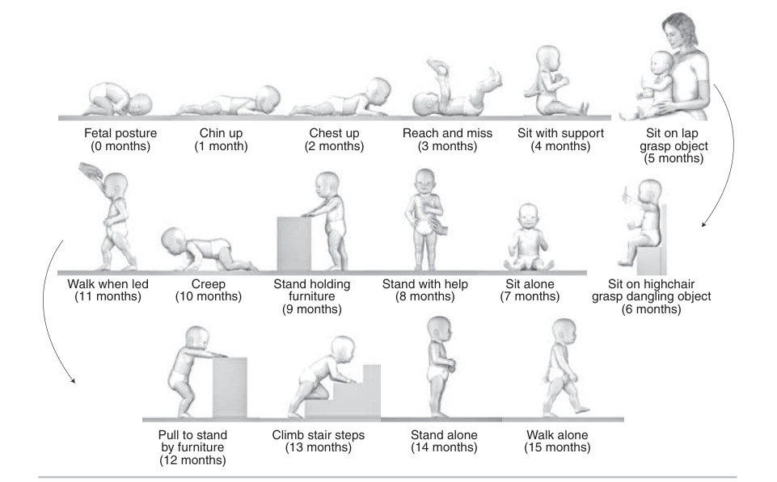<figcaption>Hình 1.2: Các cột mốc phát triển vận động, từ lúc mới sinh đến 15 tháng tuổi.</figcaption></figure>
<p>do các phản xạ sớm hoặc lảm nhảm vận động gây ra (được các nhà nghiên cứu thời kỳ đầu coi là những chuyển động chi ngẫu nhiên và rời rạc ở trẻ sơ sinh).</p>
<p>Tuy nhiên, do thiếu các thước đo trực tiếp về những quá trình trưởng thành này trong CNS, nghiên cứu trong lĩnh vực đã bước vào một giai đoạn phân tích mô tả và xác định các chuẩn mực theo nhóm tuổi từ giữa những năm 1940 đến những năm 1970. Các nhà nghiên cứu sau đó tập trung nhiều hơn vào những mâu thuẫn thú vị với tiến trình các cột mốc vận động (ví dụ, Thelen, Ridley-Johnson, &amp; Fisher, 1983), làm nổi bật ảnh hưởng của môi trường riêng biệt của mỗi người trong quá trình phát triển. Các nhà nghiên cứu không còn coi những khác biệt cá nhân về tốc độ tiến triển qua các cột mốc vận động là bằng chứng tiềm ẩn của bệnh lý. Thay vào đó, họ tin rằng những khác biệt này phản ánh sự tương tác độc đáo giữa các đặc điểm cá nhân và bối cảnh môi trường cụ thể mà mỗi người phát triển (Thelen &amp; Smith, 1994).</p>
<p>Lý thuyết giai đoạn học vận động của Fitts</p>
<p>Chiến tranh thế giới thứ hai đã khơi dậy lại sự quan tâm đến các quá trình tiếp thu kỹ năng khi các chính phủ ở Hoa Kỳ và Vương quốc Anh yêu cầu các nhà nghiên cứu nghiên cứu phương pháp chọn lọc và huấn luyện nhân viên quân sự. Vì những mối bận tâm thực tiễn, chẳng hạn như thiết kế công thái học của thiết bị và huấn luyện các kỹ năng quân sự, các nhà nghiên cứu đã áp dụng một cách tiếp cận hướng vào nhiệm vụ bao trùm, ít giúp làm sáng tỏ các quá trình tiếp thu kỹ năng ở con người (Schmidt &amp; Lee, 2005). Việc nhấn mạnh nghiên cứu thực hiện và học tập trong các nhiệm vụ cụ thể đã dẫn đến kiến thức về những vấn đề thực tiễn như lập lịch tối ưu cho luyện tập và cung cấp phản hồi nhằm tăng cường học tập (ví dụ, số lượng, tần suất, thời lượng). Paul Fitts (1964) đã phát triển một mô hình có ảnh hưởng về tiếp thu kỹ năng, nhận được nhiều ủng hộ trong các sách giáo khoa và tài liệu thực hành sau này (ví dụ, Abernethy, 2001). Mô hình ba giai đoạn của ông mô tả việc học như một quá trình liên tục với những thay đổi dần dần trong bản chất của xử lý thông tin khi việc học tiến triển (xem hình 1.3).</p>
<p>Trong giai đoạn nhận thức ban đầu của mô hình Fitts, người học được tiếp xúc với các quy tắc đơn giản và hướng dẫn bằng lời để có được hiểu biết cơ bản về chuyển động. Ở giai đoạn này, thực hiện mang tính biến thiên và đầy lỗi khi người học thử nghiệm các cấu hình vận động khác nhau. Khi người học đạt đến giai đoạn liên tưởng tiếp theo, các mẫu hình vận động được tinh chỉnh và nhất quán hơn. Tùy thuộc vào độ phức tạp của nhiệm vụ và năng lực của người học, giai đoạn này có thể đòi hỏi thời lượng luyện tập khác nhau. Đạt đến giai đoạn tự động hóa thứ ba đòi hỏi luyện tập kéo dài. Ở giai đoạn này, người học có thể thực hiện kỹ năng với nỗ lực tinh thần tối thiểu và rất ít lỗi. Như đã lưu ý trong chương sau, phần lớn quá trình học được suy ra trong mô hình ba giai đoạn của Fitts được quy cho sự phát triển và thu thập các năng lực xử lý thông tin (Anderson, 1982) và việc xây dựng các chương trình vận động phù hợp.</p>
<p>Các lý thuyết xử lý thông tin</p>
<p>Bắt đầu từ các tác phẩm sớm của James (1890), Woodworth (1899) và Lashley (1917), một lý thuyết phổ biến đã giả định rằng thông tin nhận thức–vận động có thể được biểu diễn trong CNS. Những biểu diễn này được thu thập thông qua học tập, dẫn đến việc CNS lưu trữ một tập hợp các lệnh vận động kiểm soát hành vi vận động. Các nhà nghiên cứu cho rằng chế độ điều hòa vận động này, được gọi là kiểm soát vòng hở, chịu trách nhiệm kiểm soát các chuyển động nhanh, dạng bắn, trong đó một tập hợp hướng dẫn hành động được lên kế hoạch sẵn có thể được thực hiện mà không cần phản hồi điều chỉnh, ví dụ trong thực hiện cú đấm thẳng (jab) trong quyền anh. Trong những năm sau Thế chiến II, Henry và Rogers (1960) nhấn mạnh tầm quan trọng của các hướng dẫn tập trung hóa cho vận động với lý thuyết trống bộ nhớ của họ.</p>
<p>Theo truyền thống, các lý thuyết nhấn mạnh vai trò của các cấu trúc trung ương trong kiểm soát vận động có xu hướng tìm đến các thiết bị lưu trữ điện tử và cơ khí để mô hình hóa cách thông tin có thể được lưu trữ và biểu diễn trong CNS. Những thiết bị này đã đóng vai trò ẩn dụ cho nhiều quá trình kiểm soát vận động và cho thấy ảnh hưởng của vật lý học đối với các lý thuyết tâm lý về hành vi vận động. Ví dụ, trống bộ nhớ là những thiết bị trong máy tính thời kỳ đầu, nơi các chương trình và thông tin có thể được nạp vào để lưu trữ. Keele (1968) là người đầu tiên dùng thuật ngữ chương trình vận động, ông mượn thuật ngữ này cho một sự tương tự chức năng phổ biến về cách não tạo ra các đầu ra vận động nhất quán và đáng tin cậy, lại phản ánh những phát triển công nghệ trong phần cứng máy tính vào thời điểm</p>
<p style="font-style:italic;color:#475569;font-size:.88rem">Hình 1.3: Mô hình ba giai đoạn của Fitts mô tả việc học như một quá trình liên tục với những thay đổi dần dần trong bản chất của xử lý thông tin khi việc học tiến triển.</p>
<p>Thời gian luyện tập</p>
<p>Giai đoạn 3: Giai đoạn tự động hóa Gần như tự động/thói quen Kiểm soát dưới ý thức Đa nhiệm Tính biến thiên thực hiện tối thiểu Rất ít lỗi</p>
<p>Giai đoạn 2: Giai đoạn liên tưởng Liên kết các tín hiệu môi trường với hành động Đạt được tính nhất quán Tinh chỉnh Ít lỗi hơn/nhỏ hơn Có thể phát hiện và sửa lỗi</p>
<p>Giai đoạn 1: Giai đoạn ngôn ngữ–nhận thức Xác định mục tiêu nhiệm vụ Tự nói chuyện/tự hỏi Tiến bộ thực hiện nhanh Đầy lỗi Vụng về/kém hiệu quả</p>
<figure class="bookfig">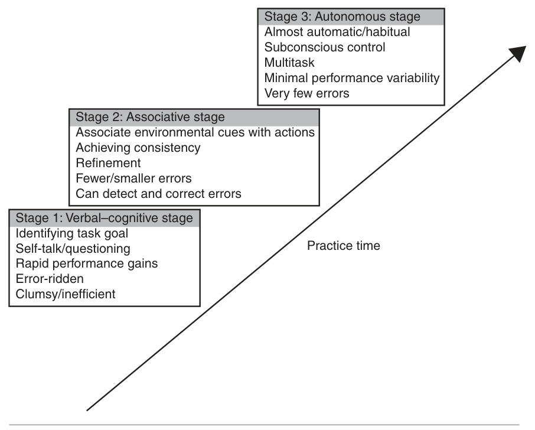<figcaption>Hình 1.3: Mô hình ba giai đoạn của Fitts mô tả việc học như một quá trình liên tục với những thay đổi dần dần trong bản chất của xử lý thông tin khi việc học tiến triển.</figcaption></figure>
<p>đó (xem Khái niệm chính bên dưới). Giả định cơ bản của sự tương tự này là não hoạt động như một máy tính để xử lý thông tin và tạo ra các đầu ra trong hành vi. Xử lý thông tin trong CNS diễn ra qua một chuỗi các giai đoạn nhận thức rời rạc, bao gồm nhận thức, ra quyết định và thực hiện phản ứng (xem hình 1.4). Các nhà nghiên cứu dùng thời gian phản ứng vận động làm biến số chính để giải thích các giai đoạn xử lý thông tin trong những nhiệm vụ có độ phức tạp khác nhau (Keele &amp; Posner, 1968; Klapp, 1977).</p>
<h3>Khái niệm chính</h3>
<p>Chương trình vận động mô tả một tập hợp các lệnh vận động được lưu trữ trong CNS. Thuật ngữ này ban đầu được Keele (1968) đề xuất, dựa nhiều trên sự tương tự hóa não như một máy tính tinh vi. Chương trình vận động tổng quát sau đó được phát triển để biểu diễn một hạng mục chung của các chuyển động nhằm giải quyết vấn đề lưu trữ (Schmidt, 1975). Những người chỉ trích chương trình vận động cho rằng khái niệm này giả định sự tồn tại của một tác nhân dạng homunculus (trong khoa học thần kinh được gọi là &quot;người nhỏ bên trong não&quot;) hay một tác nhân điều hành cần thiết để tạo ra và lựa chọn các chương trình.</p>
<p style="font-style:italic;color:#475569;font-size:.88rem">Hình 1.4: Xử lý thông tin diễn ra trong CNS qua một chuỗi các giai đoạn nhận thức rời rạc, bao gồm nhận thức, ra quyết định và thực hiện phản ứng.</p>
<p>Được chuyển ngụ, có sự cho phép, từ R.A. Schmidt và C.A. Wrisberg, 2000, Motor learning and performance, ấn bản thứ 2 (Champaign, IL: Human Kinetics), tr. 95.</p>
<p>Phản hồi Lỗi</p>
<p>Ý định vận động</p>
<p>Cơ quan điều hành</p>
<p>Cơ quan hiệu ứng</p>
<p>(Cảm giác cơ)</p>
<p>(Cảm giác môi trường)</p>
<p>(Cảm giác vận động)</p>
<p>Môi trường</p>
<p>Vận động</p>
<p>Cơ bắp</p>
<p>Nhận diện kích thích</p>
<p>Lựa chọn phản ứng</p>
<p>Lập trình phản ứng Tham chiếu (Biểu diễn) Bộ so sánh</p>
<figure class="bookfig"><figcaption>Hình 1.4: Xử lý thông tin diễn ra trong CNS qua một chuỗi các giai đoạn nhận thức rời rạc, bao gồm nhận thức, ra quyết định và thực hiện phản ứng.</figcaption></figure>
<p>Trong những năm 1960 và 1970, một cuộc tranh luận lớn về mô hình đã diễn ra xoay quanh tầm quan trọng của chương trình vận động so với việc sử dụng phản hồi liên tục liên quan đến thực hiện để kiểm soát vận động. Lý thuyết vòng kín của Adams (1971) ủng hộ vai trò của phản hồi trong cả kiểm soát và học vận động. Dựa trên các nguyên lý kỹ thuật trong khoa học điều khiển học, lý thuyết vòng kín hàm ý rằng vận động bình thường được điều hòa bằng sự so sánh liên tục giữa thông tin cảm giác hiện tại và thông tin được tạo ra như kết quả của một chuyển động thành công (xem hình 1.5). Người học mới phát triển các biểu diễn (dấu vết nhận thức) của chuyển động mong đợi bằng cách dùng phản hồi liên quan đến kết quả (kiến thức về kết quả) để đánh giá tiến bộ của mình. Nhiều nghiên cứu đã công bố ủng hộ lý thuyết của Adams, mặc dù sớm rõ ràng rằng, trái ngược với các lý thuyết vòng hở, chủ yếu các chuyển động định vị chậm (ví dụ, lái xe ô tô hoặc đi xe đạp) phù hợp nhất với lý thuyết vòng kín. Trong cả lý thuyết vòng hở lẫn vòng kín, một giả định then chốt là khả năng của CNS lưu trữ một số lượng lớn biểu diễn để kiểm soát nhiều chuyển động khác nhau cần thiết trong đời sống hàng ngày. Hãy tưởng tượng hàng ngàn mẫu hình vận động khác nhau mà con người có thể được yêu cầu thực hiện trong những tình huống cụ thể.</p>
<p>Schmidt (1975) đã cố gắng giải quyết cuộc tranh luận bằng cách kết hợp các khía cạnh của kiểm soát vòng hở và vòng kín trong đề xuất lý thuyết lược đồ về học kỹ năng vận động rời rạc (xem Tiêu điểm nghiên cứu). Lược đồ là một tập hợp các quy tắc về thực hiện một phản ứng vận động, liên kết với phản hồi nhận được trong và sau khi thực hiện. Trong lý thuyết lược đồ của Schmidt, chương trình vận động tổng quát (GMP) là một biểu diễn trừu tượng chứa các đặc điểm chung</p>
<p style="font-style:italic;color:#475569;font-size:.88rem">Hình 1.5: Trong lý thuyết vòng kín, người học mới phát triển các biểu diễn của chuyển động mong đợi bằng cách dùng phản hồi liên quan đến kết quả (kiến thức về kết quả) để đánh giá tiến bộ của mình.</p>
<p>Cơ quan điều hành vận động Cơ quan hiệu ứng vận động Các lệnh vận động</p>
<p>Kiểm soát vòng hở</p>
<p>Cơ quan điều hành vận động Cơ quan hiệu ứng vận động</p>
<p>Các lệnh vận động</p>
<p>Phản hồi</p>
<p>Kiểm soát vòng kín</p>
<figure class="bookfig"><figcaption>Hình 1.5: Trong lý thuyết vòng kín, người học mới phát triển các biểu diễn của chuyển động mong đợi bằng cách dùng phản hồi liên quan đến kết quả (kiến thức về kết quả) để đánh giá tiến bộ của mình.</figcaption></figure>
<p>cho một hạng mục chuyển động nhất định như chỉ vào, giữ thăng bằng, nhảy và di chuyển. Một hệ quả của lý thuyết lược đồ là điều kiện luyện tập biến thiên, thay vì cụ thể, là cần thiết để người học thu được lược đồ vững chắc có thể tạo ra các chuyển động chức năng cho một hạng mục hành động cụ thể (ví dụ, lái xe ô tô) trong nhiều điều kiện thực hiện khác nhau. Người ta cho rằng lái xe trong các điều kiện môi trường khác nhau sẽ dẫn đến phạm vi trải nghiệm rộng hơn và cho phép người lái đối phó với các điều kiện lái mới. Lý thuyết học của Schmidt đã gợi ra nhiều nghiên cứu trong phòng thí nghiệm kiểm tra các khía cạnh như tham số hóa chuyển động và tính biến thiên của luyện tập. Một lần nữa, lại có xu hướng dùng các nhiệm vụ vận động đơn giản với ít thành phần của hệ thống vận động (ví dụ, các đoạn chi) trong những môi trường học tập bị giới hạn.</p>
<h3>Tiêu điểm nghiên cứu</h3>
<p>LÝ THUYẾT LƯỢC ĐỒ VỀ HỌC KỸ NĂNG VẬN ĐỘNG RỜI RẠC</p>
<p>Năm 1975, Richard Schmidt công bố mô tả ban đầu về lý thuyết lược đồ trên tạp chí Psychological Review. Mối lo ngại của Schmidt về khả năng khái quát hóa lý thuyết vòng kín của Adams (1971) vượt ra ngoài việc học các chuyển động định vị chậm đã thúc đẩy ông công bố. Các nghiên cứu sau đó trích dẫn lý thuyết lược đồ thường xuyên, với 782 lần trích dẫn tính đến cuối năm 2004 (Shea &amp; Wulf, 2005). Hơn nữa, lý thuyết lược đồ đã góp phần vào một khối lượng lớn nghiên cứu thực nghiệm trên nhiều lĩnh vực thực hiện, kiểm tra các khái niệm như thời gian tương đối và tính biến thiên của luyện tập.</p>
<p>Schmidt đề xuất sự tồn tại của các GMP để giải quyết mối lo rằng mỗi chuyển động sẽ cần một chương trình vận động riêng, dẫn đến vấn đề lưu trữ. Thay vào đó, một hạng mục hành động nhất định (ví dụ, di chuyển, bao gồm bước chân, đi bộ, chạy, nhảy chân đơn và nhảy nhót) có thể được biểu diễn bằng cùng một GMP. Để tạo ra một phản ứng cho một tình huống cụ thể, người học cần thiết lập các thông số hoặc đặc tả then chốt, chẳng hạn như tốc độ, thời lượng và lực của chuyển động. Lý thuyết lược đồ cho rằng với luyện tập, người học nên giảm bớt việc dùng phản hồi, thay vào đó phát triển kiểm soát vòng hở thông qua điều chỉnh thông số để giải phóng gánh nặng nhận thức này. Để giải thích sự chuyển dịch dần của kiểm soát trong suốt quá trình học, Schmidt xác định hai loại lược đồ hoặc quy tắc trừu tượng: lược đồ nhớ lại và lược đồ nhận diện. Một lược đồ được xây dựng từ các nguồn thông tin khác nhau được lưu trữ mỗi khi một kỹ năng được thực hiện, chẳng hạn như điều kiện ban đầu, đặc tả phản ứng, hệ quả cảm giác và kết quả phản ứng. Trong luyện tập, các nguồn thông tin này có thể được liên kết với nhau để xây dựng lược đồ nhớ lại và lược đồ nhận diện mà người học có thể áp dụng ngay cả khi thực hiện trong điều kiện mới. Sau đây tóm tắt các đặc điểm của lý thuyết lược đồ:</p>
<p>Lý thuyết lược đồ giải thích cách người học có thể tạo ra các chuyển động cụ thể thuộc một hạng mục mà họ chưa từng thực hiện trước đây.</p>
<p>Điều kiện luyện tập biến thiên tạo thuận lợi cho việc hình thành một lược đồ chung vững chắc, có thể dẫn đến chuyển giao kỹ năng tốt hơn.</p>
<p>Các cấu trúc bộ nhớ riêng biệt được dùng cho việc tạo ra chuyển động (nhớ lại) và đánh giá độ chính xác của các chuyển động đã chọn (nhận diện).</p>
<p>Khả năng phát hiện lỗi sẽ cải thiện theo luyện tập.</p>
<p>Các lý thuyết thần kinh–tính toán</p>
<p>Thập niên 1990 được Quốc hội Hoa Kỳ chỉ định là Thập kỷ của Não bộ, trùng với sự tích hợp lớn hơn bằng chứng thần kinh học về chức năng CNS và mô hình hóa tâm lý về hành vi. Nỗ lực mô hình hóa tích hợp có phối hợp này được thể hiện trong việc sửa đổi nhiều lý thuyết kiểm soát vận động trong khoa học thần kinh nhận thức và hành vi (ví dụ, Kawato, 1999). Những mô hình nội tại này giải quyết mối quan tâm ban đầu về cách các biểu diễn chuyển động có thể tương tác với những thay đổi nhanh của môi trường để cung cấp giải pháp vận động linh hoạt cho từng người thực hiện. Ví dụ, Willingham (1998) đề xuất lý thuyết học dựa trên kiểm soát (COBALT), trong đó não tạo ra các loại biểu diễn khác nhau để thông tin quan trọng có thể được biểu tượng hóa và lưu trữ.</p>
<p>Theo COBALT, học vận động dẫn đến việc thu thập các loại biểu diễn khác nhau trong não dựa trên đặc điểm của thế giới, ý định, hoặc các mẫu trình tự của vị trí không gian hoặc lực cơ cụ thể (để phân tích chi tiết hơn, xem Davids, Kingsbury, Bennett, &amp; Handford, 2001). COBALT là ví dụ điển hình cho góc nhìn thần kinh–tính toán đề xuất cách các biểu diễn có thể cho phép người học tạo ra mô hình tinh thần về thế giới và bao gồm các phạm trù dựa trên đặc điểm môi trường, ý định, và các mẫu không gian hoặc thời gian của hoạt hóa cơ ở các cấp độ khác nhau của CNS. Ví dụ, một cú phát bóng trong quần vợt dựa trên một biểu diễn tự tâm đã được học (cảm nhận từ quan điểm của cá nhân) về &quot;kiến thức về trình tự các vị trí mà người ta nên phản ứng&quot; (Willingham, 1998, tr. 574). Arbib, Érdi, và Szentágothai (1998) đề xuất cách dùng tương tự các cấu trúc giả định làm trung gian cho chức năng não khi họ cho rằng một lược đồ là một đơn vị xử lý xen giữa cấu trúc thần kinh và động lực học của hệ thống vận động.</p>
<p>Trong các cách tiếp cận thần kinh–tính toán, các nhà nghiên cứu chủ yếu quan tâm đến việc xác định các vùng não chịu trách nhiệm kiểm soát hành động. Ví dụ, Muellbacher và các cộng sự (2002) cho rằng vỏ vận động chính là nơi củng cố hoặc ổn định các biểu diễn chuyển động, đặc biệt trong giai đoạn đầu học một kỹ năng vận động mới. Một cách tiếp cận phổ biến khác là xem xét cách não dùng khả năng xử lý song song, dạng mạng lưới của mình để đối phó với nhiều dòng thông tin (ví dụ, thông qua các cơ chế thần kinh như tập hợp tế bào vỏ não và mô hình hóa mạng thần kinh) (Bullock &amp; Grossberg, 1989; Wickens, Hyland, &amp; Anson, 1994).</p>
<p>Một thách thức lớn đối với các mô hình tính toán liên quan đến việc thu thập sự phối hợp trong các hành động đa khớp phức tạp (hành động liên quan đến nhiều chi, đoạn và khớp của cơ thể) trong môi trường thay đổi. Một câu hỏi quan trọng khác đối với lý thuyết tính toán là sự trao đổi thông tin giữa các cấp độ biểu diễn, chẳng hạn như biểu diễn không gian–thời gian của môi trường và biểu diễn của các mẫu hình vận động. Sự trao đổi này diễn ra ở đâu và như thế nào trong CNS? Nói một cách đời thường, mã thần kinh được chuyển đổi như thế nào từ biểu diễn tự tâm về thời gian và vị trí không gian sang mã hóa của CNS về lực cơ cụ thể dùng để tạo ra một mẫu hình vận động (Flash &amp; Sejnowski, 2001)? Trong hầu hết công trình tính toán sớm, các nhà nghiên cứu giả định rằng các tế bào thần kinh trung gian (có thể ở cấp độ tủy sống) đóng vai trò dịch mã để trao đổi giữa biểu diễn tự tâm về thế giới và các cơ cụ thể dùng để đạt được mục tiêu vận động.</p>
<p>Các xu hướng gần đây trong mô hình hóa tính toán được thúc đẩy bởi nỗ lực thiết kế và chế tạo các rô-bốt lấy cảm hứng sinh học (tức là những rô-bốt hành xử giống các hệ thống thần kinh sinh học thông thường hơn, bao gồm côn trùng, động vật và con người). Thế hệ thiết kế rô-bốt này đang giải quyết bài toán khó nhằm chế tạo những máy có thể hoàn thành các nhiệm vụ thử thách, thích ứng hành vi với môi trường và địa hình phức tạp, thậm chí hợp tác theo nhóm khi thực hiện các nhiệm vụ phức tạp như thăm dò khoáng sản trong khai thác mỏ (ví dụ, Mataríc, 1998). Kết quả là mô hình hóa trí tuệ nhân tạo mà, theo một số nhà nghiên cứu, cung cấp cái nhìn sâu sắc về cách CNS có thể kiểm soát vận động ở con người. Các ngành khoa học bộ phận như robotics và trí tuệ nhân tạo hiện đang rút cảm hứng từ nghiên cứu về cách các hệ thống thần kinh sinh học tương tác với môi trường phức tạp. Những mô hình thiết kế rô-bốt truyền thống, dựa trên các nguyên lý cảm nhận, mô hình hóa, lập kế hoạch và hành động, đang được bổ sung bằng các cách tiếp cận kiểm soát dựa trên hành vi với mục tiêu rõ ràng là chế tạo máy có thể hoạt động trong những môi trường không dự đoán trước và đầy thử thách, chẳng hạn như trong thăm dò không gian hoặc các cuộc thi bóng đá RoboCup (Mataríc, 1998). Những nguyên lý thiết kế thay thế, bao gồm rô-bốt tình huống, rút cảm hứng từ nghiên cứu về cách các hệ thống thần kinh sinh học tìm kiếm và thu nhận thông tin để hỗ trợ các tương tác tinh vi với môi trường của chúng (ví dụ, Di Paolo, 2002; Paine &amp; Tani, 2005). Một số triển khai rô-bốt dựa trên hành vi được xây dựng trên các nguyên lý sinh thái, trong đó một tác nhân và môi trường của nó được xem như một hệ thống không thể tách rời, được nghiên cứu ở thang độ phân tích sinh thái. Trong robotics sinh thái, hành vi vận động thích ứng được xác định bởi thông tin trong môi trường, thông tin này không cần được biểu diễn trong rô-bốt một cách chi tiết rõ ràng (Fajen et al., 2003). Thậm chí đã có những nỗ lực bỏ qua bộ lập kế hoạch trung tâm cho hành vi và ánh xạ trực tiếp hệ thống cảm giác tới các cơ cấu chấp hành của rô-bốt (Duchon &amp; Warren, 2002).</p>
<p>Ảnh hưởng của các lý thuyết thần kinh sinh học đối với kỹ thuật robotics không phải là một chiều. Kết quả là, những mô hình trí tuệ nhân tạo mới hơn này đã truyền cảm hứng cho sự nhấn mạnh vào việc hiểu cách sự đồng thích ứng của CNS và cơ thể diễn ra trong học vận động (ví dụ, Davidson &amp; Wolpert, 2003; Wolpert, Ghahramani, &amp; Flanagan, 2001). Tiến bộ này có ý nghĩa quan trọng vì nó thừa nhận rằng các quá trình nhận thức có thể được trung gian hóa bởi các ràng buộc vật lý của cơ thể người, vốn thay đổi trong suốt cuộc đời do phát triển và qua các thế hệ do áp lực tiến hóa.</p>
<p>Trong kiểu mô hình hóa tính toán này, việc dự báo kết quả của một hành động tạo nền tảng cho lập kế hoạch và tổ chức chuyển động hướng đến mục tiêu. Trao đổi thông tin giữa các biểu diễn cảm giác và hệ thống vận động được giải quyết bằng cách yêu cầu hai loại biểu diễn: mô hình xuôi và mô hình ngược (Kawato, 1999). Mô hình hóa xuôi đề cập đến việc ánh xạ các lệnh vận động tới các hệ quả cảm giác liên quan của một chuyển động. Nằm bên trong não, biểu diễn này được dùng để dự đoán hệ quả cảm giác của các chuyển động đã được lên kế hoạch. Ví dụ, khi lên kế hoạch hành động với tới một vật trên kệ cao, hệ quả cảm giác mong đợi có thể bao gồm thông tin từ việc nghiêng người và mất thăng bằng, đòi hỏi sự điều chỉnh của các cơ giữ tư thế và có cả việc điều chỉnh bằng một bước chân để hỗ trợ cú với dài tới kệ.</p>
<p>Mô hình hóa ngược đề cập đến việc chuyển đổi các hệ quả cảm giác dự kiến thành các lệnh vận động cần thiết để đạt được chúng. Từ quan điểm</p>
<p>Những rô-bốt có thể hoàn thành các nhiệm vụ thử thách, điều chỉnh hành vi theo môi trường phức tạp và hợp tác theo nhóm giúp các nhà nghiên cứu xác định CNS có thể kiểm soát vận động ở con người như thế nào.</p>
<p>© Toshiyuki Aizawa/Reuters/Corbis</p>
<figure class="bookfig restored"></figure>
<p>này, học vận động bao gồm việc thu thập các biểu diễn xuôi và ngược cho các nhiệm vụ và môi trường khác nhau (xem hình 1.6). Với mô hình xuôi, người ta học dùng phản hồi để điều hòa chuyển động, trong khi trong các ràng buộc nhiệm vụ quá nhanh để xử lý thông tin này, mô hình ngược cung cấp cho người thực hiện kiểm soát feed-forward. Việc thu thập mô hình xuôi giúp con người thích nghi với môi trường thay đổi nhanh, ngăn họ trở nên quá phụ thuộc vào thông tin cảm giác tức thì để điều hòa chuyển động, và có thể tạo nền tảng cho việc dùng hình dung tinh thần để luyện tập một kỹ năng trong tâm trí (Wolpert et al., 2001).</p>
<p>Miễn là các nhiễu loạn môi trường đòi hỏi thích ứng vẫn nằm trong kinh nghiệm của người thực hiện, kiểm soát feed-forward cho phép họ dùng các mô phỏng tinh thần &quot;nếu-thì&quot; như một dạng thích ứng phản ứng được lên kế hoạch trước đối với sự thay đổi của môi trường. Ví dụ, những người chơi quần vợt có kinh nghiệm có thể dự đoán rằng cú thuận tay của đối phương, đánh với quỹ đạo rất thấp ở ngang tầm lưới, có thể chỉ lướt qua đỉnh lưới, làm thay đổi quỹ đạo bay của bóng. Hệ quả khả dĩ này có thể dẫn đến kiểm soát feed-forward của một cú volley chụp bóng như một lựa chọn trong những tình huống đó. Được điều hòa bởi mô hình ngược, cơ chế thần kinh của kiểm soát feed-forward nhận ra rằng các vòng phản hồi sinh học hoạt động khá chậm và khắc phục độ trễ trong việc kiểm soát các chuyển động rất nhanh hoặc dạng bắn thông qua thông tin cảm giác. Trong những mô hình thần kinh–tính toán này, các vấn đề về độ phức tạp và năng lực lưu trữ được giải quyết bằng đề xuất rằng CNS chủ động nén mức độ chi tiết và phức tạp của thông tin nó lưu trữ bằng cách giảm số chiều của các biểu diễn xuôi và ngược.</p>
<p style="font-style:italic;color:#475569;font-size:.88rem">Hình 1.6: Với mô hình xuôi, người ta học dùng phản hồi để điều hòa chuyển động. Với các ràng buộc nhiệm vụ quá nhanh để xử lý thông tin, mô hình ngược cung cấp cho người thực hiện kiểm soát feed-forward.</p>
<p>Độ cứng, độ nhớt</p>
<p>Mô hình xuôi</p>
<p>Hệ số khuếch đại</p>
<p>Lệnh vận động phản hồi</p>
<p>Quỹ đạo thực tế</p>
<p>Quỹ đạo mong muốn +</p>
<p>Đối tượng được kiểm soát</p>
<p>Độ trễ</p>
<p>Lệnh vận động feed-forward</p>
<p>Quỹ đạo thực tế Quỹ đạo mong muốn Đối tượng được kiểm soát Mô hình ngược</p>
<p>Mô hình ngược</p>
<figure class="bookfig"><figcaption>Hình 1.6: Với mô hình xuôi, người ta học dùng phản hồi để điều hòa chuyển động. Với các ràng buộc nhiệm vụ quá nhanh để xử lý thông tin, mô hình ngược cung cấp cho người thực hiện kiểm soát feed-forward.</figcaption></figure>
<h3>Các đặc điểm chung của lý thuyết truyền thống</h3>
<p>Các lý thuyết truyền thống về tiếp thu kỹ năng vận động có chung một số đặc điểm chính. Những đặc điểm này hữu ích khi so sánh các lý thuyết truyền thống với các lý thuyết thay thế được mô tả trong những chương sau. Những điểm chung này gồm vai trò của biểu diễn trong kiểm soát nhận thức và hành động, ưu tiên mô hình hóa kiểm soát phân cấp, lưu trữ thông tin trong các hệ thống thần kinh sinh học, nhận thức gián tiếp, nhiễu được xem như lỗi hệ thống, và ưu tiên nghiên cứu các loại vận động cụ thể như nhắm bằng tay, chỉ vào, với và nắm. Trong phần này, chúng tôi làm nổi bật các đặc điểm chung đó.</p>
<p>Biểu diễn về thế giới và chuyển động</p>
<p>Các lý thuyết truyền thống được truyền cảm hứng từ những tiến bộ trong khoa học nhận thức, vốn có xu hướng so sánh cấu trúc não với kiến trúc máy tính và các quá trình tinh thần với thuật toán máy tính. Như đã lưu ý trước đó, lập luận lý thuyết này cho tiếp thu và kiểm soát kỹ năng vận động dùng ẩn dụ cơ bản về một biểu diễn nội tại của thế giới để mô tả cách nhận thức, tư duy và hành động có thể diễn ra. Ẩn dụ này cho thấy ảnh hưởng của vật lý học đối với khoa học tâm lý, khi chương trình nghiên cứu thống trị trong năm thập kỷ qua viện dẫn quan điểm xem ý định như những biểu diễn đóng vai trò là nguyên nhân nội tại của hành vi con người (van Orden et al., 2003). Trong tâm lý học, biểu diễn đã trở thành một ẩn dụ phổ biến cho quan hệ nhân–quả giữa ý định và hành vi vận động. Ẩn dụ này không chỉ ảnh hưởng mạnh đến thiết kế các thí nghiệm tâm lý mà còn đến cách diễn giải và phân tích dữ liệu cùng những giải thích lý thuyết mà các nhà tâm lý học ưu tiên (van Orden et al., 2003).</p>
<p>Theo đó, các lý thuyết này suy luận rằng việc học bao gồm xây dựng các mô hình nội tại về thế giới và về chuyển động, giúp tạo thuận lợi cho tương tác với môi trường. Các nhà nghiên cứu tin rằng những biểu diễn này hỗ trợ việc nội tâm hóa thông tin từ môi trường, có thể được dùng để dẫn dắt hành động. Các lý thuyết biểu diễn sớm bị vướng phải các vấn đề về tính đặc thù, năng lực lưu trữ và độ phức tạp tính toán, nhưng công trình gần đây được thông tin hóa bởi những phát triển trong lý thuyết mạng thần kinh tính toán, khoa học thần kinh, trí tuệ nhân tạo và robotics để mô hình hóa cách con người có thể thu được các chuyển động thích ứng và đáng tin cậy. Những phát triển trong lĩnh vực này đang tận dụng hiểu biết ngày càng tăng về CNS để ràng buộc việc mô hình hóa kiểm soát biểu diễn của hành vi.</p>
<p>Người học như một hệ thống kiểm soát phân cấp</p>
<p>Các lý thuyết truyền thống giả định rằng sự phối hợp và kiểm soát vận động đòi hỏi một dạng quy định hay biểu diễn có trật tự cho hành động (Anson, Elliott, &amp; Davids, 2005; Newell, 2003). Các cách tiếp cận nhận thức truyền thống giải quyết vấn đề này bằng cách viện dẫn một cơ chế kiểm soát trung ương nằm trong não. Thường được gọi là homunculus, cơ chế này chịu trách nhiệm tạo ra, lựa chọn và định thời các chương trình vận động. Các hệ thống kiểm soát phân cấp hoạt động theo cách từ trên xuống và tương tự như một người điều khiển rối, người kiểm soát từng cử động của con rối bằng cách điều khiển chuyển động của từng sợi dây gắn vào các bộ phận của con rối. Một ví dụ khác về hệ thống kiểm soát phân cấp tồn tại trong tổ chức xã hội của các công ty, nơi mọi quyết định đều do người quản lý đưa ra, và chỉ thị của người này cho các giám sát viên cấp dưới cuối cùng dẫn đến đầu ra của người lao động. Trong những hệ thống như vậy, sự nhấn mạnh vào tiếp thu kỹ năng dựa nhiều vào việc xây dựng các quá trình nhận thức ngày càng tinh vi để phối hợp các mẫu hình vận động ngày càng thành thạo. Thêm vào đó, các hệ thống phân cấp phần lớn bỏ qua kinh nghiệm trước đây của người học và cấu tạo vật lý của hệ thống vận động; các quá trình phản hồi và đặc tính cụ thể của cơ thể mỗi người bị xem nhẹ (xem chương 2).</p>
<p>Lưu trữ có giới hạn năng lực</p>
<p>Mượn một ẩn dụ từ khoa học máy tính, các chuyển động được điều hòa bởi các chương trình dựa trên ký hiệu phải được lưu trữ trong CNS để có thể được gọi lại cho hành động khi cần. Dù đã có những tiến bộ đáng kể trong các lĩnh vực sinh học thần kinh và tâm lý học thần kinh, cách thức và vị trí mã hóa và lưu trữ các chương trình vận động vẫn chưa rõ. Một vấn đề phát sinh từ các cách tiếp cận nhận thức là, giống như máy tính, chức năng của CNS có năng lực hạn chế. Các nhà nghiên cứu đã viện dẫn giới hạn này để giải thích tại sao sự phân bổ chú ý lại là một đặc điểm quan trọng của hành vi thành thạo (Abernethy, Maxwell, Masters, van der Kamp, &amp; Jackson, 2007).</p>
<p>Các hệ thống kiểm soát phân cấp coi một tác nhân điều hành hoặc tác nhân bên ngoài chịu trách nhiệm tổ chức hệ thống, như được ví von qua người điều khiển rối điều khiển các bộ phận chuyển động của con rối.</p>
<p>© John R. Jones; Papilio/Corbis</p>
<figure class="bookfig restored"></figure>
<p>Nhận thức gián tiếp</p>
<p>Để hiểu được thế giới mà ta vận động trong đó, các lý thuyết truyền thống giả định rằng người thực hiện cần diễn giải thông tin bên trong trước khi phản ứng với thông tin đó. Nói cách khác, thông tin cảm giác vô nghĩa phải được so sánh với các biểu diễn hiện có về thế giới (ký ức) được lưu trong não. Đối với người học mới, cách xử lý gián tiếp này sẽ rất nặng nề khi họ cố hiểu môi trường mà không có kinh nghiệm trước để dựa vào. Ngược lại, người thực hiện thành thạo đã học cách xác định nhanh các nguồn thông tin then chốt và dùng kiến thức hiện có để giảm nhẹ gánh nặng xử lý. Ví dụ, những người leo núi có kinh nghiệm có thể nhìn vào mặt đá và phát hiện các điểm bám tay và bám chân hữu ích nhất trên bề mặt. Chuyên môn của họ cho phép họ nhận ra các nguồn thông tin tinh tế về kích thước, độ sâu và chiều rộng của đặc điểm bề mặt mà những người leo núi ít kinh nghiệm hơn không nhận ra. Hơn nữa, tốc độ nhận thức của họ được tăng cường nhờ chiến lược gom nhóm thông tin thành những chỉnh thể lớn hơn, dễ quản lý hơn. Họ không cần nhận thức và xác định các đơn vị thông tin nhỏ hơn trong một quá trình tốn thời gian.</p>
<p>Giảm thiểu lỗi và nhiễu</p>
<p>Theo truyền thống, khoa học nhận thức coi mức độ cao của tính biến thiên vận động là một vấn đề đối với con người trong lúc thực hiện nhiệm vụ (Newell, Deutsch, Sosnoff, &amp; Mayer-Kress, 2006). Ví dụ, cách tiếp cận xử lý thông tin xem người thực hiện như một dạng kênh liên lạc của con người, trong đó quan hệ giữa tín hiệu đầu vào và đầu ra của hệ thống là tuyến tính và tất định. Theo quan điểm này, người thực hiện có thể loại bỏ hoặc giảm thiểu nhiễu thông qua luyện tập và kinh nghiệm nhiệm vụ. Vì lý do đó, độ lớn của tính biến thiên trong thực hiện đã được xem là một đặc điểm quan trọng để đánh giá chất lượng kiểm soát của hệ thống (Schmidt, 1985). Vai trò của luyện tập lặp đi lặp lại thường được quan niệm là giảm dần lượng tính biến thiên của mẫu hình vận động được xem như nhiễu. Nhưng tính biến thiên vận động có phải lúc nào cũng xấu không? Như sẽ thấy sau trong chương này, các cách tiếp cận lý thuyết này thường đã bỏ qua vai trò cấu trúc quan trọng mà tính biến thiên có thể đóng trong việc thích ứng các mẫu hình vận động hướng đến mục tiêu thành công với môi trường thay đổi.</p>
<p>Các mô hình về phạm vi vận động hạn chế</p>
<p>Trong lĩnh vực vận động con người, một nhiệm vụ then chốt là hiểu hệ thống vận động đạt được sự phối hợp như thế nào giữa các thành phần của cơ thể, cũng như giữa các mẫu hình vận động với các vật thể và bề mặt quan trọng trong môi trường. Nghĩa là, con người cần thu được kỹ năng phối hợp các bộ phận liên quan của cơ thể thành một mẫu hình chức năng có thể nhận diện như một hành động thống nhất, chẳng hạn như khi thực hiện cú nhảy ba vòng (triple salko) trong trượt băng, hoặc một cách bình thường hơn, khi bước lên một bề mặt. Tuy nhiên, trong cả hai ví dụ này, ngay cả mẫu hình vận động thống nhất nhất cũng cần được phối hợp liên quan đến một bề mặt hoặc chướng ngại vật của môi trường, ví dụ khi tiếp đất trên băng hoặc khi đặt chân lên một bậc thang hay bờ vỉa. Bởi vì khả năng tương tác giữa các hệ thống con này, sự phối hợp trong hệ thống vận động của con người được đặc trưng bởi độ phức tạp rất lớn (Davids, Bennett, &amp; Newell, 2006).</p>
<p>Việc tìm kiếm các quy luật đơn giản về nguyên nhân và kết quả đã khiến các nhà khoa học vận động thường phải vật lộn để thừa nhận độ phức tạp mà con người phải vượt qua ngay cả để tạo ra một chuyển động hướng đến mục tiêu đơn giản. Vấn đề này được gọi là bài toán bậc tự do của Bernstein (1967). Bậc tự do (dfs) là các thành phần độc lập của một hệ thống phức tạp có thể kết hợp với nhau theo nhiều cách khác nhau. Ví dụ, các con côn trùng trong một đàn là những bậc tự do độc lập, có hành động cần được phối hợp để xây tổ hoặc nuôi con. Cũng theo cách đó, số lượng lớn cơ, khớp, đoạn chi và xương trong cơ thể là ví dụ về các bậc tự do của một hệ thống phức tạp. Số lượng dfs khổng lồ này trong hệ thống vận động của con người là một dạng lời nguyền đối với các cách giải thích tính toán về tiếp thu kỹ năng và thực hiện (Kugler &amp; Turvey, 1987). Bởi vì dường như một hệ thống kiểm soát phân cấp với một tác nhân điều hành đứng đầu cần phải biết quá nhiều thông tin về vị trí của từng bộ phận riêng lẻ trong không gian, chúng đang làm gì hiện tại, và vị trí của chúng trong không gian có thể thay đổi như thế nào theo thời gian trong lúc thực hiện.</p>
<p>Theo truyền thống, việc lựa chọn các mô hình vận động để nghiên cứu chức năng của hệ thống vận động đã bị lệch khỏi các hành động năng động, đa khớp, mang tính chức năng phổ biến trong thể thao, vì quan điểm cho rằng tính chặt chẽ thực nghiệm có thể được duy trì tốt hơn trong các nghiên cứu phòng thí nghiệm về chuyển động đơn giản (Davids, Button, Araújo,</p>
<p>Các hệ thống phức tạp trong tự nhiên được cấu thành từ nhiều bộ phận có thể tự do tương tác với nhau. Nhiều ví dụ phong phú tồn tại trong tự nhiên, như các đàn cá.</p>
<p>© Marty Sniderman/Corbis</p>
<figure class="bookfig restored"></figure>
<p>Renshaw, &amp; Hristovski, 2006). Hệ quả là, nhiều lý thuyết truyền thống được xây dựng để giải thích một nhóm nhỏ hành động liên quan (Newell, 1989). Ví dụ, các lý thuyết vòng hở phù hợp nhất với các chuyển động nhanh, dạng bắn; lý thuyết vòng kín xử lý các chuyển động chậm, chính xác; và lý thuyết lược đồ được nghĩ ra để giải thích việc học các chuyển động rời rạc. Các cách tiếp cận truyền thống đối với tiếp thu kỹ năng chưa đưa ra được một lý thuyết thống nhất về học tập (Anson et al., 2005).</p>
<p>Về mặt lịch sử, đã có sự nhấn mạnh quá mức vào độ lớn của sự thay đổi trong kết quả thực hiện mà thiếu phân tích đầy đủ về các đặc tính động lực của sự thay đổi trong phối hợp vận động (Newell, 2003). Sự chỉ trích này có thể một phần bắt nguồn từ việc thiếu các thiết bị đo đạc tinh vi để kiểm tra sự phối hợp (ví dụ, hệ thống phân tích chuyển động ba chiều). Một mối bận tâm khác là nhiều nghiên cứu về tiếp thu kỹ năng chỉ được tiến hành trong những đợt luyện tập ngắn, cường độ cao (ví dụ, một số ngày). Rất ít ví dụ trong tài liệu nghiên cứu về các thí nghiệm học vận động được tiến hành trong thời gian luyện tập dài hơn, như trải nghiệm trong đời thực (ví dụ, nhiều tháng và nhiều năm luyện tập trong nhiều môi trường làm việc và thể thao), và các kết luận có thể dựa trên những hiệu ứng tạm thời tương đối của luyện tập thay vì hậu quả lâu dài của học tập.</p>
<h3>Hàm ý đối với người thực hành vận động</h3>
<p>Điều đáng ngạc nhiên là, mối liên hệ giữa các lý thuyết tiếp thu kỹ năng và luyện tập không phải lúc nào cũng được khai thác ở mức có thể mong đợi (Fairweather, 1999; Newell &amp; Rovegno, 1990). Tuy nhiên, nhiều người thực hành vận động như nhà trị liệu, giáo viên và huấn luyện viên đã tiếp nhận một cách ngầm định mô hình người học do các lý thuyết truyền thống phát triển. Trong phần này, chúng tôi sẽ thảo luận một số hàm ý chính đằng sau việc chuyển các cách tiếp cận lý thuyết được chấp nhận vào thực hành.</p>
<p>Lượng luyện tập</p>
<p>Vì người thực hành vận động thường có lượng thời gian giới hạn để làm việc với người học, điều thú vị là xem xét người học cần bao nhiêu luyện tập để đạt được các mức chuyên môn khác nhau. Rất tiếc, do khó khăn thực tiễn trong việc tuyển người tham gia và theo dõi tiến bộ theo thời gian, các nhà nghiên cứu đã tiến hành rất ít nghiên cứu dài hạn về học vận động. Những ngoại lệ đáng chú ý gồm Snoddy (1926) và Crossman (1959). Phân tích hoạt động luyện tập của những người thực hiện chuyên môn có lẽ là sáng tỏ nhất. Một số nghiên cứu đã báo cáo rằng tối thiểu 10 năm luyện tập là cần thiết để đạt đến mức thực hiện xuất chúng. Ericsson, Krampe, và Tesch-Römer (1993), những người nghiên cứu nhạc sĩ, cho rằng số giờ tích lũy dành cho luyện tập có chủ đích có liên hệ đơn điệu và tích cực với mức độ thực hiện. Người ta lập luận rằng, trong những giới hạn vật lý nhất định, bạn dành càng nhiều giờ cho luyện tập có chủ đích, khả năng bạn phát triển mức chuyên môn cao trong một bối cảnh thực hiện cụ thể càng lớn. Xét về việc đi qua ba giai đoạn học của Fitts (1964), các nhà nghiên cứu vẫn giữ im lặng về thời lượng luyện tập cần thiết. Tóm lại, thông điệp truyền thống rút ra cho luyện tập dường như là càng nhiều càng tốt, vì các nhà nghiên cứu tập trung nghiên cứu lượng thời gian cần thiết để đạt được mức chuyên môn cao.</p>
<p>Tính biến thiên của luyện tập</p>
<p>Hãy xem xét một người bị cụt chi học đi lại với một chân giả mới hoặc một người mới chơi bowling 10 pin cố gắng thực hiện cú strike. Những người học này có lợi từ sự biến thiên của điều kiện luyện tập, hay họ nên tập trung vào các lần lặp lại đơn giản nhằm tạo ra một mẫu hình vận động không đổi? Câu trả lời phần lớn phụ thuộc vào mức độ biến thiên của điều kiện mà người học có thể gặp trong tình huống thực hiện. Trong điều kiện ổn định, dễ dự đoán như bowling, các cách tiếp cận truyền thống sẽ khuyến nghị lặp lại nhiều lần từ lần này sang lần khác các kỹ năng liên quan như đặt chân, thả bóng và theo dõi (follow-through) để củng cố chương trình vận động chịu trách nhiệm cho hành động đó. Đối với các nhiệm vụ năng động như đi qua một môi trường lộn xộn hoặc một con phố đông đúc, người bị cụt chi cần luyện tập đi lại trong các điều kiện khác nhau để thấy thoải mái với chân giả. Như đã thảo luận trong Tiêu điểm nghiên cứu của chương này, lý thuyết lược đồ của Schmidt (1975) khuyến nghị biến thiên luyện tập ở các thông số then chốt ảnh hưởng đến việc tạo ra các GMP, chẳng hạn như biên độ, lực hoặc thời gian của chuyển động. Trong một bài viết sau đó, Schmidt (1985) chỉ ra rằng các nhà nghiên cứu và người thực hành nên tìm kiếm hoạt động luyện tập bảo tồn các khía cạnh bất biến trong phối hợp của người học (ví dụ, thời gian tương đối).</p>
<p>Đối với các nhiệm vụ năng động như đi qua một môi trường lộn xộn hoặc một con phố đông đúc, người bị cụt chi cần luyện tập đi lại trong những điều kiện khác nhau để thấy thoải mái với chân giả.</p>
<figure class="bookfig">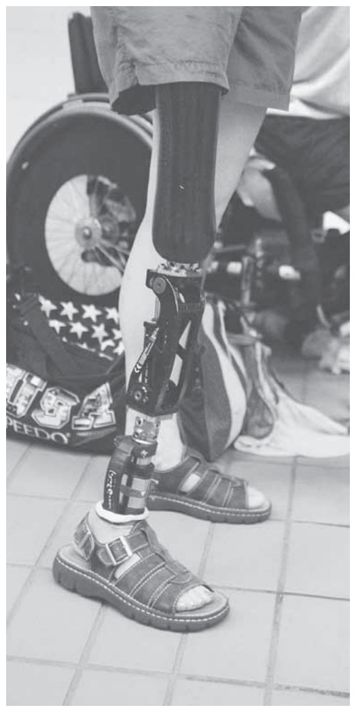</figure>
<p>Kết quả nghiên cứu xem xét tính biến thiên của luyện tập khá mâu thuẫn (xem van Rossum, 1990). Có vẻ như một số yếu tố trung gian hóa lợi ích tiềm năng của điều kiện luyện tập biến thiên. Ví dụ, người học trẻ hơn, ít kinh nghiệm hơn dường như được lợi nhiều hơn từ điều kiện luyện tập biến thiên so với người học lớn tuổi hơn (có thể gợi ý cách học khám phá có thể mang lại lợi ích cho nhóm này). Nhìn chung, việc học các nhiệm vụ dạng bắn và phức tạp cũng dường như đáp ứng tốt với luyện tập biến thiên (để xem xét lại, xem Lee, Chamberlin, &amp; Hodges, 2001). Vì chuyển động không thể được lặp lại một cách khuôn mẫu theo cách hoàn toàn giống nhau (Newell et al., 2006), vai trò của sự lặp lại trong luyện tập đã bị đặt dưới sự xem xét kỹ lưỡng. Có vẻ như việc yêu cầu người học thích ứng chuyển động của họ trong các ràng buộc nhiệm vụ biến thiên có giá trị đáng kể trong việc giúp họ học cách tương tác với môi trường phức tạp.</p>
<p>Tổ chức luyện tập</p>
<p>Lính cứu hỏa và những người đi câu cần học cách buộc các loại nút thắt khác nhau cho những mục đích khá khác nhau trong môi trường làm việc của họ. Họ nên học buộc các nút này theo cách khối (một nút tại một thời điểm), hay nên luyện tập các nút khác nhau trong cùng một buổi luyện tập (luyện tập ngẫu nhiên)? Các thí nghiệm của nhà nghiên cứu trong lĩnh vực tổ chức luyện tập đã dẫn đến một hiện tượng nghiên cứu nổi tiếng gọi là hiệu ứng nhiễu ngữ cảnh (xem Brady, 1998). Tổ chức luyện tập theo khối dường như dẫn đến thực hiện tốt hơn trong lúc thu lĩnh kỹ năng; tuy nhiên, tổ chức luyện tập ngẫu nhiên lại có lợi cho việc học (tức là duy trì và chuyển giao) của một kỹ năng. Hiệu ứng này dường như mạnh nhất khi các GMP khác nhau được xáo trộn ngẫu nhiên trong lúc luyện tập (Schmidt, 2003). Thêm vào đó, dù hiệu ứng nhiễu ngữ cảnh nhận được nhiều ủng hộ trong tài liệu, việc thay đổi các biến như độ phức tạp của kỹ năng và trình độ kỹ năng cần được tính đến (Ollis, Button, &amp; Fairweather, 2005).</p>
<p>Điều ngạc nhiên là, việc thêm tính biến thiên ngẫu nhiên dưới dạng các thành phần vận động không liên quan khi luyện tập một chuyển động mục tiêu lại dẫn đến thực hiện và học tập tốt hơn so với chỉ luyện tập các mẫu hình vận động cụ thể (xem Button, Davids, &amp; Schöllhorn, 2006). Hiệu ứng này rõ rệt trong các nghiên cứu mà cầu thủ bóng đá luyện tập sút bóng vào khung thành với việc thêm các động tác nhảy loạn xạ hoặc nhảy vọt thừa (Schöllhorn et al., 2006). Các nhà lý thuyết truyền thống cho rằng luyện tập ngẫu nhiên dường như nhấn mạnh việc tăng cường xử lý nhận thức trong lúc luyện tập, lần lượt dẫn đến học vận động hiệu quả hơn.</p>
<p>Luyện tập theo từng phần nhiệm vụ</p>
<p>Giáo viên dạy bơi thường yêu cầu học sinh thực hiện các yếu tố khác nhau của một kiểu bơi riêng lẻ (ví dụ, đạp chân, kéo tay và thở) trước khi ghép tất cả lại với nhau để tạo thành toàn bộ mẫu hình ở giai đoạn luyện tập sau. Chiến lược này có phù hợp với mô hình hóa lý thuyết không? Thực hiện các kỹ năng vận động phức tạp đặt ra gánh nặng xử lý thông tin đáng kể, đặc biệt là đối với người học mới (Wulf &amp; Shea, 2002), vì vậy người thực hành vận động được khuyên tìm các chiến lược giảm tải nhận thức, ít nhất là trong giai đoạn đầu học. Trong ví dụ về bơi, giả định ngầm của người hướng dẫn là việc học một phần của nhiệm vụ, chẳng hạn như động tác đạp chân, sẽ chuyển giao tích cực sang việc học toàn bộ nhiệm vụ.</p>
<p>Tuy nhiên, nghiên cứu lại một lần nữa cho thấy bản chất của nhiệm vụ ảnh hưởng đến giá trị của chiến lược thực hành phổ biến này. Đặc biệt, các nhiệm vụ có các phần phụ thuộc lẫn nhau mạnh hoặc yêu cầu phối hợp phức tạp (ví dụ, cú nhảy trên ván trượt tuyết) không phải lúc nào cũng được lợi nhiều từ luyện tập theo từng phần. Luyện tập theo từng phần có thể có nhiều hình thức, chẳng hạn như phân đoạn, trong đó các chuỗi chuyển động được luyện tập riêng biệt, hoặc phân tách, như trong ví dụ về bơi. Nhìn chung, do khả năng của mỗi cá nhân học các đoạn của một chuyển động hiệu quả hơn, các lý thuyết truyền thống ủng hộ khái niệm luyện tập theo từng phần nhiệm vụ.</p>
<p>Giáo viên dạy bơi thường yêu cầu học sinh thực hiện các yếu tố khác nhau của một kiểu bơi riêng lẻ trước khi ghép tất cả lại với nhau ở giai đoạn sau.</p>
<p>© Robertstock.com</p>
<figure class="bookfig restored"></figure>
<p>Hướng dẫn và phản hồi</p>
<p>Hãy hỏi bất kỳ giáo viên nào về tầm quan trọng của việc đưa ra hướng dẫn trước khi luyện tập cho học sinh, và rất có thể bạn sẽ nhận được một câu trả lời nhiệt tình. Theo góc nhìn truyền thống, hướng dẫn tạo thuận lợi cho quá trình tiếp thu kỹ năng bằng cách chỉ định cho người học một mẫu hình vận động tối ưu, từ đó củng cố biểu diễn của hành động mong muốn. Phản hồi bằng lời cũng được cho là đặc biệt hữu ích vì nó giúp người học hiểu khi nào hoặc tại sao họ mắc lỗi. Tần suất đầu vào bằng lời nên giảm dần theo thời gian để người học có thể bắt đầu dựa vào hệ thống cảm giác của chính mình để đánh giá tiến bộ.</p>
<p>Rất khó xác định từ nghiên cứu trước đây mức độ chi tiết của hướng dẫn cần thiết để tối ưu hóa tiếp thu kỹ năng. Một lần nữa, cách tiếp cận xử lý thông tin gợi ý rằng người học mới được lợi từ một số lượng hướng dẫn đơn giản hạn chế, trong khi người học nâng cao có khả năng xử lý tốt hơn các hướng dẫn chi tiết hơn. Người thực hành cũng có thể dùng hướng dẫn để giúp tiêu điểm chú ý của người học tập trung vào một số khía cạnh nhất định của nhiệm vụ. Về điểm này, Wulf và các cộng sự (ví dụ, Wulf, McConnel, Gartner, &amp; Schwarz, 2002; Wulf, McNevin &amp; Shea, 2001) khuyến nghị dùng hướng dẫn có tiêu điểm bên ngoài, hướng người học đến hệ quả bên ngoài của các mẫu hình vận động thay vì các quá trình nội tại của việc tạo ra chuyển động cần thiết. Ví dụ, khi học đi xe đạp, một tiêu điểm chú ý bên ngoài có thể là hướng và chiều của bánh xe trước khi người đi chuyển động trong môi trường, trong khi tiêu điểm bên trong có thể là việc chân và tay đang làm gì với bàn đạp và ghi đông. Hướng dẫn được đưa ra dưới dạng ẩn dụ vận động cũng đã được chứng minh là có tác động tích cực trong việc giảm tải xử lý của người học (Liao &amp; Masters, 2001).</p>
<p>Trình diễn mẫu kỹ thuật</p>
<p>Việc cung cấp một trình diễn mẫu trực quan về kỹ thuật cần thiết là một cách khác để đưa thông tin bổ sung cho người học (Ashford et al., 2006). Nhiều người thực hành tin rằng một buổi trình diễn mẫu cung cấp một mô hình trực quan mà người học có thể diễn giải dễ dàng hơn so với mệnh lệnh bằng lời. Hơn nữa, nhiều nhà nghiên cứu khuyến khích người thực hành dùng trình diễn mẫu sớm trong quá trình học để hỗ trợ việc mã hóa thông tin mới thành một biểu diễn nhận thức của kỹ năng (Bandura, 1977). Dù trình diễn mẫu đã được chứng minh là thúc đẩy tính nhất quán của nhiệm vụ trong lúc học, vẫn có lo ngại rằng việc tái tạo một mẫu hình vận động cụ thể không nên được xem là đạt được mục tiêu nhiệm vụ (Lee et al., 2001). Thêm vào đó, vẫn còn sự bất định về việc người học có được lợi từ việc quan sát những người học khác hay người thực hành tự mình nên trình diễn mẫu (Magill, 2006). Horn và Williams (2004) gợi ý rằng bản chất của nhiệm vụ quyết định lời khuyên mang tính quy định về mô hình hóa (xem bảng 1.1). Ví dụ, việc học các nhiệm vụ được xác định bởi kết quả, như sửa chữa động cơ ô tô hay nấu một bữa ăn, được lợi từ các mô hình chuyên gia được xen kẽ thường xuyên với luyện tập, trong khi các nhiệm vụ được xác định bởi quá trình, chẳng hạn như một</p>
<p>Bảng 1.1: Lời khuyên mang tính quy định dựa trên nghiên cứu</p>
<p>Ngày càng hướng vào kết quả</p>
<p>Ngày càng hướng vào quá trình</p>
<p>Loại nhiệm vụ Mô tả Ví dụ Lời khuyên</p>
<p>Bằng chứng nghiên cứu</p>
<p>Được xác định bởi kết quả</p>
<p>Kết quả của hành động xác định thực hiện</p>
<p>Quá trình dùng để đạt được kết quả là không liên quan</p>
<p>Các nhiệm vụ theo dõi trên máy tính và trò chơi, lắp ráp cơ khí, dự báo nhận thức</p>
<p>Dùng nhiều trình diễn mẫu cho dự báo nhận thức</p>
<p>Làm nổi bật chiến lược</p>
<p>Xen kẽ trình diễn mẫu với luyện tập</p>
<p>Nhấn mạnh hành động của các vật thể thay vì của người mẫu.</p>
<p>Weeks (1992); Weeks và Choi (1992)</p>
<p>Burwitz (1975)</p>
<p>Blandin et al. (1994)</p>
<p>Hodges và Franks (2002)</p>
<p>Chi phối bởi kết quả</p>
<p>Quá trình hoặc kỹ thuật góp phần đạt được kết quả, nhưng kết quả chi phối việc đánh giá thực hiện nhiệm vụ</p>
<p>Nhận thức cao hơn: Ngôn ngữ cờ và bảng chữ cái tay, các hoạt động chuỗi vận động</p>
<p>Nhận thức thấp hơn: Nâng tạ; thực hiện các kỹ năng vận động phức tạp để đạt kết quả thành công</p>
<p>Trình diễn mẫu trước luyện tập</p>
<p>Khuyến khích diễn tập tinh thần</p>
<p>Tăng sự tham gia nhận thức bằng cách xen kẽ trình diễn mẫu và luyện tập</p>
<p>Nhận thức thấp hơn</p>
<p>Bao gồm các mô hình học tập</p>
<p>Cung cấp kiến thức về kết quả (KR) của người mẫu</p>
<p>Bandura và Jeffrey (1973)</p>
<p>Weeks et al. (1996)</p>
<p>McCullagh và Caird (1990)</p>
<p>Herbert và Landin (1994)</p>
<p>Chi phối bởi quá trình</p>
<p>Kết quả có đóng góp, nhưng quá trình chi phối việc đánh giá kết quả thực hiện</p>
<p>Thực hiện các hành động phức tạp như đá, ném hoặc đánh có kết quả, nhưng nhấn mạnh kỹ thuật</p>
<p>Giảm thiểu kiến thức về kết quả (KR) nội tại ở giai đoạn sớm để thúc đẩy cải thiện nhanh về hình thức</p>
<p>Dùng trình diễn mẫu mang tính hồi tưởng làm tham chiếu về tính đúng đắn</p>
<p>Horn et al. (2002 và sắp xuất bản)</p>
<p>Richardson và Lee (1999)</p>
<p>Được xác định bởi quá trình</p>
<p>Quá trình xác định thực hiện</p>
<p>Kỹ thuật là kết quả được đo lường, hoặc không đưa kết quả vào</p>
<p>Nhảy cầu, nhảy bạt lò xo, thể dục dụng cụ</p>
<p>Thực hiện các kỹ thuật như đá, ném hoặc đánh khi không có vật thể hoặc mục tiêu</p>
<p>Dẫn dắt sự chú ý của người học đến các yếu tố then chốt của buổi trình diễn mẫu bằng hướng dẫn lời nói</p>
<p>Dùng chuyển động chậm để làm rõ chuyển động tương đối</p>
<p>Champenoy và Janelle (1999)</p>
<p>Scully và Carnegie (1998); Fehres và Olivier (1986)</p>
<p>Được in lại, có sự cho phép, từ R. Horn và A.M. Williams, 2004, Observational learning: Is it time we took another look? Trong Skill acquisition in sport: Research theory and practice, do A.M. Williams và N. Hodges biên tập (Abingdon, UK: Routledge), tr. 175–206.</p>
<p>bài thể dục dụng cụ, có thể yêu cầu các buổi trình diễn mẫu chậm động tác kết hợp với hướng dẫn bằng lời nói.</p>
<h3>Tóm tắt</h3>
<p>Việc nghiên cứu khoa học về các hiện tượng tự nhiên luôn chịu ảnh hưởng bởi các tác động xã hội học và văn hóa của thời đại (Newell &amp; Slifkin, 1998). Trong nghiên cứu về vận động con người, các nhà lý thuyết đã chịu ảnh hưởng sâu sắc bởi công nghệ phổ biến của nửa sau thế kỷ 20, cái gọi là thời đại điện tử và kỹ thuật số. Theo truyền thống, các cách tiếp cận xử lý thông tin trong học vận động và kiểm soát vận động đã chiếm ưu thế trong khoa học thể thao, kinesiology và hành vi vận động, nhấn mạnh vào việc phát triển các biểu diễn và kế hoạch cho việc tạo ra chuyển động (Rose &amp; Christina, 2005). Từ cách tiếp cận này, mục tiêu chính là nghiên cứu bộ não con người, được quan niệm như một thiết bị tính toán có giới hạn năng lực, vào đó thông tin cảm giác thô được dẫn truyền và sau đó được xử lý với sự trợ giúp của các biểu diễn đã lưu trữ về thế giới (ví dụ: Adams, 1971; Schmidt, 1975).</p>
<p>Các lý thuyết truyền thống xem các kế hoạch vận động mang tính biểu tượng là ảnh hưởng chính đến cách chúng ta kiểm soát và học các hành động. Hiệu suất và hiệu quả ngày càng tăng của các biểu diễn vận động giúp chúng ta tối ưu hóa và kiểm soát thích ứng các chuyển động của mình. Một mục tiêu của nghiên cứu thần kinh học nhận thức là xác định vị trí của các biểu diễn trong CNS, và luyện tập là quá trình mà qua đó chúng ta tăng tính tinh vi của những biểu diễn về thế giới và về chuyển động của mình được lưu trữ trong CNS. Các nhà thực hành và nhà vật lý trị liệu trong nhiều chương trình huấn luyện và phục hồi chức năng đã ngầm định chấp nhận quan điểm phổ biến này về người thực hiện con người. Cách tiếp cận truyền thống trong học vận động và kiểm soát vận động đã dẫn đến nhiều tiến bộ trong tri thức và đã được mô tả và đánh giá trong một số văn bản quan trọng như Schmidt và Lee (2005) và Magill (2006).</p>
<p>CÂU HỎI TỰ KIỂM TRA</p>
<p>1. Hãy nêu tên một số nhà nghiên cứu chính đã góp phần phát triển các lý thuyết tiếp thu kỹ năng. Công trình của họ nhấn mạnh những đặc điểm nào của tiếp thu kỹ năng?</p>
<p>2. Các mô hình tiếp thu kỹ năng truyền thống có những đặc điểm chung nào?</p>
<p>3. Hãy áp dụng lý thuyết lược đồ của Schmidt vào một kỹ năng vận động do bạn chọn. Nên dạy kỹ năng này như thế nào cho một người học mới bắt đầu để tối ưu hóa việc tiếp thu kỹ năng?</p>
<p>4. Hãy lập danh sách các khuyến nghị dành cho một người thực hành vận động. Cần xem xét những gì liên quan đến nhiệm vụ, người học và môi trường luyện tập?</p>
<p>ĐỌC THÊM</p>
<p>1. Schmidt, R.A. (1975). A schema theory of discrete motor learning. Psychological Review, 82:4, 225-260.</p>
<p>2. Schmidt, R., &amp; Wrisberg, C.A. (2004). Motor learning and performance (3rd ed.). Champaign, IL: Human Kinetics.</p>
<p>3. Summers, J. (2004). A historical perspective on skill acquisition. In M. Williams &amp; N. Hodges (Eds.), Skill acquisition in sport: Research, theory, and practice (pp. 1-26). Abingdon, UK: Routledge, Taylor, and Francis.</p>
<p>4. Willingham, D.B. (1998). A neuropsychological theory of motor skill learning. Psychological Review, 105, 558-584.</p>
<p>5. Wolpert, D.M., Ghahramani, Z., &amp; Flanagan, J.R. (2001). Perspectives and problems in motor learning. Trends in Cognitive Sciences, 5, 487-494.</p><h2 class="chapter-title">Chương 2 — Hướng tới lý thuyết động lực học</h2><h2>Ràng buộc vật lý</h2>
<h2>đối với phối hợp</h2>
<h3>Lý thuyết hệ thống động lực</h3>
<h3>chương 2</h3>
<p>Danh mục chương</p>
<p>Hệ thống phức tạp: Định nghĩa</p>
<p>Đặc điểm của hệ thống phức tạp Hệ thống phức tạp như hệ thống động lực</p>
<p>Ràng buộc trong hệ thống phức tạp</p>
<p>Ràng buộc vật lý và ràng buộc thông tin Tự tổ chức và ràng buộc</p>
<p>Hành vi nổi lên trong vận động con người</p>
<p>Ràng buộc và phối hợp vận động</p>
<p>Ràng buộc cơ thể Ràng buộc môi trường Ràng buộc nhiệm vụ</p>
<p>Ràng buộc tương tác</p>
<p>Các quá trình phối hợp trong hệ thống vận động con người</p>
<p>Bernstein và vấn đề bậc tự do Cấu trúc phối hợp trong hành động: Đá một</p>
<p>Quả bóng đá</p>
<p>Vai trò chức năng của tính biến thiên trong hệ thống vận động</p>
<p>Tính biến thiên dưới ràng buộc nhiệm vụ động Tính biến thiên dưới ràng buộc nhiệm vụ tĩnh</p>
<p>Tóm tắt</p>
<p>© Johnny Buzzerio/Corbis</p>
<figure class="bookfig restored">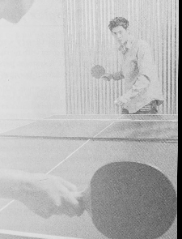</figure>
<p>Trong chương này, chúng tôi giới thiệu các khái niệm từ lý thuyết hệ thống động lực như một phần của khung tham chiếu thay thế cho các lý thuyết truyền thống về tiếp thu kỹ năng được mô tả trong chương 1. Lý thuyết hệ thống động lực cung cấp một mô hình phù hợp để hiểu về phối hợp và kiểm soát vận động trong các hệ thống thần kinh sinh học. Cách tiếp cận này nhìn nhận người học như một hệ thống sinh học phức tạp, được cấu thành từ nhiều hệ thống con độc lập nhưng tương tác với nhau. Trong nhiều cấu trúc phức tạp, sự tương tác động giữa các thành phần thực sự có thể tăng cường tổ chức nội tại của hệ thống. Những tương tác này có thể tạo ra trật tự phong phú bên trong hệ thống thông qua một quá trình được gọi là tự tổ chức. Các quá trình tự tổ chức là ví dụ điển hình cho những khuynh hướng phối hợp vốn có trong nhiều hệ thống phức tạp và chịu ảnh hưởng của nhiều ràng buộc tác động lên hệ thống.</p>
<p>Chúng tôi bắt đầu phân tích bằng cách định nghĩa hệ thống phức tạp và giải thích cách người thực hiện con người là một hệ thống phức tạp. Sau đó, chúng tôi mô tả cách quá trình tiếp thu kỹ năng diễn ra thông qua các thuộc tính tự tổ chức của hệ thống vận động con người. Chúng tôi giải thích cách, trong quá trình thực hiện và học vận động, các thuộc tính tự tổ chức chịu tác động của một loạt ràng buộc định hình sự nổi lên của hành động phối hợp. Tự tổ chức dưới ràng buộc là một quá trình chính có thể được khai thác trong tiếp thu kỹ năng khi những người thực hành tạo ra các ràng buộc nhiệm vụ khuyến khích hành vi khám phá của người học. Theo nghĩa này, tính biến thiên vận động có thể đóng một vai trò chức năng trong việc giúp người học khám phá mức độ liên quan của các giải pháp phối hợp tiềm năng.</p>
<h3>Hệ thống phức tạp: Định nghĩa</h3>
<p>Lý thuyết hệ thống động lực nhấn mạnh sự cần thiết phải hiểu các hiện tượng tự nhiên như một hệ thống với nhiều bộ phận thành phần tương tác (ví dụ: Clarke &amp; Crossland, 1985). Góc nhìn hệ thống cung cấp một lập luận xuất sắc cho việc nghiên cứu hành vi con người bởi vì các cấu trúc và cấu hình của sự vật nên được xem xét như một chỉnh thể, thay vì được kiểm tra từng mảnh. Trong một hệ thống rất phức tạp như tâm trí hay cơ thể con người, tất cả các bộ phận đều ảnh hưởng lẫn nhau theo cách tinh vi, và việc nghiên cứu chúng riêng lẻ thường làm gián đoạn các tương tác thông thường của chúng đến mức một đơn vị bị cô lập có thể hành xử rất khác với cách nó hành xử trong bối cảnh bình thường của nó. (Clarke and Crossland, 1985, p. 16)</p>
<p>Thuật ngữ hệ thống phức tạp nghĩa là gì? Từ complex bắt nguồn từ từ tiếng Latin complexus, nghĩa là “dệt xen vào nhau”, và mô tả một mạng lưới gồm các bộ phận liên quan và tương tác. Như vậy, các hệ thống phức tạp là những hệ thống được tích hợp cao, được cấu thành từ nhiều bộ phận tương tác, trong đó mỗi bộ phận đều có khả năng ảnh hưởng đến các bộ phận khác.</p>
<p>Đặc điểm của hệ thống phức tạp</p>
<p>Các hệ thống phức tạp khá phổ biến trong đời sống hàng ngày. Ví dụ, thời tiết, dòng phương tiện giao thông ở một thành phố lớn, một bầy kiến, đội thể thao yêu thích của bạn, và thậm chí cả cơ thể của bạn cũng đều là những hiện tượng thể hiện tính phức tạp. Các hệ thống này chia sẻ một số thuộc tính cơ bản, bao gồm những điểm sau:</p>
<p>Nhiều bậc tự do (dfs) độc lập và biến thiên. Trong các khoa học vật lý, thuật ngữ bậc tự do thường chỉ các thành phần độc lập của một hệ thống có thể kết hợp với nhau theo nhiều cách khác nhau. Ví dụ, các diễn viên trong một đoàn múa, người lao động trong một tổ chức thương mại, và các cầu thủ trong một đội thể thao có thể được xem là những dfs độc lập của một thực thể lớn hơn. Tính phức tạp được đặc trưng bởi số lượng cấu hình tiềm năng sẵn có cho các bộ phận độc lập của hệ thống đó. Ví dụ, các thành viên của một đoàn múa có thể tham gia vào nhiều bài biểu diễn khác nhau, đòi hỏi các thành viên khác nhau đảm nhận các vai trò khác nhau. Các đoàn múa lớn hơn có khả năng thực hiện các bài biểu diễn đa dạng và phức tạp hơn, trong khi khả năng đa dạng và phức tạp của các đoàn nhỏ hơn thì thấp hơn (xem Newell &amp; Vaillancourt, 2001). Nhiều cấp độ khác nhau trong hệ thống. Ví dụ bao gồm các cấp độ thần kinh, nội tiết tố, cơ sinh học và tâm lý trong cơ thể con người. Khả năng phi tuyến của hành vi (vì các bộ phận thành phần có thể tương tác theo nhiều cách khác nhau). Ví dụ bao gồm các đỉnh và đáy không thể đoán trước trên thị trường tài chính, hay những giai đoạn đỉnh cao và suy giảm hiệu suất của một vận động viên hoặc một đội thể thao. Khả năng các mối quan hệ mẫu hình ổn định và không ổn định giữa các bộ phận của hệ thống hình thành thông qua sự tự tổ chức của hệ thống (các bộ phận tự điều chỉnh và thích nghi với nhau). Khả năng các thành phần hệ thống con hạn chế hoặc ảnh hưởng đến hành vi của các hệ thống con khác (xem Gleick, 1987; Kaplan &amp; Glass, 1995; Kauffman, 1993, 1995; Waldrop, 1992; Yates, 1979).</p>
<p>Hệ thống phức tạp như hệ thống động lực</p>
<p>Khi chúng ta xem xét các vi thành phần của một hệ thống phức tạp, chúng ta quan sát thấy những tương tác và dao động liên tục. Các tương tác giữa các bộ phận riêng lẻ của hệ thống có vẻ ngẫu nhiên, và tiềm ẩn khả năng có nhiều sự hỗn loạn trong toàn bộ hệ thống. Ví dụ, hãy nghĩ đến các phân tử nước trong một dòng suối, các nơ-ron trong hệ thần kinh, hay các tế bào máu riêng lẻ trong cơ thể con người. Những vi thành phần này có thể tương tác theo những cách không thể đoán trước và do đó dẫn đến sự hỗn loạn của hệ thống, chẳng hạn như khi dòng chảy của các phân tử nước trở nên không thể đoán sau sự nhiễu loạn, hoặc khi các nơ-ron ở vỏ não bị ánh sáng nhấp nháy kích thích phát tín hiệu ngẫu nhiên, gây co giật ở những người bị động kinh. Tuy nhiên, phân tích ở cấp độ vĩ mô (quy mô lớn) lại cho thấy các mẫu hình hành vi có trật tự một cách đáng ngạc nhiên (Kauffman, 1993, 1995). Ở cấp độ phân tích này, các hệ thống phức tạp thể hiện các khuynh hướng phối hợp, vì các thành phần riêng lẻ có khả năng liên kết với nhau để đi vào và ra khỏi các mẫu hình hoặc sự hiệp đồng chức năng và mạch lạc (Haken, 1996; Kelso &amp; Engström, 2006).</p>
<p>Chìa khóa để hiểu hành vi của các hệ thống phức tạp liên quan đến cách phối hợp diễn ra giữa một số lượng rất lớn các bộ phận thành phần. Lý thuyết hệ thống động lực đón nhận thách thức này bằng cách rút ra các mô tả toán học phi tuyến để đặc trưng hóa trật tự nổi lên bên trong các hệ thống phức tạp. Van Gelder và Port (1995) đưa ra một định nghĩa rộng rãi về hệ thống động lực là “bất kỳ hệ thống nào được xác định bởi trạng thái, với một không gian pha số học và một quy tắc tiến hóa (bao gồm các phương trình vi phân và các ánh xạ rời rạc) xác định các quỹ đạo trong không gian đó” (p. 9). Không gian pha số học đề cập đến tất cả các trạng thái tổ chức giả định mà một hệ thống động lực có thể tiến hóa tới. Trong các hệ thống vận động sinh học, những trạng thái này tương ứng với các mẫu hình phối hợp.</p>
<p>Vì là những hệ thống tương đối mở, các hệ thống động lực có thể đảm nhận các trạng thái tổ chức khác nhau và khai thác các nguồn năng lượng xung quanh để hình thành các mẫu hình tổ chức ổn định. Trong tự nhiên, các hệ thống mở có khả năng tiếp nhận và đầu ra năng lượng vào các dòng chảy bao quanh chúng, nghĩa là chúng nhạy cảm với những thay đổi trong môi trường xung quanh. Các mẫu hình tổ chức ổn định và chức năng mà hệ thống mở thể hiện được gọi là các điểm hút. Ví dụ, trong một hệ thống vật lý được tạo thành từ hàng tỷ phân tử nước trong một dòng suối, điểm hút là một vùng ổn định trong không gian trạng thái của hệ thống, nơi vectơ lực tổng hợp (tức là hướng và độ lớn của bất kỳ lực tương tác nào trên dòng chảy của hệ thống) hội tụ về một giá trị cực tiểu (ví dụ như trong một xoáy nước).</p>
<p>Tình huống này tạo ra một trạng thái tổ chức ổn định cho bất kỳ hệ thống nào, gợi ý rằng cần một lực nhiễu loạn lớn để làm mất ổn định trật tự cụ thể của hệ thống tại thời điểm đó (ví dụ, một dòng xoáy nhỏ hoặc một dòng chảy mạnh tác động lên một xoáy nước) (Kugler, Shaw, Vincente, &amp; Kinsella-Shaw, 1990). Trong các hệ thống thần kinh sinh học, các điểm hút đại diện cho các khuynh hướng phối hợp giữa các thành phần của hệ thống và xấp xỉ tương đương với các mẫu hình phối hợp chức năng trong vốn hành động của một hệ thống vận động. Một ví dụ hay về các khuynh hướng phối hợp là sự di chuyển ở người khi hai chân của người chạy phối hợp thành một mẫu hình ngược pha (khi một chân ở giai đoạn đỡ cơ thể, chân kia ở giai đoạn bay, cho phép trọng lực gia tốc tâm khối lượng của người chạy trong một chuỗi những cú ngã được kiểm soát).</p>
<h3>Ràng buộc trên hệ thống phức tạp</h3>
<p>Trong các hệ thống phức tạp, các trạng thái trật tự nổi lên dưới ràng buộc. Ý tưởng này được du nhập vào khoa học vận động con người từ vật lý học và sinh học, nơi các nhà khoa học đã tham gia nghiên cứu sự nổi lên của các hành vi vận động dưới ràng buộc (ví dụ: Kelso, 1995; Kugler, 1986; Kugler &amp; Turvey, 1987). Newell (1986) đề xuất ý tưởng về ràng buộc như những ranh giới hay đặc điểm hạn chế chuyển động của các bộ phận li ti của một hệ thống. Nói cách khác, ràng buộc là vô số biến số xác định không gian pha của một hệ thống phức tạp.</p>
<p>Ràng buộc vừa hạn chế vừa cho phép số lượng quỹ đạo hành vi mà hệ thống có thể đảm nhận (xem hình 2.1). Có vẻ như các hệ thống phức tạp có thể khai thác các ràng buộc bao quanh chúng để cho phép các mẫu hình hành vi chức năng nổi lên trong những bối cảnh cụ thể. Ví dụ, một bầy gồm hàng triệu côn trùng tránh hành vi ngẫu nhiên bằng cách khai thác ràng buộc thông tin do các pheromone mà chúng tiết ra vào mặt đất mang lại, để dẫn dắt hoạt động xây tổ phối hợp của chúng (Kugler &amp; Turvey, 1987). Ngay lập tức, chúng ta có thể thấy quá trình hành vi nổi lên này hữu ích như thế nào nếu chúng ta muốn thích ứng các chuyển động của mình với những bối cảnh thực hiện không ngừng thay đổi, hoặc với những thay đổi trong hệ thống cơ-xương do lão hóa hay chấn thương (Davids, Button, Araújo, Renshaw, &amp; Hristovski, 2006).</p>
<p>Ràng buộc vật lý và ràng buộc thông tin</p>
<p>Ràng buộc có thể là vật lý hoặc thông tin. Ràng buộc vật lý có thể mang tính cấu trúc hoặc chức năng trong hệ thống vận động con người. Ví dụ, kích thước và sức nắm của bàn tay một đứa trẻ là những ràng buộc vật lý mang tính cấu trúc ảnh hưởng đến cách đứa trẻ đó có thể nhặt và thao tác với một vật chẳng hạn như một</p>
<p style="font-style:italic;color:#475569;font-size:.88rem">Hình 2.1: Ràng buộc xác định không gian pha của một hệ thống phức tạp và vừa hạn chế vừa cho phép các quỹ đạo hành vi khác nhau mà hệ thống có thể đảm nhận.</p>
<p>Vận tốc (x)·</p>
<p>Vị trí (x)</p>
<figure class="bookfig">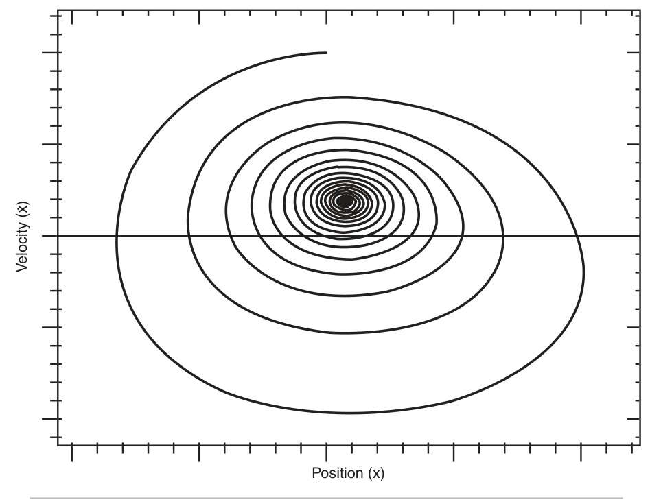<figcaption>Hình 2.1: Ràng buộc xác định không gian pha của một hệ thống phức tạp và vừa hạn chế vừa cho phép các quỹ đạo hành vi khác nhau mà hệ thống có thể đảm nhận.</figcaption></figure>
<p>tàu đồ chơi hay một quả bóng lớn trong lúc chơi. Ràng buộc vật lý chức năng bao gồm các quá trình như phản ứng và năng lực tri giác, hỗ trợ hiệu suất vận động. Mặt khác, ràng buộc thông tin là các dạng năng lượng khác nhau chảy qua hệ thống, chẳng hạn như pheromone ở côn trùng, ánh sáng phản xạ từ một chiếc tàu đồ chơi, hay sóng âm mà một đứa trẻ cảm nhận được khi quả bóng nảy trên sàn. Trẻ nhỏ khám phá các ràng buộc thông tin xúc giác (chạm) khi chúng nhặt và chơi với các vật trong môi trường của mình. Ràng buộc thông tin giúp định hình các đáp ứng vận động cần thiết và hỗ trợ phối hợp các hành động liên quan đến môi trường động.</p>
<p>Tự tổ chức và ràng buộc</p>
<p>Như đã lưu ý trước đó, các hệ thống mở phức tạp có khả năng trao đổi năng lượng với môi trường. Một ví dụ điển hình về hệ thống mở phức tạp trong tự nhiên là hệ thống thời tiết, hành vi của nó thường khó dự đoán hơn vài ngày trước. Các hệ thống thời tiết có thể chứa lượng năng lượng khác nhau do các dòng không khí thay đổi về áp suất và sự di chuyển của các phân tử nước từ</p>
<p>Kích thước và sức nắm của bàn tay một đứa trẻ là những ràng buộc vật lý mang tính cấu trúc ảnh hưởng đến cách đứa trẻ đó nhặt một món đồ chơi.</p>
<p>© Photodisc</p>
<figure class="bookfig"></figure>
<p>các đại dương đến những đám mây rồi quay lại. Đạt được và duy trì sự ổn định là một thách thức đối với các hệ thống mở phức tạp vì khả năng tương tác với môi trường của chúng. Vấn đề với hệ thống thời tiết là một thay đổi nhỏ trong các dòng năng lượng bao quanh nó có thể gây ra những dao động quy mô lớn trong đầu ra của hệ thống vào một thời điểm, nhưng lại có tác động nhỏ vào những thời điểm khác, bởi năng lượng tồn tại bên trong hệ thống không bao giờ là không đổi.</p>
<p>Với các định luật đã được thiết lập từ lâu của nhiệt động học phi tuyến, vốn dự đoán xu hướng hướng tới entropy hay sự hỗn loạn trong tự nhiên, làm thế nào chúng ta có thể giải thích mức độ trật tự đáng ngạc nhiên tồn tại ở cấp độ vĩ mô trong nhiều hệ thống phức tạp? Để trả lời câu hỏi đó, chúng ta cần xem xét cách các hệ thống mở trong tự nhiên có thể khai thác năng lượng được tạo ra từ sự tương tác giữa các thành phần của chúng ở cấp độ cục bộ (vi mô) để duy trì trật tự của hệ thống ở cấp độ vĩ mô. Khả năng của một hệ thống mở phức tạp trao đổi năng lượng và vật chất với môi trường mang lại cho nó những khuynh hướng tự nhiên đi vào các điểm hút hay các mẫu hình tổ chức ổn định; nghĩa là, nó có thể tận dụng quá trình vật lý mà chúng ta đã đề cập trước đó là tự tổ chức.</p>
<p>Tóm lại, các hệ thống sinh học, chẳng hạn như bầy chim, bầy côn trùng, hay đàn cá, dường như đã tiến hóa được khả năng sử dụng năng lượng môi trường để duy trì những giai đoạn ổn định có chức năng mang lại lợi ích cho toàn bộ hệ thống (để xem một ví dụ rất hay về bầy kiến, xem Gordon, 2007). Những hệ thống này có thể</p>
<p>Trật tự tự tổ chức trong các hệ thống sinh học được minh họa bằng việc chim gannet làm tổ ở Vườn quốc gia Muriwai, phía tây Auckland, New Zealand. Mặc dù trật tự làm tổ có vẻ được sắp xếp chỉn chu, hành vi chức năng này nổi lên vì nó bảo vệ chống lại những kẻ săn mồi tiềm tàng trong mùa làm tổ. Ngoài mùa làm tổ, những con chim này có xu hướng hay cãi nhau và không giữ khoảng cách gần như vậy.</p>
<p>© Ian</p>
<figure class="bookfig"></figure>
<p>tìm kiếm và đi vào các điểm hút chức năng vì chúng có khuynh hướng hình thành mẫu hình (ví dụ: Prigogine &amp; Stengers, 1984). Ở chim và cá, khuynh hướng phối hợp tự phát này biểu hiện thành hành vi tụ đàn. Ví dụ, ở chim đang bay, mẫu hình tụ đàn hình chữ V rất phổ biến vì nó có lợi cho việc định hướng của cả bầy mà không cần một con chim nào đóng vai trò tác nhân kiểm soát chỉ đạo đường bay. Tương tự, chim biển áp dụng cách sắp xếp làm tổ có mẫu hình rõ rệt (khoảng cách giữa các tổ chừng bằng chiều dài của một con chim) trong mùa giao phối mà không cần một con chim chủ chốt nào quy định khoảng cách. Cá bơi ngẫu nhiên khi tiến hành các hoạt động hàng ngày quan trọng như kiếm ăn hay giao phối, nhưng chúng tập hợp thành những đàn đồng bộ cao khi có kẻ săn mồi xuất hiện.</p>
<p>Tất cả những ví dụ này cho thấy sự mở của một hệ thống đối với các dòng năng lượng xung quanh là hữu ích, vì năng lượng là nguồn thông tin đóng vai trò là ràng buộc trên hệ thống. Ràng buộc thông tin này có lợi cho hệ thống bằng cách hỗ trợ các mẫu hình hành vi chức năng và ổn định trong những khoảng thời gian tương đối ngắn. Dạng ổn định động này, được gọi là siêu ổn định (metastability) (Kelso &amp; Engström, 2006), hữu ích trong những môi trường phức tạp, biến động. Chúng ta sẽ khám phá ảnh hưởng của ràng buộc thông tin chi tiết hơn ở chương 3.</p>
<p>Trong nghiên cứu về các hệ thống mở, các nhà khoa học đã quan tâm đến các chuyển tiếp pha có thể nổi lên tự phát trong các hệ thống phức tạp. Chuyển tiếp pha là sự di chuyển của các vi thành phần của một hệ thống vào và ra khỏi các trạng thái tổ chức khác nhau. Ví dụ, trong hệ thống thời tiết, động lực học giữa các thành phần của hệ thống thường không dẫn đến những thay đổi quy mô lớn trong hành vi của hệ thống. Chỉ có rất nhiều dao động tiềm ẩn ảnh hưởng nhẹ đến sự ổn định của hệ thống. Tuy nhiên, những thay đổi quan trọng trong các trường năng lượng bao quanh hệ thống, chẳng hạn như áp suất khí quyển tăng lên trong một hệ thống thời tiết, có thể làm thay đổi sự ổn định của hệ thống và dẫn đến những thay đổi vĩ mô và tổ chức lại thành một trạng thái khác (bão sấm sét ở vùng nhiệt đới). Chuyển tiếp pha tạo nên nền tảng của tự tổ chức trong các hệ thống phức tạp, và các ví dụ về những sự hình thành mẫu hình như vậy đã được quan sát thấy trong các hệ thống mở sinh học, vật lý và hóa học, chẳng hạn như khi cá đang bơi ngẫu nhiên tập hợp thành một đàn đồng bộ khi có kẻ săn mồi lại gần.</p>
<h3>Hành vi nổi lên trong vận động con người</h3>
<p>Tự tổ chức là một quá trình mạnh mẽ có thể giúp chúng ta thích ứng các mẫu hình phối hợp vận động với những hoàn cảnh môi trường thay đổi, chẳng hạn như thực hiện các cú đánh tennis trên các mặt sân khác nhau hay lái xe trong điều kiện giao thông thay đổi. Làm thế nào để chúng ta khai thác quá trình tự nhiên này? Trước hết, tự tổ chức trong các hệ thống phức tạp không phải là một quá trình hoàn toàn mù quáng, trong đó bất kỳ mẫu hình ngẫu nhiên nào cũng có thể hình thành. Thường thì một hệ thống động lực chỉ đảm nhận ít trạng thái tổ chức, và nghiên cứu đã chỉ ra rằng chúng ta không giỏi tạo ra các mẫu hình ngẫu nhiên của hành vi vận động. Ví dụ, Newell, Deutsch, Sosnoff, và Mayer-Kress (2006) đã lập luận rằng việc tạo ra các dao động ngón tay ngẫu nhiên là một nhiệm vụ khó đối với con người, và khả năng tạo ra đầu ra không cấu trúc kém hơn ở các hệ thống hiệu ứng vận động lớn hơn, chẳng hạn như chân và tay. Ngay cả khi các cá nhân có thể luyện tập các chuyển động ngẫu nhiên trong 5 ngày, rất ít cải thiện được quan sát thấy (Newell, Deutsch, &amp; Morrison, 2000), cung cấp bằng chứng về ràng buộc cấu trúc và chức năng đáng kể trên các dfs động của hệ thống vận động con người (Newell &amp; Vaillancourt, 2001).</p>
<p>Những phát hiện này ủng hộ nhận định rằng các hệ thống động lực tự nhiên có xu hướng chỉ cư ngụ ở một số vùng nhất định trong toàn bộ cảnh quan của mọi trạng thái có thể mà một hệ thống có thể giả định (tức là không gian trạng thái) (Kauffman, 1993, 1995). Loại trật tự nổi lên trong hành vi của một hệ thống phụ thuộc rất nhiều vào các điều kiện môi trường hiện có và các ràng buộc định hình hành vi đó (xem Nghiên cứu tiêu điểm).</p>
<h3>Nghiên cứu tiêu điểm</h3>
<p>TỪ KHỞI ĐẦU KHIÊM TỐN ĐẾN MÔ HÌNH HKB</p>
<p>Khi Scott Kelso công bố loạt nghiên cứu của mình (1981, 1984) xem xét những thay đổi trong phối hợp giữa các chuyển động ngón tay nhịp nhàng, có lẽ ông đã không dự đoán được ý tưởng của mình sẽ trở nên quan trọng đến mức nào trong các khoa học về vận động con người. Trong công trình ban đầu, Kelso đã kiểm tra động lực học phối hợp tự phát nổi lên từ các dao động tương đối giữa ngón trỏ trái và phải của một số người tham gia nghiên cứu trong các chuyển động nhịp nhàng. Đáng ngạc nhiên, mỗi người tham gia đều thể hiện sự chuyển đổi tự phát giữa các mẫu hình phối hợp khi tần số chuyển động ngón tay bị ràng buộc bởi nhịp của một máy đếm nhịp (tức là tăng dần từ 1,25 lên 3,5 hertz).</p>
<p>Kết quả nhất quán cho thấy pha tương đối giữa các ngón tay chỉ thể hiện sự ổn định trong động lực học phối hợp của hệ thống ở hai vùng điểm hút riêng biệt: các ngón tay dao động cùng pha (các ngón tay cùng di chuyển về phía đường giữa của cơ thể) hoặc ngược pha (một ngón tay di chuyển về phía đường giữa của cơ thể trong khi ngón kia di chuyển ra xa đường giữa) (xem hình 2.2). Pha tương đối của bất kỳ hai hệ thống dao động nào (ví dụ, mỗi chân dùng khi đi bộ) là độ trễ pha trong chu kỳ chuyển động của hệ thống này so với hệ thống kia. Khi những người tham gia nghiên cứu bắt đầu dao động theo mẫu hình ngược pha, cuối cùng họ chuyển sang mẫu hình cùng pha khi tần số máy đếm nhịp tăng lên. Những chuyển tiếp pha đột ngột từ trạng thái phối hợp này sang trạng thái khác không phải do một sự thay đổi có chủ đích nào đó do người tham gia quy định gây ra, mà thông qua các thuộc tính tự tổ chức của hệ thống vận động.</p>
<p>Haken, Kelso, và Bunz (1985) đã đề xuất một mô hình toán học — mô hình HKB — chứng minh một cách chính thức cách hành vi vận động quan sát được trong mô hình dao động ngón tay có thể nổi lên khi hàm tiềm năng của hệ thống vận động thay đổi. Mô hình chứng minh rằng việc thay đổi quy mô của một thông số kiểm soát (ví dụ, tần số nhịp của máy đếm nhịp) có thể dẫn đến giảm độ ổn định của thông số trật tự (ví dụ, pha tương đối</p>
<p>(TIẾP THEO) của chuyển động ngón tay). Hành vi này là kết quả của sự thay đổi năng lượng tiềm năng của hệ thống, mà Haken và các cộng sự đã mô hình hóa thành hai mẫu hình vận động ổn định. Khi một thông số kiểm soát thay đổi, cảnh quan điểm hút bị biến dạng và hành vi của hệ thống chuyển từ tổ chức kém ổn định nhất (ngược pha) sang ổn định nhất (cùng pha). Trong những môi trường năng động hơn, nơi có các lực ngẫu nhiên, mức độ ổn định của hệ thống liên quan đến mức độ dao động mà hệ thống vận động thể hiện (Haken, 1996; Schöner, Haken, &amp; Kelso, 1987).</p>
<p>Mô hình HKB cũng có điều thú vị để nói về các đặc điểm quan trọng khác của hệ thống vận động động lực, chẳng hạn như mối quan hệ giữa độ ổn định của điểm hút và thời gian phục hồi, là tốc độ mà hệ thống trở về một điểm hút (mẫu hình vận động ổn định) sau một nhiễu loạn bên ngoài. Thời gian phục hồi đã được dùng để kiểm tra độ ổn định của các điểm hút trong nhiều tình huống (ví dụ: Court, Bennett, Williams, &amp; Davids, 2002, 2005; Scholz &amp; Kelso, 1989). Kể từ công trình mang tính đổi mới của Haken, Kelso và Bunz, các nhà nghiên cứu đã phát hiện những khuynh hướng phối hợp tương tự, chẳng hạn như chuyển tiếp, đa ổn định và độ nhạy với tần số và biên độ, ở rất nhiều chuyển động nhịp nhàng. Mặc dù có vẻ như các nhiệm vụ nhịp nhàng khác nhau có thể có các hàm tiềm năng khác nhau và do đó có các chế độ điểm hút khác nhau, nhưng các nguyên lý tự tổ chức vẫn như nhau. Từ những khởi đầu tương đối đơn giản, một mô hình mới để nghiên cứu hành vi vận động đã ra đời.</p>
<p>ỨNG DỤNG</p>
<p>Hãy tái tạo mô hình ban đầu của Kelso. Dao động các ngón tay theo cách ngược pha, tăng tốc độ dần dần, và khám phá các khuynh hướng tự tổ chức của chính hệ thống vận động của bạn. Hãy liệt kê một số thông số kiểm soát có thể ảnh hưởng đến thời điểm chuyển tiếp xảy ra.</p>
<p style="font-style:italic;color:#475569;font-size:.88rem">Hình 2.2: Trong các chuyển động được thực hiện trong thí nghiệm ban đầu của Kelso (1981, 1984), (a) chúng ta có thể quan sát mẫu hình cùng pha 0°, và (b) chúng ta có thể quan sát mẫu hình ngược pha 180°. Những mẫu hình này được cho là vốn ổn định trong các chuyển động nhịp nhàng, hai tay. (ABD = các chuyển động giạng ra; ADD = các chuyển động khép lại.)</p>
<p>Được in lại, theo sự cho phép, từ S.A. Wallace, 1996, Dynamic pattern perspective of rhythmic movement: An introduction. Trong Advances in motor learning and control, do H.N. Zelaznik biên tập (Champaign, IL: Human Kinetics), 170.</p>
<p>NGHIÊN CỨU TIÊU ĐIỂM (TIẾP THEO)</p>
<p>ABD</p>
<p>ADD ABD</p>
<p>ADD</p>
<p>Ngón tay trái</p>
<p>Ngón tay phải</p>
<p>0 360</p>
<p>0o Mẫu hình cùng pha</p>
<p>ABD</p>
<p>ADD ABD</p>
<p>ADD</p>
<p>Ngón tay trái</p>
<p>Ngón tay phải</p>
<p>0 360 180</p>
<p>180o Mẫu hình ngược pha</p>
<figure class="bookfig"><figcaption>Hình 2.2: Trong các chuyển động được thực hiện trong thí nghiệm ban đầu của Kelso (1981, 1984), (a) chúng ta có thể quan sát mẫu hình cùng pha 0°, và (b) chúng ta có thể quan sát mẫu hình ngược pha 180°. Những mẫu hình này được cho là vốn ổn định trong các chuyển động nhịp nhàng, hai tay. (ABD = các chuyển động giạng ra; ADD = các chuyển động khép lại.)</figcaption></figure>
<p>Bài tập trong phần ứng dụng của Nghiên cứu tiêu điểm không chỉ là một trò tiêu khiển vô bổ; nó có ý nghĩa nhất định khi nghiên cứu phối hợp vận động. Hãy xem xét, ví dụ, cách tư thế cơ thể của một người trượt tuyết có thể tự tổ chức để tạo ra một cú chuyển hướng được canh thời điểm hoàn hảo trên đường trượt. Bởi tính chất đòi hỏi khắt khe của đường trượt, hành động của người trượt tuyết có thể không được xác định từ trước. Thay vào đó, cả ràng buộc bên trong như cấu trúc giải phẫu của người trượt, và ràng buộc bên ngoài như thông tin thị giác và sự tiếp xúc của ván trượt với tuyết, đều ảnh hưởng đến sự nổi lên của các mẫu hình vận động chính xác của người trượt trên đường trượt (ví dụ: Bernstein, 1967; Warren, 1990). Một thay đổi trong điều kiện môi trường, chẳng hạn như độ dốc của sườn đồi, hướng gió, hay một vùng băng giá, có thể ảnh hưởng đáng kể đến các mẫu hình phối hợp vận động hiện có. Ví dụ, một sườn dốc thường buộc một người trượt mới bắt đầu phải áp dụng mẫu hình di chuyển ngang qua lại trên đường trượt. Bằng cách dịch chuyển phân bổ trọng lượng lên ván trượt bên trong và thay đổi căn chỉnh của hai ván, người trượt không tạo ra tốc độ xuống dốc quá lớn. Chiến lược này mang lại một giải pháp đặc thù cho nhiệm vụ mà không làm mất đáng kể sự ổn định tư thế.</p>
<h3>Ràng buộc và phối hợp vận động</h3>
<p>Hàm ý của những ý tưởng chúng ta đã thảo luận cho đến nay là cảm nhận, ký ức, ý định, kế hoạch và hành động có thể không nên được quan niệm tốt nhất như những thực thể được lưu trữ trong CNS. Thay vào đó, chúng có thể được hiểu tốt hơn như các mẫu hình vĩ mô tự tổ chức được hình thành bởi sự tương tác của nhiều thành phần hệ thống và các ràng buộc then chốt trong môi trường (Kelso, 1995; Kugler &amp; Turvey, 1987). Ví dụ, các thành phần hệ thống có thể là các nơ-ron trong não cùng phát tín hiệu để hình thành ý tưởng, ký ức hay kế hoạch, hoặc chúng có thể liên quan đến các nhóm cơ băng qua nhiều khớp để hình thành các mẫu hình phối hợp. Ràng buộc</p>
<p>Cả ràng buộc bên trong và bên ngoài đều định hình sự nổi lên của các mẫu hình vận động chính xác của người trượt trên đường trượt. Một thay đổi trong điều kiện môi trường cũng có thể ảnh hưởng đáng kể đến các mẫu hình phối hợp vận động hiện có.</p>
<p>© Eyewire/Photodisc/Getty Images đóng vai trò trung tâm trong quá trình tự tổ chức của hệ thống vận động con người. Cách giải thích theo hệ thống động lực nhấn mạnh các ràng buộc môi trường và vật lý cũng như các ràng buộc cá nhân như nhận thức, ký ức và ý định của mỗi người (Williams, Davids, &amp; Williams, 1999).</p>
<p>Theo Newell (1986), ràng buộc có thể được phân thành ba loại: ràng buộc cơ thể, ràng buộc môi trường và ràng buộc nhiệm vụ. Những loại này cung cấp một khung lý thuyết mạch lạc để hiểu cách các mẫu hình phối hợp nổi lên trong hành vi hướng đến mục tiêu (xem hình 2.3).</p>
<p>Ràng buộc cơ thể</p>
<p>Ràng buộc cơ thể đề cập đến các đặc điểm của một người, chẳng hạn như gen, chiều cao, cân nặng, tỷ lệ cơ–mỡ, độ mạnh liên kết của các synap trong não, nhận thức, động lực và cảm xúc. Những kiểu suy nghĩ quen thuộc, mức độ luyện tập, hay khiếm khuyết thị giác có thể đóng vai trò là ràng buộc cơ thể định hình cách một người tiếp cận một mục tiêu thực hiện cụ thể. Những đặc điểm độc đáo này đại diện cho các nguồn lực được huy động để giải quyết vấn đề nhiệm vụ, hoặc những hạn chế có thể dẫn đến sự thích nghi đặc thù cho từng cá nhân. Một điểm khác biệt then chốt giữa nhiều sinh vật sinh học và con người là con người có thể sử dụng các nguồn năng lượng bên trong để cố ý ràng buộc hành động của mình nhằm đạt được mục tiêu hay kết quả mong muốn. Nghĩa là, hành vi con người không mang tính quyết định mà có thể được điều khiển có chủ đích (Kugler et al., 1990).</p>
<p>Ràng buộc môi trường</p>
<p>Ràng buộc môi trường là các biến số vật lý mang tính toàn cục trong tự nhiên, chẳng hạn như ánh sáng môi trường, nhiệt độ hay độ cao. Trên Trái Đất, trọng lực là một ràng buộc môi trường then chốt đối với phối hợp vận động trong mọi nhiệm vụ, như ví dụ về người trượt tuyết băng qua sườn núi dốc đã cho thấy. Xét lại người trượt tuyết của chúng ta</p>
<p style="font-style:italic;color:#475569;font-size:.88rem">Hình 2.3: Ba loại ràng buộc — cơ thể, môi trường và nhiệm vụ — cung cấp một khung lý thuyết mạch lạc để hiểu cách các mẫu hình phối hợp nổi lên trong hành vi hướng đến mục tiêu.</p>
<p>Cơ thể</p>
<p>Nhận thức</p>
<p>Mẫu hình phối hợp chức năng được chọn dưới ràng buộc</p>
<p>Hành động</p>
<p>Môi trường Nhiệm vụ</p>
<figure class="bookfig"><figcaption>Hình 2.3: Ba loại ràng buộc — cơ thể, môi trường và nhiệm vụ — cung cấp một khung lý thuyết mạch lạc để hiểu cách các mẫu hình phối hợp nổi lên trong hành vi hướng đến mục tiêu.</figcaption></figure>
<p>một lần nữa, chúng ta có thể dùng dòng thị giác do một gò tuyết (mogul) trên đường trượt tạo ra để điều chỉnh các mô-men xoắn phát sinh qua các khớp hông và gối. Những gò tuyết lớn hơn buộc người trượt phải uốn hông và gối để hấp thụ phản lực truyền vào chân, và nhiệt độ môi trường có thể ảnh hưởng đến đặc tính cơ bắp của người trượt. Bên cạnh đó, một số ràng buộc môi trường mang tính xã hội thay vì vật lý, bao gồm sự hỗ trợ của gia đình, nhóm bạn bè, kỳ vọng của xã hội, các giá trị và chuẩn mực văn hóa (Haywood &amp; Getchell, 2005).</p>
<p>Ràng buộc nhiệm vụ</p>
<p>Ràng buộc nhiệm vụ thường đặc thù hơn cho bối cảnh thực hiện so với ràng buộc môi trường, và bao gồm mục tiêu nhiệm vụ, các quy tắc cụ thể liên quan đến một hoạt động, dụng cụ hay công cụ liên quan đến hoạt động, bề mặt, khu vực mặt đất, và mặt sân cùng các dấu hiệu ranh giới như lưới, vạch kẻ và cột. Ngay cả với những hoạt động tưởng chừng ổn định, chẳng hạn như chơi nhạc cụ hay vung gậy golf, hành vi vận động vẫn có thể dao động vì ràng buộc nhiệm vụ có thể thay đổi từ lần thực hiện này sang lần khác. Ví dụ, các nhạc sĩ phải thích ứng với việc chơi trong những không gian khác nhau (ví dụ, phòng hòa nhạc nhỏ, hội trường lớn, địa điểm ngoài trời), mỗi nơi có âm thanh, hệ thống âm thanh và bố trí sân khấu riêng. Đôi khi họ thậm chí phải thích ứng với việc biểu diễn bằng những nhạc cụ khác nhau, điều có thể ảnh hưởng đến các sắc thái của hiệu suất.</p>
<p>Mặc dù chơi nhạc cụ được xem là một hoạt động rất ổn định, hành vi vận động của nhạc sĩ có thể dao động vì ràng buộc nhiệm vụ có thể thay đổi từ lần biểu diễn này sang lần khác.</p>
<p>© Jim Whitmer</p>
<figure class="bookfig restored">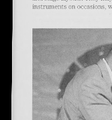</figure>
<p>Khả năng thay đổi hiệu suất vận động theo các bối cảnh hành động khác nhau là một phần không thể thiếu của tiếp thu kỹ năng, và học thích ứng cho phép con người đối phó với những ràng buộc nhiệm vụ mới lạ khi điều kiện thực hiện thay đổi. Để khuyến khích tính linh hoạt và khả năng thích ứng ở bệnh nhân, các nhà vật lý trị liệu thường điều chỉnh các ràng buộc nhiệm vụ. Ví dụ, một nhà trị liệu có thể khuyến khích một bệnh nhân ngồi xe lăn di chuyển qua một khu vực kín đông đúc và lộn xộn nhằm cải thiện khả năng kiểm soát và điều khiển xe lăn của bệnh nhân. Những cách luyện tập như vậy cũng khuyến khích bệnh nhân khám phá các giải pháp phối hợp thay thế, từ đó tối ưu hóa các kỹ thuật trong những kỹ năng vận động hằng ngày.</p>
<h3>Ràng buộc tương tác</h3>
<p>Trong hoạt động hướng đến mục tiêu, sự tương tác giữa các ràng buộc cơ thể, môi trường và nhiệm vụ lên hệ thống thần kinh–cơ bắp dẫn đến sự nổi lên của các trạng thái phối hợp khác nhau, vốn được tối ưu hóa thông qua luyện tập và kinh nghiệm. Ví dụ, cách một người hướng dẫn leo núi vượt qua một vách đá là kết quả của nhiều ràng buộc tại cùng một thời điểm, bao gồm gen, mức độ bền bỉ thể chất và tình trạng chấn thương của người leo; bản chất của bề mặt leo; và mục tiêu tổng thể của người leo như lên tới đỉnh nhanh nhất có thể hay chỉ dẫn cho học viên một đường leo an toàn.</p>
<p>Vì ba loại ràng buộc có thể tương tác với nhau, đôi khi khó phân biệt chúng. Ví dụ, ràng buộc môi trường bao gồm các dòng năng lượng xung quanh (ví dụ, ánh sáng môi trường), trong khi bản chất cụ thể của các nguồn thông tin là một ràng buộc nhiệm vụ then chốt đối với người học (ví dụ, ánh sáng phản xạ từ tường và đáy của một bể bơi). Trong cả hai ví dụ, các dòng năng lượng xung quanh là như nhau, nhưng ràng buộc nhiệm vụ khác nhau dẫn đến các nguồn thông tin cụ thể trở nên hữu ích trong những bối cảnh thực hiện khác nhau.</p>
<p>Một ý tưởng then chốt khác từ nghiên cứu về các hệ thống phi tuyến là ràng buộc trên hành vi không hề vĩnh cửu (Guerin &amp; Kunkle, 2004). Nghiên cứu đã dạy chúng ta rằng ràng buộc trên hiệu suất vận động thường là tạm thời, và trong các tương tác người thực hiện–người thực hiện hay người thực hiện–môi trường, chúng có thể mạnh lên hoặc suy yếu theo những thang thời gian khác nhau. Ví dụ, chúng ta có thể xem cơ thể đang phát triển của một trẻ sơ sinh như một ràng buộc suy giảm chậm đối với khả năng đi của trẻ khi tỷ lệ cơ–mỡ ở chi dưới thay đổi theo thời gian. Tuy nhiên, nếu người mẹ gọi con với một món đồ chơi, ràng buộc mới này có thể có ảnh hưởng nổi lên tạm thời nhưng không thể cưỡng lại đối với sự phối hợp của trẻ. Hệ quả đối với hành vi của các ràng buộc đang nổi lên hay suy giảm là sự tăng hoặc giảm entropy tự tổ chức của hệ thống. Đây là một điểm quan trọng cần cân nhắc trong tiếp thu kỹ năng, và đặc biệt quan trọng khi thiết kế môi trường luyện tập và phục hồi chức năng, như chúng tôi đã lưu ý ở chương 5. Những người thực hành nên kỳ vọng rằng ràng buộc trên mỗi cá nhân là động, tương tác và có thể thay đổi theo thời gian, do những ảnh hưởng như phát triển, học tập, lão hóa và kinh nghiệm.</p>
<h3>Các quá trình phối hợp trong hệ thống vận động con người</h3>
<p>Hiểu cách trật tự nổi lên giữa các dfs của các hệ thống phức tạp, động là vấn đề cơ bản đối với các nhà nghiên cứu về tiếp thu kỹ năng. Trong những năm 1980 và 1990, khi các nhà lý thuyết đưa lý thuyết hệ thống động lực vào nghiên cứu phối hợp vận động con người, họ ngay lập tức nhận ra mối liên hệ giữa lý thuyết của mình và những phát hiện của nhà sinh lý học người Nga Nikolai Bernstein. Sự tương tác kịp thời của các ý tưởng này đã kích thích sự quan tâm đến vai trò của ràng buộc trong kiểm soát vận động và tiếp thu kỹ năng.</p>
<p>Bernstein và vấn đề bậc tự do</p>
<p>Con người phối hợp hoạt động của tất cả các hệ thống con vận động như kiểm soát tư thế, di chuyển và thao tác với vật thể như thế nào? Nhà sinh lý học vận động người Nga Nikolai Bernstein (1967) nhắc nhở chúng ta rằng cần nghiên cứu các quá trình phối hợp vận động để giúp hiểu câu hỏi này. Ông quan tâm đến cách nhiều vi thành phần của hệ thống vận động con người — cơ, khớp và các đoạn chi — được phối hợp trong khi thực hiện các nhiệm vụ phức tạp. Ví dụ, các vận động viên thể dục dụng cụ đưa các bộ phận thân dưới và thân trên lại gần nhau khi lộn nhào, người lái xe dùng chân và hai tay để điều khiển ô tô bằng cách phanh và xoay vô-lăng, và các vũ công phối hợp tay và chân trong một điệu pas de deux minh họa rất rõ vấn đề phối hợp này.</p>
<p>Việc hiểu cách người học sử dụng và ràng buộc một số lượng lớn dfs hệ thống vận động liên quan trong các hành động như với tới và nắm lấy, như đã đề cập ở chương 1, đã được gọi là vấn đề bậc tự do của Bernstein (1967). Định nghĩa của Bernstein về việc tiếp thu phối hợp vận động nắm bắt gọn gàng vấn đề cơ bản trong cách giải thích vận động con người theo hệ thống động lực. Việc tiếp thu phối hợp được xem là “quá trình làm chủ các bậc tự do dư thừa của cơ quan chuyển động, hay nói cách khác, chuyển nó thành một hệ thống có thể kiểm soát được” (p. 127).</p>
<p>Bernstein (1967) đề xuất rằng người học ban đầu hình thành các liên kết cơ–khớp chức năng cụ thể hay các sự hiệp đồng để quản lý số lượng lớn dfs được kiểm soát trong hệ thống vận động con người. Ông cho rằng những nhóm chức năng như vậy nén các thành phần vật lý của hệ thống vận động và xác định cách các dfs liên quan của một hành động trở nên phụ thuộc lẫn nhau. Sự hiệp đồng giữa các thành phần hệ thống vận động giúp người học khám phá và lắp ráp các ghép nối phù hợp giữa các chi (ví dụ, phối hợp hành động phanh của một chân với hành động lái của hai tay khi quay xe) để đối phó với sự dư thừa dfs (Mitra, Amazeen, &amp; Turvey, 1998). Theo cách này, những dao động về số dfs được dùng qua các lần lặp lại của một nhiệm vụ được quản lý bằng cách hạn chế tính biến thiên trong cách chúng được triển khai vào một không gian con nhỏ trong tổng số dfs sẵn có (Scholz, Schöner &amp; Latash, 2000; Todorov &amp; Jordan, 2002). Ví dụ, khi học lái xe, người học có thể dùng chân nào cũng được để đạp bàn đạp phanh và dùng nhiều chuyển động vai, khuỷu tay hay cổ tay để xoay vô-lăng. Những đoạn chi này tạo nên một số lượng đáng kể dfs hệ thống vận động khác nhau có thể được dùng để đạt được mục tiêu vận động. Với luyện tập, cuối cùng số lượng lớn dfs này được thu giảm thành một tập hợp con nhỏ hơn, dễ quản lý và điều chỉnh hơn (tức là cổ tay và chân phải).</p>
<p>Theo Bernstein (1967), các mẫu hình phối hợp ban đầu cho những nhiệm vụ như vung cần câu hay giữ thăng bằng trên ván lướt bắt đầu như những liên kết cố định, cứng nhắc giữa các bộ phận cơ thể. Chiến lược học tập giai đoạn đầu này giúp con người đối phó với sự dư thừa cực độ dfs trong hệ thống vận động. Việc lắp ráp một giải pháp phối hợp chức năng nằm ngoài khả năng của người học, vì vậy vấn đề kiểm soát hệ thống vận động được giải quyết bằng cách ràng buộc các dfs hệ thống vận động sẵn có một cách “rối loạn chức năng, dưới tối ưu hoặc quá mức” (Broderick &amp; Newell, 1999, p. 166). Một nhận xét thường gặp, nhưng không phải là phổ biến, là người học giảm việc điều chỉnh chủ động các dfs cơ học riêng lẻ ở ngoại vi của hệ thống vận động xuống mức tối thiểu. Với học tập và kinh nghiệm, đặc điểm cố định của phối hợp dần được thay đổi khi các dfs hệ thống vận động được giải phóng và cho phép tái hình thành các cấu hình hay sự hiệp đồng khác nhau cho những mục đích cụ thể. Thường thì, nhờ luyện tập kéo dài, các ghép nối chặt chẽ ban đầu giữa cơ và khớp dần được nới lỏng và hình thành các cấu trúc phối hợp đặc thù cho nhiệm vụ</p>
<p>Theo Bernstein (1967), các mẫu hình phối hợp ban đầu cho những nhiệm vụ như giữ thăng bằng trên ván lướt bắt đầu như những liên kết cố định, cứng nhắc giữa các bộ phận cơ thể.</p>
<p>© Stockbyte</p>
<figure class="bookfig">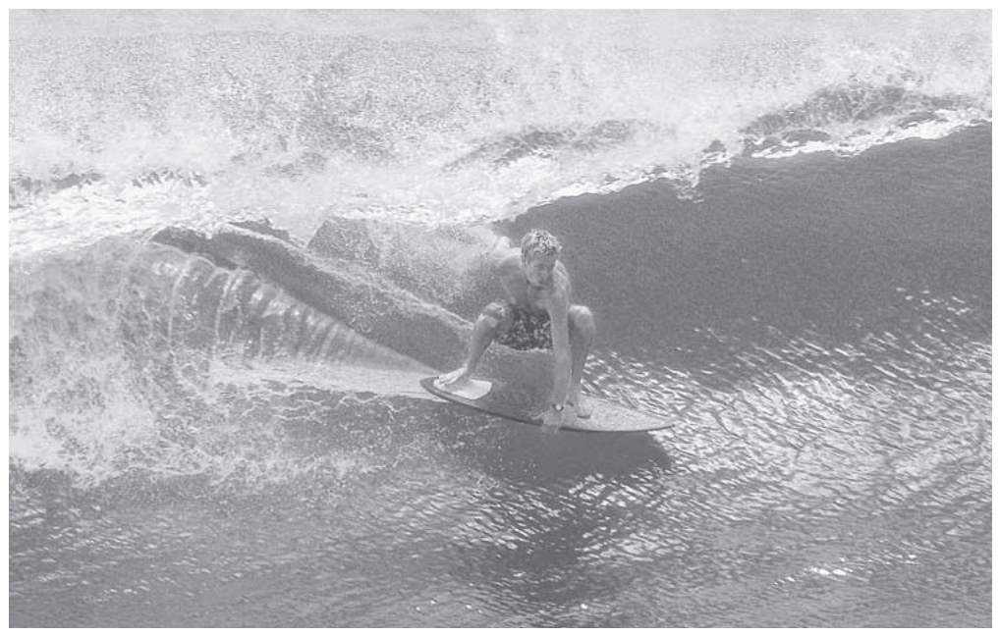</figure>
<p>để các lực bên trong và bên ngoài có thể được khai thác tốt hơn nhằm tăng tính kinh tế và hiệu quả của chuyển động (Bernstein, 1967; Newell, 1991). Ví dụ, tư thế đứng thẳng cứng nhắc được hình thành bởi sự ghép nối chặt giữa các khớp hông, gối và cổ chân ở một người lướt sóng mới bắt đầu dần được nới lỏng thông qua luyện tập. Cuối cùng, người đó phụ thuộc nhiều hơn vào sự ghép nối giữa chỉ một vài dfs then chốt, chẳng hạn như các khớp gối, để tạo ra các mô-men cơ phù hợp điều khiển ván và khai thác các xung lực năng lượng từ dòng chảy và sóng nhằm tạo ra những chuyển đổi nhanh trên mặt nước.</p>
<p>Điều thú vị là những người đang hồi phục sau chấn thương hay bệnh tật có thể cần tạm thời định hình lại các mẫu hình vận động đã học với các dfs được cấu trúc lại hay thay đổi của mình (ví dụ, đi bằng nạng khi bị gãy chân, nắm lấy vật sau khi cụt một ngón tay). Các mẫu hình phối hợp xuất hiện sớm trong quá trình học lại một kỹ năng đã được gọi bằng nhiều tên khác nhau, chẳng hạn như thiết bị đặc thù cho nhiệm vụ (ví dụ: Bingham, 1988), ghép nối thông tin–vận động (Bootsma &amp; van Wieringen, 1990; Davids, Kingsbury, Bennett, &amp; Handford, 2001; Savelsbergh &amp; van der Kamp, 2000), và cấu trúc phối hợp (Schmidt &amp; Fitzpatrick, 1996; Turvey, 1990).</p>
<p>Cấu trúc phối hợp trong hành động: Đá một quả bóng đá</p>
<p>Các cấu trúc phối hợp khai thác các khuynh hướng phối hợp vốn tồn tại trong hệ thống thần kinh sinh học. Chúng được thiết kế cho một mục đích hay hoạt động cụ thể, chẳng hạn như khi các nhóm cơ được tạm thời lắp ráp thành những đơn vị mạch lạc để đạt được các mục tiêu nhiệm vụ cụ thể, như ném đĩa Frisbee hay đóng đinh. Thông tin tri giác chất lượng là cần thiết để lắp ráp các cấu trúc phối hợp vì chi tiết tổ chức của chúng không được xác định hoàn toàn từ trước mà được điều chỉnh bởi các ràng buộc của từng hoạt động. Việc lắp ráp cấu trúc phối hợp là một quá trình động phụ thuộc vào các nguồn thông tin tri giác liên quan có ý nghĩa với các thuộc tính then chốt của người thực hiện (ví dụ, thông tin cảm giác bản thể từ cơ và khớp) và của môi trường (ví dụ, nhìn thấy mục tiêu hay bề mặt). Với luyện tập, các cấu trúc phối hợp trở nên linh hoạt hơn và nổi lên từ những cấu hình cứng nhắc cố định mà người học dùng giai đoạn đầu để quản lý vô số dfs của hệ thống vận động. Với mỗi mục tiêu nhiệm vụ, cấu trúc phối hợp lại được lắp ráp mới và có thể thay đổi nhẹ mỗi lần người thực hiện xây dựng một hành động trong môi trường động.</p>
<p>Ví dụ, các cầu thủ bóng đá học cách thích ứng cấu trúc phối hợp của mình khi đá bóng để có thể dùng nó trong những điều kiện thay đổi. Những điều kiện này có thể bao gồm chuyền bóng bằng má trong, sút bóng bổng qua đầu thủ môn, hay các cú sút; mặt sân có kích thước khác nhau; điều kiện thời tiết thay đổi; và sự mệt mỏi của hệ thống vận động. Đặc điểm khác biệt dựa trên trình độ thành thạo này có thể được quan sát dưới dạng định tính trong hình 2.4, mô tả kỹ năng đá bóng của một cầu thủ mới bắt đầu và một cầu thủ giàu kinh nghiệm. Những hình ảnh này cho thấy một cách định tính rằng sự khác biệt về đặc điểm phối hợp dựa trên trình độ thành thạo vẫn rõ rệt trong suốt cú đá,</p>
<p style="font-style:italic;color:#475569;font-size:.88rem">Hình 2.4: Sự khác biệt về đặc điểm phối hợp dựa trên kỹ năng vẫn rõ ràng trong suốt cú sút, khi người sút bóng thành thạo (a) cho thấy sự duỗi hông và gập gối lớn hơn người sút bóng mới tập (b).</p>
<figure class="bookfig"></figure>
<figure class="bookfig"></figure>
<figure class="bookfig">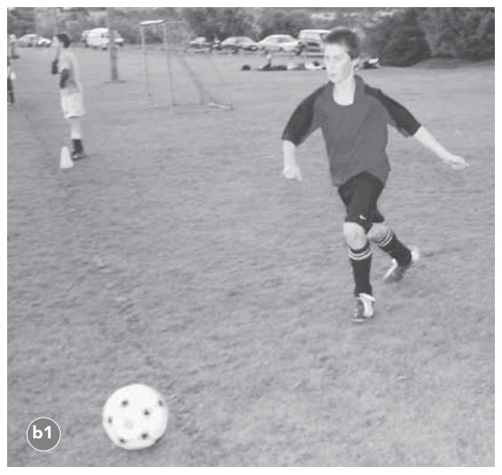</figure>
<figure class="bookfig"></figure>
<figure class="bookfig">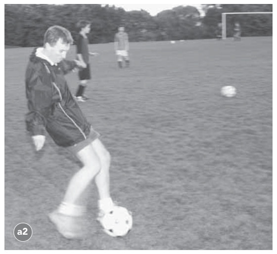</figure>
<figure class="bookfig">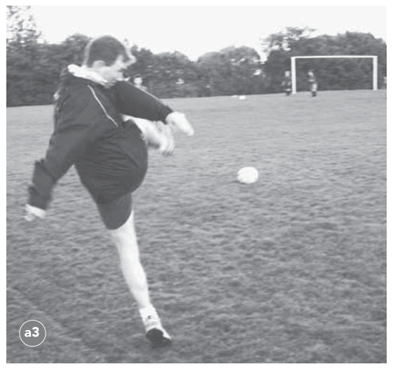</figure>
<figure class="bookfig"><figcaption>Hình 2.4: Sự khác biệt về đặc điểm phối hợp dựa trên kỹ năng vẫn rõ ràng trong suốt cú sút, khi người sút bóng thành thạo (a) cho thấy sự duỗi hông và gập gối lớn hơn người sút bóng mới tập (b).</figcaption></figure>
<p>từ giai đoạn chuẩn bị đến giai đoạn kết thúc động tác, khi người sút bóng thành thạo cho thấy sự duỗi hông và gập gối lớn hơn người sút bóng mới tập.</p>
<p>Phân tích chi tiết của Anderson và Sidaway (1994) về các cầu thủ bóng đá xác nhận những khác biệt này. Họ nhận thấy rằng những người sút bóng mới tập không thể hiện các mẫu hình phối hợp giống như những người sút bóng thành thạo. Sự cứng nhắc trong chuyển động của người mới tập và tính linh hoạt của cú sút ở người thành thạo được minh họa trong hình 2.5. Lưu ý rằng trước khi luyện tập, tầm vận động (ROM) của khớp gối trong động tác gập và duỗi khi sút bóng ở người mới tập có độ lớn nhỏ hơn ở người thành thạo (xem đường cong với các ô vuông rỗng). Tầm vận động khớp nhỏ hơn có thể cho thấy sự cứng nhắc hơn trong chuyển động. Sau 10 tuần luyện tập, 15 phút mỗi tuần, mẫu hình phối hợp của người mới tập (hình 2.5a) bắt đầu giống với mẫu hình của những người thành thạo (hình 2.5b).</p>
<p>Trong khi thực hiện các nhiệm vụ vận động, CNS thường có thể lựa chọn từ một số lượng lớn bậc tự do (dfs) để điều chỉnh các chuyển động (xem Latash, 2000). Hasan và</p>
<p style="font-style:italic;color:#475569;font-size:.88rem">Hình 2.5: Sau 10 tuần luyện tập, 15 phút mỗi tuần, mẫu hình phối hợp của người mới tập (đường cong với ô vuông đen) (a) bắt đầu giống với mẫu hình của những người thành thạo (b).</p>
<p>Được in lại với sự cho phép của Research Quarterly for Exercise and Sport, Tập 65, Số 2, 93-99, Bản quyền 1994 bởi American Alliance for Health, Physical Education, Recreation and Dance, 1900 Association Drive, Reston, VA 20191.</p>
<p>Người tham gia mới tập bắt đầu abc gập</p>
<p>Trước luyện tập Sau luyện tập abc duỗi HÔNG gập duỗi GỐI</p>
<p>Người tham gia thành thạo bắt đầu</p>
<p>Mẫu hình của người thành thạo abc gập duỗi HÔNG gập duỗi GỐI</p>
<figure class="bookfig"><figcaption>Hình 2.5: Sau 10 tuần luyện tập, 15 phút mỗi tuần, mẫu hình phối hợp của người mới tập (đường cong với ô vuông đen) (a) bắt đầu giống với mẫu hình của những người thành thạo (b).</figcaption></figure>
<p>Thomas (1999) đã gọi sự dư thừa bậc tự do (dfs) này là &quot;một sự lúng túng trước quá nhiều lựa chọn&quot; (tr. 380) đối với CNS của con người, và thậm chí có người còn đề xuất rằng nhiều bậc tự do trở nên dư thừa trong một số hành động vì chúng không đóng góp tích cực vào việc điều chỉnh hành động đó.</p>
<p>Điều quan trọng là phải hiểu mối quan hệ giữa khả năng kiểm soát của hệ thống vận động và tính linh hoạt của sự phối hợp vận động. Một mặt, sự phổ biến của các bậc tự do trong hệ thống vận động có thể mang lại cơ hội cho sự linh hoạt rất cần thiết trong việc thích ứng các mẫu hình vận động với những môi trường năng động. Mặt khác, CNS gặp vấn đề trong việc kiểm soát hành vi của các bậc tự do của hệ thống vận động trong những môi trường năng động, và điều này được thực hiện thông qua việc lắp ráp các cấu trúc phối hợp chức năng. Bằng cách mở ra với thông tin từ môi trường, các ràng buộc vật lý đối với bậc tự do của hệ thống vận động có thể được điều chỉnh để hoạt động trong từng tình huống thực hiện đặc thù. Nói cách khác, sự phối hợp vận động được kiểm soát liên quan đến các sự kiện, bề mặt và vật thể của môi trường trong khi thực hiện nhiều hoạt động. Chất lượng này của hệ thống vận động gợi ra một định nghĩa thứ hai về phối hợp, được thảo luận trong chương 3. Chúng ta kết thúc chương này bằng cách xem xét cách các hệ thống vận động động lực sử dụng tính biến thiên trong các mẫu hình phối hợp để đáp ứng các ràng buộc.</p>
<h3>Vai trò chức năng của tính biến thiên</h3>
<h3>trong các hệ thống vận động</h3>
<p>Vì hành vi vận động nảy sinh từ sự lắp ráp của nhiều bậc tự do của hệ thống vận động, nên người thực hành cần hiểu các ràng buộc đối với hành động. Số lượng lớn bậc tự do trong các hệ thống sinh học thần kinh tự nhiên mang lại tính biến thiên và khả năng thích ứng trong vận động của con người. Một khối lượng nghiên cứu lớn cho thấy người học có thể đạt được kết quả nhiệm vụ bằng cách sử dụng các mẫu hình phối hợp khác nhau (Davids, Bennett, &amp; Newell, 2006). Trong các tài liệu về khoa học vận động, ý tưởng này được thông tin hóa bằng khái niệm sự đa dạng cấu trúc (degeneracy), đề cập đến khả năng của các phần khác nhau về cấu trúc trong hệ thống sinh học thần kinh phức tạp đạt được các kết quả khác nhau trong những ngữ cảnh khác nhau. Khái niệm này được minh họa bằng các mạng lưới tồn tại ở các cấp độ khác nhau của hệ thống sinh học thần kinh, bao gồm các cấp độ phân tử, di truyền và cơ xương (Davids et al., 2007).</p>
<p>Trong các hệ thống sinh học thần kinh, sự đa dạng cấu trúc cung cấp năng lực cho tính biến thiên của các hành động cần thiết để ngay lập tức đối phó với những môi trường năng động, giàu thông tin (Edelman &amp; Gally, 2001). Ví dụ, hiện đã được xác lập rõ ràng rằng tính tương đương vận động, hay khả năng của các mẫu hình hoạt động thần kinh–cơ khác nhau đạt được những kết quả vận động cụ thể, có thể cung cấp cho hệ thống vận động người đa dạng cấu trúc khả năng điều chỉnh hành động theo ngữ cảnh trong những môi trường năng động. Sự đa dạng cấu trúc của các hệ thống vận động người do đó cung cấp năng lực cân bằng giữa tính đặc thù và tính đa dạng của các hành động trong các ràng buộc nhiệm vụ thay đổi (Edelman &amp; Gally, 2001).</p>
<p>Chúng ta có thể coi tính biến thiên trong cá nhân là có chức năng vì nó cho phép tính linh hoạt lớn trong việc thích ứng với một môi trường không ổn định (xem Newell &amp; Corcos, 1993). Đó là kiểu tính biến thiên vận động mà các vận động viên chạy việt dã thành thạo thể hiện khi những thay đổi nhỏ trong kiểu chạy có thể bù đắp cho địa hình gồ ghề, các bề mặt khác nhau và điều kiện thời tiết. Bên cạnh đó, sự biến đổi trong cách một người áp dụng lực trong các chuyển động như bước đi có thể giúp ngăn ngừa chấn thương cho hệ cơ xương do lặp đi lặp lại liên tục một mẫu hình vận động cụ thể (Hamill, Haddad, Heiderscheit, van Emmerik, &amp; Li, 2006). Như chúng ta đã lưu ý trước đó, sự chuyển động giữa các trạng thái điểm hút ổn định thực sự dựa vào tính bất ổn định cố hữu (ở cấp độ vi mô) bên trong bất kỳ hệ thống phức tạp mở nào. Các hệ thống vận động biểu hiện những tính bất ổn định này dưới dạng các dao động tới hạn, hay những mất mát tạm thời của tính ổn định (Schöner et al., 1987). Đặc điểm nổi bật này cung cấp cho cả các nhà lý thuyết lẫn người thực hành vận động một cách để dự đoán khi nào một sự chuyển đổi từ mẫu hình phối hợp này sang mẫu hình phối hợp khác sắp xảy ra. Bằng cách vẽ đồ thị tính biến thiên của một thông số trật tự liên quan khi một thông số kiểm soát thay đổi, người ta sẽ thấy tính biến thiên trong cá nhân tăng lên trước một sự chuyển đổi, sau đó giảm đi khi hệ thống vận động ổn định vào một trạng thái mới (Haken et al., 1985). Một số ví dụ từ thể thao và các rối loạn vận động hữu ích để chứng minh cách tính biến thiên có thể được coi là có chức năng.</p>
<h3>Khái niệm chính</h3>
<p>Trong các khoa học kỹ thuật, sự bất ổn định có thể là dấu hiệu của một sự trục trặc nguy hiểm trong một hệ thống cần được sửa chữa. Sau cùng, chẳng ai tự nguyện băng qua một cây cầu không ổn định bắc qua sông. Tuy nhiên, đừng để bị lừa rằng sự bất ổn định trong các hệ thống sinh học thần kinh luôn là dấu hiệu của điểm yếu và hoạt động kém. Kelso (1992) đã nhận ra mối quan hệ quan trọng giữa tính ổn định và sự bất ổn định trong hệ thống vận động động lực phức tạp, gọi sự bất ổn định là &quot;một nguồn phát sinh căn bản của sự thay đổi trong các hệ thống mở&quot; (tr. 261). Sự bất ổn định cho phép người thực hiện thích ứng các chuyển động trên các thang thời gian khác nhau với những sự kiện như chấn thương và ốm đau hoặc những hoàn cảnh nhiệm vụ mới. Nếu không có sự bất ổn định, các vận động viên sẽ không thể thích ứng với các ràng buộc thay đổi trong lúc thực hiện và luyện tập. Ở các chương sau, chúng ta sẽ khám phá sự bất ổn định hàm ý gì đối với người thực hành vận động.</p>
<p>Tính biến thiên trong các ràng buộc nhiệm vụ năng động</p>
<p>Bạn đã bao giờ tự hỏi làm thế nào các vận động viên bóng bàn ưu tú đối phó với những ràng buộc thời gian khắt khe của môn thể thao này? Tyldesley và Whiting (1975) cho rằng người chơi phát triển các kỹ thuật nhất quán thông qua luyện tập chuyên sâu. Mặc dù các mức độ nhất quán trong cá nhân đôi khi được báo cáo là rất cao ở những người thực hiện thành thạo (ví dụ, Schmidt, 1985), thì sự phân bố tính biến thiên trong mỗi lần lặp lại của một cú đánh lại có thể thay đổi. Ví dụ, trong cú đánh thuận tay (forehand drive), những người chơi giỏi thường cho thấy sự biến thiên lớn hơn trong quỹ đạo của vợt ở giai đoạn bắt đầu cú đánh. Sự biến thiên này giảm xuống mức tối thiểu ở điểm cuối chuyển động: điểm vợt tiếp xúc bóng (ví dụ, Bootsma &amp; van Wieringen, 1990). Trong một môn thể thao năng động như bóng bàn, mức độ biến thiên cao hơn ở điểm bắt đầu chuyển động chính là điều mà người chơi cần khi lựa chọn một cú đánh từ nhiều kiểu đánh khác nhau. Mức biến thiên cao hơn lúc khởi động chuyển động cho phép người chơi thích ứng với các vị trí khác nhau của bóng khi đối phương trả bóng. Đặc điểm này cũng có thể phản ánh nỗ lực che giấu kiểu đánh mà người chơi sắp thực hiện. Quá ít biến thiên ở đầu chuyển động sẽ không cho phép người chơi áp dụng một số vị trí khởi đầu khác nhau của vợt, và đặc điểm này thường thấy ở những người học tĩnh có vốn kiểu đánh hạn chế.</p>
<p>Những người chơi giỏi được Bootsma và van Wieringen (1990) nghiên cứu đã chứng minh sự giảm dần tính biến thiên trong cú đánh khi chuyển động tiến triển. Quan sát này dẫn đến khái niệm kiểm soát hình phễu để mô tả hình dạng của sự giảm tính biến thiên theo tiến trình của cú đánh (Davids, Handford, &amp; Williams, 1994; xem hình 2.6). Bootsma và van Wieringen coi sự giảm này là một phản ứng có chức năng của những người chơi giỏi, vì thời điểm mà người ta không muốn có quá nhiều biến thiên chính là lúc bóng tiếp xúc vợt. Quá nhiều biến thiên trong sự dịch chuyển không gian của vợt tại thời điểm này của chuyển động sẽ khiến việc kiểm soát bóng trở nên cực kỳ khó khăn, và đó là đặc điểm điển hình của thực hiện ở người mới tập và người ở trình độ trung bình (Tyldesley &amp; Whiting, 1975).</p>
<p style="font-style:italic;color:#475569;font-size:.88rem">Hình 2.6: Khi nghiên cứu chuyển động của những người chơi giỏi, Bootsma và van Wieringen (1990) đã quan sát thấy sự giảm dần tính biến thiên trong cú đánh khi chuyển động tiến triển. Quan sát này dẫn đến khái niệm kiểm soát hình phễu để mô tả hình dạng của sự giảm đó.</p>
<p>Trích từ R.J. Bootsma và P.C.W. van Wieringen, &quot;Timing an attacking forehand drive in table tennis,&quot; Journal of Experimental Psychology: Human Perception and Performance Tập 16, tr. 21-29, 1990, Bản quyền © American Psychological Association. Được in lại với sự cho phép.</p>
<p>Thời gian đến tiếp xúc</p>
<p>Những điều chỉnh liên tục của vợt</p>
<p>Chuyển động vợt của người chơi giỏi</p>
<p>Hướng</p>
<figure class="bookfig"><figcaption>Hình 2.6: Khi nghiên cứu chuyển động của những người chơi giỏi, Bootsma và van Wieringen (1990) đã quan sát thấy sự giảm dần tính biến thiên trong cú đánh khi chuyển động tiến triển. Quan sát này dẫn đến khái niệm kiểm soát hình phễu để mô tả hình dạng của sự giảm đó.</figcaption></figure>
<p>Những phát hiện này nhấn mạnh cách những mức độ biến thiên khác nhau có thể xuất hiện ở các phần khác nhau của hệ thống vận động. Ở một số phần của hệ thống, mức độ biến thiên cao hơn thực tế có thể phản ánh các biện pháp bù trừ dưới ý thức của người thực hiện. Thường thì cơ chế bù trừ này chỉ được tìm thấy ở những người thực hiện thành thạo, những người có thể thay đổi các vi thành phần then chốt của một cấu trúc phối hợp nhằm ổn định một kết quả mong muốn của hệ thống. Nếu một vi thành phần của cấu trúc phối hợp bị nhiễu loạn bởi các lực và chịu sự biến đổi, thì các thành phần khác của hệ thống sẽ điều chỉnh mối quan hệ của chúng để duy trì tính ổn định của hệ thống (và của kết quả) (Scholz et al., 2000).</p>
<p>Tính biến thiên trong các ràng buộc nhiệm vụ tĩnh</p>
<p>Tính biến thiên chức năng không chỉ là hiện tượng của các ngữ cảnh năng động; nó cũng đã được quan sát trong các ràng buộc nhiệm vụ tĩnh hơn. Ví dụ, khi nghiên cứu thực hiện của những người bắn súng ngắn giỏi và không giỏi, Arutyunyan, Gurfinkel, và Mirskii (1968) đã báo cáo các mức độ biến thiên khác nhau ở mỗi khớp của cánh tay trên ở những người thực hiện giỏi, góp phần vào sự hoàn thành nhiệm vụ thành công của họ (xem thêm Scholz et al., 2000). Mức độ biến thiên cao hơn ở các khớp vai và khuỷu bổ trợ cho nhau để cho phép cổ tay duy trì một vị trí ổn định. Cũng như cú đánh thuận tay trong bóng bàn, điểm tiếp xúc giữa tay và khẩu súng là điểm mà độ lớn của tính biến thiên trong một cú là thấp nhất. Những mức biến thiên cao như vậy không thấy được ở các khớp vai và khuỷu của những người bắn không giỏi. Hệ quả là vị trí khẩu súng vẫn không ổn định và biến thiên hơn trong lúc bắn.</p>
<p>Ngược lại, các nghiên cứu gần đây với những bệnh nhân biểu hiện các rối loạn vận động như bệnh Parkinson cho thấy các mẫu hình lặp đi lặp lại, khuôn mẫu với một mức độ nhất quán đáng kể (xem van Emmerik &amp; van Wegen, 2000). Ví dụ, trẻ em bị bại não liệt nửa người co cứng biểu hiện tính biến thiên giảm trong sự phối hợp giữa các khớp của chi bị ảnh hưởng khi đi lại (Jeng, Holt, Fetters, &amp; Certo, 1996). Bên cạnh đó, những người bị rối loạn vận động muộn, một rối loạn thần kinh, biểu hiện mức biến thiên thấp trong phân bố lực áp lên bề mặt mặt đất của bàn chân trong các nhiệm vụ kiểm soát tư thế đơn giản (Hamill et al., 2006). Hệ quả đáng chú ý từ những nghiên cứu như vậy có thể là nhiều rối loạn vận động có thể được quy cho năng lực suy giảm trong việc biểu hiện tính biến thiên vận động có chức năng.</p>
<h3>Tóm tắt</h3>
<p>Trong chương này, chúng ta đã thảo luận cách các nhà nghiên cứu áp dụng lý thuyết hệ thống động lực vào nghiên cứu sự phối hợp trong các hệ thống vận động của con người. Chúng ta đã phác thảo tầm quan trọng của các ý tưởng then chốt mượn từ toán học, vật lý, và sinh học, chẳng hạn như tính phức tạp, các quá trình tự tổ chức và các ràng buộc. Hiểu được sự phối hợp trong các hệ thống vận động động lực là một thách thức khoa học quan trọng đối với các chuyên gia về vận động con người. Bernstein (1967) là người đầu tiên nhấn mạnh sự cần thiết phải hiểu sự phối hợp giữa các thành phần của hệ thống vận động. Ông lập luận rằng vào giai đoạn đầu của học, người ta cố định cứng nhắc các bậc tự do của hệ thống vận động để đối phó với số lượng dư thừa sẵn có. Về sau trong quá trình học, các sự phối hợp hiệp đồng (tức là các cấu trúc phối hợp) được áp đặt để nhóm các bậc tự do của hệ thống vận động một cách chức năng, đảm bảo rằng các chuyển động được thích ứng với những hoàn cảnh thực hiện thay đổi.</p>
<p>Từ góc nhìn hệ thống động lực, phối hợp là một thuộc tính nảy sinh từ mỗi hệ thống vận động cá nhân nhằm đáp ứng các ràng buộc cần được thỏa mãn. Mô hình các ràng buộc tương tác của Newell (1986) làm nổi bật cách các hệ thống vận động động lực có thể khai thác các quá trình tự tổ chức cố hữu ở các cấp độ khác nhau của cơ thể người. Mô hình của Newell xác định các nhóm ràng buộc chính—cơ thể, môi trường và nhiệm vụ—định hình các mẫu hình phối hợp nảy sinh trong lúc thực hiện và, như chúng ta sẽ thấy, trong tiếp thu kỹ năng.</p>
<p>Mặc dù tính biến thiên thường được xem như nhiễu hoặc lỗi cần phải loại bỏ, lý thuyết hệ thống động lực hàm ý một cách tiếp cận mới để hiểu tính biến thiên của đầu ra vận động. Vì mỗi người khác nhau và hoàn cảnh thực hiện luôn thay đổi, tính biến thiên của đầu ra vận động đóng một vai trò chức năng trong việc giúp con người thích ứng với các ràng buộc. Tính biến thiên cho phép thích ứng linh hoạt với các ràng buộc của một môi trường năng động, một đặc điểm hữu ích trong những ngữ cảnh thực hiện phong phú và đa dạng. Ý tưởng này là cốt lõi của tiếp cận dựa trên rào cản/giới hạn trong tiếp thu kỹ năng.</p>
<p>CÂU HỎI TỰ KIỂM TRA</p>
<p>1. Hãy nghĩ về một ví dụ về hệ thống phức tạp trong thể thao, tập luyện hoặc phục hồi chức năng. Hệ thống này chia sẻ những đặc điểm gì với các hệ thống phức tạp khác như thời tiết hay CNS?</p>
<p>2. Khái niệm tự tổ chức dưới các ràng buộc khác với những ý tưởng truyền thống về một hệ thống vận động phân cấp như thế nào?</p>
<p>3. Hãy mô tả cách kiểm soát một chuyển động phức tạp nhiều khớp, chẳng hạn như bơi crawler trước, có thể được giải thích từ cách tiếp cận hệ thống động lực.</p>
<p>4. Bạn sẽ giải thích với các vận động viên thế nào rằng tính biến thiên vận động là một phần thiết yếu trong sự phát triển của họ?</p>
<p>ĐỌC THÊM</p>
<p>1. Bernstein, N.A. (1996). On dexterity and its development. Trong M. Latash &amp; M.T. Turvey (Eds.), Dexterity and its development (tr. 2-244). Mahwah, NJ: LEA.</p>
<p>2. Corbetta, D., &amp; Vereijken, B. (1999). Understanding development and learning of motor coordination in sport. International Journal of Sport Psychology, 30, 507-530.</p>
<p>3. Davids, K., Glazier, P., Araújo, D., &amp; Bartlett, R.M. (2003). Movement systems as dynamical systems: The role of functional variability and its implications for sports medicine. Sports Medicine, 33, 245-260.</p>
<p>4. Kauffman, S.A. (1995). At home in the universe: The search for laws of complexity. London: Viking.</p>
<p>5. Kelso, J.A.S. (1995). Dynamic patterns: The self-organization of brain and behaviour. London: MIT Press.</p><h2 class="chapter-title">Chương 3 — Các ràng buộc thông tin trong phối hợp</h2><h2>Ràng buộc thông tin đối với</h2>
<h2>sự phối hợp</h2>
<h3>Một góc nhìn sinh thái</h3>
<h3>CHƯƠNG 3 CHƯƠNG 3</h3>
<p>NỘI DUNG CHƯƠNG</p>
<p>Tâm lý học sinh thái và thông tin</p>
<p>Hệ thống mở và trao đổi năng lượng Các biến thể và bất biến trong dòng năng lượng Cơ hội hành động</p>
<p>Sự ghép nối thông tin–vận động</p>
<p>Mô hình vận tốc yêu cầu: Kiểm soát hướng tới Tc Thông tin quang học có được sử dụng không? Bộ não thị giác trong hành động</p>
<p>Ràng buộc thông tin xúc giác đối với chuyển động</p>
<p>Ràng buộc thông tin âm thanh đối với chuyển động</p>
<p>Nghiên cứu thực nghiệm về thông tin âm thanh Thông tin âm thanh cho các hành động chặn bắt</p>
<p>Tóm tắt</p>
<p>© PA Photos</p>
<figure class="bookfig"></figure>
<figure class="bookfig">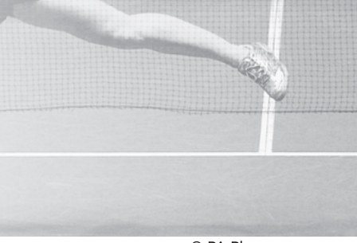</figure>
<p>tiếp cận dựa trên rào cản/giới hạn trong tiếp thu kỹ năng liên quan đến hai vấn đề bao quát. Ở chương 2, chúng ta đã thảo luận vấn đề thứ nhất—những nhận định của Bernstein (1967) về các ràng buộc vật lý đối với bậc tự do của hệ thống vận động. Vấn đề thứ hai liên quan đến cách các hệ thống sinh học thần kinh phối hợp hành động liên quan đến các sự kiện, vật thể và bề mặt quan trọng của môi trường, và đây là nền tảng cho nghiên cứu của James Gibson (1979). Chương này tập trung vào các ràng buộc thông tin đối với tiếp thu kỹ năng từ góc nhìn của tâm lý học sinh thái. Vì những người bình thường thường đặt sự nhấn mạnh đáng kể vào thị giác khi học phối hợp hành động với môi trường, trọng tâm ban đầu của chúng ta trong chương này sẽ là thông tin thị giác. Ở các phần sau, chúng ta sẽ thảo luận vai trò của các ràng buộc thông tin khác như dòng xúc giác (chạm) và âm thanh (tiếng) trong tiếp thu kỹ năng.</p>
<h3>Tâm lý học sinh thái và thông tin</h3>
<p>Các hành động chặn bắt đòi hỏi sự phối hợp giữa các phần có liên quan của hệ thống vận động và giữa các thành phần có liên quan của hệ thống với vật thể hoặc bề mặt cần được chặn bắt. Ví dụ, một đứa trẻ học cách nhặt một món đồ chơi như thế nào? Một bác sĩ phẫu thuật sử dụng thông tin gì khi thực hiện một vết rạch tinh vi trong ca mổ? Khi phối hợp chuyển động liên quan đến môi trường, con người cần thông tin chính xác để định vị vật thể, chướng ngại vật hoặc bề mặt trong không gian (thông tin ở đâu) vào một thời điểm cụ thể (thông tin khi nào) (Davids, Savelsbergh, Bennett, &amp; van der Kamp, 2002). Savelsbergh và Bootsma (1994) chỉ ra rằng ba ràng buộc nhiệm vụ cần được thỏa mãn để phối hợp chuyển động thành công với các sự kiện môi trường. Người thực hiện cần (1) đảm bảo tiếp xúc với một vật thể hoặc bề mặt trong môi trường vào đúng thời điểm thích hợp, (2) đảm bảo tiếp xúc với vận tốc và lực dự định, và (3) đảm bảo tiếp xúc với hướng không gian dự định. Để thỏa mãn các ràng buộc nhiệm vụ này, người thực hiện cần tiếp cận thông tin chất lượng để hỗ trợ hành động của mình.</p>
<p>Michaels và Beek (1995) đã đề xuất cách những nhận định của Gibson (1979) trong tâm lý học sinh thái nhấn mạnh các &quot;mối quan hệ vòng tròn&quot; (tr. 261) tồn tại giữa các hệ thống nhận thức và hành động trong cơ thể người. Ý nghĩa sinh học của cách tiếp cận này được thể hiện trọn vẹn qua nhận xét của Kugler và Turvey (1987):</p>
<p>Khoa học Sinh thái, theo nghĩa rộng nhất, là một cách tiếp cận đa ngành để nghiên cứu các hệ thống sống, môi trường của chúng và sự tương hỗ đã tiến hóa giữa hai bên. . . . Tâm lý học Sinh thái . . . [nhấn mạnh] việc nghiên cứu các giao dịch thông tin giữa các hệ thống sống và môi trường của chúng, đặc biệt khi chúng liên quan đến việc nhận biết các tình huống có ý nghĩa cho việc lập kế hoạch và thực hiện các mục đích được kích hoạt trong một môi trường. (tr. xii)</p>
<p>Hệ thống mở và trao đổi năng lượng</p>
<p>Để hiểu thông tin ràng buộc hành động như thế nào, chúng ta cần quay lại khái niệm hệ thống mở, đã được thảo luận ngắn gọn ở chương 2. Các hệ thống mở phổ biến trong tự nhiên. Nhiều sinh vật sinh học là các hệ thống mở vì chúng có những lượng năng lượng thay đổi di chuyển giữa các thành phần của mình tại bất kỳ thời điểm nào (xem hình 3.1). Bất cứ khi nào có lực được áp dụng bên trong một hệ thống mở, thường sẽ có những thay đổi trong tổ chức của hệ thống, vì năng lượng nội tại bên trong hệ thống (ví dụ, do cơ học của chuyển động chi) tương tác với các lực sẵn có trong môi trường (ví dụ, lực phản ứng, trọng lực, ma sát, sức cản không khí) (Kugler, Kelso, &amp; Turvey, 1982).</p>
<p>Ví dụ, chính tính mở này được những người trượt băng thành thạo khai thác khi họ dùng động lượng được tạo ra bằng cách áp dụng lực cơ ở cẳng chân và cánh tay trong một cú nhảy và xoay (nguồn năng lượng bên trong), cùng với lực bổ sung sẵn có từ hệ số ma sát thấp của bề mặt băng (nguồn bên ngoài). Một mặt, sự kết hợp này cho phép người trượt giỏi tiết kiệm năng lượng hơn và tạo ra nhiều lực thẳng đứng và lực xoay hơn. Mặt khác, người mới tập không thể kiểm soát các lực bổ sung sẵn có từ hệ số ma sát thấp của băng, và những thay đổi trong mẫu hình chuyển động của họ có thể đột ngột và không mong muốn hơn.</p>
<p>Vấn đề ở đây là các sinh vật phức tạp, sống động có những nguồn năng lượng sẵn có trên cơ thể (ví dụ, được tích trữ trong cơ) cho phép chúng tự duy trì và thích ứng. Qua kinh nghiệm, chúng cũng có thể học cách khai thác nhiều dòng năng lượng môi trường xung quanh đóng vai trò như một dạng thông tin để dẫn dắt hệ thống hiệu quả hơn (Kugler &amp; Turvey, 1987).</p>
<p>Đây là tin tốt cho những người trong chúng ta muốn tiết kiệm năng lượng, và đặc biệt là cho các vận động viên cùng những người có công việc đòi hỏi thể lực cao. Với luyện tập nhiệm vụ,</p>
<p style="font-style:italic;color:#475569;font-size:.88rem">Hình 3.1: Vì nhiều sinh vật sinh học có những lượng năng lượng thay đổi di chuyển giữa các thành phần của mình tại bất kỳ thời điểm nào, chúng được coi là các hệ thống mở.</p>
<p>© Photodisc</p>
<figure class="bookfig"></figure>
<figure class="bookfig">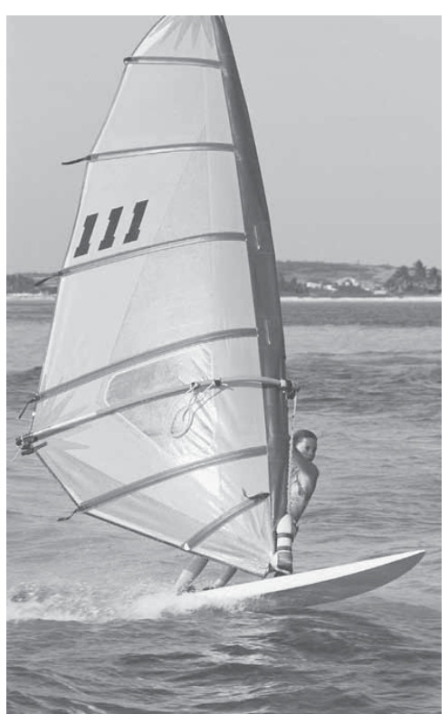<figcaption>Hình 3.1: Vì nhiều sinh vật sinh học có những lượng năng lượng thay đổi di chuyển giữa các thành phần của mình tại bất kỳ thời điểm nào, chúng được coi là các hệ thống mở.</figcaption></figure>
<p>người chơi có thể trở nên ngày càng hiệu quả trong việc sử dụng các nguồn năng lượng nội tại của mình, đồng thời trở nên thành thạo trong việc khai thác năng lượng sẵn có từ các lực như trọng lực và ma sát, như được minh chứng qua những chuyển động điêu luyện của các diễn viên nhào lộn và người đi dây cao (ví dụ, xem Sparrow, 2000). Vì vậy, theo ý tưởng của Bernstein (1967), sự phối hợp và kiểm soát chuyển động không xảy ra trong chân không và không chỉ bắt nguồn từ lực cơ. Một dấu hiệu đặc trưng của chuyên môn ngày càng cao trong nhiều hoạt động thể chất là tiết kiệm năng lượng, được báo hiệu bằng năng lực khai thác các lực phản ứng sẵn có như một nguồn năng lượng có thể thuận dụng trong hành động.</p>
<p>Có một cách khác mà tiếp thu kỹ năng dẫn đến chuyên môn ngày càng cao trong việc khai thác năng lượng sẵn có trong môi trường. Những người thực hiện thành thạo có thể khai thác các dòng năng lượng xung quanh, chẳng hạn như năng lượng quang học dưới dạng ánh sáng phản xạ từ vật thể và bề mặt, để dùng như thông tin ràng buộc hành động của họ (Gibson, 1979). Chúng ta có thể bắt đầu hiểu cách năng lượng ràng buộc hành động bằng cách xem xét hai khái niệm quan trọng trong tâm lý học sinh thái (Gibson, 1979): mối quan hệ giữa các biến thể và bất biến trong dòng năng lượng, và các cơ hội hành động (affordances).</p>
<h3>Khái niệm chính</h3>
<p>Các hệ thống mở có thể trao đổi năng lượng và vật chất với môi trường của chúng. Vì lý do này, hành vi của các hệ thống mở trong tự nhiên nên được nghiên cứu có tham chiếu đến môi trường cụ thể nơi chúng hiện diện (Gordon, 2007). Một hệ quả quan trọng của ý tưởng này là sự phối hợp trong các hệ thống vận động mở được phân tích tốt nhất ngay trong dòng chảy của hành động (Reed, 1988). Hầu hết các hành động không xảy ra trong chân không mà diễn ra trong một ngữ cảnh năng động, nơi các dòng năng lượng xung quanh cung cấp nhiều cơ hội để khai thác những lực sẵn có nhằm hỗ trợ nhận thức và hành động. Vì vậy, các nhà khoa học vận động nên thận trọng với việc tạo ra những nhiệm vụ vận động nhân tạo và quá tĩnh. Thay vào đó, việc nghiên cứu nhận thức và hành động nên diễn ra trong những môi trường thực tế do các hoạt động tự nhiên trong công việc, thể thao và các bối cảnh thực hiện khác mang lại.</p>
<p>Các biến thể và bất biến trong dòng năng lượng</p>
<p>Chúng ta hoàn toàn được bao quanh bởi năng lượng. Ánh sáng, sóng âm và hoạt động điện trong hệ thần kinh đều cấu thành những dạng năng lượng quan trọng mà chúng ta được trang bị để phát hiện. Khi di chuyển, chúng ta tác động đến năng lượng xung quanh theo nhiều cách quan trọng. Các dòng năng lượng do chuyển động của chúng ta tạo ra có thể vừa bất biến (không đổi) vừa biến đổi (thay đổi). Bề mặt, vật thể và kết cấu trong môi trường phản xạ ánh sáng và khi làm vậy cung cấp cấu trúc cho người quan sát đang di chuyển. Ví dụ, khi một số yếu tố của cấu trúc bề mặt trong mảng thông tin thay đổi trong lúc người thực hiện di chuyển tương đối so với bề mặt, vật thể hoặc sự kiện, dòng năng lượng được coi là biến đổi. Tuy nhiên, thì cũng tồn tại một cấu trúc thiết yếu bên dưới vẫn bất biến bất chấp những thay đổi của cấu trúc bề mặt.</p>
<p>Theo Gibson (1979), khi một người di chuyển, cấu trúc thiết yếu của mảng quang học môi trường, nền tảng của cấu trúc bề mặt, sẽ được bộc lộ. Cấu trúc thiết yếu của mảng quang học bao gồm các đặc điểm bất biến của môi trường thị giác cung cấp thông tin cho hành động. Thông tin dưới dạng các bất biến được bộc lộ cho những cá nhân đang di chuyển vì, dù hình thức bề mặt của môi trường có thể khác đi, hình thức thiết yếu bên dưới vẫn nhất quán và do đó cung cấp thông tin cho người thực hiện.</p>
<p>Một ví dụ sẽ giúp chúng ta hiểu những ý tưởng này, và sau này chúng ta sẽ xem xét tau, một bất biến quang học đã nhận được nhiều sự chú ý nghiên cứu. Nhưng cũng hữu ích khi nhìn vào một ví dụ từ golf. Trong hình 3.2, người chơi golf đang khám phá cấu trúc bất biến của một green putt khi anh ta di chuyển quanh bóng và lỗ để nghiên cứu cú putt cần thực hiện. Cấu trúc bất biến của mỗi green putt bao gồm các nguồn thông tin luôn sẵn có, bất kể người ta đang chơi ở Pebble Beach (Hoa Kỳ), Royal Lytham and St. Annes (Vương quốc Anh) hay một sân golf địa phương. Những người chơi golf giàu kinh nghiệm biết rằng khi họ di chuyển giữa bóng và lỗ, các đặc điểm quan trọng như hướng cắt cỏ và những đường cong tinh tế của mặt green trở nên rõ rệt hơn (Button &amp; Pepping, 2002). Chuyển động của người thực hiện bộc lộ những nguồn thông tin bất biến này cho hành động.</p>
<p>Thông tin từ chuyển động tương đối giữa người thực hiện với vật thể và bề mặt môi trường có thể được nhận thức trực tiếp trong cấu trúc của mảng quang học. Hệ thị giác của người nhận thức có thể thu nhận những sự thay đổi trong cấu trúc quang học, và cấu trúc bất biến có thể được bộc lộ ngay lập tức để hỗ trợ hành động. Đây là lý do Gibson (1979) gọi các bất biến này là bậc cao. Với những ý tưởng lý thuyết này, không có gì ngạc nhiên khi rất nhiều thời gian và công sức nghiên cứu đã được dành để xác định những bất biến</p>
<p style="font-style:italic;color:#475569;font-size:.88rem">Hình 3.2: Người chơi golf khám phá cấu trúc bất biến của một green putt khi anh ta di chuyển quanh bóng và lỗ để nghiên cứu cú putt cần thực hiện. Những người chơi golf giàu kinh nghiệm biết rằng khi họ di chuyển giữa bóng và lỗ, các đặc điểm quan trọng của green putt trở nên rõ rệt hơn.</p>
<figure class="bookfig">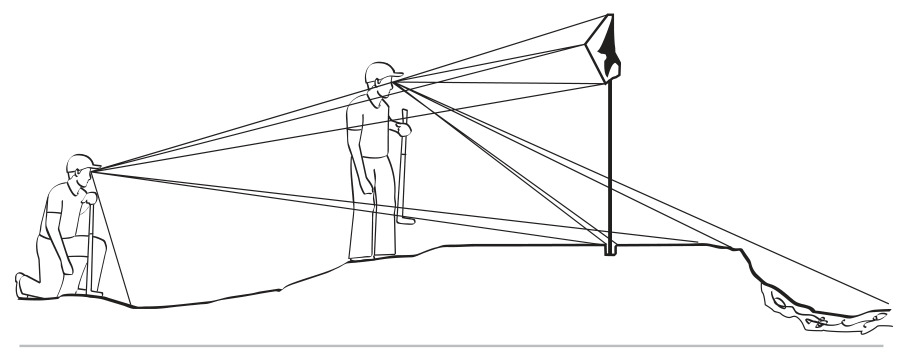<figcaption>Hình 3.2: Người chơi golf khám phá cấu trúc bất biến của một green putt khi anh ta di chuyển quanh bóng và lỗ để nghiên cứu cú putt cần thực hiện. Những người chơi golf giàu kinh nghiệm biết rằng khi họ di chuyển giữa bóng và lỗ, các đặc điểm quan trọng của green putt trở nên rõ rệt hơn.</figcaption></figure>
<p>có thể chỉ định hành động. Một trong những bất biến được nghiên cứu kỹ nhất trong mảng thông tin là một biến số quang học gọi là tau. Kể từ khi được nhà tâm lý học thực nghiệm David Lee khái niệm hóa cách đây ba thập kỷ, nó đã tạo ra một lượng đáng kể nghiên cứu và tranh luận trong các tài liệu.</p>
<p>Nghiên cứu về bất biến quang học tau đã chỉ ra rằng, khi một vật thể không biến dạng chẳng hạn như quả bóng di chuyển về phía người quan sát, các đường viền của quả bóng tạo thành một góc nhìn rắn (xem hình 3.3). Dòng quang học này được nhận thức theo thời gian như một hệ phân cấp lồng nhau của các góc rắn giãn ra đối xứng trên võng mạc của người quan sát. Thông tin quang học được xác định trên võng mạc bởi tốc độ giãn tương đối của góc nhìn rắn được các đường viền này bao quanh được gọi là tau. Tau cung cấp cho cá nhân thông tin về thời gian còn lại đến tiếp xúc (Tc) giữa điểm quan sát và một vật thể đang tiến đến (Lee, 1976).</p>
<p>Giả sử một vật thể đang tiến đến có vận tốc không đổi và hướng về điểm quan sát, thì có những lợi thế đáng kể khi có thể nhận thức Tc. Ví dụ, cá nhân không cần xử lý gián tiếp các manh mối mơ hồ về khoảng cách, kích thước vật thể và vận tốc, rồi thực hiện các phép tính tinh thần để tính thời gian vật thể đến. Những manh mối này từ vật thể đang tiến đến là một phần của cấu trúc bề mặt của mảng môi trường khác nhau giữa các ngữ cảnh thực hiện. Việc không phải dựa vào xử lý gián tiếp cấu trúc bề mặt đặc biệt có lợi trong các hoạt động năng động như lái xe trên đường cao tốc, chơi quần vợt hoặc trượt băng nhanh trên sân băng. Trong những hoạt động này, người thực hiện có rất ít thời gian để phản ứng và có thể không có thời gian để tính thời gian đến của một vật thể hoặc bề mặt trong lúc diễn giải các sự kiện trong môi trường.</p>
<p style="font-style:italic;color:#475569;font-size:.88rem">Hình 3.3: Tau cung cấp thông tin về Tc còn lại giữa điểm quan sát và một vật thể đang tiến đến.</p>
<p>TTC Tau cục bộ</p>
<figure class="bookfig">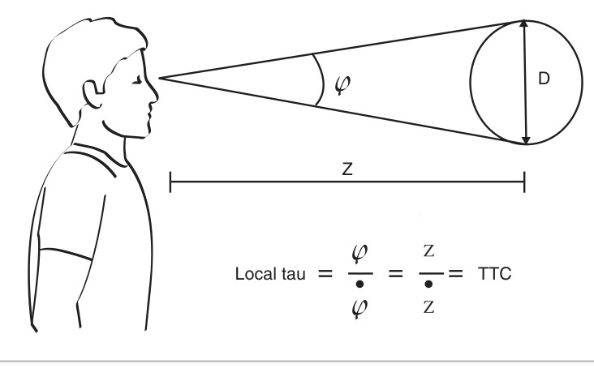<figcaption>Hình 3.3: Tau cung cấp thông tin về Tc còn lại giữa điểm quan sát và một vật thể đang tiến đến.</figcaption></figure>
<h3>Tiêu điểm nghiên cứu</h3>
<p>NẮM BẮT TAU</p>
<p>Savelsbergh, Whiting, và Bootsma (1991) đã nỗ lực xác định xem thời điểm của một hành động chặn bắt có phù hợp với việc sử dụng thông tin Tc bậc nhất hay không. Khác với các nghiên cứu trước đó chỉ suy luận về việc sử dụng tau, Savelsbergh và các cộng sự đã dùng một phương pháp khéo léo để thao tác tốc độ giãn tương đối của hình ảnh võng mạc của một vật thể đang tiến đến (tau). Trong điều kiện nhìn bằng hai mắt (thí nghiệm 1) và nhìn bằng một mắt (thí nghiệm 2), những người tham gia được yêu cầu bắt những quả bóng tiếp cận theo quỹ đạo parabol ngược gắn với một con lắc. Họ dùng ba quả bóng có đường kính khác nhau: một quả lớn (7,5 xentimét) và một quả nhỏ (5,5 xentimét) có đường kính không đổi, cùng một quả bóng phồng giảm dần có đường kính thay đổi từ 7,5 xuống 5,5 xentimét trong lúc tiến đến. Để tạo ra quả bóng xì hơi mà không cho người tham gia biết, các nhà nghiên cứu đã bọc một quả bóng nhỏ bằng một quả bóng bay được xì hơi cơ học bằng bơm hút chân không. Dù có vẻ nhân tạo, đây chính là kiểu môi trường kiểm soát mà các nhà khoa học cần khi muốn xác định các nguồn thông tin bất biến cụ thể thông qua thao tác thực nghiệm.</p>
<p>Trong thí nghiệm, tốc độ giãn tương đối của quả bóng xì hơi không tương ứng với mẫu hình chuyển động được tạo ra bởi một quả bóng không xì hơi tiến đến với vận tốc không đổi. Thực tế, tốc độ giãn tương đối của một quả bóng xì hơi xác định một Tc dài hơn so với quả bóng không xì hơi. Theo logic, nếu tau điều chỉnh thời điểm của động tác bắt bằng một tay, thì các khía cạnh then chốt trong chuyển động chặn bắt nên xảy ra muộn hơn ở quả bóng xì hơi so với các quả bóng lớn và nhỏ có đường kính không đổi. Bên cạnh đó, các nhà nghiên cứu không quan sát thấy sự khác biệt như mong đợi trong phản ứng của người tham gia đối với các quả bóng lớn và nhỏ có đường kính không đổi, vì tau (bất biến) không phụ thuộc vào kích thước vật thể (biến thể). Cũng không có sự khác biệt mong đợi giữa điều kiện nhìn bằng hai mắt và một mắt, vì tau, được xác định trong hình học đơn nhãn của cấu trúc ánh sáng phản xạ từ bề mặt quả bóng vào võng mạc, có sẵn trong cả hai điều kiện.</p>
<p>Thí nghiệm cho thấy những người tham gia mở bàn tay với độ mở rộng lớn hơn cho quả bóng lớn và quả bóng xì hơi so với quả bóng nhỏ, nhưng họ mất nhiều thời gian hơn để nắm bắt quả bóng xì hơi và quả bóng nhỏ so với quả bóng lớn. Thực tế, họ xử lý quả bóng xì hơi như một quả bóng lớn ở giai đoạn đầu của đáp ứng vận động, rồi như một quả bóng nhỏ ở giai đoạn sau. Trong khi vận tốc đỉnh của động tác nắm đạt được đồng thời ở các quả bóng nhỏ và lớn, thì nó đạt được muộn hơn đáng kể ở quả bóng xì hơi (xem bảng 3.1). Savelsbergh và các cộng sự (1991) kết luận rằng dữ liệu về thời điểm của các sự kiện trong động tác nắm &quot;phù hợp với việc các đối tượng sử dụng thông tin giãn tương đối&quot; (tr. 321). Một phát hiện thú vị từ nghiên cứu là những người tham gia không hề nhận biết có bất kỳ thay đổi vật lý nào của quả bóng trong điều kiện xì hơi.</p>
<p>Trong những năm gần đây, bài báo &quot;Grasping Tau&quot; đã nhận được nhiều sự xem xét kỹ lưỡng, có lẽ vì đây là nghiên cứu đầu tiên tìm kiếm bằng chứng trực tiếp cho việc sử dụng tốc độ giãn tương đối trong việc dẫn dắt thời điểm của một hành động chặn bắt. Những chỉ trích quan trọng nhất liên quan đến nhu cầu đưa ra các dự đoán định lượng về độ lớn của ảnh hưởng từ tốc độ giãn tương đối bị thay đổi đối với thời điểm nắm bắt, và nhu cầu</p>
<p>(TIẾP THEO) biện minh cho tính phù hợp của các biến phụ thuộc được chọn để phân tích, và sự khác biệt về độ lớn của ảnh hưởng giữa điều kiện nhìn bằng một mắt và hai mắt.</p>
<p>ỨNG DỤNG</p>
<p>Do những ảnh hưởng có thể chứng minh được của các biến khác như vận tốc tiến đến, kích thước vật thể và cấu trúc nền, hiện ít có sự đồng thuận rằng tau đơn riêng được dùng để đưa ra phán đoán về thời điểm (Michaels &amp; Beek, 1995). Các nhà nghiên cứu đã dùng mô hình tâm lý vật lý để chứng minh liệu con người có nhạy với tau và liệu họ có dùng nó để phán đoán Tc với các vật thể đang tiến đến hay không. Mô hình này bao gồm các nhiệm vụ dự đoán chuyển động (PM), yêu cầu một người đưa ra một phản ứng đơn giản trùng với thời điểm mà một mục tiêu đã từng nhìn thấy, đang di chuyển sẽ đến một điểm tiếp xúc, giả sử chuyển động của nó trước khi biến mất vẫn không đổi. Cũng phổ biến trong mô hình này là các nhiệm vụ phán đoán tương đối (RJ), trong đó người ta được yêu cầu đưa ra phán đoán về vật thể nào trong hai hoặc nhiều vật thể đang tiến đến sẽ đến trước tại một điểm tiếp xúc được chỉ định. Để có những phân tích xuất sắc về điểm yếu của các phương pháp tâm lý vật lý cổ điển trong nghiên cứu thị giác thế giới thực, xem Tresilian (1995) và cũng xem Harris và Jenkin (1998).</p>
<p>CÂU HỎI</p>
<p>Hãy giải thích những khác biệt then chốt giữa phương pháp tâm lý vật lý cổ điển dùng để nghiên cứu hành vi định thời (bao gồm các nhiệm vụ PM và RJ) và các ràng buộc thực nghiệm của thí nghiệm (liên quan đến một hành động chặn bắt) được mô tả trong &quot;Grasping Tau&quot; của Savelsbergh và các cộng sự (1991). Hãy đợi đến khi bạn đọc phần về sự ghép nối thông tin–vận động ở cuối chương này rồi mới hình thành lời giải thích của mình.</p>
<p>Cơ hội hành động</p>
<p>Thí nghiệm của Savelsbergh và các cộng sự (1991, xem Tiêu điểm nghiên cứu) là một nỗ lực hữu ích trong nhiệm vụ đầy thách thức là cô lập các bất biến quang học để nghiên cứu. Dùng một nhiệm vụ định thời chặn bắt cơ bản, thí nghiệm đã cố gắng chỉ ra cách các ràng buộc thông tin khác nhau có thể mang lại các mẫu hình phối hợp khác nhau. Việc các bất biến hoạt động như cơ hội hành động cho chuyển động là một ý tưởng lớn khác</p>
<p>TIẾU ĐIỂM NGHIÊN CỨU (TIẾP THEO)</p>
<p>BẢNG 3.1: Đặc điểm động học của động tác bắt bóng bằng một tay từ nghiên cứu &quot;Grasping Tau&quot;</p>
<p>Bóng</p>
<p>Lớn Nhỏ Xì hơi</p>
<p>Thời điểm bắt đầu ns 1,575 (68) 1,580 (65) 1,585 (67)</p>
<p>Thời gian chuyển động* 140 (51) 154 (48) 153 (51)</p>
<p>Thời điểm bắt bóng*** 1,716 (39) 1,738 (36) 1,739 (36)</p>
<p>Thời điểm vận tốc đóng nhanh nhất* 41 (10) 42 (11) 36 (14)</p>
<p>Lưu ý: Tất cả các giá trị tính bằng mili giây; độ lệch chuẩn nằm trong ngoặc đơn; ns = không có ý nghĩa; *p = 0.06; ***p&lt;0.001 Đường viền được nhận thấy của những quả bóng đang xì hơi khi tiến đến đã bị thay đổi, với một hệ quả là ảnh hưởng đến động tác nắm bắt.</p>
<p>Dữ liệu từ Savelsbergh et al. (1991).</p>
<p>ý tưởng lớn từ James Gibson (1979) góp phần vào hiểu biết của chúng ta về nhận thức và hành động. Gibson đề xuất rằng con người nhận thức các bất biến như những cơ hội hành động; nghĩa là, các hệ thống sinh học thần kinh nhận thức thông tin qua những gì nó mang lại, mời gọi hoặc đòi hỏi về mặt hành động. Ví dụ, các bề mặt trong môi trường mang lại những hành động khác nhau cho những người khác nhau liên quan đến các thuộc tính vật lý riêng biệt, chẳng hạn như chiều dài chi. Để đối phó với những bề mặt này bằng các hành động có chức năng, cá nhân cần nhận thức các thuộc tính của bề mặt như những cơ hội hành động. Chẳng hạn, một bề mặt có cho phép bước lên bằng chân hay leo lên bằng chân và tay (trường hợp của một trẻ nhỏ), xét theo các thuộc tính vật lý then chốt của người đó?</p>
<p>Vì vậy, các cơ hội hành động vừa mang tính khách quan (một bề mặt mời gọi một hành động) vừa mang tính chủ quan (hành động cụ thể phụ thuộc vào giá trị tới hạn của chiều dài chi của mỗi người). Đối với Gibson (1979), cơ hội hành động là một khái niệm trung tâm của tâm lý học sinh thái, nắm bắt mối quan hệ bổ sung giữa một động vật với môi trường của nó. Ông chỉ ra một điểm phê phán căn bản trong các lý thuyết nhận thức gián tiếp, rằng &quot;các nhà tâm lý học giả định rằng các vật thể được cấu thành từ những phẩm chất của chúng . . . những gì chúng ta nhận thức khi nhìn vào các vật thể là các cơ hội hành động của chúng, chứ không phải phẩm chất của chúng&quot; (tr. 134).</p>
<p>Ví dụ về cơ hội hành động: Một quả bóng đang tiến đến Hãy xem xét kỹ hơn cách dòng quang học bất biến do một quả bóng đang tiến đến xác định có thể mời gọi một hành động chặn bắt như đánh, bắt hoặc né tránh. Như đã lưu ý trước đó, cơ hội hành động đồng thời mang tính khách quan, có thể bị</p>
<p>Sự thay đổi trong dòng chảy cục bộ do một quả bóng squash đang tiến đến tạo ra có thể cho phép người chơi chặn bóng bằng cách vung vợt (volley) thay vì đánh mạnh (drive).</p>
<p>© Nhiếp ảnh: John Terence Turner từ Getty Images</p>
<figure class="bookfig restored">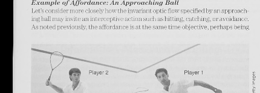</figure>
<p>bị ràng buộc bởi các quy tắc hoặc quy ước xã hội, và mang tính chủ quan, mời gọi một hành động cụ thể phụ thuộc vào nhận thức từ vị trí của một người trong môi trường và đặc điểm cơ sinh học của người đó (Fitch &amp; Turvey, 1978). Ví dụ, sự thay đổi trong dòng chảy cục bộ do một quả bóng squash đang tiến đến tạo ra có thể cho phép người chơi chặn bóng bằng cách vung vợt, nhưng không cho phép đánh mạnh. Với một kiểu dòng chảy cục bộ khác, thông tin có thể được cung cấp dẫn đến hành động né tránh, chẳng hạn như dịch ra khỏi đường bóng để tránh bị trúng.</p>
<p>Những khác biệt trong cấu trúc quang học quy định một cơ hội hành động khác nhau cho người chơi (tức là cơ hội hành động khách quan). Tuy nhiên, những thay đổi như nhau trong dòng chảy cục bộ có thể mang lại những hành động khác nhau tùy theo trạng thái của cá nhân. Ví dụ, về cuối một trận squash căng thẳng năm set, cơ hội hành động của một vận động viên có thể là để bóng đi qua vì bóng không thể với tới do mức độ mệt mỏi hiện tại của hệ cơ (cơ hội hành động chủ quan). Không có một chuẩn mực vật lý nào quy định cơ hội hành động cho mỗi người chơi. Khung tham chiếu của mỗi cá nhân để nhận thức và di chuyển sẽ bộc lộ cơ hội hành động trong từng tình huống. Về phương diện này, các cơ hội hành động có thể cung cấp một khung lý thuyết hữu ích để hiểu các mức độ ra quyết định và tính biến thiên vận động trong cá nhân và giữa các cá nhân, một khái niệm sẽ được xem lại ở chương 5. (Để thảo luận về các cơ hội hành động dựa trên ý tưởng của Gibson nhưng không đồng nghĩa với lý thuyết Gibson, xem Scarantino [2003]).</p>
<p>Điều chỉnh theo các cơ hội hành động của thông tin bất biến Giờ đây chúng ta có thể xem xét các khái niệm bất biến và cơ hội hành động của Gibson (1979) để hiểu cách ra quyết định và thực hiện vận động có thể diễn ra. Theo Gibson, nhiều thông tin hỗ trợ hành động luôn sẵn có và có thể được thu nhận trực tiếp trong môi trường nhờ sự phong phú của thông tin từ các giác quan. Trong lý thuyết nhận thức trực tiếp, người học squash không bị đặt gánh nặng là phải phát triển các cấu trúc bộ nhớ biểu tượng thông qua huấn luyện, mô phỏng quan sát và thi đấu; thay vào đó, các hệ thống nhận thức trở nên ngày càng điều chỉnh tinh vi với thông tin bất biến sẵn có trong môi trường thông qua trải nghiệm trực tiếp trong luyện tập và thực hiện. Với kinh nghiệm đặc thù cho nhiệm vụ, thông tin mà người học thu nhận trở nên tinh tế, phức tạp và chính xác hơn.</p>
<p>Vì vậy, một yếu tố quan trọng của tiếp thu kỹ năng là quá trình trở nên nhạy bén hơn với các cơ hội hành động của thông tin bất biến được nhận thức trong những ngữ cảnh vận động cụ thể. Sự nhận biết các cơ hội hành động mà nhiều chuyên gia đạt được có thể rất tinh tế trong nhiều ngữ cảnh thực hiện trình độ cao. Ví dụ, bằng chứng giai thoại từ bóng rổ chuyên nghiệp cho thấy những người xử lý bóng giỏi trở nên điều chỉnh tinh vi với thông tin về chuyển động của các đồng đội ngay sau lưng họ. Liệu họ có mọc thêm mắt ở sau gáy? Không hẳn. Để thu nhận dạng thông tin tinh vi này, họ chỉ đơn giản học cách phát hiện các cử động mắt đuổi theo của các tiền đạo đối phương ở phía trước mình.</p>
<p>Một quan niệm sai lầm phổ biến trong giới nghiên cứu là việc tuân theo thuyết nhận thức trực tiếp sẽ loại bỏ vai trò của các quá trình tư duy trong hành động. Tuy nhiên, Gibson (1979) không phủ nhận sự tồn tại của các quá trình tư duy như hồi tưởng, kỳ vọng, mộng tưởng và hình dung tinh thần. Ông cũng không khẳng định rằng trí nhớ không đóng vai trò gì trong nhận thức. Thay vào đó, quan điểm của ông có thể được hiểu theo nghĩa rằng mối quan hệ giữa người thực hiện và môi trường là quy mô phân tích phù hợp để xem xét vai trò tương tác của nhận thức, hành động và tư duy trong việc hỗ trợ hành vi. Gibson ít tập trung vào vai trò của các quá trình tinh thần được nội tâm hóa, mà thay vào đó ưu tiên nhấn mạnh những ý tưởng then chốt như bất biến thông tin và cơ hội hành động trong sự ghép nối trực tiếp giữa thông tin và vận động.</p>
<h3>Ghép nối thông tin–vận động</h3>
<p>Trước đây chúng ta đã thảo luận về cách một người chơi golf di chuyển để tạo ra những thay đổi trong dòng quang học nhằm cung cấp thông tin cho hành động. Chiến lược này minh họa cho một nguyên lý trung tâm trong các ý tưởng của Gibson (1979): vận động tạo ra thông tin, rồi thông tin này lại hỗ trợ các vận động tiếp theo, dẫn đến một mối quan hệ chu trình giữa nhận thức và vận động. Gibson đã tóm tắt lập trường này rằng &quot;chúng ta phải nhận thức để vận động, nhưng cũng phải vận động để nhận thức&quot; (p. 223). Theo các nhà tâm lý học sinh thái (ví dụ, Michaels &amp; Carello, 1981), việc dùng thông tin để hỗ trợ vận động đòi hỏi một quy luật kiểm soát liên tục liên kết trạng thái hiện tại của cá nhân với trạng thái của môi trường. Nói cách khác, một quy luật kiểm soát liên kết thuộc tính động lực của một vận động với thuộc tính động học của dòng nhận thức (Warren, 1988).</p>
<p>Bởi vì sự phụ thuộc lẫn nhau giữa việc nhận thức thông tin và việc tạo ra vận động đã tiến hóa trong các hệ thống thần kinh sinh học, người ta đã cho rằng không nên nghiên cứu riêng lẻ các quá trình này (Michaels &amp; Carello, 1981). Điều này có ý nghĩa quan trọng đối với việc tổ chức môi trường luyện tập và thiết kế các thí nghiệm nghiên cứu. Chỉ trong những bối cảnh luyện tập mà các quá trình nhận thức và hành động được ghép nối trong</p>
<p>Mắt ở phía sau đầu: Chuyển động mắt của các đối thủ mang lại cơ hội nhận thức về chuyển động của một đồng đội.</p>
<figure class="bookfig">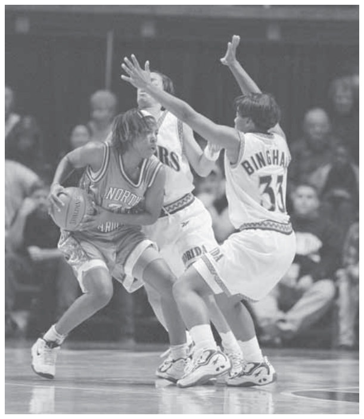</figure>
<p>những môi trường thực tế thì chúng ta mới quan sát được sự &quot;thông minh&quot; của các cơ chế nhận thức được thiết kế qua tiến hóa (xem Davids, Button, Araújo, Renshaw, &amp; Hristovski, 2006; Runeson, 1977). Trong ngữ cảnh này, &quot;thông minh&quot; đề cập đến chức năng chuyên biệt mà một cơ chế nhận thức đã tiến hóa để đảm nhiệm. Quan điểm về sự ghép nối chặt chẽ hình thành giữa các hệ thống nhận thức và hành động này mang lại nhiều hàm ý thú vị cho những người thực hành vận động, như chúng ta sẽ khám phá trong phần II. Để làm rõ những hàm ý này cho việc thiết kế các quy trình tiếp thu kỹ năng, chúng ta cần hiểu sự ghép nối được thiết kế theo chức năng giữa các quá trình nhận thức và hành động.</p>
<p>Các nghiên cứu ban đầu về giữ thăng bằng ở trẻ em và người lớn đã ủng hộ quan niệm về sự ghép nối chặt chẽ giữa mảng quang học và cá nhân (Lee &amp; Lishman, 1975). Trong một căn phòng được thiết kế riêng với sàn cố định và các bức tường có thể di chuyển, các nhà nghiên cứu đã gây ra sự dao động tư thế bằng cách di chuyển các bức tường chậm về phía trước hoặc phía sau. Hướng dao động của người tham gia phụ thuộc vào hướng di chuyển của các bức tường (xem hình 3.4). Dù người tham gia không nhận biết rằng các bức tường đang di chuyển, họ vẫn &quot;một cách vô ý thức và không thể tránh khỏi&quot; (p. 162) điều chỉnh tư thế để bù đắp cho cái mà họ nhận thức là chuyển động tự thân về phía trước hoặc phía sau (chuyển động của &quot;cái tôi&quot; trong không gian) do dòng quang học biểu thị. Mức độ di chuyển của tường có liên hệ chặt chẽ với mức độ dao động tư thế mà các đối tượng biểu hiện, và trong một số trường hợp trẻ nhỏ thậm chí còn ngã xuống. Những phát hiện này cho thấy tại sao chúng ta cần hiểu nhận thức và hành động như những quá trình đan xen về chức năng. Kể từ công trình ban đầu đó, các ý tưởng đã được phát-</p>
<p style="font-style:italic;color:#475569;font-size:.88rem">Hình 3.4: Không nhận biết rằng các bức tường đang di chuyển, các đối tượng trong thí nghiệm phòng dao động đã vô ý thức điều chỉnh tư thế để bù đắp cho cái mà họ nhận thức là chuyển động tự thân về phía trước hoặc phía sau do dòng quang học biểu thị.</p>
<p>Dòng ra Dòng vào</p>
<p>Dao động cơ thể Dao động cơ thể</p>
<p>Bức tường Bức tường</p>
<figure class="bookfig">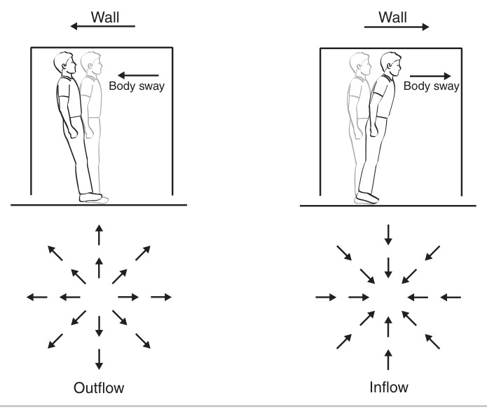<figcaption>Hình 3.4: Không nhận biết rằng các bức tường đang di chuyển, các đối tượng trong thí nghiệm phòng dao động đã vô ý thức điều chỉnh tư thế để bù đắp cho cái mà họ nhận thức là chuyển động tự thân về phía trước hoặc phía sau do dòng quang học biểu thị.</figcaption></figure>
<p>triển đến mức mà mô hình hóa hiện là ví dụ điển hình cho một chiến lược kiểm soát triển vọng, điều chỉnh hành động liên tục thông qua thông tin. Tiếp theo chúng ta làm nổi bật sự phát triển này bằng cách thảo luận về mô hình vận tốc yêu cầu.</p>
<p>Mô hình vận tốc yêu cầu: Kiểm soát triển vọng</p>
<p>Thí nghiệm kinh điển của Savelsbergh và các cộng sự (1991) đã thúc đẩy một loạt nghiên cứu kiểm tra liệu tau có phải là bất biến quang học duy nhất được dùng cho các hành động đón bắt hay không (xem Williams, Davids, &amp; Williams, 1999). Trong công trình tiếp theo, van der Kamp (1999) đã (1) bổ sung một quả bóng phồng thêm vào các quả bóng nhỏ, lớn và xẹp; (2) so sánh trực tiếp các điều kiện nhìn một mắt và hai mắt; (3) cho một vật thể tiếp cận theo quỹ đạo thẳng với hai vận tốc không đổi khác nhau (1,0 mét trên giây và 2,0 mét trên giây); và (4) tái tạo tốc độ giãn nở tương đối như một hàm của Tc thực tế nhằm so sánh định lượng sự khác biệt giữa các điều kiện.</p>
<p>Kết quả cho thấy việc thay đổi đường kính quả bóng trong lúc tiếp cận phần nào phù hợp với việc sử dụng tau. So với các quả bóng có đường kính không đổi, thời điểm bắt bóng (được mô tả bằng các biến số về thời điểm bắt đầu nắm, thời điểm khép tay và vận tốc khép tay cực đại) bị chậm lại đối với quả bóng xẹp. Thời điểm bắt bóng diễn ra sớm hơn đối với quả bóng phồng thêm. Không ghi nhận ảnh hưởng nào của kích thước vật thể, cách nhìn hay vận tốc tiếp cận khi so sánh hai quả bóng có đường kính không đổi. Tuy nhiên, nếu tốc độ giãn nở tương đối là nguồn thông tin duy nhất mà người bắt bóng sử dụng, thì độ lớn của các hiệu ứng quan sát được do quả bóng xẹp và quả bóng phồng thêm gây ra đối với thời điểm bắt bóng nhỏ hơn ba đến bốn lần so với độ lớn của các hiệu ứng dự đoán. Do đó, dù kết quả đi theo hướng như mong đợi, cho thấy người tham gia có thể đã sử dụng tau, nhưng chúng không phù hợp với việc chỉ dùng duy nhất tau. Hàm ý là chắc hẳn còn một số nguồn thông tin khác cũng đã tham gia.</p>
<p>Bootsma và Peper đã xem xét các nguồn thông tin thị giác tiềm năng khác cho việc điều chỉnh các hành động đón bắt (ví dụ, Bootsma, 1998; Bootsma, Fayt, Zaal, &amp; Laurent, 1997; Peper, Bootsma, Mestre, &amp; Bakker, 1994; nhưng cũng xem Schöner, 1994). Theo mô hình vận tốc yêu cầu của họ, việc bắt một quả bóng đòi hỏi cá nhân phải kiểm soát bàn tay. Đó là sự khác biệt giữa vị trí hiện tại của bàn tay đang bắt bóng so với quả bóng và gia tốc của bàn tay cần thiết để đón lấy quả bóng đang chuyển động, dựa trên một vi phân vận tốc được xác định quang học (xem phương trình ở trang 68 trong Peper, Bootsma, Mestre, &amp; Bakker, 1994). Mô hình của họ quy định cách một người có thể dùng thông tin liên tục để kiểm soát gia tốc của bàn tay và khớp vận tốc yêu cầu nhằm đón lấy một vật thể bay. Ví dụ, vận tốc hiện tại của bàn tay tại một thời điểm t nhất định có thể được tăng hoặc giảm để bàn tay di chuyển với vận tốc yêu cầu cần thiết để bắt bóng. Để giải thích thực hiện của các hành động đón bắt, theo truyền thống các chiến lược dự đoán đã được chỉ định trong các mô hình xử lý thông tin của người thực hiện. Trong các mô hình này, vị trí tương lai của mục tiêu và động học yêu cầu của các chi đều được ước tính trước khi vận động (ví dụ, Jeannerod, 1981).</p>
<p>Như phương trình dưới đây cho thấy, vận tốc yêu cầu có thể được biểu diễn như tỉ số giữa khoảng cách ngang hiện tại giữa bàn tay và mặt phẳng chiếu của quả bóng lên trục chuyển động của bàn tay với Tc bậc nhất giữa quả bóng và trục chuyển động của bàn tay (xem hình 3.5). Các thừa số ở vế phải của phương trình (tức là vi phân vận tốc) có thể được xác định quang học thông qua các biến nhìn một mắt và hai mắt (xem Laurent, Montagne, &amp; Durey, 1996).</p>
<p>X¨ h =  X· h req –  X· with X· h req = Xh – Xb</p>
<p>Tc1 where X¨ h , X</p>
<p>·   h req , và X ·   h lần lượt là gia tốc hiện tại, vận tốc yêu cầu hiện tại và vận tốc hiện tại của bàn tay, và  và  là các hằng số, và trong đó Xh , Xb , và Tc1 là vị trí hiện tại của bàn tay, phép chiếu vị trí hiện tại của quả bóng lên trục chuyển động của bàn tay, và Tc bậc nhất giữa quả bóng và trục chuyển động của bàn tay.</p>
<p style="font-style:italic;color:#475569;font-size:.88rem">Hình 3.5: Mô hình vận tốc yêu cầu cho rằng việc bắt bóng đòi hỏi người thực hiện phải kiểm soát gia tốc của bàn tay dựa trên một vi phân vận tốc được xác định quang học.</p>
<p>Người bắt bóng</p>
<p>Xball</p>
<p>Quả bóng</p>
<p>Xhand</p>
<p>Quỹ đạo quả bóng</p>
<p>Vận tốc yêu cầu (bàn tay) = Xhand - Xball</p>
<p>Tc1</p>
<figure class="bookfig">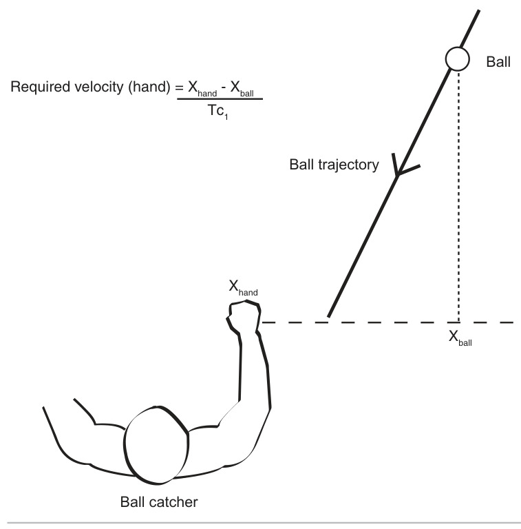<figcaption>Hình 3.5: Mô hình vận tốc yêu cầu cho rằng việc bắt bóng đòi hỏi người thực hiện phải kiểm soát gia tốc của bàn tay dựa trên một vi phân vận tốc được xác định quang học.</figcaption></figure>
<p>Việc tiếp cận các thuộc tính không gian–thời gian của điểm đón lấy với vật thể đang chuyển động — vốn cần thiết nếu dùng chiến lược kiểm soát dự đoán — không bao giờ là cần thiết với mô hình vận tốc yêu cầu. Thay vào đó, bằng cách điều chỉnh gia tốc của chi bằng thông tin quang học để đạt và duy trì vận tốc yêu cầu, chi sẽ di chuyển đến đúng nơi vào đúng thời điểm để bắt quả bóng đang tiến đến. Do đó, mô hình vận tốc yêu cầu là một bước tiến đáng hoan nghênh so với các công trình trước đó vốn chỉ giới hạn ở việc hiểu thời điểm của các hành động đón bắt.</p>
<p>Gần đây Montagne và các cộng sự đã báo cáo một số bằng chứng trực tiếp về việc sử dụng kiểm soát triển vọng (ví dụ, Montagne, Fraisse, Ripoll, &amp; Laurent, 2000; Montagne, Laurent, Durey, &amp; Bootsma, 1999). Trong một thí nghiệm được thiết kế để quan sát ảnh hưởng đến gia tốc của bàn tay, Montagne và các cộng sự (1999) đã thao túng khoảng cách ngang hiện tại giữa bóng và tay. Các đối tượng được yêu cầu bắt một quả bóng tiếp cận cùng một điểm đón lấy từ những điểm xuất phát khác nhau. Montagne và các cộng sự giả thuyết rằng động học của hành động bắt bóng sẽ giống nhau nếu dùng chiến lược dự đoán, vì tất cả quỹ đạo đều hội tụ về cùng một điểm, với cùng một Tc và cùng một độ dịch chuyển yêu cầu của bàn tay (đối với các điều kiện x và y). Tuy nhiên, nếu dùng chiến lược triển vọng, họ cho rằng sẽ tạo ra động học khác nhau, thể hiện rõ qua tỉ lệ đảo chiều vận động của bàn tay hoặc những thay đổi trong hướng ban đầu của bàn tay. Cụ thể, họ dự đoán rằng khi bàn tay được đặt tại điểm đón lấy, các đối tượng sẽ bắt đầu bằng cách di chuyển bàn tay để lấp đầy khoảng cách ngang (sang trái đối với góc hướng ra, sang phải đối với góc hướng vào). Chuyển động ban đầu này sẽ được theo sau bởi một sự đổi hướng để bắt bóng (gây ra sự đảo chiều vận động). Như đã dự đoán, họ phát hiện những khác biệt đáng kể về động học của hành động bắt bóng khi vị trí ban đầu của bàn tay và quỹ đạo bóng được thay đổi. Các đối tượng biểu hiện số lượng đáng kể các lần đảo chiều vận động đối với những quả bóng tiếp cận theo quỹ đạo hướng vào hoặc hướng ra thay vì đường thẳng (khoảng 60% tổng số lần thử). Hơn nữa, kết quả cho thấy họ bắt đầu di chuyển bàn tay với vận tốc yêu cầu vào khoảng 300 mili giây trước khi bắt bóng.</p>
<p>Liệu thông tin quang học Tc có được sử dụng không?</p>
<p>Các nghiên cứu đã chỉ ra rằng với những điều kiện biên nhất định, Tc bậc nhất giữa một vật thể đang tiến đến và điểm đón lấy có thể được xác định từ các bất biến trong mảng quang học và có thể được dùng để tạo hành vi định thời chính xác. Một giả định cơ bản của hướng nghiên cứu này là Tc bậc nhất được dùng để liên tục dẫn dắt chuyển động đang diễn ra. Người ta thường tìm kiếm sự ủng hộ cho việc sử dụng một nguồn thông tin quang học cụ thể bằng cách tìm thời điểm không đổi của các khía cạnh then chốt của chuyển động trong những điều kiện mà thông tin đó được thao túng trong thí nghiệm (tức là vận tốc tiếp cận, kích thước vật thể, nhìn một mắt và hai mắt).</p>
<p>Dựa trên phát hiện rằng chuyển động thường diễn ra sớm hơn và chậm hơn khi thời gian Tc tăng lên, Tresilian (1999) cũng đã đề xuất rằng cần xem xét một chiến lược linh hoạt hơn để sử dụng thông tin Tc cần được xem xét. Thay vì khởi phát vận động tại những giá trị Tc không đổi, Tresilian cho rằng dù vận động có thể được điều chỉnh bằng Tc, giá trị được chọn sẽ thay đổi tùy theo các ràng buộc của việc thực hiện và các yếu tố nội tại. Có những biến thiên tinh tế có thể ảnh hưởng đến một hành động cơ bản bị chi phối bởi nhu cầu, ý định hay cảm xúc tức thời của cá nhân tại thời điểm thực hiện (ví dụ, khi bạn thực sự cần bắt lấy một vật, như một món đồ thủy tinh quý giá, so với khi bạn chỉ cần ngăn nó đi ngang qua mình, chẳng hạn như thuận tay đón lấy món đồ chơi nhựa của trẻ đang lăn trên sàn). Tùy theo những ràng buộc này, các khía cạnh của một vận động có thể được &quot;khởi phát sớm hơn hoặc muộn hơn, tùy vào việc điều đó có tạo thuận lợi cho thực hiện hay không&quot; (p. 516). Những giải thích này dường như nắm bắt được cách các ràng buộc nhiệm vụ và ràng buộc sinh thể ảnh hưởng đến cách người ta tiếp thu và sử dụng thông tin để hỗ trợ các kỹ năng vận động.</p>
<p>Nếu một người gán nhầm thuộc tính động học của dòng nhận thức (tức là Tc), thì các nỗ lực khám phá các quy luật kiểm soát hay chiến lược liên kết thông tin với vận động có thể gặp nhiều khó khăn. Do đó, cần xem xét các ràng buộc cụ thể của nhiệm vụ thí nghiệm đang được nghiên cứu. Tresilian (1999) đã gợi ý rằng một yếu tố quan trọng quyết định việc sử dụng thông tin Tc là cửa sổ thời gian cho thực hiện thành công (tức là độ chính xác thời gian cần thiết). Các nhiệm vụ có biên độ sai số trong khoảng 2 đến 25 mili giây (ví dụ, bắt bóng bằng một tay, bóng bàn, đánh bóng cricket) đòi hỏi thông tin chính xác về cú chạm sắp xảy ra và vì thế có khả năng được điều chỉnh bằng thông tin Tc. Tuy nhiên, các nhiệm vụ có cửa sổ thời gian kém chính xác hơn (ví dụ, dáng đi hoặc cú lộn mình khi bơi), thường có thời gian vận động tương đối dài (tức là &gt;500 mili giây) và thời gian nhìn vào mục tiêu (tức là &gt;300 mili giây), thì không nhất thiết được điều chỉnh bằng Tc. Cuối cùng, các nhiệm vụ không áp đặt cửa sổ thời gian chính xác cho thực hiện thành công (ví dụ, hành vi né tránh) và có thể được khởi phát rất sớm mà vẫn thành công có thể không cần dùng đến Tc.</p>
<p>Tóm lại, nhiều kết quả nghiên cứu về thông tin thị giác cho các hành động đón bắt phù hợp với việc người thực hiện nhận thức thông tin từ các bất biến và biến thể trong mảng quang học và dùng nó để dẫn dắt sự tương tác của họ với môi trường. Họ có thể nắm bắt các bất biến này như những cơ hội hành động tương tác với các thuộc tính then chốt của hệ thống vận động của mỗi cá nhân, chẳng hạn như chiều dài chi. Việc ghép nối các hệ thống nhận thức với các hệ thống vận động có thể diễn ra từ khi còn nhỏ và có thể được tăng cường thông qua luyện tập. Nó cũng có thể được định hình bởi những nhu cầu, ý định và hoàn cảnh cảm xúc cụ thể của việc thực hiện.</p>
<p>Bộ não thị giác trong hành động</p>
<p>Bằng chứng về sức mạnh của các sự ghép nối đã được hình thành giữa các hệ thống nhận thức và vận động đến từ các nghiên cứu trong khoa học thần kinh hành vi. Những nghiên cứu này cũng làm rõ cách các ràng buộc ý định của mỗi người tương tác với các ràng buộc thông tin đối với hành động. Bởi vì chúng ta cần những loại thông tin thị giác khác nhau để hỗ trợ sự đa dạng phong phú của các nhiệm vụ ta thực hiện, não bộ của chúng ta được cấu thành từ nhiều phân vùng chức năng (xem Harris &amp; Jenkin, 1998). Có lẽ phân vùng chức năng được biết đến rộng rãi nhất trong số này là hệ thống thị giác kép (Milner &amp; Goodale, 1995), trong đó sự phân chia chức năng nằm giữa nhận thức để hành động (tức là hành động hướng đến vật thể) và nhận thức để nhận diện (tức là nhận thức vật thể). Theo sơ đồ này, thông tin được truyền qua nhân gối ngoài đến vỏ não thị giác chính (V1), từ đó dòng thùy dưới chiếu đến vỏ não thái dương dưới và dòng thùy trên chiếu đến vỏ não đỉnh sau (xem hình 3.6). Một kết nối khác đến vỏ não đỉnh sau đã được xác định từ pulvinar qua colliculus trên.</p>
<p>Milner và Goodale (1995) đã dựa trên các nghiên cứu về động vật có xương sống, linh trưởng, bệnh nhân suy giảm não bộ và các nghiên cứu về ảo giác hình ảnh để đưa ra một lập luận toàn diện cho một vai trò đa dạng hơn của hệ thống thị giác. Có lẽ bằng chứng thuyết phục nhất ủng hộ hệ thống thị giác kép đến từ các nghiên cứu trên bệnh nhân tổn thương não. Goodale, Milner, Jackobson, and Carey (1991) và Milner và các cộng sự (1991) đã mô tả trường hợp của một bệnh nhân, DF, người bị tổn thương não chủ yếu ở vùng chẩm, cụ thể là V2, V3 và V4. Họ lưu ý rằng bệnh nhân DF có nhiều khiếm khuyết trong nhận thức thị giác, bao gồm phân biệt các hình dạng hình học và nhận diện chữ cái và con số. Những rối loạn như vậy đã được mô tả là agnosia hình dạng thị giác hoặc mù thị giác (blindsight). Tuy nhiên, khi thực sự thực hiện các nhiệm vụ vận động như nắm lấy vật thể, bệnh nhân DF lại không gặp phải những khó khăn tương tự. Milner và Goodale (1995) cho rằng</p>
<p style="font-style:italic;color:#475569;font-size:.88rem">Hình 3.6: Trong hệ thống thị giác kép, thông tin được truyền qua nhân gối ngoài đến V1. Từ V1, dòng thùy dưới chiếu đến vỏ não thái dương dưới và dòng thùy trên chiếu đến vỏ não đỉnh sau.</p>
<p>Dòng thùy trên</p>
<p>Dòng thùy dưới</p>
<p>Vỏ não thị giác chính</p>
<figure class="bookfig">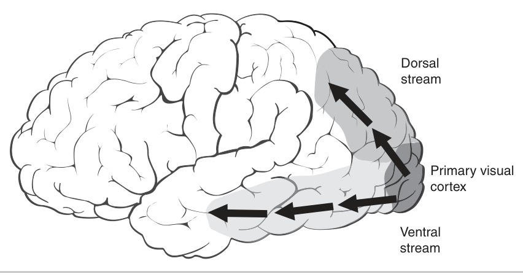<figcaption>Hình 3.6: Trong hệ thống thị giác kép, thông tin được truyền qua nhân gối ngoài đến V1. Từ V1, dòng thùy dưới chiếu đến vỏ não thái dương dưới và dòng thùy trên chiếu đến vỏ não đỉnh sau.</figcaption></figure>
<p>hiện tượng nghịch lý rõ rệt này xảy ra vì đường thùy dưới bị tổn thương không thể hỗ trợ nhận thức vật thể, nhưng đường thùy trên còn nguyên vẹn lại có thể xử lý thông tin cần thiết để hỗ trợ hành động.</p>
<p>Các nghiên cứu xem xét ảnh hưởng của các ảo giác hình ảnh như ảo giác Ebbinghaus (ví dụ, Aglioti et al., 1995) và ảo giác Müller-Lyer (ví dụ, Gentilucci, Chieffi, Daprati, Saetti, &amp; Toni, 1996) cũng được hiểu là ủng hộ sự phân chia chức năng của hệ thống thị giác kép. Ví dụ, trong các thí nghiệm dùng ảo giác Ebbinghaus, người tham gia được yêu cầu nhận thức kích thước của</p>
<p style="font-style:italic;color:#475569;font-size:.88rem">Hình 3.7: Trong ảo giác Ebbinghaus, hình tròn A và B có cùng kích thước, nhưng hình tròn B trông có vẻ nhỏ hơn.</p>
<figure class="bookfig">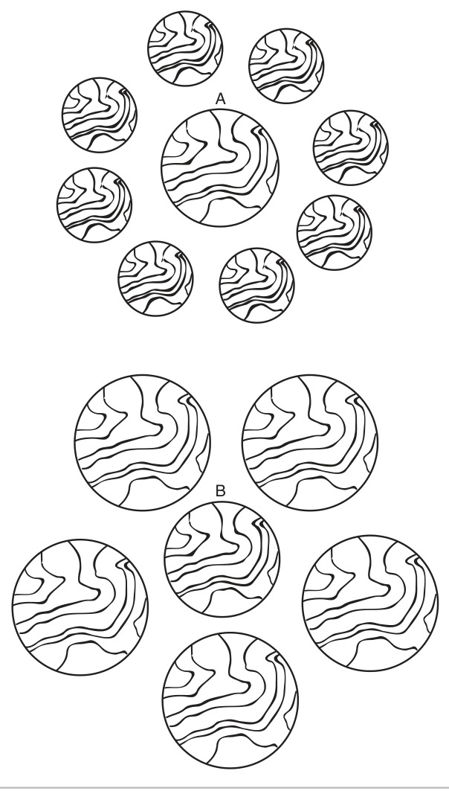<figcaption>Hình 3.7: Trong ảo giác Ebbinghaus, hình tròn A và B có cùng kích thước, nhưng hình tròn B trông có vẻ nhỏ hơn.</figcaption></figure>
<p>hai đĩa tròn trung tâm, mỗi đĩa được bao quanh bởi một vòng các đĩa tròn (xem hình 3.7). Khi kích thước của các đĩa bao quanh được thay đổi, người tham gia thường nhận thức sai kích thước của các đĩa trung tâm. Tuy nhiên, dù phán đoán nhận thức của họ bị lừa, độ mở của nắm tay vẫn được điều chỉnh theo kích thước thực tế của đĩa trung tâm. Những kết quả này gợi ý rằng, dù quá trình nhận thức vật thể bị ảo giác đánh lừa, các quá trình hành động hướng đến vật thể vẫn không bị ảnh hưởng (Aglioti et al., 1995; Haffenden &amp; Goodale, 1998; Hanisch, Konczak, &amp; Dohle, 2001; Pavani, Boscagli, Benvenuti, Rabuffetti, &amp; Farnè, 1999).</p>
<p>Decety và Grèzes (1999) nhận thấy rằng sự phân chia chức năng giữa dòng thùy dưới và dòng thùy trên có xu hướng không được quan sát thấy (tức là cả hai vùng đều hoạt động) khi không có ràng buộc nào được áp đặt cho thực hiện một nhiệm vụ nhận thức. Tuy nhiên, dưới những ràng buộc nhiệm vụ cụ thể như nhận thức để hành động hay nhận thức để nhận diện, sự khác biệt trở nên rõ rệt hơn. Do đó, theo hệ thống thị giác kép, bản chất của thông tin thị giác ta dùng phụ thuộc vào điều ta định làm với thông tin đó. Ví dụ, dòng thùy dưới chiếm ưu thế trong việc thu nhận thông tin nhận thức khi ta thực hiện một nhiệm vụ nhận diện thị giác, nhưng dòng thùy trên lại chiếm ưu thế khi ta thực hiện một vận động phối hợp được ghép nối với một nguồn thông tin (ví dụ, một hành động đón bắt). Hàm ý của những phát hiện này là thực hiện của nhiều nhiệm vụ tâm vận động đòi hỏi phán đoán về thời điểm tiếp xúc sắp xảy ra có thể phụ thuộc vào thông tin thị giác được nắm bắt qua dòng thùy dưới. Tuy nhiên, các hành động đón bắt trong thế giới thực đòi hỏi sự ghép nối chặt chẽ giữa một vận động với một vật thể hay sự kiện trong môi trường có khả năng phụ thuộc vào thông tin thị giác được nắm bắt qua dòng thùy trên.</p>
<p>Cho đến nay chúng ta đã tập trung vào cách các bất biến được phát hiện trong dòng quang học bao quanh một người. Tuy nhiên, còn có những dòng năng lượng khác hỗ trợ hành động. Ví dụ, một người lái xe có thể dùng thông tin âm thanh từ tiếng máy liên tục tăng tốc để dẫn dắt sự thay đổi áp lực cần thiết trên bàn đạp ga. Một người đi bộ có thể dùng thông tin âm thanh từ tiếng chuông của chiếc xe đạp đang tiến đến để nhận thức thông tin về quỹ đạo tiếp cận của nó. Một người chơi quần vợt có thể cầm và lắc vợt để kiểm tra cảm giác trước khi lên sân. Trong phần còn lại của chương này, chúng ta xem xét vai trò của thông tin xúc giác (chạm) và âm thanh.</p>
<h3>Ràng buộc thông tin xúc giác</h3>
<h3>đối với vận động</h3>
<p>Một lĩnh vực nghiên cứu nhỏ nhưng quan trọng đã xem xét vai trò của thông tin xúc giác trong việc ràng buộc các vận động. Khi một người cầm một dụng cụ như bút, cọ vẽ hay gậy bóng chày, thông tin về hình dạng, kích thước, kết cấu bề mặt và cấu trúc của nó được cung cấp qua xúc giác khi cơ, dây chằng, gân, và da bị kéo dãn hay ép lại. Bằng hệ thống nhận thức này, một người mù đi dọc phố và quét gậy để điều chỉnh dáng đi một cách triển vọng có thể tạo ra dòng xúc giác. Gibson (1979) đề xuất rằng thông tin xúc giác hữu ích nhất ở dạng động khi người ta chủ động tạo ra các nguồn thông tin phức tạp thông qua thao tác và chạm. Nhiều thí nghiệm của Gibson và các cộng sự đã tìm thấy nhiều điểm tương đồng giữa các hệ thống thu nhận thông tin từ dòng quang học và dòng xúc giác, ủng hộ sức mạnh của nhận thức qua dòng xúc giác (Gibson, 1979). Thực tế, sự phổ biến của các vận động thao tác trong đời sống hàng ngày đã khiến Turvey, Burton, Amazeen, Butwill, and Carello (1998) lập luận rằng &quot;vai trò của xúc giác động trong kiểm soát hoạt động thao tác có thể vừa liên tục hơn vừa cơ bản hơn vai trò của thị giác&quot; (p. 35).</p>
<p>Người ta cũng có thể thu nhận thông tin xúc giác về khối lượng của một dụng cụ thông qua thao tác chủ động. Ví dụ, một vận động viên thường không cầm một dụng cụ như vợt, gậy bóng chày, gậy golf hay gậy theo cách tĩnh, mà có xu hướng vung nó (Beak, Davids, &amp; Bennett, 2002). Vận động viên xoay và trở dụng cụ theo các hướng khác nhau để thu nhận thông tin về những thuộc tính quan trọng của nó. Một vật được vung có sức cản với sự quay theo các hướng khác nhau, được xác định bởi mô men quán tính. Mô men quán tính là tích của khối lượng dụng cụ và bán kính quay (tức là I = mr2) và có thể bất biến đối với những tổ hợp khác nhau của các biến này. Solomon và Turvey (1988) đã chỉ ra rằng nhận thức về đặc điểm không gian của các thanh cầm tay không bị ảnh hưởng bởi mật độ của thanh, hướng vung tương đối với tọa độ cơ thể, hay tốc độ vung. Thay vào đó, khi không nhìn thấy thanh trong lúc vung, khoảng cách với tới được nhận thức đã được xác định bởi</p>
<p>Các vận động viên thường xoay và trở dụng cụ của họ theo các hướng khác nhau để thu nhận thông tin về những thuộc tính quan trọng của nó.</p>
<figure class="bookfig">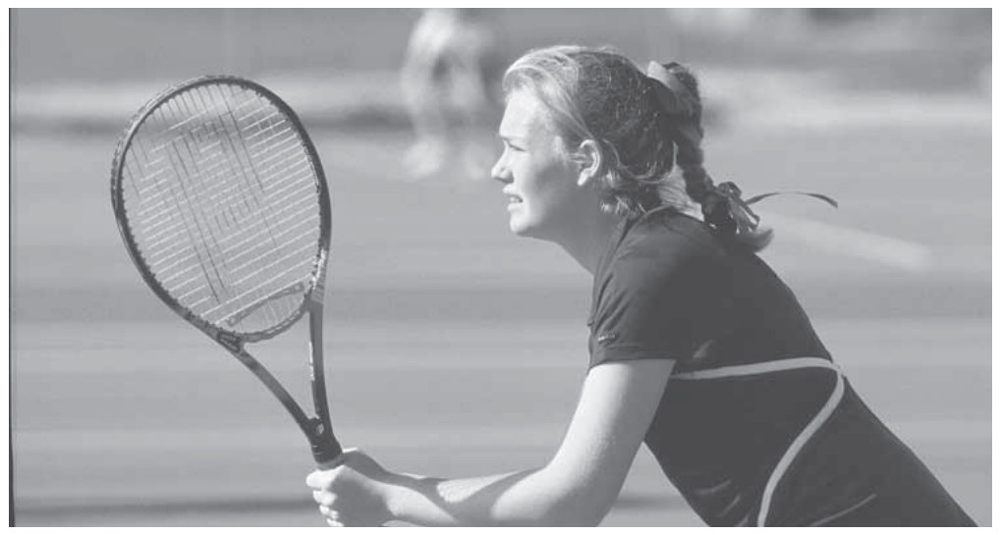</figure>
<p>bởi một bất biến xúc giác, mô men quán tính chính của hệ thống tay–thanh quay quanh trục quay (xem thêm Beak et al., 2002; Carello, Thuot, &amp; Turvey, 2000; Turvey, 1996). Trong một môn thể thao như golf, bằng chứng này gợi ý vai trò quan trọng hơn nhiều của việc thực hiện một cú vung thử thay vì chỉ tập dượt một vận động sắp tới. Bằng cách này, người ta có thể tự điều chỉnh để nhạy với đặc điểm của dụng cụ họ đang dùng khi chơi với thiết bị lạ hoặc chuyển đổi giữa các gậy. Có nhiều ví dụ trong thể thao cho thấy vận động viên có thể thu nhận thông tin xúc giác từ một vật thể, chẳng hạn như tung bóng đá trước khi sút phạt, vung lao trước khi ném, và thao tác với sào trước khi nhảy vượt. Như Button và Pepping (2002) đã gợi ý, cần thêm nghiên cứu để xem xét các chiến lược luyện tập giúp người học nhạy bén hơn với thông tin xúc giác.</p>
<h3>Ràng buộc thông tin âm thanh</h3>
<h3>đối với vận động</h3>
<p>Bằng chứng cho thấy các dòng thông tin âm thanh ở người có thể điều chỉnh nhiều vận động chức năng (Button, 2002; Button &amp; Davids, 2004; Lee, 1990). Thực tế, Keele và Summers (1976) đã gợi ý từ nhiều năm trước rằng xét về tổ chức thời gian của các vận động, hệ thống nhận thức âm thanh có thể vượt trội hơn hệ thống thị giác. Ví dụ, các nhạc công bộ gõ phải học cách định thời và sắp xếp trình tự các vận động phức tạp bằng cả hai tay với thông tin âm thanh để chơi hiệu quả. Trong thể thao, có rất nhiều bằng chứng giai thoại làm nổi bật vai trò của thông tin âm thanh như một ràng buộc đối với sự phối hợp của các nhiệm vụ vận động rời rạc. Ví dụ, phản ứng của vận động viên chạy bộ trước tiếng súng lệnh xuất phát là yếu tố then chốt của chạy nước rút, vì sự khác biệt giữa thắng và thua có thể chỉ là vài mili giây.</p>
<p>Vai trò của thông tin âm thanh không chỉ giới hạn ở việc khởi phát vận động; nó cũng có thể được dùng trong các quá trình ra quyết định như chọn cú đánh trong các môn thể thao dùng vợt. Ví dụ, trong bóng bàn, âm thanh đặc trưng của cú chạm giữa vợt và bóng có thể cung cấp cho người chơi giàu kinh nghiệm thông tin quan trọng về tốc độ và độ xoáy của quả bóng đang tiến đến. Trong bóng chuyền, nhiều huấn luyện viên tin rằng thông tin về ý định của chuyền bóng đối phương thực hiện cú chuyền ngắn trên đầu hay cú chuyền dài cho tay đấm biên có thể thu được từ thông tin âm thanh trong lúc bóng chạm ngón tay. Một số vận động viên bơi lội hiện huấn luyện với thiết bị nhịp nhỏ đặt bên tai để điều chỉnh nhịp của một cú bơi.</p>
<p>Nghiên cứu thực nghiệm về thông tin âm thanh</p>
<p>Dù có rất nhiều bằng chứng giai thoại, vẫn có ít nỗ lực thực nghiệm nhằm điều tra cách thông tin âm thanh đóng vai trò như một ràng buộc trong tiếp thu kỹ năng. Một số bằng chứng cho thấy thông tin âm thanh có thể thu được từ một quả bóng nảy lên trong nhận thức về tính đàn hồi của nó (ví dụ, Warren, Kim, &amp; Husney, 1987). Thường thì các nghiên cứu đã xem xét vai trò của thông tin âm thanh trong việc phối hợp và định thời các hành động liên quan đến các sự kiện môi trường. Ví dụ, Shaw, McGowan, and Turvey (1991) đã mô hình hóa một biến âm thanh xác định Tc với một vật thể đang tiến đến, với những điều kiện biên nhất định. Họ chỉ ra rằng nghiên cứu ban đầu về thông tin âm thanh tập trung vào việc định vị các nguồn âm tĩnh thay vì nỗ lực xác định cách các hành động có thể được dẫn dắt bằng âm thanh. Họ xác định nhiệm vụ sau trong khuôn khổ âm thanh học sinh thái và xem xét sự hội tụ giữa người thực hiện và một nguồn âm. Dữ liệu của họ ủng hộ ý tưởng rằng cường độ âm thanh có thể được dùng để di chuyển trực tiếp về phía một mục tiêu trong môi trường, đặc biệt nếu sự khác biệt về thời gian giữa người và nguồn âm là tối thiểu.</p>
<p>Schiff và Oldak (1990) cùng Rosenblum, Carello, and Pastore (1987) cũng đã đưa ra bằng chứng thực nghiệm ủng hộ việc dùng mảng âm thanh để hỗ trợ hành động. Schiff và Oldak nhận thấy những người có thị lực bình thường có thể đưa ra phán đoán hợp lý về thời điểm vật thể đang tiến đến đi ngang qua chỉ bằng thính giác. Những người tham gia mù bẩm sinh chính xác hơn</p>
<p>Để chơi hiệu quả, các nhạc công bộ gõ dùng thông tin âm thanh để định thời và sắp xếp trình tự các vận động phức tạp bằng cả hai tay.</p>
<p>© Bloomimage/Corbis</p>
<figure class="bookfig restored">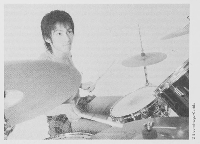</figure>
<p>những người có thị lực bình thường trong các phán đoán âm thanh và đạt độ chính xác ngang bằng những người có thị lực bình thường dùng phán đoán thị giác. Hơn nữa, Rosenblum và các cộng sự nhận thấy sự thay đổi tăng dần về cường độ của một nguồn thông tin âm thanh là bất biến hiệu quả nhất để xác định thời điểm một vật thể đang phóng đại đến nơi.</p>
<p>Thông tin âm thanh cho các hành động đón bắt</p>
<p>Những phát hiện này cho thấy tầm quan trọng của thông tin âm thanh trong việc đưa ra phán đoán về các vật thể đang tiến đến. Trong các hoạt động hằng ngày, chúng ta thường tích hợp các dạng thông tin âm thanh và quang học để đáp ứng các sự kiện môi trường (ví dụ, Netelenbos &amp; Savelsbergh, 2003). Người khiếm thính không thể hoặc chỉ có thể rất hạn chế nhận thức âm thanh. Một nghiên cứu của Savelsbergh, Netelenbos, and Whiting (1991) đã kiểm tra sự khác biệt về khả năng bắt bóng giữa trẻ khiếm thính và trẻ nghe bình thường. Họ nhận thấy trẻ khiếm thính có thể đáp ứng các ràng buộc nhiệm vụ của việc bắt bóng bằng một tay cũng tốt như trẻ nghe bình thường. Tuy nhiên, các em gặp khó khăn khi bắt những quả bóng tiến đến từ ngoại vi hoặc từ bên ngoài trường thị giác. Ngoài ra, trẻ khiếm thính có thời điểm khởi phát chuyển động bắt bóng muộn hơn sau khi bóng được phóng ra từ máy. Tuy nhiên, không ghi nhận sự khác biệt về tổng thời gian vận động giữa trẻ khiếm thính và trẻ nghe bình thường. Trẻ khiếm thính biểu hiện một số bù trừ trong sự phối hợp giữa giai đoạn đưa tay và giai đoạn nắm. Điều này có thể do thiếu thông tin âm thanh về thời điểm vật thể bay được phóng ra, gây ra sự tổ chức lại chức năng của mẫu hình vận động. Một công trình khác của Kalkavan và Fazey (1994) nhận thấy rằng khi không có thị giác, những người bắt bóng giàu kinh nghiệm vẫn có thể thực hiện thành công các hành động đón bắt, miễn là có thông tin âm thanh liên tục từ chuyển động của bóng.</p>
<p>Cobner và Cardiff (1980) đã kiểm tra liệu nhận thức âm thanh có đóng góp vào thực hiện cú thuận tay trong bóng bàn hay không. Họ loại bỏ thông tin âm thanh bằng cách yêu cầu những người chơi mới tập chơi khi đeo tai nghe phát tiếng ồn trắng. Độ chính xác thực hiện giảm đáng kể trong những khối thử nghiệm mà thông tin âm thanh bị loại bỏ. Dữ liệu tự báo cáo bằng lời của người tham gia cho thấy &quot;thời điểm chung của các cú đánh có xu hướng xấu đi khi không có tín hiệu âm thanh&quot; (p. 71). Tuy nhiên, trong tất cả các nghiên cứu này, kể cả Savelsbergh, Netelenbos, and Whiting (1991), đều thiếu một phân tích động học chi tiết về sự phối hợp thời gian của các hành động đón bắt.</p>
<p>Một số nghiên cứu đã nỗ lực thực hiện nhiệm vụ này. Ví dụ, Holder (1998) đã kiểm tra sự phối hợp của cú đẩy thuận tay trong bóng bàn ở những người tham gia thành thạo bằng cách thao túng thông tin âm thanh từ vợt của người cung cấp bóng. Ông nhận thấy độ chính xác về vị trí đặt bóng của cú đánh giảm trong điều kiện không có âm thanh. Phân tích trong từng cá nhân cho thấy tính biến thiên của thời gian đạt vận tốc cổ tay cực đại tăng lên khi thông tin âm thanh bị nhiễu loạn, được ước tính bằng sự gia tăng độ lớn của độ lệch chuẩn. Một nghiên cứu về bắt bóng của Button (2002) đã kiểm tra liệu sự nhiễu loạn các ràng buộc thông tin âm thanh tại thời điểm bóng được phóng ra (tức là tiếng của máy phóng bóng) có dẫn đến sự điều chỉnh ở những người bắt bóng hay không. Thông tin âm thanh từ máy phóng có mặt trong điều kiện đối chứng nhưng bị loại bỏ trong điều kiện thử nghiệm (không có âm thanh), nơi người tham gia đeo nút tai bằng bọt và tai nghe phát tiếng ồn trắng.</p>
<p>Sự tương tự về số lần bắt bóng thành công trong cả hai điều kiện là đặc điểm nổi bật của dữ liệu. So sánh giữa hai điều kiện cho tất cả người tham gia cho thấy 12 trong 160 lần thử (7,5%) bị rơi trong điều kiện có âm thanh, trong khi chỉ 6 lần thử (3,25%) bị rơi trong điều kiện không có âm thanh. Ở điều kiện không có âm thanh, vận tốc mở tối đa (MOV) của bàn tay nhìn chung tăng lên (345 milimet trên giây) so với điều kiện có âm thanh (260 milimet trên giây). Một hiệu ứng nhóm khác cho thấy vận tốc khép tối đa (MCV) của bàn tay cũng tăng lên ở điều kiện không có âm thanh (366 so với 269 milimet trên giây). Thời điểm đạt MOV và MCV của bàn tay trước khi bóng chạm tay cũng được so sánh trong cả hai điều kiện. Phép so sánh này cho thấy MCV xảy ra sớm hơn trong điều kiện không có âm thanh (0,17 giây trước khi tay chạm bóng, so với 0,12 giây). Thời điểm MOV cũng xảy ra sớm hơn trong điều kiện không có âm thanh (0,37 giây trước khi tay chạm bóng, so với 0,32 giây).</p>
<p>Sự tổ chức lại các mẫu hình vận động được quan sát ở những người bắt bóng thành thạo đã xác nhận rằng thông tin âm thanh từ máy phóng bóng tại thời điểm phóng, cùng với thông tin thị giác về quả bóng, cũng góp phần vào nhận thức thông tin định thời. Trong nghiên cứu đó, thông tin âm thanh cung cấp thông tin định thời tiềm năng vào khoảng 100 mili giây trước khi bóng bay. Phát hiện nhất quán nhất là người tham gia nói chung khởi phát vận động muộn hơn trong điều kiện không có âm thanh. Sự điều chỉnh ở cả MCV và MOV dưới các ràng buộc thông tin không âm thanh dường như là do sự gia tăng thời gian khởi phát vận động. Bởi vì thông tin âm thanh tại thời điểm phóng là ràng buộc duy nhất được thao túng trong thiết lập thử nghiệm, nên có khả năng người tham gia đã dùng nó để định thời cho sự khởi phát vận động.</p>
<h3>Tóm tắt</h3>
<p>Theo tâm lý học sinh thái, những thay đổi về năng lượng trong các mảng nhận thức bao quanh được tạo ra sau chuyển động của bản thân hoặc của vật thể có thể cung cấp thông tin mà con người nhận thức trực tiếp để điều chỉnh hành động (ví dụ, xem Gibson, 1979; Kugler &amp; Turvey, 1987; Turvey, 1990). Cách quan niệm này về mối quan hệ chu trình giữa nhận thức và vận động đối lập rõ rệt với quan điểm trung gian truyền thống về nhận thức được đề xuất trong tiếp cận xử lý thông tin (xem chương 1). Một hệ quả của cách giải thích sinh thái là không nên nhìn nhận nhận thức và vận động như những quá trình riêng biệt để nghiên cứu độc lập. Trong nỗ lực thiết lập các quy luật kiểm soát cho mối quan hệ chu trình này, nghiên cứu sinh thái đã xem xét bản chất của thông tin điều chỉnh vận động (tức là thông tin gì), thay vì lượng thông tin tối thiểu cần thiết để hoàn thành thành công một nhiệm vụ (điển hình của tiếp cận tâm lý vật lý). Tùy theo bản chất của các ràng buộc nhiệm vụ, dường như có nhiều biến thông tin khác nhau mà con người có thể dùng. Các ràng buộc nhiệm vụ, chẳng hạn như cửa sổ thời gian để thực hiện nhiệm vụ, và bản chất của phản ứng yêu cầu, chẳng hạn như vận động nhanh hay phán đoán bằng lời nói hoặc bằng tay, quyết định chiến lược người ta dùng và do đó quyết định thông tin họ dùng để hỗ trợ hành động.</p>
<p>Những ví dụ từ nghiên cứu về các hành động đón bắt mà chúng ta đã trình bày ở đây cho thấy con người rất tài tình trong việc thu nhận các loại thông tin khác nhau và khai thác các nguồn này để phối hợp các bậc tự do của hệ thống vận động.</p>
<p>CÂU HỎI TỰ KIỂM TRA</p>
<p>1. Hãy liệt kê một số dòng thông tin mà người chơi khúc côn cầu trên băng có thể sử dụng khi họ trượt trên băng cùng quả puck.</p>
<p>2. Hãy giải thích tại sao thông tin được quan niệm là phong phú và giàu ý nghĩa trong tâm lý học sinh thái.</p>
<p>3. Khái niệm cơ hội hành động có thể giúp giải thích sự khác biệt giữa các cá nhân về phối hợp như thế nào?</p>
<p>4. Một người đang phục hồi sau chấn thương bong gân mắt cá chân cần vận động để nhận thức thông tin như thế nào và tại sao?</p>
<p>5. Hãy thảo luận tại sao một hành động đón bắt như đóng đinh lại khó có thể thực hiện chỉ bằng tau quang học.</p>
<p>6. Hãy thiết kế một thí nghiệm để kiểm tra mô hình hệ thống thị giác kép của Milner và Goodale (1995). (Gợi ý: Hãy nghĩ đến một nhiệm vụ trong đó nhận thức để hành động hoặc nhận thức để nhận diện có thể được thực hiện độc lập).</p>
<p>ĐỌC THÊM</p>
<p>1. Gibson, J.J. (1979). The ecological approach to visual perception. Boston: Houghton Mifflin.</p>
<p>2. Michaels, C.F., Withagen, R., Jacobs, D.M., Zaal, F.T.J.M., &amp; Bongers, R.M. (2001). Information, perception, and action: A reply to commentators. Ecological Psychology, 13(3), 227-244.</p>
<p>3. Milner, A.D., &amp; Goodale, M.A. (1995). The visual brain in action. Oxford: Oxford University Press.</p>
<p>4. Scarantino, A. (2003). Affordances explained. Philosophy of Science, 70, 949-961.</p>
<p>5. Tresilian, J.R. (1999). Analysis of recent empirical challenges to an account of interceptive timing. Perception &amp; Psychophysics, 61(3), 515-528.</p><h2 class="chapter-title">Chương 4 — Định nghĩa lại học tập: tiếp cận dựa trên rào cản/giới hạn</h2><h2>Định nghĩa lại việc học</h2>
<h3>Tiếp cận dựa trên rào cản/giới hạn</h3>
<p>DÀN Ý CHƯƠNG</p>
<p>Cảnh quan nhận thức–vận động</p>
<p>Mô hình học vận động của Newell</p>
<p>Lắp ráp một mẫu hình phối hợp: Giai đoạn 1 Đạt được sự kiểm soát một cấu trúc phối hợp:</p>
<p>Giai đoạn 2 Tối ưu hóa thành thạo sự kiểm soát: Giai đoạn 3</p>
<p>Các vấn đề thực tiễn của việc học</p>
<p>Duy trì Chuyển giao Thay đổi kỹ thuật</p>
<p>Vai trò của người thực hành vận động: Sư phạm phi tuyến</p>
<p>Những người thực hành không can thiệp</p>
<p>Tóm tắt</p>
<h3>CHƯƠNG 4 CHƯƠNG 4</h3>
<p>© Eyewire/Photodisc/Getty Images</p>
<figure class="bookfig"></figure>
<p>Trong các chương 2 và 3, chúng ta đã thảo luận các nguyên lý then chốt của lý thuyết hệ thống động lực và tâm lý học sinh thái. Một quan điểm được chấp nhận rộng rãi trong giới nghiên cứu về tiếp thu kỹ năng là, so với sự phát triển của các mô hình lý thuyết và toán học về phối hợp vận động, những lý thuyết thay thế này vẫn chưa nhấn mạnh đủ việc hiểu các quá trình học. Ví dụ, Summers (1998) đề xuất rằng góc nhìn sinh thái &quot;thiếu một lý thuyết toàn diện về học và phát triển&quot; và cần có &quot;một chương trình nghiên cứu nghiêm ngặt&quot; (p. 12) về các quá trình này (xem thêm Walter, 1998). Dù vẫn cần thêm nghiên cứu về học và phát triển từ quan điểm dựa trên rào cản/giới hạn, một số công trình hữu ích về các quá trình này đang bắt đầu xuất hiện.</p>
<p>Trong chương này, chúng ta sẽ phân tích học vận động dưới ô dù của tiếp cận dựa trên rào cản/giới hạn và xem xét các hàm ý của khung lý thuyết này đối với vai trò của những người thực hành vận động. Cuộc thảo luận của chúng ta có thể hữu ích cho huấn luyện viên, chuyên viên giáo dục thể chất, giáo viên, nhà vật lý trị liệu, nhà động lực học cơ thể và các nhà khoa học thể thao. Những chuyên gia này có thể có mục tiêu riêng biệt, nhưng mỗi người đều chia sẻ mục tiêu chung là giúp người ta đạt được sự phối hợp và kiểm soát vận động. Từ góc độ của tâm lý học sinh thái và lý thuyết hệ thống động lực, chúng tôi dự định chỉ ra rằng kiến thức về các ràng buộc mà mỗi cá nhân cần đáp ứng có thể giúp xây dựng sự hiểu biết tốt hơn về các vấn đề thực tiễn then chốt như cấu trúc hóa một cách khách quan các môi trường học và phục hồi, bao gồm thiết kế các nhiệm vụ luyện tập và vai trò của các thiết bị hỗ trợ nhân tạo; bản chất và tần suất cung cấp thông tin bổ sung cho người học; điều chỉnh quy mô thiết bị luyện tập theo nhu cầu cá nhân; và xây dựng một mô hình có nguyên tắc về người học cùng với cơ sở lý luận cho vai trò của người thực hành.</p>
<h3>Cảnh quan nhận thức–vận động</h3>
<p>Làm thế nào những thay đổi dài hạn trong tổ chức của các hệ thống vận động xảy ra như kết quả của học và luyện tập? Từ góc nhìn dựa trên rào cản/giới hạn, chúng ta có thể mô tả tiếp thu kỹ năng là một người học (một hệ thống vận động động lực) đang tìm kiếm các trạng thái phối hợp ổn định và chức năng, hay các điểm hút, trong hoạt động hướng đến mục tiêu. Các giai đoạn học khác nhau là sự tạo ra những trạng thái phối hợp tạm thời chống lại các ràng buộc có tiềm năng làm xáo trộn tính ổn định của hệ thống. Trong nhiều môi trường thực hiện phức tạp như công việc và thể thao, người ta thường cần phát triển một vốn các điểm hút vận động (các trạng thái phối hợp ổn định) để đáp ứng các ràng buộc của những bối cảnh không đoán trước được. Chúng ta có thể xem vốn điểm hút này như một dạng cảnh quan nhận thức–vận động, trong đó người thực hiện cần phối hợp hành động của mình với môi trường để thực hiện kỹ năng hiệu quả. Ví dụ, cảnh quan nhận thức–vận động của một vận động viên thể dục dụng cụ có thể bao gồm các cú nhảy, cú xoay, cú tiếp đất và các động tác thăng bằng trong bài tập sàn. Đối với một đứa trẻ học đi xe đạp, cảnh quan này có thể gồm các điểm hút vận động cho việc điều khiển ghi đông, đạp bánh và kiểm soát lực phanh.</p>
<p>Cảnh quan các điểm hút là một ẩn dụ hữu ích để mô tả động lực học nội tại của một cá nhân. Bố cục của nó bị ràng buộc bởi di truyền, tình trạng phát triển, kinh nghiệm học trong quá khứ và các ảnh hưởng xã hội; nghĩa là, cảnh quan của mỗi người liên tục được định hình bởi sự tương tác của gen, nhận thức và ý định, cũng như các ràng buộc vật lý, thông tin bao quanh và động lực học của hệ thống (Muchisky, Gershkoff-Cole, Cole, &amp; Thelen, 1996; Thelen &amp; Smith, 1994). Bởi vì các ràng buộc thực hiện này không tĩnh, cảnh quan trở nên nhấp nhô và luôn thay đổi: một hệ thống thực sự động và mở. Khi các ràng buộc của người học thay đổi theo thời gian, cấu trúc liên hệ của cảnh quan cũng biến đổi để phản ánh hiệu ứng của sự phát triển và những trải nghiệm mới cũng như việc tiếp thu kỹ năng mới (xem hình 4.1).</p>
<p>Dùng tiếp cận dựa trên rào cản/giới hạn, chúng ta có thể nghĩ việc học là sự thích ứng với các ràng buộc thay đổi trên những thang thời gian khác nhau liên quan đến phát triển và kinh nghiệm sống (ví dụ, Newell, Liu, &amp; Mayer-Kress, 2001). Hành vi nảy sinh dưới các ràng buộc trong tự tổ chức, và học vận động được xem như một nỗ lực cá nhân để thực hiện sự thay đổi. Mỗi người học phải tìm kiếm và lắp ráp một giải pháp vận động độc đáo giúp đáp ứng các ràng buộc nhiệm vụ cụ thể (Goldfield, 2000; Haywood, &amp; Getchell, 2001; Rosengren, Savelsbergh, &amp; van der Kamp, 2003). Quá trình này xảy ra khi người ta học cách phối hợp vận động của mình liên quan đến các vật thể, bề mặt và những người khác trong một loạt môi trường. Mục đích của luyện tập là tìm kiếm, khám phá, phát hiện, lắp ráp và ổn định các mẫu hình vận động chức năng và đáng tin cậy (McDonald, Oliver, &amp; Newell, 1995; Newell, 1986; Williams, Davids, &amp; Williams, 1999).</p>
<p>Một khi người học đã xác định một mục tiêu nhiệm vụ chức năng thông qua ý định, một quá trình khám phá liên tục cuối cùng dẫn đến sự nảy sinh của một giải pháp gần đúng cho nhiệm vụ. Sự xuất hiện của một giải pháp tinh chỉnh hơn cho mục tiêu nhiệm vụ củng cố các kết nối giữa các bộ phận cơ thể như một cấu trúc phối hợp cụ thể (Williams et al., 1999). Mẫu hình phối hợp thành công hay chức năng đạt được tính ổn định ngày càng cao khi luyện tập tiến triển, giúp cá nhân thích ứng với các ràng buộc thay đổi của nhiệm vụ và môi trường. Đồng thời, người học loại bỏ các mẫu hình kém thành công được kích thích trong quá trình tìm kiếm vì chúng ít chức năng hơn. Từ góc nhìn này, chúng ta có thể xem các quá trình luyện tập trong tiếp thu kỹ năng như sự lựa chọn các hành vi chức năng dưới ràng buộc (Thelen, 1995).</p>
<h3>Khái niệm chính</h3>
<p>Bằng tiếp cận dựa trên rào cản/giới hạn, chúng ta có thể định nghĩa lại học vận động như một quá trình năng động liên tục liên quan đến việc tìm kiếm và ổn định các mẫu hình vận động cụ thể, có chức năng trong toàn bộ cảnh quan nhận thức–vận động, khi mỗi cá nhân thích ứng với nhiều ràng buộc luôn thay đổi.</p>
<p style="font-style:italic;color:#475569;font-size:.88rem">Hình 4.1: Khi các ràng buộc của người học thay đổi theo thời gian, cấu trúc tô pô của cảnh quan cũng thay đổi để phản ánh tác động của sự phát triển và những trải nghiệm mới, cũng như việc tiếp thu các kỹ năng mới.</p>
<p>In lại từ Advances in infancy research, C. Rovee-Collier và L.P. Lipsitt, tr. 130, Bản quyền 1996, với sự cho phép của Elsevier.</p>
<p>Phát triển/Tiếp thu kỹ năng</p>
<figure class="bookfig"><figcaption>Hình 4.1: Khi các ràng buộc của người học thay đổi theo thời gian, cấu trúc tô pô của cảnh quan cũng thay đổi để phản ánh tác động của sự phát triển và những trải nghiệm mới, cũng như việc tiếp thu các kỹ năng mới.</figcaption></figure>
<h3>Mô hình Học vận động của Newell</h3>
<p>Hãy xem xét ba giai đoạn mà người học trải qua để tìm ra những hành vi thích ứng. Làm thế nào để chúng ta đặc trưng hóa sự khác biệt giữa những người thực hiện ở các trình độ kỹ năng khác nhau? Newell (1985) đã xây dựng một mô hình dựa trên những hiểu biết của Bernstein (1967) về các bậc tự do cơ học của cơ thể. Mô hình này cung cấp một khung làm việc tốt để hiểu mối quan hệ giữa phối hợp và kiểm soát, đồng thời hữu ích cho việc hiểu cách các bậc tự do của hệ thống vận động có thể tổ chức lại theo thời gian khi con người thích ứng với những ràng buộc thay đổi. Trong phần này, chúng ta sẽ nghiên cứu động tác phát bóng chuyền trên vai như một phương tiện để hiểu mô hình của Newell.</p>
<p>Lắp ráp một mẫu hình phối hợp: Giai đoạn 1</p>
<p>Giai đoạn đầu tiên trong mô hình của Newell (1985) liên quan đến việc lắp ráp một mẫu hình phối hợp phù hợp từ số lượng lớn các bậc tự do sẵn có của hệ thống vận động. Như đã lưu ý ở chương 2, để tạo ra một cấu trúc phối hợp, người học ban đầu cố gắng thiết lập các mối quan hệ cơ bản giữa các thành phần then chốt của hệ thống vận động động lực. Nói cách khác, người học lắp ráp các chuyển động tương đối phù hợp giữa các bộ phận cơ thể liên quan như chân, hông, thân và tay. Ví dụ, một người chơi bóng chuyền mới tập cần khám phá cảnh quan nhận thức–vận động được tạo ra từ sự tương tác với các vật thể quan trọng (quả bóng chuyền được giữ trong tay không phát bóng), các bề mặt (sân đấu), các chướng ngại vật (lưới), và các mục tiêu chiến lược (phát bóng qua lưới vào một khu vực cụ thể của sân đối phương). Trong trường hợp không có</p>
<p>Một người chơi bóng chuyền cố gắng phối hợp một hành động trong đó quả bóng được tung lên không trung và được đánh bằng tay. Thông qua luyện tập, một mẫu hình phối hợp cơ bản có thể xuất hiện từ các thành phần sẵn có của hệ thống vận động.</p>
<figure class="bookfig"></figure>
<p>sự can thiệp từ phía người thực hành, người học có thể khám phá nhiều khu vực khác nhau của cảnh quan khi họ tìm kiếm một mẫu hình vận động tương đối ổn định để đạt được mục tiêu của nhiệm vụ.</p>
<p>Một người chơi bóng chuyền cố gắng phối hợp một hành động trong đó quả bóng được tung lên không trung và được đánh bằng tay đánh. Thông qua luyện tập, một mẫu hình phối hợp cơ bản có thể xuất hiện từ các thành phần sẵn có của hệ thống vận động, đặc biệt là cánh tay tung bóng, cánh tay đánh bóng và đôi chân. Ở giai đoạn đầu của quá trình học, mẫu hình cơ bản này có thể xuất hiện rồi biến mất khá đột ngột khi người học cố gắng phối hợp các thành phần con của chuyển động gồm tung, đánh và bước chân thành một động tác phát bóng thành công. Dần dần, một mẫu hình phối hợp tương đối thành công bắt đầu xuất hiện thường xuyên trong luyện tập. Trong các ràng buộc nhiệm vụ cụ thể của động tác phát bóng chuyền, điểm hút (gồm các thành phần con tung, đánh và bước chân) trở nên ổn định hơn.</p>
<p>Khi người chơi bóng chuyền phát triển và tiếp thu các mẫu hình vận động khác trong luyện tập, một loạt điểm hút hay mẫu hình phối hợp có chức năng dần được hình thành thành một cảnh quan lớn hơn nhằm phục vụ việc thực hiện các kỹ năng liên quan như đập bóng, cứu bóng và phát bóng. Chúng ta có thể xem sự hình thành của cảnh quan này như một cuộc giằng co liên tục giữa động lực học nội tại hiện có của người thực hiện và các yêu cầu của nhiệm vụ (xem chương 2). Nếu động lực học nội tại và động lực học nhiệm vụ được yêu cầu bổ sung cho nhau, một điểm hút hiện có (mẫu hình phối hợp) có thể chỉ cần điều chỉnh lại các biến then chốt như lực, thời điểm và thời lượng chuyển động để hỗ trợ thực hiện một chuyển động mới, và cảnh quan điểm hút sẽ bị thay đổi ở mức độ tương đối nhỏ.</p>
<p>Chuyển giao tích cực xảy ra khi một mẫu hình phối hợp có chức năng (điểm hút) đã tồn tại trong cảnh quan được thích ứng có chức năng cho một nhiệm vụ khác, giống như một công cụ đa năng. Một ví dụ điển hình của quá trình này là khi mẫu hình vận động trên vai cơ bản của một người chơi quần vợt để phát bóng có thể được tinh chỉnh nhằm hỗ trợ động tác phát bóng trên vai trong bóng chuyền. Sự phù hợp chặt chẽ giữa động lực học nội tại của hệ thống vận động và động lực học của nhiệm vụ có thể tồn tại trong nhiều nghề nghiệp có yêu cầu nhiệm vụ tương tự, đòi hỏi những dụng cụ và thiết bị giống nhau. Ví dụ gồm thợ cơ khí và kỹ sư, hoặc thợ ghép gỗ và thợ mộc.</p>
<p>Thường thì một sự thích ứng liên tục hơn xảy ra khi một điểm hút hiện có bị mất ổn định trong cuộc giằng co với một điểm hút lân cận trong cảnh quan và bị hấp thụ vào tổ chức hệ thống mới, có chức năng hơn. Ở chiều ngược lại, ngay từ rất sớm trong quá trình học, hoặc khi những người lớn trưởng thành hơn thử bắt đầu các hoạt động mới, những trạng thái điểm hút hoàn toàn mới có thể hình thành, làm tăng số lượng trạng thái ổn định và gây ra những chuyển đổi đột ngột trong mẫu hình vận động (Zanone &amp; Kelso, 1994). Vì vậy, nếu một người chơi bóng chuyền mới tập là một trẻ nhỏ chưa từng chơi quần vợt và rất ít khi tung bóng trên vai, đứa trẻ cần xây dựng một điểm hút mới trong cảnh quan nhận thức–vận động khá trống. Trong trường hợp thiếu kinh nghiệm và học hỏi, động lực học nội tại của một người có thể chịu ảnh hưởng của sự di truyền và các quá trình phát triển.</p>
<p>Tuy nhiên, sau một thời gian ngắn trải nghiệm cuộc sống, động lực học nội tại của người học thường chứa ít nhất dấu vết của một điểm hút phù hợp có thể được thích ứng. Điều này đặc biệt đúng với trẻ lớn và người trưởng thành trẻ tuổi. Sau cùng, hầu hết các chuỗi chuyển động phức tạp đều chứa một số yếu tố của các mẫu hình vận động cơ bản được khám phá từ sơ sinh, gồm nắm, cầm, đánh, chặn bắt, bước chân, kiểm soát tư thế, thăng bằng và di chuyển. Tất cả các mẫu hình vận động cơ bản này đều có thể được tinh chỉnh để tích hợp cụ thể vào những hành động phức tạp. Liu, Mayer-Kress, và Newell (2006) đã chỉ ra rằng ở giai đoạn học này, người thực hành có nhiều khả năng thấy những chuyển đổi đột ngột trong mẫu hình vận động như từ đi sang chạy, sang nhảy chân, hoặc những sự thoái lui trong thực hiện, khi họ khám phá cách tổ chức lại các bậc tự do của hệ thống vận động nhằm giải quyết vấn đề vận động.</p>
<p>Một khi một giải pháp tương đối thành công cho bài toán tìm kiếm đã được khám phá trong giai đoạn phối hợp, người học không hiếm khi thử ghép nhiều bậc tự do lại với nhau nhằm giảm bài toán kiểm soát xuống một số lượng nhỏ hơn gồm các cấu trúc phối hợp lớn hơn (hoặc các không gian con của tổng số bậc tự do). Người học, người rất cần một sự ổn định nhất định, có thể nắm lấy một mẫu hình vận động cơ bản nhưng cố định. Đây chính là điều Bernstein (1967) đã dự đoán sẽ xảy ra khi người thực hiện cố nén sự dư thừa các bậc tự do của hệ thống vận động thành những thành phần dễ quản lý hơn. Việc phát bóng chuyền có thể diễn ra thành công miễn là người học không bị yêu cầu di chuyển quá nhiều, chiến lược không đòi hỏi nhiều biến đổi, và bối cảnh thực hiện không thay đổi.</p>
<p>Giành quyền kiểm soát một cấu trúc phối hợp: Giai đoạn 2</p>
<p>Giai đoạn thứ hai trong mô hình của Newell (1985) là giai đoạn kiểm soát. Một khi các mối quan hệ giữa các bộ phận cơ thể và sự phối hợp cơ bản của động tác phát bóng đã được thiết lập, cá nhân đối mặt với thách thức là đạt được sự khớp chặt chẽ hơn giữa cấu trúc phối hợp đã lắp ráp và môi trường thực hiện. Ví dụ, người chơi bóng chuyền được yêu cầu thực hiện trên nhiều sân khác nhau về các kích thước then chốt như chiều cao trần, mặt sàn, độ gần tường và ánh sáng xung quanh. Ở giai đoạn cao hơn, người chơi cần khám phá cấu trúc phối hợp của động tác phát bóng để hoạt động thích ứng trong nhiều tình huống tương đối đặc thù. Trong quá trình khám phá này, người chơi thăm dò một mẫu hình vận động đã lắp ráp bằng cách thay đổi giá trị của các thông số quan trọng của cấu trúc phối hợp theo yêu cầu của môi trường. Ở chương 2, chúng ta đã lưu ý rằng tính biến thiên trong hệ thống vận động là không thể tránh khỏi và hiện diện ở mọi nơi, nghĩa là nhiệm vụ khám phá một cấu trúc phối hợp qua nhiều lần luyện tập lặp lại là tương đối dễ dàng. Vì lý do này, nhiều nhà lý thuyết ủng hộ quan điểm rằng tính biến thiên vận động có thể đóng một vai trò có chức năng trong việc giúp con người thích ứng với môi trường mới và học các kỹ năng mới (Davids, Bennett, &amp; Newell, 2006). Theo Liu và các cộng sự (2006), giai đoạn học này thường được đặc trưng bởi những biến thiên tinh tế trong cách tạo mẫu hình vận động khi tính ổn định của điểm hút được thăm dò nhằm tăng cường khả năng thích ứng của nó trong những hoàn cảnh khác nhau.</p>
<p>Ngay cả ở giai đoạn học cao hơn, quá trình luyện tập là một nỗ lực nhằm cải thiện tính chức năng của hành vi bằng cách khám phá các mẫu hình vận động có chức năng trong những điều kiện khác nhau. Việc khám phá cảnh quan nhận thức–vận động dẫn đến việc tạo ra và tiếp thu phản hồi nhận thức, một quá trình trực tiếp tinh chỉnh cấu trúc phối hợp cho đến khi người học đạt được kết quả động học mong muốn và thỏa mãn tập hợp các ràng buộc nhiệm vụ (Fitch, Tuller, &amp; Turvey, 1982). Trong động tác phát bóng chuyền, người chơi có thể dùng thông tin như khối lượng của bóng và vị trí của các cầu thủ đối phương để tinh chỉnh các mẫu hình phối hợp cơ bản của mình. Trong việc học đạp xe đạp, một đứa trẻ có thể thu nhận thông tin xúc giác từ độ cứng của ghi đông và tốc độ thay đổi hướng của bánh trước để tinh chỉnh cấu trúc phối hợp dùng để lái. Tìm kiếm nhận thức là cần thiết để tiếp thu những nguồn thông tin này, và như chúng ta đã giải thích ở chương 3, Gibson (1979) lập luận rằng hành vi khám phá trong luyện tập quan trọng cho việc bộc lộ các nguồn thông tin liên quan nhằm dẫn dắt hành động.</p>
<p>Trong giai đoạn kiểm soát, các quá trình khám phá và tìm kiếm được tạo điều kiện thuận lợi nếu các cấu trúc phối hợp đã lắp ráp trước đó đủ linh hoạt để được giải phóng dần và được phép tái hình thành thành những cấu hình hơi khác qua các lần luyện tập. Trong trường hợp của một người chơi bóng chuyền mới tập, cả hai cấu trúc phối hợp điều khiển chuyển động của tay và chân cuối cùng đều được tái cấu trúc thành một đơn vị lớn hơn. Giai đoạn kiểm soát được đặc trưng bởi việc tái cấu hình các bậc tự do của hệ thống vận động sao cho các cấu trúc phối hợp trở nên cởi mở hơn với việc bị ràng buộc lại bởi một nguồn thông tin môi trường hoặc bởi ý định của người thực hiện.</p>
<p>Yêu cầu về hành vi thích ứng trong nhiều ngữ cảnh vận động của con người được tăng cường nhờ tính siêu ổn định của hệ thống vận động (Kelso, 1981). Tính siêu ổn định đề cập đến một dạng ổn định năng động trong các hệ thống thần kinh sinh học, trong đó các bộ phận của hệ thống gắn kết với nhau cụ thể để đạt được các mục tiêu vận động có chức năng, đồng thời duy trì bản sắc riêng và tính linh hoạt trong vận hành của chúng (Kelso &amp; Engström, 2006). Nói cách khác, các hệ thống vận động siêu ổn định không có những mẫu hình phối hợp cố định được lưu trữ bằng cách nào đó trong trí nhớ hay cấu trúc vật lý của chúng. Thay vào đó, chúng thể hiện xu hướng phối hợp khi các bộ phận tụ hợp lại đủ lâu để tạo thành một mẫu hình vận động có chức năng có thể đạt được mục tiêu thực hiện trong những hoàn cảnh môi trường cụ thể.</p>
<p>Bằng cách khai thác xu hướng siêu ổn định của hệ thống vận động, người học trình độ cao dần đối phó với những biến thiên tinh tế trong điều kiện thực hiện do những thay đổi không định trước, chẳng hạn như quỹ đạo của cú tung bóng, áp lực cạnh tranh và mệt mỏi. Tùy theo yêu cầu chiến thuật của một trận đấu, người học trình độ cao có thể cố ý thay đổi chuyển động. Ví dụ, một cú tung bóng ngắn có thể được kết hợp với một cú đánh mạnh, hoặc một cú tung bóng dài có thể đi kèm với tiếp xúc bóng–tay nhẹ lực hơn. Thông tin nhận thức do chuyển động của môi trường tạo ra trở nên then chốt khi người chơi cố gắng kiểm soát các bậc tự do vừa được giải phóng. Khi người học ngày càng tinh chỉnh hơn với những hệ quả nhận thức liên quan đến các vùng điểm hút ổn định, quyền kiểm soát lớn hơn đối với các bậc tự do tạm thời được nhường cho thông tin môi trường như các biến quang học hoặc âm thanh.</p>
<p>Quá trình này được minh họa bằng sự phối hợp cú tung bóng của những người chơi bóng chuyền thành thạo, có hoặc không có động tác đánh bóng. Hình 4.2 cho thấy cú tung bóng được thích ứng cho việc đánh bóng như thế nào. Khi không yêu cầu đánh bóng, cú tung được cấu hình theo một cách khác. Như đã mô tả ở chương 3, nhiều nguồn thông tin đóng vai trò là ràng buộc tạo thuận lợi cho sự tự tổ chức của các cấu trúc phối hợp đặc thù cho nhiệm vụ. Đó chính là ý nghĩa của việc hình thành một sự ghép nối chặt chẽ giữa thông tin và chuyển động, có thể được tinh chỉnh để vận hành trong nhiều ngữ cảnh khác nhau.</p>
<p style="font-style:italic;color:#475569;font-size:.88rem">Hình 4.2: Các đường biểu diễn thời gian–độ dịch chuyển cho việc định vị quả bóng trong (a) điều kiện phát bóng (định vị và đánh bóng) và (b) điều kiện chỉ định vị bóng, ở một đối tượng đại diện. Dữ liệu độ dịch chuyển trên trục y được hiệu chỉnh theo mét.</p>
<p>Thời gian (s)</p>
<p>1.4</p>
<p>1.2</p>
<p>1.8</p>
<p>1.6</p>
<p>0.8</p>
<p>0.6</p>
<p>0.4</p>
<p>0.2</p>
<p>00 3.0 2.0 1.0 4.0 5.0 6.0 7.0 8.0 9.0</p>
<p>Độ dịch chuyển (m)</p>
<p>Thời gian (s)</p>
<p>1.4</p>
<p>1.2</p>
<p>1.8</p>
<p>1.6</p>
<p>0.8</p>
<p>0.6</p>
<p>0.4</p>
<p>0.2</p>
<p>00 3.0 2.0 1.0 4.0 5.0 6.0 7.0 8.0 9.0</p>
<p>Độ dịch chuyển (m)</p>
<figure class="bookfig">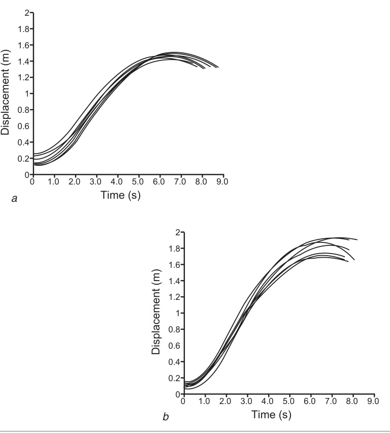<figcaption>Hình 4.2: Các đường biểu diễn thời gian–độ dịch chuyển cho việc định vị quả bóng trong (a) điều kiện phát bóng (định vị và đánh bóng) và (b) điều kiện chỉ định vị bóng, ở một đối tượng đại diện. Dữ liệu độ dịch chuyển trên trục y được hiệu chỉnh theo mét.</figcaption></figure>
<h3>Tiêu điểm Nghiên cứu</h3>
<p>Free(z)ing các cấu trúc phối hợp</p>
<p>Công trình của Vereijken, van Emmerik, Whiting, và Newell (1992) đã tạo ra động lực ban đầu cho việc nghiên cứu sự tổ chức lại hệ thống vận động cùng với học. Bằng chứng về cách người học đối phó với các bậc tự do của hệ thống vận động trong tiếp thu kỹ năng đến từ nghiên cứu của họ về học thực hiện các chuyển động toàn thân trên một máy mô phỏng trượt tuyết (xem hình 4.3).</p>
<p style="font-style:italic;color:#475569;font-size:.88rem">Hình 4.3: Bằng chứng về cách người học đối phó với các bậc tự do của hệ thống vận động trong tiếp thu kỹ năng đến từ các nghiên cứu được tiến hành trên một máy mô phỏng trượt tuyết.</p>
<p>Bằng cách thực hiện các chuyển động toàn thân ép năng lượng vào hệ thống được tạo thành từ bàn đạp, lò xo và ray của máy mô phỏng, người trượt tuyết nhằm tạo ra các chuyển động giống như slalom của bàn đạp trên các ray. Những chuyển động thành công trên máy mô phỏng trượt tuyết được đặc trưng bởi các chuyển động có biên độ lớn, trong đó bàn đạp di chuyển đến các mép ngoài của ray; tần suất ngày càng tăng của các chuyển động giống slalom; và sự mượt mà, trong đó độ giật cục ban đầu được giảm bớt.</p>
<p>Bài viết</p>
<p>Nhóm nghiên cứu yêu cầu năm người trượt tuyết mới tập học tạo ra các chuyển động giống slalom trong 7 ngày. Trong thời gian này, 140 lần thử nghiệm, mỗi lần kéo dài 60 giây, đã được thực hiện. Các nhà nghiên cứu không đưa ra hướng dẫn nhiệm vụ cụ thể nào và ghi lại biên độ cùng tần suất của các chuyển động bằng cách dùng các điểm đánh dấu khớp trên bàn đạp trượt tuyết và trên các khớp của thân trên và thân dưới.</p>
<figure class="bookfig"><figcaption>Hình 4.3: Bằng chứng về cách người học đối phó với các bậc tự do của hệ thống vận động trong tiếp thu kỹ năng đến từ các nghiên cứu được tiến hành trên một máy mô phỏng trượt tuyết.</figcaption></figure>
<p>Các tác giả cho rằng nếu các khớp không tham gia tích cực vào thực hiện nhiệm vụ, tính biến thiên quanh giá trị trung bình của các góc khớp được ghi lại (tính theo độ) sẽ thấp, cũng như phạm vi chuyển động góc của các khớp. Hơn nữa, các mối quan hệ giữa các khớp sẽ cao khi người học xây dựng các sự ghép nối chặt chẽ giữa các khớp then chốt. Dữ liệu cho thấy, ngay từ đầu quá trình học, tính biến thiên quanh giá trị trung bình của các góc khớp trong suốt thời gian chuyển động (được ước tính bằng độ lệch chuẩn quanh giá trị trung bình) là thấp. Phạm vi chuyển động góc của các khớp cũng thấp và các giá trị tương quan chéo giữa các khớp cao. Đây chính là loại kết quả mà người ta mong đợi nếu người học đang đông lạnh các bậc tự do để kiểm soát một hành động nhiều bậc tự do. Tuy nhiên, có bằng chứng cho thấy người học đang cố giải phóng các sự ghép nối chặt chẽ này để cho phép các khớp tham gia tích cực hơn vào chuyển động.</p>
<p>Cùng với luyện tập, độ lớn của các góc ở hông, đầu gối và cổ chân tăng lên, và tương quan chéo giữa hông và đầu gối, cũng như giữa hông và cổ chân, giảm đi. Tốc độ của các hiệu ứng học đối với phối hợp được nhấn mạnh bởi thực tế là sự thay đổi lớn nhất về độ lệch chuẩn của các góc khớp trung bình xảy ra giữa lần thử nghiệm 1 và 8 trong tổng số lần thử nghiệm (n = 140) (xem hình 4.4). Độ lệch chuẩn của khớp gối cho thấy mức tăng lớn nhất qua các lần thử, gợi ý rằng khớp gối có ảnh hưởng lớn nhất đến việc người học giành được quyền kiểm soát chuyển động slalom trong luyện tập.</p>
<p style="font-style:italic;color:#475569;font-size:.88rem">Hình 4.4: Sự thay đổi lớn nhất về độ lệch chuẩn của các góc khớp trung bình xảy ra giữa lần thử nghiệm 1 và 8 trong tổng số lần thử nghiệm (n = 140).</p>
<p>Journal of Motor Behavior, vol. 24, issue 1, pp. 135-137, 1992. In lại với sự cho phép của Helen Dwight Reid Educational Foundation. Published by Heldref Publications, 1319 Eighteenth St., NW, Washington, DC 20036-1802. http://www.heldref.org. Copyright © 1992.</p>
<p>Lần thử nghiệm</p>
<p>0 10 20 30 40</p>
<p>Độ lệch chuẩn cổ chân đầu gối hông</p>
<p>X X X X X X X</p>
<p>ỨNG DỤNG</p>
<p>Hãy nghĩ đến những tình huống mà người thực hiện giải phóng hoặc buông các bậc tự do để đáp ứng các ràng buộc nhiệm vụ tạm thời. Ví dụ, bạn mong đợi mẫu hình phối hợp nào từ một người mới bắt đầu trượt tuyết phải vượt qua một đường trượt đen dốc? Những người trượt tuyết trình độ cao đối phó thế nào với các ràng buộc của một đoạn gồ ghề toàn mấp mô hay tuyết bột dày?</p>
<figure class="bookfig">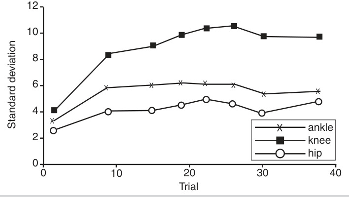<figcaption>Hình 4.4: Sự thay đổi lớn nhất về độ lệch chuẩn của các góc khớp trung bình xảy ra giữa lần thử nghiệm 1 và 8 trong tổng số lần thử nghiệm (n = 140).</figcaption></figure>
<p>Những hiểu biết của Bernstein (1967) về học vận động đã giúp ích cực kỳ trong việc hiểu cách người học đối phó với cơ bắp, khớp và các đoạn của cơ thể trong khi luyện tập một hành động nhiều khớp. Tuy nhiên, khi sự hiểu biết về các khái niệm từ lý thuyết hệ thống động lực và tâm lý học sinh thái dần hình thành qua các năm, đã trở nên rõ ràng rằng Bernstein chỉ nắm bắt được một phần của quá trình tiếp thu kỹ năng.</p>
<p>Một số nhà nghiên cứu đã xem xét lại những hiểu biết ban đầu của Bernstein (1967) về sự thay đổi các bậc tự do của hệ thống vận động như một kết quả của học. Theo Newell và các cộng sự (2001), sự chuyển tiếp từ giai đoạn phối hợp sang giai đoạn kiểm soát không phải là một quá trình tuyến tính và vĩnh viễn, như một số bản dịch các bài viết gốc của Bernstein ngụ ý. Gần đây, đã rõ rằng các bậc tự do của hệ thống vận động được tổ chức lại tùy theo một loạt ràng buộc tác động lên hệ thống tại bất kỳ thời điểm nào, khi người học khai thác xu hướng siêu ổn định trong hệ thống vận động (xem Chow et al., 2006; Liu et al., 2006; Newell, Liu, &amp; Mayer-Kress, 2005). Ngay cả những người thực hiện có trình độ rất cao cũng có thể quay lại giai đoạn phối hợp và thể hiện các chuyển động cứng nhắc (thường là đặc điểm của người mới tập) nếu điều đó được xem là một mẫu hình có chức năng để thỏa mãn các ràng buộc nhiệm vụ trong những hoàn cảnh thực hiện cụ thể (xem dữ liệu về động tác phát bóng chuyền của Temprado, 2002).</p>
<p>Newell và Vaillancourt (2001) lập luận rằng cách Bernstein ban đầu quan niệm về quá trình thay đổi trong các hệ thống vận động có lẽ quá hẹp, vì nó không nhận ra rằng sự tổ chức lại hệ thống vận động có thể dẫn đến số lượng bậc tự do cơ học tăng hoặc giảm do bản chất thay đổi của các ràng buộc cần được thỏa mãn. Đôi khi, việc giảm số bậc tự do của hệ thống vận động được dùng trong các mẫu hình phối hợp lại có chức năng đối với các vận động viên chuyên nghiệp thực hiện trong những ràng buộc nhiệm vụ đặc thù. Có những tình huống mà các vấn đề vận động trở nên thử thách hơn do nhấn mạnh quá mức vào độ chính xác hoặc do thông tin môi trường không đáng tin, chẳng hạn như ánh sáng kém trong trận cricket hay quần vợt, mặt đường đi bộ hoặc lái xe trơn trượt, hoặc thực hiện trước một khán giả khắt khe.</p>
<p>Trong những bối cảnh luyện tập căng thẳng như vậy và trong thi đấu, các dao động về trạng thái cảm xúc như lo âu và hưng phấn có thể làm giảm độ chính xác của việc phát hiện thông tin (Bootsma, Bakker, van Snippenberg, &amp; Tdlohreg, 1992). Ví dụ, Weinberg và Hunt (1976) ghi nhận sự giảm hoạt động cơ bắp tuần tự, thay vào đó là sự co co cùng lúc tiêu tốn nhiều năng lượng giữa cơ chủ vận và cơ đối kháng ở những người ném bóng có mức lo âu cao. Chúng ta có thể giải thích sự gia tăng được quan sát thấy về độ căng cơ như những nỗ lực đông lạnh lại các bậc tự do và tổ chức lại các cấu trúc phối hợp nhằm cố giành lại quyền kiểm soát. Hơn nữa, do các quá trình tự nhiên như lão hóa, ốm đau hoặc bệnh tật, sự thay đổi trong tổ chức các bậc tự do của hệ thống vận động có thể dẫn đến tăng hoặc giảm số lượng được dùng trong một giải pháp phối hợp cụ thể.</p>
<p>Nghiên cứu về cú đá bóng trong bóng đá đã minh họa rất rõ cách người học có thể áp dụng những cách tiếp cận khác nhau trong việc dùng các bậc tự do của hệ thống vận động để thỏa mãn các mục tiêu nhiệm vụ là đá bóng qua một rào cản về chiều cao, trong khi thay đổi kiểm soát lực ở các khoảng cách khác nhau. Chow và các cộng sự (2007) thấy rằng một số người học đã tăng và giảm mức độ tham gia của các bậc tự do hệ thống vận động trong luyện tập theo cách không tuần tự khi họ tìm kiếm một động tác nâng bóng (chipping) có chức năng trong bóng đá.</p>
<p>Berthouze và Lungarella (2004) thậm chí còn đi xa đến mức gợi ý rằng một chiến lược luân phiên đông lạnh và giải phóng các bậc tự do của hệ thống vận động có thể là cách thành công nhất để tiếp thu sự phối hợp vận động. Ý tưởng này cần được đánh giá trong các nghiên cứu tiếp theo, nhưng dù sao bằng chứng cho thấy việc tăng hay giảm mức độ tham gia của các bậc tự do hệ thống vận động phụ thuộc vào các ràng buộc của nhiệm vụ và trạng thái tự nhiên của cá nhân tại bất kỳ thời điểm nào (Newell, Broderick, Deutsch, &amp; Slifkin, 2003).</p>
<p>Tối ưu hóa thành thạo quyền kiểm soát: Giai đoạn 3</p>
<p>Giai đoạn cuối cùng trong mô hình của Newell (1985) đề cập đến sự tối ưu hóa thành thạo một cấu trúc phối hợp mà người thực hiện dần làm cho linh hoạt và cởi mở hơn trong việc khai thác các nguồn thông tin môi trường, từ đó nâng cao hiệu quả và quyền kiểm soát. Ở trình độ thực hiện này, người chơi trở nên thành thạo trong việc khai thác các lực từ chuyển động để bảo đảm những hành động linh hoạt và hiệu quả. Ví dụ, thử nghiệm với việc kiểm soát động tác phát bóng chuyền có thể giúp tối ưu hóa thực hiện. Khi người chơi tìm kiếm một giải pháp tối ưu cho thách thức phát bóng trong các ràng buộc nhiệm vụ khác nhau, họ có thể thay đổi lực, thời lượng và biên độ của mẫu hình vận động.</p>
<p>Việc Newell dùng thuật ngữ tối ưu gợi ý rằng hiệu quả năng lượng là một yếu tố quan trọng chi phối sự xuất hiện của một mẫu hình vận động trong lúc thực hiện. Theo Newell (1985), hiệu quả năng lượng là &quot;một nguyên lý tổ chức tiên nghiệm của phối hợp và kiểm soát&quot; (tr. 304). Kỹ năng, hay tổ chức tối ưu, xuất hiện khi các thành phần của một cấu trúc phối hợp được điều chỉnh về mặt định lượng sao cho người thực hiện có thể dùng các lực phản ứng của chi trong lúc vận động. Các thuộc tính thụ động, quán tính và cơ học của chuyển động chi được khai thác trọn vẹn trong một chuyển động thành thạo, vốn được đặc trưng bởi sự mượt mà và trôi chảy. Ở giai đoạn này, các cấu trúc phối hợp trở nên ổn định khi các bậc tự do bổ sung được giải phóng. Sự ổn định này làm tăng số thông số có thể kiểm soát và chịu ràng buộc bởi thông tin môi trường, dẫn đến chuyển động linh hoạt hơn (Bernstein, 1967).</p>
<p>Ví dụ, trong động tác phát bóng chuyền của người chơi chuyên nghiệp, sự trôi chảy gia tăng này có thể cho phép người thực hiện tận dụng năng lượng đàn hồi được giải phóng từ các gân trong chu kỳ kéo dài–rút ngắn cơ mà trước đây chưa được kích thích. Vì vậy, nhờ sự tham gia của phản xạ, pha gia tốc của tay và cánh tay đánh bóng có thể được tăng lên và có thể kết hợp với sự xoay thân để tạo ra sức mạnh trong động tác phát bóng. Với sự tối ưu, chuyển động phát bóng giờ đây trở nên rất tiết kiệm năng lượng. Đó là lý do người quan sát thường mô tả việc thực hiện các động tác của vận động viên ưu tú là dường như không tốn sức. Những đặc điểm bổ sung của trình độ thực hiện thành thạo tối ưu gồm sự thích ứng tức thì trước những thay đổi nhỏ và đột ngột của môi trường (Newell, 1996).</p>
<p>Ngay cả ở giai đoạn thực hiện kỹ năng tối ưu, học khám phá vẫn đóng vai trò quan trọng khi con người tìm kiếm những giải pháp nhiệm vụ sáng tạo hoặc những mẫu hình còn tiết kiệm năng lượng hơn. Ở mọi giai đoạn học, người thực hiện đang tìm kiếm những giải pháp có chức năng nhất để thỏa mãn các ràng buộc đặt lên họ. Những đặc điểm này của hành vi vận động thành thạo được thảo luận thêm trong phần Tiêu điểm Nghiên cứu và chương 5.</p>
<h3>Những vấn đề thực tiễn cho việc học</h3>
<p>Có ích khi xem xét lại một số cân nhắc thực tiễn quan trọng phát sinh từ thảo luận trước đó về tiếp cận dựa trên rào cản/giới hạn đối với học vận động. Trong phần này, chúng ta sẽ xem xét những hàm ý của các ý tưởng lý thuyết này đối với các vấn đề thực tiễn mà hầu hết người thực hành trong tiếp thu kỹ năng đối mặt: duy trì, chuyển giao, và thay đổi kỹ thuật.</p>
<p>Duy trì</p>
<p>Duy trì đề cập đến thực tế là, với những điều kiện luyện tập phù hợp, con người thường có thể giữ lại một phần thiết yếu của mẫu hình vận động bất kể loại nhiệm vụ họ thực hiện (Newell, 1996). Điều này là vì có thể còn dấu vết của một giếng điểm hút đã từng hình thành trước đó trong động lực học nội tại của người học, và nó có thể cung cấp một mức độ ổn định nhất định cho hành động (xem chương 2). Hãy nhớ rằng giếng điểm hút là một vùng ổn định của hệ thống động lực có khả năng chống lại các nhiễu loạn bên ngoài. Ví dụ, trong các hệ thống vận động của con người, giếng điểm hút có thể là sự tạo mẫu ổn định giữa các chi đặc trưng cho một kiểu bơi, hoặc có thể là sự phối hợp giữa thân trên và thân dưới cho phép chúng ta đạp xe sau nhiều năm không luyện tập. Đặc điểm này của học vận động đặc biệt quan trọng trong phục hồi chức năng sau chấn thương hoặc ốm đau.</p>
<p>Trong các lý thuyết học nhận thức, không có khả năng duy trì một kỹ năng được quy cho sự truy xuất kém hoặc sự suy giảm (quên) thông tin của chương trình vận động liên quan theo thời gian (Schmidt &amp; Lee, 2005). Từ góc nhìn tiếp cận dựa trên rào cản/giới hạn, các kỹ năng không bị quên do một biểu diễn bị suy giảm; thay vào đó, động lực học nội tại trở nên không ổn định do thiếu luyện tập và thực hiện trở nên biến thiên hơn. Cũng có khả năng các ràng buộc đã tạo ra các kỹ năng vận động trước đó đã thay đổi đáng kể. Ví dụ, các đặc điểm thể chất của người học có thể khác đi do lão hóa hoặc do tăng trưởng và phát triển. Do những thay đổi nhanh chóng trong công nghệ thể thao, chẳng hạn như thành phần vật liệu của thiết bị, môi trường thực hiện có thể trở nên xa lạ so với giai đoạn tiếp thu ban đầu. Vì vậy, các kỹ năng có nhiều khả năng được duy trì hơn nếu ban đầu chúng được tiếp thu trong một loạt các ràng buộc khác nhau. Dĩ nhiên, những yếu tố khác như giảm thời gian luyện tập, thời lượng của giai đoạn duy trì, và các hoạt động được thực hiện trong thời gian đó cũng sẽ ảnh hưởng đến tính ổn định của mẫu hình vận động ban đầu. Vì điểm hút ban đầu bị suy yếu thêm do sự hình thành của các điểm hút khác, khả năng người thực hiện tái tạo lại hành động ổn định này trong tương lai mà không cần luyện tập kéo dài là giảm đi.</p>
<p>Chuyển giao</p>
<p>Chuyển giao đề cập đến ảnh hưởng của việc luyện tập hoặc thực hiện trước đó một kỹ năng đối với việc tiếp thu một kỹ năng mới (Magill, 2006). Người thực hành thường mong đợi người học chuyển giao thực hiện luyện tập của họ vào các tình huống thi đấu. Bản chất của chuyển giao là khả năng thích ứng một mẫu hình vận động hiện có với một tập hợp ràng buộc sinh thái khác. Các điểm hút cung cấp một nền tảng ổn định cho các hành động, và một cân nhắc quan trọng là làm thế nào để thiết lập một điểm hút cho một hành động mới khi có mặt một điểm hút cũ.</p>
<p>Từ góc nhìn tiếp cận dựa trên rào cản/giới hạn, chuyển giao được xem xét tốt nhất theo độ gần của một điểm hút mới so với một điểm hút cũ trong cảnh quan nhận thức–vận động. Các điểm hút cạnh tranh và hợp tác với nhau trong cảnh quan, và chuyển giao tích cực xảy ra khi một điểm hút hiện có cung cấp nền tảng cho việc học một kỹ năng mới. Nếu điểm hút mới chia sẻ các yếu tố với một điểm hút cũ, người thực hành có thể mong đợi chuyển giao tích cực; ví dụ, các điểm hút cho việc ném lao và ném bóng cricket là tương thích. Chuyển giao tiêu cực</p>
<p>Các điểm hút cho việc ném lao và ném bóng cricket là tương thích (điểm hút mới chia sẻ các yếu tố với điểm hút cũ), vì vậy người thực hành có thể mong đợi chuyển giao tích cực.</p>
<p>© Robertstock.com</p>
<p>© Harish Tyagi/epa/Corbis</p>
<figure class="bookfig restored"></figure>
<figure class="bookfig restored">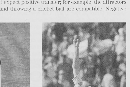</figure>
<p>chuyển giao tiêu cực xảy ra khi một điểm hút hiện có có quá nhiều ảnh hưởng trong việc kéo hệ thống ra khỏi vị trí của một điểm hút mới đang hình thành trong cảnh quan. Ví dụ, các kỹ năng cạnh tranh như sự thay đổi phân bổ trọng lượng cần thiết cho trượt tuyết và trượt băng có thể dẫn đến suy giảm thực hiện trong môn thể thao mà người ta chuyển giao kỹ năng ban đầu sang.</p>
<p>Thay đổi kỹ thuật</p>
<p>Bạn có đề xuất với Tiger Woods rằng anh ấy nên thay đổi cú swing golf để cải thiện lối chơi của mình không? Ở giai đoạn nào bạn nên bắt đầu dạy những người bơi trẻ một kiểu bơi mới? Người thực hành phải liên tục giải quyết những câu hỏi như vậy bất kể năng lực hiện tại của người thực hiện. Trong những tình huống kiểu này, người thực hành có xu hướng dựa vào một hình ảnh định sẵn về một kỹ thuật lý tưởng để quyết định liệu có cần thay đổi hay không. Tuy nhiên, nghiên cứu đã cho thấy, ngay cả trong những kỹ năng rất ổn định như bắn súng trường hay golf putt, không tồn tại những mẫu hình phối hợp tối ưu chung (Ball, Best, &amp; Wrigley, 2003; Brisson &amp; Alain, 1996; Fairweather, Button, &amp; Rae, 2002). Điều này là vì mỗi lần một kỹ năng được thực hiện, nó phải được thích ứng với những khác biệt tinh tế về điều kiện ban đầu (ví dụ, thay đổi về độ dao động của cơ thể, trạng thái sinh lý, hoặc các yếu tố tâm lý) và về môi trường (ví dụ, một cơn gió nhẹ, nhiệt độ khác nhau, các bề mặt khác nhau). Với vô số ràng buộc có thể làm thay đổi biểu hiện hành vi của một kỹ năng vận động, ngay cả những người thực hiện ưu tú cũng cần thể hiện một lượng đáng kể tính biến thiên vận động có chức năng (Button, Macleod, Sanders, &amp; Coleman, 2003; Davids, Glazier, Araújo, &amp; Bartlett, 2003). Ý tưởng này có hàm ý mạnh mẽ đối với mô hình người học và gợi ý rằng trọng tâm trong quá trình học nên là khuyến khích sự thay đổi và thích ứng thay vì đạt được một trạng thái lý tưởng giả định nào đó.</p>
<p>Khả năng đánh giá kỹ thuật một cách định tính có lẽ là phẩm chất quan trọng nhất mà người thực hành cần có. Kỹ năng khó này đòi hỏi nhận thức về các nguyên lý cơ sinh học rộng của chuyển động và sự hiểu biết về việc người học có khai thác các nguyên lý này một cách tối ưu hay không (Sanders, 2000). Ví dụ, trong một bài tập luyện khúc côn cầu trên sân, người thực hành phải có khả năng giải thích tại sao một đường chuyền không được thực hiện chính xác. Người chuyền có đang dùng lực (hoặc mô-men xoắn) lên cây gậy một cách tối ưu không, hay quả bóng ở quá gần cơ thể nên không đạt được lượng mô-men xoắn tối ưu (xem hình 4.5)? Hoặc, một huấn luyện viên thể dục dụng cụ phải có khả năng nhận ra khi một cú lộn người được thực hiện kém vì tư thế gập người không được giữ đủ lâu. Chỉ khả năng xác định những chi tiết như vậy trong mẫu hình vận động của người học mới cho phép người thực hành can thiệp đúng lúc và dùng phản hồi một cách hiệu quả. Hãy lưu ý rằng những quan sát này về việc các nguyên lý cơ sinh học rộng có được tuân thủ trong lúc thực hiện hay không cần được diễn đạt theo thuật ngữ tương đối, không phải tuyệt đối. Về phương diện này, điều sống còn là mọi người thực hành phải kết hợp kinh nghiệm của họ với sự hiểu biết nền tảng về các nguyên lý của chuyển động (Carr, 1997; Coleman, 1999).</p>
<p>Những đặc điểm mà người thực hành có thể dùng để xác định định tính những người thực hiện cần thay đổi kỹ thuật gồm những điều sau:</p>
<p>Không có khả năng thích ứng kỹ thuật qua các ràng buộc môi trường khác nhau (chuyển giao kém), chẳng hạn như một người chơi golf không thể thích ứng kỹ thuật putt với các tốc độ khác nhau của mặt green Sử dụng năng lượng kém hiệu quả, chẳng hạn như một vận động viên xe lăn không dành đủ thời gian ở giai đoạn đẩy để tạo lực tối ưu</p>
<p style="font-style:italic;color:#475569;font-size:.88rem">Hình 4.5: Trong một bài tập luyện khúc côn cầu trên sân, người thực hành phải có khả năng giải thích tại sao một đường chuyền không được thực hiện chính xác.</p>
<p>Bảng kiểm cơ sinh học</p>
<p>1. Người vận động có độ ổn định tối ưu khi tạo ra hay tiếp nhận lực không? 2. Người vận động có dùng tất cả các cơ có thể đóng góp vào kỹ năng không? 3. Người vận động có tạo lực với các cơ theo trình tự phù hợp không? 4. Người vận động có tạo đúng lượng lực trong khung thời gian thích hợp không? 5. Người vận động có tạo lực theo đúng hướng không? 6. Người vận động có tạo mô-men xoắn và chuyển giao động lượng đúng cách không? 7. Người vận động có điều khiển quán tính tuyến tính hoặc quay đúng cách không?</p>
<figure class="bookfig">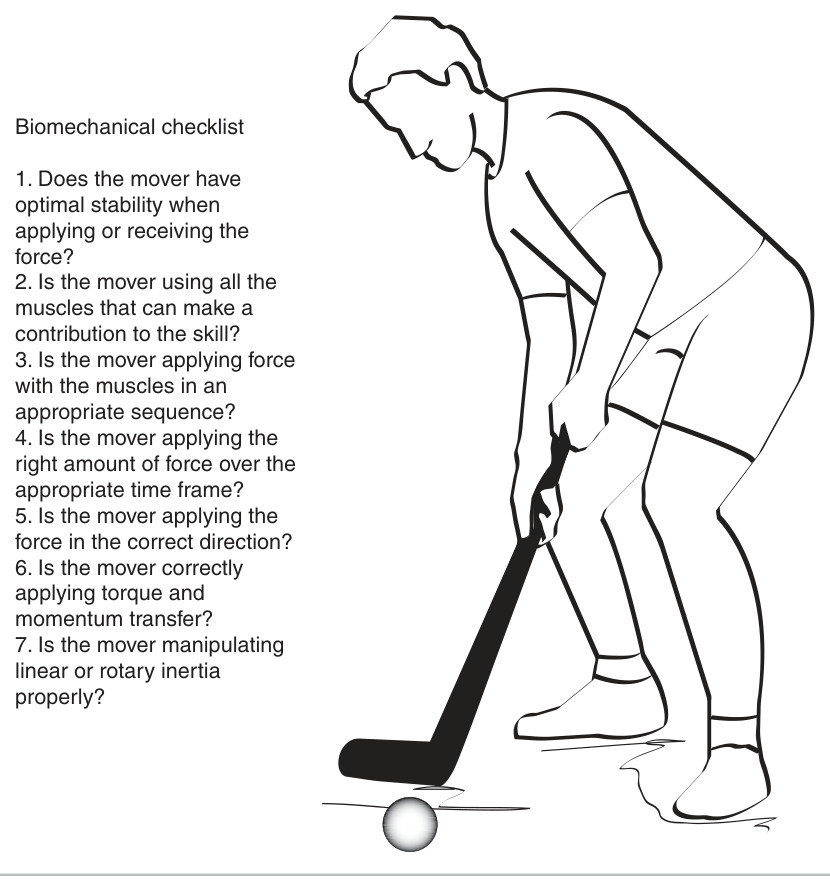<figcaption>Hình 4.5: Trong một bài tập luyện khúc côn cầu trên sân, người thực hành phải có khả năng giải thích tại sao một đường chuyền không được thực hiện chính xác.</figcaption></figure>
<p>Kỹ thuật không duy trì được theo thời gian (duy trì kém), chẳng hạn như một vũ công không thể thực hiện các động tác đã luyện tập một tháng trước Tỷ lệ chấn thương cao, chẳng hạn như một cầu thủ bóng bầu dục có xu hướng can thiệp không đúng thời điểm dẫn đến chấn thương đầu Các mẫu hình vận động không kinh tế, chẳng hạn như người đạp xe với tư thế thẳng đứng nhanh mệt do nhu cầu bổ sung để duy trì vị trí cơ thể và đạp xe ngược chiều gió</p>
<h3>Vai trò của Người thực hành Vận động:</h3>
<h3>Sư phạm Phi tuyến</h3>
<p>Việc đặc trưng hóa người học như các hệ thống vận động động lực phi tuyến cung cấp cơ sở cho việc ủng hộ một sư phạm phi tuyến (Chow et al., 2006). Nền tảng lý thuyết này xem các hệ thống học là những hệ thống động lực phi tuyến và cho rằng các thuộc tính quan sát được của hệ thống vận động con người tạo thành cơ sở cho một khung sư phạm có nguyên tắc. Sư phạm phi tuyến có thể cung cấp cho người thực hành những nguyên lý then chốt để dùng trong tình huống giảng dạy, chẳng hạn như cách đánh giá thực hiện, cách tổ chức các buổi luyện tập, và cách tốt nhất để đưa ra hướng dẫn và cung cấp phản hồi. Một cách tiếp cận lý thuyết đối với luyện tập tạo ra động lực để các nhà sư phạm bắt đầu định hình sự xuất hiện của hành vi hướng đến mục tiêu (Newell, 1986), từ đó nâng cao học nhận thức–vận động.</p>
<p>Sư phạm phi tuyến ủng hộ việc người thực hành nhận thức rằng các giải pháp phối hợp của người học là sản phẩm của tự tổ chức, và các giai đoạn tính biến thiên vận động nên được trân trọng như một phần của quá trình học. Để khuyến khích sự xuất hiện của các giải pháp phối hợp có liên quan về chức năng, cách tiếp cận này ủng hộ việc thao túng sự tương tác người–môi trường thông qua thay đổi các ràng buộc liên quan của nhiệm vụ, của môi trường và của người thực hiện. Như Newell và các cộng sự (2001) đã chỉ ra, các ràng buộc đối với hành động tồn tại trên nhiều thang thời gian, và hệ quả là cả học vận động lẫn phát triển vận động đều được đánh dấu bởi những bước nhảy phi tuyến với độ lớn khác nhau hướng tới các mẫu hình vận động trưởng thành hơn. Các nhà sư phạm phi tuyến hiểu rằng các ràng buộc là những ảnh hưởng tạm thời đối với người thực hiện và luyện tập nên tái tạo các động lực cụ thể có thể tồn tại trong một bối cảnh thực hiện nhất định như một trận đấu hay một hoạt động lao động. Nói cách khác, các ràng buộc có thể đang hình thành hoặc đang suy giảm đối với mỗi người học tùy theo trạng thái hiện tại của hệ thống vận động và bản chất của các ràng buộc nhiệm vụ hiện có trong môi trường luyện tập (xem Chow et al., in press; Guerin &amp; Kunkle, 2004).</p>
<p>Theo nhiều cách, sư phạm phi tuyến khác với các phương pháp giảng dạy và huấn luyện truyền thống (Chow et al., 2006). Về phát triển kỹ năng, vai trò của người thực hành vận động theo truyền thống gắn với những nhiệm vụ như dùng các bài tập luyện để hoàn thiện thực hiện theo một mẫu hình vận động lý tưởng, đánh giá kỹ thuật, đưa ra hướng dẫn và phản hồi, và quản lý chặt chẽ môi trường luyện tập của người học. Ví dụ, Curtner-Smith, Todorov, McCaughtry, và Lacon (2001) đã đưa ra bằng chứng thuyết phục rằng giáo viên giáo dục thể chất dành tới 78% thời gian cho những chiến lược giảng dạy như vậy. Một chủ đề trung tâm nổi lên từ sư phạm phi tuyến là tầm quan trọng của việc tạo điều kiện cho học độc lập thông qua tìm kiếm, khám phá và khai thác các ràng buộc. Những quá trình học quan trọng này dường như phần lớn bị bỏ qua trong các thực hành sư phạm phổ biến (xem bảng 4.1). Ở chương 10 của cuốn sách này, chúng ta sẽ dùng các nghiên cứu tình huống từ nhiều bối cảnh giảng dạy khác nhau để khơi gợi thêm suy ngẫm về vai trò của người thực hành trong học vận động.</p>
<h3>Những người thực hành &quot;Tay không can thiệp&quot;</h3>
<p>Trong phần hai của cuốn giáo trình này, chúng ta ủng hộ khái niệm người thực hành &quot;tay không can thiệp&quot;, khái niệm này ôm lấy tiếp cận dựa trên rào cản/giới hạn đối với tiếp thu kỹ năng và nắm bắt lập trường phương pháp luận được ủng hộ cho một nhà sư phạm phi tuyến. Khái niệm tay không can thiệp không hàm ý vai trò bị giảm sút của người thực hành, mà chỉ đơn giản là một cách tiếp cận khác đối với tiếp thu kỹ năng vận động. Người thực hành tay không can thiệp dường như cũng dấn thân như mô hình huấn luyện truyền thống đòi hỏi; tuy nhiên, sẽ trở nên rõ ràng trong các chương tiếp theo rằng các chiến lược chính của sư phạm phi tuyến lấy người học làm trung tâm hơn nhiều và các nhiệm vụ then chốt được tiếp cận theo cách khác.</p>
<p>Một sự so sánh hữu ích cho người thực hành tay không can thiệp là hình ảnh người làm vườn. Cây cối khác nhau về điều kiện sinh trưởng ưa thích, chẳng hạn như thành phần đất và vị trí trong vườn, và người làm vườn không áp đặt thời điểm một cây nên ra hoa. Thay vào đó, bằng chứng cho thấy việc ra hoa là kết quả của các quá trình tự tổ chức, nổi lên, và người làm vườn đóng vai trò quan trọng trong việc tạo ra môi trường sinh trưởng phù hợp cho mỗi cây. Khi cần thiết, người làm vườn</p>
<p>Bảng 4.1: Các hành vi thường gắn với huấn luyện viên hiệu quả</p>
<p>Đặc điểm Hành vi huấn luyện (Douge and Hastie, 1993)</p>
<p>Phản hồi bằng lời nói Được cung cấp thường xuyên</p>
<p>Nhiều lời nhắc nhở</p>
<p>Sửa lỗi Mức độ cao các tín hiệu sửa lỗi</p>
<p>Hướng dẫn lại các đặc điểm then chốt</p>
<p>Đặt câu hỏi Sử dụng thường xuyên câu hỏi và làm rõ</p>
<p>Hướng dẫn Dành phần lớn thời gian cho hướng dẫn trực tiếp</p>
<p>Cấu trúc của môi trường huấn luyện Quản lý môi trường huấn luyện để đạt được trật tự đáng kể có thể can thiệp bằng cách tưới cây hoặc chuyển sang chậu lớn hơn, nhưng công việc chính của sự sinh trưởng và ra hoa cuối cùng vẫn để cho cây tự thực hiện, vì cây có hệ thống nhận thức để cảm nhận các ràng buộc thông tin như nhiệt độ và ánh sáng xung quanh (Yanovsky &amp; Kay, 2002). Tương tự, những nhiệm vụ quan trọng của người thực hành tay không can thiệp là tạo ra một môi trường học để khám phá các giải pháp tối ưu bằng cách thao túng các ràng buộc, diễn giải tính biến thiên vận động, và nuôi dưỡng người học trong các hoạt động tìm kiếm của họ. Không có mẫu hình vận động lý tưởng nào phù hợp với mọi người thực hiện, vì vậy so với các cách tiếp cận giảng dạy truyền thống hơn, những phương pháp tay không can thiệp này cho phép mỗi người học có nhiều cơ hội hơn trong việc tìm kiếm và xác định các mẫu hình vận động phù hợp trong luyện tập.</p>
<p>Mặc dù mỗi người thực hành có thể có phong cách giảng dạy riêng (Lyle, 2002), một trong những lợi ích chính của khái niệm tay không can thiệp là nó dễ dàng phù hợp với nhiều phong cách giảng dạy cá nhân, bao gồm cả các kỹ thuật đã được thiết lập như Teaching Games for Understanding (TGfU) (Chow et al., 2006).</p>
<p>TGfU là mô hình thực hành sư phạm nổi bật nhất trong giảng dạy các môn trò chơi trong 20 năm qua (xem chương 5 để biết thêm thông tin về TGfU). Bunker và Thorpe (1982), những người đầu tiên khái niệm hóa TGfU, lập luận rằng các cách tiếp cận truyền thống trong giảng dạy trò chơi nhấn mạnh quá mức việc luyện tập kỹ năng một cách cô lập, dẫn đến khả năng ra quyết định và chuyển giao kỹ năng kém trong bối cảnh trò chơi. TGfU được phát triển để cho phép người ta học các khía cạnh chiến thuật của trò chơi thông qua việc chơi các phiên bản sửa đổi của trò chơi mục tiêu, sao cho sự hiểu biết về chiến thuật là trọng tâm chính thay vì các kỹ năng vận động thành phần.</p>
<p>Khác với một số cách tiếp cận truyền thống trong giảng dạy trò chơi, TGfU nhấn mạnh việc học lấy học sinh làm trung tâm các chiến thuật và kỹ năng trong các bối cảnh trò chơi đã được sửa đổi (ví dụ, Griffin, Butler, Lombardo, &amp; Nastasi, 2003; Hopper, 2002). Các trò chơi được sửa đổi thường dẫn đến việc thiết bị, khu vực chơi hoặc luật lệ được điều chỉnh để định hướng sự hiểu biết của người học theo hướng khái niệm chiến thuật mục tiêu. Mặc dù TGfU đã tạo ra sự quan tâm trong số những người thực hành và được các nhà nghiên cứu giáo dục thể chất quảng bá như một phương pháp hiệu quả để giảng dạy các môn thể thao đồng đội, nhưng bằng chứng thực nghiệm ủng hộ tính hiệu quả của nó lại rất ít một cách đáng ngạc nhiên (Strean &amp; Bengoechea, 2003). Rõ ràng, tiếp cận dựa trên rào cản/giới hạn có một nền tảng lý thuyết vững chắc có thể hỗ trợ sự hiểu biết có nguyên tắc về cách thức và lý do tại sao nên sửa đổi luyện tập trò chơi.</p>
<p>Khi chỉ ra cách các nguyên lý của TGfU hài hòa với tiếp cận dựa trên rào cản/giới hạn, chúng tôi không ngụ ý rằng tất cả các kỹ thuật sư phạm khác đều có khuyết điểm. Thay vào đó, mục tiêu của chúng tôi ở phần II của cuốn giáo trình này là phát triển một triết lý sư phạm phi tuyến không đặc thù theo bối cảnh nhưng có thể được áp dụng làm nền tảng cho nhiều hành vi giảng dạy hiện có và phù hợp.</p>
<h3>Tóm tắt</h3>
<p>Khi chúng ta hoàn thành phần tổng quan lý thuyết của cuốn sách này, có thể hữu ích khi xem xét một số thông tin này liên quan thế nào đến tiếp thu kỹ năng trong thế giới thực, vốn là nền tảng của sư phạm phi tuyến. Để chuẩn bị cho bạn bước vào phần II, dưới đây là một số hàm ý sư phạm của tiếp cận dựa trên rào cản/giới hạn:</p>
<p>Cần cân nhắc cẩn thận về cách các ràng buộc then chốt của nhiệm vụ và của cá nhân tương tác để ảnh hưởng đến thực hiện và tiếp thu kỹ năng của mỗi người học.</p>
<p>Thời gian dành cho luyện tập là một trong nhiều ràng buộc quan trọng đối với việc đạt đến sự xuất chúng. Người thực hành không nên nhấn mạnh quá mức số lượng thời gian dành cho luyện tập, vì luật lũy thừa của luyện tập chỉ là một trong nhiều đường cong học khác nhau mô tả cách mỗi người học có thể thay đổi theo thời gian (Newell et al., 2001).</p>
<p>Thời gian dành cho luyện tập không nhất thiết bảo đảm tiếp thu được chuyên môn. Điều vận động viên được thử thách làm trong lúc luyện tập là chỉ số chính xác hơn của tiếp thu kỹ năng so với lượng thời gian dành trên sân tập (Davids, 2000). Cần theo dõi cấu trúc vi mô của luyện tập để hiểu những khác biệt về chất giữa các buổi luyện tập.</p>
<p>Các nhà khoa học thể thao và người thực hành cần làm việc cùng nhau để hiểu trọn vẹn bản chất của các ràng buộc cá nhân, nhiệm vụ và môi trường tác động lên từng người thực hiện trong các môn thể thao và hoạt động thể chất khác nhau.</p>
<p>Người thực hành có thể tạo điều kiện cho sự phát triển nhanh và tiếp thu kỹ năng bằng cách xác định và thao túng cẩn thận các ràng buộc chính đối với mỗi người học trong lúc luyện tập và huấn luyện. Những sự thao túng được lên kế hoạch có thể gây ra các bước nhảy hành vi hoặc những chuyển đổi đột ngột về trình độ kỹ năng. Điều này giống như những trẻ sơ sinh bỏ qua các cột mốc vận động, được minh chứng bằng các nghiên cứu quan sát sự xuất hiện hoặc biến mất của phản xạ bước ở trẻ sơ sinh. Theo nghĩa này, các hành vi có thể chỉ đang chờ sẵn ở hậu trường để được gọi ra từ mỗi người học (Thelen &amp; Smith, 1994).</p>
<p>Những khác biệt cá nhân cần được hiểu và trân trọng hơn bao giờ hết. Sự biến thiên có thể báo hiệu một sự thích ứng thành công với các ràng buộc đặc thù. Ví dụ, lịch sử thể thao đầy rẫy những vận động viên thành công đã thỏa mãn các ràng buộc nhiệm vụ theo những cách độc đáo. Học có thể được xem như một cuộc giằng co cá nhân nhằm lắp ráp một giải pháp phối hợp thành công cho một bài toán vận động nhất định.</p>
<p>Đơn vị phân tích then chốt theo tiếp cận dựa trên rào cản/giới hạn là người thực hiện cá nhân (Button, Davids, &amp; Schöllhorn, 2006). Tính biến thiên trong thực hiện vận động cần được diễn giải cẩn thận. Đôi khi mức độ biến thiên cao giúp thích ứng với môi trường, và vào những dịp khác mức thấp giúp tăng tính ổn định của thực hiện. Nhiều hoạt động liên quan đến các chuyển động phức tạp. Mặc dù các biến dị di truyền có thể hoặc không thể giới hạn một số năng lực nhất định của một người (ví dụ, sức mạnh hay sức bền thể chất), nhưng những điểm mạnh khác có thể được khai thác để đạt đến sự xuất chúng trong thực hiện. Khi công nghệ phát triển và các nguyên tắc đạo đức được cân nhắc, các biến dị di truyền có thể được sàng lọc và khai thác như những ràng buộc mang lại lợi thế cho người học. Để hiểu sự phức tạp của thực hiện thể thao và tiếp thu kỹ năng, người thực hành và các nhà khoa học thể thao cần nhận ra những hạn chế của các góc nhìn đơn ngành. Các nhóm nhà khoa học cần phát triển một cách tiếp cận đa ngành để phân tích các ràng buộc trên các cấp độ chức năng khác nhau của thực hiện (ví dụ, nhận thức, xã hội, sinh lý, cơ sinh học).</p>
<p>CÂU HỎI TỰ KIỂM TRA</p>
<p>1. Tiếp cận dựa trên rào cản/giới hạn đối với tiếp thu kỹ năng khác với các cách tiếp cận truyền thống như thế nào trong định nghĩa về học?</p>
<p>2. Dùng sự so sánh với cảnh quan nhận thức–vận động để giải thích các đặc điểm sau của học: động lực học nội tại, tìm kiếm, khám phá và hiệu quả.</p>
<p>3. Hãy suy ngẫm về trải nghiệm học tập của chính bạn đối với một hoạt động vận động bạn tham gia và vốn kỹ năng hiện tại bạn có. Hãy phác thảo một cảnh quan nhận thức–vận động giả định, gắn nhãn các thung lũng là điểm hút cho những hành động ổn định đã được học tốt. Hãy phác họa các đỉnh và địa hình gồ ghề để miêu tả những kỹ năng kém ổn định hơn, dễ bị nhiễu loạn hơn. Hãy liệt kê một số ràng buộc có ảnh hưởng giúp cấu hình cảnh quan đó.</p>
<p>4. Trẻ nhỏ học ném bóng có thể tổ chức số lượng lớn các bậc tự do sẵn có của chúng như thế nào?</p>
<p>5. Hãy nêu một số ví dụ về hành vi vận động nổi lên ở những người thực hiện có kinh nghiệm và những người thực hiện chưa có kinh nghiệm.</p>
<p>6. Hãy giải thích cách duy trì, chuyển giao và thay đổi kỹ thuật có thể là dấu hiệu của quá trình học theo tiếp cận dựa trên rào cản/giới hạn.</p>
<p>ĐỌC THÊM</p>
<p>1. Chow, J-Y., Davids, K., Button, C., Shuttleworth, R., Renshaw, I., &amp; Araújo, D. (2006). Nonlinear pedagogy: A constraints-led framework to understanding emergence of game play and skills. Nonlinear Dynamics, Psychology and Life Sciences, 10, 71-103.</p>
<p>2. Muchisky, M., Gershkoff-Cole, L., Cole, E., &amp; Thelen, E. (1996). The epigenetic landscape revisited: A dynamical interpretation. In C. Rovee-Collier &amp; L.P. Lipsitt (Eds.), Advances in Infancy Research (pp. 121-160). Norwood, NJ: Ablex.</p>
<p>3.  Newell, K.M. (1996). Change in movement and skill: Learning, retention and transfer. In M.L. Latash &amp; M.T. Turvey (Eds.), Dexterity and its development (pp. 393-430). Mahwah, NJ: Erlbaum.</p>
<p>4. Newell, K.M., Liu, Y.-T., &amp; Mayer-Kress, G. (2001). Time scales in motor learning and development. Psychological Review, 108(1), 57-82.</p>
<h3>PHẦN</h3>
<h2>Áp dụng Áp dụng cách tiếp cận dựa trên rào cản/giới hạn cách tiếp cận dựa trên rào cản/giới hạn</h2>
<h2>Cách tiếp cận Cách tiếp cận</h2>
<p>Phần II làm nổi bật cách chúng ta có thể sử dụng cách tiếp cận dựa trên rào cản/giới hạn để mô tả và giải thích sự thay đổi trong phối hợp vận động phát sinh từ các quá trình học tập và phát triển. Mô hình của Newell (1986) phân loại các ràng buộc thành ba loại khác nhau nhưng tương tác lẫn nhau, liên quan đến người thực hiện cá nhân, nhiệm vụ và môi trường. Mô hình này xem xét tác động của việc xác định và thao tác các ràng buộc then chốt mà dưới đó hành vi thành thạo xuất hiện. Một vai trò quan trọng của huấn luyện viên, giáo viên và nhà vật lý trị liệu là hiểu bản chất của các ràng buộc mà mỗi người cần đáp ứng khi thực hiện các kỹ năng vận động. Trong các hoạt động luyện tập và phục hồi chức năng, người thực hành có thể nâng cao việc học bằng cách thao tác các ràng buộc then chốt trên mỗi người học. Chiến lược này tạo thành nền tảng của sư phạm phi tuyến.</p>
<p>Mỗi chương trong phần II đề cập đến những mối quan tâm cụ thể mà người thực hành có thể dùng để đánh giá sự hiểu biết của mình về các ý tưởng lý thuyết đã thảo luận trong phần I. Ở chương 5, chúng ta thảo luận về việc tạo ra một cảnh quan nhận thức–vận động như một phần của quá trình học vận động từ góc nhìn của hệ thống động lực. Chúng tôi trình bày một phương pháp đánh giá tính ổn định và tính bất ổn định trong cảnh quan nhận thức–vận động để kiểm tra xem việc học đã xảy ra hay chưa. Chương 6 nhấn mạnh cách người thực hành có thể hiểu những khác biệt cá nhân như các ràng buộc cá nhân, dẫn đến sự biến thiên trong hành vi vận động. Ở chương 7, chúng tôi xem xét những hệ quả của các ý tưởng này đối với việc thiết kế môi trường luyện tập, nơi các ràng buộc của nhiệm vụ có thể được thao tác để hướng dẫn người học tìm kiếm các giải pháp vận động phù hợp.</p>
<p>Nếu học vận động là một quá trình tìm kiếm trên cảnh quan nhận thức–vận động, thì các chiến lược trình bày phản hồi nên phản ánh quá trình này, như chúng tôi đã lưu ý ở các chương 8 và 9. Trong chương 8, chúng tôi đánh giá giá trị của các hướng dẫn và phản hồi dựa trên động lực học của chuyển động hoặc trên tác động đối với môi trường. Chương 9 xem xét việc trình diễn mẫu trực quan như một phần của quá trình học qua quan sát. Cuối cùng, chương 10 cung cấp sáu nghiên cứu tình huống giả định minh họa cách người thực hành có thể áp dụng cách tiếp cận dựa trên rào cản/giới hạn.</p><h2 class="chapter-title">Chương 5 — Hiểu động lực học của tiếp thu kỹ năng</h2><h2>Thấu hiểu</h2>
<h2>động lực học của tiếp thu kỹ năng</h2>
<p>CẤU TRÚC CHƯƠNG</p>
<p>Xây dựng cảnh quan nhận thức–vận động</p>
<p>Quét tìm sự thay đổi theo thời gian Tính đối xứng và tính tương đương chức năng Đánh giá việc học trong sư phạm phi tuyến Khi người học bị kẹt trong lối mòn: Hãy thực hiện một bước tiến lớn</p>
<p>Góc nhìn của người thực hành</p>
<p>Huấn luyện viên điền kinh Giáo viên giáo dục thể chất Chuyên gia phục hồi chức năng và nhà vật lý trị liệu</p>
<p>Tóm tắt</p>
<h3>CHƯƠNG 5 CHƯƠNG 5</h3>
<figure class="bookfig"></figure>
<figure class="bookfig"></figure>
<p>Trong phần I, chúng tôi đã thảo luận về các ý tưởng lý thuyết của lý thuyết hệ thống động lực và tâm lý học sinh thái, cũng như cách người thực hành có thể hiểu rõ hơn về người học. Những lý thuyết này làm nền tảng cho cách tiếp cận dựa trên rào cản/giới hạn trong học vận động và cho phép chúng ta định nghĩa lại việc tiếp thu kỹ năng như một quá trình động liên tục liên quan đến việc tìm kiếm và ổn định các mẫu hình vận động phù hợp trên cảnh quan nhận thức–vận động.</p>
<p>Trong chương này, chúng tôi sẽ mô tả các nghiên cứu thực chứng ủng hộ mô hình học vận động của Newell (1985) nhằm minh họa thêm động lực học của tiếp thu kỹ năng (ví dụ, Zanone &amp; Kelso, 1992, 1997). Chúng tôi cũng sẽ thảo luận cách đánh giá việc tiếp thu kỹ năng từ cách tiếp cận dựa trên rào cản/giới hạn, một mối bận tâm then chốt trong sư phạm phi tuyến. Cuối cùng, chúng tôi sẽ xem xét kỹ hơn cách huấn luyện viên, giáo viên giáo dục thể chất và nhà trị liệu có thể sử dụng triết lý không can thiệp trực tiếp được mô tả trong chương 4.</p>
<h3>Xây dựng cảnh quan nhận thức–vận động</h3>
<p>Trong chương 2, chúng tôi đã giải thích cách phối hợp vận động của con người phát sinh từ việc hệ thống vận động ổn định vào các trạng thái điểm hút cụ thể trong cảnh quan nhận thức–vận động. Cảnh quan này, hay mô hình các điểm hút động, phải được thay đổi dần để cho phép người thực hiện kết hợp các nhiệm vụ này đồng thời và theo cách có chức năng. Ví dụ, những người mới học tung bóng có thể bắt và ném một quả bóng riêng biệt nhưng ban đầu gặp khó khăn khi kết hợp các yếu tố này, điều cho thấy sự thích ứng mà cảnh quan nhận thức–vận động phải trải qua. Để việc học xảy ra, người thực hiện phải dùng nhiệm vụ cần học như một dạng thông tin cụ thể để định hình lại cảnh quan nhận thức–vận động. Nói cách khác, &#x27;Khi việc học đã đạt được, mẫu hình được ghi nhớ tạo thành một điểm hút, một trạng thái ổn định của động lực học mẫu hình (giờ đã được biến đổi)&#x27; (Kelso, 1995, p. 163).</p>
<p>Trước khi xem xét bằng chứng thực chứng, chúng ta cần hiểu một số khái niệm then chốt. Trước hết, chúng ta cần hiểu bản chất của quá trình học, cụ thể là &#x27;mức độ mà thông tin hành vi cụ thể hợp tác hay cạnh tranh với các xu hướng tự tổ chức tự phát quyết định các mẫu hình thu được và tính ổn định tương đối của chúng&#x27; (Kelso, 1995, p. 169). Nếu các xu hướng hành vi ban đầu không phù hợp với những gì được yêu cầu ở người thực hiện, việc học sẽ khó khăn hơn so với trường hợp có sự phù hợp chặt chẽ giữa động lực học nội tại của người học và thông tin hành vi của nhiệm vụ. Vì lý do này, rõ ràng là người thực hành nên mong đợi sự khác biệt lớn về tốc độ mà người học tiếp thu các kỹ năng vận động theo thời gian (Newell, Liu, &amp; Mayer-Kress, 2001). Hãy xem xét một đứa trẻ cầm bút chì để vẽ bằng tay phải. Với loại người học này, viết bằng tay trái có khả năng mất nhiều thời gian hơn để học so với tay phải.</p>
<p>Điểm thứ hai là quá trình học một nhiệm vụ mới không chỉ liên quan đến sự thay đổi của một đặc điểm, mà của toàn bộ bố cục điểm hút. Khi một giếng điểm hút đang được tạo ra, các điểm hút lân cận có thể trở nên kém ổn định hơn. Hãy tưởng tượng một đứa trẻ ngồi thoải mái trên mặt bàn nhún. Nếu một đứa trẻ khác nhảy lên bàn nhún gần đứa thứ nhất, sự biến dạng của mặt bàn sẽ làm xáo trộn tính ổn định của đứa thứ nhất. Chúng ta có thể mong đợi một phản ứng tương tự từ một hệ thống vận động động, liên kết với nhau và mềm dẻo. Do đó, khi lên kế hoạch cho các chương trình tiếp thu kỹ năng, người thực hành nên cẩn trọng giảm thiểu tác động xáo trộn của việc xây dựng một điểm hút đối với tính ổn định của các điểm hút hoặc kỹ năng hiện có. Chúng tôi sẽ trở lại với những đặc điểm thiết kế này của chương trình học vận động ở các chương 7, 8 và 9.</p>
<p>Quét tìm sự thay đổi theo thời gian</p>
<p>Đối với các nhà lý thuyết và người thực hành trong học vận động, việc tìm ra cách theo dõi những thay đổi trong bố cục của cảnh quan là rất quan trọng. Trong các nghiên cứu, một cách hiệu quả để dò tìm toàn bộ cảnh quan nhận thức–vận động trong quá trình học là sử dụng quy trình quét (Yamanashi, Kawato, &amp; Suzuki, 1980; Zanone &amp; Kelso, 1992). Kỹ thuật thực chứng này yêu cầu người tham gia cố ý thay đổi một thông số trật tự, chẳng hạn như pha tương đối, theo từng bước. Khi hành vi của thông số trật tự được theo dõi, người quan sát về thực chất đang quét cảnh quan nhận thức–vận động để tìm các vùng ổn định và không ổn định (khác nhau về mức độ biến thiên của các thước đo được chọn). Kỹ thuật quét này có thể tạo ra những ảnh chụp tức thời về bố cục điểm hút trong quá trình nó tiến hóa, cho thấy tính ổn định tương đối của các vùng theo thời gian (Button, Bennett, &amp; Davids, 2001).</p>
<p>Zanone và Kelso (1992) đã dùng quy trình quét để kiểm tra động lực học của học vận động trong khi người tham gia tiếp thu một nhiệm vụ phối hợp hai tay. Trong 5 buổi hàng ngày, người tham gia ngồi trước một bảng đen hiển thị một dạng đồng hồ nhịp thị giác và được hướng dẫn gập từng ngón tay sao cho trùng về thời gian với lúc hai đèn bật sáng. Một buổi điển hình gồm 3 khối</p>
<p>Việc những người mới học tung bóng có thể bắt và ném một quả bóng riêng biệt nhưng ban đầu gặp khó khăn khi kết hợp các yếu tố này cho thấy sự thích ứng mà cảnh quan nhận thức–vận động phải trải qua.</p>
<figure class="bookfig">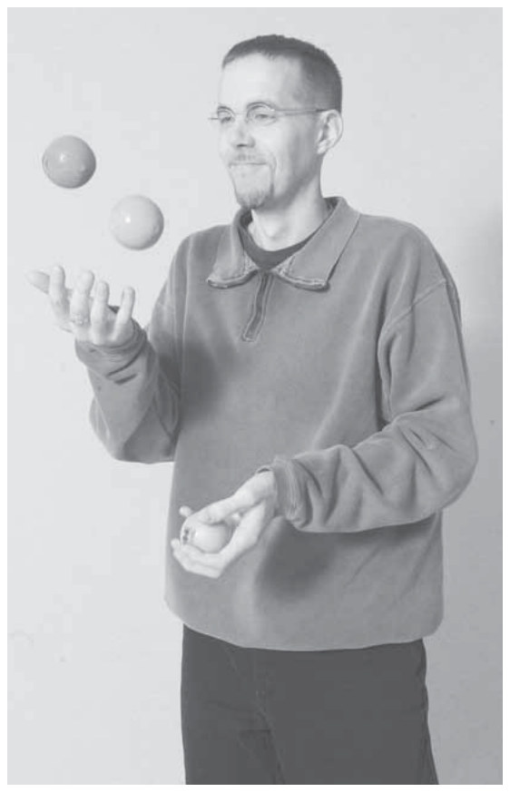</figure>
<p>gồm 5 lần thử luyện tập, trong đó người tham gia luyện tập một pha tương đối (RP) mới được yêu cầu là 90° giữa các ngón tay. Trên đồng hồ nhịp, tần số chuyển động được đặt ở 1,75 hertz. Kiến thức về kết quả dưới dạng RP thực tế được cung cấp sau mỗi lần thử. Ở đầu và cuối mỗi buổi hàng ngày, cũng như giữa các khối luyện tập, một lượt quét được thực hiện trong đó RP được tăng dần từ 0° đến 180° qua 12 bước rời rạc mỗi bước 15°. Để đánh giá tính ổn định của mẫu hình theo thời gian, các lần thử nhớ lại được tiến hành 7 ngày sau, khi người tham gia phải tái tạo điều kiện 90° trong 1 phút.</p>
<p>Vào cuối ngày 1, tính biến thiên của RP vẫn thấp nhất ở 0° và 180°, tăng rõ rệt ở các giá trị trung gian. Những giá trị thấp của tính biến thiên RP cho thấy các vùng ổn định trong cảnh quan. Như mong đợi, các mẫu hình cùng pha và phản pha là ổn định nhất, trong đó mẫu hình sau biến thiên nhiều hơn mẫu hình trước (xem thêm Spotlight on Research, chương 2). Ngoài ra, tính biến thiên giữa các người tham gia là nhỏ nhất ở các pha yêu cầu này. Tuy nhiên, đến cuối ngày 5, tính biến thiên RP cũng thấp ở 90°. Sự hút về vùng 90° thể hiện rõ qua độ dốc âm của các đường cong ở hai bên 90°, cho thấy sự chuyển từ động lực lưỡng ổn sang động lực tam ổn trong cảnh quan (xem hình 5.1).</p>
<p>Dữ liệu nhớ lại cũng cho thấy sự thay đổi này trong cảnh quan nhận thức–vận động tương đối bền vững. Phân tích tiếp theo trên các mẫu hình 0° và 180° cho thấy các điểm hút ban đầu trở nên kém ổn định (và kém hấp dẫn hơn) khi pha 90° được học. Như chúng tôi đã lưu ý trong chương 4, phát hiện sau rõ ràng cho thấy tính siêu ổn định đặc trưng cho khuynh hướng của một hệ thống vận động đang thay đổi cùng với việc học (xem Kelso, 1981). Zanone và Kelso (1992) cho rằng việc học không nhất thiết lúc nào cũng đòi hỏi một sự chuyển pha đột ngột (xem thêm Nouritt et al., 2003) mà cũng có thể diễn ra dần dần hơn khi</p>
<p style="font-style:italic;color:#475569;font-size:.88rem">Hình 5.1: Sự hút về vùng 90° của cảnh quan được chứng minh bằng tính biến thiên RP thấp và độ dốc âm của các đường cong ở hai bên 90°, cho thấy sự chuyển từ động lực lưỡng ổn sang động lực tam ổn.</p>
<p>Trích từ P.G. Zanone and J.A.S. Kelso, &quot;Evolution of behavioral attractors with learning: Nonequilibrium phase transitions,&quot; Journal of Experimental Psychology: Human Perception and Performance Volume 18, Issue 2, pp. 403-421, 1992, Copyright © American Psychological Association. Reprinted with permission.</p>
<p>Lần luyện tập</p>
<p>-45</p>
<p>-90</p>
<p>0 15 30 45 60 75</p>
<p>Ngày 1 Ngày 2 Ngày 3 Ngày 4 Ngày 5 Nhớ lại</p>
<p>RP trung bình (độ)</p>
<p>Độ lệch chuẩn của RP (độ)</p>
<p>Pha yêu cầu (độ)</p>
<p>-45</p>
<p>-90</p>
<p>-135</p>
<p>-180</p>
<p>-225</p>
<p>0 0 90 180 0 90 180 0 90 180</p>
<p>Lần đầu Lần cuối Nhớ lại</p>
<p>Delta RP trung bình (độ)</p>
<p>Độ lệch chuẩn của delta RP (độ)</p>
<figure class="bookfig"><figcaption>Hình 5.1: Sự hút về vùng 90° của cảnh quan được chứng minh bằng tính biến thiên RP thấp và độ dốc âm của các đường cong ở hai bên 90°, cho thấy sự chuyển từ động lực lưỡng ổn sang động lực tam ổn.</figcaption></figure>
<p>&#x27;khoảng cách trong không gian biến số tập thể giữa các yêu cầu hành vi và các mẫu hình được ưu tiên nội tại dường như quyết định bản chất của sự thay đổi&#x27; (p. 418). Cuối cùng, trong nghiên cứu của Zanone và Kelso, tốc độ học mẫu hình 90° khác nhau giữa người tham gia. Một số người cho thấy dấu hiệu hút về mẫu hình này chỉ sau 2 ngày, trong khi những người khác cần tới 5 ngày. Tất nhiên, những khác biệt giữa người học là đặc điểm mà nhiều huấn luyện viên và giáo viên nhận ra, dù còn được diễn đạt khá mơ hồ. Cách giải thích học vận động theo hệ thống động lực cho thấy tính biến thiên giữa cá nhân có thể là đặc hữu của quá trình học vì người học bắt đầu với những khác biệt về động lực học nội tại. Như đã đề cập trong chương 4, sự tương thích giữa động lực học của nhiệm vụ cần học và động lực học nội tại của người học có thể quyết định tốc độ học vận động.</p>
<p>Trong hình 5.2, chúng ta có thể quan sát cách hình dạng của các giếng điểm hút thay đổi trong thí nghiệm của Zanone và Kelso (1992). Hình 5.2a cho thấy tính ổn định của pha tương đối dao động như thế nào trên bố cục điểm hút, với các mẫu hình phản pha và cùng pha thể hiện các trạng thái ổn định (một chế độ lưỡng ổn). Như đã thảo luận trước đó, người ta cho rằng các trạng thái này đại diện cho động lực học nội tại của nhiệm vụ này trong khi vắng mặt thông tin hành vi. Trong hình 5.2b, ba đường cho thấy điều gì xảy ra với cảnh quan khi các mẫu hình 0°, 90° hoặc 180° được học (tức là khi các ảnh hưởng thông số cụ thể được thêm vào). Lưu ý rằng khi các mẫu hình 0° hoặc 180° được học, độ rộng của giếng điểm hút tương ứng đã tăng lên. Điều này cho thấy việc học có thể tăng sức hút của các trạng thái này đối với hệ thống vận động. Tuy nhiên, khi mẫu hình 90° được học, thế năng bị biến dạng và sự cạnh tranh giữa thông tin hành vi và động lực học nội tại kéo các cực tiểu về phía 90°. Một giếng điểm hút mới, rộng hơn đã được tạo ra, trong đó tính linh hoạt tăng lên nhờ ảnh hưởng của động lực học nội tại nền tảng. Khi việc học ở 90° tiếp diễn, hình dạng của giếng điểm hút này thu hẹp và sâu hơn khi mẫu hình</p>
<p style="font-style:italic;color:#475569;font-size:.88rem">Hình 5.2: (a) Tính ổn định của pha tương đối dao động trên bố cục điểm hút, với các mẫu hình phản pha và cùng pha thể hiện các trạng thái ổn định. (b) Ba đường cho thấy điều gì xảy ra với cảnh quan khi các mẫu hình 0°, 90° hoặc 180° được học.</p>
<p>Trích từ P.G. Zanone and J.A.S. Kelso, &quot;Evolution of behavioral attractors with learning: Nonequilibrium phase transitions,&quot; Journal of Experimental Psychology: Human Perception and Performance Volume 18, Issue 2, pp. 403-421, 1992, Copyright © American Psychological Association. Reprinted with permission.</p>
<p>Động lực học nội tại</p>
<p>Pha tương đối (độ)</p>
<p>2.5</p>
<p>2.0</p>
<p>1.5</p>
<p>1.0</p>
<p>0.5</p>
<p>0.0</p>
<p>-1.0</p>
<p>-1.5</p>
<p>-2.0</p>
<p>-2.5-90 0 90 180 270</p>
<p>V(Rel. phase) [Hz]</p>
<p>Pha tương đối độ</p>
<p>Với thông tin hành vi</p>
<p>-10</p>
<p>-15</p>
<p>-20</p>
<p>-25-90 0 90 180 270</p>
<p>V(Rel. phase) [Hz]</p>
<figure class="bookfig">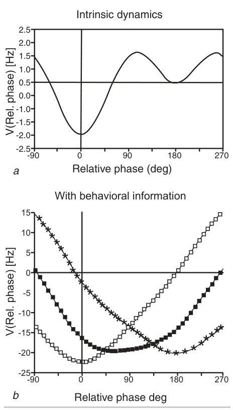<figcaption>Hình 5.2: (a) Tính ổn định của pha tương đối dao động trên bố cục điểm hút, với các mẫu hình phản pha và cùng pha thể hiện các trạng thái ổn định. (b) Ba đường cho thấy điều gì xảy ra với cảnh quan khi các mẫu hình 0°, 90° hoặc 180° được học.</figcaption></figure>
<p>được ghi nhớ và tăng tính ổn định với cái giá là các mẫu hình 0° và 180° (xem Wenderoth &amp; Bock, 2001).</p>
<p>Tính đối xứng và tính tương đương chức năng</p>
<p>Trong một nghiên cứu sau đó, Zanone và Kelso (1997) lại dùng nhiệm vụ vẫy ngón tay hai tay để chứng minh hai đặc điểm thú vị khác của người học đang tìm cách ổn định một mẫu hình vận động mới. Thứ nhất, họ chứng minh rằng người học có thể tạo ra các mẫu hình đối xứng với những mẫu hình họ đang luyện tập. Ví dụ, khi người tham gia học một pha 90° (tức là ngón tay trái chậm hơn ngón tay phải một phần tư chu kỳ), họ cũng có thể thực hiện mẫu hình pha 270° hoặc 90° (tức là ngón tay trái dẫn trước ngón tay phải cùng một lượng), dù chưa từng luyện tập mẫu hình sau. Các tác giả cho rằng luyện tập mẫu hình 90° đã tạo ra một mẫu hình mới, ổn định xuất hiện trong cảnh quan nhận thức–vận động ở 270°. Phát hiện đáng chú ý này cho thấy việc học có thể dẫn đến những thay đổi toàn cục trong cảnh quan nhận thức–vận động và có thể ảnh hưởng đến tính ổn định của các mẫu hình vận động khác ngay cả khi những mẫu hình đó không phải là đối tượng của luyện tập cụ thể.</p>
<p>Kết quả thứ hai từ nghiên cứu năm 1997 của Zanone và Kelso là người tham gia có thể thực hiện mối quan hệ pha mới học bằng những cách khác nhau. Dù yêu cầu nhiệm vụ luôn được đáp ứng, các giải pháp khác nhau dao động từ chuyển động mượt mà, gần hình sin của cả hai cơ quan cuối (ngón tay) đến các chuyển động góc cạnh, không liên tục. Zanone và Kelso giải thích những phát hiện này là người học thể hiện tính tương đương chức năng, trong đó việc học diễn ra ở mức trừu tượng của động lực học phối hợp bất kể cơ quan cuối (đoạn chi) được dùng để tạo ra kết quả cuối cùng. Kelso và Zanone (2002) sau đó đã xác nhận khái niệm này bằng cách chỉ ra rằng dù người tham gia luyện tập mẫu hình pha hai tay bằng cánh tay hay bằng chân, họ đều có thể chuyển giao mẫu hình đã học sang một hệ thống cơ quan cuối khác. Những dữ liệu này cho thấy động lực học phối hợp đã học có thể trừu tượng và phổ quát đến mức nào.</p>
<p>Đánh giá việc học trong sư phạm phi tuyến</p>
<p>Quy trình quét đã mô tả ở trên sẽ khó áp dụng trong những môi trường học tập thực tế nếu thiếu các công cụ đo lường tinh vi. Tuy nhiên, việc thường xuyên đánh giá tiến bộ của người học là then chốt để người thực hành hướng dẫn luyện tập đang diễn ra. Người thực hành thường có xu hướng liên hệ tính biến thiên vận động với lỗi và tin rằng giảm thiểu lỗi hiệu suất sẽ cho thấy sự cải thiện. Tuy nhiên, trong sư phạm phi tuyến, người thực hành nhìn nhận tính biến thiên vận động tích cực hơn. Trong hệ thống vận động, tính biến thiên hiện diện ở khắp nơi, không thể tránh khỏi, và thậm chí có thể cung cấp một chỉ dấu hữu ích cho hành vi khám phá ở người học; thực tế, một sự thay đổi trong ràng buộc có thể đóng vai trò chất xúc tác cho một mẫu hình vận động mới bằng cách giúp tạo ra nhiều tính biến thiên hơn ở người học. Zanone và Kelso (1992) cho rằng hệ thống vận động phải trải qua những dao động tới hạn trước khi có thể định vị lại mình trong một trạng thái điểm hút mới. Hơn nữa, để mở rộng nền điểm hút mà người học hiện đang chiếm giữ, họ phải luyện tập trong một phạm vi ràng buộc đa dạng.</p>
<p>Thao tác các ràng buộc là một cách tự nhiên để học kỹ năng và đánh giá sự phát triển kỹ năng. Trên nhiều phương diện, đây là nền tảng của sư phạm phi tuyến. Ví dụ, các ràng buộc của nhiệm vụ đại diện cho một con đường trực tiếp để thay đổi hành vi và có thể tạo ra những chuyển đổi đột ngột trong kỹ thuật ngay từ đầu luyện tập. Về sau trong quá trình luyện tập, những thay đổi có thể ít đột ngột hơn và tính biến thiên của mẫu hình có thể phản ánh sự tinh chỉnh và thích ứng của người học (Liu et al., 2006).</p>
<p>Việc thay đổi các ràng buộc cơ thể hay cá nhân thường mất nhiều thời gian hơn, và chúng ta có thể mong đợi những thích ứng chậm hơn, bền vững hơn trong phối hợp là kết quả của, chẳng hạn, luyện tập kéo dài về tính linh hoạt hoặc sức bền. Xét về các ràng buộc môi trường, những ràng buộc văn hóa và xã hội cũng có tác động chậm hơn và tinh tế hơn đối với hành vi, dù có người lập luận rằng những ràng buộc này xuất hiện và suy giảm nhanh hơn một số ràng buộc cơ thể, chẳng hạn như ảnh hưởng của ràng buộc di truyền đối với sự biến thiên trong quần thể (Ehrlich, 2000). Ví dụ, trong một môi trường giao thông đông đúc, người lái xe cần thích ứng hành động của mình nhanh chóng, nhưng phong cách lái của họ có thể không bị ảnh hưởng nhanh bởi quan điểm xã hội về việc lái xe do những thay đổi trong góc nhìn văn hóa quy định.</p>
<p>Khi xem xét cách cảnh quan nhận thức–vận động thay đổi theo thời gian, cần thừa nhận rằng các ràng buộc có ảnh hưởng hoạt động trên những thang thời gian khác nhau. Theo Newell (1986), các ràng buộc có thể tương đối phụ thuộc thời gian hoặc độc lập với thời gian; nghĩa là, &#x27;tốc độ mà các ràng buộc có thể thay đổi theo thời gian thay đổi đáng kể tùy theo mức phân tích và thông số đang được xem xét&#x27; (p. 347). Newell và các cộng sự (2001) đã chỉ ra rằng &#x27;các thang thời gian trong học vận động và phát triển bao gồm ảnh hưởng của các thang thời gian của chủng hệ và cá thể phát sinh trong học vận động, cùng tác động liên quan của văn hóa và xã hội đối với sự phát triển của hành động con người.</p>
<p>Người thực hành nên nhìn nhận tính biến thiên vận động tích cực hơn vì nó có thể cung cấp một chỉ dấu hữu ích cho hành vi khám phá ở người học. Một sự thay đổi trong ràng buộc có thể đóng vai trò chất xúc tác cho một mẫu hình vận động mới bằng cách giúp tạo ra nhiều tính biến thiên hơn.</p>
<figure class="bookfig">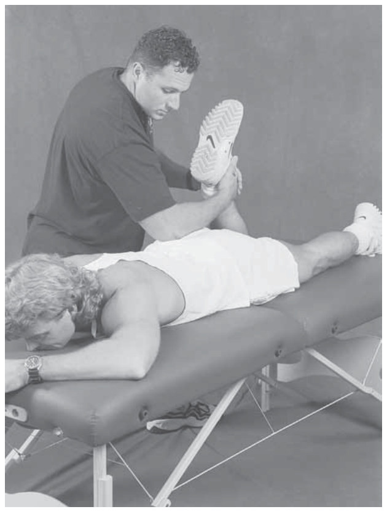</figure>
<p>Bối cảnh rộng hơn này giúp làm nổi bật và nhấn mạnh vai trò trung tâm mà một số thang đóng trong nghiên cứu học vận động và phát triển&#x27; (p. 64).</p>
<p>Vấn đề các ràng buộc khác nhau hoạt động trên những thang thời gian khác nhau có hệ quả đối với sự đánh giá của người thực hành về tốc độ tiến bộ của người học. Khi học một mẫu hình phối hợp mới, những thay đổi hành vi bền vững hơn mất nhiều thời gian để xuất hiện hơn là những thích ứng tức thì đối với ràng buộc nhiệm vụ trong luyện tập. Do đó, người thực hành nên hiểu rằng một số hành vi có thể là những thích ứng tạm thời đối với các ràng buộc nhiệm vụ áp đặt ngay trong lúc luyện tập, và những ràng buộc này tương tác với các ràng buộc cơ thể liên quan đến trạng thái phát triển. Những ràng buộc quan trọng ở đây bao gồm tác động của thiết bị cụ thể, địa điểm và hướng dẫn mà người học trải nghiệm ở một giai đoạn phát triển nhất định. Người thực hành cần quan sát cẩn thận để đảm bảo rằng hành vi nổi lên dưới ràng buộc không phải là hiệu ứng tạm thời mà phản ánh đặc điểm ổn định ở mức thực hiện hiện tại của mỗi người học. Đánh giá việc học đòi hỏi những người theo sư phạm phi tuyến phải quen thuộc với các ràng buộc có ảnh hưởng định hình hành vi. Trong việc cấu trúc một môi trường học tập hiệu quả, những ràng buộc này nên được thao tác để tạo điều kiện cho người học tìm kiếm các mẫu hình phối hợp hiệu quả hơn. Kế hoạch 4 bước sau có thể giúp người thực hành tiếp cận một cách hệ thống việc đánh giá trong môi trường học tập của mình:</p>
<p>1. Xác định các ràng buộc đáng kể giới hạn hành vi trong từng nhiệm vụ vận động mà người thực hành đang dạy (ví dụ: nhiệm vụ, cá nhân, môi trường). 2. Kiểm tra phản ứng của một vài người học ở các giai đoạn phát triển khác nhau trước những thay đổi tinh tế trong ràng buộc, theo dõi phản ứng ban đầu và ngắn hạn của họ. 3. Điều chỉnh mức độ và tần suất thay đổi ràng buộc cho phù hợp với từng người học. 4. Dùng tính biến thiên vận động làm chỉ báo về tính ổn định của điểm hút, tiếp tục đánh giá việc duy trì và chuyển giao kỹ năng của người học.</p>
<p>Khi người học bị kẹt trong lối mòn: Hãy thực hiện một bước tiến lớn</p>
<p>Mối bận tâm khác mà người thực hành thường đối mặt là làm thế nào để những người thực hiện có kinh nghiệm thay đổi các mẫu hình phối hợp đã ăn sâu. Dù đã luyện tập lặp đi lặp lại trong thời gian dài, người học có thể bị kẹt trong lối mòn, ít có tiến bộ. Dù đôi khi người thực hành gọi đây là hiệu ứng đình trệ hiệu suất, thực chất hệ thống vận động đã tạm thời bị mắc kẹt trong một trạng thái điểm hút sâu, ổn định có thể không hiệu quả bằng các trạng thái lân cận khác. Trong hình 5.3, mức thực hiện của một vận động viên nhảy sào, được biểu thị bằng chiều cao cá nhân tốt nhất, đã ngừng cải thiện dù tiếp tục luyện tập. Nói cách khác, một số mẫu hình vận động có thể trở nên quá ổn định. Bên cạnh đó, sự hình thành của mẫu hình đã được thiết lập đã làm suy yếu tính ổn định của các điểm hút lân cận, khiến người học ít có khả năng sử dụng một mẫu hình phối hợp thay thế. Liệu sự đình trệ này có cho thấy cần một sự thay đổi trong phối hợp để kích thích sự cải thiện hơn nữa không?</p>
<p>Người thực hành có thể xem xét hai cách tiếp cận tiềm năng cho vấn đề này. Để đơn giản, chúng ta sẽ dùng ví dụ về một người chơi quần vợt phụ thuộc nhiều vào cú trái tay hai tay. Theo cách tiếp cận sư phạm phi tuyến, người thực hành có thể giúp người chơi khám phá các cú đánh thay thế ở phía trái tay như thế nào? Chiến lược hữu ích đầu tiên liên quan đến việc làm suy yếu dần tính ổn định của trạng thái điểm hút hiện có bằng cách cố gắng tạo ra tính biến thiên trong mẫu hình vận động. Đây là một ý tưởng ngược trực giác, vì theo truyền thống mục tiêu của luyện tập là làm cho các mẫu hình vận động ổn định hơn (và do đó ít mắc lỗi hơn) theo thời gian. Để đạt được mục tiêu này, người thực hành nên khuyến khích người chơi tiếp tục luyện tập với kỹ thuật quen thuộc, nhưng phải tìm cách thay đổi dần các thông số kiểm soát tiềm năng như tốc độ bóng hoặc độ cao của bóng nảy để khuyến khích nhiều tính biến thiên hơn.</p>
<p>Ví dụ, trong luyện tập, huấn luyện viên quần vợt có thể dùng một máy phát bóng điều chỉnh được hoặc nhiều quả bóng mới và đã dùng để thay đổi đặc tính bay của bóng. Trong những tình huống này, kỹ thuật hai tay nên trở nên biến thiên hơn như một hệ quả của việc thay đổi ràng buộc nhiệm vụ, và</p>
<p style="font-style:italic;color:#475569;font-size:.88rem">Hình 5.3: Sự đình trệ hiệu suất của một vận động viên nhảy sào.</p>
<p>Ngày thi đấu</p>
<p>Hiệu suất đình trệ?</p>
<p>4.4</p>
<p>4.45</p>
<p>4.5</p>
<p>4.55</p>
<p>4.6</p>
<p>4.65</p>
<p>4.7</p>
<p>4.75</p>
<p>4.8</p>
<p>Aug-00 Nov-00 Feb-01 May-01 Aug-01 Nov-01 Feb-02 May-02 Aug-02 Nov-02 Feb-03</p>
<p>Chiều cao nhảy được (m)</p>
<figure class="bookfig">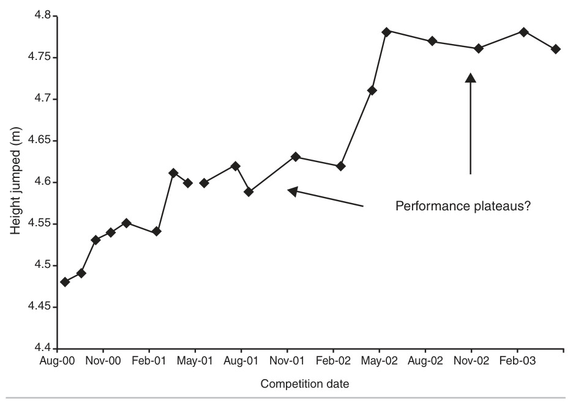<figcaption>Hình 5.3: Sự đình trệ hiệu suất của một vận động viên nhảy sào.</figcaption></figure>
<p>người chơi sẽ bắt đầu thấy khó thực hiện cú đánh quen thuộc. Ví dụ, bắt người chơi đánh bóng sớm hơn nếu bóng nảy quá cao, giảm độ vung ngược của vợt để trả bóng nhanh hơn, hoặc buông một tay khỏi vợt để giải phóng thêm các bậc tự do có thể bắt đầu làm mất ổn định một mẫu hình vận động hiện có và cung cấp thời gian luyện tập khám phá quý giá cho người chơi. Có thể mất một thời gian để cách tiếp cận này dẫn đến những thay đổi hành vi dài hạn, nhưng xét đến lượng thời gian đã đầu tư để ổn định kỹ thuật ban đầu, điều này không có gì đáng ngạc nhiên.</p>
<p>Một cách tiếp cận thay thế để thay đổi những kỹ thuật đã ăn sâu là nhiễu loạn hệ thống từ một điểm hút hiện có hướng tới một mẫu hình vận động có chức năng hơn (Newell, 1996). Nói cách khác, người thực hành có thể thử một thao tác ràng buộc triệt để hơn để đẩy người thực hiện ra khỏi kỹ thuật quen thuộc. Trở lại với người chơi quần vợt, người thực hành có thể ngăn ngay giải pháp hai tay xuất hiện bằng cách ràng buộc nhân tạo cánh tay không thuận, chẳng hạn yêu cầu người chơi cầm một quả bóng hoặc một chiếc vợt trong tay không thuận. Giờ đây, người chơi sẽ nhanh chóng bị buộc phải luyện tập cú đánh một tay như hệ quả của việc thay đổi nhiệm vụ ràng buộc. Bài tập này cũng có thể mang lại lợi ích bổ sung là giúp người chơi phát triển sự cân bằng trong cú đánh bằng cách đối kháng vị trí của cánh tay đánh với chi không thuận.</p>
<p>Trong mỗi cách tiếp cận này, cả người học và người thực hành đều nên hiểu rằng sẽ có sự gia tăng tạm thời về lỗi khi mẫu hình vận động mới hình thành và trạng thái điểm hút cũ bị suy yếu. Dù sự chuyển sang một trạng thái điểm hút mới, nông hơn là nhanh chóng trong cách tiếp cận thứ hai, có thể mất thời gian để phát triển tính nhất quán gắn với cú đánh hai tay. Như vậy, việc thêm tính biến thiên vào một mẫu hình vận động có thể có lợi cho những thay đổi dài hạn trong hành vi vận động. Người thực hành cũng như người học không nên coi sự gia tăng ban đầu về tính biến thiên vận động là tiêu cực. Thay vào đó, đôi khi bạn cần lùi hai bước để tiến một bước dài.</p>
<p>Người thực hành có thể ngăn giải pháp hai tay xuất hiện bằng cách yêu cầu người chơi quần vợt cầm một quả bóng hoặc một chiếc vợt trong tay không thuận.</p>
<p>Ảnh do Matthew Dicks cung cấp</p>
<figure class="bookfig"></figure>
<h3>Góc nhìn của người thực hành</h3>
<p>Cho đến nay, chúng tôi đã cố gắng mô tả cách tiếp thu kỹ năng diễn ra theo thời gian. Các nhà nghiên cứu theo truyền thống coi việc học là một quá trình không thể quan sát trực tiếp, được đánh giá gián tiếp qua những thay đổi hành vi tương đối bền vững (ví dụ: Schmidt &amp; Lee, 2005), nhưng một đơn vị phân tích giàu thông tin hơn có thể tìm thấy trong động lực học phối hợp của người học. Người thực hành có thể bắt đầu nhận ra những dấu hiệu quan trọng trong sự phát triển của người học cho thấy người học đang cố gắng điều chỉnh yêu cầu nhiệm vụ phù hợp với động lực học nội tại hiện có như thế nào. Tính biến thiên vận động có thể được xem như những nỗ lực của người học nhằm tìm kiếm giải pháp hiệu quả hơn cho mục tiêu nhiệm vụ. Giờ đây chúng tôi sẽ xem xét bằng chứng về việc huấn luyện viên, giáo viên giáo dục thể chất và nhà trị liệu có đang áp dụng những ý tưởng này hay không.</p>
<p>Huấn luyện viên điền kinh</p>
<p>Huấn luyện viên điền kinh đảm nhận một vai trò phức tạp, đa diện vì họ thường được kỳ vọng đóng cùng lúc nhiều vai: người huấn luyện, giáo viên, bạn bè, người tạo động lực và người duy trì kỷ luật. Abraham và Collins (1998) phân biệt hai cách tiếp cận truyền thống điển hình trong đào tạo huấn luyện viên; việc xem lại hai cách này có thể hữu ích để nâng cao hiểu biết của chúng ta về sư phạm phi tuyến. Cách thứ nhất là huấn luyện dựa trên kinh nghiệm, rút từ kho tàng tri thức và kinh nghiệm mà nhiều huấn luyện viên đã tích lũy được trong quá trình tham gia một môn thể thao hoặc hoạt động cụ thể. Những người thực hành theo cách tiếp cận kinh nghiệm dựa vào sự hiểu biết trực giác về thể thao và tri thức được truyền lại từ những đồng nghiệp có ảnh hưởng để định hướng kế hoạch và tổ chức của mình trong môi trường học tập (Potrac, Brewer, Jones, Armour, &amp; Hoff, 2000).</p>
<p>Tuy nhiên, dù tri thức kinh nghiệm có những ưu điểm trong bối cảnh này (chẳng hạn như thu hút ngay sự chú ý của người học), nó không cung cấp cho huấn luyện viên một khung khách quan dựa trên lý thuyết để hiểu cách họ có thể giúp người học tiếp thu kỹ năng. Một mô hình về cách con người thực sự học là yếu tố quan trọng nhưng thường bị bỏ sót trong giáo dục và đào tạo huấn luyện viên. Huấn luyện trực giác cũng có khả năng cản trở việc truyền tải tri thức thu thập được từ nghiên cứu học vận động vào thực tiễn (Fairweather, 1999). Thực vậy, sự phong phú của các tạp chí, sách và tập san do người thực hành viết và dành cho người thực hành lại đáng chú ý vì thiếu sự thảo luận về các khung lý thuyết làm nền tảng cho công việc thực hành (xem thêm Lyle, 2002). Trong các nghề liên quan như y học thể thao và vật lý trị liệu, chỉ riêng tri thức kinh nghiệm khó có thể đủ cho một nhà trị liệu lần đầu làm việc với bệnh nhân bị thương. Vì lý do này, nhiều nghề đã thiết lập quy trình công nhận ghi nhận số lượng nghiên cứu, mức độ tri thức và bản chất của các kỹ năng thực hành mà mỗi người đạt được trong quá trình đào tạo.</p>
<p>Cách tiếp cận giáo dục phổ biến thứ hai mà Abraham và Collins (1998) xác định là huấn luyện theo phương pháp, theo đó người thực hành học cách phân tách và giảng dạy các kỹ năng vận động cụ thể theo cách cơ học để ghép lại thành kỹ thuật đúng. Đây là phương pháp huấn luyện chiếm ưu thế và chịu ảnh hưởng từ mô hình người học được ủng hộ trong cách tiếp cận xử lý thông tin đối với học vận động (ví dụ, xem Christina &amp; Corcos, 1998; và Sharp, 1992). Được thừa nhận rộng rãi là nhiều người thực hành thể thao sử dụng mô hình học tập phổ biến này một cách tường minh hay tiềm ẩn (Handford, Davids, Bennett, &amp; Button, 1997; Schmidt &amp; Wrisberg, 2004).</p>
<p>Với ảnh hưởng lý thuyết của cách tiếp cận xử lý thông tin đối với giáo dục huấn luyện viên truyền thống, không có gì ngạc nhiên khi người thực hành thường đưa ra rất nhiều hướng dẫn bằng lời cho vận động viên của mình. Trong bầu không khí hướng tới chiến thắng ngày nay, huấn luyện viên thường bị cuốn vào cách dạy này. Do áp lực xã hội muốn được xem là huấn luyện viên luôn can thiệp trực tiếp, sự cám dỗ đưa ra lời khuyên mỗi khi vận động viên mắc lỗi có thể trở nên quá lớn (Sidaway &amp; Hand, 1993). Hơn nữa, khi làm việc với nhóm vận động viên đông, nhiều huấn luyện viên tạo ra ảo giác kiểm soát bằng cách liên tục quát tháo các chỉ dẫn. Tuy nhiên, một thế lưỡng nan lớn xuất hiện nếu vận động viên bị quá tải thông tin hoặc trở nên quá phụ thuộc vào ý kiến của huấn luyện viên trong luyện tập. Do đó, dù huấn luyện theo phương pháp có vẻ mang lại lợi ích hiệu suất ngay lập tức và tạm thời, nó có thể không khuyến khích việc giải quyết vấn đề độc lập hay sự duy trì và chuyển giao hiệu suất hiệu quả (Davids, Kingsbury, Bennett, &amp; Handford, 2001). Việc bắt vận động viên sao chép một mẫu hình vận động được lý tưởng hóa có thể không phù hợp với động lực học nội tại cá nhân của họ là rất ít giá trị.</p>
<p>Nhiều huấn luyện viên trở thành những người thực hành xuất sắc dù còn thiếu sót trong đào tạo hoặc giáo dục. Những huấn luyện viên này thường là những người giao tiếp tuyệt vời.</p>
<figure class="bookfig"></figure>
<p>Potrac và các cộng sự (2000) gần đây đã chỉ ra rằng cần có một sự chuyển dịch trong trọng tâm của giáo dục huấn luyện viên, &#x27;từ cách tiếp cận cơ học về tâm trí/thân thể sang sự tập trung sắc bén hơn vào con người, bằng cách làm sáng tỏ những tương tác vi mô phức tạp đại diện cho thực tại hàng ngày và phức tạp của quá trình huấn luyện động&#x27; (p. 195). Tất nhiên, có nhiều huấn luyện viên trở thành những người thực hành xuất sắc dù còn thiếu sót trong đào tạo hoặc giáo dục. Những huấn luyện viên này thường là những người giao tiếp tuyệt vời, và họ biết khi nào cần nói chuyện với vận động viên và khi nào cần lắng nghe.</p>
<p>Giáo viên giáo dục thể chất</p>
<p>Hai cách tiếp cận giảng dạy khác biệt rõ rệt đã được đề xuất cho giáo viên giáo dục thể chất: cách dạy trò chơi truyền thống thông qua phương pháp chỉ thị trực tiếp và phương pháp Teaching Games for Understanding (TGfU) (Dạy trò chơi để hiểu biết). Một số điểm tương đồng giữa cách tiếp cận TGfU (Bunker &amp; Thorpe, 1986) và sư phạm phi tuyến đã được mô tả trong chương trước hẳn đã trở nên rõ ràng, dù các khung lý thuyết cũng khác nhau ở nhiều khía cạnh then chốt.</p>
<p>TGfU và sư phạm phi tuyến Trọng tâm của TGfU là cung cấp những trải nghiệm học tập giúp người học tiếp thu các kỹ năng chiến thuật thông qua việc chơi các phiên bản biến đổi của một trò chơi mục tiêu. Vì TGfU nhấn mạnh phát triển hiểu biết chiến thuật trước kỹ thuật vận động, nó được xem như một cách tiếp cận nhằm điều chỉnh lại sự cân bằng theo hướng hiểu tại sao chơi trò chơi trước khi biết cách chơi (Hopper, 2002; Werner et al., 1996). Để minh họa cho sự nhấn mạnh vào nhận thức chiến thuật, Thorpe (1990) đã chỉ ra rằng &#x27;triết lý cơ bản của dạy trò chơi để hiểu là một người có thể chơi trò chơi với kỹ thuật hạn chế và, ngay cả với kỹ thuật hạn chế, vẫn có thể rất cạnh tranh&#x27; (p. 90).</p>
<p>Các cách tiếp cận truyền thống nhấn mạnh việc tiếp thu kỹ thuật tách rời khỏi bối cảnh thực hiện trước khi dùng những kỹ năng đó trong một trò chơi cụ thể (Turner &amp; Martinek, 1999). Ngược lại, TGfU lấy học sinh làm trung tâm, với việc học cả chiến thuật lẫn kỹ năng đều diễn ra trong bối cảnh trò chơi biến đổi (Griffin, Butler, Lombardo, &amp; Nastasi, 2003; Hopper, 2002; Thorpe, 2001). Theo nghĩa này, các trò chơi biến đổi được luyện tập để nâng cao sự hiểu biết và nhận thức của người học trong bối cảnh trò chơi đầy đủ. Sự trân trọng trò chơi được nhấn mạnh nhằm tăng hiểu biết về luật lệ và bản chất của trò chơi. Nhận thức chiến thuật cũng được khuyến khích để thách thức người học giải quyết các vấn đề do trò chơi đặt ra và thu thập tri thức liên quan đến thực hiện. Sau sự nhấn mạnh ban đầu này là phát triển việc ra quyết định, dẫn đến việc biết cần làm gì và làm thế nào trong những tình huống chiến thuật cụ thể. Sau đó, thực hiện kỹ năng và hiệu suất được đánh giá bằng cách quan sát kết quả của các quyết định khi người học thực hiện chúng trong lúc chơi thực tế (Turner &amp; Martinek, 1999; Werner et al., 1996). Tóm lại, những đặc điểm chính của TGfU là cách tiếp cận lấy học sinh làm trung tâm và tính linh hoạt trong thao tác ràng buộc ở các trò chơi biến đổi để dạy chiến thuật và sau đó là các kỹ năng liên quan đến khái niệm chiến thuật (Griffin et al., 2003; Hopper, 2002).</p>
<p>Sư phạm phi tuyến như một khung lý thuyết cho TGfU Dù nghiên cứu về TGfU đã được tiến hành trong 20 năm qua, vẫn còn những câu hỏi về hiệu quả tương đối của nó, bao gồm những câu sau:</p>
<p>Nhu cầu được nhận thức là phải phân biệt phát triển kỹ năng với phát triển chiến thuật có hợp lệ khi đánh giá hiệu quả của TGfU so với các cách tiếp cận truyền thống dựa trên kỹ thuật không? Có một khung lý thuyết đủ mạnh để cung cấp các khái niệm giải thích và giả thuyết có thể kiểm chứng nhằm làm rõ kỳ vọng và dự đoán trong nghiên cứu thực chứng liên quan đến TGfU không? TGfU có phù hợp với người ở mọi giai đoạn học tập không?</p>
<p>Hiện TGfU còn thiếu một nền tảng lý thuyết vững chắc để kiểm tra hiệu quả của nó như một cách tiếp cận sư phạm. Trong bài tổng quan về TGfU, Griffin, Brooker và Patton (2005) nhận xét rằng hiệu quả của nó có thể được đặt nền trên ba khung lý thuyết khả dĩ, gồm lý thuyết mục tiêu thành tích, xử lý thông tin và học tập tình huống. Đặc biệt, nhiều nhà nghiên cứu giáo dục thể chất tin rằng cách tiếp cận TGfU nhìn chung phù hợp với các xu hướng lý thuyết của chủ nghĩa nhận thức và chủ nghĩa kiến tạo, cũng như học tập tình huống (ví dụ: Kirk &amp; MacPhail, 2002). Tuy nhiên, McMorris (1998) đã đưa ra một nhận xét sắc sảo khi lưu ý rằng rất ít nỗ lực được thực hiện nhằm kiểm tra mối quan hệ giữa nghiên cứu về TGfU và các lý thuyết nổi bật về học nhận thức–vận động. Do đó, dù phổ biến, vẫn có rất ít lập luận lý thuyết toàn diện cho TGfU được đưa ra trong các tài liệu nhấn mạnh cách hành vi vận động hướng mục tiêu nổi lên trong một bối cảnh TGfU (tuy nhiên, xem Turner &amp; Martinek, 1999, để có lập luận dựa trên tri thức mô tả và tri thức thủ tục). Điểm yếu này đã được khắc phục nhờ khung sư phạm phi tuyến, khai thác công trình lý thuyết về ràng buộc trong học vận động để hình thành một nền tảng có nguyên tắc cho việc dạy và học. Bằng chứng cho thấy việc thao tác ràng buộc của các giáo viên thể chất có thể dẫn đến sự hình thành các mẫu hình vận động thành công, hành vi ra quyết định và những ý định định hướng việc đạt được mục tiêu nhiệm vụ (xem Chow et al., 2006; Chow et al., in press). Cách quan niệm hoàn toàn khác biệt này về tính biến thiên vận động phù hợp với các tuyên bố sư phạm về hiệu quả của góc nhìn TGfU. Ví dụ, den Duyn (1996) đã nhận xét rằng, &#x27;Một trong những khía cạnh thú vị của cách tiếp cận cảm nhận trò chơi là kỹ thuật không đúng không nhất thiết bị coi là một &quot;điều xấu&quot; phải ngay lập tức thay đổi. Nhiều vận động viên dùng kỹ thuật không chính thống nhưng vẫn đạt được kết quả đúng (và thường làm bối rối đối thủ)&#x27; (p. 7).</p>
<p>Tuy nhiên, điều này không có nghĩa là huấn luyện viên và giáo viên thể chất nên cho chơi tự do và hy vọng người học hoàn thành một nhiệm vụ đặt ra bằng bất cứ cách nào mà người học cho là phù hợp. Giáo viên phải xem xét các ràng buộc trong môi trường học tập để học sinh có thể dùng một phản ứng phù hợp nhằm đạt được kết quả học tập mong muốn đã được lên kế hoạch cho buổi học. Các ràng buộc của nhiệm vụ đặc biệt quan trọng đối với cách tiếp cận TGfU vì chúng bao gồm luật chơi, thiết bị được dùng, ranh giới khu vực chơi và các vạch đánh dấu, lưới và khung thành, số người chơi tham gia, cũng như các nguồn thông tin hiện diện trong những bối cảnh thực hiện cụ thể. Rõ ràng, các nhà sư phạm cần nắm vững các ràng buộc nhiệm vụ của từng môn thể thao và trò chơi cụ thể, vì việc thao tác chúng có thể dẫn đến sự định hướng của một số mẫu hình phối hợp và hành vi ra quyết định nhất định (Araújo et al., 2004).</p>
<p>Các trò chơi biến đổi trong cách tiếp cận TGfU thường liên quan đến việc điều chỉnh ràng buộc nhiệm vụ để cho phép các bước tiến phù hợp trong phát triển chiến thuật. Ví dụ, thay vì tổ chức một trận đấu đầy đủ trong môn khúc côn cầu trên cỏ, có thể thao tác luật chơi để tạo ra tình huống 3 chống 1 (3v1) nhằm khuyến khích việc giữ bóng của đội ba người. Việc sử dụng thiết bị biến đổi cũng được khuyến khích rộng rãi trong TGfU. Vợt ngắn hơn, bóng to hơn và các vật thể bay nhẹ hơn đều là những cách thao tác ràng buộc nhiệm vụ khả dĩ giúp trò chơi biến đổi dễ chơi hơn cho người học. Việc thao tác ràng buộc nhiệm vụ và làm cho trò chơi biến đổi có thể chơi được với mọi người học chắc chắn đáp ứng được niềm tin của Bunker và Thorpe (1982) về việc phát triển kết quả trân trọng trò chơi cho TGfU. Việc dùng các ràng buộc nhiệm vụ và ràng buộc thông tin trong TGfU cho phép người học ghép nối thành công chuyển động của mình với các nguồn thông tin then chốt trong những bối cảnh cụ thể.</p>
<p>Cùng với việc học, người chơi trở nên giỏi hơn trong việc phát hiện các biến thông tin then chốt quy định chuyển động từ vô số biến không then chốt. Bên cạnh đó, người học có thể điều chỉnh chuyển động của mình theo những nguồn thông tin thiết yếu có được qua luyện tập, từ đó thiết lập các ghép nối thông tin–chuyển động có thể điều chỉnh hành vi (Jacobs &amp; Michaels, 2002). Ví dụ, trong một trò chơi đánh và chạm bóng như bóng chày, nơi vấn đề chiến thuật trong một tiết TGfU có thể là ngăn đối phương ghi điểm, các cầu thủ sân ngoài cần phát triển những ghép nối thông tin–chuyển động hiệu quả bằng cách nhận biết thông tin về vị trí và thời điểm của quỹ đạo bóng và ghép thông tin đó với chuyển động phù hợp để bắt bóng thành công. Một ví dụ hay cho ý tưởng này được Thorpe (2001) đưa ra, khi ông minh họa cách một người đang ngã vẫn có thể chuyền bóng rổ trong một tình huống bị ràng buộc về thời gian, qua đó chứng minh sự liên kết giữa nhận thức và chuyển động trong những bối cảnh thể thao động như vậy.</p>
<p>Có thể thao tác các ràng buộc nhiệm vụ phù hợp để tạo ra những ranh giới cần thiết nhằm khuyến khích người học thực hiện một động tác chiến thuật trong trò chơi đồng đội. Ví dụ, khi dạy lối chơi tấn công trong bóng chuyền, có thể thao tác ràng buộc thiết bị để dùng lưới cầu lông thấp hơn nhiều so với lưới bóng chuyền thật. Ngoài ra, các ràng buộc hướng dẫn cụ thể có thể nhấn mạnh việc đưa bóng về phía đối thủ thông qua tiếp xúc bóng trên đầu, khuyến khích người học thực hiện động tác chuyền bóng để dọn bóng cho một pha tấn công trên đầu. Những ràng buộc khác cho phép bóng nảy giữa các cú đánh trong cùng một đội và động tác tung bóng để phát bóng mang lại cơ hội thành công lớn hơn trong trò chơi tình huống. Các ràng buộc nhiệm vụ trong buổi học có thể dẫn dắt người học tìm kiếm những chuyển động phù hợp hướng đến mục tiêu nhằm cố gắng vượt qua đối thủ. Với các ràng buộc nhiệm vụ phù hợp được thiết lập, người học sẽ sớm nhận ra rằng để một cú đánh tấn công được chuyển sang sân của đối phương, đường chuyền trước cú tấn công đó phải cao. Đến lượt mình, người học sẽ cố gắng chuyền bóng cao, hoặc bằng cách đỡ bóng thấp hoặc thử chuyền bóng trên không.</p>
<p>Theo nghĩa này, hành vi hướng đến mục tiêu xuất hiện mà không cần đưa ra những hướng dẫn tường minh, mang tính quy định về cách thực hiện đường chuyền trên đầu cho một cú đập bóng. Sau đó, sự phát triển kỹ năng diễn ra sau buổi hỏi đáp (buổi này xác nhận việc trình diễn mẫu hành vi vận động mong muốn và quyết định dọn bóng cho một pha tấn công). Các ràng buộc nhiệm vụ có thể được điều chỉnh thêm để tạo ra ranh giới chặt chẽ hơn cho người học trong việc dọn bóng cho một pha tấn công với những hướng dẫn đã được sửa đổi, nhằm thực hiện đường chuyền trước cú đánh tấn công. Thông qua việc cố gắng đáp ứng các ràng buộc do giáo viên thể dục điều chỉnh, người học sẽ dần dần thu được những kỹ năng ra quyết định phù hợp để dọn bóng cho pha tấn công, từ đó giải quyết vấn đề chiến thuật của riêng buổi học TGfU này.</p>
<p>Bất chấp những điểm tương đồng giữa TGfU và sư phạm phi tuyến, giáo viên thể dục chắc chắn có một công việc khó khăn. Các lớp học của họ thường bao gồm nhóm đông trẻ em (đôi khi lên tới 30 em) với phạm vi năng lực và mức độ động lực rất rộng, và họ có thể chỉ có vài giờ luyện tập mỗi tuần. Những yếu tố này cần được tính đến khi xem xét tính khả thi của cách tiếp cận sư phạm phi tuyến ở mức độ thực tiễn. Tuy nhiên, những hệ quả của mô hình này là rõ ràng.</p>
<p>Trong chương 1, chúng tôi đã nêu rằng các phương pháp giảng dạy truyền thống có xu hướng tập trung vào những tình huống luyện tập (hoặc các bài tập drills) bị tách khỏi bối cảnh của trò chơi. Ví dụ, cách tiếp cận kỹ thuật trong dạy động tác chuyền bóng (set) môn bóng chuyền có thể yêu cầu người chơi luyện tập chuyền bóng về phía một mục tiêu trên tường. Với cách tiếp cận này, huấn luyện viên hoặc giáo viên có thể quan sát sát người chơi để sửa lỗi và cung cấp phản hồi bằng lời nói lẫn trực quan về các yếu tố như vị trí đúng của tay và chân trong cú đánh và cách vung tay tiếp sau cú đánh. Giáo viên dần dẫn dắt người chơi qua nhiều lần lặp lại các kỹ năng cơ bản trước khi giới thiệu chiến thuật phức tạp và kiến thức khái niệm (Vickers, Livingston, Umeris-Bohnert, &amp; Holden, 1999). Không còn nghi ngờ gì, cách tiếp cận kỹ thuật khá thành công trong việc tạo ra những cải thiện hiệu suất ngắn hạn ở những người học mới bắt đầu trong giáo dục thể chất (Rink, 2001), và giáo viên thường nhầm lẫn những cải thiện tạm thời này với những thay đổi hành vi dài hạn (học tập).</p>
<p>Những hạn chế của cách tiếp cận kỹ thuật cũng tương tự như của cách huấn luyện theo phương pháp. Ví dụ, bước nhảy từ các bài tập luyện tập đơn giản đến trò chơi phức tạp tình huống thường là quá sức đối với người học, dẫn đến sự chuyển giao kém (Turner &amp; Martinek, 1999). Quả thật, các mẫu hình vận động thành thói quen, được tích lũy có giá trị hạn chế trong nhiều bối cảnh động, nơi khả năng thích ứng và dự đoán là đặc trưng của thành công. Người học cũng có thể nhanh chóng nản lòng nếu họ không làm chủ được những kỹ năng đơn giản đó theo cách làm giáo viên hài lòng. Khi làm việc với nhóm đông, việc cung cấp phản hồi chi tiết cho từng người chơi thường là không thể, buộc giáo viên phải đưa ra cho cả nhóm những hướng dẫn hoặc trình diễn mẫu chuẩn hóa theo cách &quot;một kích cỡ phù hợp cho tất cả&quot;. Điển hình là phương pháp này lại có lợi cho những người chơi yếu hơn.</p>
<p>Trở lại với ví dụ bóng chuyền, người chơi có thể tham gia vào các bài tập nhỏ (minidrills), chẳng hạn như chuyền bóng cho một bạn cùng tập, để họ nhận ra giá trị của việc thay đổi kỹ thuật trong một giai đoạn con của trò chơi. Một sản phẩm phụ của cách tiếp cận TGfU là người học được đặt vào những tình huống mà họ phải tự khám phá các giải pháp phù hợp, cá nhân hóa thay vì chỉ đơn giản cố gắng bắt chước một mẫu hình vận động chung. Hellison và Templin (1991) lưu ý rằng sự can thiệp kịp thời của giáo viên trong các bài tập luyện là rất quan trọng đối với cách tiếp cận TGfU. Ví dụ, khi một động tác thành công được thực hiện, giáo viên có thể củng cố hành vi đó bằng lời nói. Hoặc, khi một bài tập bị đổ vỡ do kỹ thuật không phù hợp, giáo viên phải có mặt để đặt câu hỏi tại sao vấn đề lại phát sinh và cung cấp phản hồi.</p>
<h3>Tiêu điểm nghiên cứu</h3>
<p>SO SÁNH PHƯƠNG PHÁP GIẢNG DẠY KỸ THUẬT VỚI TGfU</p>
<p>Nghiên cứu của Turner và Martinek (1999) so sánh cách giảng dạy kỹ thuật với TGfU mô tả các cách tiếp cận khác nhau được áp dụng trong các tiết học khúc côn cầu trên cỏ. Trong những tiết học áp dụng cách tiếp cận kỹ thuật, học sinh được trình diễn mẫu một kỹ năng, sau đó là chuỗi bài tập luyện tiến triển từ tĩnh đến động hơn, và cuối cùng là một trận đấu ngắn vào cuối tiết học. Ở chiều ngược lại, các tiết học TGfU được thiết kế để nhấn mạnh các yếu tố chiến thuật của trò chơi. Ví dụ, các trò chơi nhỏ (minigames) được đưa ngay vào cho một nhóm học sinh tương đương theo thể thức 2 đấu 2 (2v2). Các trò chơi nhỏ dần phát triển thành những tình huống trận đấu khúc côn cầu hoàn chỉnh thực tế hơn khi người chơi tiến bộ. Cuối cùng, một nhóm đối chứng luyện tập môn bóng chày mềm (softball) được sử dụng để xác định xem nhóm nào có biểu hiện hiệu ứng học tập tích cực.</p>
<p>Sau 15 tiết học, mỗi tiết 45 phút, tất cả học sinh đều được làm một bài kiểm tra kỹ năng khúc côn cầu (tức là Bài kiểm tra Khúc côn cầu trên cỏ Henry-Friedel) và một bài kiểm tra kiến thức. Hiệu suất thi đấu cũng được quay video và chấm điểm. Kết quả cho thấy nhóm TGfU có hiệu suất vượt trội trong kiểm soát bóng, chuyền bóng, ra quyết định và thực hiện trong lúc thi đấu. Không có gì ngạc nhiên, nhóm kỹ thuật làm tốt bài kiểm tra kỹ năng, vượt qua nhóm đối chứng. Tuy nhiên, nhóm kỹ thuật không làm tốt hơn đáng kể so với nhóm TGfU, và trên một số thước đo về thi đấu, nhóm kỹ thuật</p>
<p>(TIẾP THEO) có hiệu suất tương tự nhóm đối chứng, nhóm mà được dạy môn bóng chày mềm trong suốt quá trình can thiệp! Các tác giả cho rằng &quot;kỹ năng của người chơi có thể đã sụp đổ trong những tình huống trò chơi phức tạp hơn, vì việc học kỹ năng ban đầu của họ diễn ra trong những điều kiện đơn giản&quot; (tr. 294). Trong các bài kiểm tra kiến thức tường minh và thủ tục về môn khúc côn cầu, nhóm TGfU vượt qua nhóm đối chứng nhưng không vượt qua nhóm kỹ thuật. Các tác giả cho rằng sự cải thiện của nhóm TGfU bắt nguồn từ sự nhấn mạnh vào việc học tại sao một chiến thuật nhất định lại cần thiết, học cách đánh giá lợi ích tương đối của các chiến thuật trong tình huống thi đấu, luyện tập trong các trò chơi có điều kiện thay vì các bài tập quá đơn giản hóa, và cải thiện việc ra quyết định cùng sự ứng biến kỹ năng trong bối cảnh của trò chơi.</p>
<p>Turner và Martinek (1999) cùng nhiều người khác khuyến nghị cách tiếp cận TGfU trong các lớp giáo dục thể chất thay vì các chiến lược giảng dạy tập trung vào hướng dẫn kỹ thuật. Họ lập luận rằng &quot;Những người chơi có kỹ thuật xuất sắc chưa chắc đã thành thạo, vì họ không hiểu khi nào và ở đâu nên dùng kỹ thuật của mình . . . trong bối cảnh của các tình huống thi đấu&quot; (Turner &amp; Martinek, 1999, tr. 45). Sự hiểu biết mang tính bối cảnh ở cấp độ cao như vậy rất khó để người thực hành giảng dạy một cách tường minh, và do đó được người học phát triển hiệu quả hơn trong quá trình luyện tập. Griffin, Mitchell và Oslin (1997) đã nêu rằng cách tiếp cận TGfU đặc biệt có giá trị đối với trẻ nhỏ (5-11 tuổi) mà các kỹ năng cơ bản vẫn đang phát triển. Griffin và các cộng sự (1997) cũng đề xuất một phiên bản nâng cao hơn của TGfU, gọi là cách tiếp cận chiến thuật, trong đó các bài tập đặc thù theo môn thể thao được khuyến khích cho trẻ lớn hơn (11-16 tuổi). Để xem thêm ví dụ về cách TGfU được điều chỉnh cho giảng dạy thực tiễn trong nhiều môn thể thao, xem Griffin et al. (1997).</p>
<p>ỨNG DỤNG</p>
<p>Làm thế nào để một cách giải thích TGfU từ góc nhìn tiếp cận dựa trên rào cản/giới hạn có thể định hướng thiết kế một chương trình giảng dạy cho trẻ ở các độ tuổi khác nhau trong một hoặc nhiều trò chơi đồng đội sau: bóng rổ, quần vợt, squash, khúc côn cầu trên băng?</p>
<p>Các chuyên gia phục hồi chức năng và vật lý trị liệu</p>
<p>Khi ngày càng nhiều người sống sót qua những căn bệnh hay tai nạn từng được coi là chết người và số lượng người cao tuổi năng vận động tiếp tục tăng, nhu cầu về các chuyên gia phục hồi chức năng và vật lý trị liệu ngày càng lớn. Bên cạnh đó, số người cao tuổi tham gia thể thao, các hoạt động thể chất và tập luyện trong thời gian dài hơn đang gia tăng, và những năm gần đây chứng kiến sự phát triển của các giải đấu và sự kiện dành cho lứa tuổi masters hoặc cao niên (trên 35 tuổi) trên toàn thế giới. Thêm vào đó, nhận thức ngày càng tốt của chúng ta về các tình trạng suy giảm vận động, chẳng hạn như rối loạn phối hợp phát triển (DCD) và chứng rối loạn vận động muộn (tardive dyskinesia), ở cả trẻ em và người lớn đã làm nổi bật hơn vai trò của chăm sóc tuyến ba và các phương pháp trị liệu liên quan. Các nhà trị liệu vận động thường có điều kiện tương đối thoải mái là làm việc trực tiếp một đối một với bệnh nhân, và cũng có những mục tiêu khác với huấn luyện viên hay giáo viên thể dục. Vì vậy, điều quan trọng là xem xét các phong cách hướng dẫn và cách tiếp cận giảng dạy mà những chuyên gia này thường sử dụng.</p>
<p>TIÊU ĐIỂM NGHIÊN CỨU (TIẾP THEO)</p>
<p>Carr và Shepherd (1998) đã lập luận rằng các cách tiếp cận tạo điều kiện (facilitation) đã phổ biến trong vật lý trị liệu từ một thời gian nay. Từ &quot;tạo điều kiện&quot; đề cập đến việc thao tác bằng tay hoặc một phong cách học thụ động, trong đó nhà trị liệu hướng dẫn người học thực hiện một chuyển động bằng tay—không hẳn là một cách tiếp cận &quot;tay không can thiệp&quot; (hands-off). Tuy nhiên, Carr và Shepherd thừa nhận rằng việc chỉ đơn giản tạo điều kiện cho một mẫu hình vận động nhất định trong trị liệu không thúc đẩy sự chuyển giao, hay chuyển giao chức năng, vào các hoạt động thực tế ngoài phòng khám. Vấn đề dường như nằm ở bản chất của các nhiệm vụ vận động được đưa ra cho bệnh nhân và sự nhấn mạnh vào việc sử dụng chúng trong các hoạt động bình thường. Giống như cách tiếp cận kỹ thuật trong giảng dạy trò chơi, cách tiếp cận tạo điều kiện nhấn mạnh việc sao chép các mẫu hình vận động cụ thể và dựa trên những ý tưởng truyền thống về liên kết kích thích–phản ứng, thay vì giải quyết các vấn đề vận động và thích ứng với những ràng buộc cấu trúc thay đổi trong hệ thống vận động như cách tiếp cận dựa trên rào cản/giới hạn chủ trương.</p>
<p>Gần đây, các tài liệu về vật lý trị liệu có xu hướng nhìn đến các mô hình suy giảm chức năng (disablement) như những cách tiếp cận lý thuyết để dẫn dắt người thực hành (Jette, 1994). Một khung suy giảm chức năng dựa trên việc thiết lập các liên kết nhân–quả giữa bệnh lý và tình trạng suy giảm (ví dụ, tổn thương dây chằng chéo trước và thiếu ổn định ở khớp gối). Những cách tiếp cận như vậy cho phép người thực hành tập trung vào chiến lược can thiệp của mình đồng thời duy trì tính hợp lệ chức năng trong các nhiệm vụ vận động họ đang xem xét. Phục hồi chức năng sau chấn thương hoặc bệnh tật thường liên quan đến việc học lại một kỹ năng vận động trong bối cảnh những ràng buộc cấu trúc mới đặt ra cho hệ thống vận động. Điều này có thể khó khăn cho bệnh nhân tùy thuộc vào sự ổn định trước đó liên quan đến một kỹ năng vận động (chẳng hạn như đi bộ hoặc nắm bắt). Ví dụ, với bệnh tật hoặc chấn thương ở tay và cánh tay, rõ ràng bệnh nhân không cần tập trung vào việc học lại chỉ một cách duy nhất để nhặt một vật; thay vào đó, họ cần học cách điều chỉnh chuyển động của mình để đáp ứng các ràng buộc khác nhau tác động lên họ trong bất kỳ tình huống cụ thể nào.</p>
<p>Một cách nghịch lý, các công cụ đánh giá phổ biến trong phục hồi vận động và nghiên cứu phát triển, chẳng hạn như Movement-ABC (Henderson, Sugden, &amp; Barnette, 1992) và Bài kiểm tra Phát triển Vận động Thô (TGMD-2) (Ulrich &amp; Sanford, 2000), dường như mâu thuẫn với triết lý này khi chấm điểm bệnh nhân dựa trên một loạt kỹ năng vận động kèm theo danh sách các tiêu chí lý tưởng tương ứng với cái gọi là mẫu hình vận động &quot;bình thường&quot;. Cách tiếp cận truyền thống này phản ánh ảnh hưởng của &quot;mô hình y học&quot;, trong đó sự biến thiên trong chuyển động thường được xem là những sai lệch so với chuẩn mực thay vì là những hành vi thích ứng của những người đang tìm cách đáp ứng phạm vi ràng buộc tương tác lên họ (Davids, Glazier, Araújo, &amp; Bartlett, 2003). Nhìn nhận những khác biệt về thể chất, tri giác hay nhận thức theo hướng tích cực hay tiêu cực là quá mang tính phán xét đối với sự khác biệt cá nhân. Thay vào đó, trong cuốn sách này chúng tôi lập luận rằng một khiếm khuyết về thể chất, tri giác hay nhận thức nên được xem như một ràng buộc trên cấu trúc của hệ thần kinh trung ương (CNS) hoặc giải phẫu của cá nhân. Trong cách tiếp cận dựa trên rào cản/giới hạn, ý tưởng này không mang hàm ý tiêu cực nào. Ràng buộc đó chỉ đơn giản làm cho họ khác biệt với một người không có ràng buộc đó, làm tăng thêm sự biến thiên quan sát được trong phạm vi hành vi của con người. Ý tưởng rằng thực hành lâm sàng và y học hiện nay chưa đánh giá đủ mức độ biến thiên cá nhân đã bắt đầu xuất hiện trong khoa học (ví dụ, West, 2006). West (2006) đề xuất rằng khoa học và y học có xu hướng nhấn mạnh quá mức tầm quan trọng của một giá trị trung bình trong các quan sát về hiện tượng liên quan đến sức khỏe cá nhân. Khoa học phức tạp đã đặt câu hỏi về những giả định truyền thống trong sinh lý học, được hỗ trợ bởi tư duy đổi mới trong sinh lý học phân hình (fractal physiology), vốn cho rằng việc hiểu tính biến thiên mang lại nhiều hiểu biết sâu sắc hơn về sức khỏe của một cá nhân so với việc đo các giá trị trung bình trong hành vi của hệ thống. Theo West (2006), điều quan trọng là hiểu rằng tính biến thiên trong các hành vi của hệ thống như nhịp tim, hơi thở và bước đi nhạy cảm với ảnh hưởng sớm của bệnh tật hơn nhiều so với các giá trị trung bình.</p>
<p>Có vẻ như các nhà vật lý trị liệu không cần sử dụng mức độ cao các hướng dẫn bằng lời và phản hồi như cách người thực hành vốn được kỳ vọng theo truyền thống (xem chương 1). Tuy nhiên, một nghiên cứu quan sát các nhà vật lý trị liệu ở Hà Lan của Niemeijer, Smits-Engelsman, Reynders và Schoemaker (2003) cho thấy rằng dù các nhà trị liệu được nghiên cứu áp dụng nhiều phong cách giảng dạy khác nhau, họ đều đưa ra hướng dẫn thường xuyên. Điều thú vị là các tác giả suy luận rằng việc đưa ra nhiều gợi ý cho trẻ giúp các em thực hiện tốt hơn trong chương trình huấn luyện. Tuy nhiên, các tác giả đã không xem xét ý nghĩa của những phát hiện này đối với việc duy trì và chuyển giao kỹ năng. Thêm vào đó, do sự đa dạng của trẻ em mắc DCD tham gia với tư cách người tham nghiệm, họ đã không xem xét lợi ích tương đối của một phong cách giảng dạy này so với phong cách kia. Họ kết luận rằng chương trình Huấn luyện Nhiệm vụ Thần kinh–Vận động (Neuromotor Task Training) được dạy cho tất cả các nhà trị liệu nhi khoa ở Hà Lan đại diện cho một cách tiếp cận điều trị từ trên xuống (top-down) (hoặc nhận thức), được áp dụng bất kể mức độ thực hiện vận động ban đầu của trẻ.</p>
<h3>Tóm tắt</h3>
<p>Những người thực hành kỹ năng vận động đóng vai trò quý giá trong sự phát triển của người học. Theo cách tiếp cận dựa trên rào cản/giới hạn, vai trò của họ trong sư phạm phi tuyến nhấn mạnh những khía cạnh khác so với các yếu tố được nhấn mạnh trong những cách tiếp cận lý thuyết khác. Theo truyền thống, người thực hành đã dạy người học liên tục sao chép một kỹ thuật lý tưởng được quy định mà mọi người học đều nên hướng tới. Những chiến lược này bao gồm đánh giá và phản hồi với tần suất cao, luyện tập tập trung vào các kỹ năng cơ bản bị tách khỏi bối cảnh thực hiện, và làm mẫu (modeling) với những người biểu diễn trình độ cao. Tuy nhiên, những cách làm như vậy có thể dẫn đến sự duy trì và chuyển giao kém của một kỹ thuật thậm chí còn có thể không phù hợp với người học. Ngược lại, từ góc nhìn tiếp cận dựa trên rào cản/giới hạn trong sư phạm phi tuyến, người ta đề xuất rằng người thực hành nên áp dụng một phong cách tay không can thiệp (hands-off) vai trò bằng cách cho người học đủ thời gian và không gian để khám phá và tự tìm ra những giải pháp vận động phù hợp cho chính mình. Sự nhấn mạnh trong sư phạm phi tuyến là theo dõi, dẫn dắt và tạo điều kiện cho sự tiến bộ của người học. Đạt được sự cân bằng giữa những chỉ dẫn giàu tính gợi mở và học tập khám phá là điều thiết yếu để duy trì và chuyển giao kỹ năng tối ưu. Những công cụ như phản hồi, làm mẫu và hướng dẫn trực tiếp vẫn tồn tại trong khuôn khổ tiếp cận dựa trên rào cản/giới hạn; tuy nhiên, biết khi nào nên &quot;tay không can thiệp&quot; (hands-off) cũng quan trọng không kém.</p>
<p>Trong những giai đoạn đầu của quá trình học, điều quan trọng là người thực hành nhận ra các xu hướng vận động ban đầu và những hệ quả tiếp theo đối với luyện tập. Ví dụ, sự không khớp càng lớn giữa xu hướng vận động hiện tại của người học và những xu hướng mà nhiệm vụ đòi hỏi thì thời gian người học cần để tiến bộ càng dài. Chúng ta hiện đã hiểu rõ hơn nhiều về cách người thực hành có thể thao tác các ràng buộc để giúp hạn chế hoặc thúc đẩy việc học ở các tốc độ khác nhau. Hơn nữa, chúng tôi đã mô tả cách tính biến thiên vận động có thể được nhìn nhận tích cực như một môi trường hoặc nền tảng mà qua đó sự chuyển đổi từ hành động này sang hành động khác dẫn đến sự xuất hiện của một mẫu hình chức năng hơn. Người thực hành có thể nhấn mạnh tính biến thiên vận động trong luyện tập để làm suy yếu các trạng thái ổn định của phối hợp vốn mang tính rối loạn nhẹ, và những trạng thái mà người học có thể dùng để tìm kiếm các giải pháp thay thế phù hợp hơn.</p>
<p>Sự thay đổi vai trò của người thực hành không có nghĩa là huấn luyện, giảng dạy và vật lý trị liệu sẽ trở nên kém quan trọng hay dễ dàng hơn trong tương lai. Quả thật, việc giám sát môi trường học tập hoặc phục hồi chức năng sẽ luôn là một nghệ thuật đầy thách thức và tốn thời gian. Tuy nhiên, nếu người thực hành có thể phát triển sự hiểu biết của mình về động lực học của tiếp thu kỹ năng, họ có khả năng trở nên hiệu quả hơn trong việc thúc đẩy những thay đổi hành vi lâu dài.</p>
<p>CÂU HỎI TỰ KIỂM TRA</p>
<p>1. Hãy giải thích cách dùng động lực học phối hợp để mô tả quá trình tiếp thu kỹ năng của một người học. (Gợi ý: Hãy cố gắng dùng các thuật ngữ như động lực học nội tại, cảnh quan tri giác–vận động, điểm hút, tính ổn định, tính đối xứng và sự tương đương chức năng).</p>
<p>2. Người thực hành có thể đánh giá các xu hướng phối hợp ban đầu của một người mới tập trượt tuyết như thế nào?</p>
<p>3. Hãy thiết kế hai giáo án đối lập cho môn khúc côn cầu, một áp dụng cách tiếp cận kỹ thuật và cách còn lại áp dụng cách tiếp cận TGfU.</p>
<p>4. Bạn có thể dùng những chiến lược thay thế nào trong sư phạm phi tuyến để giúp một người học đã chạm đến ngưỡng ổn định về hiệu suất?</p>
<p>5. Capel (2000) cho rằng còn thiếu bằng chứng thuyết phục để ủng hộ việc sử dụng các cách tiếp cận giảng dạy thay thế cho cách tiếp cận kỹ thuật. Với tham chiếu đến những cân nhắc thực tiễn trong giáo dục thể chất hiện đại, hãy thảo luận vì sao những bằng chứng như vậy có thể cần một thời gian mới xuất hiện.</p>
<p>ĐỌC THÊM</p>
<p>1. Capel, S. (2000). Approaches to teaching games. In S. Capel &amp; S. Piotrowski (Eds.), Issues in Physical Education (pp. 81-98). Cornwall, UK: TJ International.</p>
<p>2. Chow et al. (in press). The Role of Nonlinear Pedagogy in Physical Education. Review of Educational Research.</p>
<p>3. Griffin, L.L., Mitchell, S.A., &amp; Oslin, J.L. (1997). Teaching sports concepts and skills: A tactical games approach. Champaign, IL: Human Kinetics.</p>
<p>4. Newell, K.M., Liu, Y.-T., &amp; Mayer-Kress, G. (2001). Time scales in motor learning and development. Psychological Review, 108(1), 57-82.</p>
<p>5. Zanone, P.G., &amp; Kelso, J.A.S. (1997). Coordination dynamics of learning and transfer: Collective and component levels. Journal of Experimental Psychology: Human Perception and Performance, 23(5), 1454-1480.</p><h2 class="chapter-title">Chương 6 — Xử lý khác biệt cá nhân &amp; sư phạm phi tuyến</h2><h2>Xử lý sự khác biệt cá nhân</h2>
<h3>Hệ quả đối với sư phạm phi tuyến</h3>
<p>DÀN Ý CHƯƠNG</p>
<p>Động lực học nội tại của hệ thống vận động</p>
<p>Tính biến thiên cá nhân Sự tập nhiễm</p>
<p>Sự biến thiên trong hiệu suất thể thao</p>
<p>Các ràng buộc di truyền đối với hiệu suất thể chất Các vấn đề nghiên cứu: Thu thập dữ liệu Các vấn đề nghiên cứu: Phân tích thống kê</p>
<p>Sự khác biệt cá nhân trong các bối cảnh thực tiễn</p>
<p>Trình diễn mẫu hành vi mẫu Thao tác ràng buộc: Theo tỉ lệ cơ thể</p>
<p>Thiết bị Luyện tập phản tư, theo nhịp độ của người học Tổ chức</p>
<p>Phát triển kỹ năng ra quyết định</p>
<p>Các thước đo nội tại Sự ra quyết định tự phát sinh trong thể thao đồng đội</p>
<p>Tóm tắt</p>
<h3>CHƯƠNG 6 CHƯƠNG 6</h3>
<figure class="bookfig">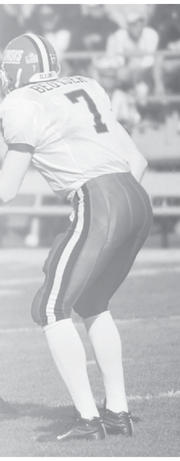</figure>
<figure class="bookfig"></figure>
<p>Hệ vận động của con người được ban cho nhiều bậc tự do (dfs) về mặt cơ sinh học hơn mức thực sự cần thiết để hoàn thành hầu hết các nhiệm vụ hàng ngày. Cơ thể có nhiều cơ, khớp và đoạn chi hơn mức cần thiết để thực hiện các nhiệm vụ như với và nắm, bước đi về phía một mục tiêu, hoặc đá bóng. Miễn là người học có thể phối hợp và kiểm soát một số lượng lớn các bộ phận cơ thể, thì sự thừa thãi này là một trợ lực mạnh mẽ cho tính linh hoạt và sự sáng tạo trong vận động. Bằng cách nghiên cứu các phân tích chi tiết về mẫu hình vận động cho thấy những biến thiên tinh tế về quỹ đạo và góc khớp từ lần này sang lần khác, chúng ta có thể quan sát những cách khác nhau mà ta khai thác sự phong phú về bậc tự do của hệ vận động (ví dụ, Button, MacLeod, Sanders, &amp; Coleman, 2003; Chow et al., 2006; Chow et al., in press). Müller và Sternad (2004) đã đề xuất rằng tồn tại một mức độ biến thiên chức năng bên trong hệ vận động giúp hệ thích ứng và đạt được các mục tiêu tổng thể một cách ổn định. Do đó, việc người ta có xu hướng tìm ra lời giải riêng cho các vấn đề vận động phổ biến trong thể thao, công việc và ở nhà không nên là điều ngạc nhiên với những ai quan tâm đến việc áp dụng tiếp cận dựa trên rào cản/giới hạn. Trong chương này, chúng tôi mô tả lý do vì sao phân tích ở cấp độ cá nhân lại quan trọng và cách các phương pháp nghiên cứu đang thay đổi để phản ánh sự chuyển dịch nhấn mạnh này. Chúng tôi cũng làm nổi bật những khó khăn mà người thực hành phải đối mặt khi họ phải làm việc với nhiều hơn một người học cùng lúc. Cuối cùng, chúng tôi đưa ra các gợi ý thực tiễn cho việc giảng dạy nhóm nhằm bổ trợ cho sư phạm phi tuyến trong tiếp cận dựa trên rào cản/giới hạn.</p>
<h3>Động lực học nội tại của hệ thống vận động</h3>
<p>Một vấn đề dai dẳng mà các nhà nghiên cứu và người thực hành phải cân nhắc là làm thế nào con người có thể tạo ra những chuyển động mới để đáp ứng yêu cầu của các bối cảnh động. Nói cách khác, tại sao người mới học đôi khi lại có thể tạo ra những chuyển động phối hợp đặc thù theo nhiệm vụ thành công như những người biểu diễn đã đạt thành tích cao (một hiện tượng thường được gọi là &quot;may mắn của người mới&quot;)? Từ góc nhìn hệ thống động lực, chúng ta có thể giải thích những hiện tượng như vậy bằng động lực học nội tại của hệ vận động. Thelen (1995) định nghĩa thuật ngữ này là &quot;các trạng thái được ưa thích của hệ thống trong kiến trúc hiện tại và lịch sử hoạt động trước đó của nó&quot; (tr. 76), hay tập hợp các khả năng vận động mà người ta mang theo khi học một kỹ năng mới. Động lực học nội tại của mỗi người là duy nhất và được định hình bởi nhiều ràng buộc, bao gồm các yếu tố di truyền, kinh nghiệm học tập và ảnh hưởng của môi trường (Davids, Glazier, Araújo, &amp; Bartlett, 2003). Bằng cách biết động lực học nội tại của một cá nhân, chúng ta có thể xác định khía cạnh nào của vốn chuyển động thực sự thay đổi do các ảnh hưởng từ môi trường, đã học, hoặc có chủ đích (Zanone &amp; Kelso, 1992).</p>
<p>Tính biến thiên cá nhân</p>
<p>Do những khác biệt cá nhân về động lực học nội tại, các điều kiện mà dưới đó sự phối hợp thay đổi diễn ra mang tính riêng biệt cho từng cá nhân (Button, Bennett, &amp; Davids, 2001). Ulrich, Ulrich, Angulo-Kinzler, và Chapman (1997) đã phát hiện mức độ biến thiên giữa các cá nhân này và lưu ý rằng ngay từ rất sớm, trẻ sơ sinh đã cho thấy sự ưu tiên các mẫu hình pha riêng biệt khi tạo ra những cú đá chân tự phát. Các nhà nghiên cứu cho rằng động lực học nội tại đại diện cho những khối xây dựng cơ bản mà trên đó con người tạo dựng các chuyển động chức năng. Với người mới học, các yêu cầu hành vi của một nhiệm vụ mới đôi khi khớp rất chặt với động lực học nội tại đã có từ trước của họ, dẫn đến hiệu suất ngay lập tức và tương đối thành công. Sự khớp chặt giữa nhiệm vụ và động lực học nội tại có thể giải thích hành vi phát triển sớm trong thể thao khi một số vận động viên biểu diễn rất xuất sắc ngay từ nhỏ (xem các ví dụ trong chương 7). Ngược lại, vấn đề phát sinh cho một số người học khi có xung đột giữa động lực học nội tại họ mang đến một tình huống học tập và các ràng buộc cụ thể của nhiệm vụ.</p>
<h3>Tiêu điểm nghiên cứu</h3>
<p>Nhiệm vụ di chuyển bằng pedalo</p>
<p>Những tiến bộ gần đây trong các công cụ nghiên cứu được thiết kế để phân tích chuyển động của con người đã dẫn đến nhiều nghiên cứu hơn về các kỹ năng vận động liên quan đến nhiều bậc tự do (dfs). Chen, Liu, Mayer-Kress và Newell (2005) đã dùng một nhiệm vụ di chuyển bằng pedalo mới để theo dõi tốc độ mà bốn người học tiếp thu kỹ năng này (xem hình 6.1). Khi đứng trên pedalo, hay còn gọi là thuyền chân vịt, người tham gia có thể di chuyển lùi hoặc tiến bằng cách dùng chân đạp lên xuống. Dù nhiệm vụ đòi hỏi sự phối hợp giữa thân mình và các chi, nó có thể được học tương đối nhanh. Những người tham gia luyện tập nhiệm vụ pedalo bằng cách hướng mình đến một vị trí quy định trong 50 lần thử mỗi ngày, trong 7 ngày.</p>
<p>Các tác giả đã tính biến số Cauchy—sự khác biệt về khoảng cách trung bình của hai lần thử liên tiếp—cho mỗi người tham gia trong suốt các lần luyện tập. Họ phát hiện những dao động đáng kể giữa các lần thử và tốc độ học khác nhau giữa các cá nhân. Tuy nhiên, nhìn chung, mỗi người tham gia đều giảm đáng kể điểm khác biệt về mẫu hình vận động (tức là trở nên ổn định hơn). Phần lớn sự cải thiện về thời gian vận động diễn ra trong 2 ngày đầu.</p>
<p>Các tác giả cũng dùng một kỹ thuật thống kê gọi là phân tích thành phần chính (principal components analysis) để xác định số thành phần độc lập cần thiết nhằm nắm bắt cấu trúc chuyển động của mỗi người học</p>
<p style="font-style:italic;color:#475569;font-size:.88rem">Hình 6.1: Nhiệm vụ di chuyển bằng pedalo từ Chen et al. (2005). Nhiệm vụ liên quan đến động tác đạp bằng chân để di chuyển thuyền chân vịt trên mặt nước.</p>
<p>(tiếp theo)</p>
<figure class="bookfig"><figcaption>Hình 6.1: Nhiệm vụ di chuyển bằng pedalo từ Chen et al. (2005). Nhiệm vụ liên quan đến động tác đạp bằng chân để di chuyển thuyền chân vịt trên mặt nước.</figcaption></figure>
<p>các mẫu hình. Những người tham gia cần từ ba đến sáu thành phần để giải thích 95% phương sai trong dữ liệu động học. Đến ngày thứ 7, mỗi người tham gia cần ít thành phần hơn để nắm bắt các mẫu hình vận động đã tiếp thu được. Với hai người tham gia, các biến ở thân trên ban đầu là những thành phần có trọng số lớn nhất, trong khi các biến ở thân dưới đóng góp ngày càng nhỏ hơn. Ngược lại, hai người tham gia còn lại cho thấy tầm quan trọng tương đối của thân dưới tăng lên như một hàm của quá trình học. Những phát hiện này chứng minh rằng khi không có hướng dẫn hay trình diễn mẫu tường minh, sự khác biệt cá nhân về động lực học phối hợp là hệ quả phổ biến của việc học. Những người học khác nhau dùng nhiều cách khác nhau để giải quyết bài toán phối hợp cụ thể gặp phải trong luyện tập nhiệm vụ.</p>
<p>ỨNG DỤNG</p>
<p>Những người tham gia trong nghiên cứu này cho thấy sự hội tụ đáng kể giữa chuyển động của thân mình và các chi khi luyện tập nhiệm vụ đa khớp này. Thước đo tính nhất quán được dùng trong nghiên cứu này có thể là một công cụ đánh giá định lượng hữu ích khi cần một hình thức vận động cụ thể, chẳng hạn như trong múa hoặc thể dục dụng cụ. Dữ liệu cũng cho thấy rằng dù điểm kết quả thực hiện (thời gian vận động) đã đạt đến ngưỡng ổn định vào cuối quá trình luyện tập, người tham gia vẫn đang tìm kiếm và tinh chỉnh động lực học phối hợp của mình để có những giải pháp hiệu quả hơn. Việc những thay đổi về phối hợp không nhất thiết liên quan đến những thay đổi về kết quả thực hiện là một phát hiện quan trọng, cảnh báo không nên chỉ dùng các thước đo kết quả trong nghiên cứu về tiếp thu kỹ năng (xem thêm Button, Davids, &amp; Schöllhorn, 2006).</p>
<p>Với trượt băng, múa, thể dục nhịp điệu hoặc bơi đồng bộ, hãy xem xét cách các phát hiện từ nghiên cứu pedalo có thể giúp chúng ta hiểu sự khác biệt cá nhân trong học vận động như hệ quả của luyện tập.</p>
<p>Sự tập nhiễm</p>
<p>Việc lấy trung bình điểm số qua các cá nhân và các block thử nghiệm đã bỏ qua thực tế là các định luật của quá trình học nên phản ánh cả những phản ứng tức thời lẫn những thay đổi bền bỉ ở cá nhân theo thời gian. Về mặt thực tiễn, những hiệu ứng nhất thời trên thực hiện nhiệm vụ có thể do các thay đổi phát triển, mệt mỏi, chấn thương, khám phá nhiệm vụ, hoặc tập nhiễm. Tập nhiễm đề cập đến nhu cầu cần một giai đoạn khởi động trước khi thực hiện, trong đó người ta có thể thể hiện thời điểm và sự phối hợp vận động kém, đồng thời mắc nhiều lỗi hơn bình thường. Hiện tượng này xảy ra khi một người luyện tập trong thời gian dài (ví dụ, vài tuần hoặc vài tháng) rồi nghỉ ngắn (ví dụ, vài ngày) khỏi nhiệm vụ. Hiệu ứng tập nhiễm có thể quan sát được khi một người hồi phục sau chấn thương hoặc bệnh nặng và thực hiện các công việc thường ngày như đi bộ hoặc đi xe đạp. Một ví dụ khác có thể thấy khi các vận động viên chuyên nghiệp trở lại tập luyện đầy đủ sau kỳ nghỉ hoặc chấn thương. Khi trở lại, thường cần điều chỉnh lại hoặc làm quen lại với nhiệm vụ, và nhu cầu này phụ thuộc vào kỹ năng (chuyên gia cần những giai đoạn tập nhiễm ngắn hơn). Hiệu ứng tập nhiễm đôi khi được cho là do cái gọi là &quot;gỉ sét&quot;. Khi mọi người điều chỉnh lại với bối cảnh nhiệm vụ, những lần thực hiện ban đầu của họ có thể có mức độ biến thiên cao hơn bình thường.</p>
<p>Trong ngắn hạn, nhiều ví dụ về hành vi thể thao phản ánh sự tập nhiễm với một bối cảnh cụ thể, chẳng hạn như các cú vung thử trong golf và bóng chày, động tác nảy bóng</p>
<p>TIÊU ĐIỂM NGHIÊN CỨU (TIẾP THEO) những quả bóng mới khi chuẩn bị phát bóng trong quần vợt, hoặc làm quen với việc bơi trong nước có mật độ khác nhau (ví dụ, khi các vận động viên ba môn phối hợp thi đấu ở biển hoặc trong hồ bơi). Khám phá nhiệm vụ có thể xảy ra khi người ta đối mặt với các ràng buộc nhiệm vụ không quen thuộc dưới hình thức một mục tiêu thực hiện mới hoặc những điều kiện mới lạ (Gauthier, Martin, &amp; Stark, 1986). Cái sau là một vấn đề đặc biệt mà các chuyên gia đi tour gặp phải trong những môn như đua xe máy và quần vợt, nơi họ phải thi đấu trên các mặt sân và đường đua khác nhau (ví dụ, những người chơi quần vợt thi đấu trên sân đất nện ở một châu lục trước khi đi đến một nơi khác của thế giới để thi đấu trên sân cỏ). Kelso (1992) đã nhận ra vai trò quý giá của tính biến thiên vận động trong những tình huống như vậy khi ông lập luận rằng &quot;không có tính biến thiên, theo nghĩa này, những hình thức tổ chức hành vi mới sẽ bị hạn chế nghiêm trọng&quot; (tr. 261).</p>
<h3>Sự biến thiên trong hiệu suất thể thao</h3>
<p>Một số người thường được mô tả là có năng khiếu tự nhiên, nghĩa là hồ sơ di truyền của họ dường như rất phù hợp với nhiệm vụ trước mắt. Một câu hỏi liên quan là tại sao một số người lại hưởng lợi từ huấn luyện và luyện tập nhiều hơn người khác. Những quan sát này đặt ra câu hỏi về đóng góp của các ràng buộc di truyền và môi trường đối với tiếp thu kỹ năng và hiệu suất. Cách những ràng buộc này định hình sự biến thiên trong hiệu suất của con người là một câu hỏi ngày càng được quan tâm trong khoa học vận động và y học thể thao. Vấn đề này là biểu hiện của cuộc tranh luận dai dẳng giữa tự nhiên và nuôi dưỡng về tỉ lệ chính xác của sự biến thiên hiệu suất được giải thích bởi các đặc điểm di truyền hay những ảnh hưởng của môi trường (ví dụ, Davids &amp; Baker, in press). Đã có nhiều điều được viết về tính nhị nguyên đặc thù này trong khoa học, và việc giải quyết nó tỏ ra cực kỳ khó khăn qua các năm, vì rõ ràng cả tự nhiên lẫn nuôi dưỡng đều có thể đóng vai trò là ràng buộc đối với hành vi (để có các phân tích xuất sắc, xem Johnston &amp; Edwards, 2002; Lewontin, 2000; Ridley, 2004).</p>
<p>Bất chấp tranh cãi này, đã có tương đối ít nỗ lực nhằm xem xét bản chất của các ràng buộc di truyền đối với sự biến thiên trong hiệu suất kỹ năng vận động. Một nghiên cứu của Fox, Hershberger và Bouchard (1996) đã xem xét nhiệm vụ theo dõi rôto đuổi bắt ở các cặp song sinh cùng trứng (n = 64 cặp) và khác trứng (n = 32 cặp) được nuôi dưỡng riêng biệt (MZA và DZA). Theo dõi rôto đuổi bắt là một nhiệm vụ thí nghiệm phổ biến yêu cầu người tham gia lần theo một đường đi dọc theo một hình, chẳng hạn như hình sao, hình tròn hoặc hình vuông, với tốc độ nhanh. Fox và các cộng sự đo hiệu suất bằng thời gian ở trên mục tiêu (được biểu thị như một tỉ lệ của điểm hoàn hảo: 20 giây). Các tác giả kết luận: &quot;Mức độ thực hiện của hai nhóm rất giống nhau; cả hai đều cho thấy sự cải thiện đáng kể qua năm block thử nghiệm của ngày đầu tiên&quot; (tr. 356). Các mẫu hình biến thiên của cả hai nhóm tương tự nhau: &quot;Với luyện tập, có sự cải thiện ở một số đối tượng nhiều hơn những người khác, do đó làm tăng biến thiên nội nhóm, và đến ngày thứ 3 mới đạt được sự ổn định. Sự khác biệt về phương sai giữa cặp song sinh MZA và DZA không có ý nghĩa thống kê&quot; (tr. 356). Ảnh hưởng của tính di truyền (phản ánh cả yếu tố di truyền lẫn môi trường) cao ở block thử nghiệm đầu tiên (tỉ lệ phương sai hiệu suất được giải thích = .66) đến block cuối cùng (.69). Việc ảnh hưởng của tính di truyền cao trong 5 block thử nghiệm đầu tiên (.66, .53, .52, .55, .52) được các tác giả cho là cho thấy người ta dựa vào các năng lực bẩm sinh khi cố thực hiện một nhiệm vụ mới. Có một sự khác biệt rõ ràng giữa MZA và DZA. Những kết luận ủng hộ ảnh hưởng đáng kể của di truyền đối với phần trăm thời gian trên mục tiêu, tốc độ cải thiện hiệu suất qua các block thử nghiệm, và sự cải thiện sau một giai đoạn nghỉ ngơi dựa trên &quot;giải pháp đơn giản và hợp lý nhất cho sự tương đồng lớn hơn ở cặp song sinh MZA . . . đó là hiệu suất vận động phản ánh ảnh hưởng di truyền&quot; (tr. 357).</p>
<p>Tuy nhiên, kết luận này không rõ ràng lắm, vì Fox và các cộng sự (1996) dường như đã nhầm lẫn giữa thực hiện kỹ năng và tiếp thu kỹ năng. Dù nghiên cứu đó tự nhận là điều tra các ràng buộc di truyền đối với tiếp thu kỹ năng, các nhóm chỉ được trình bày 75 lần luyện tập, và có thể lập luận rằng hiệu suất thực hiện của cả hai nhóm mới là thứ được đo. Thêm vào đó, những hệ quả gây nhiễu tiềm tàng từ cỡ mẫu không đều trong nghiên cứu là không nhỏ. Hoàn toàn trái ngược với dữ liệu do Fox và các cộng sự thu được, một công trình khác xem xét sự khác biệt về hiệu suất theo dõi đuổi bắt giữa số lượng bằng nhau (n = 35) cặp song sinh MZA và DZA đã đề xuất rằng mức độ ảnh hưởng của ràng buộc di truyền lên hiệu suất giảm dần một cách có hệ thống trong suốt quá trình luyện tập, phù hợp với xu hướng đơn điệu qua các lần thử (Marisi, 1977). Công trình gần đây hơn đã xem xét tính di truyền trong phối hợp thần kinh–cơ (Missitzi, Geladas, &amp; Klissouras, 2004). Giống như nghiên cứu của Fox và các cộng sự, một mô hình song sinh đã được dùng, lần này để điều tra sự khác biệt cùng–khác trứng về độ chính xác và tính tiết kiệm nỗ lực, được đánh giá bằng cách phân tích dữ liệu động học và ghi điện cơ về hoạt động cơ. Kết quả cho thấy di truyền giải thích tỉ lệ lớn nhất của sự khác biệt MZ–DZ về độ chính xác và tính tiết kiệm trong chuyển động ở các động tác gập cánh tay nhanh, chứ không phải ở động tác tốc độ chậm.</p>
<p>Các ràng buộc di truyền đối với hiệu suất thể chất</p>
<p>Những năm qua chứng kiến ngày càng nhiều công trình về vai trò của gen trong việc xác định hiệu suất thể thao cá nhân. Nghiên cứu tập trung chủ yếu vào đóng góp của gen và môi trường đối với sức bền thể chất (ví dụ, Rankinen et al., 2000). Mức độ đáng kể của biến thiên giữa các cá nhân quan sát được trong phản ứng với huấn luyện tim mạch đã khiến nhiều nhà điều tra đặt câu hỏi về mức độ mà đa dạng di truyền có thể chịu trách nhiệm cho dữ liệu này (ví dụ, Feitosa et al., 2002). Gần đây, gen enzyme chuyển đổi angiotensin (ACE) đã nhận được sự chú ý đáng kể trong các tài liệu y học thể thao. Gen ACE là một trong số nhiều gen mà các nhà nghiên cứu liên hệ với tính biến thiên giữa các cá nhân về sức bền thể chất (ví dụ, Alvarez et al., 2000; Montgomery et al., 1999; Myerson et al., 1999; Nazarov et al., 2001; Taylor, Mamotte, Fallon, &amp; van Bockxmeer, 1999; Williams, Alty, &amp; Lees, 2000; Woods, Humphries, &amp;</p>
<p>Montgomery, 2000; Woods et al., 2001; Woods et al., 2002). Trong cơ, enzyme chuyển đổi angiotensin I làm phân hủy hai chất giãn mạch, bradykinin và tachykinin, đồng thời kích thích sản xuất chất co mạch angiotensin II trong lúc thực hiện thể chất (ví dụ, Sonna et al., 2001). Sự khác biệt trình tự trong DNA tạo ra hai alen của gen ACE, I (tức là chèn) và D (tức là xóa), kết hợp với nhau tạo ra các đa hình về kiểu gen (II, ID, DD).</p>
<p>Biến thể D của gen đã được liên hệ với hoạt tính ACE tương đối cao hơn. Ví dụ, công trình sớm nghiên cứu ở tân binh quân đội thấy rằng đa hình II của gen có liên hệ với mức hoạt tính ACE thấp hơn trong cơ so với alen DD, cũng như đáp ứng tăng lên với huấn luyện thể chất (Montgomery et al., 1998). Để đáp ứng các bài tập lặp lại ở cánh tay trên, tân binh có kiểu gen ACE II khác biệt tới 1.100% so với những người cùng lứa có kiểu gen DD. Cá nhân có kiểu gen dị hợp (DI) cho thấy mức hiệu suất nằm giữa hai kiểu gen đồng hợp. Trong thể thao, tỉ lệ hiện diện cao hơn của kiểu gen II đã được tìm thấy ở các vận động viên sức bền ưu tú, bao gồm những người leo núi có thể leo tới 7.000 mét mà không cần oxy, các vận động viên chạy sức bền đạt chuẩn Olympic, và những người chèo thuyền ưu tú (Gayagay et al., 1998; Montgomery et al., 1998; Myerson et al., 1999).</p>
<p>Tóm tắt những gì đã biết trong lĩnh vực nghiên cứu này, hầu hết các nhà di truyền học làm việc về hiệu suất thể chất hiểu rằng các gen hoạt động phối hợp với nhau để ảnh hưởng đến chức năng sinh học. Điều này bác bỏ ý tưởng rằng các vận động viên thành công được phân biệt bởi sự hiện diện của một alen đơn lẻ như gen ACE (để có lập luận tương tự trong lý thuyết phát triển, xem Johnston &amp; Edwards, 2002). Những lập luận phản đối quan điểm quyết định sinh học về sự truyền gen cần được lưu ý vì sự phổ biến của triết lý chung trong giới người thực hành thể thao rằng có một gen duy nhất được gọi là &quot;viên đạn thần kỳ&quot;. Qua các năm, quan điểm coi DNA là người mang thông tin đã bằng cách nào đó bị thay thế bởi sai lầm cơ học coi DNA là bản thiết kế, kế hoạch, hay phân tử chủ (Lewontin, 2000).</p>
<p>May mắn thay, lập luận truyền thống coi gen là bản thiết kế đang nhường chỗ cho sự hiểu biết tốt hơn về các cơ chế và quá trình truyền di truyền, bao gồm phiên mã và dịch mã, cho thấy mức độ biểu hiện của gen đơn lẻ hoặc mạng lưới gen cởi mở hơn nhiều với những dao động ngẫu nhiên trong môi trường không đổi so với suy nghĩ trước đây (Kærn, Elston, Blake, &amp; Collins, 2005). Giới khoa học hiện hiểu rằng các tương tác phân tử vốn có tính ngẫu nhiên, dẫn đến tính ngẫu nhiên trong các quá trình hóa sinh của phiên mã, tổng hợp protein và nền tảng của truyền gen (Kærn et al., 2005). Do đó, sự hiện diện của vật chất di truyền không nên được xem như một bản thiết kế cho thành công trong thể thao. Một bài xem xét các ý tưởng lý thuyết và nghiên cứu thực nghiệm trong các lý thuyết học tập và thực hiện đã cho thấy những hệ quả lớn để hiểu cách các ràng buộc môi trường và di truyền vận hành. Chúng ta có thể kết luận rằng không cách tiếp cận nào giải thích được toàn bộ dữ liệu về biến thiên hiệu suất. Hiện có bằng chứng rõ ràng bác bỏ ý tưởng rằng có một yếu tố đơn lẻ gen duy nhất khiến vận động viên có khuynh hướng đạt hiệu suất vượt trội trong một lĩnh vực cụ thể (Davids &amp; Baker, in press).</p>
<p>Những hiểu biết này là ví dụ về cách các tiến bộ trong nghiên cứu đang phơi bày những huyền thoại và định kiến trong các tài liệu khoa học về sự khác biệt cá nhân. Trong các phần sau, chúng tôi xem xét cách những thay đổi trong phương pháp luận nghiên cứu và thống kê đang cho cái nhìn sâu sắc về cấu trúc chức năng của tính biến thiên vận động, khi người thực hiện tìm kiếm các giải pháp phối hợp mang tính cá nhân hóa trong lúc thực hiện.</p>
<p>Các vấn đề nghiên cứu: Thu thập dữ liệu</p>
<p>Từ những năm 1970, đã có những thay đổi toàn diện trong cách các mẫu hình vận động của con người được thu thập, phân tích và giải thích. Những tiến bộ này được thúc đẩy bởi sự ra đời của quay phim cine, máy ảnh kỹ thuật số tốc độ cao, phân tích ba chiều, gia tốc kế, và mô hình hóa cùng mô phỏng máy tính (Allard, Stokes, &amp; Blanchi, 1995). Thiết bị này cho phép các nhà nghiên cứu và người thực hành nhìn nhận các mẫu hình phối hợp với chiều sâu và độ nhạy lớn hơn (xem Alderson, Sully, &amp; Sully, 1974). Những nhà nghiên cứu sơ kỳ cố gắng nghiên cứu sự phối hợp của các hành động đa khớp như bắt bóng bằng một tay bị hạn chế bởi công nghệ sẵn có và có xu hướng tập trung vào các biến kết quả thực hiện như số lần bắt được và số lần bóng rơi. Vào những năm 1970, công nghệ như quay phim tốc độ cao bắt đầu hé lộ những hiểu biết về thời điểm và sự phối hợp trong định vị bàn tay và việc nắm bóng bằng các ngón tay (Alderson, Sully, &amp; Sully, 1974). Hệ quả là các nhà nghiên cứu bắt đầu đi sâu nghiên cứu các biến vận động nền tảng của sự phối hợp.</p>
<p>Sự phát triển của các thiết bị đo lường tinh vi cũng đã thúc đẩy nghiên cứu xem xét các hành động phức tạp, đa khớp thay vì những nhiệm vụ quá đơn giản dựa trên phòng thí nghiệm (ví dụ, định vị tuyến tính, thời gian phản ứng, rôto đuổi bắt) vốn đặc trưng cho phần lớn nghiên cứu trước đó (Williams, Davids, &amp; Williams, 1999). Nghiên cứu các hành động đa khớp có thể cho những hiểu biết có ý nghĩa về hành vi thích ứng, vốn liên quan đến việc phân tích các tương tác giữa sinh thể phức tạp với các ràng buộc nhiệm vụ và môi trường của chúng. Ngày càng có nhiều mô hình thí nghiệm mà nhiều nhà tâm lý học và nhà khoa học vận động dùng để nghiên cứu hành vi thích ứng của hệ thống vận động phức tạp được cung cấp bởi một loạt phong phú các môn thể thao và hoạt động thể chất (ví dụ, Davids et al., 2006). Các mô hình vận động phức tạp từ thể thao cũng ngày càng được ưa chuộng nhờ ảnh hưởng mạnh mẽ của một khung lý thuyết cho rằng sự phối hợp vận động nên được nhìn nhận tốt nhất như một hành vi thích ứng, tự phát sinh, tự tổ chức dưới các ràng buộc, đặc biệt là ràng buộc thông tin và các ràng buộc nhiệm vụ khác.</p>
<p>Vì vậy, những tiến bộ về công nghệ và lý thuyết đã song hành thúc đẩy sự nhấn mạnh lớn hơn vào các phân tích đặc thù cá nhân (idiographic) về cách người ta giải quyết các vấn đề vận động (nghĩa là, xem xét những thích ứng chức năng độc đáo của người đối với môi trường). Trong các khoa học vận động con người, các phương pháp đặc thù cá nhân (idiographic) minh họa cách người tham gia giải quyết các vấn đề vận động, cho những hiểu biết phong phú về sự biến thiên cá nhân trong việc đáp ứng các ràng buộc. Những phương pháp luận tinh vi hơn để nghiên cứu chuyển động con người hiện có thể được dùng để phân tích sâu các giải pháp vận động độc đáo của từng người tham gia. Dữ liệu thu được từ những phân tích sâu như vậy được xem xét tốt hơn khi không dùng các kỹ thuật truyền thống gom dữ liệu từ nhiều cá nhân lại với nhau. Việc gom dữ liệu có thể cản trở việc giải thích những biến thiên tinh tế về phối hợp xuất hiện khi người ta cố đáp ứng các ràng buộc độc đáo tác động lên họ.</p>
<p>Các vấn đề nghiên cứu: Phân tích thống kê</p>
<p>Những tiến bộ trong thu thập dữ liệu đã dẫn đến các phương pháp phân tích dữ liệu thay thế (xem Tiêu điểm nghiên cứu). Ví dụ, theo truyền thống các nhà nghiên cứu dùng dữ liệu gộp của nhóm trong phân tích thống kê về dữ liệu kết quả hoặc dữ liệu lỗi từ nghiên cứu kiểm soát vận động. Có lẽ họ dùng dữ liệu gộp của nhóm nhằm nỗ lực thiết lập các định luật về hành động áp dụng cho một quần thể rộng lớn hơn. Quả thật, loại phân tích do thống kê suy luận đòi hỏi tạo thành một viên gạch nền tảng của truyền thống</p>
<p>Công nghệ mới như hệ thống phân tích chuyển động trực tuyến này (người chèo thuyền) đã cho phép các nhà nghiên cứu và người thực hành phân tích các mẫu hình phối hợp với chiều sâu và độ nhạy lớn hơn.</p>
<p>Ảnh cung cấp bởi Chris Sullivan (www.seeindunedin.com.nz)</p>
<figure class="bookfig">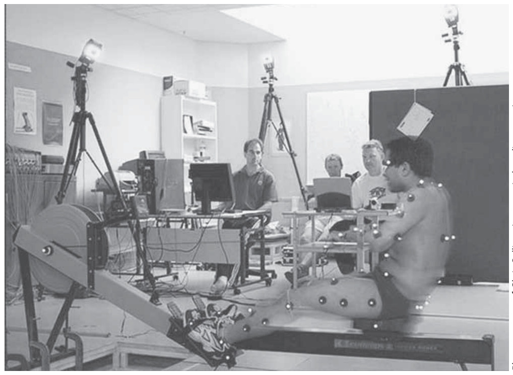</figure>
<p>khoa học. Từ góc nhìn sinh thái, dữ liệu gộp của nhóm có giá trị hạn chế, khiến Kelso (1995) phải chỉ ra những điều sau:</p>
<p>Bởi vì mỗi người sở hữu &#x27;chữ ký&#x27; riêng của mình, việc lấy trung bình hiệu suất qua các cá nhân là ít có ý nghĩa. Cũng có thể nói đó là lấy trung bình của táo và cam. Điều này không có nghĩa là các định luật và nguyên lý được cho là của quá trình học không thể khái quát hóa qua các cá nhân; chúng sẽ không được coi là định luật nếu không thể làm như vậy. Nó chỉ có nghĩa là cách định luật được thể hiện thì riêng biệt cho từng cá nhân. (tr. 147)</p>
<p>Lập luận được đưa ra là các phân tích cá nhân (lập hồ sơ) về động học được ưu tiên hơn so với cách gộp dữ liệu nhóm truyền thống, đặc biệt nếu người ta quan tâm đến việc làm sáng tỏ các quá trình phức tạp chi phối kiểm soát vận động khi mỗi người cố đáp ứng các ràng buộc (Button et al., 2006).</p>
<p>Về mặt thống kê, tính biến thiên là phương sai của dữ liệu quanh giá trị trung bình của một phân bố điểm số và thường được định lượng bằng độ lớn của thống kê độ lệch chuẩn (Riley &amp; Turvey, 2002). Độ lệch chuẩn hữu ích nếu người ta quan tâm đến mức độ biến thiên hiệu suất trên một nhiệm vụ cụ thể tại một thời điểm nhất định. Tuy nhiên, nó ít hữu ích nếu người ta quan tâm đến sự thay đổi về biến thiên của các thước đo được chọn về phối hợp vận động theo thời gian ở những người tham gia trong một nhóm, chẳng hạn như trong quá trình phát triển hoặc như kết quả của việc học (Newell &amp; Slifkin, 1998; Riley &amp; Turvey, 2002). Các thống kê như độ lệch chuẩn, hệ số biến thiên và khoảng giá trị giả định rằng có rất ít liên hệ giữa các phép đo rời rạc được thực hiện ở những điểm khác nhau trên trục thời gian của hiệu suất. Một ví dụ điển hình cho sự nhấn mạnh vào các phép đo rời rạc của biến động học là báo cáo rằng các vận động viên ném lao ưu tú đạt tốc độ đỉnh cao hơn ở các đoạn xa của cánh tay so với người mới tập, và 50% tốc độ đỉnh được tạo ra trong 50 mili giây cuối cùng trước khi buông (để có cái nhìn tổng quan về các thủ tục thống kê trong cơ sinh học và kiểm soát vận động, xem Mullineaux, Bartlett, &amp; Bennett, 2001).</p>
<p>Tuy nhiên, phân tích hiệu suất của các nhiệm vụ vận động phức tạp như một chuỗi thời gian liên tục được xây dựng dựa trên các phần được chọn của chuyển động, chứ không phải các điểm riêng lẻ (ví dụ, trong 50 mili giây cuối của cú ném lao). Phân tích chuỗi thời gian cho phép chúng ta vẽ các biến động học then chốt đối chiếu với nhau khi một mẫu hình vận động diễn ra. Chúng ta có thể so sánh giá trị của một biến cụ thể ở giai đoạn đầu chuyển động với giá trị của cùng biến đó ở giai đoạn sau. Bằng cách này, chúng ta có thể xem xét cấu trúc của tính biến thiên vận động trong một lần thực hiện nhất định thay vì chỉ độ lớn của biến thiên kết quả. Theo cùng hướng đó, việc dùng các kỹ thuật như đồ thị pha (phase plots) đã cho phép các nhà nghiên cứu chứng minh cách tính biến thiên bên trong các mẫu hình vận động, chẳng hạn như dáng đi và phục hồi chức năng (Clark, 1995; Heiderscheit, Hamill, &amp; van Emmerik, 1998), có thể hữu ích trong việc đáp ứng các ràng buộc nhiệm vụ. Đồ thị pha thể hiện đặc điểm vận tốc của một vật thể đang chuyển động đối chiếu với vị trí của nó như một hàm của thời gian. Bằng cách chồng các lần thử lên nhau, chúng ta có được bức tranh rõ ràng về cách các đạo hàm này liên hệ với nhau. Dữ liệu trình bày trong hình 6.2 cho thấy cách chúng ta có thể dùng đồ thị pha để phân biệt các xu hướng phối hợp khác nhau trong cú ném phạt bóng rổ, chẳng hạn như tính nhất quán giữa các cú ném tăng lên ở người chơi chuyên nghiệp.</p>
<p style="font-style:italic;color:#475569;font-size:.88rem">Hình 6.2: Đồ thị pha về độ dịch chuyển và vận tốc của cùi chỏ trong cú ném phạt bóng rổ. Sáu người chơi (từ mới tập đến đẳng cấp quốc tế) với tới 30 lần ném được minh họa.</p>
<p>In lại với sự cho phép từ Research Quarterly for Exercise and Sport, Vol. 74, No. 3, 257-269, Bản quyền 2003 bởi American Alliance for Health, Physical Education, Recreation and Dance, 1900 Association Drive, Reston, VA 20191.</p>
<p>Độ dịch chuyển của cùi chỏ (mm)</p>
<p>Người tham gia 1: Mới tập Độ lệch chuẩn của độ dịch chuyển cùi chỏ 0% = 25mm  25% = 24mm  50% = 26mm 75% = 29mm  100% = 29mm 5,000</p>
<p>4,000</p>
<p>3,000</p>
<p>2,000</p>
<p>1,000 0 0 300 200 100 400 500 600 700 800 900</p>
<p>Vận tốc cùi chỏ (mm/s)</p>
<p>Người tham gia 2: Mới tập</p>
<p>0% = 17mm  25% = 19mm  50% = 24mm 75% = 25mm  100% = 30mm 5,000</p>
<p>4,000</p>
<p>3,000</p>
<p>2,000</p>
<p>1,000 0 0 300 200 100 400 500 600 700 800 900</p>
<p>Người tham gia 3: Người chơi câu lạc bộ</p>
<p>0% = 18mm  25% = 33mm  50% = 40mm 75% = 30mm  100% = 18mm</p>
<p>5,000</p>
<p>4,000</p>
<p>3,000</p>
<p>2,000</p>
<p>1,000 0 0 300 200 100 -100 400 500 600 700 800 900</p>
<p>(TIẾP THEO)</p>
<figure class="bookfig">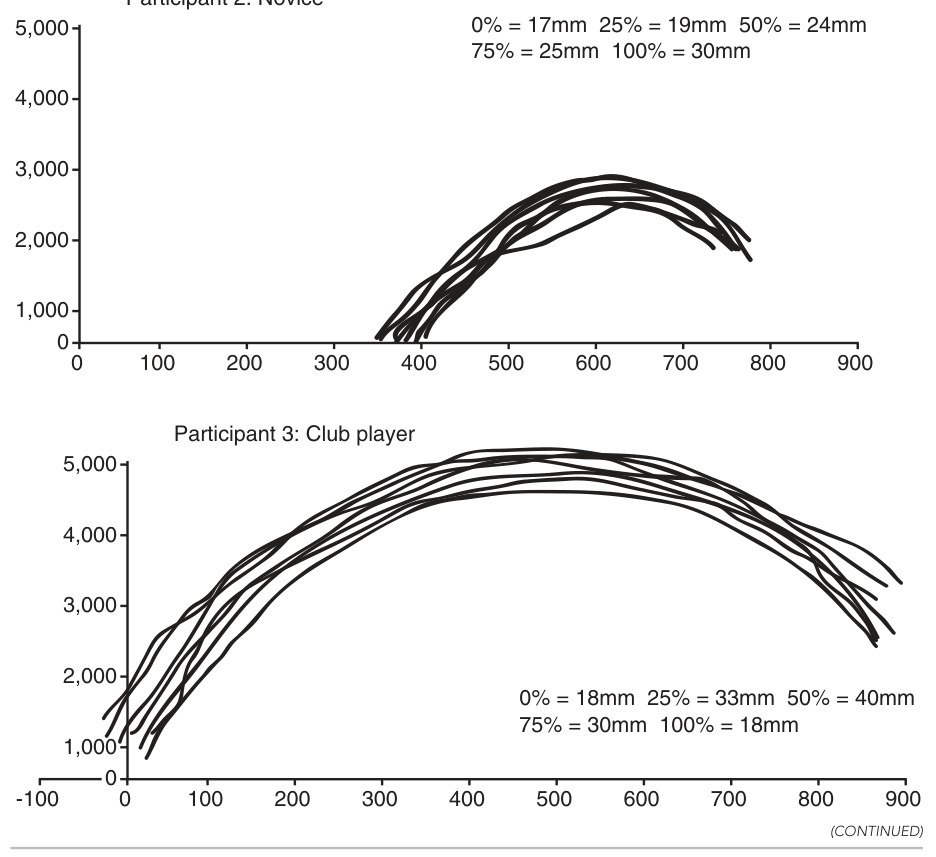<figcaption>Hình 6.2: Đồ thị pha về độ dịch chuyển và vận tốc của cùi chỏ trong cú ném phạt bóng rổ. Sáu người chơi (từ mới tập đến đẳng cấp quốc tế) với tới 30 lần ném được minh họa.</figcaption></figure>
<p>Người tham gia 4: Người chơi câu lạc bộ</p>
<p>0% = 63mm  25% = 71mm  50% = 69mm 75% = 48mm  100% = 26mm</p>
<p>5,000</p>
<p>4,000</p>
<p>3,000</p>
<p>2,000</p>
<p>1,000 0 0 300 200 100 400 500 600 700 800 900</p>
<p>Người tham gia 5: Người chơi đẳng cấp quốc tế</p>
<p>0% = 17mm  25% = 15mm  50% = 18mm 75% = 35mm  100% = 19mm</p>
<p>5,000</p>
<p>4,000</p>
<p>3,000</p>
<p>2,000</p>
<p>1,000 0 0 300 200 100 400 500 600 700 800 900</p>
<p>Người tham gia 6: Người chơi đẳng cấp quốc tế</p>
<p>0% = 12mm  25% = 19mm  50% = 48mm 75% = 39mm  100% = 13mm</p>
<p>5,000</p>
<p>4,000</p>
<p>3,000</p>
<p>2,000</p>
<p>1,000 0 0 300 200 100 400 500 600 700 800 900</p>
<p style="font-style:italic;color:#475569;font-size:.88rem">Hình 6.2 (tiếp theo)</p>
<figure class="bookfig">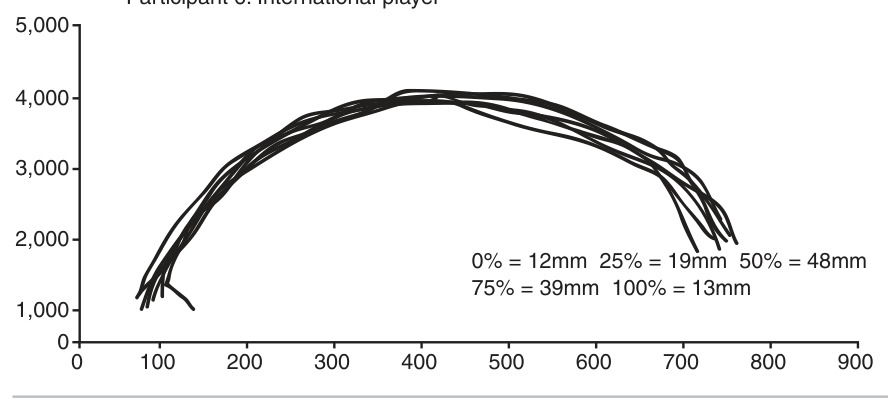<figcaption>Hình 6.2 (tiếp theo)</figcaption></figure>
<h3>Sự khác biệt cá nhân trong các tình huống thực hành</h3>
<p>Nhiều cố vấn, nhà trị liệu tâm lý, nhà vật lý trị liệu, huấn luyện viên cuộc sống, huấn luyện viên cá nhân và nhà tâm lý học thể thao đã nhanh chóng nhận ra rằng cách tiếp cận cá nhân là cách duy nhất hiệu quả để hiểu những vấn đề phức tạp mà người học đưa ra trước họ, và do đó họ dành rất ít thời gian làm việc với các nhóm lớn. Tuy nhiên, bất chấp các lập luận ủng hộ việc tập trung vào người học cá nhân trong sư phạm phi tuyến, nhiều người thực hành hầu như không có lựa chọn nào khác ngoài việc làm việc với các nhóm người học lớn hàng ngày. Ví dụ, không hiếm khi giáo viên và huấn luyện viên phải một mình chịu trách nhiệm với nhóm 30 học sinh trong một buổi luyện tập. Với nhiều yêu cầu mà những người thực hành này phải quản lý, không có gì đáng ngạc nhiên khi nhiều người có thể đặt nghi vấn về tính khả thi của cách tiếp cận &#x27;buông tay&#x27; mà chúng tôi ủng hộ. Tuy nhiên, có một số chiến lược đơn giản mà người thực hành có thể dùng để chuyển trọng tâm trở lại cá nhân mà không làm giảm động lực của các người học khác trong nhóm.</p>
<p>Trình diễn hành vi của người làm mẫu</p>
<p>Bằng chứng cho thấy có những biến thiên quan trọng trong cấu trúc của tính biến thiên phối hợp có nhiều hàm ý đối với người thực hành, đặc biệt khi chúng ta xét đến việc một hình ảnh chuyên gia lý tưởng hóa của một hành động thường được đề xuất làm mẫu trong các phương pháp học tập truyền thống. Trong sư phạm phi tuyến, cấu trúc của tính biến thiên phối hợp đưa ra một cái nhìn khác về việc học qua quan sát người làm mẫu. Làm mẫu hay học qua quan sát là quá trình người học quan sát rồi cố gắng tái tạo một hành vi mong muốn do người khác trình diễn. Mặc dù việc trình diễn một kỹ năng là công cụ giá trị trong hộp công cụ của người thực hành, nhưng các cá nhân trong một nhóm có thể không được lợi như nhau khi xem các buổi trình diễn của chuyên gia rồi tự mình tái tạo cùng một chuyển động. Như Hodges và Franks (2001) đã chỉ ra, &#x27;[Trình độ năng lực] sẽ ảnh hưởng đến thông tin mà một vận động viên có thể trích xuất từ một buổi trình diễn&#x27; (tr. 808). Khi chuyên môn phát triển, bản chất của các biến tri giác hay các ràng buộc thông tin mà người thực hiện dùng để hỗ trợ chuyển động sẽ khác biệt đáng kể (Beek, Jacobs, Daffertshofer, &amp; Huys, 2003).</p>
<p>Những ý tưởng về sự khác biệt cá nhân được trình bày trong chương này hàm ý rằng chúng ta cần hiểu rõ các quá trình học qua quan sát được dùng trong luyện tập. Một khung lý thuyết quan trọng giúp chúng ta hiểu là đề xuất của Scully và Newell (1985) về góc nhìn tri giác thị giác đối với học qua quan sát. Trung tâm của góc nhìn này là ý tưởng rằng chức năng chính của các buổi trình diễn thị giác là truyền tải thông tin chuyển động tương đối thiết yếu cho nhiệm vụ đang được học hoặc thực hiện. Góc nhìn tri giác thị giác về các quá trình học qua quan sát dựa trên khái niệm của Gibson (1979) về tính bất biến trong thông tin quang học (xem chương 3). Người ta đã chỉ ra rằng việc nhận dạng và phân loại các loại khác nhau của các hoạt động vận động (ví dụ, đi bộ, đạp xe, thể dục dụng cụ) đã diễn ra dựa trên tính bất biến trong chuyển động tương đối của các đặc điểm tô-pô (hình thức vận động) riêng của từng hoạt động (Hoenkamp, 1978; Scully, 1988). Mẫu hình chuyển động tương đối nền tảng của mỗi sự kiện vận động dẫn đến những mối quan hệ không gian–thời gian độc đáo giữa thân và các chi của người, hoặc giữa các chi với nhau, cũng như cách tổ chức cơ thể liên quan đến môi trường xung quanh. Gần đây, tính cá nhân của phân tích dáng đi đã nhận được nhiều sự chú ý nghiên cứu (Schöllhorn, Nigg, Stefanyshyn, &amp; Liu, 2002), và các ứng dụng tương lai của công trình này có thể bao gồm sàng lọc động học để nhận diện các đặc điểm chuyển động tương đối riêng biệt của những kẻ khủng bố và tội phạm đã biết tại các sân bay.</p>
<h3>Tiêu điểm nghiên cứu</h3>
<p>PHÂN TÍCH GỘP</p>
<p>Phân tích gộp là thuật ngữ chỉ các phương pháp xem xét định lượng được dùng để kết hợp kết quả từ nhiều nghiên cứu. Quá trình này đã được gọi là &#x27;một phân tích các kết quả của phân tích thống kê&#x27; (Hedges &amp; Olkin, 1985, tr. 13). Các thủ tục phân tích gộp cung cấp các giao thức để tổng hợp, diễn giải và tóm tắt các tài liệu nghiên cứu sử dụng</p>
<p>Tính cá nhân của dáng đi người đã nhận được nhiều sự chú ý nghiên cứu gần đây. Các ứng dụng tương lai có thể bao gồm sàng lọc động học để nhận diện các đặc điểm chuyển động tương đối riêng biệt của những kẻ khủng bố và tội phạm đã biết tại các sân bay.</p>
<p>© PA Photos</p>
<figure class="bookfig"></figure>
<p>các thủ tục thống kê định lượng. Phương pháp này đặc biệt hữu ích khi có sự mơ hồ trong các tài liệu nghiên cứu. Ví dụ, dù nhiều nghiên cứu đã điều tra ảnh hưởng của việc làm mẫu qua quan sát đến hành vi vận động, cho đến gần đây vẫn còn thiếu sự đồng thuận về việc nó có thực sự mang lại lợi thế học tập đáng kể hay không.</p>
<p>Trong nỗ lực giải quyết sự mơ hồ này, Ashford, Bennett và Davids (2006) đã dùng các thủ tục phân tích gộp để định lượng hiệu ứng tổng quát của việc làm mẫu qua quan sát. Các hiệu ứng được rút ra từ 68 nghiên cứu độc lập báo cáo kết quả làm mẫu từ các nghiên cứu học vận động trên nhiều kỹ năng vận động khác nhau. Một lợi thế đáng kể của việc làm mẫu so với các điều kiện đối chứng chỉ luyện tập đã được ghi nhận đối với động lực học chuyển động (tức là nhấn mạnh việc tiệm cận các mẫu hình phối hợp của người mẫu được quan sát) và đối với các thước đo kết quả vận động (tức là nhấn mạnh việc tiệm cận đạt được một kết quả vận động cụ thể bất kể mẫu hình phối hợp liên quan). Về độ lớn hiệu ứng, một hiệu ứng mạnh hơn đã được ghi nhận đối với động lực học chuyển động (u</p>
<p>Bi = 0.77) so với một hiệu ứng trung bình khiêm tốn hơn đối với kết quả vận động (u Bi = 0.17). Hơn nữa, sự gia tăng độ lớn hiệu ứng đối với động lực học chuyển động so với kết quả vận động thể hiện rõ ở các loại nhiệm vụ khác nhau. Ví dụ, đối với các nhiệm vụ tuần tự liên quan đến thực hiện các nhiệm vụ con theo một trình tự nhất định, đã có một hiệu ứng xử lý đáng kể là u</p>
<p>Bi = 2.17 đối với động lực học chuyển động và u</p>
<p>Bi= 0.61 đối với các thước đo kết quả vận động.</p>
<p>ỨNG DỤNG</p>
<p>Với tư cách là người học, bạn làm gì khi xem huấn luyện viên hoặc giáo viên thực hiện một hành động trong luyện tập: sao chép chính xác hành động đó, hay dùng buổi trình diễn làm kim chỉ nam để hỗ trợ việc học của chính mình?</p>
<p>Kết quả của Ashford và các cộng sự (2006) ủng hộ góc nhìn tri giác thị giác của Scully và Newell (1985), vốn đề xuất rằng việc làm mẫu qua quan sát cung cấp thông tin chuyển động tương đối truyền tải các đặc điểm tô-pô liên quan đến động lực học chuyển động được làm mẫu. Cụ thể hơn, kết quả phù hợp với quan điểm rằng tri giác thông tin chuyển động tương đối cho phép người ta tái tạo một chuyển động đã quan sát được trong quá trình tiếp thu sự phối hợp vận động. Các phát hiện cũng phù hợp với quan điểm rằng ảnh hưởng của việc làm mẫu đến kết quả vận động sẽ kém hiệu quả hơn ở giai đoạn đầu của học, vì các cá nhân cần tập trung vào việc tiếp thu một mẫu hình vận động chưa quen. Nói cách khác, trong các giai đoạn đầu của học, việc làm mẫu qua quan sát có khả năng hỗ trợ lắp ráp các mẫu hình phối hợp vận động tiệm cận hành vi được làm mẫu hơn là đạt được các mục tiêu vận động cụ thể như bắn chính xác bóng vào đích hay nhảy qua một vật thể.</p>
<p>Sư phạm phi tuyến ủng hộ việc huấn luyện viên và giáo viên xác định bản chất của thông tin mà người học tiếp thu, để nội dung và cách trình bày thông tin trong một buổi trình diễn thị giác có thể được tối ưu nhằm thúc đẩy tiếp thu kỹ năng. Các buổi trình diễn thị giác hỗ trợ giai đoạn đầu của học kỹ năng vì chúng truyền tải thông tin chuyển động tương đối thiết yếu cho việc lắp ráp một mẫu hình phối hợp chưa quen. Về sau trong quá trình học, khi mục tiêu của nhiệm vụ đòi hỏi tinh chỉnh một mẫu hình phối hợp đã tiếp thu, việc làm mẫu có thể giúp người học phát triển khả năng kiểm soát. Nói cách khác, tri giác các đặc điểm động lực có thể dẫn đến sự điều chỉnh tỉ lệ tối ưu của một mẫu hình vận động (ví dụ, tạo ra một mẫu hình biến đổi về lực, thời điểm, hoặc thời lượng). Đáng chú ý, Herbert và Landin (1994), cùng với nhiều người khác, đã chứng minh rằng người học được lợi nhiều hơn khi xem các người học khác đang ở giai đoạn phát triển tương tự. Do tính đặc thù của thông tin (được điều chỉnh tỉ lệ theo động lực học nội tại của một người mẫu cụ thể) và sự thiếu kinh nghiệm của người học, việc quan sát có thể không hỗ trợ học tập trừ khi các hướng dẫn bằng lời nói hay các thủ tục tối ưu hóa khác được đưa vào buổi trình diễn.</p>
<p>Tóm lại, việc dùng các buổi trình diễn trực tiếp và qua video về hành vi của người mẫu có thể giúp người học tìm ra các giải pháp phối hợp phù hợp nhanh hơn và an toàn hơn. Mục tiêu không nhất thiết là bắt chước người mẫu; thay vào đó, có thể là trình diễn một giải pháp phối hợp gần đúng nhằm hướng dẫn luyện tập thực hành và các hoạt động giải quyết vấn đề của người học (các mẫu hình tìm kiếm). Về mặt lý thuyết, có vẻ quan trọng là người mẫu cần có tỉ lệ đoạn chi tương tự khi truyền tải thông tin chuyển động tương đối cho người học (tức là người mẫu trưởng thành cho người học trưởng thành và người mẫu trẻ em cho trẻ em), nhưng ý tưởng này cần được kiểm chứng bằng thực nghiệm. Tuy nhiên, việc điều chỉnh tỉ lệ thiết bị theo cơ thể là một khía cạnh quan trọng của sư phạm phi tuyến, như chúng ta sẽ thảo luận tiếp theo.</p>
<p>Thao tác ràng buộc: Thiết bị được điều chỉnh theo cơ thể</p>
<p>Ý tưởng rằng thiết bị luyện tập cần được điều chỉnh theo cơ thể nếu người học muốn tiếp thu hiệu quả các ghép nối thông tin–chuyển động có cơ sở lý thuyết nhất định. Như đã mô tả trong chương 5, người thực hành có thể giúp định hướng người học bằng cách thay đổi các ràng buộc nhiệm vụ liên quan. Một trong những ràng buộc nhiệm vụ quan trọng nhất trong luyện tập là kích thước và khối lượng của thiết bị (ví dụ, bóng hoặc vợt) so với các đoạn chi liên quan (ví dụ, chân hoặc tay). Ràng buộc nhiệm vụ này có hàm ý cho việc triển khai các chiến lược huấn luyện trong luyện tập và tập dượt, đặc biệt với trẻ em. Konczak (1990) đề xuất rằng tiếp thu kỹ năng của trẻ em sẽ được tăng cường nếu thiết bị thể thao được điều chỉnh đúng theo kích thước cơ thể các em, vốn thay đổi thường xuyên trong suốt tuổi thơ.</p>
<p>Vì trẻ em tương đối thiếu kinh nghiệm, người ta có thể đặt nghi vấn rằng các em phân biệt được đến mức nào giữa thiết bị thể thao được điều chỉnh theo cơ thể và thiết bị thông thường. Beak, Davids và Bennett (2000) đã dùng một thiết kế thử nghiệm sáng tạo để kiểm tra khả năng nhận biết đặc điểm phân bổ trọng lượng của vợt tennis khi vung của những người chơi tennis mới tập (tuổi trung bình = 10). Họ thay đổi mô-men quán tính của vợt tennis bằng cách đặt một quả tạ 50 gram tại các điểm khác nhau dọc trục dọc của vợt. Sau đó họ yêu cầu người chơi cầm vung các vợt và phán đoán vợt nào giúp họ đánh bóng đi xa nhất bằng cú thuận tay. Đây là một phán đoán điển hình mà người học phải đưa ra trong các lớp tennis, nơi một loạt vợt được cung cấp cho cả nhóm trước khi luyện tập.</p>
<p>Để xác định nguồn phản hồi giác quan nào ảnh hưởng đến quyết định của trẻ, Beak và các cộng sự (2000) đã tiến hành thử nghiệm trong điều kiện có và không nhìn thấy vợt. Trong điều kiện sau, một tấm màn che mờ đã khuất tầm nhìn của vợt, và trẻ đã thể hiện độ nhạy rất cao với thông tin xúc giác của vợt. Các em có xu hướng chọn những vợt phù hợp hơn với lứa tuổi của mình — những vợt ở mức thấp của thang quán tính, nơi trọng lượng được phân bổ về phía cán vợt. Khi cả thông tin thị giác và xúc giác đều có sẵn, tính biến thiên nội cá nhân trong việc lựa chọn vợt tăng lên thậm chí còn nhiều hơn.</p>
<p>Beak và các cộng sự cho rằng trẻ đang trải qua xung đột giữa các nguồn phản hồi nội tại khiến các em kém chắc chắn hơn trong việc chọn vợt. Có vẻ như ngay cả trẻ nhỏ cũng dùng thông tin xúc giác để cung cấp phản hồi giác quan về đặc điểm của vật được cầm nắm. Hàm ý là chúng ta thường quá lệ thuộc vào thị giác khi học và cần tăng độ nhạy với các nguồn phản hồi khác. Các tác giả cũng cho rằng vợt tennis được thiết kế riêng cho trẻ 10 tuổi vẫn còn quá phổ dụng để hữu ích cho mọi trẻ 10 tuổi. Việc tiếp thị một loại vợt phổ dụng cho trẻ 10 tuổi không tính đến sự biến thiên lớn về mô-men quán tính của chi trên ở lứa tuổi đó (Beak, Davids, &amp; Bennett, 2002).</p>
<p>Những hàm ý của các dữ liệu này đối với người thực hành được củng cố khi xem xét các nghiên cứu tương tự. Liên quan đến các hành động chặn bắt bằng chi trên và chi dưới, nghiên cứu phát triển vận động đã chỉ ra sự suy giảm tiếp thu kỹ năng khi luyện tập được tiến hành với những quả bóng quá lớn hoặc quá nặng để trẻ cầm, ném, hoặc đá (ví dụ, Herkowitz, 1984). Các tài liệu nghiên cứu nhất quán khuyến nghị dùng thiết bị được điều chỉnh phù hợp cho trẻ, bao gồm kích thước sân nhỏ hơn, thay đổi chiều cao và chiều rộng của khung thành và rổ, và dùng bóng cùng dụng cụ được điều chỉnh theo kích thước then chốt của chi (ví dụ, xem Pangrazi &amp; Dauber, 1989; Siedentop, Herkowitz, &amp; Pink, 1984; Wright, 1967). Trẻ có thể nhận ra rõ ràng sở thích dựa trên những khác biệt nhỏ giữa các món thiết bị thể thao giống hệt nhau. Trong bóng rổ, Regimbal, Deller và Plimpton (1992) đã kiểm tra kích thước bóng mà trẻ 10 tuổi ưa thích khi bắn. Họ thấy 66% ưa thích quả bóng nhỏ hơn</p>
<p>Tiếp thu kỹ năng của trẻ có thể được tăng cường nếu thiết bị thể thao được điều chỉnh đúng theo kích thước cơ thể các em.</p>
<p>© Icon Sports Media so với bóng kích thước người lớn, với độ chính xác của phản ứng vận động tương quan với sự cải thiện độ vừa khít giữa bóng và tay.</p>
<h3>Khái niệm then chốt</h3>
<p>Lý do một số người học tạo ra được các mẫu hình vận động thành công ngay từ đầu trong khi những người khác mất nhiều thời gian hơn đáng kể liên quan đến độ vừa khít giữa động lực học nội tại của hệ thống vận động và các yêu cầu của nhiệm vụ. Khi hai yếu tố này vừa khít tốt với nhau, chuyển giao tích cực sẽ xảy ra. Khi động lực học nhiệm vụ và động lực học nội tại của người học xung đột, kết quả là chuyển giao tiêu cực. Việc cung cấp thiết bị được điều chỉnh phù hợp cho luyện tập có thể tăng độ vừa khít giữa động lực học nội tại và động lực học nhiệm vụ, đồng thời giảm xu hướng cạnh tranh của các điểm hút khác ở gần đó. Ngoài ra, việc cung cấp người mẫu có tỉ lệ đoạn chi tương tự theo cơ thể có thể truyền tải thông tin chuyển động tương đối chính xác hơn cho người học đang nỗ lực tái tổ chức các bậc tự do của hệ thống vận động trong luyện tập.</p>
<p>Tổ chức luyện tập phản tư, theo nhịp độ của người học</p>
<p>Vì người ta học với nhịp độ khác nhau, việc tổ chức luyện tập cần đủ linh hoạt để đáp ứng những biến thiên này. Người thực hành đối mặt với vấn đề làm thế nào để đáp ứng yêu cầu này khi làm việc với một nhóm. Tuy nhiên, ý tưởng rằng các ràng buộc nhiệm vụ, môi trường và cơ thể hoạt động ở các thước thời gian khác nhau có hàm ý mạnh mẽ đối với sự đánh giá của huấn luyện viên về nhịp độ tiến bộ của người học. Khi học một mẫu hình phối hợp mới, những thay đổi bền vững hơn trong hành vi mất nhiều thời gian hơn để xuất hiện so với những thích nghi tức thì với các ràng buộc nhiệm vụ trong luyện tập. Do đó, người thực hành cần hiểu rằng một số hành vi có thể phản ánh những nỗ lực thoáng qua nhằm thích nghi với các ràng buộc nhiệm vụ tức thời được áp đặt trong luyện tập, rồi lần lượt tương tác với các ràng buộc cơ thể liên quan đến trạng thái phát triển. Những ràng buộc quan trọng ở đây bao gồm ảnh hưởng của thiết bị cụ thể, địa điểm, và các hướng dẫn mà người học trải nghiệm ở một trạng thái phát triển nhất định. Người thực hành cần đảm bảo rằng hành vi nổi lên dưới các ràng buộc không phải là hiệu ứng thoáng qua, mà là đặc điểm ổn định của mức hiệu suất hiện tại của mỗi người học.</p>
<p>Dùng sư phạm phi tuyến làm cơ sở lý thuyết, người thực hành có thể thúc đẩy sự tập trung cá nhân và phong cách học tập chủ động hơn bằng cách giao một phần trách nhiệm tổ chức luyện tập cho chính người học (xem cách tiếp cận TGfU trong chương 5 làm ví dụ). Họ có thể đạt được mục tiêu này bằng nhiều cách. Ví dụ, người thực hành có thể khuyến khích tự phản tư trong những lúc nghỉ giữa trò chơi, chẳng hạn yêu cầu cả nhóm thảo luận về lý do mất quyền kiểm soát bóng trong luyện tập giai đoạn con của một môn thể thao đồng đội. Một cách khác là để thời điểm và việc cung cấp phản hồi bổ sung do học sinh quyết định. Janelle và các cộng sự (1997) phát hiện rằng trẻ được phép chọn thời điểm họ nhận phản hồi thị giác về kỹ thuật của mình duy trì kỹ năng của một nhiệm vụ ném chính xác tốt hơn các nhóm không được lựa chọn trong việc sắp xếp phản hồi. Dù thực tế là trẻ tương đối mới tập, các em chỉ yêu cầu phản hồi video về bản thân trong khoảng 11% số lần thử.</p>
<p>Người thực hành cũng nên xem xét liệu tổ chức luyện tập có lôi kéo người học tích cực vào giải quyết vấn đề và tạo cơ hội tìm kiếm trong không gian công việc tri giác–vận động hay không. Ví dụ, một chiến lược đơn giản như yêu cầu trẻ nghĩ ra ba cách khác nhau để ném bóng về phía đích sẽ khuyến khích mỗi trẻ xử lý một vấn đề chung theo cách riêng. Việc chia các nhóm người học lớn thành các nhóm nhỏ theo năng lực cũng có thể hỗ trợ cách tiếp cận này. Capel (2000) nhấn mạnh lợi ích của việc trẻ luyện tập theo nhóm nhỏ khi lập luận rằng &#x27;các trò chơi quy mô nhỏ đa dạng hơn và cung cấp nhiều cơ hội hơn cho mỗi học sinh tham gia vào trò chơi, thử nghiệm và phát triển kỹ năng&#x27; (tr. 83).</p>
<p>Do đó, những người thực hành phải làm việc với nhóm lớn không nên bị cám dỗ chỉ dùng phong cách giảng dạy dựa trên nhóm với niềm tin rằng không có lựa chọn nào khác. Thay vào đó, giáo viên và huấn luyện viên có thể áp dụng một vài ý tưởng đơn giản thúc đẩy sự tham gia tinh thần và thể chất lớn hơn từ người học trong các buổi luyện tập nhóm.</p>
<h3>Phát triển kỹ năng ra quyết định</h3>
<p>Một yếu tố then chốt làm nên sự khác biệt giữa những người thực hiện là kỹ năng ra quyết định dưới áp lực. Bất kể người thực hành phải làm việc với bao nhiêu người học, việc dạy ai đó đưa ra quyết định nhanh và phù hợp trong môi trường luyện tập không phải là nhiệm vụ dễ dàng. Từ góc nhìn của tâm lý học sinh thái, ngày càng có nhiều bằng chứng cho thấy ra quyết định là một quá trình nổi lên thay vì một quá trình hoàn toàn được định trước dựa trên tri thức lưu trữ trong trí nhớ (Araújo, Davids, &amp; Serpa, 2005). Nghiên cứu đã chỉ ra rằng ra quyết định nổi lên thể hiện rõ ở các mức hiệu suất khác nhau. Tiếp theo, chúng ta thảo luận về cách người ta dùng thông tin để đưa ra phán đoán cho hành động trước khi tập trung vào các quá trình nổi lên trong ra quyết định chiến thuật ở mức hiệu suất đồng đội.</p>
<p>Thước đo nội tại</p>
<p>Trong chương 3, chúng tôi đã lưu ý rằng thông tin là một biến vật lý có sẵn trong môi trường nhằm ràng buộc hành động và hỗ trợ ra quyết định (Turvey, 1992). Để phát hiện thông tin đó, người thực hiện cần một thước đo nội tại được điều chỉnh theo kích thước của hệ thống tri giác–vận động của mình. Vận động viên nhận biết các thuộc tính môi trường không phải bằng các đơn vị ngoại tại tùy tiện (như mét, inch, v.v.), mà liên quan đến chính cơ thể, khả năng hành động, và vị trí tương đối của họ đối với các vật thể và bề mặt quan trọng trong môi trường (Konczak, Meeuwsen, &amp; Crees, 1992).</p>
<p>Một nghiên cứu mang tính bước ngoặt về thước đo nội tại đã chỉ ra rằng người lớn trẻ tuổi với nhiều chiều cao khác nhau có thể, chỉ bằng quan sát thị giác, quyết định trong một loạt bậc thang có chiều cao bậc khác nhau thì bậc nào cho phép leo bằng hai chân và bậc nào tiết kiệm năng lượng nhất (Warren, 1984). Trong nghiên cứu, những người tham gia có chiều cao khác nhau xem các slide về cầu thang với chiều cao bậc thay đổi (13–102 centimet) và cố phán đoán liệu cầu thang có leo được hay không. Dù có sự khác biệt tuyệt đối về chiều dài chân, người tham gia vẫn nhận biết được chiều cao bậc tối đa bằng cách dùng một tỉ lệ không đổi giữa chiều dài chân và chiều cao bậc (0.88) trong quá trình ra quyết định. Theo lời của Ulrich, Thelen và Niles (1990), nghiên cứu của Warren cho thấy &#x27;lựa chọn của từng cá nhân có khác biệt nhưng đã được điều chỉnh theo cơ thể; lựa chọn của người tham gia là cùng một hàm toán học của chiều dài chân, bất kể chiều cao&#x27; (tr. 2). Do đó, như van der Kamp, Savelsbergh và Davis (1998) đã lập luận, &#x27;các tỉ lệ điều chỉnh theo cơ thể có thể được dùng như một yếu tố quyết định then chốt của lựa chọn hành động — một thay đổi vượt quá giá trị tỉ lệ then chốt đòi hỏi một loại hành động mới&#x27; (tr. 352).</p>
<p>Nghiên cứu khác cũng chỉ ra rằng dù chiều dài chân tuyệt đối khác nhau, các cá nhân đưa ra những phán đoán tương tự về giới hạn góc dốc và chiều sâu mặt bậc khi đi cầu thang, với 60° là ngưỡng chung mà dưới đó cầu thang được cho là leo được (Maraj, 2003). Rõ ràng, các chuyển tiếp giữa các mẫu hình vận động nổi lên như một hàm của việc người ta nhận biết các khả năng hành động do thông tin từ bề mặt, vật thể và khoảng trống trong môi trường cung cấp. Như chúng ta sẽ thảo luận tiếp theo, những ý tưởng này có hàm ý đối với hành vi ra quyết định trong thể thao.</p>
<p>Ra quyết định nổi lên trong thể thao đồng đội</p>
<p>Gần đây, hiệu suất thể thao đã được xem như một hệ thống động lực, và đã có một số nỗ lực áp dụng các khái niệm và công cụ liên quan từ lý thuyết hệ thống động lực và tâm lý học sinh thái vào nghiên cứu cấu trúc trò đấu nổi lên và các mẫu hình chiến thuật trong thể thao đồng đội (McGarry, Anderson, Wallace, Hughes, &amp; Franks, 2002; Lebed, 2007). Nghiên cứu về phối hợp cá nhân trong thể thao đồng đội có liên quan đến người thực hành trong vấn đề ra quyết định. Công việc theo giai đoạn con (ví dụ, 1v1, 2v2, 3v3) là điển hình trong tổ chức luyện tập của nhiều môn bóng, bao gồm bóng rổ, bóng đá, khúc côn cầu, lacrosse và bóng bầu dục. Giả định là những thay đổi trong độ ổn định của các hệ thống con này dựa trên động lực giữa những người tham gia trong bối cảnh giai đoạn con (Schmidt, Carello, &amp; Turvey, 1990).</p>
<p>Ví dụ, trong nhiệm vụ luyện tập 1v1 phổ biến, cặp được tạo thành bởi một người tấn công và một người phòng thủ tạo thành một hệ thống. Mục tiêu của người tấn công là phá vỡ tính ổn định của hệ thống này. Khi người phòng thủ bắt chước chuyển động của đối phương và giữ vị trí giữa người tấn công và rổ hoặc khung thành, tính đối xứng của hệ thống vẫn ổn định. Khi một cầu thủ tấn công rê bóng vượt qua đối thủ phòng thủ gần rổ, người đó tạo ra sự phá vỡ tính đối xứng của hệ thống. Dù người phòng thủ có thể chạy để giữ phía trước người tấn công, nhưng điều đó xảy ra sau khi người tấn công đã đưa bóng về phía rổ. Sự điều chỉnh liên tục vị trí của hai cầu thủ đối địch là đặc điểm của các nhiệm vụ rê bóng trong các môn bóng mà chúng ta có thể hiểu như một dạng phối hợp liên cá nhân.</p>
<p>Nghiên cứu gần đây đã kiểm tra tính khả thi của cách giải thích lý thuyết mới này về rê bóng trong bóng rổ (ví dụ, Davids, Button, Araújo, Renshaw, &amp; Hristovski, 2006). Tài liệu huấn luyện cho thấy một tham số thứ tự quan trọng để mô tả động lực phối hợp của hệ thống cặp người tấn công–phòng thủ là khoảng cách giữa điểm trung vị của cặp và rổ. Họ đã kiểm tra giả thuyết sau trong nghiên cứu của mình: Khi khoảng cách liên cá nhân giảm, tham số thứ tự nên thay đổi đột ngột tại một giá trị tới hạn nhất định của khoảng cách liên cá nhân (tham số điều khiển). Các nhà nghiên cứu dự đoán tham số thứ tự sẽ thay đổi mạnh mẽ như hệ quả của việc người tấn công khám phá thành công các ràng buộc dẫn dắt việc ra quyết định về thời điểm tấn công rổ.</p>
<p>Mười cầu thủ nam (cấp khu vực, 15–16 tuổi) đã tham gia thử nghiệm và tạo thành năm cặp người tấn công và phòng thủ. Mỗi cặp bắt đầu ở vạch ném phạt, với các thành viên còn lại của cả hai đội được bố trí trên sân theo hệ thống tấn công 1:2:2 (xem hình 6.3). Mỗi thành viên trong cặp thực hiện cả chức năng tấn công lẫn phòng thủ trong 15 lần thử. Nhiệm vụ được chọn theo tư vấn của một hội đồng chuyên gia gồm các huấn luyện viên bóng rổ, những người nhất trí cho rằng nó đại diện cho một mẫu hình thực tế trong các trận bóng rổ. Các ràng buộc hướng dẫn là người tấn công ghi điểm và người phòng thủ ngăn không cho ghi điểm trong khuôn khổ luật bóng rổ. Tám cầu thủ còn lại thụ động, chỉ tham gia vào diễn biến 5 giây sau khi nhiệm vụ bắt đầu và giữ các vị trí như trong hình 6.3 (tạo ràng buộc nhiệm vụ về thời gian và không gian cho cặp). Theo tín hiệu từ các nhà thử nghiệm, chuỗi hành động bắt đầu khi người phòng thủ chuyền bóng cho người tấn công. Trước khi bắt đầu nhiệm vụ, 10 phút luyện tập một đối một đã diễn ra nhằm loại bỏ hiệu ứng khởi động (Adams, 1961). Để cho phép kiểm tra sự phá vỡ đối xứng, các lần thử được chọn để phân tích là những lần người tấn công không bắn ngay sau khi nhận bóng mà thay vào đó cố rê bóng vượt qua người phòng thủ.</p>
<p>Hình 6.4 cho thấy chuyển động tương đối của cả người tấn công và người phòng thủ trong nhiệm vụ luyện tập. Lưu ý rằng hệ thống người tấn công–người phòng thủ–rổ thể hiện tính đối xứng ban đầu, bị phá vỡ trong</p>
<p style="font-style:italic;color:#475569;font-size:.88rem">Hình 6.3: Việc định vị của người tấn công (vòng tròn) và người phòng thủ (dấu X) trên sân bóng rổ tạo thành các cặp.</p>
<p>Được chuyển ngụ, có sự cho phép, từ D. Araújo et al., 2004, Emergence of sport skills under constraints. Trong Skill acquisition in sport: Research, theory and practice, do A. M. Williams và N. J. Hodges biên tập (London: Routledge, Taylor &amp; Francis), 409-433.</p>
<figure class="bookfig">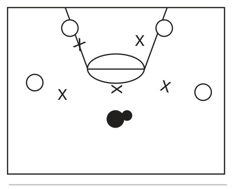<figcaption>Hình 6.3: Việc định vị của người tấn công (vòng tròn) và người phòng thủ (dấu X) trên sân bóng rổ tạo thành các cặp.</figcaption></figure>
<p>chuyển tiếp sang một trạng thái mới tại một giá trị cụ thể của tham số điều khiển. Nói cách khác, người tấn công đang cố rê bóng vượt qua người phòng thủ trong khi người phòng thủ cố duy trì trạng thái ban đầu của hệ thống. Người tấn công tăng số hành động rê bóng (các dao động) nhằm tạo ra thông tin về sự xuất hiện của một chuyển tiếp hệ thống (tức là một quyết định về thời điểm hành động). Đột ngột, quyết định nổi lên trong chu trình dự định–tri giác–hành động (Kugler, Shaw, Vincente, &amp; Kinsella-Shaw, 1990). Điều quan trọng là sự xuất hiện của quyết định là kết quả của việc phá vỡ tính đối xứng giữa hai người trong cặp. Trong hình 6.4, quỹ đạo chuyển động của các cầu thủ cho thấy tính đối xứng của hệ thống được duy trì (a), bị phá vỡ có lợi cho người tấn công (b), và bị phá vỡ có lợi cho người phòng thủ (c).</p>
<h3>Tóm tắt</h3>
<p>Trong chương này, chúng ta đã thảo luận về cách một khung dựa trên ràng buộc tập trung sự chú ý vào sự khác biệt cá nhân, xem tính biến thiên của hành vi là những nỗ lực đáp ứng các ràng buộc riêng biệt đối với người thực hiện trong những bối cảnh cụ thể. Chúng ta cũng thảo luận các hàm ý của góc nhìn lý thuyết này đối với cách tiếp cận sư phạm phi tuyến trong luyện tập. Những tiến bộ công nghệ và các phương pháp phân tích mới đã giúp chúng ta đánh giá chi tiết hơn cấu trúc của tính biến thiên vận động, từ đó cung cấp tiêu điểm liên quan khi người ta quan tâm đến cách các bậc tự do của hệ thống vận động được tái định hướng trong luyện tập. Do sự phù hợp có thể mang tính độc đáo giữa động lực học nội tại của một cá nhân với một tập hợp động lực học nhiệm vụ, mỗi người có thể</p>
<p style="font-style:italic;color:#475569;font-size:.88rem">Hình 6.4: Chuyển động tương đối của cả người tấn công và người phòng thủ trong nhiệm vụ luyện tập. Quỹ đạo chuyển động của các cầu thủ cho thấy tính đối xứng của hệ thống (a) được duy trì, (b) bị phá vỡ có lợi cho người tấn công, và (c) bị phá vỡ có lợi cho người phòng thủ.</p>
<p>Được chuyển ngụ, có sự cho phép, từ D. Araújo et al., 2004, Emergence of sport skills under constraints. Trong Skill acquisition in sport: Research, theory and practice, do A. M. Williams và N. J. Hodges biên tập (London: Routledge, Taylor &amp; Francis), 409-433.</p>
<p>Thời gian (s)</p>
<p>90.0</p>
<p>80.0</p>
<p>70.0</p>
<p>120.0</p>
<p>110.0</p>
<p>100.0</p>
<p>60.0</p>
<p>50.0</p>
<p>40.0</p>
<p>30.0</p>
<p>20.0</p>
<p>10.0</p>
<p>0.00.0 3.0 2.0 1.0 4.0 5.0</p>
<p>Khoảng cách đến rổ (đơn vị tùy ý)</p>
<p>Người tấn công Người phòng thủ</p>
<p>Thời gian (s)</p>
<p>90.0</p>
<p>80.0</p>
<p>70.0</p>
<p>120.0</p>
<p>110.0</p>
<p>100.0</p>
<p>60.0</p>
<p>50.0</p>
<p>40.0</p>
<p>30.0</p>
<p>20.0</p>
<p>10.0</p>
<p>0.00.0 3.0 2.0 1.0 4.0 5.0</p>
<p>Khoảng cách đến rổ (đơn vị tùy ý)</p>
<p>Người tấn công Người phòng thủ</p>
<p>Thời gian (s)</p>
<p>90.0</p>
<p>80.0</p>
<p>70.0</p>
<p>120.0</p>
<p>110.0</p>
<p>100.0</p>
<p>60.0</p>
<p>50.0</p>
<p>40.0</p>
<p>30.0</p>
<p>20.0</p>
<p>10.0</p>
<p>0.00.0 3.0 2.0 1.0 4.0 5.0</p>
<p>Khoảng cách đến rổ (đơn vị tùy ý)</p>
<p>Người tấn công Người phòng thủ</p>
<figure class="bookfig">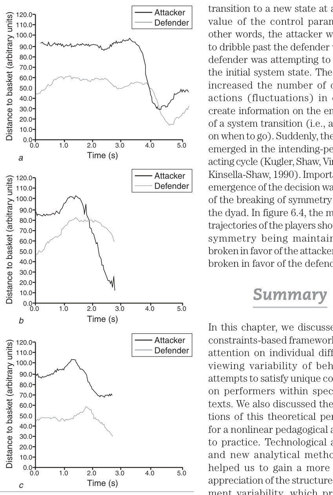<figcaption>Hình 6.4: Chuyển động tương đối của cả người tấn công và người phòng thủ trong nhiệm vụ luyện tập. Quỹ đạo chuyển động của các cầu thủ cho thấy tính đối xứng của hệ thống (a) được duy trì, (b) bị phá vỡ có lợi cho người tấn công, và (c) bị phá vỡ có lợi cho người phòng thủ.</figcaption></figure>
<p>khai thác tính biến thiên của hệ thống theo một cách hơi khác. Khi làm việc với các nhóm, người thực hành phải để thực tế này định hướng phương pháp giảng dạy của mình thay vì bỏ qua những vấn đề cá nhân và nhịp độ học tập. Sự nổi lên của hành vi dưới các ràng buộc tương tác là một ý tưởng lý thuyết then chốt hứa hẹn giúp chúng ta hiểu việc ra quyết định ở nhiều mức phân tích khác nhau trong thể thao và các hoạt động thể chất.</p>
<p>Nhờ các phân tích cá nhân hóa chi tiết được dùng trong nhiều thử nghiệm được mô tả ở chương này, chúng ta đã có thể phát hiện những khác biệt thú vị giữa những người tham gia trong một loạt nhiệm vụ. Từ các nhiệm vụ vận động tinh tế, tĩnh như ném phạt trong bóng rổ đến các nhiệm vụ năng động, bùng nổ hơn như rê bóng đối đầu với đối thủ, việc nhấn mạnh nhiều hơn tính biến thiên đã làm nổi bật một số hàm ý quan trọng đối với kiểm soát vận động và học vận động.</p>
<p>Bằng cách áp dụng góc nhìn sư phạm phi tuyến, huấn luyện viên và giáo viên có thể nâng cao việc học. Sự nhấn mạnh truyền thống của người thực hành vào giảm lỗi trong luyện tập kỹ năng bằng cách khuyến khích tính nhất quán trong các mẫu hình vận động cần được xem xét lại để thừa nhận vai trò quý giá của tính biến thiên trong kiểm soát từng khoảnh khắc cũng như trong học tập dài hạn. Một người học đang gặp khó khăn có thể được xem như một hệ thống tạm thời bị mắc kẹt trong một trạng thái điểm hút ổn định không tương ứng tốt với một giải pháp hành vi có thể đáp ứng yêu cầu nhiệm vụ. Như Corbetta và Vereijken (1999) đã gợi ý, một chiến lược làm nhiễu loạn hệ thống vận động có thể là cần thiết để giúp người học buông bỏ các giải pháp vận động trước đó. Các kỹ thuật như thao tác ràng buộc nhiệm vụ như luật chơi, không gian, thiết bị và số lượng đối thủ nên được xem là những cách hữu ích để tạo ra tính biến thiên vận động chức năng và khuyến khích khám phá các giải pháp thay thế. Những ý tưởng này đặt câu hỏi với các khái niệm truyền thống về luyện tập lặp đi lặp lại để ghi nhớ các mẫu hình vận động chuẩn hóa và phân rã kỹ năng trong luyện tập nhằm giảm thiểu tính biến thiên vận động. Vì hiệu suất có thể dao động như hệ quả của việc tái tổ chức hệ thống vận động, người thực hành nên thừa nhận rằng người học có thể cần thêm sự khích lệ và trấn an.</p>
<p>Trong chương này, chúng tôi đã lập luận và chứng minh chiến lược sâu sắc của việc dùng phân tích cá nhân trong nghiên cứu vận động để có bức tranh rõ hơn về cách những người thực hiện khác nhau khai thác tính biến thiên. Khi ngày càng có nhiều nghiên cứu áp dụng các phương pháp như lập hồ sơ phối hợp và phân tích cụm xuất hiện, các nhà nghiên cứu ngày càng tin chắc rằng không thể tồn tại mối quan hệ nhân–quả tuyến tính giữa các mệnh lệnh của CNS và đầu ra vận động. Ý tưởng này phù hợp với quan điểm trong sư phạm phi tuyến rằng mục tiêu của học không phải là tiếp thu một mẫu hình vận động lý tưởng chung cho mọi người học. Latash (1996) cho rằng não bộ không quan tâm chính xác các bậc tự do của hệ thống vận động tương tác với nhau như thế nào để tạo ra hoạt động hướng đến mục tiêu. Thay vào đó, các quỹ đạo vận động đa dạng nổi lên như kết quả của sự tương tác giữa các ràng buộc cụ thể về nhiệm vụ, môi trường và cơ thể mà mỗi tình huống độc đáo mang lại. Điều này đặc biệt rõ trong thể thao, nơi những yếu tố đó thay đổi rất thường xuyên và bất ngờ. Người thực hiện chuyên môn cao ngày càng được thừa nhận là có khả năng liên tục điều chỉnh kỹ thuật của mình khi yêu cầu tri giác thay đổi. Các cơ chế mà con người dùng để tiến tới mức kiểm soát này như một hàm của học tập sẽ cung cấp tiêu điểm mang lại năng suất cho nghiên cứu tương lai.</p>
<p>CÂU HỎI TỰ KIỂM TRA</p>
<p>1. Làm thế nào người học có thể thực hiện các mẫu hình vận động mới mà họ chưa từng thử trước đây? Hãy trả lời câu hỏi này bằng cách phân biệt giữa các cách tiếp cận lý thuyết truyền thống và tiếp cận dựa trên rào cản/giới hạn đối với tiếp thu kỹ năng.</p>
<p>2. Một giáo viên thể dục có thể khuyến khích học khám phá như thế nào khi đồng thời quản lý nhóm 30 trẻ đang học các kỹ năng thể dục dụng cụ cơ bản?</p>
<p>3. Các yếu tố di truyền ảnh hưởng đến tiếp thu kỹ năng ở mức độ nào? Hãy thảo luận câu hỏi này liên quan đến các chiến lược phổ biến về nhận diện và phát triển tài năng.</p>
<p>4. Hãy đưa ra một số ví dụ về các ràng buộc hạn chế nhịp độ đối với một đầu bếp đang phục hồi sau chấn thương do căng thẳng lặp đi lặp lại ở cổ tay.</p>
<p>5. Hãy giải thích một số ưu điểm của các thước đo tính biến thiên phụ thuộc thời gian lấy từ các cú ném lao.</p>
<p>ĐỌC THÊM</p>
<p>1. Araújo, D., Davids, K., &amp; Serpa, S. (2005). An ecological approach to expertise effects in decision-making in a simulated sailing regatta. Psychology of Sport and Exercise, 6, 671-692.</p>
<p>2. Button, C., Davids, K., &amp; Schöllhorn, W.I. (2006). Co-ordination profiling of movement systems. Trong K. Davids, S. Bennett, &amp; K.M. Newell (Eds.), Variability in the movement system: A multi-disciplinary perspective (pp. 133-152). Champaign, IL: Human Kinetics.</p>
<p>3. Ridley, M. (2004). Nature via nurture: Genes, experience and what makes us human. New York: Harper Collins.</p>
<p>4. Scully, D.M., &amp; Newell, K.M. (1985). Observational learning and the acquisition of motor skills: Toward a visual perception perspective. Journal of Human Movement Studies, 11, 169-186.</p><h2 class="chapter-title">Chương 7 — Tổ chức luyện tập để tối ưu hóa học tập</h2><h2>Tổ chức luyện tập để tối ưu hóa việc học</h2>
<p>ĐỀ CƯƠNG CHƯƠNG</p>
<p>Ràng buộc thời gian trong luyện tập</p>
<p>Thao tác ràng buộc nhiệm vụ trong luyện tập</p>
<p>Bẻ cong luật chơi Thay đổi không gian Điều chỉnh thiết bị</p>
<p>Chiến lược cấu trúc hóa luyện tập</p>
<p>Nhiễu ngữ cảnh Tổ chức luyện tập theo phần nhiệm vụ</p>
<p>Tóm tắt</p>
<h3>CHƯƠNG 7 CHƯƠNG 7</h3>
<figure class="bookfig"></figure>
<figure class="bookfig"></figure>
<p>Như chúng tôi đã lưu ý trong chương trước, một số ràng buộc nhiệm vụ quan trọng nhất mà người thực hành có thể thao tác là các biến số luyện tập. Ví dụ, một đánh giá toàn diện về nghiên cứu luyện tập đã làm nổi bật một loạt biến số có thể ràng buộc quá trình tiếp thu kỹ năng (xem Lee, Chamberlin, &amp; Hodges, 2001). Các biến số này bao gồm lượng luyện tập, loại hình luyện tập (ví dụ, luyện tập có chỉ đạo so với luyện tập dựa trên khám phá), bản chất của phản hồi, số kỹ năng được luyện tập trong một buổi, và cấu trúc của các buổi luyện tập (xem thêm chương 1). Bernstein (1967) gọi quá trình luyện tập là &#x27;lặp lại mà không lặp lại&#x27;, ý nói ít nhấn mạnh vào việc tái tạo chính xác một mẫu hình vận động qua các lần thử và chú ý nhiều hơn đến việc thích nghi các mẫu hình vận động trong luyện tập để đạt được các mục tiêu kết quả nhất quán. Trong chương này, chúng ta sẽ phân tích quá trình luyện tập và xây dựng lập luận xem luyện tập như một hoạt động tìm kiếm thay vì sự lặp lại hay diễn tập đơn giản một hình thức vận động. Quá trình tìm kiếm trong luyện tập bao gồm việc chỉnh sửa và hoàn thiện các giải pháp vận động từ lần thử này sang lần thử khác mà không dựa vào hiệu suất giống hệt, một dạng &#x27;lặp lại mà không lặp lại&#x27; như Bernstein (1967) đã lưu ý. Việc xem luyện tập như một quá trình khám phá là hệ quả của đặc tính tự tổ chức hiện diện ở mọi cấp độ của hệ thống vận động con người và bản chất nổi lên của hành vi thích nghi. Mục tiêu của chúng ta là làm rõ chi tiết của quá trình luyện tập bằng cách xem xét vai trò của người thực hành trong việc thao tác ràng buộc và tổ chức cấu trúc các buổi luyện tập.</p>
<h3>Ràng buộc thời gian trong luyện tập</h3>
<p>Một đặc điểm quan trọng của tiếp cận dựa trên rào cản/giới hạn liên quan đến cách sự thay đổi trong hành vi vận động có thể được tạo ra như một hàm của học tập và phát triển. Một mục tiêu chính trong nghiên cứu truyền thống về luyện tập là cung cấp các luật chung để mô tả hàm của sự thay đổi và phát triển (xem chương 1). Lý thuyết chi phối về sự thay đổi cùng với học tập là luật lũy thừa của luyện tập, đã được gọi là &#x27;luật phổ biến của học tập&#x27; (Newell &amp; Rosenbloom, 1981, tr. 2). Nghiên cứu xem xét tác động tích lũy của luyện tập kéo dài và nhịp độ học tập cho thấy hàm mô tả tốt nhất mối quan hệ này là đơn điệu. Mối quan hệ đơn điệu giữa hai biến (ví dụ, nhịp độ học tập và lượng luyện tập) cho thấy khi một biến tăng (tức là lượng luyện tập), biến kia (tức là nhịp độ học tập) thay đổi cùng chiều. Do đó, luật lũy thừa của luyện tập nêu rằng học diễn ra với nhịp độ nhanh ngay sau khi bắt đầu luyện tập, nhưng nhịp độ học tập giảm dần theo thời gian khi luyện tập tiếp diễn. Tổng hợp lại, những ý tưởng này gợi ý rằng lượng học tập mà người ta đạt được thường là hàm của lượng luyện tập họ thực hiện. Tuy nhiên, về cuối quá trình học, thường có sự đi ngang lại trong mức cải thiện đạt được từ một lượng lần thử luyện tập nhất định.</p>
<p>Một số phân tích các dữ liệu được báo cáo và quan sát về lượng thời gian nhạc sĩ dành cho luyện tập có chủ đích đã ủng hộ giả định lợi ích đơn điệu. Ví dụ, như đã đề cập trong chương 1, Ericsson, Krampe và Tesch-Römer (1993) làm nổi bật mối quan hệ đơn điệu giữa số giờ nhạc sĩ luyện tập có chủ đích và mức hiệu suất họ đạt được. Nghiên cứu của họ chỉ ra rằng sự khác biệt giữa nghệ sĩ piano và violin chuyên môn cao với những người không chuyên là do lượng thời gian các nhạc sĩ dành cho luyện tập cường độ cao. Những nhạc sĩ năng lực nhất trong nghiên cứu đã dành hơn 10,000 giờ để luyện tập một mình, trong khi những nhạc sĩ kém thành thạo hơn dành không quá 7,000 giờ luyện tập một mình. Trong luyện tập có chủ đích, người học cũng thường nhận được hướng dẫn từ một người thực hành trong thời gian dài. Khái niệm luyện tập có chủ đích gợi ý rằng vì chuyên môn mang tính đặc thù lĩnh vực, người học nên kỳ vọng rất ít sự chuyển giao năng lực của mình sang các lĩnh vực khác. Ví dụ, những vũ công rất thành thạo với nhiều năm kinh nghiệm có thể kỳ vọng rất ít sự chuyển giao khả năng kỹ thuật của họ sang thể dục dụng cụ hoặc trượt băng nghệ thuật, trừ khi họ tiến hành một giai đoạn luyện tập có chủ đích kéo dài trong những hoạt động đó.</p>
<p>Dù những dữ liệu này hữu ích trong việc giúp chúng ta hiểu mức độ luyện tập mà người học thường cần, chúng không nắm bắt được tính độc đáo trong cuộc đấu tranh cá nhân của mỗi người học, vốn là tiêu điểm hàng đầu của tiếp cận dựa trên rào cản/giới hạn</p>
<p>Tồn tại mối quan hệ đơn điệu giữa số giờ nhạc sĩ luyện tập có chủ đích và mức hiệu suất họ đạt được.</p>
<p>© Jim Whitmer</p>
<figure class="bookfig restored">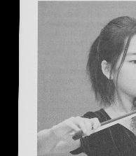</figure>
<p>góc nhìn. Nghiên cứu về luyện tập có chủ đích bộc lộ điểm yếu quen thuộc là gom chung dữ liệu từ những người học khác nhau, không nhận ra các ràng buộc riêng biệt mà mỗi người cần đáp ứng, như đã mô tả trong các chương 4 và 5.</p>
<p>Những phát hiện này cũng bị thách thức bởi nhiều ví dụ về các vận động viên sớm thành đạt, những người vươn lên đỉnh cao nghề nghiệp từ khi còn trẻ. Ví dụ, năm 2003, cầu thủ bóng rổ LeBron James đã được đề nghị một hợp đồng tài trợ trị giá hàng triệu đô la với một nhà sản xuất trang phục thể thao lớn của Mỹ ở tuổi 18, thỏa thuận lớn thứ hai từng có và gấp hơn hai lần số tiền từng trả cho huyền thoại Michael Jordan. Trong bóng đá, Freddy Kofi Adu 11 tuổi là đối tượng của một lời đề nghị chuyển nhượng trị giá triệu đô la từ đội bóng châu Âu Inter Milan. Cậu được chọn vào đội tuyển dưới 17 tuổi của Hoa Kỳ ở tuổi 13 và sau đó được các câu lạc bộ Giải Ngoại hạng Anh tiếp cận để ký các hợp đồng hàng triệu đô la vào năm 2003, rồi thử sức tại Manchester United, một trong những câu lạc bộ lớn nhất thế giới, năm 2006. Vô số ví dụ về những thần đồng như vậy tồn tại trong các lĩnh vực hiệu suất khác như âm nhạc, nghệ thuật và múa (van Lieshout &amp; Heymans, 2000). Tính sớm thành thục trong năng lực của nhiều người thực hiện thách thức ý tưởng rằng thời gian dành cho luyện tập có chủ đích là ràng buộc chính đối với tiếp thu kỹ năng và phát triển tài năng.</p>
<p>Một số nhà lý thuyết đã gợi ý rằng cấu trúc vi mô của các hoạt động (tức là các thói quen và bài tập cụ thể) được tiến hành trong luyện tập có chủ đích là quan trọng nhất (Starkes, 2000), nhưng các nghiên cứu thực nghiệm hiện có trong lĩnh vực này có một số hạn chế (xem Davids &amp; Baker, in press; Davids, 2000). Ví dụ, các hoạt động luyện tập có chủ đích thường được suy ra từ các ước tính hồi tưởng qua nhiều năm, và điều này dễ bị thiên lệch trong ghi chép từ phía người tham gia. Thêm vào đó, sự thiếu các nhóm đối chứng trong thiết kế nghiên cứu nhằm trực tiếp kiểm tra các dự đoán của lý thuyết là điều dễ nhận thấy. Điểm được nêu trước đó về khó khăn trong việc ghi chép chính xác cấu trúc vi mô của luyện tập thay vì lượng hóa bao nhiêu thời gian luyện tập đã được tích lũy là quan trọng, bởi vì, ở</p>
<p>Cầu thủ bóng đá Freddy Adu. Tính sớm thành thục trong năng lực của nhiều người thực hiện thách thức ý tưởng rằng thời gian dành cho luyện tập có chủ đích là ràng buộc chính đối với tiếp thu kỹ năng và phát triển tài năng.</p>
<p>© Icon Sports Media</p>
<figure class="bookfig"></figure>
<p>tình huống cực đoan, người học có thể bị quá tải do luyện tập kỹ năng trong một phạm vi hẹp của ràng buộc nhiệm vụ, đặc biệt nếu thói quen xấu vô tình hình thành hoặc nếu tập luyện quá sức hay chấn thương do căng thẳng lặp đi lặp lại xảy ra. Chỉ biết số giờ mà người học cần dành cho luyện tập có chủ đích là chưa đủ. Những người thực hành vận động cần quản lý những thay đổi trong học, và một phương pháp then chốt là thao tác các ràng buộc đối với người học trong lúc họ cố khám phá giải pháp vận động của riêng mình.</p>
<h3>Thao tác ràng buộc nhiệm vụ trong luyện tập</h3>
<p>Trong chương 4, chúng ta đã thừa nhận rằng duy trì và chuyển giao là các chỉ số của học vận động, và nhiều chiến lược chúng ta sẽ thảo luận trong chương này nhấn mạnh các khái niệm này. Người thực hành nên lưu ý rằng các kỹ thuật chúng tôi đề xuất có thể dẫn đến nhịp độ tiếp thu kỹ năng chậm hơn so với các chiến lược giảng dạy truyền thống. Tuy nhiên, cũng như một thứ rượu ngon, quá trình tiếp thu kỹ năng cần được cho thời gian để chín muồi tự nhiên nhằm có kết quả tốt hơn về lâu dài. Không phải người học nào cũng có năng khiếu như những ngôi sao trẻ phi thường đã nhắc đến ở trên.</p>
<p>Bẻ cong luật chơi</p>
<p>Mỗi môn thể thao có luật chơi riêng được thiết kế để ràng buộc hành vi của người tham gia ở các mức độ khác nhau và tạo ra bối cảnh cạnh tranh công bằng. Ví dụ, để tránh giành lợi thế không công bằng so với đối thủ, người ném lao không được bước qua vạch ném. Trong các hoạt động vận động nói chung hơn, luật chơi có thể cùng tồn tại với các quy ước văn hóa – xã hội, chẳng hạn như tuân theo tín hiệu giao thông khi lái xe. Bất kể hoạt động nào, người học cố vận động trong khuôn khổ ràng buộc của luật chơi, nếu không sẽ có nguy cơ không đạt được mục tiêu nhiệm vụ. Trong nhiều môn thể thao và hoạt động, người thực hành thường bỏ qua việc dạy luật chơi cho đến sau khi người học đã luyện tập một số kỹ thuật cơ bản riêng lẻ (xem chương 5). Hệ quả là người học có thể ít có cơ hội tìm kiếm và khám phá các chuyển động trong những tình huống giống như trò chơi.</p>
<p>Khả năng tuân thủ luật chơi và tạo ra các mẫu hình vận động tương ứng của người học có thể được khai thác như một chiến lược luyện tập mạnh mẽ. Thay vì cố nhận và diễn giải các hướng dẫn bằng lời nói cụ thể về cách đạt được mục tiêu nhiệm vụ, người học cần tự mình tham gia và giải quyết những vấn đề thực tế. Người thực hành có thể dùng những thay đổi nhỏ về luật chơi để ảnh hưởng đến người chơi, khiến họ điều chỉnh động lực học nội tại hiện có nhằm khớp với thông tin hành vi được đưa vào theo cách đặc thù của trò chơi (Corbetta &amp; Vereijken, 1999). Nhiệm vụ của người thực hành là thao tác ràng buộc bằng cách đưa ra những thay đổi luật chơi thực tế cho phép người học tìm kiếm và chuyển hóa các giải pháp vận động phù hợp thành hiệu suất thực tế (Handford, Davids, Bennett, &amp; Button, 1997). Tiếp theo chúng ta sẽ xem xét hai ví dụ từ thể thao đồng đội và cá nhân để giúp hiểu cách thao tác ràng buộc dạng này có thể hoạt động như thế nào.</p>
<p>Thể thao đồng đội: Bóng đá Một kỹ thuật phổ biến trong giáo dục thể chất và huấn luyện là thay đổi luật của các trò chơi luyện tập để khuyến khích tiếp thu các kỹ năng cụ thể (Capel, 2000; Rink, 2001). Điều này đôi khi được gọi là điều kiện hóa một trò chơi luyện tập. Ví dụ, một huấn luyện viên bóng đá có thể giúp người học cải thiện khả năng kiểm soát bóng và kỹ năng chuyền bóng trong một trò chơi luyện tập được biến đổi (có điều kiện), nơi mỗi cầu thủ chỉ được phép chạm bóng với số lần hạn chế. Luật hai lần chạm bóng yêu cầu cầu thủ đang giữ bóng phải chuyền hoặc bắn chỉ sau hai lần chạm bóng; nếu không, cầu thủ phạm lỗi và mất bóng về phía đối phương.</p>
<p>Một thay đổi luật đơn giản như vậy ảnh hưởng thế nào đến tiếp thu kỹ năng? Thứ nhất, luật hai lần chạm đòi hỏi một cú chạm bóng đầu tốt để kiểm soát và đặt bóng cho cú chạm thứ hai quan trọng. Để có cú chạm đầu tốt, người nhận bóng phải học cách nhận biết thông tin quan trọng khi bóng đang đến nhằm giữ tư thế cơ thể phù hợp (Button, Smith, &amp; Pepping, 2005). Hình ảnh quang học của quả bóng đang tiến đến trên võng mạc sẽ giúp xác định cách dẫn dắt một hành động chặn bắt bằng chân đá (xem chương 3). Người thực hành không dạy tường minh cho người học chú ý đến những nguồn thông tin đó hay kiểm soát bóng tốt hơn; thay vào đó, người học được khuyến khích tự khám phá các giải pháp này. Bằng cách tuân theo những luật này, người học sẽ tìm kiếm giải pháp vận động giúp họ nhanh chóng kiểm soát và chuyền bóng cho đồng đội. Qua luyện tập nhiều dưới những ràng buộc này, hệ thống vận động sẽ tiến hóa để thu nhận các bất biến tri giác then chốt từ quả bóng và chuyển động của đồng đội. Dần dần, các mẫu hình phối hợp đặc thù cho nhiệm vụ sẽ nổi lên, các liên kết này trở nên bền chặt hơn và hành động trông trôi chảy, tự động hơn (Anderson &amp; Sidaway, 1994; Broderick &amp; Newell, 1999).</p>
<p>Sau khi người học đã tiếp thu một mẫu hình phối hợp cơ bản, người thực hành có thể đưa vào một ràng buộc nhiệm vụ bẻ cong luật chơi gần với các tình huống trò đấu, nơi sự hiện diện của đối thủ áp đặt giới hạn thời gian cho hành động. Sau đây là một số luật nhân tạo khác được thiết kế để ổn định một số mẫu hình phối hợp nhất định trong luyện tập bóng đá. Hãy xem xét bản chất của những kỹ năng mà huấn luyện viên có thể muốn tăng cường bằng cách đưa các luật nhân tạo này vào luyện tập:</p>
<p>Áp đặt hạn chế bắn bóng từ những khu vực của sân rất gần khung thành. Mỗi thành viên trong đội phải chạm bóng trước khi được bắn. Chỉ bàn thắng được ghi từ những đường chuyền cao (hoặc tạt bóng) mới được tính. Bàn thắng từ cú đánh đầu hoặc cú sút volley được tính gấp đôi.</p>
<p>Thể thao cá nhân: Bóng tường Một ví dụ từ môn thể thao cá nhân hữu ích để phát triển ý tưởng thao tác ràng buộc đối với người học bằng cách áp đặt các luật hoặc điều kiện nhất định. Huấn luyện viên bóng tường khuyến khích cầu thủ trở lại vị trí chữ T trên sân giữa các cú đánh, vì đây là vị trí trung tâm giúp dễ dàng lấy bóng từ mọi khu vực của sân. Tiếc thay cho người chơi, việc di chuyển về vị trí chữ T sau mỗi cú đánh lại không quen thuộc và thường bị quên trong lúc căng thẳng của một loạt bóng. Một thay đổi luật có thể giúp cầu thủ phát triển kỹ năng định vị này như thế nào? Một cách tiếp cận có thể là hướng dẫn mỗi cầu thủ bước vào một vùng mục tiêu nhỏ quanh vị trí chữ T giữa các điểm, nếu không sẽ mất điểm đang chơi. Luật này nên khuyến khích người chơi nhận ra vị trí trên sân này là một điểm then chốt về không gian xung quanh đó có thể thực hiện các cú đánh thông thường như cú trái tay hay cú bóng ngắn. Bẻ cong luật chơi theo cách này có thể ràng buộc hành động trong khi việc tuân theo hướng dẫn bằng lời nói của huấn luyện viên thì chưa chắc đã được.</p>
<p>Trong nghiên cứu về động lực phối hợp, Carson, Goodman, Kelso và Elliott (1995) gọi hiện tượng này là sự neo nội tại. Bằng cách thiết lập neo nội tại, người thực hiện phát triển các liên kết vận động bền chặt hơn với các nguồn thông tin then chốt của môi trường. Như một bài tập huấn luyện, dạng luyện tập này cũng có khả năng cải thiện thể lực tim mạch, vì mỗi cầu thủ bị buộc phải di chuyển giữa các cú đánh để tập trung vào vị trí tối ưu trên sân. Bằng cách áp dụng dạng ràng buộc nhiệm vụ này tương đối sớm trong quá trình học, các chuỗi hành động tĩnh, có thể đoán trước có thể được tạo nên tính năng động hơn. Một lợi ích bổ sung của việc dùng ràng buộc nhiệm vụ làm điều kiện trong luyện tập là người học được khuyến khích từ giai đoạn sớm chịu trách nhiệm về hành động của mình và luyện tập các hoạt động ra quyết định có thể liên quan trong thi đấu.</p>
<p>Thay đổi không gian</p>
<p>Vì mọi hoạt động thể chất đều diễn ra trong những môi trường bị giới hạn bởi ranh giới ở một mức độ nào đó, khả năng tăng hoặc giảm diện tích hiệu suất trong luyện tập là rất phổ biến. Hãy xem xét lợi ích mà người chơi khúc côn cầu trên cỏ có thể đạt được khi luyện tập dưới các ràng buộc nhiệm vụ mà ở đó một cầu thủ phải rê bóng vượt qua đối thủ trong một không gian hạn chế. Thứ nhất, các ràng buộc nhiệm vụ hướng người rê bóng tới những mẫu hình vận động giúp giữ bóng sát người, chẳng hạn duy trì kiểm soát bóng và gậy, rê bóng với nhịp độ, và đổi hướng. Thứ hai, người phòng thủ học cách định vị để ngăn đối thủ rê bóng vượt qua mình và cách canh thời điểm chặn bóng bằng gậy. Khi người học cải thiện kỹ năng rê bóng, người thực hành có thể dần thay đổi ràng buộc nhiệm vụ bằng cách thu hẹp thêm khu vực chơi hoặc thêm cầu thủ để khuyến khích các hành động chuyền bóng và kiểm soát bóng.</p>
<p>Việc thao tác các ràng buộc nhiệm vụ bằng cách thay đổi đặc điểm không gian của khu vực chơi trong các môn thể thao dùng vợt, chẳng hạn như quần vợt rút gọn và cầu lông, cũng có thể mang lại lợi ích. Trong giai đoạn học tập ban đầu, khi người chơi mới đang thiết lập các mẫu hình phối hợp mới, việc chơi trong một sân hoặc khu vực rộng hơn có thể có lợi vì ít cú đánh hơn sẽ rời khỏi sân và bị coi là lỗi. Khi người chơi đã thiết lập được các mẫu hình phối hợp cơ bản, chẳng hạn như cú thuận tay, kích thước sân có thể được thu nhỏ lại để buộc người chơi phải tinh chỉnh chuyển động của cánh tay cầm vợt nhằm đáp ứng yêu cầu độ chính xác cao hơn. Ví dụ, trong quần vợt, việc dời vạch phát bóng lại gần lưới hơn ở sân của đối thủ sẽ đòi hỏi mặt vợt phải khép lại khi chạm bóng để tạo ra quỹ đạo bóng cong vòm qua lưới. Ngoài ra, việc hạ thấp hoặc nâng cao lưới trong luyện tập khuyến khích người chơi quần vợt và cầu lông khám phá cách thức và thời điểm mà các quỹ đạo cú đánh khác nhau có thể hữu ích trước đối thủ.</p>
<h3>Khái niệm chính</h3>
<p>Trong nhiều môi trường thực hiện, người chơi phải học cách khai thác không gian hoặc thể hiện kỹ năng trong một khu vực hạn chế. Dưới các ràng buộc nhiệm vụ không gian bị thu hẹp, người học cải thiện khả năng chuyển giao kỹ năng vì họ phải điều chỉnh các mẫu hình phối hợp của mình cho phù hợp với</p>
<p>Trong cầu lông, việc thao tác các ràng buộc nhiệm vụ bằng cách thay đổi đặc điểm không gian của sân đôi khi có thể mang lại lợi ích cho người học.</p>
<p>© Jeon Heon-Kyun/epa/Corbis</p>
<figure class="bookfig restored">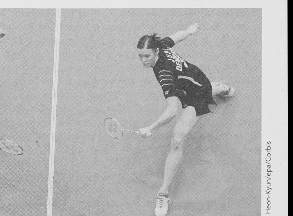</figure>
<p>bối cảnh thực hiện mới. Một lần nữa, rõ ràng là lợi ích quan trọng nhất cho người học là họ phải tự tạo ra giải pháp phù hợp của riêng mình cho các ràng buộc nhiệm vụ mới. Tình huống này đại diện cho một cơ hội học tập quý giá, trong đó người học phải đánh giá lại các năng lực vận động hiện có của mình trước các yêu cầu thực tế của môi trường. Một lợi ích bổ sung của việc thay đổi kích thước khu vực luyện tập là người học luôn giữ được sự hứng thú và động lực vì các ràng buộc nhiệm vụ có thể được điều chỉnh liên tục cho phù hợp với trình độ chuyên môn của họ.</p>
<p>Điều chỉnh thiết bị</p>
<p>Ảnh hưởng của khoa học thể thao và những tiến bộ công nghệ trong 50 năm qua đã dẫn đến sự quan tâm ngày càng tăng đối với hiệu quả của thiết bị thể thao. Những động lực tài chính đáng kể liên quan đến việc nâng cao hiệu suất trong thể thao hiện đại đã góp phần vào nhiều thay đổi trong thiết kế thiết bị, chẳng hạn như giày trượt tốc độ (de Koning, de Groot, &amp; van Ingen Schenau, 1992) và gậy golf (Iwatsubo, Kawamura, Miyamoto, &amp; Yamaguchi, 2000). Trong phần này, chúng ta sẽ xem xét cách người thực hành có thể sử dụng thiết bị và các công cụ hỗ trợ nhân tạo trong luyện tập để ràng buộc các mẫu hình vận động của người học và thúc đẩy tiếp thu kỹ năng. Thiết bị được điều chỉnh có thể tái cấu trúc môi trường luyện tập và giúp người học đối phó với các ràng buộc nhiệm vụ ít nghiêm ngặt hơn. Người thực hành có thể dùng các công cụ hỗ trợ luyện tập để tạm thời ràng buộc hệ thống người thực hiện–môi trường, khuyến khích sự tập trung phù hợp vào một số biến tri giác nhất định hoặc sự nổi lên của các ghép nối thông tin–vận động then chốt. Những người thực hành thành công nhận ra rằng việc sử dụng thiết bị được điều chỉnh một cách thỉnh thoảng phải được tích hợp cẩn thận vào chương trình huấn luyện của vận động viên để sự chuyển giao vận động sang các lần thực hiện sau là tối ưu. Người học không được trở nên phụ thuộc vào việc sử dụng các thiết bị nhân tạo.</p>
<p>Luyện tập khi bị bịt mắt Mặc dù việc dùng bịt mắt hoặc kính che thị giác trong luyện tập bóng chuyền, bóng đá và bóng rổ có vẻ bất thường, nhưng một số nghiên cứu gần đây đã ủng hộ ý tưởng che giấu các nguồn thông tin khác nhau trong quá trình học để hướng người chơi đến các nguồn thông tin tri giác thay thế (xem NGHIÊN CỨU TIÊU ĐIỂM). Các thiết bị che khuất như bịt mắt, tạp dề nhô ra quanh eo và dụng cụ hỗ trợ rê bóng đeo dưới mắt để che tầm nhìn của các chi đã được dùng trong bóng chuyền để hướng sự tìm kiếm thông tin âm thanh của người chắn bóng từ cú chạm bóng của người chuyền, trong bóng rổ để ngăn người chơi nhìn vào tay mình khi đang dẫn bóng, trong bóng đá để hướng người chơi ngẩng đầu lên và tìm kiếm thông tin thị giác trong môi trường khi rê bóng, và trong golf để tập trung sự chú ý của người chơi vào cảm giác bản thể của cú vung gậy. Ở chiều ngược lại, những người thực hành vận động khác, chẳng hạn như giáo viên dạy múa, lại ủng hộ việc dùng gương hoặc phản hồi video trực tiếp để tăng cường thị giác. Điểm mấu chốt là người thực hành có thể loại bỏ hoặc bổ sung thông tin để giúp người học phát triển các ghép nối thông tin–vận động phù hợp.</p>
<h3>Nghiên cứu tiêu điểm</h3>
<p>CÁC RÀNG BUỘC THỜI GIAN VÀ THÔNG TIN ĐỐI VỚI THỰC HIỆN BẮT BÓNG BẰNG MỘT TAY</p>
<p>Trong thí nghiệm bắt bóng bằng một tay của Bennett, Button, Kingsbury và Davids (1999), ba nhóm trẻ được chọn bằng một bài kiểm tra sơ bộ về khả năng bắt bóng. Chỉ những người tham gia bắt được chưa tới 10% số lần thử mới được nghiên cứu. Một nhóm trẻ luyện tập nhiệm vụ với tầm nhìn bị hạn chế (nhóm RV), đội mũ bảo hộ có gắn tấm chắn mờ (xem hình 7.1a). Chiếc mũ được thiết kế để loại bỏ thông tin thị giác về chi đang dùng để bắt bóng. Các nhà nghiên cứu dự đoán rằng khi thiếu</p>
<p style="font-style:italic;color:#475569;font-size:.88rem">Hình 7.1: Việc thao tác quyền tiếp cận thông tin của cánh tay đang bắt bóng có thể mang lại lợi ích cho tiếp thu kỹ năng bắt bóng bằng cách hướng sự tìm kiếm của người học tới các nguồn thông tin liên quan để bắt bóng.</p>
<p>Được in lại với sự cho phép của Research Quarterly for Exercise and Sport, Tập 70, 220-232, Bản quyền 1999 bởi American Alliance for Health, Physical Education, Recreation and Dance, 1900 Association Drive, Reston, VA 20191.</p>
<p>Trước Sau Trước Sau Trước Sau</p>
<p>Nhóm RV        Nhóm VA          Nhóm đối chứng 7</p>
<p>Điểm Số lần bắt Số lần trượt</p>
<p>Trường thị giác bình thường</p>
<p>Trường thị giác bình thường</p>
<p>Trường thị giác bị thu hẹp</p>
<p>Quỹ đạo của bóng</p>
<p>Mũ bảo hộ Tấm chắn mờ</p>
<figure class="bookfig"><figcaption>Hình 7.1: Việc thao tác quyền tiếp cận thông tin của cánh tay đang bắt bóng có thể mang lại lợi ích cho tiếp thu kỹ năng bắt bóng bằng cách hướng sự tìm kiếm của người học tới các nguồn thông tin liên quan để bắt bóng.</figcaption></figure>
<p>thông tin thị giác, trẻ sẽ bị buộc phải tìm kiếm các nguồn thông tin thay thế, chẳng hạn như thông tin bản thể từ cánh tay đang bắt bóng. Nhóm RV được chuyển sang điều kiện thị giác bình thường sau 120 lần luyện tập. Nhóm thứ hai có thị giác sẵn có (nhóm VA) trong các lần luyện tập nhưng sau đó được chuyển sang điều kiện RV cho 20 lần thử chuyển giao. Cuối cùng, một nhóm đối chứng được huấn luyện trong cùng số lần thử với thị giác bình thường suốt quá trình.</p>
<p>Như thể hiện trong hình 7.1b, mỗi nhóm đều cải thiện số lần bắt được từ bài kiểm tra trước đến sau. Điều đáng chú ý đặc biệt là sự cải thiện lớn hơn đáng kể của nhóm RV so với nhóm VA. Trong các bài kiểm tra chuyển giao, nhóm RV không cho thấy tác động bất lợi nào khi bắt bóng trong điều kiện thị giác bình thường. Tuy nhiên, nhóm VA thực hiện kém khi tầm nhìn của cánh tay đang bắt bóng bị che khuất. Độ nhạy của nhóm VA đối với việc loại bỏ thông tin thị giác cho thấy những người bắt bóng trong nhóm này đã phụ thuộc nhiều vào thị giác và kém thích ứng hơn đôi khi thông tin này bị hạn chế. Một gợi ý khác là nhóm RV đã được lợi từ việc được hướng tới các nguồn thông tin do tầm nhìn thấy bóng ở giai đoạn đầu của quỹ đạo, cảm giác bản thể từ cánh tay đang bắt bóng và thông tin âm thanh từ máy phát bóng cung cấp.</p>
<p>ỨNG DỤNG</p>
<p>Tóm lại, các dữ liệu ủng hộ việc sử dụng công cụ hỗ trợ như một chiến lược giảng dạy để thao tác các ràng buộc thông tin và hướng người mới bắt đầu đến các nguồn thông tin phù hợp. Việc những người học có kinh nghiệm hơn có cho thấy lợi ích tương tự trong hiệu suất dài hạn khi đáp ứng với những thao tác như vậy trong luyện tập hay không là một câu hỏi thú vị cho các công trình tương lai. Những loại hoạt động vận động nào khác mà người học có thể được lợi từ luyện tập với tầm nhìn bị hạn chế? Trong bối cảnh phục hồi chức năng sau chấn thương, hãy nêu một ví dụ tương tự về cách người thực hành có thể hướng bệnh nhân tới các nguồn thông tin then chốt (ví dụ: âm thanh, xúc giác hoặc thị giác) hỗ trợ các chuyển động như kiểm soát tư thế, thăng bằng hoặc di chuyển tới một mục tiêu.</p>
<p>Futebol de Salão Các ràng buộc nhiệm vụ thường được thao tác theo cách này hay cách khác trong các môn thể thao dùng bóng, nhưng lợi ích gì có thể đạt được từ việc thay đổi đặc điểm của quả bóng? Người thực hành có thể dùng thiết bị được điều chỉnh để hướng người học tới các dạng thông tin giác quan thay thế nhằm điều chỉnh hành vi vận động. Ví dụ, thiết bị nặng hơn bình thường có thể tạo tải cho hệ thống giác quan xúc giác với các mô-men quán tính khác nhau, hướng sự chú ý của người học tới nguồn thông tin quan trọng này (Beak, Davids, &amp; Bennett, 2000). Trong thập kỷ qua, futebol de salão (FDS), một loại bóng đá Nam Mỹ (bóng soccer), đã được du nhập vào Anh. Quả bóng FDS nhỏ hơn và nặng hơn quả bóng cỡ 5 chuẩn, loại bóng có hệ số phục hồi giữa 45% và 48% với áp suất được khuyến nghị là 11,4 pound trên mỗi inch vuông (78,6 kilopascal). Đối với FDS, độ đàn hồi phục hồi được khuyến nghị nằm trong khoảng 10% đến 15% và áp suất được duy trì ở 8,5 pound trên mỗi inch vuông (58,6 kilopascal). Mật độ của quả bóng FDS được thao tác bằng cách bơm vào ruột bóng một loại xốp làm giảm đặc tính nảy của bóng, từ đó đảm bảo bóng được chơi trên mặt đất nhiều hơn. Điều này khuyến khích người học dùng lòng bàn chân để kéo bóng tránh khỏi các hậu vệ ở khoảng cách rất gần. Các công cụ luyện tập tương tự hiện có sẵn rộng rãi cho nhiều môn thể thao chẳng hạn như bóng bầu dục và bóng rổ. Cũng như với FDS, nhà sản xuất các sản phẩm này tuyên bố những quả bóng này cải thiện khả năng kiểm soát bóng trong luyện tập (ví dụ, xem www.icfds.com).</p>
<p>Tuy nhiên, ảnh hưởng của thiết kế bóng đối với khả năng kiểm soát bóng vẫn chưa được biết rõ vì rất ít nghiên cứu khoa học xem xét bóng được thiết kế lại như một ràng buộc đối với sự nổi lên của các kỹ năng bóng. Button, Bennett, Davids và Stephenson (1999) đã kiểm tra hiệu ứng luyện tập khi dùng một quả bóng nhỏ với hệ số phục hồi thấp hơn đối với việc học hai kỹ năng đặc thù của bóng đá: rê bóng và tung bóng. Trong thí nghiệm này, một nhóm người mới bắt đầu luyện tập với bóng FDS được so sánh với một nhóm luyện tập với bóng đá cỡ chuẩn. Trong bài kiểm tra tung bóng được tiến hành sau 10 tiết tiếp thu, nhóm thử nghiệm cho thấy sự cải thiện lớn hơn đáng kể về kiểm soát bóng so với nhóm đối chứng (cải thiện 25% so với 9% về điểm tung bóng từ bài kiểm tra trước đến sau).</p>
<p>Chapman, Bennett và Davids (2001) đã mở rộng các phát hiện của Button, Bennett, Davids và Stephenson (1999) bằng cách thao tác kích thước bóng và hệ số phục hồi như một hàm của trình độ kỹ năng của người học. Trái ngược với Button và các cộng sự, những người nghiên cứu trẻ em ở giai đoạn kiểm soát của học vận động, Chapman và các cộng sự nghiên cứu khả năng kiểm soát bóng của trẻ em ở giai đoạn phối hợp trong mô hình tiếp thu kỹ năng của Newell (1985). Định nghĩa chính xác hơn về người học trong nghiên cứu của Button và cộng sự có thể là người mới bắt đầu, trong khi trẻ em được Chapman và cộng sự nghiên cứu được mô tả thích hợp là những người mới học hoàn toàn. Dùng cùng các bài kiểm tra như Button và các cộng sự, Chapman và các cộng sự không phát hiện thấy tác động nào đến tiếp thu kỹ năng khi các đặc điểm của bóng được thao tác. Kết quả từ cả hai nghiên cứu cho thấy việc thao tác thiết kế thiết bị tương tác như thế nào với trình độ kỹ năng của người học. Trong trường hợp của FDS, cần có thêm nghiên cứu để kiểm tra thiết kế thiết bị ảnh hưởng như thế nào đến tiếp thu kỹ năng của trẻ em ở cả giai đoạn phối hợp và giai đoạn kiểm soát. Các phân tích tinh chỉnh hơn cũng nên bao gồm nghiên cứu về những thay đổi trong phối hợp cùng với việc học.</p>
<h3>Chiến lược cấu trúc hóa luyện tập</h3>
<p>Đã có một lượng nghiên cứu đáng kể được tiến hành về các biến ảnh hưởng đến tổ chức luyện tập (Lee, Chamberlin, &amp; Hodges, 2001). Trong phần này, chúng ta xem xét một số vấn đề đó từ góc nhìn của tiếp cận dựa trên rào cản/giới hạn, đặc biệt tập trung vào các khái niệm nhiễu ngữ cảnh và luyện tập theo từng phần nhiệm vụ.</p>
<p>Nhiễu ngữ cảnh</p>
<p>Trong một buổi huấn luyện, việc xếp ngẫu nhiên thứ tự luyện tập các kỹ năng vận động khác nhau thay vì luyện tập theo thứ tự khối đã được chứng minh là cải thiện khả năng duy trì và chuyển giao của từng kỹ năng. Như đã đề cập trong chương 1, điều này được gọi là nhiễu ngữ cảnh (CI) (Magill, 2006; Newell</p>
<p>&amp; McDonald, 1991; Schmidt &amp; Lee, 2005). Ví dụ, một phi công đang luyện tập ba loại động tác bay khác nhau (ví dụ: A, B và C) trong máy mô phỏng có thể đạt được lợi ích hiệu suất ngắn hạn từ việc luyện tập theo định dạng khối (ví dụ: AAABBBCCC), nhưng việc duy trì lâu dài các động tác và một kỹ thuật thích ứng hơn nên được khuyến khích trong luyện tập ngẫu nhiên (ví dụ: CAABCABCB). Lịch trình luyện tập các kỹ năng càng đa dạng thì mức độ nhiễu ngữ cảnh hiện diện trong luyện tập càng cao.</p>
<p>Tài liệu về nhiễu ngữ cảnh chủ yếu gồm các giải thích mang tính nhận thức, chẳng hạn như giả thuyết tinh chế (Shea &amp; Morgan, 1979) và gần đây hơn là giả thuyết tái cấu trúc (Immink &amp; Wright, 2001). Các giả thuyết này cho rằng lợi ích học tập của nhiễu ngữ cảnh cao có thể quy cho việc người học tham gia vào các quá trình xử lý nhận thức đòi hỏi cao trong khi luyện tập các biến thể khác nhau của một kỹ năng. Tuy nhiên, góc nhìn tiếp cận dựa trên rào cản/giới hạn có lập trường khác, tập trung vào cách người học phải khám phá các ràng buộc liên quan và giải quyết các vấn đề liên quan đến nhiệm vụ trên từng lần thử một (ví dụ: Newell &amp; McDonald, 1991; Ollis, Button, &amp; Fairweather, 2005).</p>
<p>Luyện tập với mức độ nhiễu ngữ cảnh cao có thể được xem như một nhiễu loạn thường xuyên đối với cảnh quan tri giác–vận động (như một hàm của động lực học nhiệm vụ thay đổi giữa các lần thử). Việc luyện tập ngẫu nhiên một nhóm kỹ năng (ví dụ: cú đỡ bóng thấp, cú chuyền bóng và cú đập bóng trong bóng chuyền) đòi hỏi hệ thống vận động phải tham gia vào quá trình tìm kiếm và tổ chức lại với tần suất cao. Mức độ khám phá này buộc người học phải điều chỉnh các mẫu hình vận động của mình thường xuyên nhưng có thể làm chậm sự xuất hiện của các hiệu ứng học tập do mức độ bất ổn được tạo ra trong cảnh quan tri giác–vận động trong quá trình tìm kiếm sát sao như vậy. Tuy nhiên, một số lợi ích học tập dài hạn phát sinh từ việc đã tìm kiếm một khu vực rộng lớn như vậy của cảnh quan tri giác–vận động. Với điều kiện là một số đặc điểm vận động của nhóm kỹ năng là chung, người ta cho rằng nhiễu ngữ cảnh cao tạo ra một lưu vực điểm hút rộng và bền vững hơn mà sau đó cá nhân có thể áp dụng khi thực hiện kỹ năng với các cơ quan hiệu ứng và tình huống chuyển giao khác nhau (Kelso &amp; Zanone, 2002). Cách giải thích thay thế này đã được ủng hộ bởi kết quả từ các nhiệm vụ trong phòng thí nghiệm liên quan đến ít dfs của hệ thống vận động hơn (tức là nhắm vào mục tiêu bằng tay). Tuy nhiên, nó vẫn cần được kiểm chứng nghiêm ngặt trong các tình huống thực tế, nơi độ ổn định của các kỹ năng vận động đã học trong điều kiện nhiễu ngữ cảnh từ cao đến thấp cần được thăm dò.</p>
<p>Mặc dù một số nhà nghiên cứu đã bày tỏ lo ngại về tính nhất quán và độ bền của hiệu ứng nhiễu ngữ cảnh (Brady, 1998; Newell and McDonald, 1991), có lẽ sự tương tác của các yếu tố thực nghiệm đã phần nào làm mờ lợi ích này. Ví dụ, Ollis và các cộng sự (2005) chứng minh rằng một số kết hợp nhất định của các yếu tố như độ khó của nhiệm vụ, trình độ năng lực và mức độ xa của chuyển giao (sự thay đổi tương đối trong điều kiện thực hiện) có thể dẫn đến hiệu ứng nhiễu ngữ cảnh nhỏ hơn so với dự kiến dựa trên các công trình trước đó. Trong nghiên cứu của họ, những lính cứu hỏa có kinh nghiệm và không có kinh nghiệm đã học cách buộc một tổ hợp các nút thắt khác nhau trong điều kiện nhiễu ngữ cảnh thấp, trung bình hoặc cao. Điều đã được chỉ ra là các điều kiện nhiễu ngữ cảnh cao có lợi nhất khi người tham gia được yêu cầu chuyển giao kỹ năng buộc nút thắt sang một bối cảnh khác, chẳng hạn như buộc nút khi bị bịt mắt. Trong tương lai, cần tiến hành các thí nghiệm toàn diện hơn trong thế giới thực để thiết lập một hiểu biết lý thuyết vững chắc về lý do và cách thức hiệu ứng nhiễu ngữ cảnh xảy ra.</p>
<p>Tổ chức luyện tập theo từng phần nhiệm vụ</p>
<p>Wickens (1997) đã nêu bật một số kỹ thuật liên quan để thiết kế điều kiện luyện tập dựa trên việc phân rã nhiệm vụ. Các kỹ thuật này bao gồm huấn luyện theo từng phần nhiệm vụ và hướng dẫn thích ứng, cả hai đều đã được dùng rộng rãi như chiến lược huấn luyện trong thể thao và các chương trình đào tạo liên quan đến công việc. Như đã đề cập trong chương 1, huấn luyện theo từng phần nhiệm vụ liên quan đến việc luyện tập một tập con gồm các thành phần của nhiệm vụ như bước dẫn trước khi luyện tập hoặc thực hiện toàn bộ nhiệm vụ. Ví dụ, người bơi được khuyến khích luyện tập riêng động tác đạp chân cho kiểu bơi crawl bằng cách bám vào một công cụ hỗ trợ nổi trước khi động tác đạp chân và cánh tay được tích hợp thành toàn bộ mẫu hình.</p>
<p>Trong huấn luyện thích ứng, độ khó của nhiệm vụ được tăng dần khi người học đã thành thạo việc thực hiện. Ví dụ, khi huấn luyện các kỹ năng kiểm soát bóng và rê bóng trong bóng rổ hoặc khúc côn cầu, đối thủ chỉ được đưa vào sau khi người chơi đã thành thạo các kỹ thuật cơ bản. Nhiệm vụ rê bóng được chia thành các bộ phận cấu thành như xử lý bóng hoặc gậy và chuyển động của chân. Người học trước hết được dạy cách kiểm soát bóng để sau đó có thể tập trung vào việc rê bóng và chạy hoặc trượt cùng bóng. Huấn luyện viên có thể cân nhắc dùng các chướng ngại vật tĩnh, chẳng hạn như cọc nón, người chơi thụ động hoặc các dấu hiệu khác, để phác thảo một đường đi cho việc rê bóng như một bước trung gian hữu ích trước khi chuyển sang các bối cảnh học tập động thực tế hơn với các hậu vệ di chuyển. Những tiến trình tương tự cũng thấy rõ trong phục hồi dáng đi, nơi bệnh nhân có thể luyện tập trong môi trường phòng thí nghiệm gọn gàng trước khi chuyển sang các môi trường động thực tế hơn có thể bao gồm các bề mặt, bậc thang và lối mở (ví dụ: cửa). Các nhà trị liệu có thể tăng yêu cầu của những bài tập này bằng cách dần dần đưa sự phức tạp vào môi trường, chẳng hạn như di chuyển trên băng chạy có động cơ, đi quanh chướng ngại vật hoặc bổ sung các yêu cầu chặn bắt. Cuối cùng, mục tiêu là mô phỏng các điều kiện của dáng đi trong môi trường tự nhiên.</p>
<p>Người thực hành dùng chiến lược sư phạm này để dạy nhiều kỹ năng vận động phức tạp. Vì người thực hành giả định rằng việc học hiệu quả phụ thuộc vào việc con người phân bổ nguồn lực hữu hạn để chú ý có chọn lọc đến các nguồn thông tin phù hợp, nên họ lập luận rằng huấn luyện theo từng phần nhiệm vụ và huấn luyện thích ứng có lợi cho người mới bắt đầu (ví dụ, xem Magill, 2006; Schmidt, 1991; Wightman &amp; Lintern, 1985). Quá tải chú ý có thể dẫn đến việc thực hiện đầy lỗi và mất tự tin cùng động lực luyện tập. Vì vậy, một câu hỏi thú vị đối với người thực hành là làm thế nào để phân rã các nhiệm vụ cho việc luyện tập.</p>
<p>Theo truyền thống, các nhà nghiên cứu đã lập luận rằng nguyên tắc tính tương phụ thuộc giữa các thành phần có thể hữu ích trong việc giúp người thực hành quyết định cách thức và thời điểm chia nhỏ các nhiệm vụ phức tạp để luyện tập (ví dụ: Naylor &amp; Briggs, 1978).</p>
<p>Họ giả thuyết rằng các nhiệm vụ có mức độ tổ chức cao (tính tương phụ thuộc giữa các thành phần) và độ phức tạp thấp không dễ bị phân rã và nên được luyện tập như một chỉnh thể. Họ cho rằng luyện tập theo từng phần có thể được dùng tốt nhất cho các nhiệm vụ có mức độ tổ chức thấp và độ phức tạp cao. Tuy nhiên, bất kể mức độ tương phụ thuộc giữa các thành phần được nhận diện trong phân tích nhiệm vụ, luyện tập theo từng phần vẫn dẫn đến việc học tốt hơn là không luyện tập, và phần lớn các hành động vận động có thể được tiếp thu thông qua phân rã nhiệm vụ (Lee et al., 2001). Vấn đề là, như Lee và các cộng sự đã lập luận, &quot;Tính tương phụ thuộc giữa các thành phần có thể chưa kể hết câu chuyện&quot; (tr. 121). Rõ ràng là các hành động vận động phức tạp cần được người thực hành quản lý trong luyện tập.</p>
<p>Bảo tồn các ghép nối thông tin–vận động Quan điểm Gibson về mối quan hệ giữa thông tin và vận động được thảo luận trong chương 3 ủng hộ ý tưởng rằng tổ chức luyện tập hiệu quả nên dựa trên sự tích hợp chức năng của người học giữa các hệ thống con tri giác và hành động. Trong tâm lý học sinh thái, vận động đóng hai vai trò quan trọng. Thứ nhất, vận động định hướng người thực hiện tới các nguồn thông tin trong môi trường và có thể tạo ra thông tin cho việc học. Thứ hai, vận động tạo ra các biến đổi trong các mảng năng lượng xung quanh, sản sinh những thay đổi không gian–thời gian đối với môi trường (Bootsma, 1998; Gibson, 1979; Michaels &amp; Carello, 1981). Hệ quả của những ý tưởng này là luyện tập nên diễn ra trong những hoàn cảnh ít nhiều động, với tất cả các nguồn thông tin then chốt hiện diện (và lưu chuyển) cho người học. Con người có thể học cách chọn các biến tri giác then chốt và hiệu chỉnh vận động theo thông tin sẵn có trong môi trường luyện tập.</p>
<p>Cách tiếp cận này trực tiếp mâu thuẫn với học thuyết sư phạm truyền thống về luyện tập theo từng phần trong những môi trường được quản lý chặt chẽ, tĩnh tại nhằm giảm tải thông tin cho người học. Thay vào đó, nó gợi ý rằng người thực hành nên áp dụng các chiến lược đơn giản hóa. Thách thức đối với người thực hành là thiết kế các hoạt động giúp người học hình thành các ghép nối thông tin–vận động đồng thời quản lý các ràng buộc thông tin đối với người học. Đơn giản hóa có nghĩa là điều kiện luyện tập nên mô phỏng điều kiện thực hiện tự nhiên, nhưng các biến thực hiện then chốt như vận tốc của vật và người, khoảng cách giữa các bề mặt và vật, và lực của người và vật đang chuyển động nên được giảm bớt để đơn giản hóa nhiệm vụ. Điều này không có nghĩa là luyện tập riêng lẻ các thành phần của nhiệm vụ phức tạp trước khi lắp ráp lại chúng. Chiến lược sau có nguy cơ tách rời hệ thống tri giác và hành động. Trong luyện tập, điều then chốt là giữ các nguồn thông tin tri giác quan trọng cùng với các chuyển động chức năng trong những phiên bản đơn giản hóa của nhiệm vụ mục tiêu.</p>
<p>Các ví dụ về chiến lược đơn giản hóa bao gồm những điều sau:</p>
<p>Trong phục hồi chức năng, bệnh nhân có vấn đề về kiểm soát tư thế có thể luyện tập đứng trong tư thế yên tĩnh (tĩnh) trước khi thử tư thế động sau khi bước chân hoặc tiếp đất.</p>
<p>Vận động viên nhảy xa có thể rút ngắn quãng đường chạy đà tới bảng đạp để luyện tập cùng lúc các thành phần chạy và nhảy của nhiệm vụ (Scott, 2002). Họ có thể bắt đầu cách bảng đạp vài bước và dần dần lùi vị trí xuất phát ra xa hơn khi việc học tiến triển. Trong môn cricket, vận tốc và quãng đường chạy đà của người ném bóng trước khi tung bóng có thể được giảm bớt (Renshaw &amp; Davids, 2004). Các chiến lược đơn giản hóa tương tự có thể áp dụng cho việc học cú nhảy ngựa trong thể dục dụng cụ hoặc cú ném lao. Đối với người mới bắt đầu bắt bóng hoặc đánh bóng, vận tốc của bóng đang tới có thể được giảm bớt, có thể bắt đầu bằng việc chặn bắt những quả bóng lăn trên sàn. Để học cách nhận biết các biến đổi của mảng năng lượng xung quanh, người mới bắt đầu nên luyện tập chặn bắt các quả bóng chuyển động chậm trong các nhiệm vụ động, chứ không phải các vật thể bay tĩnh. Việc đánh những quả bóng tĩnh không giúp người học hình thành các ghép nối thông tin–vận động quan trọng trong luyện tập. Người mới bắt đầu phát bóng trong bóng chuyền, bóng bàn, quần vợt và cầu lông có thể rút ngắn khoảng cách tới mục tiêu cũng như dần dần nâng cao lưới trong luyện tập để có thể luyện tập cùng lúc cú tung bóng và cú đánh. Lái ô tô hoặc đi xe đạp ở tốc độ thấp khuyến khích người học hình thành các ghép nối thông tin–vận động then chốt khi họ tiếp thu các nguồn thông tin quan trọng trong lúc di chuyển qua những môi trường điển hình.</p>
<p>Đơn giản hóa quá mức việc luyện tập trong bóng bàn Làm thế nào để chắc chắn rằng việc luyện tập các nhiệm vụ thể thao trong điều kiện động có lợi ích? Bootsma, Houbiers, Whiting và van Wieringen (1991) đã kiểm tra câu hỏi này trong phân tích của họ về việc luyện tập cú đánh thuận tay trong bóng bàn. Bootsma và các cộng sự chia một mẫu người mới bắt đầu chơi bóng bàn thành hai nhóm luyện tập, luyện tập trong 4 ngày. Một nhóm luyện tập trong điều kiện ràng buộc nhiệm vụ động (DT), với quả bóng lăn xuống một ống nửa hở trước khi nảy một lần và rơi ở mép trước của bàn. Trong suốt quá trình bóng tới, người chơi luôn nhìn rõ quả bóng. Trong điều kiện thứ hai, nhóm ràng buộc nhiệm vụ tĩnh (ST) luyện tập đánh một quả bóng được treo cách mép trước 0,4 mét trong luồng không khí tầng của một máy hút bụi úp ngược. Các điều kiện luyện tập khác nhau ở sự sẵn có của thông tin thời gian-tới-chạm do quả bóng đang tới cung cấp, chỉ trong điều kiện động. Các nhà nghiên cứu tin rằng thông tin này sẽ hỗ trợ hình thành một ghép nối thông tin–vận động cho cú đánh thuận tay (Bootsma &amp; van Wieringen, 1990).</p>
<p>Các nhà nghiên cứu không quan sát thấy sự khác biệt có ý nghĩa thống kê giữa mức độ chính xác trong thực hiện của các nhóm khi đánh vào mục tiêu 0,5 × 0,5 mét trên bàn. Tuy nhiên, một phát hiện thú vị là các tương quan âm đáng kể giữa thời gian tới khi chạm bóng (biên tau) ở thời điểm bắt đầu cú đánh và gia tốc trung bình của vợt, được ghi nhận ở cả nhóm DT và nhóm ST trong bài kiểm tra trước. Nghĩa là, khi giá trị biên tau giảm thì gia tốc trung bình của vợt tăng lên. Có vẻ như những người mới bắt đầu đang nhanh chóng cố gắng thiết lập một ghép nối thông tin–vận động, có thể dựa trên những kinh nghiệm trước đó trong các hành động chặn bắt liên quan hoặc độ nhạy tiến hóa trong các điều kiện nhiệm vụ động. Tuy nhiên, sau một tuần luyện tập trong điều kiện nhiệm vụ động cho hành động cụ thể này, mối quan hệ âm giữa giá trị tau ở thời điểm khởi động chuyển động và gia tốc trung bình của vợt thực sự giảm dần độ mạnh đối với nhóm DT (r = –0.33 ở bài kiểm tra sau so với r = –0.60 ở bài kiểm tra trước). Hiệu ứng này không xảy ra sau khi luyện tập đối với nhóm ST (r = –0.73 ở bài kiểm tra sau so với r = –0.70 ở bài kiểm tra trước).</p>
<p>Những phát hiện này gợi ý rằng nhóm ST đã ổn định việc thực hiện của mình sau 4 ngày luyện tập trong cùng điều kiện nhiệm vụ, trong khi thực hiện của nhóm DT có thể đã xấu đi (được thể hiện qua sự giảm giá trị của tương quan âm) vì nhiệm vụ quá phức tạp đối với họ ở giai đoạn học này. Trong bối cảnh phân tích hiện tại về cấu trúc luyện tập, các phát hiện ngụ ý rằng đơn giản hóa nhiệm vụ có thể có lợi trong việc làm người học nhạy hơn với các vận tốc bóng trung gian giữa ràng buộc nhiệm vụ tĩnh và ràng buộc nhiệm vụ rất động. Thay vì dùng một điều kiện động và một điều kiện tĩnh, việc quản lý tốt hơn các ràng buộc nhiệm vụ—có thể bằng cách dùng vận tốc bóng thấp hơn để giảm tính động của nhiệm vụ—có thể đã giúp người học ổn định một ghép nối thông tin–vận động bền chắc hơn. Hệ quả đối với tổ chức luyện tập, cần được kiểm chứng trong nghiên cứu thêm, là nhóm ST có thể gặp một số khó khăn trong chuyển giao nếu họ gặp phải các ràng buộc động hơn (như có thể mong đợi trong một trận đấu). Bên cạnh đó, nhóm DT có thể đã được lợi nếu nhiệm vụ được đơn giản hóa thêm một chút. Ví dụ, một phạm vi vận tốc bóng thấp hơn trong quá trình luyện tập của nhóm DT có thể đã giảm mức độ khắc nghiệt của các ràng buộc nhiệm vụ. Nghiên cứu sáng tạo như vậy làm nổi bật tầm quan trọng của việc xác định và bảo tồn các ghép nối thông tin–vận động liên quan trong luyện tập.</p>
<h3>Tóm tắt</h3>
<p>Thao tác ràng buộc là một chiến lược quan trọng trong sư phạm phi tuyến. Nhiều ý tưởng thực tiễn trong số này đã tồn tại từ rất lâu, nhưng cơ sở lý thuyết cho giá trị của chúng vẫn chưa rõ ràng. Thực tế, nhiều người thực hành sẽ có thể nhận ra rằng các chiến lược yêu thích của họ thực chất chỉ là những thao tác đơn giản các ràng buộc nhiệm vụ. Mục tiêu của chúng ta trong chương này là xây dựng một khung lý thuyết và khoa học để hiểu tại sao việc thao tác các ràng buộc lại có thể mang lại lợi ích cho việc học. Khi đã hiểu được cơ sở lý thuyết của việc thao tác các ràng buộc nhiệm vụ, người thực hành sẽ trở nên chính xác hơn trong cách họ điều chỉnh môi trường học tập. Rõ ràng là các ràng buộc nhiệm vụ đóng vai trò có ảnh hưởng trong học vận động và phải được người thực hành cân nhắc cẩn thận. Người thực hành phải đảm bảo rằng các mẫu hình vận động được tạo ra trong những ràng buộc mới có thể chuyển giao được sang các bối cảnh thực hiện thực tế. Thêm vào đó, việc thao tác các ràng buộc cần phải mang tính tạm thời và nên diễn ra với một mục tiêu cụ thể về nâng cao hiệu suất, khuyến khích một sự thích ứng đặc biệt trong hành vi của người học (Handford et al., 1997). Từ góc nhìn này, tiếp thu kỹ năng là một quá trình thay đổi dần dần động lực học phối hợp hiện có của mỗi người để đáp ứng một tập hợp các ràng buộc nhiệm vụ mới. Vì vậy, việc thao tác các ràng buộc nhiệm vụ có thể mang lại lợi ích, đặc biệt là ở giai đoạn đầu của quá trình học.</p>
<p>Khái niệm ghép nối thông tin–vận động có ý nghĩa quan trọng trong luyện tập nhiều kỹ năng vận động. Các nghiên cứu được thảo luận trong chương này đã chứng minh tầm quan trọng của thông tin ràng buộc các chuyển động bằng cách xác định hoặc điều chỉnh hành vi vận động đang diễn ra trong thể thao. Những phát hiện này ủng hộ vai trò của đơn giản hóa nhiệm vụ như một chiến lược quan trọng trong việc cung cấp cho người học cơ hội thiết lập các ghép nối thông tin–vận động then chốt. Bằng chứng thần kinh học cũng gợi ý rằng thực hiện thành công các chuyển động chặn bắt trong thể thao đòi hỏi thiết lập các kết nối vỏ não mạnh mẽ giữa vỏ não thị giác và các vùng vận động của não thông qua kinh nghiệm phong phú đặc thù cho nhiệm vụ. Ví dụ, cú tung bóng trong khi ném bóng mềm (softball) cung cấp thông tin tri giác mà người học có thể dùng để ràng buộc giai đoạn đánh. Việc tách rời các yêu cầu của hệ thống con tri giác và vận động trong luyện tập sẽ không phù hợp với việc thiết lập các mạng lưới vỏ não để nhận biết thông tin phục vụ vận động (Davids, Kingsbury, Bennett, &amp; Handford, 2001).</p>
<p>Từ góc nhìn sư phạm, dữ liệu thực nghiệm từ các chương trình nghiên cứu về ghép nối thông tin–vận động bắt đầu cho thấy một số hướng quan trọng cho nghiên cứu về các chiến lược giảng dạy được dùng trong luyện tập (xem Handford et al., 1997; Renshaw &amp; Davids, 2006; Savelsbergh &amp; van der Kamp, 2000; Williams, Davids, &amp; Williams, 1999). Các mục tiêu chính của nhà nghiên cứu dường như là (a) hiểu rõ hơn về mối quan hệ thông tin–vận động ràng buộc các thành phần của hệ thống vận động, (b) tập trung vào hệ quả của việc thao tác các ràng buộc khác nhau trong môi trường học tập, (c) hiểu cách tổ chức chế độ luyện tập và chia nhỏ các nhiệm vụ thể thao cho mục đích luyện tập, và (d) hiểu vai trò của đơn giản hóa nhiệm vụ trong một loạt hoạt động thể chất và môn thể thao.</p>
<p>CÂU HỎI TỰ KIỂM TRA</p>
<p>1. Tại sao một số nhà lý thuyết lại mô tả lý thuyết luyện tập có chủ đích là &quot;rất mang tính môi trường&quot;? (Gợi ý: Xem Starkes [2000] trong phần Đọc thêm.)</p>
<p>2. Hãy nêu ví dụ về các kỹ thuật giảng dạy từ môi trường giáo dục thể chất hoặc phục hồi chức năng, nơi người thực hiện được đặt dưới mức độ ràng buộc cao và thấp.</p>
<p>3. Hãy liệt kê một số ràng buộc nhiệm vụ có thể được thay đổi trong quá trình học kỹ năng. Theo bạn, ràng buộc nào có tác động có lợi nhất và vì sao?</p>
<p>4. Việc thay đổi kích thước khu vực luyện tập có thể khuyến khích một hậu vệ trong bóng đá cải thiện nhận thức về vị trí của mình trong trận đấu như thế nào?</p>
<p>5. Hãy thảo luận về giá trị đối với một học viên bơi lội khi luyện tập kiểu bơi crawl theo từng đoạn (tức là động tác tay riêng biệt với động tác đạp chân).</p>
<p>6. Tại sao &quot;lặp lại mà không lặp lại&quot; (Bernstein, 1967) trong luyện tập lại có lợi cho người học?</p>
<p>ĐỌC THÊM</p>
<p>1. Bootsma, R.J., &amp; Van Wieringen, P.C.W. (1990). Timing an attacking forehand drive in table tennis. Journal of Experimental Psychology: Human Perception and Performance, 16(1): 21-29.</p>
<p>2. Davids, K., Kingsbury, D., Bennett, S., &amp; Handford, C. (2001). Information–movement coupling: Implications for the organization of research and practice during acquisition of self-paced extrinsic timing skills. Journal of Sports Sciences, 19, 117-127.</p>
<p>3. Lee, T.D., Chamberlin, C.J., &amp; Hodges, N.J. (2001). Practice. In B. Singer, H. Hausenblas, &amp; C. Jannelle (Eds.), Handbook of Sport Psychology (2nd ed., pp. 115-143). New York: Wiley.</p>
<p>4. Starkes, J. (2000). The road to expertise: Is practice the only determinant? International Journal of Sport Psychology, 31, 431-451.</p><h2 class="chapter-title">Chương 8 — Hướng dẫn bằng lời như ràng buộc thông tin</h2><h2>Sử dụng hướng dẫn bằng lời nói</h2>
<h2>như một ràng buộc thông tin đối với người học</h2>
<p>DÀN Ý CHƯƠNG</p>
<p>Hiệu quả của các chiến lược giao tiếp bằng lời nói</p>
<p>Có tồn tại mẫu hình vận động tối ưu không? Việc học có phải là một quá trình có ý thức không?</p>
<p>Giao tiếp bằng lời nói như một ràng buộc thông tin tạm thời</p>
<p>Tiêu điểm chú ý và giao tiếp bằng lời nói</p>
<p>Học vận động tiềm ẩn Tiêu điểm chú ý bên trong so với bên ngoài Hệ quả đối với học khám phá</p>
<p>Tương tác giữa hướng dẫn bằng lời nói và phản hồi</p>
<p>Giao tiếp bằng lời nói và các rối loạn vận động</p>
<p>Tóm tắt</p>
<h3>CHƯƠNG 8 CHƯƠNG 8</h3>
<figure class="bookfig"></figure>
<figure class="bookfig"></figure>
<p>Theo truyền thống, người thực hành đã dùng hướng dẫn để thúc đẩy một kỹ thuật hay mẫu hình vận động tối ưu có thể không nhất thiết phù hợp với động lực học nội tại của mỗi người học. Trong chương này, bạn sẽ thấy rằng có nhiều tình huống mà hướng dẫn bằng lời nói và phản hồi liên quan đến vận động thực sự có thể cản trở người học. Hướng dẫn bằng lời nói tương thích đến mức nào với nguyên tắc ghép nối thông tin–vận động đã thảo luận trong các chương 6 và 7? Ví dụ, khi luyện tập cú vung gậy golf, việc hướng dẫn bằng lời cho người học tập trung vào chuyển động của chi, của cây gậy, hay có thể là quỹ đạo dự định của quả bóng có giúp ích không? Trong chương này, chúng ta xem xét cách người thực hành có thể dùng hướng dẫn bằng lời nói, phản hồi và các chiến lược định hướng chú ý khác để giúp người học tiếp thu kỹ năng.</p>
<h3>Hiệu quả của các chiến lược giao tiếp bằng lời nói</h3>
<p>Người thực hành thường dùng giao tiếp bằng lời nói để hướng người học tới cách thực hiện tối ưu một kỹ năng hoặc để động viên trong luyện tập. Khi nhớ lại một huấn luyện viên hay giáo viên thể thao cũ, điều chúng ta thường nhớ là một câu nói quen thuộc hay một lời động viên truyền cảm hứng. Cách nhìn truyền thống về học vận động có xu hướng nhấn mạnh việc truyền tải thông tin bằng lời từ người thực hành sang người học nhằm mục đích duy trì (xem chương 1). Sự tập trung này có thể giải thích tại sao các chiến lược sư phạm như đưa ra hướng dẫn bằng lời nói, phản hồi và trình diễn mẫu lại phổ biến đến vậy trong số nhiều người thực hành. Người thực hành sử dụng hầu hết các hình thức giao tiếp bằng lời nói một cách hiệu quả như thế nào? Ví dụ, một số loại hướng dẫn có lợi hơn hay kém hơn đối với các loại người học khác nhau? Người thực hành nên cung cấp bao nhiêu phản hồi trong một thời điểm? Có những hướng dẫn lý thuyết nào sẵn có để giúp người thực hành lên kế hoạch cách thức và thời điểm cung cấp phản hồi tốt nhất?</p>
<p>Điểm mấu chốt là, trong tiếp cận dựa trên rào cản/giới hạn, người ta nhấn mạnh nhiều hơn vào cách người học khai thác các quá trình tự tổ chức trong hệ thống vận động để khám phá và tiếp thu các chế độ phối hợp liên quan cho các hành động phức tạp. Với góc nhìn phi truyền thống này, rõ ràng là người thực hành cần suy nghĩ lại về cách các chiến lược hướng dẫn bằng lời nói có thể giúp tạo điều kiện cho quá trình đó. Chúng ta bắt đầu thảo luận bằng cách xem xét hai câu hỏi lý thuyết liên quan đến hiểu biết của chúng ta về quá trình tiếp thu kỹ năng: Có tồn tại mẫu hình vận động tối ưu không, và việc học ở mức độ nào là một quá trình có ý thức?</p>
<p>Có tồn tại mẫu hình vận động tối ưu không?</p>
<p>Giao tiếp bằng lời nói cho phép người thực hành nhanh chóng truyền đạt cho người học một hình ảnh tinh thần về cách họ nên thực hiện chuyển động mong muốn trong luyện tập. Tuy nhiên, như đã lưu ý trong chương 4, một nhiệm vụ chuẩn bị quan trọng đối với người thực hành là xác định các khuynh hướng phối hợp đã tồn tại trong mỗi người. Mối quan hệ giữa các ràng buộc nhiệm vụ và động lực học nội tại của người học là then chốt. Nếu động lực học của nhiệm vụ phù hợp với động lực học nội tại của người học thì việc học có khả năng diễn ra nhanh chóng. Nếu có sự khác biệt giữa động lực học nhiệm vụ và động lực học nội tại của người học thì tốc độ học có thể chậm hơn và đòi hỏi nhiều nguồn lực hơn từ phía người thực hành. Hãy nhớ rằng chuyển giao tiêu cực có thể xảy ra khi động lực học nội tại của người học cạnh tranh với động lực học của nhiệm vụ. Hệ quả là người thực hành nên từ bỏ chiến lược hướng dẫn bằng lời cho người học tái tạo một kỹ thuật được lý tưởng hóa, thay vào đó nên hiểu làm thế nào người học có thể khám phá tốt nhất một giải pháp vận động cụ thể khai thác động lực học nội tại độc đáo của họ. Với sự giúp đỡ của người thực hành, mỗi cá nhân có thể khám phá một mẫu hình tối ưu về mặt sinh cơ học phù hợp với mình.</p>
<p>Từ góc nhìn này, thuật ngữ tối ưu cần được giải thích lại, vì nó không phổ biến (tức là không mang tính phổ quát) trong số tất cả người học, và nó không chỉ một mẫu hình vận động chung mà mọi người học nên hướng tới. Thay vào đó, mẫu hình vận động tối ưu cho mỗi người học là mẫu hình phối hợp với động lực học nội tại của hệ thống vận động cụ thể của người đó và cho phép đạt được mục tiêu nhiệm vụ một cách chính xác, kịp thời và tiết kiệm năng lượng. Tóm lại, mẫu hình vận động tối ưu là mẫu hình đáp ứng các ràng buộc đối với từng người học khi họ đạt được thành công một kết quả thực hiện cụ thể, dự định (Button, Davids, &amp; Schöllhorn, 2006; Davids, Glazier, Araújo, &amp; Bartlett, 2003).</p>
<p>Việc học có phải là một quá trình có ý thức không?</p>
<p>Các lý thuyết tiếp thu kỹ năng truyền thống cũng cho rằng việc học là kết quả của việc tiếp thu và lưu trữ các biểu diễn phù hợp hơn về kỹ năng vận động (Schmidt, 1975). Ngược lại, tiếp cận dựa trên rào cản/giới hạn không nhấn mạnh nhiều vào việc xây dựng các cấu trúc nhận thức hỗ trợ hồi tưởng trí nhớ. Thay vào đó, vận động phối hợp được xem như một thuộc tính nổi lên của các biến then chốt (bao gồm một số hướng dẫn bằng lời từ người thực hành) giúp người học khai thác dfs của hệ thống vận động để rút ra các giải pháp phối hợp (Hodges &amp; Franks, 2002). Bất kể cách giải thích lý thuyết nào được ưa chuộng, vẫn đáng xem xét liệu người học có cần nhận biết rằng tiếp thu kỹ năng đang diễn ra hay không. Nói cách khác, việc học ở mức độ nào là một quá trình có ý thức?</p>
<p>Bernstein (1967) đã đưa ra cái nhìn sâu sắc về vấn đề này bằng cách đề xuất quan điểm coi người học là một hệ thống vận động tích hợp với ít nhất bốn mức kiểm soát tổ chức (xem hình 8.1). Theo Bernstein, bốn mức kiểm soát được dùng để lắp ráp các chuyển động là mức trương lực, mức hiệp đồng, mức không gian và mức hành động. Bốn mức kiểm soát này được phân biệt theo thứ bậc trong CNS, với các mức kiểm soát dẫn đầu nằm ở các tầng vỏ não của CNS (để xem xét chi tiết, xem Beek, 2000). Mức trương lực cung cấp mức kiểm soát thấp nhất</p>
<p style="font-style:italic;color:#475569;font-size:.88rem">Hình 8.1: Bernstein (1967) đã đề xuất quan điểm coi người học là một hệ thống vận động tích hợp với ít nhất bốn mức độ phức tạp về tổ chức.</p>
<p>Điều chỉnh từ N.A. Bernstein, 1967, The control and regulation of movements (London: Pergamon Press).</p>
<p>Các mức kiểm soát vận động của Bernstein</p>
<p>4. Hành động - Các chuyển động đòi hỏi chuỗi hành động - Những thay đổi thích ứng - Ví dụ gồm chuyển số trên ô tô, thực hiện các bài tập thể dục dụng cụ theo hiệp</p>
<p>3. Không gian - Chuyển động trong không gian kề cơ thể - Đòi hỏi tri giác về không gian làm việc - Ví dụ gồm các hành động chặn bắt, di chuyển</p>
<p>2. Hiệp đồng - Chuyển động phối hợp - Liên kết nhiều nhóm cơ - Ổn định và có thể lặp lại - Ví dụ gồm kiểm soát thăng bằng và tư thế khi với tay về phía trước để lấy một cuốn sách từ kệ</p>
<p>1. Trương lực - Tham gia vào mọi chuyển động - Lực cơ trương lực hoặc nền - Ví dụ gồm điều chỉnh lực ở các cơ tư thế khi đi trên bề mặt không bằng phẳng.</p>
<p>Có ý thức</p>
<p>Tiềm thức</p>
<figure class="bookfig"><figcaption>Hình 8.1: Bernstein (1967) đã đề xuất quan điểm coi người học là một hệ thống vận động tích hợp với ít nhất bốn mức độ phức tạp về tổ chức.</figcaption></figure>
<p>liên quan đến lực cơ trương lực và lực cơ nền cơ bản gắn với vận động. Mức hiệp đồng tham gia vào việc tích hợp các nhóm cơ thành hành động phối hợp. Mức không gian tập trung vào sự phối hợp các chuyển động liên quan đến vật thể, bề mặt và cá nhân trong môi trường. Cuối cùng, mức kiểm soát cao nhất, mức hành động, được dùng để lập kế hoạch và tạo ra các chuỗi chuyển động cũng như điều chỉnh chuyển động trong những môi trường động.</p>
<p>Mô tả của Bernstein (1967) về các mức tổ chức khác nhau trong CNS gợi ý rằng, điển hình là các mức dẫn đầu của CNS không tham gia vào quá trình tiếp thu cơ bản các kỹ năng tri giác–vận động. Chỉ mức kiểm soát dẫn đầu, mức hành động, xuất hiện trong việc sử dụng thông tin bằng lời nói và các hướng dẫn tường minh trong lúc học. Theo Bernstein, CNS thực chất được chuyên biệt hóa để tiếp thu các kỹ năng tri giác–vận động theo cách tiềm ẩn (dưới ý thức). Sự chuyên biệt hóa này giúp giải thích cách trẻ sơ sinh có thể nhanh chóng tiếp thu các mẫu hình vận động cơ bản để kiểm soát tư thế, cầm lấy đồ chơi và ăn uống mà không cần hướng dẫn hay phản hồi bằng lời từ cha mẹ. Khái niệm học khám phá cũng phù hợp với gợi ý của Bernstein rằng học vận động hiệu quả hơn xảy ra thông qua việc hiểu rõ hơn mối quan hệ giữa đầu ra lực cơ và tác động lên các thuộc tính quan trọng của môi trường. Như tất cả chúng ta đều biết, quá trình tự nhiên của tiếp thu kỹ năng ở tuổi sơ sinh diễn ra khi trẻ tìm kiếm và khám phá các giải pháp nhiệm vụ phù hợp thông qua các hành vi vận động giải quyết vấn đề (Thelen &amp; Smith, 1994).</p>
<p>Qua nhiều năm, các nhà lý thuyết có xu hướng coi nhẹ những quá trình học tự nhiên này, dù các quá trình này lại ở vị trí hàng đầu trong lý thuyết học vận động dựa trên tiếp cận dựa trên rào cản/giới hạn. Một số nghiên cứu sẽ được thảo luận tiếp theo gợi ý rằng chính những quá trình tiềm ẩn này cũng có thể tham gia vào quá trình luyện tập. Khi người học trở nên thành thạo hơn ở một nhiệm vụ vận động thông qua luyện tập, trách nhiệm kiểm soát phối hợp được chuyển giao cho các mức thấp hơn của CNS, cho phép người học khám phá động lực học tự tổ chức của hệ thống vận động. Việc yêu cầu người học hiểu các hướng dẫn bằng lời nói phức tạp về thực hiện kỹ năng, hoặc nhắc quá chi tiết đến chuyển động của các bộ phận cơ thể trong không gian, có khả năng huy động các tầng vỏ não trong CNS của người học trong lúc luyện tập. Điều này lần lượt làm gián đoạn quá trình điển hình của học vận động tiềm ẩn vốn khai thác khuynh hướng tự tổ chức ở các mức thấp hơn của CNS. Có một ngoại lệ cho quá trình này khi người thực hiện tiếp thu các kỹ năng thấm đẫm ý nghĩa văn hóa hoặc biểu tượng, chẳng hạn như học các động tác cách điệu trong múa, thể dục dụng cụ, võ thuật và trượt băng (Beek, 2000). Trong những tình huống này, nền tảng của chuyên môn chính là các quá trình mang tính tường minh cao về ý định và diễn giải khi thực hiện các mẫu hình vận động được cân nhắc kỹ lưỡng.</p>
<h3>Giao tiếp bằng lời nói như một ràng buộc thông tin tạm thời</h3>
<p>Dĩ nhiên, giao tiếp bằng lời nói không phải lúc nào cũng có hệ quả tiêu cực đối với người học. Hãy nhớ lại từ chương 3 rằng những thay đổi về năng lượng trong các mảng tri giác có thể cung cấp thông tin mà con người nhận biết trực tiếp để điều chỉnh hành động (Gibson, 1979). Nghĩa là, người học ghép nối chuyển động, chứ không phải lời nói, với các nguồn thông tin môi trường. Dù ban đầu người học có thể gặp khó khăn trong việc phát hiện các nguồn thông tin then chốt có thể hướng dẫn hiệu quả hành vi của mình, một cách mà người thực hành có thể giúp họ là cung cấp thêm thông tin để tạo điều kiện cho việc tìm kiếm thông tin cần thiết nhằm điều chỉnh vận động. Chúng ta có thể xem hướng dẫn và phản hồi bằng lời nói như những ràng buộc thông tin cụ thể mà người học dùng để khám phá các bất biến tri giác then chốt sẵn có để thu nhận trong môi trường. Ví dụ, khi thiếu thông tin đầy đủ, người thực hành có thể dùng hướng dẫn để làm rõ mục tiêu nhiệm vụ, cung cấp cho người học một lối tắt để bắt đầu khám phá các khu vực cụ thể (thay vì toàn bộ) của cảnh quan tri giác–vận động.</p>
<p>Như vậy, giao tiếp bằng lời nói có thể là một phương pháp mạnh mẽ để định hướng tiêu điểm chú ý của người học, tạo điều kiện cho các quá trình tự tổ chức (Wulf, McNevin, &amp; Shea, 2001). Tuy nhiên, một cân nhắc quan trọng đối với người thực hành là mức độ mà người thực hiện học cách dựa vào giao tiếp bằng lời nói trong luyện tập để tái tạo một hành động nhất định. Hãy nhớ rằng từ góc nhìn tiếp cận dựa trên rào cản/giới hạn, mục tiêu của người học không phải là tái tạo một mẫu hình vận động được lý tưởng hóa, mà là độc lập khám phá một giải pháp vận động phù hợp. Phản hồi bằng lời nói cũng khó có thể sẵn có trong mọi bối cảnh thực hiện, vì vậy người thực hành nên dùng giao tiếp bằng lời nói một cách tiết chế để ngăn sự phụ thuộc này hình thành (Hodges &amp; Franks, 2002). Theo cách giải thích các phát hiện của Bernstein (1967), quá trình học diễn ra tự nhiên nhất theo cách tiềm ẩn, vì vậy việc người thực hành làm cho người học quá nhận thức về hành động của mình là ít có ý nghĩa, như chúng ta sẽ thấy tiếp theo.</p>
<h3>Tiêu điểm chú ý và giao tiếp bằng lời nói</h3>
<p>Việc truyền tải thông tin bổ sung dưới dạng hướng dẫn bằng lời nói hoặc trình diễn mẫu bằng hình ảnh đã là mối quan tâm chính của các nhà lý thuyết học vận động trong nhiều năm (Newell, Morris, &amp; Scully, 1985). Cho đến nay, chúng ta đã lập luận rằng một quan điểm đang nổi lên trong tiếp cận dựa trên rào cản/giới hạn là giảm thiểu tính quy định, giao tiếp bằng lời nói trong luyện tập, đồng thời nhấn mạnh vai trò của nó trong việc định hướng người học khám phá các lĩnh vực then chốt của động lực học nhiệm vụ (Davids, Araújo, &amp; Shuttleworth, 2005; Davids et al., 2003; Handford, Davids, Bennett, &amp; Button, 1997). Thực tế, chúng ta có thể dùng quan điểm này để diễn giải lại nhiều ý niệm thông thường về học vận động.</p>
<p>Kết quả từ một loạt nghiên cứu so sánh bản chất và vai trò của học tiềm ẩn và học tường minh đã đặt nghi vấn về sự nhấn mạnh truyền thống vào việc người thực hành đưa ra quá nhiều hướng dẫn bằng lời nói, cũng như chiến lược biểu đạt hóa kiểm soát vận động của người học (tức là yêu cầu người học giải thích cách họ đang cố gắng điều chỉnh hành động của mình). Ví dụ, Masters, Law, và Maxwell (2002) đã lập luận cho việc học tiềm ẩn các hành động bằng cách lưu ý đến các tài liệu gần đây ủng hộ tầm quan trọng của tiêu điểm chú ý bên ngoài trong việc cung cấp hướng dẫn và phản hồi cho người học trong thể thao. Theo Masters và các cộng sự, việc người học phát triển nhận thức quá mức về chuyển động trong luyện tập là không phù hợp. Họ dẫn đến các nghiên cứu gần đây về phản hồi của Wulf và các cộng sự, cho thấy rằng trọng tâm định tính của phản hồi nhấn mạnh nhận thức về các bộ phận cụ thể của cơ thể có thể gây hại cho việc học (ví dụ, Wulf, McNevin, Fuchs, Ritter, &amp; Toole, 2000). Trước khi thảo luận về khối công trình này, chúng ta cần bắt đầu bằng việc phân tích sự khác biệt giữa học tiềm ẩn và học tường minh, cũng như những hệ quả đối với luyện tập khám phá.</p>
<p>Học vận động tiềm ẩn</p>
<p>Theo Masters và các cộng sự (ví dụ, Abernethy et al. 2007; Masters et al., 2002; Maxwell, Masters, Kerr, &amp; Weedon, 2001), nếu người học tiếp thu kỹ năng vận động một cách tường minh—bằng cách học một lượng lớn quy tắc và tri thức bằng lời nói về cách thực hiện các chuyển động ấy—họ sẽ mặc định chuyển sang một kiểu kiểm soát có ý thức, trong đó chuyển động được kiểm soát có chủ đích và mang tính nhận thức, và người học biểu đạt bằng lời các chiến lược kiểm soát của mình. Nghiên cứu đã chỉ ra rằng kiểu kiểm soát nhận thức–vận động này dễ bị xáo trộn hơn bởi các yếu tố xen kẽ như lo âu, nhận thức và cảm xúc (ví dụ, Masters, 1992). Một cách tiếp cận tốt hơn cho người thực hành là tránh việc tiếp thu thông tin bằng lời nói trong luyện tập bằng cách nhấn mạnh các kỹ thuật học vận động tiềm ẩn.</p>
<p>Học vận động tiềm ẩn xảy ra khi các cá nhân không được tiếp xúc chính thức với hướng dẫn bằng lời nói về cách thực hiện một chuyển động theo một cách thức cụ thể (Shea, Wulf, Whitacre, &amp; Park, 2001). Masters và các cộng sự (2002) đề xuất rằng việc quá tải người học với hướng dẫn bằng lời nói khiến họ đầu tư quá nhiều công sức vào việc tiếp thu tri thức bằng lời nói, điều có thể cản trở trình tự các mệnh lệnh vận động dùng để kiểm soát chuyển động. Thay vào đó, họ nhấn mạnh việc sử dụng các chiến lược phi lời nói để truyền đạt thông tin cho người học, chẳng hạn như dùng ẩn dụ cho các mẫu hình vận động (xem Tiêu điểm nghiên cứu).</p>
<h3>Tiêu điểm nghiên cứu</h3>
<p>DÙNG ẨN DỤ ĐỂ THÚC ĐẨY HỌC VẬN ĐỘNG TIỀM ẨN</p>
<p>Liao &amp; Masters (2001) đã chứng minh hiệu quả của việc dùng ẩn dụ nhằm thúc đẩy học vận động tiềm ẩn ở những người học đang luyện một cú vợt bóng bàn. Họ hướng dẫn một nhóm ẩn dụ tưởng tượng một tam giác vuông và vung vợt bóng bàn lên dọc theo cạnh huyền trong lúc đánh bóng, từ đó tạo ra một mẫu hình vận động phù hợp. Nhiệm vụ yêu cầu người tham gia đánh một quả bóng do máy phát tới một mục tiêu trên mặt bàn bóng bàn. Nhóm đã thực hiện 300 lần luyện tập. Độ chính xác của nhóm ẩn dụ được so sánh với nhóm tiềm ẩn, nhóm luyện tập trong khi lặp lại các dãy số, và nhóm tường minh, nhóm được cung cấp 12 hướng dẫn để thực hiện cú vợt đúng cách.</p>
<p>Kết quả trong hình 8.2 cho thấy nhóm ẩn dụ ít nhất cũng làm tốt như nhóm học tiềm ẩn và vượt trội hơn nhóm học tường minh. Khi được yêu cầu tái hiện chuyển động trong điều kiện căng thẳng (bị người khác đánh giá) trong một thí nghiệm tiếp theo, nhóm ẩn dụ vẫn thực hiện tốt.</p>
<p>ỨNG DỤNG</p>
<p>Học qua ẩn dụ phổ biến trong nhiều môn thể thao và ở nhiều loại người học như một phương pháp giảm thời gian dùng lời nói để mô tả một mẫu hình vận động. Vì lý do này, học qua ẩn dụ có thể yêu cầu người học tạo ra các hình dạng bằng chuyển động của chi để mô phỏng hướng không gian của các mẫu hình vận động cụ thể. Chẳng hạn, trong bơi, thay vì mô tả chi tiết một mẫu hình vận động, nhiều người thực hành dùng ẩn dụ để giúp hình dung các mẫu hình vận động cần thiết khi học một kiểu bơi mới. Ví dụ, động tác tay của bơi ếch giống như dùng hai bàn tay tạo thành hình lỗ khóa trong nước. Tương tự, động tác chân của bơi ếch giống như hai nửa vòng tròn. Ở bơi tự do, nhiều người thực hành mô tả một mẫu hình chữ S trong các giai đoạn tóm, kéo và đẩy của cánh tay, và hình vây cá mập giúp hình dung tư thế khuỷu tay cao trong giai đoạn hồi phục. Tóm lại, học qua ẩn dụ làm giảm lượng thông tin kỹ thuật mà người thực hành phải truyền đạt bằng lời nói cho từng người học. Nó cũng tạo ra một tiêu điểm bên ngoài cho hướng dẫn và phản hồi.</p>
<p style="font-style:italic;color:#475569;font-size:.88rem">Hình 8.2: Dữ liệu từ Liao và Masters (2001) cho thấy lợi ích của việc dùng ẩn dụ trong học một cú vợt bóng bàn.</p>
<p>In lại từ C. Liao và R.S.W. Masters, 2001, &quot;Analogy learning: A means to implicit motor learning,&quot; Journal of Sports Sciences 19: 307-319, với sự cho phép của Taylor &amp; Francis Ltd. http://www.informaworld.com</p>
<p>Khối</p>
<p>1 2 3 4 5 6 Chuyển giao Duy trì</p>
<p>Điểm</p>
<p>Ẩn dụ Tiềm ẩn Tường minh</p>
<figure class="bookfig">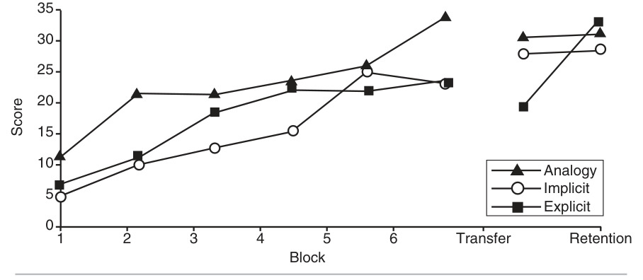<figcaption>Hình 8.2: Dữ liệu từ Liao và Masters (2001) cho thấy lợi ích của việc dùng ẩn dụ trong học một cú vợt bóng bàn.</figcaption></figure>
<p>Tiêu điểm chú ý bên trong so với bên ngoài</p>
<p>Abernethy và các cộng sự (2007) lưu ý rằng nghiên cứu về học tiềm ẩn và học khám phá đồng tình với những chỉ trích đối với tiêu điểm chú ý bên trong trong các tài liệu về hướng dẫn và phản hồi (ví dụ, Wulf et al., 2000; Wulf et al., 2001). Trong một loạt nghiên cứu, Wulf và các cộng sự (ví dụ, Shea &amp; Wulf, 1999; Wulf et al., 2001; Wulf, Hoess, &amp; Prinz, 1998; Wulf, Lauterbach, &amp; Toole, 1999) đã cung cấp bằng chứng mạnh mẽ về tác hại của việc hướng sự chú ý của người học vào chuyển động của các chi. Họ nhận thấy rằng việc hướng chú ý vào tác động của chuyển động của người học lên môi trường (ví dụ, quỹ đạo quả bóng sau một cú đánh, tác động cắt của lưỡi dao trượt trên mặt băng) có thể hiệu quả hơn là hướng chú ý vào chuyển động của các chi (xem bảng 8.1 để có thêm ví dụ).</p>
<p>Wulf et al. (1998) yêu cầu người tham gia học giữ thăng bằng trên một bệ ổn định (stabilometer). Nhóm tiêu điểm bên trong tập trung vào chuyển động của bàn chân, còn nhóm tiêu điểm bên ngoài tập trung vào chuyển động của bệ bên dưới bàn chân. Các dấu mốc trên bệ tạo ra tiêu điểm chú ý bên ngoài vào tác động của chuyển động. Chỉ với thay đổi nhỏ này về tiêu điểm chú ý, nhóm tiêu điểm bên ngoài đã thể hiện việc học thăng bằng vượt trội so với nhóm tiêu điểm bên trong. Tính khả thi của tiêu điểm bên trong và bên ngoài khi học cú đánh gôn ngắn cũng dẫn đến những kết luận tương tự (Shea &amp; Wulf, 1999; Wulf et al., 1999). Nhóm tiêu điểm bên trong được hướng dẫn chú ý vào chuyển động của các chi</p>
<p>Nhiệm vụ Vị trí của tiêu điểm chú ý Lợi ích của tiêu điểm bên ngoài Nghiên cứu</p>
<p>Thao tác trên máy mô phỏng trượt tuyết</p>
<p>Bàn chân (bên trong)</p>
<p>Bánh xe của bệ (bên ngoài)</p>
<p>Hiệu suất được nâng cao (↑biên độ chuyển động)</p>
<p>Duy trì kỹ năng tốt hơn</p>
<p>Wulf et al. (1998)</p>
<p>Cú đánh gôn ngắn Tay và chân (bên trong)</p>
<p>Đầu gậy (bên ngoài)</p>
<p>Độ chính xác của cú đánh được cải thiện cả trong luyện tập lẫn duy trì</p>
<p>Wulf et al. (1999)</p>
<p>Thăng bằng trên bệ ổn định</p>
<p>Bàn chân (bên trong)</p>
<p>Các dấu mốc đặt trước bàn chân (bên ngoài)</p>
<p>Thăng bằng được cải thiện và duy trì thăng bằng tốt hơn</p>
<p>Đa số người thực hiện ưa thích tiêu điểm bên ngoài</p>
<p>Wulf et. al. (2001)</p>
<p>Các nhiệm vụ đời sống hằng ngày với bệnh nhân tai biến mạch máu não</p>
<p>Chi được dùng trong nhiệm vụ (bên trong)</p>
<p>Vật cần thao tác (bên ngoài)</p>
<p>Thời gian chuyển động ngắn hơn</p>
<p>Vận tốc đỉnh giảm</p>
<p>Fasoli et al. (2002)</p>
<p>Cú ném phạt bóng rổ</p>
<p>Chuyển động cổ tay (bên trong)</p>
<p>Rổ bóng (bên ngoài)</p>
<p>Hiệu suất được cải thiện</p>
<p>Tính kinh tế của chuyển động tốt hơn</p>
<p>Zachry et al. (2005)</p>
<p>Bảng 8.1: Tóm tắt kết quả từ các nghiên cứu về tiêu điểm chú ý và nhóm tiêu điểm bên ngoài tập trung vào tác động của chuyển động (quỹ đạo của đầu gậy).</p>
<p>Hệ quả đối với học khám phá</p>
<p>Mặc dù lợi ích của tiêu điểm chú ý bên ngoài đối với việc học đã được chứng minh rõ ràng trong các tài liệu, vẫn có rất ít nỗ lực giải thích kết quả này từ tiếp cận dựa trên rào cản/giới hạn. Bằng cách gộp các phát hiện này vào lợi ích của chiến lược học khám phá, lý thuyết hệ thống động lực cung cấp một khung khái niệm hữu ích để hiểu tác động của học tiềm ẩn và vai trò của tiêu điểm chú ý bên ngoài. Những lợi ích này bao gồm giảm nhẹ vai trò của sự quy định thông qua giao tiếp bằng lời nói, đặc biệt khi liên quan đến các bộ phận cụ thể của cơ thể, và việc cung cấp thời gian để tìm kiếm các mối quan hệ thiết yếu giữa ràng buộc của người thực hiện, ràng buộc môi trường và ràng buộc nhiệm vụ trong việc khám phá một mẫu hình vận động nhằm đạt được kết quả thực hiện mong muốn.</p>
<p>Xét chung lại, những phát hiện này ủng hộ tính hiệu quả tương đối của học khám phá so với các cách tiếp cận quy định, trong đó huấn luyện viên hướng dẫn người học theo từng bước một. Quan điểm dựa trên rào cản/giới hạn gợi ý cách người học có thể khai thác các quá trình tự tổ chức trong hệ thống vận động khi cố gắng lắp ráp một giải pháp phối hợp cho một mục tiêu nhiệm vụ nhất định. Thật thú vị khi lưu ý rằng các phát hiện của Masters và các cộng sự (2002) về học tiềm ẩn trùng khớp với kết quả thực nghiệm về vai trò của các quá trình tự tổ chức trong luyện tập dựa trên khám phá trên máy mô phỏng trượt tuyết trong các tài liệu về hệ thống động lực (ví dụ, Vereijken, van Emmerik, Whiting, &amp; Newell, 1992). Có vẻ như việc nhấn mạnh tường minh vào học kỹ năng vận động thông qua thông tin bằng lời nói tạo ra một tiêu điểm quá hẹp cho từng người học. Điều này không cho phép họ có thời gian cần thiết để tìm kiếm giải pháp nhiệm vụ của riêng mình, trong khi việc áp dụng tiêu điểm tiềm ẩn lại mang đến những cơ hội ấy.</p>
<p>Các tài liệu về tầm quan trọng của tiêu điểm chú ý bên ngoài trong việc cung cấp phản hồi đồng tình với dữ liệu từ một nghiên cứu của Vereijken và Whiting (1990). Họ chỉ ra rằng những người học theo cách khám phá được tự do chú ý đến thông tin phản hồi về tác động của chuyển động lên môi trường vì họ không bị quá tải bởi các hướng dẫn nhiệm vụ. Các chiến lược khám phá giúp người tham gia học hiệu quả hơn so với hướng dẫn quy định về cách thực hiện các chuyển động giống như đi vòng cung (slalom). Cách giải thích này ủng hộ vai trò của học khám phá cũng phù hợp với dữ liệu từ hai nghiên cứu của Wulf và các cộng sự (2000), những nghiên cứu đã mở rộng hiểu biết về tác động đối lập của tiêu điểm chú ý bên trong và bên ngoài. Trong các nghiên cứu này, Wulf và các cộng sự chỉ ra rằng tiêu điểm chú ý bên ngoài không hiệu quả đơn giản chỉ vì nó làm phân tâm người học khỏi việc suy nghĩ về chuyển động của chính cơ thể mình; thay vào đó, lý do cho hiệu quả của nó phức tạp hơn nhiều.</p>
<p>Câu hỏi ban đầu được Wulf và các cộng sự (2000) xem xét là liệu một cách tiếp cận tâm lý áp dụng chiến lược phi nhận thức có giải thích được lợi ích của việc dùng tiêu điểm chú ý bên ngoài hay không (xem Singer 1985, 1988). Khi quan sát những người học cú thuận tay trong quần vợt, trước tiên họ nghiên cứu lợi thế của tiêu điểm bên ngoài vào tác động của chuyển động so với tiêu điểm bên ngoài không liên quan đến tác động của chuyển động. Họ hướng dẫn một nhóm chú ý vào quỹ đạo dự kiến của quả bóng rời khỏi vợt sau cú đánh thuận tay (nhóm tác động), trong khi nhóm kia được yêu cầu tập trung vào quỹ đạo của quả bóng đang bay tới (nhóm thông tin tiền đề). Trong cả hai trường hợp, tiêu điểm chú ý đều là bên ngoài và hướng vào chuyển động của quả bóng, dù chỉ một nhóm tập trung vào tác động của chuyển động. Dữ liệu trong hình 8.3 cho thấy tiêu điểm bên ngoài có thể có lợi hơn nếu được hướng vào tác động của chuyển động của người học thay vì vào các nguồn thông tin bên ngoài khác làm phân tâm khỏi chuyển động của họ (như đã từng được Singer đề xuất, 1985, 1988).</p>
<p>Wulf và các cộng sự (2000) đã nghiên cứu việc học trong hai điều kiện tiêu điểm chú ý bên ngoài liên quan đến tác động, trong một thí nghiệm về nhiệm vụ đánh gôn ngắn. Trong một điều kiện tiêu điểm bên ngoài, kỹ thuật chuyển động (quỹ đạo của đầu gậy) được nhấn mạnh, và trong điều kiện còn lại, tiêu điểm chú ý bên ngoài là quỹ đạo và mục tiêu của quả bóng. Wulf và các cộng sự giả định rằng nếu việc tập trung vào</p>
<p style="font-style:italic;color:#475569;font-size:.88rem">Hình 8.3: Những dữ liệu này cho thấy tiêu điểm bên ngoài có thể có lợi hơn nếu được hướng vào tác động của chuyển động của người học thay vì hướng vào các nguồn thông tin bên ngoài khác.</p>
<p>In lại với sự cho phép của Research Quarterly for Exercise and Sport, Tập 71, Số 3, 229-239, Bản quyền 2000 bởi American Alliance for Health, Physical Education, Recreation and Dance, 1900 Association Drive, Reston, VA 20191.</p>
<p>Ngày  1 Ngày  2 1</p>
<p>Điểm</p>
<p>10 13 12 11 10 9 7 8 6 5 4 3 2 0</p>
<p>Các khối 10 lần thử</p>
<p>Tác động</p>
<p>Tiền đề</p>
<figure class="bookfig"><figcaption>Hình 8.3: Những dữ liệu này cho thấy tiêu điểm bên ngoài có thể có lợi hơn nếu được hướng vào tác động của chuyển động của người học thay vì hướng vào các nguồn thông tin bên ngoài khác.</figcaption></figure>
<p>tác động của dụng cụ quan trọng hơn việc tập trung vào hình thức chuyển động, thì nhóm tập trung vào chuyển động của cây gậy lẽ ra phải hiệu quả hơn. Mặc dù cả hai nhóm đều cho thấy hiệu suất được cải thiện nhờ luyện tập, kết quả một lần nữa cho thấy rằng các hướng dẫn hướng sự chú ý của người học vào một tác động của dụng cụ đã nâng cao việc học nhiệm vụ của họ. Thêm vào đó, lợi ích của việc tập trung vào tác động của chuyển động liên quan đến kỹ thuật được quan sát ngay từ giai đoạn đầu của luyện tập.</p>
<p>Hầu hết các nghiên cứu đã xem xét sự khác biệt giữa tiêu điểm chú ý bên trong và bên ngoài bằng cách dùng các thước đo kết quả thực hiện (ví dụ, độ chính xác của chuyển động hoặc điểm sai số) làm biến phụ thuộc chính. Zachry, Wulf, Mercer, và Bezodis (2005) mở rộng những phát hiện này sang phân tích điện cơ (EMG) về chuyển động. Trong nghiên cứu này, những người chơi thực hiện cú ném phạt bóng rổ trong khi các nhà nghiên cứu theo dõi hoạt động điện trong cơ của cánh tay ném. Dữ liệu cho thấy người chơi ném chính xác hơn khi dùng tiêu điểm chú ý bên ngoài. Thêm vào đó, hoạt động EMG ở cơ nhị đầu và cơ tam đầu của cánh tay ném thấp hơn khi dùng tiêu điểm bên ngoài so với tiêu điểm bên trong. Zachry và các cộng sự lập luận rằng hoạt động EMG thấp hơn báo hiệu tính kinh tế của chuyển động cao hơn và sự giảm nhiễu.</p>
<p>Tóm lại, có vẻ như tiêu điểm bên ngoài trong hướng dẫn và phản hồi cho phép các quá trình tự tổ chức hỗ trợ việc học và thực hiện hiệu quả hơn.</p>
<h3>Sự tương tác giữa hướng dẫn bằng lời nói</h3>
<h3>và phản hồi</h3>
<p>Nghiên cứu thực nghiệm và các ví dụ thực tiễn ủng hộ lợi ích của cách tiếp cận học tiềm ẩn nhấn mạnh việc cung cấp không thường xuyên các giao tiếp bằng lời nói với tiêu điểm bên ngoài. Tuy nhiên, trong chương này chúng ta thường dùng thuật ngữ hướng dẫn và phản hồi thay thế cho nhau. Có thể rằng mỗi loại giao tiếp bằng lời nói có tác động khác nhau và tương tác lên hành vi. Hãy xem xét kỹ hơn cách bản chất của thông tin mà người thực hành cung cấp có thể ảnh hưởng đến việc học.</p>
<p>Trong một nhiệm vụ phối hợp hai tay, Lee, Blandin, và Proteau (1996) đã chứng minh mặt tích cực của các ràng buộc hướng dẫn đối với động lực học phối hợp. Khi tần số chuyển động hai tay được tăng lên, một nhóm người tham gia được hướng dẫn duy trì mẫu hình phản pha. Nhóm kia được bảo không can thiệp nếu họ cảm thấy mẫu hình phản pha đang chuyển sang mẫu hình đồng pha. Hướng dẫn của nhóm này trùng với hướng dẫn mà Kelso (1981, 1984) đưa ra trong công trình ban đầu của ông về phối hợp hai tay (xem Tiêu điểm nghiên cứu, chương 2). Nhóm không can thiệp đã ủng hộ các phát hiện của Kelso với những chuyển đổi tự phát sang chế độ đồng pha khi tần số tăng.</p>
<p>Tuy nhiên, nhóm được hướng dẫn duy trì chế độ phản pha đã có thể giữ mẫu hình 180° trong thời gian dài hơn. Vì vậy, các hướng dẫn được đưa ra trước khi luyện tập có thể là một phương tiện hiệu quả để lấn át các xu hướng động lực vốn có của hệ thống vận động trong việc điều chỉnh mẫu hình vận động theo yêu cầu nhiệm vụ.</p>
<p>Tuy nhiên, Hodges và Franks (2001) đã đặt nghi vấn về sự khôn ngoan của việc cung cấp một số loại hướng dẫn bằng lời nói cho người học. Họ quan tâm đến việc hướng dẫn và các loại phản hồi khác nhau có tương tác với nhau trong luyện tập hay không. Trong thí nghiệm của họ, người tham gia ở bốn nhóm được yêu cầu di chuyển hai cần điều khiển để tạo ra một mẫu hình tròn trên màn hình máy tính. Một nhóm nhận hướng dẫn bằng lời nói về cách tạo vòng tròn và phản hồi cụ thể về hình dạng họ đang tạo ra (liên quan đến mục tiêu nhiệm vụ). Một nhóm khác nhận hướng dẫn bằng lời nói và phản hồi chung liên quan đến chuyển động đồng thời của các chi. Hai nhóm còn lại không nhận hướng dẫn và chỉ nhận phản hồi cụ thể hoặc chung.</p>
<p>Kết quả cho thấy phản hồi liên quan đến mục tiêu nhiệm vụ có lợi hơn thông tin đồng thời về chuyển động của chi. Thêm vào đó, so với một nhóm tương đương không được hướng dẫn, nhóm được hướng dẫn tạo vòng tròn cho thấy bất lợi về tốc độ tiếp thu. Có vẻ như các hướng dẫn đã cản trở khả năng của người học trong việc dùng phản hồi đồng thời để tạo ra hình dạng yêu cầu. Những nghiên cứu này cho thấy khi học các mẫu hình phối hợp phức tạp, hướng dẫn và phản hồi chi tiết không phải lúc nào cũng cần thiết và có thể lãng phí thời gian luyện tập quý báu. Điều thú vị là nhóm không được hướng dẫn cho thấy tính biến thiên cao hơn, cho thấy nhóm này ban đầu tham gia tích cực hơn vào việc phá vỡ các mẫu hình đã thiết lập và tìm kiếm những hành vi có chức năng mới.</p>
<p>Những phát hiện này ủng hộ kết quả của một nghiên cứu trước đó của Green và Flowers (1991), nghiên cứu cho thấy hướng dẫn bằng lời nói có thể cản trở việc tạo ra chuyển động. Người học được yêu cầu bắt một vật trên màn hình máy tính bằng một con trỏ liên kết với cần điều khiển. Một nhóm nhận hướng dẫn trước khi luyện tập kém chính xác hơn (và ít biến thiên hơn) so với nhóm học không có hướng dẫn. Theo các tác giả, hệ quả là hướng dẫn bằng lời nói đơn giản chỉ làm tăng tải trọng chú ý của người học trong một số nhiệm vụ, từ đó làm gián đoạn khả năng tập trung của người học vào việc đáp ứng các ràng buộc nhiệm vụ.</p>
<p>Những phát hiện này gợi ý rằng người học không cần những hướng dẫn quá cụ thể về mẫu hình vận động. Thay vào đó, sự thành công của nhóm định hướng theo mục tiêu nhiệm vụ và nhóm không được hướng dẫn trong việc tìm ra các hành vi vận động phù hợp cho thấy người học cần thời gian để tìm kiếm giải pháp của riêng mình. Hướng dẫn và phản hồi cùng lúc có thể là không cần thiết miễn là người học có một mục tiêu vận động rõ ràng. Trong một nghiên cứu mang tính ứng dụng hơn, Magill và Schoenfelder-Zohdi (1996) đã thao tác cả hướng dẫn lẫn tri thức về phản hồi thực hiện cho những người học kỹ năng thể dục dụng cụ. Cũng như trong thí nghiệm của Hodges và Franks (2001), hướng dẫn chỉ có lợi nếu chúng hướng người học đến thông tin mà họ có thể dùng để hoàn thành nhiệm vụ tốt hơn.</p>
<p>Do những lợi ích tạm thời về hiệu suất được quan sát thấy, rất có thể người thực hành bị lừa rằng phản hồi bổ sung là hiệu quả. Ví dụ, Mononen, Vitasalo, Kontinnen, và Era (2003) cho thấy những xạ thủ nhận phản hồi động học ở 100% số lần tiếp thu đã vượt trội hơn nhóm 50% và nhóm đối chứng sau một thời gian duy trì 2 ngày. Tuy nhiên, hiệu ứng hiệu suất được nâng cao này không kéo dài khi hiệu suất bắn của các nhóm được so sánh 10 ngày sau khi tiếp thu. Sau 10 ngày không có phản hồi, độ chính xác của họ đã giảm xuống mức tương tự như các nhóm khác trong nghiên cứu.</p>
<p>Tóm lại, có vẻ như việc cung cấp thêm hướng dẫn về cách thực hiện kỹ năng vận động thường không có ích khi phản hồi liên quan đến mục tiêu nhiệm vụ sẵn có một cách tự nhiên để ràng buộc hoạt động tìm kiếm của người học (Hodges &amp; Franks, 2001). Hơn nữa, việc cung cấp cho người học hướng dẫn chi tiết trước nhiệm vụ và phản hồi đồng thời liên quan đến chuyển động thường có thể quá tải thông tin, đặc biệt trong các nhiệm vụ phức tạp với yêu cầu cao về không gian–thời gian. Thêm vào đó, tác động của việc đưa ra hướng dẫn bằng lời nói ở mỗi lần thử không kéo dài, và việc sử dụng phản hồi liên quan đến thực hiện với tần suất thấp hơn là đã đủ.</p>
<h3>Giao tiếp bằng lời nói và rối loạn vận động</h3>
<p>Một vấn đề đáng lưu ý liên quan đến giá trị tương đối của hướng dẫn bằng lời nói là những người học có biểu hiện khiếm khuyết trong phát triển phối hợp vận động. Ví dụ, Wallen và Walker (1995) lưu ý rằng những người thực hành điều trị trẻ mắc DCD sử dụng nhiều cách tiếp cận khác nhau do phạm vi triệu chứng rất rộng ở mỗi trẻ. Bất chấp gợi ý này, Niemeijer và các cộng sự (2003) nhận thấy các nhà trị liệu nhi khoa đưa ra nhận xét kiểu mệnh lệnh hoặc phản hồi thường xuyên hơn (trung bình 60 lần), thay vì áp dụng phong cách đặt câu hỏi, chia sẻ tri thức qua nhận xét nhằm gợi ra sự hiểu biết ở trẻ DCD (trung bình 21 lần) bị ảnh hưởng bởi các vấn đề phối hợp vận động. Mặc dù các tình trạng như DCD không liên quan đến bất kỳ dạng rối loạn lâm sàng hay thần kinh nào, nhiều nghiên cứu chỉ tập trung vào các khiếm khuyết trong xử lý nhận thức và lập kế hoạch chuyển động (Henderson, 1992). Vì vậy, thật dễ nghĩ rằng những giải thích bằng lời nói đơn giản và nhiều phản hồi từ nhà trị liệu có thể giúp người học hiểu rõ hơn về những gì được yêu cầu ở họ.</p>
<p>Tuy nhiên, ngày càng có vẻ hợp lý rằng sự tương tác phức tạp của các yếu tố góp phần gây ra rối loạn vận động seperti khiếm khuyết thị giác không thể dễ dàng được khắc phục chỉ bằng mệnh lệnh bằng lời nói của người thực hành (Johnston et al., 2002; Mon-Williams, Tresilian, &amp; Wann, 1999; Sigmundsson, Hansen, &amp; Talcott, 2003). Vì nền tảng của tiếp cận dựa trên rào cản/giới hạn là xem xét hệ thống vận động của con người như một hệ thống phức tạp, mang tính động lực, thì việc áp dụng triết lý này cho những người mắc DCD có vẻ phù hợp. Chúng tôi cho rằng các nguyên tắc về tìm kiếm có định hướng và khám phá có hướng dẫn được mô tả xuyên suốt cuốn sách này đều áp dụng được cho mọi người học, và chúng tôi tin rằng nghiên cứu hiện tại và tương lai trong lĩnh vực này sẽ ủng hộ lập luận của mình (để xem xét lại thực hành dựa trên bằng chứng cho DCD, xem Ayyash &amp; Preece, 2003).</p>
<h3>Tóm tắt</h3>
<p>Giao tiếp bằng lời nói của người thực hành có vẻ là hình thức ràng buộc thông tin mạnh mẽ và trực tiếp nhất được dùng để thay đổi mẫu hình vận động. Tuy nhiên, nghiên cứu cho thấy hướng dẫn bằng lời nói có thể có cả tác động tích cực lẫn tiêu cực đến tiếp thu kỹ năng. Tiêu điểm chú ý và sự sẵn có của phản hồi liên quan đến kết quả đã được chứng minh là những yếu tố quan trọng trong việc điều hòa lợi ích mà người học có thể đạt được từ tìm kiếm có định hướng. Thêm vào đó, bản chất của nhiệm vụ cần thực hiện rất quan trọng, vì việc trình bày các luồng thông tin khác nhau có thể cản trở việc thực hiện các mẫu hình phối hợp phức tạp.</p>
<p>Sự tổng hợp giữa lý thuyết và các phát hiện thực nghiệm cung cấp một nền tảng vững chắc để hiểu tại sao học khám phá nên là nền tảng của luyện tập. Người thực hành nên dùng hướng dẫn bằng lời nói, chỉ dẫn và phản hồi một cách tiết chế và chỉ khi người học không thể thu nhận thông tin về mục tiêu nhiệm vụ bằng cách khác. Hodges và Franks (2002) gợi ý rằng &quot;những nhiệm vụ nhấn mạnh hơn vào các yêu cầu nhận thức–vận động và có yêu cầu phản ứng phức tạp sẽ ít được lợi từ hướng dẫn tường minh về chi tiết của chuyển động, ít nhất là trong giai đoạn đầu của việc học&quot; (tr. 801). Các phương pháp luyện tập tối ưu bao gồm nhiều cơ hội để người học khám phá cách khai thác các bậc tự do của hệ thống vận động vào các giải pháp phối hợp, với sự nhấn mạnh rất ít vào hướng dẫn bằng lời nói từ người thực hành. Cách tiếp cận như vậy báo hiệu một vai trò khác cho người thực hành, như chúng tôi đã gợi ý ở chương 4.</p>
<p>Trong chương 9, chúng ta thảo luận về thách thức sư phạm trong việc giảm sự phụ thuộc của người học vào hướng dẫn và phản hồi bằng lời nói, đặc biệt khi chúng liên quan đến chuyển động của các bộ phận cơ thể trong không gian. Câu hỏi đặt ra cho người thực hành là, làm thế nào để chúng ta tạo điều kiện cho các hoạt động tìm kiếm mà không quá lạm dụng hướng dẫn bằng lời nói? Một câu trả lời có thể nằm ở việc dùng các bản trình diễn video và các kỹ thuật mô hình hóa trực quan phổ biến khác để định hướng cho việc tìm kiếm giải pháp phối hợp phù hợp của người học.</p>
<p>CÂU HỎI TỰ KIỂM TRA</p>
<p>1. Hãy tư vấn cho những người thực hành kỹ năng vận động về cách thức và thời điểm họ nên cung cấp hướng dẫn nhiệm vụ cho người học.</p>
<p>2. Để tiếp thu kỹ năng đạt được mức tối ưu, người thực hiện có cần nhận thức rằng họ đang học các kỹ năng vận động không? Hãy đề cập đến độ phức tạp về tổ chức của CNS trong câu trả lời của bạn.</p>
<p>3. Hãy chọn một môn thể thao hoặc hoạt động thể chất và xác định một kỹ năng quan trọng để người học luyện tập. Tiếp theo, hãy lập danh sách các hướng dẫn huấn luyện cho người học dùng tiêu điểm chú ý bên trong truyền thống. Cuối cùng, hãy lập danh sách các hướng dẫn tương tự dùng tiêu điểm chú ý bên ngoài.</p>
<p>4. Hãy thảo luận về cách tiêu điểm chú ý điều hòa lợi ích mà người học đạt được từ hướng dẫn và phản hồi bằng lời nói. (Gợi ý: Hãy xem xét kinh nghiệm của người học, bản chất của các ràng buộc nhiệm vụ, sự sẵn có của phản hồi, v.v.)</p>
<p>5. Với một kỹ năng do bạn chọn, hãy xác định các ẩn dụ vận động hiệu quả có thể khuyến khích người học tìm kiếm và khám phá những khu vực khác nhau của cảnh quan nhận thức–vận động.</p>
<p>6. Tại sao một người thực hiện học bằng cách luyện tập lặp lại một kỹ năng mà không mắc lỗi lại có khả năng học kỹ năng đó một cách tiềm ẩn hơn?</p>
<p>ĐỌC THÊM</p>
<p>1. Abernethy, B., Maxwell, J.P., Masters, R.W.S., van der kamp, J., &amp; Jackson, R. C. (2007). Attentional processes in skill learning and expert performance. In G. Tenenbaum &amp; R. Eklund (Eds.), Handbook of Sport Psychology (3rd ed., pp. 245-265). New York: John Wiley &amp; Sons.</p>
<p>2. Beek, P.J. (2000). Toward a theory of implicit learning in the perceptual- motor domain. International Journal of Sport Psychology, 31, 547-554.</p>
<p>3. Hodges, N.J., &amp; Franks, I.M. (2002). Modelling coaching practice: the role of instruction and demonstration. Journal of Sports Sciences, 20, 793-811.</p>
<p>4. Wulf, G., Shea, C., &amp; Park, J-H. (2001). Attention and motor performance: Preferences for and advantages of an external focus. Research Quarterly for Exercise and Sport, 72(4), 335-344.</p><h2 class="chapter-title">Chương 9 — Học qua quan sát như tìm kiếm có định hướng</h2><h2>Học qua quan sát</h2>
<h2>như tìm kiếm có định hướng</h2>
<p>NỘI DUNG CHƯƠNG</p>
<p>Tìm kiếm có định hướng và học qua quan sát</p>
<p>Học qua quan sát trong các bối cảnh xã hội</p>
<p>Quan điểm nhận thức thị giác về học qua quan sát</p>
<p>Nhận thức chuyển động sinh học Ảnh hưởng của thông tin chuyển động tương đối lên động lực học nội tại Bằng chứng thần kinh học: Tại sao việc xem là chưa đủ Ảnh hưởng của việc xem một mẫu hình thành thạo Thời điểm trình diễn mẫu Đặc điểm của người làm mẫu</p>
<p>Phản hồi video do người học điều chỉnh</p>
<p>Tóm tắt</p>
<h3>CHƯƠNG 9 CHƯƠNG 9</h3>
<figure class="bookfig"></figure>
<figure class="bookfig"></figure>
<p>Trong chương 8, chúng tôi đã gợi ý rằng các lý thuyết truyền thống về học vận động và các thực hành giảng dạy có xu hướng nhấn mạnh quá mức thông tin bằng lời nói như hướng dẫn và phản hồi quy định. Xuyên suốt cuốn sách này, chúng tôi đã thừa nhận rằng tìm kiếm và khám phá là những quá trình học quan trọng. Tuy nhiên, trên thực tế, theo đuổi một cách tiếp cận sư phạm hoàn toàn dựa trên khám phá thường là không khôn ngoan. Đây là một lý do khiến chúng tôi đề xuất chiến lược định hướng việc tìm kiếm của người học đối với các giải pháp phối hợp có chức năng (xem thêm Pettifor, 1999). Để cấu trúc một môi trường luyện tập an toàn và hiệu quả, một giáo viên thể chất hoặc huấn luyện viên cần hiểu chúng tôi muốn nói gì khi dùng thuật ngữ học khám phá trong ngữ cảnh này. Một môi trường luyện tập không có cấu trúc sẽ kém hiệu quả về mặt thời gian cần thiết để học một kỹ năng (Daly, Bass, &amp; Finch, 2001), và nó cũng có thể gây hại về thể chất lẫn tinh thần cho người học.</p>
<p>Trong chương này, chúng ta sẽ xem xét cách người thực hành có thể dùng hình ảnh trực quan và trình diễn mẫu kỹ năng để định hướng và ràng buộc các hoạt động tìm kiếm của người học trong luyện tập. Chúng ta sẽ thảo luận về cách sự nhạy cảm với các đặc điểm chuyển động sinh học ở con người có thể được khai thác khi việc học diễn ra qua quan sát và mô phỏng. Sẽ rõ ràng rằng, từ quan điểm dựa trên rào cản/giới hạn, mục tiêu của học qua quan sát không phải là bắt chước một kỹ thuật, mà là dùng bản trình diễn mẫu để định hướng tìm kiếm một giải pháp phối hợp có chức năng cho một vấn đề vận động cụ thể. Cũng cần lưu ý sự tương đồng với vai trò được hình dung của hướng dẫn bằng lời nói trong việc dẫn dắt hành vi tìm kiếm trong học vận động đã thảo luận ở chương trước. Bất kể thông tin được trình bày dưới hình thức trực quan hay bằng lời nói, mục tiêu không phải là quy định một tiến trình hành động cụ thể trong luyện tập cho từng người học; thay vào đó, sẽ trở nên rõ ràng rằng thông tin bổ sung (dù được trình bày ở chế độ trực quan hay bằng lời nói) ràng buộc việc tìm kiếm khám phá các giải pháp vận động (Araújo et al., 2004).</p>
<h3>Tìm kiếm có định hướng và học qua quan sát</h3>
<p>Bản chất của các ràng buộc đặt lên người học giới hạn việc tìm kiếm các mẫu hình vận động có chức năng hơn của họ. Càng nhiều ràng buộc mà người học cần đáp ứng, thì càng ít cơ hội cho việc thử nghiệm và khám phá thông qua học tự định hướng hoặc học khám phá. Theo nghĩa này, một bản trình diễn trực quan về kỹ năng nên được xem như một ràng buộc hướng dẫn (một phần của tập con các ràng buộc nhiệm vụ) dẫn dắt hoạt động khám phá của người học. Ví dụ, học sinh taekwondo luyện một cú đá đã được giáo viên trình diễn trước đó có thể bị ràng buộc bởi hành động của người làm mẫu. Tuy nhiên, nếu người học không được xem trình diễn mà chỉ được yêu cầu tự vệ trước một đối thủ, thì kiểu luyện tập khám phá này sẽ đại diện cho một mức độ ràng buộc thấp hơn về ràng buộc vì các hoạt động tìm kiếm của người học chưa được định hướng bởi bản trình diễn của người làm mẫu.</p>
<p>Việc bắt chước một người làm mẫu như cha mẹ, người thực hiện thành thạo hoặc huấn luyện viên trình diễn một mẫu hình vận động là hoạt động phổ biến trong đời sống hằng ngày và nhằm tạo điều kiện thuận lợi cho tiếp thu kỹ năng vận động (De Maeght &amp; Prinz, 2004). Còn được gọi là mô hình hóa qua quan sát, học qua quan sát là quá trình mà một người tiếp nhận, và đôi khi áp dụng hoặc tái tạo, các mẫu hình hành vi và hành động của người khác như hệ quả trực tiếp của việc quan sát những hành vi ấy (Ashford, Bennett, &amp; Davids, 2006). Học qua quan sát ban đầu trở thành một trọng tâm nghiên cứu trong tâm lý học xã hội về sự bắt chước (ví dụ, Bandura, 1962, 1969) và gần đây đã trỗi dậy trở lại về mức độ phổ biến trong các lĩnh vực như thần kinh sinh học, robot học và trí tuệ nhân tạo (ví dụ, Schaal, 1999; Schaal, Ijspeert, &amp; Billard, 2003). Người quan sát có thể là khán giả, người học, học sinh, đồng đội và vận động viên đối phương. Những cá nhân bị quan sát có thể là người trình diễn, người thực hiện hoặc người làm mẫu. Nhiều người thực hành, gồm nhà vật lý trị liệu, chuyên gia y học thể thao, huấn luyện viên thể hình, giáo viên thể chất, giáo viên và huấn luyện viên, đã ngày càng sử dụng các phương pháp học qua quan sát, cho thấy vai trò của nó được thừa nhận và hiểu rõ.</p>
<p>Một học sinh luyện một cú đá đã được giáo viên trình diễn trước đó có thể bị ràng buộc bởi hành động của người làm mẫu.</p>
<figure class="bookfig"></figure>
<h3>Học qua quan sát trong các bối cảnh xã hội</h3>
<p>Học qua quan sát có thể diễn ra trong các bối cảnh giảng dạy, huấn luyện, phục hồi chức năng và luyện tập chính thức, chẳng hạn như khi một hình ảnh, hình phản chiếu trong gương hoặc bản trình diễn được cung cấp để giúp người ta học một nhiệm vụ, kỹ năng hoặc hành vi cụ thể. Mặt khác, học qua quan sát không chủ ý có thể xảy ra bất cứ lúc nào và bất cứ nơi nào một người tiếp xúc với hành vi của người khác (ví dụ, xem một sự kiện thể thao trên truyền hình). Đôi khi người ta tiếp nhận những thông tin tinh tế về hành vi xã hội phù hợp trong các môi trường mới hoặc không quen thuộc (Jarvis, Holford, &amp; Griffin, 2003). Người ta cũng có thể đạt được sự quen thuộc hoặc nhận thức mạnh mẽ về nhiều kỹ năng chỉ bằng cách quan sát người khác thực hiện các nhiệm vụ đó, dù việc quan sát của họ có thể không liên quan đến bất kỳ mong muốn hay ý định có ý thức nào nhằm tái tạo những hành vi hay hành động ấy. Theo nghĩa này, học qua quan sát có thể đóng vai trò như một cơ hội hành động mang tính xã hội trong việc thu nhận thông tin về những hành động được thực hiện bởi một người có ý nghĩa quan trọng (ví dụ, cha mẹ, giáo viên hoặc một người thực hiện khác) trước khi học (để thảo luận về cơ hội hành động xã hội, xem Fajen et al., sắp xuất bản).</p>
<p>Mặc dù đã có người cho rằng một số học vận động có thể diễn ra mà không cần chuyển động (ví dụ, McCullagh &amp; Weiss, 2001), nhưng khi mô hình hóa qua quan sát được dùng như một quy trình hướng dẫn nhằm tạo điều kiện tiếp thu các hành vi vận động mới, nó hiếm khi được dùng đơn lẻ. Thay vào đó, nó thường được dùng kết hợp với các chiến lược học khác, gồm hướng dẫn bằng lời nói, hình dung tinh thần trực quan và luyện tập thể chất, để thiết lập các ghép nối thông tin–chuyển động. Một mục tiêu quan trọng của nghiên cứu tương lai là hiểu các phương thức truyền thông tin này cho người học tương tác như thế nào để ràng buộc các hoạt động tìm kiếm (xem Tiêu điểm nghiên cứu). Từ quan điểm dựa trên rào cản/giới hạn, một khung lý thuyết phù hợp giúp hiểu mối quan hệ giữa hiệu ứng mô hình hóa và luyện tập như một quá trình tìm kiếm là quan điểm nhận thức thị giác của Scully và Newell (1985) về học qua quan sát, mà chúng ta sẽ thảo luận tiếp theo.</p>
<h3>Tiêu điểm nghiên cứu</h3>
<p>CÁCH KẾT HỢP LỜI NÓI VÀ HÌNH ẢNH ĐỂ HỌC VẬN ĐỘNG HIỆU QUẢ</p>
<p>Một câu hỏi thú vị liên quan đến sự kết hợp lý tưởng giữa thông tin bằng lời nói và thông tin trực quan mà người thực hành có thể dùng trong lúc người học quan sát một mẫu hình thành thạo. Janelle, Champenoy, Coombes, và Mousseau (2003) dự đoán rằng sự kết hợp giữa các tín hiệu bằng lời nói và trực quan sẽ có lợi nhất cho một nhóm người học đang luyện một nhiệm vụ đá chính xác. Họ gợi ý rằng cả hai phương thức thông tin sẽ tương tác để ràng buộc sự chú ý có chọn lọc bằng cách làm nổi bật các thành phần quan trọng của nhiệm vụ. Sáu mươi người chơi mới tập ở độ tuổi trưởng thành (18-27 tuổi) đã tham gia nghiên cứu và được phân ngẫu nhiên vào các nhóm sau: khám phá (đối chứng); hướng dẫn bằng lời nói (VI); chỉ video (VO); video và tín hiệu bằng lời nói (VOVC); video và tín hiệu trực quan (VOVIS); và video, tín hiệu bằng lời nói cùng trực quan (VOVVC). Phân tích kỹ thuật về hình thức và điểm số độ chính xác của kết quả được theo dõi qua 80 lần luyện tập. Điểm sai số biến thiên của từng nhóm được trình bày trong hình 9.1.</p>
<p>Nhóm VOVVC nhận kết hợp các tín hiệu định hướng chú ý đã vượt trội hơn các nhóm khác cả trong tiếp thu lẫn duy trì. Hơn nữa, điểm độ chính xác phản ánh hình thức vận động phù hợp hơn ở nhóm này so với các nhóm can thiệp khác, như phân tích kỹ thuật cho thấy.</p>
<p>ỨNG DỤNG</p>
<p>Có vẻ rõ ràng rằng đối với một kỹ năng khép kín trong điều kiện môi trường ổn định, chẳng hạn như nhiệm vụ đá chính xác, người học được lợi khi người thực hành đưa ra chỉ dẫn chi tiết về mẫu hình vận động và kết quả thực hiện mong muốn. Điều vẫn chưa rõ từ nghiên cứu này là liệu các can thiệp mà mỗi nhóm nhận được có thực sự đủ mạnh để định hướng lại các chiến lược chú ý như kết quả gợi ý hay không. Sự kết hợp giữa kỹ thuật ghi nhận chuyển động mắt và phỏng vấn tự báo cáo có thể giúp cung cấp thông tin này. Thêm vào đó, số lần thử hạn chế được dùng trong nghiên cứu và thời gian duy trì ngắn (24 giờ) không nói lên nhiều về tính bền vững của những hiệu ứng này. Cần có nghiên cứu trong tương lai để xem xét tính khái quát của các phát hiện của Janelle và các cộng sự (2003) đối với các loại ràng buộc nhiệm vụ và chiến lược tín hiệu khác.</p>
<p>Hãy xác định một môn thể thao hoặc hoạt động thể chất có các ràng buộc nhiệm vụ khác với đá chính xác, và phác thảo cách thông tin bằng lời nói và trực quan có thể được cung cấp để tập trung sự chú ý của người học vào các biến then chốt quy định kết quả thực hiện thành công.</p>
<p style="font-style:italic;color:#475569;font-size:.88rem">Hình 9.1: Điểm sai số biến thiên của từng nhóm khi luyện một nhiệm vụ đá chính xác.</p>
<p>In lại từ C.M. Janelle et al., 2003, &quot;Mechanics of attentional cueing during observational learning to facilitate motor skill acquisition,&quot; Journal of Sports Sciences 21: 825-838, với sự cho phép của Taylor &amp; Francis Ltd. http://www.informaworld.com</p>
<p>Khối thử</p>
<p>Luyện tập Tiếp thu Duy trì</p>
<p>1 2 3 4 5 6 7 8 1</p>
<p>1.5</p>
<p>2.5</p>
<p>3.5</p>
<p>Đối chứng VOVIS</p>
<p>VI VOVVC</p>
<p>VO VOVC X</p>
<p>X X</p>
<p>X X</p>
<p>X X</p>
<figure class="bookfig">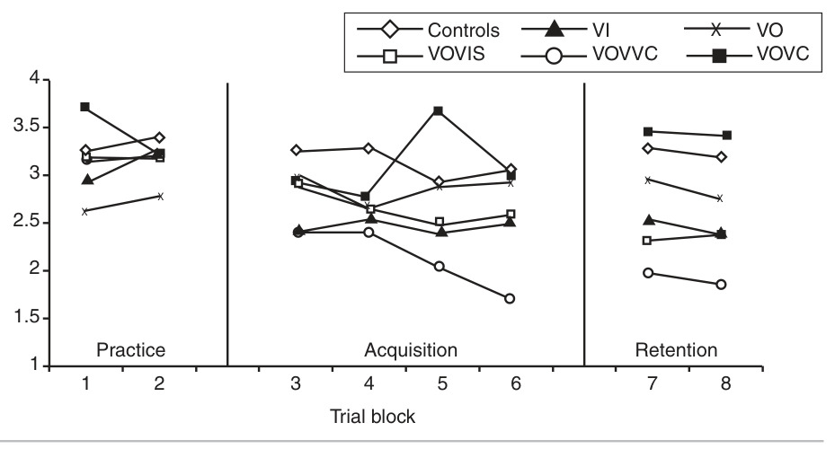<figcaption>Hình 9.1: Điểm sai số biến thiên của từng nhóm khi luyện một nhiệm vụ đá chính xác.</figcaption></figure>
<h3>Quan điểm nhận thức thị giác</h3>
<h3>về học qua quan sát</h3>
<p>Mặc dù nhiều giải thích lý thuyết khác nhau đã được đề xuất qua các năm để diễn giải các hiệu ứng của học qua quan sát, quan điểm nhận thức thị giác do Scully và Newell ủng hộ (Scully, 1986, 1987, 1988; Scully &amp; Newell, 1985) đưa ra một cách giải thích mạnh mẽ, có cơ sở lý thuyết, về các quá trình thị giác nền tảng của hiện tượng học này. Cụ thể, nó nhấn mạnh bản chất của thông tin tri giác mà người quan sát thu nhận để ràng buộc việc tạo ra chuyển động. Theo quan điểm này, sự thay đổi hành vi vận động sau học qua quan sát phụ thuộc vào nhận thức thông tin chuyển động tương đối từ một người làm mẫu, mà người quan sát dùng để lắp ráp các mẫu hình phối hợp ổn định trong một hoạt động vận động cụ thể. Thuật ngữ chuyển động tương đối đề cập đến các mối quan hệ không gian–thời gian cụ thể giữa các chi và trong mỗi chi, cũng như cách tổ chức các chi của người thực hiện so với môi trường xung quanh. Các tài liệu về chuyển động sinh học (ví dụ, Johansson, 1973, 1975) chứng minh rằng chuyển động tương đối là nguồn thông tin thị giác chính mà người quan sát dùng để nhận diện và phân loại các loại hoạt động vận động của con người, chẳng hạn như đi bộ, đạp xe và các động tác thể dục dụng cụ.</p>
<p>Nhận thức chuyển động sinh học</p>
<p>Sự nhấn mạnh của quan điểm nhận thức thị giác vào chuyển động sinh học như thông tin then chốt mà người học nhận được từ các bản trình diễn (để xem lại, xem Johansson, von Hofsten, &amp; Jansson, 1980) đã được kết nối hiệu quả với khung giai đoạn học vận động của Newell (1985) (xem chương 4). Trong tiếp thu kỹ năng, giai đoạn học ban đầu đòi hỏi tìm kiếm và lắp ráp một mẫu hình phối hợp có chức năng. Ở các giai đoạn sau, ngược lại, việc thử nghiệm các thông số then chốt của mẫu hình phối hợp nhằm tối ưu hóa hiệu suất được tiến hành (Newell, 1985). Quan điểm nhận thức thị giác (Scully &amp; Newell, 1985) chủ trương rằng hệ thống thị giác của con người có thể giảm thiểu và trực tiếp nhận thức thông tin về các đặc điểm tô pô của chuyển động tương đối trong một hành động được trình diễn (Cutting &amp; Proffitt, 1982). Con người có khả năng đáng kinh ngạc trong việc chọn lọc và sử dụng thông tin từ chuyển động sinh học để nhận diện hành động, và thông tin về chuyển động tương đối giữa các chi và khớp của cơ thể có thể hỗ trợ học vận động.</p>
<p>Một khi người học nhận thức được chuyển động tương đối (tức là chuyển động của các đoạn cơ thể so với nhau), nó đóng vai trò như một ràng buộc thông tin đối với sự hình thành của một mẫu hình phối hợp thiết yếu cho nhiệm vụ đang được học. Nhớ lại từ chương 3 rằng các ràng buộc thông tin dẫn dắt việc tìm kiếm giải pháp nhiệm vụ tối ưu của người học trong cảnh quan nhận thức–vận động (Warren, 1988, 1990). Có một số bằng chứng cho ý tưởng rằng việc quan sát chuyển động tương đối thông tin chuyển động là đủ để dẫn dắt việc tìm kiếm các giải pháp phối hợp phù hợp trong học vận động.</p>
<p>Ví dụ, Ward, Williams, và Bennett (2002) đã kiểm tra mối quan hệ giữa chiến lược tìm kiếm thị giác, dự đoán và nhận thức chuyển động sinh học trong quần vợt. Những người chơi quần vợt được yêu cầu thực hiện các phản ứng vận động trước các cú đánh thuận tay và trái tay được trình chiếu dưới dạng phim video và dạng hình ảnh điểm sáng. Các hình ảnh điểm sáng được tạo ra bằng cách gắn các điểm đánh dấu phản quang vào những vị trí giải phẫu chính của người chơi trước khi quay phim họ thực hiện các cú đánh khác nhau trên nền đen. Trong tình huống này, các bản trình chiếu điểm sáng chứa cùng mẫu hình chuyển động tương đối như trong đoạn phim, nhưng đã loại bỏ thông tin nền và cấu trúc. Khi xem các chuỗi điểm sáng, người tham gia dùng ít lần cố định mắt hơn (5,8 so với 7,2) với thời gian dài hơn (597 so với 457 mili-giây) trên số vị trí cố định ít hơn (3,8 so với 4,6) so với khi xem đoạn phim thông thường. Dù có những khác biệt này trong cách sử dụng sự cố định mắt, người tham gia trong điều kiện điểm sáng vẫn nhận thức được lượng thông tin chuyển động tương đối liên quan tương tự để hỗ trợ việc mô phỏng chuyển động như khi xem phim.</p>
<p>Ảnh hưởng của thông tin chuyển động tương đối lên động lực học nội tại</p>
<p>Horn, Williams, và Scott (2002) cũng báo cáo những thay đổi trong hành vi tìm kiếm khi các nữ cầu thủ bóng đá xem các bản trình diễn cú chuyền bóng lóbô được trình bày dưới dạng điểm sáng so với dạng video. So với nhóm đối chứng, không có sự khác biệt về học được báo cáo cho nhóm trình chiếu điểm sáng và nhóm trình chiếu video. Điều thú vị là nhóm trình chiếu điểm sáng cho thấy chiến lược tìm kiếm thị giác có tính chọn lọc hơn so với nhóm trình chiếu video. Những khác biệt về chiến lược tìm kiếm bắt nguồn từ việc loại bỏ thông tin môi trường then chốt liên quan đến cấu trúc nền phần lớn không liên quan trong bản trình chiếu. Những biến đổi này trong chiến lược tìm kiếm minh họa cách người thực hiện có thể thu nhận thông tin để dẫn dắt tiếp thu kỹ năng.</p>
<p>Các nghiên cứu của Ward và các cộng sự (2002) và của Horn và các cộng sự (2002) cho thấy cách trình bày các ràng buộc thông tin then chốt trong chuyển động tương đối của người làm mẫu có thể định hướng việc tìm kiếm giải pháp phối hợp của người học và ràng buộc các hoạt động tìm kiếm thị giác. Từ đó, huấn luyện viên và giáo viên cần xác định bản chất của thông tin mà người học thu nhận, để nội dung và cách trình bày thông tin trong một bản trình diễn trực quan có thể được tăng cường nhằm thúc đẩy tiếp thu kỹ năng. Liên hệ những phát hiện này với mô hình học vận động của Newell (1985), có vẻ như các bản trình diễn trực quan nên hỗ trợ giai đoạn đầu của học kỹ năng bằng cách truyền tải thông tin chuyển động tương đối thiết yếu cho việc lắp ráp một mẫu hình phối hợp mới (Scully &amp; Newell, 1985). Về sau trong quá trình học, khi mục tiêu nhiệm vụ đòi hỏi tinh chỉnh một mẫu hình phối hợp đã được thiết lập, mô hình hóa qua quan sát nên giúp nhận thức các đặc điểm động lực để điều chỉnh quy mô tối ưu của một mẫu hình vận động (ví dụ, tạo ra một mẫu hình thay đổi về lực, thời điểm hoặc thời lượng).</p>
<p>Ashford và các cộng sự (2006) đã thực hiện một phân tích gộp quy mô lớn trên các tài liệu đã công bố và chưa công bố về mô hình hóa qua quan sát nhằm định lượng mức độ tương đối của các hiệu ứng của học qua quan sát đối với hiệu suất vận động hoặc động lực học vận động đang được học. Các hiệu ứng can thiệp trung bình tổng thể của mô hình hóa qua quan sát là u</p>
<p>Bi = 0.77 đối với động lực học vận động và u</p>
<p>Bi = 0.17 đối với các thước đo kết quả vận động. Với cả hai thước đo, các tài liệu cho thấy lợi thế đáng kể của mô hình hóa qua quan sát so với các điều kiện đối chứng chỉ luyện tập. Mức độ hiệu ứng thu được đối với học qua quan sát mạnh hơn nhiều ở động lực học vận động so với các thước đo kết quả vận động, xác nhận lợi thế của mô hình hóa qua quan sát trong học vận động. Học qua quan sát đặc biệt có lợi cho tiếp thu kỹ năng trong các nhiệm vụ chuỗi (u</p>
<p>Bi = MD = 1.62 và MO = 0.61). Các hiệu ứng giảm nhẹ đối với nhiệm vụ liên tục (u</p>
<p>Bi = MD = 1.01 và MO = 0.51), và hiệu ứng từ nhỏ đến trung bình đối với nhiệm vụ rời rạc (u</p>
<p>Bi = MD = 0.56 và MO = 0.10). Những phát hiện này phù hợp với các dự đoán của quan điểm nhận thức thị giác về học qua quan sát và xác nhận rằng các bản trình diễn chủ yếu truyền tải chuyển động tương đối cần thiết để mô phỏng các hành vi vận động được làm mẫu.</p>
<p>Tuy nhiên, do tính đặc thù của thông tin được điều chỉnh theo động lực học nội tại của một người làm mẫu cụ thể, chẳng hạn như đặc điểm giải phẫu, thể chất và khuynh hướng phối hợp, việc quan sát có thể không hỗ trợ học nếu hướng dẫn bằng lời nói hoặc các thủ tục tối ưu hóa khác không được đưa vào bản trình diễn. Ví dụ, như đã lưu ý ở trên, Janelle và các cộng sự (2003) đã chứng minh rằng những người học nhận kết hợp thông tin bằng lời nói và trực quan khi học một nhiệm vụ đá bóng đã tái tạo kỹ thuật đá của người làm mẫu tốt hơn những người học chỉ nhận một trong hai nguồn thông tin.</p>
<p>Bằng chứng thần kinh học: Tại sao việc xem là chưa đủ</p>
<p>Người ta cho rằng não bộ con người đã tiến hóa để mô phỏng hành động trong tâm trí bằng cách dùng các nơ-ron gương (ví dụ, Calvo-Merino, Glaser, Grèzes, Passingham, &amp; Haggard, 2005). Các nơ-ron này được kích hoạt khi một người học thực hiện một hành động hoặc xem người khác thực hiện một hành động, và nghiên cứu thần kinh học bắt đầu xác định vùng nào trong não hoạt động khi người quan sát xem chuyển động sinh học (ví dụ, Michels et al., 2005; Pelphrey et al., 2003). Ví dụ, các nhà nghiên cứu đã dùng chụp cộng hưởng từ chức năng (fMRI) để chỉ ra rằng nhận thức chuyển động sinh học so với các màn hình điểm sáng tùy ý được phân biệt bởi mức độ kích hoạt ở vùng rãnh thái dương trên của não (Pelphrey et al., 2003).</p>
<p>Nhưng có vẻ như việc xem hiệu suất vận động là chưa đủ. Ví dụ, khi những vũ công chuyên nghiệp và không chuyên xem hình ảnh video về các màn trình diễn múa ba-lê cổ điển và capoeira, ảnh chụp fMRI ở vỏ não của các vũ công chuyên nghiệp các kết nối qua lại cho thấy sự kích hoạt hai bên lớn hơn ở các vùng thị giác và vận động được trung gian hóa bởi các nơ-ron gương (Calvo-Merino et al., 2005). Những phát hiện này gợi ý rằng việc quan sát tăng cường học khi một mẫu hình vận động đã là một phần được thiết lập trong động lực học nội tại của người thực hiện. Có vẻ hợp lý rằng các nơ-ron gương đóng vai trò then chốt trong việc ràng buộc học vận động thông qua cả việc học và việc thực hiện. Chúng cũng có thể giúp con người nhận thức và mô phỏng thông tin chuyển động tương đối từ các hình ảnh.</p>
<p>Công trình thực nghiệm về cách tiếp cận nhận thức thị giác đối với học qua quan sát (Scully &amp; Newell, 1985) đang bắt đầu bộc lộ tính đúng đắn của nó, và đã có xu hướng kiểm tra những thay đổi về phối hợp liên quan đến học qua quan sát. Một vài nghiên cứu ban đầu điều tra ảnh hưởng của mô hình hóa lên sự phối hợp vận động bằng các thước đo động học đã mang lại cho cách tiếp cận này một số độ tin cậy (ví dụ, Magill &amp; Schoenfelder-Zohdi, 1996; Southard &amp; Higgins, 1987; Whiting, Bijlard, &amp; den Brinker, 1987). Trong các nghiên cứu sau đó, người ta thực sự đã so sánh các mẫu hình phối hợp vận động cụ thể của người tham gia ở nhóm đối chứng hoặc nhóm mô hình hóa với mẫu hình được người làm mẫu trình diễn (ví dụ, Al-Abood, Davids, &amp; Bennett, 2001; Al-Abood, Davids, Bennett, Ashford, &amp; Marin, 2001). Quy trình so sánh này thiết yếu để xác định liệu nhóm mô hình hóa hay nhóm đối chứng đã mô phỏng được mẫu hình chuyển động tương đối của người làm mẫu làm nền tảng cho sự phối hợp vận động hay không. Mẫu hình của người làm mẫu được xem như một giải pháp có thể tối ưu cho bài toán phối hợp, vì thế việc mô phỏng nó ủng hộ lợi ích của học qua quan sát. Đây là một bước tiến đáng kể trong các tài liệu từ quan điểm nhận thức thị giác; các nghiên cứu ban đầu có xu hướng kiểm tra xem người tham gia được mô hình hóa có phát triển các mẫu hình phối hợp khác với nhóm đối chứng hay không.</p>
<p>Ảnh hưởng của việc xem một mẫu hình thành thạo</p>
<p>Bằng chứng nào cho thấy bản trình diễn trực quan của một mẫu hình thành thạo thực sự có thể định hướng việc tìm kiếm các mẫu hình phối hợp có chức năng của người học? Trong một nghiên cứu, Schoenfelder-Zohdi (1992) đã kiểm tra một số dự đoán chính của Scully và Newell (1985). Những người mới tập học nhiệm vụ trên máy mô phỏng trượt tuyết (Vereijken, van Emmerik, Whiting, &amp; Newell, 1992) trong 5 ngày luyện tập sau khi được phân vào một trong ba nhóm. Người tham gia ở nhóm học khám phá nhận hướng dẫn bằng văn bản về quy trình thí nghiệm và mục tiêu nhiệm vụ, và không xem bất kỳ bản trình diễn trực quan nào. Người tham gia ở nhóm mô hình hóa-1 quan sát một mẫu hình thành thạo trước lần luyện tập đầu tiên và trong các khoảng nghỉ giữa các lần thử, nhưng chỉ vào ngày luyện tập đầu tiên. Người tham gia ở nhóm mô hình hóa-5 theo cùng quy trình nhưng tiếp tục quan sát người làm mẫu suốt 4 ngày luyện tập tiếp theo. Schoenfelder-Zohdi ghi nhận kết quả vận động (biên độ và tần số của bệ được suy ra từ dữ liệu dịch chuyển) và dữ liệu phối hợp (độ dịch chuyển và vận tốc của bệ, cùng độ dịch chuyển góc của các khớp cơ thể so với nhau, tức là các quan hệ cùng bên và đối bên).</p>
<p>Nếu các hiệu ứng của học qua quan sát là do các trình diễn mẫu định hướng sự tìm kiếm giải pháp vận động của người học, thì nhóm mô phỏng-5, nhóm nhận được lượng hướng dẫn lớn nhất trong quá trình luyện tập thực tế, lẽ ra phải cho kết quả tốt nhất. Vào cuối ngày luyện tập đầu tiên, những người tham gia nhóm mô phỏng đã thể hiện các mẫu hình phối hợp tương tự như của người mẫu, trong khi những người học theo nhóm khám phá lại cho thấy các mẫu hình phối hợp khác với mẫu hình của người mẫu. Tuy nhiên, đến cuối ngày thứ 5, các mẫu hình của nhóm khám phá đã tiệm cận mẫu hình của người mẫu, với sự phối hợp vận động trở nên tương tự như của những người tham gia nhóm mô phỏng. Về kết quả vận động, các nhóm mô phỏng thực hiện tốt hơn đáng kể so với nhóm khám phá.</p>
<p>Chúng ta có thể kết luận rằng người mẫu đã truyền tải thông tin chuyển động tương đối tới những người quan sát, những người đã dành ít thời gian hơn (1 ngày) để lắp ráp một giải pháp tiệm cận mẫu hình phối hợp của người mẫu. Dù thật thú vị khi lưu ý học khám phá dường như mạnh mẽ đến thế nào như một chiến lược luyện tập, trong nghiên cứu này nó thực sự dẫn đến thời gian tìm kiếm dài hơn (5 ngày). Vì vậy, có vẻ như việc mô phỏng đã giảm thời gian luyện tập cần thiết để lắp ráp mẫu hình phối hợp phù hợp bằng cách định hướng sự tìm kiếm của những người quan sát mới bắt đầu trong không gian công việc nhận thức–vận động.</p>
<p>Thời điểm của trình diễn mẫu</p>
<p>Các phát hiện của Schoenfelder-Zohdi (1992) đã được mở rộng trong các nghiên cứu của Al-Abood và các cộng sự (Al-Abood, Davids, &amp; Bennett, 2001; Al-Abood, Davids, Bennett, Ashford, et al., 2001) về một nhiệm vụ ném phi tiêu. Al-Abood và các cộng sự đã nỗ lực xây dựng trên các phát hiện của Schoenfelder-Zohdi bằng cách phân tích việc học với một nhiệm vụ liên tục, có mức ràng buộc cao. Mục tiêu của họ là kiểm tra tính khái quát của các phát hiện này bằng một hành động ném rời rạc, ít ràng buộc. Do cần thiết phải xem xét ảnh hưởng của các trình diễn mẫu trực quan đối với khả năng tìm ra các giải pháp phối hợp phù hợp của người học, việc điều tra các thay đổi trong sự phối hợp là cần thiết.</p>
<p>Bởi vì mô phỏng qua quan sát truyền tải thông tin chuyển động tương đối thiết yếu cho việc tìm ra các mẫu hình phối hợp vận động phù hợp, một trong những câu hỏi mà Al-Abood và các cộng sự xem xét liên quan đến việc liệu quan sát các trình diễn mẫu trực quan, đặc biệt là sớm trong quá trình học, có tạo thuận lợi cho tiếp thu kỹ năng hay không (Scully &amp; Newell, 1985). Trong một nghiên cứu, Al-Abood, Davids và Bennett (2001) đã điều tra xem việc dùng mô phỏng qua quan sát để định hướng tìm kiếm hướng tới sự phối hợp của người mẫu có cần thiết trong suốt giai đoạn học hay không, hay liệu việc trình bày người mẫu sớm có thể được bổ sung bằng luyện tập thực tế để tăng cường hoạt động tìm kiếm trong quá trình luyện tập. Họ kỳ vọng rằng những người tham gia các nhóm mô phỏng sẽ tiệm cận chuyển động tương đối của người mẫu nhanh hơn và chính xác hơn những người tham gia luyện tập mà không có trình diễn mẫu, như Schoenfelder-Zohdi (1992) đã phát hiện. Một câu hỏi bổ sung liên quan đến việc liệu có thể thu thập đủ thông tin chuyển động tương đối từ người mẫu để ràng buộc hoạt động tìm kiếm của người quan sát sớm trong quá trình học tập hoặc việc tiếp xúc liên tục với người mẫu có cần thiết để định hướng tìm kiếm trong suốt quá trình luyện tập hay không. Họ dự đoán rằng những người học theo nhóm khám phá không nhất thiết phải lắp ráp được các giải pháp phối hợp tương tự mẫu hình của người mẫu, bởi sự tìm kiếm của họ không được định hướng tới một điểm hút phù hợp như một giải pháp nhiệm vụ ổn định.</p>
<p>Trong nghiên cứu này, nhiệm vụ là học một mẫu hình phối hợp kiểu ném dưới tay trong cùng một chi sao cho người tham gia có thể ném một phi tiêu biến đổi (lớn hơn phi tiêu thông thường, với khối lượng lớn hơn ở đầu ném, ảnh hưởng đến quỹ đạo bay) tới một bảng phi tiêu biến đổi (bán kính 22,5 xentimét) đặt cách 3 mét trên mặt phẳng ngang (Al-Abood, Davids, &amp; Bennett, 2001; Al-Abood, Davids, Bennett, Ashford, et al., 2001). Mục tiêu của nhiệm vụ là ghi được số điểm cao bằng cách ném phi tiêu càng gần vòng tròn đồng tâm ở giữa bảng càng tốt. Điểm của mỗi lần ném dao động từ 10 xuống 0, trong đó 10 điểm được trao cho phi tiêu rơi vào vòng trong cùng và 0 điểm cho vòng ngoài cùng.</p>
<p>Ba nhóm thí nghiệm (học khám phá, mô phỏng sớm và mô phỏng liên tục) đã thực hiện 100 lần thử ở giai đoạn tiếp thu có KR (các lần thử được cung cấp kiến thức về kết quả) vào ngày 1 và 20 lần thử duy trì có KR vào ngày 2. Các nhóm khác nhau về mức độ tiếp xúc với các trình diễn mẫu trực quan để định hướng sự tìm kiếm của họ trong quá trình luyện tập nhiệm vụ. Nhóm mô phỏng sớm đã quan sát sáu trình diễn mẫu trực quan được ghi hình, do một người mẫu thành thạo thực hiện, ngay trước khi bắt đầu giai đoạn tiếp thu và được hướng dẫn dùng thông tin từ trình diễn mẫu để giúp họ học nhiệm vụ. Nhóm mô phỏng liên tục quan sát băng trình diễn mẫu trực quan trong suốt thời gian luyện tập sau mỗi khối 20 lần thử. Nhóm khám phá được để tự lắp ráp giải pháp nhiệm vụ mà không có bất kỳ trình diễn mẫu trực quan nào. Để định lượng sự phối hợp, tỷ lệ giữa góc cánh tay trên và góc cánh tay dưới được tính cho mỗi điểm dữ liệu trong một chuỗi thời gian của mỗi lần thử mà người tham gia thực hiện, rồi được so sánh với tỷ lệ chuẩn hóa trung bình của các lần thử của người mẫu.</p>
<p>Một phân tích các thước đo phối hợp cho thấy cả hai nhóm mô phỏng đều có các mẫu hình phối hợp tiệm cận chuyển động tương đối của người mẫu sớm trong quá trình học và trong giai đoạn duy trì chặt chẽ hơn so với những người học nhóm khám phá (xem hình 9.2). Cũng có sự khác biệt giữa nhóm mô phỏng sớm và nhóm mô phỏng liên tục ngay từ đầu quá trình luyện tập, dù tác động có lợi của luyện tập thực tế có thể thấy rõ qua việc không có sự khác biệt giữa hai nhóm trong giai đoạn duy trì.</p>
<p>Dữ liệu xác nhận rằng học qua quan sát có thể tạo thuận lợi cho tiếp thu kỹ năng bằng cách định hướng sự tìm kiếm của người học tới các mẫu hình phối hợp phù hợp. Có vẻ như việc trình chiếu video về một kỹ năng vận động có thể đóng vai trò là một ràng buộc sư phạm quan trọng đối với các hoạt động tìm kiếm mang tính khám phá của người học. Việc nhóm mô phỏng sớm khám phá ra các giải pháp phối hợp phù hợp xảy ra nhờ luyện tập thực tế có hướng dẫn sớm. Kết luận này có thể được rút ra từ việc nhóm mô phỏng liên tục tiệm cận nhanh hơn sự phối hợp được người mẫu thành thạo thể hiện trong giai đoạn tiếp thu, và từ sự thiếu sự khác biệt giữa nhóm mô phỏng sớm và nhóm mô phỏng liên tục trong giai đoạn duy trì. Cuối cùng, có vẻ như việc định hướng liên tục sự tìm kiếm là không cần thiết nếu có cơ hội luyện tập thực tế.</p>
<p>Đặc điểm của người mẫu</p>
<p>Nếu logic của quan điểm dựa trên rào cản/giới hạn là đúng, thì chúng ta mong đợi các đặc điểm của người mẫu có ảnh hưởng quan trọng đến hoạt động luyện tập của người học. Bởi vì việc mô phỏng ràng buộc sự tìm kiếm trong học vận động, nên các đặc điểm của người mẫu phải được lựa chọn cẩn thận để tạo thuận lợi cho sự tìm kiếm. Ví dụ, trẻ em học trượt tuyết có thể lợi hơn khi xem một trẻ em thay vì một người lớn, vì sự phù hợp chặt chẽ hơn giữa các ràng buộc tâm lý–vật lý của người học và người mẫu. Sự khác biệt về chiều dài chi, sức mạnh và kích thước bàn tay giữa một người mẫu người lớn và</p>
<p style="font-style:italic;color:#475569;font-size:.88rem">Hình 9.2: Dữ liệu từ Al-Abood, Davids và Bennett (2001) cho thấy việc mô phỏng ảnh hưởng đến học khám phá như thế nào. Lưu ý rằng việc tiếp xúc với người mẫu chuyên gia ở cả hai nhóm mô phỏng (sớm và liên tục) đã giúp họ tiệm cận mẫu hình phối hợp của chuyên gia hiệu quả hơn nhóm khám phá, nhóm không được tiếp xúc với tác động của mô phỏng. M = mẫu hình phối hợp của người mẫu chuyên gia; DS = nhóm học khám phá; MS = nhóm mô phỏng sớm; M-20S = nhóm mô phỏng liên tục</p>
<p>Được chuyển ngụ, theo sự cho phép, từ S.A. Al-Abood et al., 1999, Visual modeling and discovery learning as constraints on the acquisition of coordination. Trong Psychology of sport and exercise: Enhancing the quality of life, do V. Hosek, P. Tilinger và L. Bilek biên tập (Prague: FEPSAC), 56-58.</p>
<p>Thời gian (ms)</p>
<p>010 130 250 370 490 610 730 850 970 1090 1210 1330 1450 1570 1690 1810 1930</p>
<p>Tỷ lệ góc giữa cánh tay trên và cánh tay dưới</p>
<p>M DS MS M-20S</p>
<p>Thời gian (ms)</p>
<p>010 180 350 520 690 860 1030 1200 1370 1540 1710 1880</p>
<p>Tỷ lệ góc giữa cánh tay trên và cánh tay dưới</p>
<p>M DS MS M-20S</p>
<figure class="bookfig">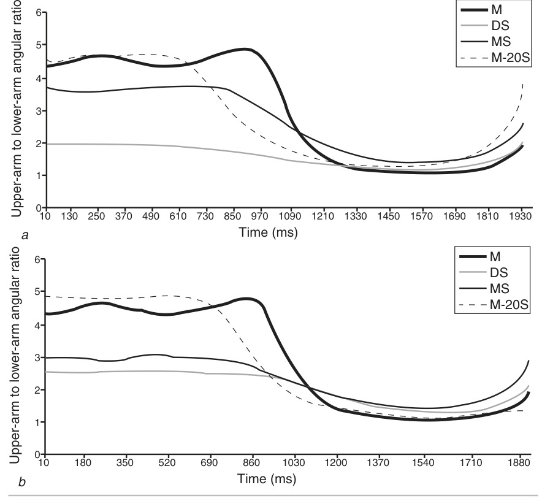<figcaption>Hình 9.2: Dữ liệu từ Al-Abood, Davids và Bennett (2001) cho thấy việc mô phỏng ảnh hưởng đến học khám phá như thế nào. Lưu ý rằng việc tiếp xúc với người mẫu chuyên gia ở cả hai nhóm mô phỏng (sớm và liên tục) đã giúp họ tiệm cận mẫu hình phối hợp của chuyên gia hiệu quả hơn nhóm khám phá, nhóm không được tiếp xúc với tác động của mô phỏng. M = mẫu hình phối hợp của người mẫu chuyên gia; DS = nhóm học khám phá; MS = nhóm mô phỏng sớm; M-20S = nhóm mô phỏng liên tục</figcaption></figure>
<p>một người học trẻ em có thể khiến một số giải pháp vận động được trình diễn trở nên ít hữu ích hơn cho người học.</p>
<p>Một số bằng chứng hiện có đã cho thấy việc dùng người mẫu cùng lứa tuổi có lợi trong học vận động, đặc biệt khi có sự khác biệt về trình độ kỹ năng giữa người học và người mẫu. D&#x27;Arripe-Longueville, Gernigon, Huet, Cadopi và Winnykamen (2002) phát hiện rằng trong một nhiệm vụ bơi lội dành cho trẻ em, những người mẫu cùng lứa tuổi thành thạo hơn đã gợi ra việc học hiệu quả hơn, chủ yếu bằng cách ràng buộc mong muốn bắt chước người mẫu của trẻ thông qua nỗ lực luyện tập chăm chỉ. Những người mẫu mới tập không ảnh hưởng đến cảm nhận hiệu quả bản thân của người học nhiều như những người mẫu cùng lứa tuổi thành thạo. Một công trình khác của d&#x27;Arripe-Longueville, Gernigon, Huet, Winnykamen và Cadopi (2002) nhận thấy rằng sự khác biệt giới tính trong việc mô phỏng cùng lứa tuổi dẫn đến nhiều trường hợp mô phỏng hơn ở các cặp không đối xứng (khác giới), đặc biệt ảnh hưởng đến số lần thử luyện tập mà trẻ trai thực hiện.</p>
<p>Một giải thích khác cho những phát hiện này là khi xem một người mẫu mới tập, người học tham gia tích cực hơn vào việc giải quyết vấn đề và đạt được mục tiêu so với khi quan sát một người mẫu thành thạo (Hodges &amp; Franks, 2002). Bên cạnh đó, người học được lợi từ việc nhận thông tin biến thiên trong quá trình luyện tập và khám phá ra cái gì hiệu quả cũng như cái gì không hiệu quả. Những yếu tố này cũng có thể góp phần vào lợi ích rõ rệt của việc người học quan sát người mẫu thay vì chỉ đơn giản sao chép một kỹ thuật được lý tưởng hóa.</p>
<p>Người học quan sát một trẻ em trình diễn một kỹ năng.</p>
<figure class="bookfig">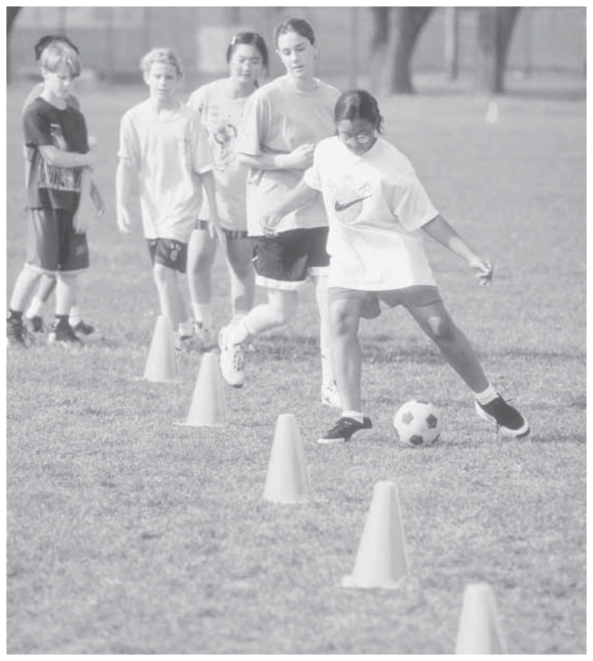</figure>
<p>Rõ ràng, cần có thêm nghiên cứu về các ràng buộc tâm lý–vật lý của người mẫu đối với người học, đặc biệt liên quan đến sự khác biệt giữa trẻ em và người lớn cũng như sự khác biệt giới tính giữa người mẫu và người học. Một vấn đề thú vị khác là liệu người mẫu dành cho vận động viên khuyết tật có cần có cùng đặc điểm thể chất với người học hay không. Ví dụ, người mẫu khuyết tật hay người mẫu không khuyết tật sẽ tạo thuận lợi tốt hơn cho việc luyện tập của người học bị khuyết tật hoặc chấn thương? Nếu việc mô phỏng định hướng sự tìm kiếm của người học, thì suy ra rằng sự tương đồng giữa các ràng buộc của người mẫu và người học nên tương đối cao để ràng buộc tối ưu các hoạt động khám phá.</p>
<p>Đây là một lĩnh vực quan trọng cho nghiên cứu tương lai về học qua quan sát. Nó phản ánh các ý tưởng từ nghiên cứu tâm lý học sinh thái về cơ hội hành động, theo đó sự biến đổi về kích thước cơ thể và năng lực hành động của người học có thể diễn ra trên các thang thời gian khác nhau (ví dụ, những thay đổi tức thời có thể xảy ra do mệt mỏi, chấn thương và việc sử dụng dụng cụ, trong khi những thay đổi dài hạn xảy ra do tăng trưởng, phát triển và luyện tập). Theo Fajen và các cộng sự (sắp xuất bản), cần có một giai đoạn hiệu chỉnh nhận thức–vận động để làm quen với những thay đổi ngắn hạn và dài hạn đó, nhằm người học có thể phát hiện được cơ hội hành động. Tương tự, có vẻ như các đặc điểm của người mẫu cần được hiệu chỉnh với đặc điểm của người học để tăng cường việc học từ các trình diễn mẫu trực quan.</p>
<h3>Phản hồi video do người học tự điều chỉnh</h3>
<p>Phản hồi video đang trở thành một công cụ thực hành ngày càng phổ biến đối với những người thực hành vận động. Janelle, Barba, Frehlich, Tennant và Cauraugh (1997) đã xem xét hai câu hỏi đặc biệt đáng quan tâm. Thứ nhất, phản hồi video có tốt hơn các loại phản hồi khác không? Thứ hai, người học được lợi đến mức nào khi được chọn thời điểm và lượng phản hồi họ nhận được? Janelle và các cộng sự đã dùng một nhiệm vụ ném bóng chính xác bằng chi không thuận để giải quyết những câu hỏi này. Để xác định liệu phản hồi liên quan đến chuyển động (KP) có lợi hơn phản hồi liên quan đến kết quả (KR) hay không, ba nhóm người học nhận KP qua phản hồi video trong khi một nhóm khác nhận KR.</p>
<p>Một mối quan tâm khác của Janelle và các cộng sự (1997) là liệu người học có nên nhận KP dưới dạng tóm tắt hay không. Vì lý do đó, một trong các nhóm KP nhận KP sau mỗi 5 lần thử (dạng tóm tắt). Họ cũng gợi ý rằng người học được lợi nhiều nhất khi được chọn lịch trình cung cấp KP. Do đó, hai nhóm cuối cùng gồm một nhóm tự quyết định thời điểm cung cấp KP (tự điều chỉnh) và một nhóm không có quyền lựa chọn nhưng có lịch trình phản hồi khớp với nhóm tự điều chỉnh (ghép cặp). Tất cả người tham gia đều được quay phim khi thực hiện các lần thử tiếp thu và có thể tiếp cận KR khi họ quan sát nơi bóng rơi trên bảng mục tiêu.</p>
<p>Điểm hình thức từ nghiên cứu của Janelle và các cộng sự (1997) rõ ràng ủng hộ việc dùng phản hồi video (xem hình 9.3). Nhóm KR liên tục thể hiện hình thức ném kém hơn các nhóm KP. Điểm chính xác cũng thấp nhất ở nhóm KR. Trong các lần thử tiếp thu, nhóm tóm tắt và nhóm tự điều chỉnh thực hiện tốt như nhau. Tuy nhiên, trong các lần thử duy trì không có phản hồi, hình thức vận động tốt hơn lại đến từ nhóm tự điều chỉnh. Cuối cùng, nhóm ghép cặp dường như chịu bất lợi vì không được chọn thời điểm cung cấp KP. Dù nhận cùng lượng KP vào cùng thời điểm với nhóm tự điều chỉnh (ở 11% số lần thử), mức duy trì của nhóm ghép cặp không cao bằng.</p>
<p>Những phát hiện từ nghiên cứu của Janelle và các cộng sự (1997) đặt ra một số câu hỏi cho cả người thực hành lẫn người thực hiện. Thứ nhất, sự tương đồng về hình thức vận động và điểm kết quả cho thấy khi người học tập trung vào việc đạt được hình thức tốt, họ có xu hướng đạt được kết quả như một sản phẩm phụ. Thứ hai, có vẻ quan trọng là cho người học một mức kiểm soát nhất định trong việc quyết định thời điểm cung cấp phản hồi liên quan đến chuyển động. Rất có thể tự điều chỉnh phản hồi làm tăng động lực và cũng dẫn đến các chiến lược học hiệu quả hơn. Ngoài ra, nghiên cứu này đã chứng minh rõ ràng rằng trong các nhiệm vụ có nhiều bậc tự do, chỉ riêng KR là không đủ để tối ưu hóa việc học. Người học được lợi nhiều nhất từ một mức cung cấp vừa phải</p>
<p style="font-style:italic;color:#475569;font-size:.88rem">Hình 9.3: Điểm hình thức từ nghiên cứu của Janelle và các cộng sự (1997) rõ ràng ủng hộ việc dùng phản hồi video.</p>
<p>Được in lại với sự cho phép từ Research Quarterly for Exercise and Sport, Tập 68, Số 4, 269-279, Bản quyền 1997 bởi the American Alliance for Health, Physical Education, Recreation and Dance, 1900 Association Drive, Reston, VA 20191.</p>
<p>Các khối thử nghiệm</p>
<p>Tiếp thu1 Tiếp thu2 Duy trì 5</p>
<p>5.5</p>
<p>6.5</p>
<p>7.5</p>
<p>8.5</p>
<p>9.5</p>
<p>1 2 3 4 5 6 7 8 9 10 11 12 13 14 15 16 17 18 19 20 21 22</p>
<p>Điểm hình thức</p>
<p>KR Tóm tắt</p>
<p>Ghép cặp Tự điều chỉnh X</p>
<p>X X</p>
<p>X X X X</p>
<p>X X X</p>
<p>X X</p>
<figure class="bookfig"><figcaption>Hình 9.3: Điểm hình thức từ nghiên cứu của Janelle và các cộng sự (1997) rõ ràng ủng hộ việc dùng phản hồi video.</figcaption></figure>
<p>việc cung cấp phản hồi liên quan đến chuyển động nhằm phát triển các khía cạnh nổi bật nhất của kỹ năng. Cuối cùng, như Newell (1996) đã chỉ ra, các trình diễn mẫu chỉ cung cấp cho người học thông tin động học về chuyển động. Những nhiệm vụ như ném chính xác, vốn chủ yếu được điều chỉnh bởi phản hồi động lực, cũng có thể được lợi từ các hình thức cung cấp phản hồi khác.</p>
<h3>Tóm tắt</h3>
<p>Luyện tập có thể được mô tả tốt nhất như một quá trình tìm kiếm, trong đó người học tìm ra các giải pháp phối hợp phù hợp cho những vấn đề vận động dưới các ràng buộc nhiệm vụ biến đổi. Vai trò của các phương pháp học qua quan sát là định hướng các hoạt động tìm kiếm của người học. Tài liệu được xem xét trong chương này và chương 8 gợi ý rằng, để tạo thuận lợi cho hoạt động tìm kiếm của người học, những người thực hành cần tránh cung cấp quá nhiều hướng dẫn bằng lời nói hoặc phản hồi trong quá trình luyện tập. Việc thiết lập một trình diễn mẫu trực quan hay hình ảnh về một kỹ năng cho người học thời gian để khai thác các chiến lược học khám phá và tận dụng các quá trình tự tổ chức trong việc tìm ra các mẫu hình phối hợp phù hợp để thực hiện các nhiệm vụ cụ thể. Cũng giống như những hướng dẫn bằng lời nói tập trung quá mức vào chuyển động của các bộ phận cụ thể của cơ thể trong tiếp thu kỹ năng, việc dùng các trình diễn mẫu trực quan để tập trung vào các khớp hay đoạn chi cụ thể nên tránh. Thay vào đó, các trình diễn mẫu trực quan nên nhấn mạnh tác động của chuyển động lên các thuộc tính của môi trường, chẳng hạn như quỹ đạo bay của bóng sau khi bị đánh hoặc ném.</p>
<p>Các trình diễn mẫu được ghi video hay hình ảnh về hành vi của người mẫu có thể giúp người học tìm ra các giải pháp phối hợp phù hợp nhanh hơn và an toàn hơn, dù mục tiêu không nên là bắt chước một người mẫu. Thay vào đó, người mẫu trình diễn một giải pháp phối hợp khả dĩ có thể hướng dẫn các hoạt động luyện tập thực tế của người học (các mẫu hình tìm kiếm). Vai trò của trình diễn mẫu là giúp người học định vị được, có thể nói, khu vực chứa các giải pháp phối hợp liên quan. Đến mức độ đó, người học có thể được lợi khi tự chọn thời điểm xem trình diễn mẫu hoặc phản hồi bổ sung, từ đó đảm nhận nhiều trách nhiệm hơn đối với việc học của chính mình (Janelle et al., 1997). Nghiên cứu gợi ý một vai trò mới cho các nhà sư phạm dựa trên chiến lược định hướng sự tìm kiếm các mẫu hình phối hợp liên quan của người học thông qua việc dùng hướng dẫn bằng lời nói và trình diễn mẫu trực quan ở mức hạn chế.</p>
<p>Dù nhiều nhiệm vụ khác nhau đã được dùng trong nhiều cuộc điều tra khác nhau kể từ những đóng góp nghiên cứu ban đầu vào những năm 1960 và 1970, nỗ lực còn hạn chế được hướng tới việc xây dựng một cách có hệ thống trên những khám phá ban đầu về ảnh hưởng của các ràng buộc nhiệm vụ. Hơn nữa, sự mơ hồ trong tài liệu về học qua quan sát dường như là do một số điểm yếu then chốt, gồm tiết lộ hạn chế về các hướng dẫn bằng lời nói đi kèm các nghiên cứu, sự không nhất quán trong việc thiết lập các điều kiện kiểm soát, và xu hướng lẫn lộn giữa thực hiện vận động và học vận động trong các thiết kế thí nghiệm.</p>
<p>Nhiều mối bận tâm về phương pháp luận này đã được các nhà nghiên cứu giải quyết từ đó (ví dụ, Al-Abood, Bennett, Moreno Hernandez, Ashford, &amp; Davids, 2002; Horn et al., 2002). Giờ đây các nhà điều tra có xu hướng dùng nhiều phương pháp luận đa dạng để khám phá các quá trình mô phỏng qua quan sát, gồm nhiều kỹ thuật chụp ảnh não thần kinh học (ví dụ, Decety et al., 1997; Decety &amp; Grèzes, 1999), các thủ tục theo dõi chuyển động mắt bằng thị giác (ví dụ, Horn et al., 2002), và phân tích chuyển động định tính hay định lượng (ví dụ, thường tiệm cận hành động được mô phỏng) kết hợp với các thước đo kết quả thực hiện truyền thống. Nhóm thước đo trước đại diện cho những đổi mới gần đây trong tài liệu và chiếm tỷ lệ nhỏ của dữ liệu, trong khi nhóm thước đo sau đã tạo ra một lượng dữ liệu đáng kể, đặc biệt cho kết quả thực hiện. Vẫn còn nhu cầu liên tục là sử dụng rộng rãi các kỹ thuật thống kê như phân tích gộp để kiểm chứng các xu hướng cụ thể và xem xét những vấn đề còn tranh cãi trong khối lượng dữ liệu đã và chưa công bố khổng lồ của tài liệu về học qua quan sát (xem Ashford et al., 2007). Những kỹ thuật như vậy sẽ cho phép khái quát hóa đáng tin cậy hơn các hiệu ứng chính liên quan đến học qua quan sát.</p>
<p>CÂU HỎI TỰ KIỂM TRA</p>
<p>1. Hãy liệt kê những ưu và nhược điểm của việc người học tham gia học khám phá mà không có sự can thiệp nào từ người thực hành.</p>
<p>2. Hãy chọn một kỹ năng vận động từ một môn thể thao bạn quen thuộc và xác định các đặc điểm chuyển động tương đối từ một trình diễn mẫu mà người quan sát nên được định hướng tới.</p>
<p>3. Bằng chứng nghiên cứu nào tồn tại cho quan điểm nhận thức thị giác do Scully và Newell (1985) đề xuất?</p>
<p>4. Người thực hành nên xem xét những yếu tố nào khi lên kế hoạch cho một buổi luyện tập liên quan đến trình diễn mẫu?</p>
<p>5. Phản hồi do người học tự điều chỉnh có thể trở thành chiến lược hiệu quả thế nào cho người thực hành?</p>
<p>6. Hiệu chỉnh nhận thức–vận động là gì, và nó có thể tăng cường khả năng nhận biết cơ hội hành động của người học từ việc quan sát các trình diễn mẫu trực quan như thế nào? Hãy phác thảo câu trả lời của bạn với tham chiếu đến các nhóm người học khác nhau, gồm vận động viên khuyết tật, trẻ em và người lớn tuổi.</p>
<p>ĐỌC THÊM</p>
<p>1. Ashford, D., Bennett, S., &amp; Davids, K. (2006). Observational modelling effects for movement dynamics and movement outcome measures across differing task constraints: A meta-analysis. Journal of Motor Behavior, 38, 185-205.</p>
<p>2. Calvo-Merino, B., Glaser, D.E., Grèzes, J., Passingham, R.E., &amp; Haggard, P. (2005). Action observation and acquired motor skills: An fMRI study with expert dancers. Cerebral Cortex, 15, 1243-1249.</p>
<p>3. D&#x27;Arripe-Longueville, F., Gernigon, C., Huet, M.L., Cadopi, M., &amp; Winnykamen, F. (2002). Peer tutoring in a physical education setting: Influence of tutor skill level on novice learners&#x27; motivation and performance. Journal of Teaching in Physical Education, 22, 105-123.</p>
<p>4. Janelle, C. M., Champenoy, J. D., Coombes, S. A., &amp; Mousseau, M. B. (2003). Mechanics of attentional cueing during observational learning to facilitate motor skill acquisition. Journal of Sports Sciences, 21, 825-838.</p>
<p>5. Scully, D.M., &amp; Newell, K.M. (1985). Observational learning and the acquisition of motor skills: Toward a visual perception perspective. Journal of Human Movement Studies, 11, 169-186.</p><h2 class="chapter-title">Chương 10 — Triển khai tiếp cận dựa trên rào cản/giới hạn</h2><h2>Triển khai cách tiếp cận</h2>
<h2>do ràng buộc</h2>
<h2>dẫn dắt</h2>
<h3>Các nghiên cứu tình huống</h3>
<p>DÀN Ý CHƯƠNG</p>
<p>Luyện tập và tiêu điểm chú ý bên ngoài</p>
<p>Động lực học của việc học cú chip trong bóng đá</p>
<p>Sự khác biệt cá nhân ở dáng đi của người cụt chi</p>
<p>Tổ chức luyện tập cho binh sĩ</p>
<p>Hướng dẫn dành cho học viên học lái xe</p>
<p>Dùng mô phỏng để định hướng việc học của học sinh</p>
<h3>CHƯƠNG 10 CHƯƠNG 10</h3>
<figure class="bookfig"></figure>
<p>Trong chương cuối này, chúng tôi đưa ra một số ý tưởng về cách bạn có thể tiếp cận một vấn đề vận động cụ thể thông qua một nghiên cứu tình huống. Với mỗi vấn đề, chúng tôi đã cung cấp thêm các câu hỏi và bài tập vận dụng. Chúng tôi cũng đưa vào các bài đọc và nghiên cứu liên quan của chương nếu bạn muốn tìm hiểu thêm. Hãy ghi nhớ rằng các giải pháp gợi ý không nhất thiết là những câu trả lời đúng duy nhất. Thay vào đó, mỗi nghiên cứu tình huống dựa trên những hiểu biết lý thuyết được trình bày trong các chương trước và chứa một trong nhiều câu trả lời khả dĩ. Chương cuối này chỉ nhằm giúp bạn đánh giá mức độ hiểu biết của mình và bổ sung cho việc học của bạn.</p>
<p>Luyện tập và tiêu điểm chú ý bên ngoài</p>
<p>XÁC ĐỊNH VẤN ĐỀ</p>
<p>Làm thế nào để cung cấp phản hồi và hướng dẫn cho người học và người thực hiện ở trình độ cao trong quá trình luyện tập</p>
<p>BỐI CẢNH</p>
<p>Luyện tập trong thời gian dẫn đến một cuộc thi bóng bầu dục quốc tế</p>
<p>CÁC RÀNG BUỘC CHÍNH</p>
<p>Cơ thể (tích hợp phản hồi vào luyện tập một mẫu hình vận động đã được thiết lập vững chắc), nhiệm vụ (đá bóng để đáp ứng các ràng buộc về độ cao, khoảng cách và độ chính xác)</p>
<p>Một số vận động viên dùng chiến lược tiêu điểm bên ngoài một cách trực giác, chẳng hạn như Jonny Wilkinson, người đã ghi những điểm quyết định trong những giây cuối của Cúp Thế giới Bóng bầu dục 2003. Jonny Wilkinson tiết lộ bí quyết đá phạt thành công của mình: một người phụ nữ tưởng tượng tên là Doris. Năm năm trước đó, khi Wilkinson đang chuẩn bị cho trận đấu thử đầu tiên gặp đội tuyển quốc gia Úc tại Brisbane, anh gặp phải những vấn đề nghiêm trọng với kỹ thuật đá của mình. Dù đã tập luyện hàng giờ với huấn luyện viên đá bóng của đội Anh, Dave Alred, Wilkinson vẫn tiếp tục đá bóng loạn xạ khi thời gian đếm ngược đến giờ khai cuộc. Cuối cùng Alred bảo Wilkinson quên kỹ thuật và cột môn bàn thắng đi. Lời khuyên của Alred cho Wilkinson là hãy tưởng tượng một phụ nữ ngồi trong đám đông phía sau cột môn và cố gắng đá trúng người đó. “Bà ấy được gọi là Doris; chúng tôi chọn một chỗ ngồi cho bà ấy và cố đá trúng bà ấy,” Wilkinson tâm sự trước trận đấu bảng C của đội tại World Cup gặp Samoa ở Melbourne. “Rồi chúng tôi tưởng tượng bà ấy đang đọc báo và chúng tôi cố đá bay tờ báo khỏi tay bà ấy. Khi mọi thứ khá hơn một chút, chúng tôi tưởng tượng bà ấy đang cầm một lon cola và chúng tôi cố đá trúng lon đó.”</p>
<p>Kết quả không đến ngay lập tức. Đội Anh bị đội Úc đánh bại với tỷ số kỷ lục 76-0. Tuy nhiên, về sau kỹ thuật hình dung bất thường đó đã mang lại thành quả. “Ý tưởng là thay vì nhắm vào cột môn, bạn nhắm vào một vật cụ thể cách đó 30 yard [27 mét], và cách đó chúng tôi đã thay đổi trọng tâm của chỗ tôi nhắm. Nó khiến tôi thực sự đá xuyên qua bóng và nó đã hiệu quả.”</p>
<p>Wilkinson đã ví một buổi luyện tập như một trò ghép tranh. “Mỗi tối khi bạn đi ngủ, có thể có điều gì đó trong đầu bạn mà bạn phải giải quyết. Điều đó làm xáo trộn hộp tranh và khi bạn đá vào ngày hôm sau, bạn không còn là sản phẩm hoàn chỉnh nữa. Mục tiêu của mỗi buổi đá, lý do tôi luyện tập theo cách tôi làm, là tìm ra những mảnh đó và, vào cuối buổi, xếp chúng lại vào hộp.” Khi Wilkinson lo ngại mình đang ở trong giai đoạn trì trệ, anh sẽ đổi tiêu điểm bằng cách “làm vài cú Doris” hoặc vài cú “seven lười”—một cú đá gôn lob bằng gậy 7-iron, trong đó anh cố cho bóng rơi đúng vào xà ngang. “Điều đó xóa sạch sự hoảng sợ vì cố đá cho qua xà hoặc đúng đường—tất cả những gì bạn nghĩ là trọng lượng; bạn coi đường bóng là đương nhiên.”</p>
<p>Phóng viên thường trú NZPA, Sydney, Úc. Được sao chép với sự cho phép của Otago Daily Times, 27-October 2003 http://www.odt.co.nz</p>
<p>CÂU HỎI PHÂN TÍCH</p>
<p>1. Kinh nghiệm của vận động viên quốc tế thành công này cho bạn biết gì về tính ổn định của các mẫu hình vận động đã được tiếp thu?</p>
<p>2. Tình huống đời thực này gợi ý điều gì về cách các hướng dẫn và phản hồi nên được truyền đạt tới các vận động viên?</p>
<p>3. Bạn có dùng cách tiếp cận tương tự với một người mới bắt đầu hoàn toàn trong việc đá bóng bầu dục không?</p>
<p>Bất cứ khi nào luyện tập đá bóng trở nên thách thức đối với Johnny Wilkinson, nghĩ đến việc đá trúng Doris lại giúp ích cho anh!</p>
<p>© Reuters/Corbis</p>
<figure class="bookfig restored">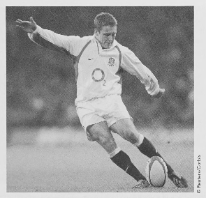</figure>
<p>BÀI TẬP VẬN DỤNG</p>
<p>Hãy chọn một môn thể thao hoặc hoạt động thể chất theo ý bạn và xác định các kỹ năng then chốt liên quan. Dưới các ràng buộc nhiệm vụ của môn thể thao hay hoạt động thể chất đó, hãy xem xét cách một huấn luyện viên có thể khuyến khích tiêu điểm chú ý bên ngoài trong quá trình luyện tập các kỹ năng then chốt.</p>
<p>BÀI ĐỌC</p>
<p>Các chương 8 và 9; Wulf và Shea (2002)</p>
<p>Động lực học của việc học cú chip trong bóng đá</p>
<p>XÁC ĐỊNH VẤN ĐỀ</p>
<p>Quét các mẫu hình phối hợp ban đầu và theo dõi tiến trình của một người học thực hiện đường chuyền trong bóng đá</p>
<p>BỐI CẢNH</p>
<p>Câu lạc bộ bóng đá nữ giải trí</p>
<p>CÁC RÀNG BUỘC CHÍNH</p>
<p>Cơ thể (thiếu kinh nghiệm), nhiệm vụ (mục tiêu—nhấc bóng qua đối phương đến đồng đội)</p>
<p>Kirsten bắt đầu tự hỏi mình đã vướng vào chuyện gì. Các bạn cùng phòng đã khuyến khích cô thử sức với câu lạc bộ bóng đá địa phương vì cô khỏe mạnh và họ thiếu người. Tuy nhiên, trước đó cô thậm chí chưa từng đá một quả bóng đá nào. “Lúc đầu chúng ta sẽ tập trung vào những điều cơ bản—chuyền, sút và tranh chấp—trước khi bắt đầu làm việc với một số kỹ năng cụ thể,” huấn luyện viên đã nói với cả đội gồm 15 cầu thủ. Những buổi tập đầu tiên diễn ra khá ổn đối với Kirsten. Cô không gặp khó khăn gì khi theo kịp những người khác trong các bài chạy tập và chạy đệm, và thậm chí đã ghi được một bàn trong một trận đấu tập. Nhưng các buổi luyện kỹ năng lại tỏ ra khó khăn hơn một chút.</p>
<p>“Xin lỗi huấn luyện viên, bóng dường như không đi đến chỗ tôi muốn,” Kirsten nói sau khi một đường chuyền định sẵn bị cắt và làm vỡ cửa sổ phòng thay đồ bên cạnh. Huấn luyện viên nhanh chóng nhận ra Kirsten cần được giúp đỡ—trước khi cô làm hỏng thêm thứ gì đó nữa!</p>
<p>Huấn luyện viên kiểm tra kỹ thuật đá bóng của Kirsten. Cô nghi ngờ rằng các mẫu hình phối hợp ban đầu của Kirsten khi đá bóng bắt đầu hạn chế khả năng chuyền chính xác của cô. Khi Kirsten được yêu cầu chuyền một quả bóng đứng yên cho đồng đội, một số vấn đề then chốt lập tức lộ ra. Trước hết, cô có xu hướng đặt chân không đá khá xa chỗ cô tiếp xúc với bóng. Bên cạnh đó, thân trên của cô dường như ngả ra sau ở hầu hết các lần thử. Và đôi khi cô có xu hướng đá thẳng qua đường giữa của quả bóng một cách không phân biệt, dẫn đến hóa đơn thay kính cửa sổ lớn.</p>
<p>Huấn luyện viên quyết định thao tác các ràng buộc nhiệm vụ để xác định mức độ linh hoạt trong kỹ thuật của Kirsten. Trước hết, cô đặt một rào chắn cao 1 mét cách Kirsten 2 mét và yêu cầu cô luân phiên chuyền bóng dưới và trên rào. Kỹ năng biến đổi này buộc Kirsten phải thường xuyên tìm kiếm các vị trí cơ thể và chỗ đặt chân phù hợp để thực hiện đường chuyền mong muốn. Sau vài phút luyện tập, huấn luyện viên yêu cầu đồng đội của Kirsten đứng sau rào và làm mục tiêu nhận bóng. Cuối cùng, ở phiên bản nâng cao hơn của bài tập, cô yêu cầu đồng đội Kirsten lăn bóng dưới rào về phía Kirsten rồi di chuyển sang trái hoặc phải để nhận đường chuyền. Khi Kirsten bắt đầu cho thấy sự tiến bộ trong những trò chơi biến đổi này, huấn luyện viên tiếp tục điều chỉnh một số ràng buộc then chốt. Ví dụ, vào một số thời điểm cô tăng chiều cao rào để khuyến khích Kirsten nhấc bóng cao hơn. Cô cũng thường xuyên khuyến khích Kirsten đổi vị trí và vai trò luyện tập với đồng đội và quan sát đồng đội thực hiện kỹ năng.</p>
<p>Kirsten bắt đầu nhận thấy sự tiến bộ của mình. “Mất khá lâu tôi mới đưa được bóng qua rào, nhưng sau khi làm được vài lần, mọi thứ dường như đã khớp lại với nhau,” cô nhận xét. Huấn luyện viên cũng hài lòng với sự tiến bộ của cô. “Tốt lắm, Kirsten. Nhưng giờ tôi muốn thấy con dùng những kỹ năng này trong một trận đấu—con sẽ đá ở vị trí tiền vệ trong trận đấu ngày thứ Bảy!” Kirsten rên lên lo lắng và hỏi, “Có cửa sổ nào gần sân đấu không?”</p>
<p>Thao tác các ràng buộc nhiệm vụ có thể khuyến khích người học khám phá các mẫu hình phối hợp ban đầu.</p>
<figure class="bookfig"></figure>
<p>CÂU HỎI PHÂN TÍCH</p>
<p>1. Nếu bạn là huấn luyện viên của Kirsten, bạn sẽ đánh giá kỹ thuật đá bóng của cô ấy như thế nào?</p>
<p>2. Bạn có thể nghĩ ra những bài tập nào khác để đánh giá tiến bộ của Kirsten trong kỹ năng sút chip này? Những ràng buộc then chốt nào khác bạn có thể thao tác để định hướng sự tìm kiếm của cô ấy?</p>
<p>3. Tại sao không chỉ đơn giản nói cho Kirsten biết vấn đề trong kỹ thuật của cô ấy là gì và trình diễn mẫu để chỉ cho cô ấy cách thực hiện nhiệm vụ?</p>
<p>BÀI TẬP VẬN DỤNG</p>
<p>Hãy xây dựng một chương trình luyện tập 6 tuần cho đội bóng của Kirsten, trọng tâm chính là cải thiện độ chính xác khi chuyền bóng. Hãy xem xét các yếu tố sau trong kế hoạch của bạn:</p>
<p>Có 15 cầu thủ và 1 huấn luyện viên. Có thể sử dụng cơ sở vật chất và thiết bị tập luyện (bạn cũng có thể mượn một máy quay video).</p>
<p>Bạn có 90 phút cho mỗi buổi và 2 buổi tập mỗi tuần.</p>
<p>Hai cầu thủ đang hồi phục sau chấn thương chân và chỉ có thể tập chạy bộ nhẹ trong 3 tuần đầu.</p>
<p>Bạn có thể nghĩ ra những trò chơi biến đổi nào nhấn mạnh kỹ năng chuyền bóng?</p>
<p>Bạn nên cung cấp những hướng dẫn bằng lời nói và phản hồi nào, và vào thời điểm nào?</p>
<p>BÀI ĐỌC</p>
<p>Các chương 4 và 5; Chow et al. (2006)</p>
<p>Sự khác biệt cá nhân ở dáng đi của người cụt chi</p>
<p>XÁC ĐỊNH VẤN ĐỀ</p>
<p>Đề xuất các bài tập phục hồi cho bệnh nhân cụt chi dưới gối với các mẫu hình dáng đi khác nhau</p>
<p>BỐI CẢNH</p>
<p>Nhà trị liệu cung cấp phục hồi lâm sàng sau một chấn thương lớn</p>
<p>CÁC RÀNG BUỘC CHÍNH</p>
<p>Cơ thể (mất bàn chân và mắt cá ở một bên), nhiệm vụ (mục tiêu—đi lại một cách chức năng và hiệu quả), môi trường (sự kỳ thị của xã hội đối với người khuyết tật)</p>
<p>Trong năm qua, A.J. và T.T. đã gặp phải những tai nạn chấn thương dẫn đến việc cụt bàn chân và mắt cá trái dưới gối. Cả hai bệnh nhân đều nói rằng họ muốn bắt đầu đi lại lại càng sớm càng tốt để có thể trở lại cuộc sống bình thường. “Mục tiêu ngắn hạn của tôi là đi lại không cần hỗ trợ rồi cuối cùng trở lại làm việc,” A.J. nói. Tuy nhiên, động lực chính của T.T. lại khác. Anh nói, “Tôi cảm thấy người ta cứ nhìn tôi vì tôi đi khập khễnh. Tôi chỉ mong nó không rõ ràng thế.” Bệnh viện đã cung cấp cho cả hai bệnh nhân chân tay giả dưới gối. Sau khi hồi phục sau các tai nạn, A.J. và T.T. làm việc với Charlie, một nhà trị liệu vận động, trong chương trình phục hồi của họ.</p>
<p>Charlie gặp A.J. và T.T. lần đầu trong vòng vài ngày cách nhau. Trong lần chẩn đoán ban đầu, Charlie nhận thấy một số điểm tương đồng giữa họ. Cả hai đều là nam, và gần như cùng tuổi, chiều cao và cân nặng. Tuy nhiên, như Charlie sớm phát hiện, dù mỗi người đều thích nghi với chân giả trong vài tuần đầu, đó là nơi sự tương đồng kết thúc.</p>
<p>Ví dụ, A.J. dường như thích nghi với chân giả mới tốt hơn T.T., người có kỹ thuật đi lại chậm và không đối xứng rõ rệt. Charlie cũng nhận thấy A.J. thích nghi tốt hơn với những thay đổi nhỏ về tốc độ khi đi trên máy chạy bộ có động cơ. Ngược lại, chiều dài bước chân của T.T., đặc biệt ở bên cụt, ít biến thiên hơn khi Charlie thay đổi tốc độ máy, tạo ra một sự bất đối xứng trông khá vụng về giữa các bước của T.T. Charlie tin rằng sự làm quen nhanh hơn của A.J. là do anh khỏe hơn và có sức mạnh chân tốt hơn. A.J. đã làm nhân viên giao thư hơn 8 năm, dù hiện anh chỉ được hỗ trợ trong bộ phận phân loại thư. Tuy nhiên, công việc nhân viên văn phòng của T.T. hiếm khi cho anh cơ hội vận động cơ thể.</p>
<p>Học lại các mẫu hình vận động sau chấn thương đòi hỏi tính biến thiên trong bối cảnh luyện tập cũng nhiều như khi tiếp thu một kỹ năng lần đầu. Ví dụ, người cụt chi dưới có thể được lợi khi đi lại trong môi trường lộn xộn thay vì chỉ trên máy chạy bộ.</p>
<p>© Pulschen/Custom Medical Stock Photo</p>
<figure class="bookfig"></figure>
<p>Một số khác biệt thú vị hơn giữa hai bệnh nhân lộ ra khi Charlie quan sát họ đi lại quanh phòng khám. Để tăng độ phức tạp cho nhiệm vụ đi lại, Charlie đặt một số vật trên sàn làm chướng ngại vật. Trong tình huống này, A.J. hoàn thành lộ trình định sẵn nhanh hơn T.T. nhưng lại có xu hướng mắc nhiều lỗi hơn. Ví dụ, anh thường vô tình chạm chân giả vào chướng ngại vật, khiến anh vấp. Dù T.T. mất nhiều thời gian hơn để đi qua sàn phòng khám, anh lại thích dùng bước dài hơn ở chân lành để bước qua các chướng ngại vật.</p>
<p>Xem xét tất cả thông tin này, Charlie đã đưa ra một số đề xuất khác nhau cho bệnh nhân của mình như một phần trong quá trình phục hồi. Với A.J., Charlie đề xuất các nhiệm vụ thăng bằng và đi lại có yêu cầu độ chính xác đáng kể. Ví dụ, anh đưa cho A.J. một cái thang dây để đặt trên mặt đất và tập đi qua các khe. Anh nhận ra T.T. cần cải thiện thể lực chung và sức mạnh chân, đồng thời phát triển sự tự tin để anh dùng chân cụt thường xuyên hơn. Charlie giới thiệu T.T. đến một phòng tập thể dục địa phương và một số bài tập rèn luyện thể lực cụ thể. Anh cảnh báo cả A.J. và T.T. đừng mong đợi những cải thiện đột biến, nói rằng, “Những chuyện này có thể cần thời gian, nhưng hãy cố tập dùng chân giả trong nhiều tình huống khác nhau—đừng sợ mắc lỗi. Đôi khi bạn phải lùi hai bước để tiến một bước!”</p>
<p>CÂU HỎI PHÂN TÍCH</p>
<p>1. Nếu bạn ở vị trí của Charlie, bạn sẽ xử lý thế nào với sự khác biệt giữa những bệnh nhân như A.J. và T.T.?</p>
<p>2. Bạn có thể nghĩ ra những bài tập nào khác để giúp A.J. và T.T.? Hãy xem xét các ràng buộc then chốt ở giai đoạn đầu này và các ràng buộc đang nảy sinh về sau trong quá trình phục hồi của họ.</p>
<p>3. Bệnh nhân cụt chi thường thay chân giả nhiều lần trong vài tháng đầu để phù hợp với những thay đổi về sức mạnh chân, kích thước đoạn cụt, v.v. Những thay đổi trong ràng buộc cơ thể này sẽ ảnh hưởng thế nào đến chương trình luyện tập mà Charlie tổ chức?</p>
<p>4. Bạn có thể nghĩ ra lợi ích nào từ việc cho A.J. và T.T. cùng tham gia các buổi phục hồi không?</p>
<p>BÀI TẬP VẬN DỤNG</p>
<p>Với một bệnh hoặc chấn thương liên quan đến vận động theo lựa chọn của bạn, hãy xây dựng một chương trình phục hồi dựa trên nền tảng sư phạm phi tuyến. Hãy xem xét các yếu tố sau:</p>
<p>Các ràng buộc then chốt đang nảy sinh và đang suy giảm ở bệnh nhân</p>
<p>Khuyến nghị ngắn hạn và dài hạn</p>
<p>Thiết bị phục hồi được đề xuất</p>
<p>Mục tiêu của bệnh nhân</p>
<p>BÀI ĐỌC</p>
<p>Chương 5; Schöllhorn, Nigg, Stefanyshyn, và Liu (2002)</p>
<p>Tổ chức luyện tập cho binh sĩ</p>
<p>Xác định vấn đề</p>
<p>Huấn luyện một đơn vị binh sĩ mới nhập ngũ bảo vệ một địa điểm được chỉ định khỏi sự tấn công của địch</p>
<p>Bối cảnh</p>
<p>Môi trường huấn luyện quân đội</p>
<p>Các ràng buộc chính</p>
<p>Nhiệm vụ (mục tiêu—bảo vệ vị trí căn cứ), môi trường (kịch bản tấn công không đoán trước được, động lực nhóm)</p>
<p>“Hãy cảnh giác, Đội Xanh, địch có thể xuất hiện bất cứ lúc nào.” Là một huấn luyện viên đơn vị đặc biệt trong quân đội suốt vài năm, Trung sĩ Bella Thornton đã quen với việc đưa ra những lời cảnh báo như vậy cho binh sĩ mới tập. Tuy nhiên, cô hiếm khi thấy một đám tân binh lộn xộn đến thế so với 20 người lính này khi họ tản ra hoảng hốt, cố gắng kiểm soát mọi lối vào tòa nhà căn cứ giả định. “Có thể đây sẽ là một năm dài,” Bella tự nghĩ khi nhận ra không một người lính nào ở lại canh cửa trước. Trong 9 tháng tới, công việc của Bella là huấn luyện Đội Xanh phối hợp như một khối thống nhất và bảo vệ các vị trí chiến lược khỏi những cuộc tấn công tiềm tàng của địch.</p>
<p>Ngay cả các đội và nhóm cũng có thể được lợi từ việc xác định các ràng buộc nhiệm vụ then chốt để huấn luyện kỹ năng nhận thức–vận động trong hoạt động phối hợp.</p>
<p>© Reuters/Corbis</p>
<figure class="bookfig restored"></figure>
<p>Trở về doanh trại vào chiều hôm đó, Bella bắt đầu lập kế hoạch cho một số kỹ năng và hoạt động luyện tập mà cô sẽ dùng để huấn luyện các tân binh Đội Xanh. Kỹ năng đầu tiên binh sĩ cần học là cách xác định các nguồn thông tin chiến lược then chốt, chẳng hạn như vị trí tối ưu cho những kẻ xâm nhập tiềm tàng và mọi lối vào có thể có của tòa nhà căn cứ. Để đạt được mục tiêu này, Bella quyết định đưa đơn vị đến nhiều tòa nhà và địa điểm khác nhau trong tháng huấn luyện đầu tiên. Khi đến nơi luyện tập, Đội Xanh được cho 5 phút để quan sát khu vực và tòa nhà, rồi báo cáo lại cho chỉ huy đơn vị các chi tiết về bố cục của tòa nhà căn cứ và khu vực xung quanh. Khi đơn vị làm tốt hơn việc sản xuất các báo cáo giám sát, Bella rút ngắn thời gian và yêu cầu thông tin chi tiết hơn, chẳng hạn như hỏi xem đã có ai kiểm tra các lối vào trên mái nhà chưa.</p>
<p>Kỹ năng quan trọng thứ hai Bella muốn rèn là khả năng làm việc nhóm của đơn vị. Kỹ năng này liên quan đến việc đơn vị làm rõ vai trò của từng tân binh (ví dụ, lính gác báo động sớm) cũng như khả năng hợp tác và thực hiện quyết định hiệu quả nhanh chóng của mỗi người. Để cải thiện tinh thần đồng đội và xác định vai trò, Bella khuyến khích Đội Xanh cùng nhau lên kế hoạch cho các kịch bản chiến lược giả định như phá hoại một cây cầu có người canh gác, giải cứu một con tin, và đưa một tù nhân đến nơi an toàn. Với mỗi kịch bản, cô nghĩ ra một số quy tắc hoặc điều kiện buộc đơn vị phải hợp tác nếu không sẽ thất bại.</p>
<p>Cuối cùng, Bella muốn đơn vị có thể điều chỉnh chiến lược giám sát của mình trước các kịch bản tấn công không đoán trước, chẳng hạn như một cuộc tập kích ban đêm hay một cuộc tấn công bằng vũ khí hóa học. Để đạt được mục tiêu này, cô định đưa Đội Xanh trở lại kịch bản giả định mà cô đã tạo sớm hơn trong ngày và dần dần thêm vào các sự kiện không lường trước. Ví dụ, một số yếu tố then chốt cô có thể thay đổi gồm số lượng kẻ tấn công, vũ khí và nguồn lực sẵn có của đơn vị, thời điểm diễn ra cuộc bao vây, và cả điều kiện thời tiết khi cuộc tấn công xảy ra. “Một điều chắc chắn,” Bella nghĩ khi lưu kế hoạch huấn luyện vào máy tính và nhìn Đội Xanh ủ rũ đi bộ về sau một buổi chạy tập 10 dặm (16 kilômét), “họ sẽ không để cửa trước không người canh nữa!”</p>
<p>CÂU HỎI PHÂN TÍCH</p>
<p>1. Giả sử một số tân binh Đội Xanh bắt đầu đổ lỗi cho nhau và cãi nhau về các kịch bản thất bại. Bạn có thể khuyến khích đơn vị trở thành một đội phối hợp ăn ý hơn như thế nào?</p>
<p>2. Bạn sẽ đề xuất những bài tập huấn luyện nào khác để Bella phát triển các kỹ năng quân sự then chốt, chẳng hạn như bắn súng trường chính xác và sự cảnh giác?</p>
<p>3. Liệu một kỹ năng vận động phức tạp như kiểm tra một tòa nhà để tìm kẻ xâm nhập có được lợi từ việc luyện tập theo từng phần không? Theo bạn, điều đó có ý nghĩa gì đối với việc hình thành hiệu suất thực hiện, duy trì và chuyển giao kỹ năng?</p>
<p>BÀI TẬP ỨNG DỤNG</p>
<p>Hãy tạo ra một tình huống giả định cho Đơn vị Xanh nhằm giúp phát triển kỹ năng làm việc nhóm của họ. Hãy xem xét các yếu tố sau:</p>
<p>Mục tiêu nhiệm vụ của đơn vị là gì?</p>
<p>Các quy tắc của tình huống là gì (bạn mong muốn khuyến khích những hành vi nào)?</p>
<p>Làm thế nào có thể đưa nhiễu bối cảnh vào quá trình luyện tập của các binh sĩ?</p>
<p>Có bao nhiêu giải pháp khả dĩ cho tình huống của bạn? Các ràng buộc nhiệm vụ ảnh hưởng thế nào đến số lượng giải pháp tiềm năng?</p>
<p>ĐỌC THÊM</p>
<p>Các chương 6 và 7; Ollis, Button và Fairweather (2005)</p>
<p>Hướng dẫn dành cho học viên lái xe</p>
<p>XÁC ĐỊNH VẤN ĐỀ</p>
<p>Cách giáo viên dạy lái xe nên sử dụng giao tiếp bằng lời nói để cải thiện kỹ năng lái xe của học viên</p>
<p>BỐI CẢNH</p>
<p>Xe tập lái có bộ điều khiển kép trên một con đường công cộng</p>
<p>CÁC RÀNG BUỘC CHÍNH</p>
<p>Nhiệm vụ (mục tiêu—lái xe an toàn, sự hiện diện của các phương tiện khác, các ngã tư, v.v.), cơ thể (thiếu kinh nghiệm lái xe, lo âu)</p>
<p>Norman vốn là một người lo lắng và nhút nhát ngay cả trong hoàn cảnh thuận lợi nhất. Giáo viên dạy lái xe của anh, Janice, đã khiến anh đỏ mặt tía lia trong buổi học đầu tiên khi anh cố khởi động xe mà không nhả phanh tay. “Anh có quên điều gì không, Norman?” cô nói khi tiếng máy đã đạt đến mức chói tai.</p>
<p>“Tôi... à... xin lỗi, chỉ là có quá nhiều thứ phải suy nghĩ cùng một lúc, phải không?” anh lắp bắp. Janice lập tức nhận ra rằng mình phải cẩn thận để không làm Norman bối rối trong các buổi học. Điều này không khó đối với Janice; thực ra cô thấy hầu hết giáo viên nói quá nhiều và có xu hướng làm học viên bối rối bằng những thông tin quá phức tạp. Mục tiêu của cô là giúp người học cảm thấy thoải mái và biến quá trình học thành một trải nghiệm dễ chịu, ngay cả với những học viên như Norman.</p>
<p>Janice đã chở Norman đến một khu công nghiệp yên tĩnh cho buổi học đầu tiên của anh. Cô quyết định tập trung vào kỹ năng lái xe tổng quát trước khi chuyển sang các thao tác phức tạp hơn. Một trong những chỉ dẫn đầu tiên của cô liên quan đến việc chuyển số. “Khi chuyển số,” cô bảo anh, “bàn đạp ga và bàn đạp côn giống như một cán cân. Khi bạn nhả ga dần, bạn đạp côn.” Phép so sánh này đã sớm giúp Norman phối hợp hai bàn đạp một cách hiệu quả. Sau đó, khi luyện chuyển hướng, Janice nói, “Norman, một người lái xe tốt là người biết quan sát người khác và cho các xe khác biết mình sắp làm gì. Bất cứ khi nào bạn sắp rẽ tại một ngã tư, hãy nhớ ba từ đơn giản: gương, tín hiệu, và thao tác.” Và khi Norman thử khởi động trên dốc, Janice nói, “Điểm mấu chốt ở đây là lắng nghe tiếng máy. Điều chỉnh các bàn đạp cho đến khi bạn nghe thấy điểm chạm côn, rồi nhả phanh tay.” Trong từng trường hợp, Janice đều cẩn thận giữ chỉ dẫn của mình ngắn gọn, đơn giản và tập trung vào việc đạt được mục tiêu nhiệm vụ.</p>
<p>Để giúp Norman vượt qua sự thiếu tự tin, Janice luôn lưu ý khuyến khích anh và chỉ đưa ra phản hồi mang tính phê phán khi thật sự cần thiết. Có lần, khi anh lái xe lên vỉa hè trong lúc lùi xe qua một khúc cua, Janice nói, “Kiểm soát tốc độ của anh ở đó rất tốt. Tiếc là anh vừa bẻ vô-lăng hơi sớm một chút, nên chúng ta quay lại và thử lại nhé.” Khi Norman tiến bộ qua các buổi học tiếp theo và bắt đầu hình thành sự tự tin, Janice đã đưa ra một số phản hồi. Sau một lần thử thành công hơn, cô nói, “Lần này tốt hơn nhiều rồi, Norman. Anh giữ xe rất ổn và sát lề đường—nhưng nhớ tiếp tục liếc gương để quan sát các phương tiện khác nhé.” Janice biết rằng những câu như vậy giúp Norman duy trì tiêu điểm chú ý bên ngoài trong khi học thao tác khó này.</p>
<p>Mười tuần sau, Norman đã khác hẳn khi anh đỗ xe trước cửa trường dạy lái. Anh nói với Janice, “Tôi không thể tin là mình đã nắm bắt được nhiều kỹ năng này nhanh đến thế. Lúc đầu có vẻ như quá nhiều thứ diễn ra cùng lúc, nhưng cô đã dạy tôi tập trung đúng vào những điều quan trọng.” Janice tin rằng chỉ cần thêm luyện tập và những lời nhắc nhở cẩn trọng, Norman sẽ sớm đủ điều kiện làm bài kiểm tra đánh giá năng lực, và cô đã nói vậy khi anh ra khỏi xe. “Anh làm rất tốt, Norman. Cách anh quan sát và kiên nhẫn với các phương tiện và người đi bộ khác đặc biệt tốt. Hẹn gặp lại tuần sau!”</p>
<p>CÂU HỎI PHÂN TÍCH</p>
<p>1. Bạn sẽ sử dụng chiến lược giao tiếp bằng lời nói nào khi hướng dẫn Norman cách tiếp cận và đi qua một vòng xuyến?</p>
<p>2. Janice có thể dùng những chỉ dẫn bằng lời nói nào khác trong những tình huống giao thông đông đúc, nơi Norman có thể lại lo lắng và có ít thời gian hơn để đưa ra quyết định?</p>
<p>3. Hãy tưởng tượng bạn phải dạy một người có xu hướng nói quá nhiều, làm ảnh hưởng đến sự tập trung khi lái xe. Bạn sẽ hướng dẫn người đó thế nào?</p>
<p>BÀI TẬP ỨNG DỤNG</p>
<p>Hãy xây dựng một giáo án cho một trường dạy lái xe nội trú chuyên sâu, dạy người mới bắt đầu lái xe trong 6 ngày. Hãy xem xét các yếu tố sau:</p>
<p>Bạn có 6 ngày, mỗi ngày 4 giờ luyện tập và 2 giờ lý thuyết.</p>
<p>Mục tiêu học tập của mỗi buổi học là gì?</p>
<p>Bạn sẽ ngăn người học hình thành thói quen xấu như thế nào?</p>
<p>Làm thế nào để bạn đảm bảo chương trình của mình đã thành công (nghĩa là, làm sao bạn biết những người lái xe đã thành thạo)?</p>
<p>ĐỌC THÊM</p>
<p>Các chương 8 và 9; Wulf và Shea (2002)</p>
<p>Trình diễn mẫu để định hướng việc học của học sinh</p>
<p>XÁC ĐỊNH VẤN ĐỀ</p>
<p>Tổ chức các buổi trình diễn mẫu cho một lớp 30 học sinh đang học kỹ thuật giao bóng tennis</p>
<p>BỐI CẢNH</p>
<p>Sân tennis của trường (4 sân) và một bức tường dài</p>
<p>CÁC RÀNG BUỘC CHÍNH</p>
<p>Nhiệm vụ (mục tiêu—đánh bóng qua lưới từ vạch giao bóng để bóng rơi vào khu vực giao bóng đối diện; dụng cụ—1 quả bóng tennis cho mỗi 2 em)</p>
<p>Giáo viên thể dục Anthony Emersons nhìn kỹ 30 học sinh trong lớp khi các em lần lượt lấy vợt từ tủ dụng cụ. “Simon, em có biết là em đang cầm vợt ngược đầu không đấy?” Anthony nói khi một trong những em phối hợp kém nhất bước vào sân. “Dạ thầy Emersons, có chứ, nhưng đầu kia dùng để chọc người tiện hơn nhiều ạ!” Simon đáp lại một cách láu lỉnh. “Em thử cư xử như một đứa 10 tuổi đi Simon, đừng như đứa 3 tuổi,” thầy đáp. “Được rồi mọi người, tìm bạn cùng và xếp hàng cách bức tường ở đầu kia khoảng 5 mét để luyện khởi động nhé.”</p>
<p>Sau 10 phút luyện khởi động, Anthony nhận ra rằng, như thường lệ, trình độ của các em trong lớp khá chênh lệch. “Hôm nay chúng ta sẽ tập trung vào cú giao bóng tennis. Ai có thể cho thầy biết các quy tắc cơ bản của việc giao bóng?” thầy hỏi. Sau khi xác nhận rằng mục tiêu là đánh bóng từ phía sau vạch giao bóng vào khu vực giao bóng của đối phương, Anthony yêu cầu một em tình nguyện lên làm mẫu. Hai bàn tay học sinh giơ lên. Em đầu tiên là Jenny, người có vẻ giỏi hầu hết các môn thể thao, em còn lại là Simon. “Simon, nếu em giao bóng về phía bức tường để bóng nảy lại cho Jenny, thì Jenny có thể giao lại cho em,” thầy hướng dẫn. “Các em còn lại xếp hàng ở hai bên hai người này và quan sát thật kỹ.”</p>
<p>Simon tận dụng triệt để sự chú ý bất ngờ bằng cách xin bóng tennis mới rồi nảy bóng ít nhất tám lần. Đứng quay mặt vào tường, anh tung bóng lên cao ít nhất gấp ba lần chiều cao của mình để chuẩn bị giao bóng. Cuối cùng bóng bắt đầu rơi xuống và trong một cơn lốc của tay, vợt cùng một tiếng gầm lớn, quả bóng nảy trúng đầu Simon và lăn lổn về phía chân Jenny. Lần thử của Jenny thành công hơn hẳn. Em cẩn thận tung bóng lên không trung, đưa vợt về sau đầu rồi xoay người mượt mà để đập bóng ngay trên vạch đánh dấu độ cao của lưới trên tường.</p>
<p>“Mọi người đã học được gì khi quan sát cả hai lần trình diễn mẫu vừa rồi?” Anthony hỏi, cố gắng tránh để Simon thêm bối rối.</p>
<p>“Là cú tung bóng chính xác thì rất quan trọng ạ!” một học sinh hét lên. “Tốt. Còn gì nữa không?” “Em phải đứng nghiêng người về phía lưới để tạo lực ạ.” Anthony ấn tượng với những nhận xét của học sinh và rõ ràng là cả lớp đã học được khá nhiều từ việc xem hai em tình nguyện biểu diễn.</p>
<p>“Giờ thầy muốn các em giao bóng cho nhau. Nhớ những gì vừa xem và giúp đỡ nhau nếu có thể.” Trong lúc cả lớp luyện giao bóng, Anthony đã</p>
<p>Các phương pháp huấn luyện truyền thống nhấn mạnh việc phân tách một nhiệm vụ thành các thành phần riêng lẻ trong quá trình luyện tập, chẳng hạn như luyện cú tung bóng riêng biệt với động tác đánh bóng trong cú giao bóng tennis.</p>
<figure class="bookfig">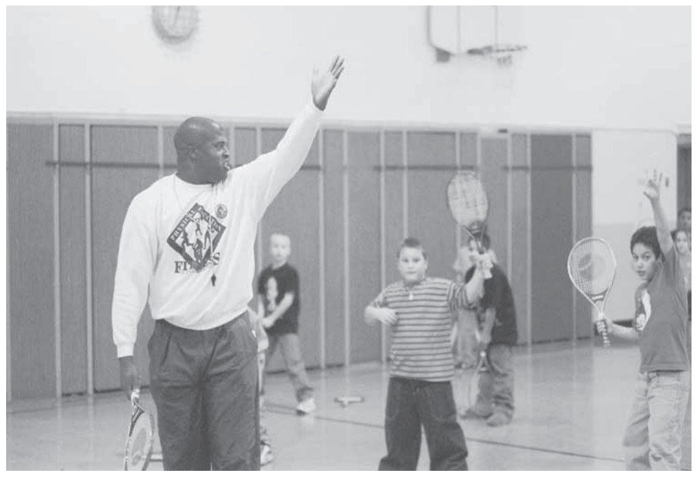</figure>
<p>chiếc máy quay của mình và ghi hình từng em ít nhất một lần. Với chức năng phát lại chậm, việc nhận ra các lỗi về thời điểm và vị trí tương đối dễ dàng. Cuối cùng, thầy chia lớp thành các nhóm bốn em và cho các em chơi trò giao bóng, trong đó mục tiêu là giao bóng ổn định qua lưới về phía một mục tiêu. Sau khi giải thích điều này với cả nhóm, Anthony thêm, “Khi trò chơi bắt đầu, ai muốn đến xem lại video thì cứ cho thầy biết nhé.”</p>
<p>Có lẽ không có gì ngạc nhiên khi Simon là một trong những em đầu tiên xem lại video của mình. “Jenny học được mọi thứ cô ấy biết nhờ xem tôi,” anh nói một cách mỉa mai khi xem lại cú giao bóng đã cải thiện rõ rệt của mình. “Đúng vậy Simon, rõ ràng là mọi người ở đây đã học được rất nhiều từ em hôm nay!” Anthony nói, mỉm cười đầy hiểu ý.</p>
<p>CÂU HỎI PHÂN TÍCH</p>
<p>1. Bạn có thể dùng phản hồi trực quan như thế nào để khuyến khích một nhóm trẻ thử nghiệm các kỹ thuật giao bóng khác nhau, chẳng hạn như những kỹ thuật có thể dùng cho cú giao bóng thứ nhất và thứ hai?</p>
<p>2. Bạn có nghĩ ra cách nào khác để cung cấp phản hồi cho nhiệm vụ này không?</p>
<p>3. Điều gì sẽ xảy ra nếu không ai trong nhóm có thể trình diễn cú giao bóng một cách hiệu quả? Có phải cách duy nhất là Anthony phải tự làm mẫu không?</p>
<p>4. Bạn sẽ làm nổi bật những nguồn thông tin nào trong video để từng người học quan sát?</p>
<p>BÀI TẬP ỨNG DỤNG</p>
<p>Hãy xây dựng một giáo án để dạy trẻ cách đánh cú thuận tay. Hãy xem xét các yếu tố sau:</p>
<p>Giới hạn không gian (chỉ có bốn sân)</p>
<p>Thời gian (90 phút, bao gồm cả thời gian khởi động)</p>
<p>Trình độ khác nhau (ít nhất bốn em là người chơi khá giỏi)</p>
<p>Các trò chơi giúp dạy trẻ chiến thuật khi nào nên đánh cú tấn công và khi nào nên đánh cú phòng thủ</p>
<p>ĐỌC THÊM</p>
<p>Chương 9; Ashford et al. (2006)</p><h2 class="chapter-title">Bảng thuật ngữ</h2><h3>BẢNG THUẬT NGỮ</h3>
<p>huấn luyện thích ứng—Kỹ thuật trong đó độ khó của nhiệm vụ được tăng dần khi hiệu suất được thành thạo. cơ hội hành động—Nhận thức về thông tin theo những gì nó mang lại, mời gọi, hoặc đòi hỏi ở một sinh vật về mặt hành động. giai đoạn liên tưởng—Giai đoạn thứ hai trong mô hình của Fitts. Các liên kết được thiết lập giữa những kết quả dự định và các mẫu hình vận động cụ thể, và những liên kết này trở nên tinh tế hơn khi người học trở nên ổn định hơn. điểm hút—Mẫu hình tổ chức ổn định và có chức năng. giai đoạn tự động—Giai đoạn thứ ba trong mô hình của Fitts. Người học có thể thực hiện một kỹ năng với nỗ lực tinh thần tối thiểu và ít lỗi, và mẫu hình vận động đòi hỏi ít sự tham gia của các liên kết vỏ não hơn, điều được giải thích là dẫn đến sự kiểm soát lớn hơn từ các trung tâm thấp hơn của não. kiểm soát vòng lặp kín—Một dạng kiểm soát vận động dựa trên sự điều chỉnh liên tục bởi phản hồi cảm giác. giai đoạn nhận thức—Giai đoạn đầu tiên trong mô hình của Fitts. Người học dùng các quy tắc đơn giản và các chỉ dẫn bằng lời nói để có được sự hiểu biết cơ bản về cử động và xây dựng một giải pháp cơ bản cho một vấn đề vận động. hệ thống phức tạp—Các hệ thống tích hợp cao được cấu thành từ nhiều bộ phận hoặc hệ thống con tương tác, mỗi bộ phận đều có khả năng ảnh hưởng đến các hệ thống con khác. ràng buộc—Vô số biến số ảnh hưởng đến vùng không gian pha mà một hệ thống động lực ghé thăm. Các ràng buộc vừa giới hạn vừa cho phép các quỹ đạo hành vi khác nhau mà, chẳng hạn, một hệ thống thần kinh sinh học có thể áp dụng. Các ràng buộc có thể là cá nhân, liên quan đến nhiệm vụ, hoặc thuộc môi trường. nhiễu bối cảnh (CI)—Hiệu quả học tập của việc luyện tập ngẫu nhiên nhiều nhiệm vụ vận động thay vì luyện tập cùng một nhiệm vụ theo thứ tự khối. hiệu ứng nhiễu bối cảnh—Tổ chức luyện tập theo khối dường như dẫn đến hiệu suất tốt hơn trong quá trình tiếp thu kỹ năng. Ngược lại, tổ chức luyện tập ngẫu nhiên có lợi cho việc học một kỹ năng. lý thuyết dựa trên kiểm soát (COBALT)—Một quan điểm tính toán thần kinh đề xuất rằng não tạo ra các loại biểu diễn khác nhau để thông tin quan trọng có thể được biểu diễn và lưu trữ mang tính biểu tượng. Nhờ vậy, người học có thể tạo ra các mô hình tinh thần về thế giới và đưa vào các danh mục dựa trên đặc điểm của môi trường, ý định, và các mẫu hình không gian hoặc thời gian của sự kích hoạt cơ. cấu trúc phối hợp—Sự phối hợp hay trật tự tạm thời nảy sinh, dưới dạng một sự hiệp đồng, giữa các thành phần của hệ thống trong hành vi hướng đến mục tiêu. Các cấu trúc phối hợp được thiết kế cho một mục đích hoặc hoạt động cụ thể, chẳng hạn như khi các nhóm cơ được tạm thời lắp ráp thành các đơn vị gắn kết để đạt được các mục tiêu nhiệm vụ cụ thể. suy biến—Đề cập đến ý tưởng rằng các bộ phận khác nhau của hệ thống thần kinh sinh học (ví dụ, cơ, khớp, chi) có thể đạt được các kết quả vận động giống hoặc khác nhau, dẫn đến các mẫu hình phối hợp vận động khác nhau. các bậc tự do (dfs)—Các thành phần độc lập của một hệ thống có thể lắp ráp với nhau theo nhiều cách khác nhau.</p>
<p>lý thuyết hệ thống động lực—Một cách tiếp cận lý thuyết coi người học là một hệ thống phức tạp, thần kinh sinh học được cấu thành từ các bậc tự do hoặc hệ thống con độc lập nhưng tương tác. ràng buộc môi trường—Các ràng buộc là những biến vật lý toàn cục trong tự nhiên, chẳng hạn như ánh sáng xung quanh, nhiệt độ, hoặc độ cao. Một số ràng buộc môi trường mang tính xã hội thay vì vật lý. huấn luyện dựa trên kinh nghiệm—Phương pháp huấn luyện dựa trên vốn kiến thức phong phú và kinh nghiệm mà nhiều huấn luyện viên đã tích lũy trong quá trình tham gia một môn thể thao hoặc hoạt động thể chất cụ thể. cách tiếp cận tạo điều kiện—Dựa trên ý tưởng truyền thống về các liên kết kích thích–đáp ứng, cách tiếp cận này nhấn mạnh việc tái tạo các mẫu hình vận động cụ thể. mô hình hóa tiến—Việc ánh xạ các lệnh vận động đến các hệ quả cảm giác liên quan của một cử động. Nằm trong não, biểu diễn này được dùng để dự đoán các hệ quả cảm giác của các cử động đã được lên kế hoạch. sự làm quen—Sự cần thiết phải có một giai đoạn khởi động sau khi người ta đã rời luyện tập hoặc huấn luyện một thời gian. Sự làm quen giúp giảm thời điểm vận động kém chính xác và sự phối hợp kém, đồng thời giảm số lỗi mắc phải trong khi thực hiện. homunculus—Một cơ chế kiểm soát trung tâm trong não được cho là chịu trách nhiệm về việc tạo ra, lựa chọn, và định thời của các chương trình vận động tổng quát. học vận động tiềm ẩn—Việc học xảy ra khi người ta không được chính thức tiếp xúc với các chỉ dẫn bằng lời nói để thực hiện một cử động theo một cách cụ thể. động lực học nội tại—Tập hợp các khả năng vận động mà người ta mang theo khi học một kỹ năng mới. bất biến—Khi một cấu trúc thiết yếu bên dưới vẫn không đổi bất chấp những thay đổi trong cấu trúc bề mặt. mô hình hóa ngược—Mô hình về cách CNS kiểm soát một hành động bằng cách dự đoán các hệ quả cảm giác của một cử động và xác định các lệnh vận động cần thiết để đạt được nó. tính bán ổn định—Một dạng ổn định động trong hệ thống sinh học, trong đó các bộ phận của hệ thống gắn kết lại với nhau để đạt được các mục tiêu vận động chức năng trong khi vẫn duy trì bản sắc riêng biệt và tính linh hoạt trong hoạt động. huấn luyện theo phương pháp—Phương pháp huấn luyện mà ở đó người thực hành phân rã và dạy các kỹ năng vận động theo cách cơ giới nhằm lắp ghép nên kỹ thuật đúng hoặc kỹ thuật sách giáo khoa. nơ-ron gương—Các nơ-ron trong não được kích hoạt khi người học thực hiện một hành động hoặc quan sát người khác thực hiện một hành động. trình diễn mẫu—Quá trình mà người học quan sát rồi cố gắng tái tạo một hành vi mong muốn do người khác biểu diễn. mô-men quán tính—Tích của khối lượng của một dụng cụ và bán kính quay (tức là,</p>
<p>I = mr2). giả định lợi ích đơn điệu—Lượng thời gian một người dành cho luyện tập có chủ đích có liên hệ đơn điệu với hiệu suất đạt được của người đó. phát triển vận động—Những thay đổi hành vi thường được cho là do sự tăng trưởng và trưởng thành. học vận động—Những thay đổi hành vi thường được cho là do luyện tập hoặc kinh nghiệm. chương trình vận động—Một khái niệm trừu tượng mô tả một tập hợp các lệnh vận động được lưu trữ trong CNS. sư phạm phi tuyến—Một nền tảng lý thuyết coi các hệ thống học tập là các hệ thống động lực phi tuyến. Quan điểm này chủ trương rằng các thuộc tính quan sát được của hệ thống vận động con người dưới góc độ động lực tạo nền tảng cho một khung sư phạm có nguyên tắc. Đặc biệt, sư phạm phi tuyến chủ trương thao tác các ràng buộc then chốt đối với người học trong quá trình luyện tập.</p>
<p>không gian pha số—Tất cả các trạng thái tổ chức giả định mà một hệ thống động lực có thể tiến hóa tới. học qua quan sát—Một quá trình mà qua đó một người tiếp nhận, và đôi khi chấp nhận hoặc tái tạo các mẫu hình hành vi hoặc hành động của người khác như hệ quả trực tiếp của việc quan sát các hành vi đó. kiểm soát vòng lặp mở—Một chế độ điều hòa vận động chịu trách nhiệm kiểm soát các cử động nhanh, mang tính bắn, trong đó một tập hợp hướng dẫn hành động được lên kế hoạch từ trước có thể được thực hiện mà không cần điều chỉnh từ phản hồi. ràng buộc cơ thể—Các ràng buộc đề cập đến đặc điểm cá nhân của người học, chẳng hạn như gen, chiều cao, cân nặng, tỉ lệ cơ–mỡ, sức bền của các khớp thần kinh trong não, nhận thức, động lực, và cảm xúc. luyện tập một phần nhiệm vụ—Luyện tập một tập hợp con các thành phần của nhiệm vụ như bước chuẩn bị cho việc luyện tập hoặc thực hiện toàn bộ nhiệm vụ. cảnh quan nhận thức–vận động—Phạm vi các điểm hút mà người thực hiện cần phối hợp hành động của mình với môi trường để thực hiện kỹ năng một cách hiệu quả. chuyển tiếp pha—Sự dịch chuyển các vi thành phần của hệ thống sang một trạng thái tổ chức khác.</p>
<p>Các chuyển tiếp pha tạo nền tảng cho sự tự tổ chức trong các hệ thống phức tạp. luật lũy thừa của luyện tập—Một luật đơn giản nói rằng luyện tập cải thiện hiệu suất, dù có một giới hạn trên đối với mức cải thiện có thể đạt được khi tăng lượng luyện tập. chuyển động tương đối—Các mối quan hệ không gian–thời gian cụ thể giữa và bên trong các chi, cũng như sự tổ chức các chi của người thực hiện liên quan đến môi trường xung quanh. duy trì—Với những điều kiện luyện tập phù hợp, con người thường có thể duy trì một số bản chất của một mẫu hình vận động bất kể loại nhiệm vụ họ thực hiện. quy trình quét—Một kỹ thuật thực nghiệm yêu cầu người tham gia cố ý thay đổi một thông số thứ tự theo từng bước. Khi hành vi của thông số thứ tự được theo dõi, người quan sát về thực chất đang quét cảnh quan nhận thức–vận động để tìm các vùng ổn định và không ổn định. lược đồ—Các quy tắc liên quan đến việc thực hiện một đáp ứng vận động có liên kết với phản hồi nhận được trong và sau khi thực hiện. lý thuyết lược đồ—Một lý thuyết xử lý thông tin cho rằng một chương trình vận động tổng quát là một biểu diễn trừu tượng chứa các đặc điểm chung cho một lớp hành động nhất định. tự tổ chức—Khả năng của một hệ thống dùng năng lượng môi trường để đạt được một cách tự phát các trạng thái ổn định của tổ chức chức năng. Các hệ thống tự tổ chức có khuynh hướng hình thành mẫu hình dưới các ràng buộc. tiếp thu kỹ năng—Các quá trình bên trong mang lại những thay đổi tương đối bền vững trong khả năng vận động của người học. Tiếp thu kỹ năng đòi hỏi người học tạo ra kết quả nhất quán bằng cách tương tác hiệu quả với môi trường, phát hiện thông tin quan trọng, và định thời đáp ứng của họ phù hợp. ràng buộc nhiệm vụ—Các ràng buộc thường cụ thể hơn đối với những ngữ cảnh thực hiện nhất định và bao gồm mục tiêu nhiệm vụ, các quy tắc liên quan đến một hoạt động cụ thể, dụng cụ hoặc công cụ liên quan đến hoạt động, bề mặt, khu vực thực hiện, và các vạch ranh giới. tau—Thông tin quang học được xác định trên võng mạc về thời gian còn lại đến lúc chạm (Tc) giữa điểm quan sát và một vật thể đang tiến đến. Dạy trò chơi để hiểu (TGfU)—Mô hình nổi bật nhất của thực hành sư phạm trong giảng dạy các trò chơi đồng đội. TGfU giúp người học tiếp thu các khía cạnh chiến thuật và kỹ năng vận động của trò chơi thông qua việc chơi các phiên bản biến đổi của trò chơi có mục tiêu. Một trọng tâm chính của TGfU là phát triển sự hiểu biết về chiến thuật trước khi phát triển các kỹ năng vận động thành phần.</p>
<p>chuyển giao—Ảnh hưởng của việc luyện tập hoặc thực hiện trước đó một kỹ năng đối với việc tiếp thu một kỹ năng mới. biến thể—Một dòng năng lượng được coi là biến thể khi có một số yếu tố của cấu trúc bề mặt trong mảng thông tin thay đổi khi người thực hiện di chuyển liên quan đến các bề mặt, vật thể, hoặc sự kiện.</p><h2 class="chapter-title">Tài liệu tham khảo</h2><h3>TÀI LIỆU THAM KHẢO</h3>
<p>Abernethy, B. (2001). Acquisition of skill. In F.S. Pyke (Ed.), Better coaching: Advanced coach’s manual (2nd ed., pp. 161-170). Lower Mitcham, Australia: Human Kinetics. Abernethy, B., Maxwell, J.P., Masters, R.S.W., van der Kamp, J., &amp; Jackson, R.C. (2007). Atten- tional processes in skill learning and expert performance. In G. Tenenbaum &amp; R. Eklund (Eds.), Handbook of Sport Psychology (3rd ed., pp. 245-265). New York: Wiley. Abraham, A.K., &amp; Collins, D. (1998). Examining and extending research in coach development.</p>
<p>Quest, 50, 59-79. Adams, J.A. (1961). The second facet of forgetting: A review of warm-up decrement. Psycho- logical Bulletin, 58, 256-268. Adams, J.A. (1971). A closed-loop theory of motor learning. Journal of Motor Behavior, 3,</p>
<p>111-150. Aglioti, S., DeSouza, J.F.X., &amp; Goodale, M.A. (1995). Size-contrast illusions deceive the eye but not the hand. Current Biology, 5, 679-685. Al-Abood, S.A., Bennett, S.J., Moreno Hernandez, F., Ashford, D.G., &amp; Davids, K. (2002). Effect of verbal instructions and image size on visual search strategies in basketball free throw shooting. Journal of Sport Sciences, 20, 271-278. Al-Abood, S.A., Davids, K., &amp; Bennett, S.J. (2001). Specificity of task constraints and the effect of visual demonstrations and verbal instructions on skill acquisition. Journal of Motor Behavior, 33, 295-305. Al-Abood, S.A., Davids, K., Bennett, S.J., Ashford, D., &amp; Marin, M.M. (2001). Manipulating rela- tive and absolute motion information during observational learning of an aiming task: Effects of slow-motion and real-time video analysis. Journal of Sports Sciences, 19, 507-520. Alderson, G.J.K., Sully, D.J., &amp; Sully, H.G. (1974). An operational analysis of a one-handed catching task using high speed photography. Journal of Motor Behavior, 6, 217-226. Allard, P., Stokes, I.A.F., &amp; Blanchi, J.-P. (1995). Three-dimensional analysis of human movement. Champaign, IL: Human Kinetics. Alvarez, R., Terrados, N., Ortolano, R., Iglesias-Cubero, G., Reguero, J.R., Batalla, A., et al.</p>
<p>(2000). Genetic variation in the renin-angiotensin system and athletic performance. Euro- pean Journal of Applied Physiology, 82, 117-120. Anderson, D.I., &amp; Sidaway, B. (1994). Coordination changes associated with practice of a soccer kick. Research Quarterly for Exercise and Sport, 65, 93-99. Anderson, J.R. (1982). Acquisition of cognitive skill. Psychological Review, 89, 369-406. Anson, G., Elliott, D., &amp; Davids, K. (2005). Information processing and constraints-based views of skill acquisition: Divergent or complementary? Motor Control, 9, 217-241. Araújo, D., Davids, K., Bennett, S.J., Button, C., &amp; Chapman, G. (2004). Emergence of sport skills under constraint. In A.M. Williams &amp; N.J. Hodges (Eds.), Skill Acquisition in Sport: Research, Theory and Practice (pp. 409-433). London: Routledge, Taylor &amp; Francis. Araújo, D., Davids, K., &amp; Serpa, S. (2005). An ecological approach to expertise effects in decision- making in a simulated sailing regatta. Psychology of Sport and Exercise, 6, 671-692. Arbib, M.A., Érdi, P., &amp; Szentágothai, J. (1998). Neural organization: Structure, function and dynamics. Cambridge, MA: MIT Press. Arutyunyan, G.H., Gurfinkel, V.S., &amp; Mirskii, M.L. (1968). Investigation of aiming at a target.</p>
<p>Biophysics, 14, 1162-1167. Ashford, D., Bennett, S., &amp; Davids, K. (2006) Observational modelling effects for movement dynamics and movement outcome measures across differing task constraints: A meta- analysis. Journal of Motor Behavior, 38, 185-205.</p>
<p>Ashford, D.G., Davids, K., &amp; Bennett, S.J. (2007). Developmental effects influencing observa- tional modelling: A meta-analysis. Journal of Sports Sciences, 25, 547-558. Ayyash, H.F., &amp; Preece, P.M. (2003). Evidence-based treatment of motor co-ordination disorder.</p>
<p>Current Paediatrics, 13(5), 360-364. Baker, J., &amp; Davids, K. (2006). Genetic and environmental constraints on variability in sports performance. In K. Davids, S.J. Bennett, &amp; K.M. Newell (Eds.), Variability in the move- ment system: A multi-disciplinary perspective (pp.109-129). Champaign, IL: Human Kinetics. Ball, K.A., Best, R.J., &amp; Wrigley, T.V. (2003). Body sway, aim point fluctuation and performance in rifle shooters: inter- and intra-individual analysis. Journal of Sports Sciences, 21, 559- 566. Bandura, A. (1962). Social learning through imitation. In M.R. Jones (Ed.), Nebraska sympo- sium on motivation (pp. 211-269). Lincoln, NE: University of Nebraska Press. Bandura, A. (1969). Principles of behaviour modification. New York: Rinehart-Winston. Bandura, A. (1977). Self-efficacy: Toward a unifying theory of behavioral change. Psychologi- cal Review, 84(2), 191-215. Beak, S., Davids, K., &amp; Bennett, S.J. (2000). One size fits all? Sensitivity to moment of inertia information from tennis rackets in children and adults. In S.J. Haake &amp; A. Coe (Eds.), Tennis science and technology (pp. 109-118). London: Blackwell. Beak, S., Davids, K., &amp; Bennett, S.J. (2002). Child’s play: Children’s sensitivity to haptic infor- mation in perceiving affordances of rackets for striking a ball. In J.E. Clark &amp; J. Humphreys (Eds.), Motor development: research and reviews (Vol. 2, pp. 120-141). Reston, VA: NASPE. Beek, P.J. (2000). Toward a theory of implicit learning in the perceptual-motor domain. Inter- national Journal of Sport Psychology, 31, 547-554. Beek, P., Jacobs, D., Daffertshofer, A., &amp; Huys, R. (2003). Expert performance in sport: views from the joint perspectives of ecological psychology and dynamical systems theory. In J. Starkes &amp; K.A. Ericsson (Eds.), Expert performance in sports: Advances in research on sport expertise (pp. 321-344). Champaign, IL: Human Kinetics. Bennett, S., Davids, K., &amp; Craig, T. (1999). The effect of temporal and informational constraints on one-handed catching performance. Research Quarterly for Exercise and Sport, 70(2), 206-211. Bernstein, N.A. (1967). The control and regulation of movements. London: Pergamon</p>
<p>Press. Berthouze, L., &amp; Lungarella, M. (2004). Motor skill acquisition under environmental pertur- bations: on the necessity of alternate freezing and freeing degrees of freedom. Adaptive Behavior, 12, 47-64. Bingham, G. (1988). Task-specific devices and the perceptual bottleneck. Human Movement</p>
<p>Science, 7, 225-264. Bootsma, R.J. (1998). Ecological movement principles and how much information matters.</p>
<p>Paper presented at the Second Symposium of the Institute for Fundamental and Clinical Human Movement Sciences, Amsterdam. Bootsma, R.J., Bakker, F.C., van Snippenberg, F.J., &amp; Tdlohreg, C.W. (1992). The effects of anxiety on perceiving the reachability of passing objects. Ecological Psychology, 4, 1-16. Bootsma, R.J., Fayt, V., Zaal, F.T.J.M., &amp; Laurent, M. (1997). On the information-based regula- tion of movement: What Wann (1996) may want to consider. Journal of Experimental Psychology: Human Perception and Performance, 23, 1282-1289. Bootsma, R.J., Houbiers, M., Whiting, H.T.A., &amp; van Wieringen, P.C.W. (1991). Acquiring an attacking forehand drive: The effects of static and dynamic environemtal conditions. Research Quarterly for Exercise and Sport, 62, 276-284.</p>
<p>Bootsma, R.J., &amp; van Wieringen, P.C.W. (1990). Timing an attacking forehand drive in table tennis. Journal of Experimental Psychology: Human Perception and Performance, 16, 21-29. Brady, F. (1998). A theoretical and empirical review of the contextual interference effect and the learning of motor skills. Quest, 50, 266-293. Brisson, T.A., &amp; Alain, C. (1996). Should common optimal movement patterns be identified as the criterion to be achieved? Journal of Motor Behavior, 28, 211-223. British Government (1999). Saving Lives: Our Healthier Nation. London: The Stationery</p>
<p>Office. Broderick, M.P., &amp; Newell, K.M. (1999). Coordination patterns in ball bouncing as a function of skill. Journal of Motor Behavior, 31, 165-188. Bryan, W.L., &amp; Harter, N. (1897). Studies in the physiology and psychology of the telegraphic language. Psychological Review, 4, 27-53. Bullock, D., &amp; Grossberg, S. (1989). VITE and FLETE: Neural modules for trajectory formation and tension control. In W. Hershberger (Ed.), Volitional action (pp. 253-297). Amsterdam: North Holland. Bunker, D., &amp; Thorpe, R. (1982). A model for the teaching of games in the secondary school.</p>
<p>Bulletin of Physical Education, 10, 9-16. Bunker, D., &amp; Thorpe, R. (1986). Is there a need to reflect on our games teaching? In R. Thorpe,</p>
<p>D. Bunker, &amp; L. Almond (Eds.), Rethinking games teaching (pp. 25-33). Loughborough, England: Loughborough University of Technology. Button, C. (2002). Auditory information and the co-ordination of one-handed catching. In K.</p>
<p>Davids, G. Savelsbergh, S. Bennett, &amp; J. van der Kamp (Eds.), Interception actions in sport: Information and Movement (pp. 184-194). London: Taylor &amp; Francis. Button, C., Bennett, S. J., &amp; Davids, K. (2001). Grasping a better understanding of the intrin- sic dynamics of rhythmical and discrete prehension. Journal of Motor Behavior, 33(1), 27-36. Button, C., Bennett, S.J., Davids, K., &amp; Stephenson, J.M. (1999, 9 September). The effects of practicing with a small, heavy soccer ball on the development of soccer related skills. Paper presented at the British Association of Sports and Exercise Sciences Annual Confer- ence, Leeds, UK. Button, C., &amp; Davids, K. (2004). Acoustic information for timing. In H. Hecht &amp; G.J.P. Savels- bergh (Eds.), Time-to-contact: Advances in psychology (pp. 355-370). North-Holland: Elsevier. Button, C., Davids, K., Bennett, S.J., &amp; Tayler, M. (2000). Mechanical perturbation of the wrist during one-handed catching. Acta Psychologica, 105, 1, 9-30. Button, C., Davids, K., &amp; Schöllhorn, W. (2006). Co-ordination profiling of movement sys- tems. In K. Davids, S. Bennett, &amp; K.M. Newell (Eds.), Variability in the movement system: A multi-disciplinary perspective (pp. 133-152). Champaign, IL: Human Kinetics. Button, C., Macleod, M., Sanders, R., &amp; Coleman, S. (2003). Examining movement variability in the throwing action at different skill levels. Research Quarterly for Exercise and Sport, 74(3), 257-269. Button, C., &amp; Pepping, G-J. (2002). Enhancing skill acquisition in golf: Some key principles.</p>
<p>Retrieved May 14, 2002, from www.coachesinfo.com. Button, C., Smith, J., &amp; Pepping, G.-J. (Eds.). (2005). The influential role of task constraints in acquiring football skills. London, UK: Routledge, Taylor &amp; Francis. Calvo-Merino, B., Glaser, D.E., Grèzes, J., Passingham, R.E., &amp; Haggard, P. (2005). Action observation and acquired motor skills: An fMRI study with expert dancers. Cerebral Cortex, 15(8), 1243-1249.</p>
<p>Capel, S. (2000). Approaches to teaching games. In S. Capel &amp; S. Piotrowski (Eds.), Issues in</p>
<p>Physical Education (pp. 81-98). Cornwall, UK: TJ International. Carello, C., Thuot, S., &amp; Turvey, M.T. (2000). Aging and the perception of a racket’s sweet spot.</p>
<p>Human Movement Science, 19, 1-20. Carr, G. (1997). Mechanics of sport: A practitioner’s guide. Champaign, IL: Human Kinetics. Carr, J.H., &amp; Shepherd, R.B. (1998). Neurological rehabilitation: Optimizing motor perfor- mance (2nd ed.). Amsterdam: Elsevier Health Sciences. Carson, R.G., Goodman, D., Kelso, J.A S., &amp; Elliott, D. (1995). Intentional switching between patterns of interlimb coordination. Journal of Human Movement Studies, 27, 201-218. Chapman, G., Bennett, S.J., &amp; Davids, K. (2001). The effects of equipment constraints on the acquisition of juggling and dribbling in soccer. Communication to 6th Annual Congress of European College of Sports Science (Perspectives and Profiles), Cologne, Germany. Chase, W.G., &amp; Simon, H.A. (1973). Perception in chess. Cognitive Psychology, 4, 55-81. Chen, H.H., Liu, Y.T., Mayer-Kress, G., &amp; Newell, K.M. (2005). Learning the pedalo locomotion task. Journal of Motor Behavior, 37, 247-256. Chow, J.-Y., Davids, K., Button, C., &amp; Koh, M. (2006). Organisation of motor system degrees of freedom during the soccer chip: An analysis of skilled performance. International Journal of Sport Psychology, 37, 207-229. Chow, J.-Y., Davids, K., Button, C., &amp; Koh, M. (in press). Variation in coordination of a discrete multi-articular action as a function of skill level. Journal of Motor Behavior. Chow, J-Y., Davids, K., Button, C., Shuttleworth, R., Renshaw, I., &amp; Araújo, D. (2006). Nonlinear pedagogy: A constraints-led framework to understanding emergence of game play and skills. Nonlinear Dynamics, Psychology and Life Sciences, 10, 71-103. Christina, R.W., &amp; Corcos, D.M. (1998). Coaches guide to teaching sport skills. Champaign,</p>
<p>IL: Human Kinetics. Clark, J.E. (1995). On becoming skillful: Patterns and constraints. Research Quarterly for</p>
<p>Exercise and Sport, 66, 173-183. Clarke, D., &amp; Crossland, J. (1985). Action systems: An introduction to the analysis of com- plex behaviour. London: Methuen. Cobner, D., &amp; Cardiff, M.A. (1980). Auditory perception: A study of its contribution to motor learning and performance. Paper presented at the British Association of Sport Psychology V.9, Bedford, UK. Coleman, S. (1999). Biomechanics and its application for coaching. In N. Cross &amp; J. Lyle (Eds.),</p>
<p>The coaching process (pp. 130-151). Oxford: Butterworth-Heinemann. Corbetta, D., &amp; Vereijken, B. (1999). Understanding development and learning of motor coor- dination in sport: The contribution of dynamic systems theory. International Journal of Sport Psychology, 30(44), 507-530. Court, M.L., Bennett, S.J., Williams, A.M., &amp; Davids, K. (2002). Local stability in coordinated rhythmic movements: Fluctuations and relaxation times. Human Movement Science, 21, 39-60. Court, M.J.L., Bennett, S.J., Williams, A.M., &amp; Davids, K. (2005). Effects of attentional strategies and anxiety constraints on perceptual-motor organisation of rhythmical arm movements. Neuroscience Letters, 384, 17-22. Crossman, E.R.F.W. (1959). A theory of the acquisition of speed-skill. Ergonomics, 2, 153-</p>
<p>166. Curtner-Smith, M.D., Todorov, J.R., McCaughtry, N.A., &amp; Lacon, S.A. (2001). Urban teachers’ use of productive and reproductive teaching styles within the confines of the national cur- riculum for physical education. European Physical Education Review, 7(2), 177-190. Cutting, J.E., &amp; Proffitt, D.R. (1982). The minimum principle and the perception of absolute, common, and relative motions. Cognitive Psychology, 14, 211-246.</p>
<p>Daly, R.M., Bass, S.L., &amp; Finch, C.F. (2001). Balancing the risk of injury to gymnasts: How effec- tive are the countermeasures? British Journal of Sports Medicine, 35(1), 8-18. D’Arripe-Longueville, F., Gernigon, C., Huet, M.L., Cadopi, M., &amp; Winnykamen, F. (2002). Peer tutoring in a physical education setting: Influence of tutor skill level on novice learners’ motivation and performance. Journal of Teaching in Physical Education, 22, 105-123. D’Arripe-Longueville, F., Gernigon, C., Huet, M.L., Winnykamen, F., &amp; Cadopi, M. (2002). Peer- assisted learning in the physical activity domain: Dyad type and gender differences. Journal of Sport and Exercise Psychology, 24, 219-238. Davids, K. (2000). Skill acquisition and the theory of deliberate practice: It ain’t what you do, it’s the way that you do it! Commentary on Starkes, J., “The road to expertise: Is practice the only determinant?” International Journal of Sport Psychology, 31, 461-465. Davids, K., Araújo, D., Button, C., &amp; Renshaw, I. (2007). Degenerate brains, indeterminate behavior and representative tasks: Implications for experimental design in sport psychology research. In G. Tenenbaum &amp; R. Eklund (Eds.), Handbook of Sport Psychology (3rd ed., pp. 224-244). New York: John Wiley &amp; Sons. Davids, K., Araújo, D., &amp; Shuttleworth, R. (2005). Applications of dynamical systems theory to football. In T. Reilly, J. Cabri &amp; D. Araújo (Eds.), Science and football V (pp. 537-550). London: Routledge, Taylor &amp; Francis. Davids, K. &amp; Baker, J. (in press). Genes, environment and sport performance: Why the Nature-</p>
<p>Nurture dualism is no longer relevant. Sports Medicine. Davids, K., Bennett, S., &amp; Newell, K.M. (Eds.). (2006). Movement system variability. Cham- paign, IL: Human Kinetics. Davids, K., Button, C., Araújo, D., Renshaw, I., &amp; Hristovski, R. (2006). Movement models from sports provide representative task constraints for studying adaptive behavior in human movement systems. Adaptive Behavior, 14, 73-94. Davids, K., Glazier, P., Araújo, D., &amp; Bartlett, R. M. (2003). Movement systems as dynamical systems: The role of functional variability and its implications for sports medicine. Sports Medicine, 33, 245-260. Davids, K. &amp; Handford, C.H. (1994). Perception and action in sport: The practice behind the theories. Coaching Focus, 26, 3-5. Davids, K., Handford, C.H., &amp; Williams, A.M. (1994). The natural physical alternative to cognitive theories of motor behaviour: An invitation for interdisciplinary research in sports science? Journal of Sports Sciences, 12, 495-528. Davids, K., Kingsbury, D., Bennett, S.J., &amp; Handford, C. (2001). Information–movement coupling:</p>
<p>Implications for the organisation of research and practice during acquisition of self-paced extrinsic timing skills. Journal of Sports Sciences, 19, 117-127. Davids, K., Savelsbergh, G.J.P., Bennett, S. J., &amp; van der Kamp, J. (2002). Interceptive actions in sport: Information and movement. London: Routledge, Taylor &amp; Francis. Davidson, D.L.W., &amp; Wolpert, D.M. (2003). Motor learning and prediction in a variable environ- ment. Current Opinion in Neurobiology, 13(2), 232-237. Decety, J., &amp; Grèzes, J. (1999). Neural mechanisms subserving the perception of human actions.</p>
<p>Trends in Cognitive Sciences, 3, 172-178. Decety, J., Grèzes, J., Costes, N., Perani, D., Jeannerod, M., Procyk, E., et al. (1997). Brain activity during observation of actions: Influence of action content and subject’s strategy. Brain, 120, 1763-1777. De Koning, J.J., de Groot, G., &amp; van Ingen Schenau, G.J. (1992). Ice friction during speed skat- ing. Journal of Biomechanics, 25(6), 565-571. De Maeght, S., &amp; Prinz, W. (2004). Action induction through action observation. Psychological</p>
<p>Research, 68(2-3), 97-114. den Duyn, N. (1996). Why it makes sense to play games! Sports Coach, Spring issue, 7- 9.</p>
<p>DiPaolo, E. (2002). Spike-timing dependent plasticity for evolved robots. Adaptive Behavior,</p>
<p>10, 243-263. Duchon, A.P. &amp; Warren, W.H. (2002). A visual equalization strategy for locomotor control: Of honeybees, robots and humans. Psychological Science, 13, 272-278. Ebbinghaus, H. (1964). Memory: A contribution to experimental psychology. New York</p>
<p>Dover. Edelman, G.M., &amp; Gally, J.A. (2001). Degeneracy and complexity in biological systems. Pro- ceedings of the National Academy of Science, 98, 13763-13768. Ehrlich, P.R. (2000). Human natures: Genes, cultures, and the human prospect. Washing- ton, DC: Island Press. Ericsson, K.A., Krampe, R.T., &amp; Tesch-Römer, C. (1993). The role of deliberate practice in the acquisition of expert performance. Psychological Review, 100(3), 363-406. Fairweather, M. (1999). Skill learning principles: Implications for coaching practice. In N. Cross</p>
<p>&amp; J. Lyle (Eds.), The coaching process (pp. 113-129). Oxford: Butterworth-Heinemann. Fairweather, M., Button, C., &amp; Rae, I. (2002). A critical examination of motor control and transfer issues in putting. In A. Cochran, M. Farrally, &amp; E. Thain (Eds.), Science and golf IV (pp. 100-112). London: Routledge. Fajen, B., Turvey, M.T. &amp; Riley, M. (in press). Information, affordances, and the control of action in sport. International Journal of Sport Psychology. Fajen, B.R, Warren, W.H., Temizer, S. &amp; Kaelbling, L.P. (2003). A dynamical model of visu- ally-guided steering, obstacle avoidance and route selection. International Journal of Computer Vision, 54, 13-34. Feitosa, M.F., Gaskill, S.E., Rice, T., Rankinen, T., Bouchard, C., Rao, D.C., et al. (2002). Major gene effects on exercise ventilatory threshold: the HERITAGE Family Study. Journal of Applied Physiology, 93, 1000-1006. Fitch, H.L., Tuller, B., &amp; Turvey, M.T. (1982). The Bernstein perspective: III. Tuning of coordina- tive structures with respect to perception. In J.A.S. Kelso (Ed.), Human motor behavior: An introduction (pp. 271-282). Hillsdale, NY: LEA. Fitch, H., &amp; Turvey, M.T. (1978). On the control of activity: Some remarks from an ecological point of view. In D.H. Landers &amp; R.W. Christina (Eds.), Psychology of motor behavior and sport (pp. 3-35). Champaign, IL: Human Kinetics. Fitts, P.M. (1964). Perceptual-motor skills learning. In A.W. Melton (Ed.), Categories of human learning. New York: Academic Press. Fitts, P.M., &amp; Posner, M.I. (1967). Human performance. Belmont, CA: Brooks/Cale. Flash, T., &amp; Sejnowski, T.J. (2001). Computational approaches to motor control. Current</p>
<p>Opinion in Neurobiology, 11(6), 655-662. Fox, P.W., Hershberger, S.L., &amp; Bouchard, T.J. (1996). Genetic and environmental contributions to the acquisition of a motor skill. Nature, 384, 356-358. Gauthier, G.M., Martin, B.J., &amp; Stark, L.W. (1986). Adapted head-and-eye-movement responses to added-head inertia. Aviation, Space &amp; Environmental Medicine, 57(4), 336-342. Gayagay, G., Yu, B., Hambly, B., Boston, T., Hahn, A., Celermajer, D.S., et al. (1998). Elite endurance athletes and the ACE I allele—the role of genes in athletic performance. Human Genetics, 103, 48-50. Gentilucci, M., Chieffi, S., Daprati, E., Saetti, C.M., &amp; Toni, I. (1996). Visual illusion and action.</p>
<p>Neuropsychologia, 34, 369-376. Gesell, A. (1928). Infancy and human growth. New York: Macmillan. Gibson, J.J. (1979). The ecological approach to visual perception. Hillsdale, NJ: Erlbaum. Gleick, J. (1987). Chaos. London: William Heinemann. Goldfield, E.C. (2000). Development of infant action systems and exploratory activity: A tribute to Edward S. Reed. Ecological Psychology, 12(4), 303-318.</p>
<p>Goodale, M.A., Milner, A.D., Jackobson, L.S., &amp; Carey, D.P. (1991). A neurological dissociation between perceiving objects and grasping them. Nature, 349, 154-156. Gordon, D. (2007). Control without hierarchy. Nature, 446, 143. Green, T.D., &amp; Flowers, J.H. (1991). Implicit versus explicit learning processes in a probabilistic, continuous fine-motor catching task. Journal of Motor Behavior, 24(3), 290-300. Griffin, L. L., Brooker, R., &amp; Patton, K. (2005). Working towards legitimacy: two decades of Teach- ing Games for Understanding. Physical Education and Sport Pedagogy, 10, 213-223. Griffin, L. L., Butler, J., Lombardo, B., &amp; Nastasi, R. (2003). An introduction to teaching games for understanding. In J. Butler, L. Griffin, B. Lombardo &amp; R. Nastasi (Eds.), Teaching games for understanding in physical education and sport (pp. 1-9). VA: NASPE Publications. Griffin, L.L., Mitchell, S.A., &amp; Oslin, J.L. (1997). Teaching sports concepts and skills: A tacti- cal games approach. Champaign, IL: Human Kinetics. Guerin, S., &amp; Kunkle, D. (2004). Emergence of constraint in self-organized systems. Nonlinear</p>
<p>Dynamics, Psychology and Life Sciences, 8, 131-146. Haffenden, A.M., &amp; Goodale, M.A. (1998). The effects of pictorial illusion on prehension and perception. Journal of Cognitive Neuroscience, 10, 122-136. Haken, H. (1996). Principles of brain functioning. Berlin: Springer. Haken, H., Kelso, J.A.S., &amp; Bunz, H. (1985). A theoretical model of phase transitions in human hand movements. Biological Cybernetics, 51, 347-356. Hamill, J., Haddad, J.M., Heiderscheit, B.C., van Emmerik, R.E.A., &amp; Li, L. (2006). Clinical relevance of variability in coordination. In K. Davids, S. Bennett, &amp; K. Newell (Eds.), Move- ment system variability (pp. 133-152). Champaign, IL: Human Kinetics. Handford, C., Davids, K., Bennett, S., &amp; Button, C. (1997). Skill acquisition in sport: Some applications of an evolving practice ecology. Journal of Sport Sciences, 15(6), 621-640. Hanisch, C., Konczak, J., &amp; Dohle, C. (2001). The effect of the Ebbinghaus illusion on grasping behaviour of children. Experimental Brain Research, 137(2), 237-245. Harris, L.R., &amp; Jenkin, M. (1998). Vision and action. Cambridge, UK: Cambridge University</p>
<p>Press. Hasan, Z., &amp; Thomas, J.S. (1999). Kinematic redundancy. In M.D. Binder (Ed.), Peripheral and spinal mechanisms in the neural control of movement (Progress in brain research), Vol. 123 (pp. 379-388). Amsterdam: Elsevier. Haywood, K.M. &amp; Getchell, N. (2001). Life span motor development (3rd ed.). Champaign,</p>
<p>IL: Human Kinetics. Haywood, K.M., &amp; Getchell, N. (2005). Life span motor development (4th ed.). Champaign,</p>
<p>IL: Human Kinetics. Hedges, L.V., &amp; Olkin, I. (1985). Statistical methods for meta-analysis. Orlando, FL: Aca- demic Press. Heiderscheit, B.C., Hamill, J., &amp; van Emmerik, R.E.A. (1998). Q-angle influences on the vari- ability of lower extremity coordination during running. Medicine and Science in Sports and Exercise, 31(9), 1313-1319. Hellison, D.R., &amp; Templin, T.J. (1991). A reflective approach to teaching physical education.</p>
<p>Champaign, IL: Human Kinetics. Henderson, S.E. (1992). Clumsiness or developmental co-ordination disorder: A neglected handicap. Current Paediatrics, 2, 158-162. Henderson, S.E., Sugden, D., &amp; Barnette, A.L. (1992). Movement assessment battery for children. London: Psychological Corporation. Henry, F.M., &amp; Rogers, D.E. (1960). Increased response latency for complicated movements and a “memory drum” theory of neuromotor reaction. Research Quarterly, 31, 448-458. Herbert, E.P., &amp; Landin, D. (1994). The effects of learning model and augmented feedback on tennis skill acquisition. Research Quarterly for Exercise and Sport, 65, 250-257.</p>
<p>Herkowitz, J. (1984). Developmentally engineered equipment and playgrounds. In J.R. Thomas</p>
<p>(Ed.), Motor development during childhood and adolescence (pp. 139-173). Minneapolis: Burgess. Hodges, N.J., &amp; Franks, I.M. (2001). Learning a coordination skill: Interactive effects of instruc- tion and feedback. Research Quarterly for Exercise and Sport, 72(2), 132-142. Hodges, N.J., &amp; Franks, I.M. (2002). Modelling coaching practice: the role of instruction and demonstration. Journal of Sports Sciences, 20, 793-811. Hoenkamp, E. (1978). Perceptual cues that determine the labeling of human gait. Journal of</p>
<p>Human Movement Studies, 4, 59-69. Holder, T. (1998). Sources of information in the acquisition and organisation of intercep- tive actions. Unpublished doctoral dissertation, University of Southampton, Southampton, UK. Hopper, T. (2002). Teaching games for understanding: The importance of student emphasis over content emphasis. Journal of Physical Education, Recreation and Dance, 73, 44-48. Horn, R., &amp; Williams, A.M. (2004). Observational learning: Is it time we took another look?</p>
<p>In A.M. Williams &amp; N. Hodges (Eds.), Skill acquisition in sport: Research, theory and practice (pp. 175-206). Abingdon, UK: Routledge. Horn, R., Williams, A.M., &amp; Scott, M.A. (2002). Visual search strategy, movement kinematics and observational learning. Journal of Sports Sciences, 20, 253-269. Horn, R., Williams, A.M., Scott, M.A., &amp; Hodges, N. (2005). Visual search and coordination changes in response to video and point-light demonstrations without KR. Journal of Motor Behavior, 37(4), 265-274. Immink, M.A., &amp; Wright, D.L. (2001). Motor programming during practice conditions high and low in contextual interference. Journal of Experimental Psychology: Human Perception and Performance, 27, 423-437. Iwatsubo, T., Kawamura, S., Miyamoto, K., &amp; Yamaguchi, T. (2000). Numerical analysis of golf club head and ball at various impact points. Sports Engineering, 3, 195-204. Jacobs, D.M., &amp; Michaels, C.F. (2002). On the apparent paradox of learning and realism. Eco- logical Psychology, 14, 127-139. James, W. (1890). Principles of psychology (Vols. 1 and 2). New York: Holt. Janelle, C.M., Barba, D.A., Frehlich, S.G., Tennant, L.K., &amp; Cauraugh, J.H. (1997). Maximizing feedback effectiveness through videotape replay and a self-controlled learning environment. Research Quarterly for Exercise and Sport, 68, 269-279. Janelle, C.M., Champenoy, J.D., Coombes, S.A., &amp; Mousseau, M.B. (2003). Mechanics of atten- tional cueing during observational learning to facilitate motor skill acquisition. Journal of Sports Sciences, 21, 825-838. Jarvis, P., Holford, J. &amp; Griffin, C. (2003). The theory and practice of learning (2nd ed.).</p>
<p>London: Routledge, Taylor &amp; Francis Ltd. Jeannerod, M. (1981). Intersegmental co-ordination during reaching at natural visual objects.</p>
<p>In J. Long &amp; A. Baddeley (Eds.), Attention and performance (Vol. IX) (pp. 153-172). Hillsdale, NJ: Erlbaum. Jeng, S.F., Holt, K.G., Fetters, L., &amp; Certo, C. (1996). Self-optimization of walking in nondisabled children and children with spastic hemiplegic cerebral palsy. Journal of Motor Behavior, 28(1), 15-27. Jette, A.M. (1994). Physical disablement concepts for physical therapy research and practice.</p>
<p>Physical Therapy, 74(5), 380-386. Johansson, G. (1973). Visual perception of biological motion and a model for its analysis. Per- ception and Psychophysics, 14, 201-211. Johansson, G. (1975). Visual motion perception. Scientific American, 232(6), 76-88.</p>
<p>Johansson, G., von Hofsten, G., &amp; Jannson, G. (1980). Event perception. Annual Review of</p>
<p>Psychology, 31, 27-63. Johnston, L.M., Burns, Y.R., Brauer, S.G., &amp; Richardson, C.A. (2002). Differences in postural control and movement performance during goal directed reaching in children with devel- opmental coordination disorder. Human Movement Sciences, 21(5-6), 583-601. Johnston, T.D., &amp; Edwards, L. (2002). Genes, interactions and the development of behaviour.</p>
<p>Psychological Review, 109, 26-34. Kærn, M., Elston, T.C., Blake, W.J., &amp; Collins, J.J. (2005). Stochasticity in gene expression:</p>
<p>From theories to phenotypes. Nature Reviews Genetics, 6, 451-464. Kalkavan, A., &amp; Fazey, J.A. (1995). An investigation of ‘novice’ and ‘expert’ catching performance with only auditory information sources. Journal of Sports Sciences, 13 (61). Kaplan, D., &amp; Glass, L. (1995). Understanding nonlinear dynamics. New York: Springer</p>
<p>Verlag. Kauffman, S.A. (1993). The origins of order: Self-organization and selection in evolution.</p>
<p>N.Y.: Oxford University Press. Kauffman, S.A. (1995). At home in the universe: The search for laws of complexity. London:</p>
<p>Viking. Kawato, M. (1999). Internal models for motor control and trajectory planning. Current Opinion in Neurobiology, 9(6), 718-727. Keele, S.W. (1968). Movement control in skilled motor performance. Psychological Bulletin,</p>
<p>70, 387-403. Keele, S.W., &amp; Posner, M.I. (1968). Processing of feedback in rapid movements. Journal of</p>
<p>Experimental Psychology, 77, 353-363. Keele, S.W., &amp; Summers, J.J. (1976). The structure of motor programs. In G.E. Stelmach (Ed.),</p>
<p>Motor control: Issues and trends (pp. 109-142). New York: Grune and Stratton. Kelso, J.A.S. (1981). Contrasting perspectives on order and regulation in movement. In J. Long</p>
<p>&amp; A. Baddeley (Eds.), Attention and performance IX (pp. 437-458). Hillsdale, NJ: LEA. Kelso, J.A.S. (1984). Phase transitions and critical behavior in human bimanual coordination.</p>
<p>American Journal of Physiology: Regulatory, Integrative and Comparative Physiol- ogy, 15, R1000-R1004. Kelso, J.A.S. (1992). Theoretical concepts and strategies for understanding perceptual-motor skill: From informational capacity in closed systems to self-organization in open, nonequi- librium systems. Journal of Experimental Psychology: General, 121, 260-261. Kelso, J.A.S. (1995). Dynamic patterns: The self-organisation of brain and behaviour.</p>
<p>Cambridge, MA: MIT Press. Kelso, J.A.S. &amp; Engström, D.A. (2006). The complementary nature. Cambridge, MA: Bradford</p>
<p>Books. Kelso, J.A., &amp; Zanone, P.G. (2002). Coordination dynamics of learning and transfer across dif- ferent effector systems. Journal of Experimental Psychology: Human Perception and Performance, 28(4), 776-797. Kirk, D., &amp; MacPhail, A. (2002). Teaching games for understanding and situated learning:</p>
<p>Rethinking the Bunker-Thorpe model. Journal of Teaching in Physical Education, 21, 177-192. Klapp, S.T. (1977). Reaction time analysis of programmed control. Exercise and Sport Sci- ences Reviews, 5, 231-253. Konczak, J. (1990). Toward an ecological theory of motor development: The relevance of the Gibsonian Approach to vision for motor development research. In J. Clark &amp; J. Hum- phrey (Eds.), Advances in motor development research 3 (pp. 201-224). New York: AMS Press.</p>
<p>Konczak, J., Meeuwsen, H., &amp; Cress, M. (1992). Changing affordances in stair climbing: The perception of maximum climbability in young and older adults. Journal of Experimental Psychology: Human Perception and Performance, 18(3), 691-697. Kugler, P.N. (1986). A morphological perspective on the origin and evolution of move- ment patterns. In W. Wade &amp; H.T.A. Whiting (Eds.), Motor development in children: Aspects of coordination and control (pp. 459-525). Dordrecht, Netherlands: Martinus Nijhoff. Kugler, P.N., Kelso, J.A.S., &amp; Turvey, M.T. (1982). On the control and coordination of naturally developing systems. In J.A.S. Kelso &amp; J.E. Clark (Eds.), The development of movement coordination and control (pp. 5-78). New York: Wiley. Kugler, P.N., Shaw, R.E., Vincente, K.J., &amp; Kinsella-Shaw, J. (1990). Inquiry into intentional systems: I. Issues in ecological physics. Psychological Research, 52(2-3), 98-121. Kugler, P.N., &amp; Turvey, M.T. (1987). Information, natural law, and the self-assembly of rhythmic movement. Hillsdale, NJ: Erlbaum. Lashley, K.S. (1917). The accuracy of movement in the absence of excitation from the moving organ. American Journal of Physiology, 43, 169-194. Latash, M.L. (1996). The Bernstein problem: How does the central nervous system make its choices? In M.L. Latash &amp; M.T. Turvey (Eds.), Dexterity and its development (pp. 277- 304). Mahwah, NJ: LEA. Latash, M.L. (2000). There is no motor redundancy in human movements. There is motor abundance. Motor Control, 4, 259-261. Laurent, M., Montagne, G., &amp; Durey, A. (1996). Binocular invariants in interceptive tasks: A directed perception approach. Perception, 25, 1437-1450. Lebed, F. (2007). System approach to games and competitive playing. European Journal of</p>
<p>Sport Science, 6, 33-42. Lee, D.N. (1976). A theory of visual control of braking based on information about time-to- collision. Perception, 5, 437-459. Lee, D.N. (1990). Getting around with light or sound. In R. Warrent &amp; A.H. Wertheim (Eds.),</p>
<p>Perception and control of self-motion (pp. 487-505). Hillsdale, NJ: Erlbaum. Lee, D.N., &amp; Lishman, R. (1975). Visual proprioceptive control of stance. Journal of Human</p>
<p>Movement Studies, 1, 87-95. Lee, T.D., Blandin, Y., &amp; Proteau, L. (1996). Effects of task instructions and oscillation frequency on bimanual coordination. Psychology Research, 59, 100-106. Lee, T.D., Chamberlin, C.J., &amp; Hodges, N.J. (2001). Practice. In B. Singer, H. Hausenblas,</p>
<p>&amp; C. Jannelle (Eds.), Handbook of sport psychology (2nd ed., pp. 115-143). New York: Wiley. Lee, T.D., &amp; Magill, R.A. (1985). Can forgetting facilitate skill acquisition? In D. Goodman, R.B.</p>
<p>Wilberg, &amp; I.M. Franks (Eds.), Differing perspectives in motor learning, memory and control (pp. 3-22). Amsterdam: North-Holland. Lewontin, R. (2000). It ain’t necessarily so: The dream of the human genome and other illusions. London: Granta Books. Liao, C., &amp; Masters, R.S.W. (2001). Analogy learning: A means to implicit motor learning.</p>
<p>Journal of Sports Sciences, 19, 307-319. Liu, Y.-T., Mayer-Kress, G., &amp; Newell, K.M. (2006). Qualitative and quantitative change in the dynamics of motor learning. Journal of Experimental Psychology: Human Perception and Performance, 32, 380-393. Lyle, J. (2002). Sports coaching concepts: A framework for coaches’ behaviour. Abingdon,</p>
<p>UK: Routledge. Magill, R.A. (2006). Motor learning: Concepts and applications (8th ed.). New York:</p>
<p>McGraw-Hill.</p>
<p>Magill, R.A., &amp; Schoenfelder-Zohdi, B.G. (1996). A visual model and knowledge of performance as sources of information for learning a rhythmic gymnastics skill. International Journal of Sport Psychology, 27, 7-22. Maraj, B.K.V. (2003). Perceptual judgments for stair climbing as a function of pitch angle.</p>
<p>Research Quarterly for Exercise and Sport, 74(3), 248-256. Marisi, D.Q. (1977). Genetic and extragenetic variance in motor performance. Acta Genetica</p>
<p>Medica, 26, 3-4. Masters, R.S.W. (1992). Knowledge, knerves and know-how: The role of explicit versus implicit knowledge in the breakdown of a complex motor skill under pressure. British Journal of Psychology, 83, 343-358. Masters, R., Law, J., &amp; Maxwell, J. (2002). Implicit and explicit learning in interceptive actions.</p>
<p>In K. Davids, G. Savelsbergh, S.J. Bennett, &amp; J. van der Kamp (Eds.), Interceptive actions in sport: Information and movement (pp. 126-143). London: Routledge. Mataríc, M. (1998). Behavior-based robotics as a tool for synthesis of artificial behavior and analysis of natural behavior. Trends in Cognitive Sciences, 2, 82-87. Maxwell, J. P., Masters, R. S. W., Kerr, E., &amp; Weedon, E. (2001). The implicit benefit of learning without errors. Quarterly Journal of Experimental Psychology, 54A, 1049-1068. McCullagh, P., &amp; Weiss, M. R. (2001). Modeling: Considerations for motor skill performance and psychological responses. In R.N. Singer, H.A. Hasenblas, &amp; C.M. Janelle (Eds.), Handbook of sport psychology (2nd ed., pp. 205-238). New York: Wiley. McDonald, P.V., Oliver, S.K., &amp; Newell, K.M. (1995). Perceptual-motor exploration as a function of biomechanical and task constraints. Acta Psychologica, 88, 127-166. McGarry, T., Anderson, D.I., Wallace, S.A., Hughes, M.D., &amp; Franks, I.M. (2002). Sport competi- tion as a dynamical self-organizing system. Journal of Sports Sciences, 20(10), 771-781. McGraw, M.B. (1943). The neuromuscular maturation of the human infant. New York:</p>
<p>Columbia University Press (Reprinted by Hafner, 1963). McMorris, T. (1998). Teaching Games for Understanding: Its contribution to the knowledge of skill acquisition from a motor learning perspective. European Journal of Physical Education, 3, 65-74. Mechsner, F., Kerzel, D., Knoblich, G., &amp; Prinz, W. (2001). Perceptual basis of bimanual coor- dination. Nature, 414, 69-73. Michaels, C.F. (1998). The ecological/dynamical approach, manifest destiny and a single movement science. In A.A. Post, J.R. Pijpers, P. Bosch, &amp; M.S.J. Boschker (Eds.), Models in human movement sciences (pp. 65-68). Amsterdam: Institute for Fundamental and Clinical Human Movement Sciences. Michaels, C.F., &amp; Beek, P. (1995). The state of ecological psychology. Ecological Psychology,</p>
<p>7, 259-278. Michaels, C.F., &amp; Carello, C. (1981). Direct perception. Englewood Cliffs, NJ: Prentice Hall. Michels, L., Lappe, M., Vaina, L.M., Pelphrey, K.A., Mitchell, T.V., McKeown, M.J., et al. (2005).</p>
<p>Visual areas involved in the perception of human movement from dynamic form analysis. Neuroreport, 16(10), 1037-1041. Milner, A.D., &amp; Goodale, M.A. (1995). The visual brain in action. Oxford: Oxford University</p>
<p>Press. Milner, A.D., Perrett, D.I., Johnston, R.S., Benson, P.J., Jordan, T.R., Heeley, D.W., et al. (1991).</p>
<p>Perception and action in ‘visual form agnosia’. Brain, 114, 39-49. Missitzi, J., Geladas, N., &amp; Klissouras, V. (2004). Heritability in neuromuscular coordination:</p>
<p>Implications for motor control strategies. Medicine and Science in Sports and Exercise, 36, 233-240. Mitra, S., Amazeen, P.G., &amp; Turvey, M.T. (1998). Intermediate motor learning as decreasing active (dynamical) degrees of freedom. Human Movement Science, 17(1), 17-65.</p>
<p>Mononen, K., Vitasalo, J.T., Kontinnen, N., &amp; Era, P. (2003). The effects of augmented kinematic feedback on motor skill learning in rifle shooting. Journal of Sports Sciences, 21(10), 867-876. Montagne, G., Fraisse, F., Ripoll, H., &amp; Laurent, M. (2000). Perception–movement coupling in an interceptive task: First-order time-to-contact as an input variable. Human Movement Science, 19, 59-72. Montagne, G., Laurent, M., Durey, A., &amp; Bootsma, R.J. (1999). Movement reversals in ball catching. Experimental Brain Research, 129, 87-92. Montgomery, H.E., Clarkson, P., Barnard, M., Bell, J.D., Brynes, A.E., Dollery, C.M., et al. (1999).</p>
<p>Angiotensin-converting enzyme gene insertion/deletion polymorphism and response to physical training. Lancet, 353, 541-545. Montgomery, H.E., Marshall, R., Hemingway, H., Myerson, S., Clarkson, P., Dollery, C.M., et al.</p>
<p>(1998). Human gene for physical performance. Nature, 393, 221-222. Mon-Williams, M., Tresilian, J.R., &amp; Wann, J.P. (1999). Perceiving limb position in normal and abnor- mal control: An equilibrium point perspective. Human Movement Science, 18, 397-419. Muchisky, M., Gershkoff-Cole, L., Cole, E., &amp; Thelen, E. (1996). The epigenetic landscape revisited: A dynamical interpretation. In C. Rovee-Collier &amp; L.P. Lipsitt (Eds.), Advances in infancy research (pp. 121-160). Norwood, NJ: Ablex. Muellbacher, W., Ziemann, U., Wissel, J., Dang, N., Kofler, M., Facchini, S., et al. (2002). Early consolidation in human motor cortex. Nature, 415, 640-643. Müller, H., &amp; Sternad, D. (2004). Decomposition of variability in the execution of goal-oriented tasks: Three components of skill improvements. Journal of Experimental Psychology: Human Perception and Performance, 30(1), 213-233. Mullineaux, D.R., Bartlett, R.M., &amp; Bennett, S. (2001). Research design and statistics in bio- mechancis and motor control. Journal of Sports Sciences, 19, 739-760. Myerson, S., Hemingway, H., Budget, R., Martin, J., Humphries, S.E., &amp; Montgomery, H.E.</p>
<p>(1999). Human angiotensin I-converting enzyme gene and endurance performance. Journal of Applied Physiology, 87, 1313-1316. Naylor, J., &amp; Briggs, G. (1978). Effects of task complexity and task organization on the rela- tive efficiency of part and whole training methods. Journal of Experimental Psychology: Human Perception and Performance, 65, 217-244. Nazarov, I.B., Woods, D.R., Montgomery, H.E., Shneider, O.V., Kazakov, V.I., Tomilin, N.V., et al.</p>
<p>(2001). The angiotensin converting enzyme I/D polymorphism in Russian athletes. European Journal of Human Genetics, 9, 797-801. Netelenbos, J.B., &amp; Savelsbergh, G.J. (2003). Children’s search for targets located within and beyond the field of view: Effects of deafness and age. Perception, 32(4), 485-497. Newell, A., &amp; Rosenbloom, P.S. (1981). Mechanisms of skill acquisition and the law of practice.</p>
<p>In J.R. Anderson (Ed.), Cognitive skills and their acquisition (pp. 1-55). Hillsdale, NJ: Erlbaum. Newell, K.M. (1985). Coordination, control and skill. In D. Goodman, R.B. Wilberg, &amp; I.M. Franks</p>
<p>(Eds.), Differing perspectives in motor learning, memory, and control (pp. 295-317). Amsterdam: Elsevier Science. Newell, K.M. (1986). Constraints on the development of coordination. In M.G. Wade &amp; H.T.A.</p>
<p>Whiting (Eds.), Motor development in children: Aspects of coordination and control (pp. 341-360). Dordrecht, Netherlands: Martinus Nijhoff. Newell, K.M. (1989). On task and theory specificity. Journal of Motor Behavior, 21, 92-96. Newell, K.M. (1991). Motor skill acquisition. Annual Review of Psychology, 42, 213-237. Newell, K.M. (1996). Change in movement and skill: Learning, retention and transfer. In M.L.</p>
<p>Latash &amp; M.T. Turvey (Eds.), Dexterity and its development (pp. 393-430). Mahwah, NJ: Erlbaum.</p>
<p>Newell, K.M. (2003). Schema theory: Retrospectives and prospectives. Research Quarterly for Exercise and Sport, 74, 383-388. Newell, K.M., Broderick, M.P., Deutsch, K.M., &amp; Slifkin, A.B. (2003). Task goals and change in dynamical degrees of freedom with motor learning. Journal of Experimental Psychology: Human Perception and Performance, 29(2), 379-387. Newell, K.M., &amp; Corcos, D.M. (1993). Issues in variability and motor control. In K.M. Newell</p>
<p>&amp; D.M. Corcos (Eds.), Variability and motor control (pp. 1-12). Champaign, IL: Human Kinetics. Newell, K.M., Deutsch, K.M., &amp; Morrison, S. (2000). On learning to move randomly. Journal of Motor Behavior, 32(3), 314-320. Newell, K.M., Deutsch, K.M., Sosnoff, J.J., &amp; Mayer-Kress, G. (2006). Variability in motor output as noise: A default and erroneous proposition. In K. Davids, S. Bennett, &amp; K.M. Newell (Eds.), Movement system variability (pp. 3-24). Champaign, IL: Human Kinetics. Newell, K.M., Kugler, P.N., Emmerik, R.E.A.v., &amp; McDonald, P.V. (1989). Search strategies and the acquisition of coordination. In S.A. Wallace (Ed.), Perspectives on the coordination of movement (pp. 85-122). Amsterdam: Elsevier Science. Newell, K.M., Liu, Y.-T., &amp; Mayer-Kress, G. (2001). Time scales in motor learning and develop- ment. Psychological Review, 108(1), 57-82. Newell, K.M., Liu,Y.-T., &amp; Mayer-Kress, G. (2005). Learning in the brain-computer interface:</p>
<p>Insights about degrees of freedom and degeneracy from a landscape model of motor learn- ing. International Quarterly of Cognitive Science, 6, 37-47. Newell, K.M., &amp; McDonald, P.V. (1991). Practice: A search for task solutions. In R. Christina</p>
<p>&amp; H.M. Eckert (Eds.), American Academy of Physical Education Papers: Enhancing human performance in sport: New concepts and developments (pp. 51-60). Champaign, IL: Human Kinetics. Newell, K.M., Morris, L.R., &amp; Scully, D.M. (1985). Augmented information and the acquisition of skill in physical activity. In R. Terjung (Ed.), Exercise and sport science reviews (Vol. 13, pp. 235-261). New York: Macmillan. Newell, K.M. &amp; Rovegno, I. (1990). Commentary-Motor learning: theory and practice. Quest,</p>
<p>42, 184-192. Newell, K.M., &amp; Slifkin, A.B. (1998). The nature of movement variability. In J.P. Piek (Ed.), Motor behavior and human skill: A multidisciplinary perspective (pp. 143-160). Champaign, IL: Human Kinetics. Newell, K.M., &amp; Vaillancourt, D. (2001). Dimensional change in motor learning. Human Move- ment Science, 20, 695-715. New Zealand Government. (2003). Healthy Eating-Healthy Action (Oranga Kai- Oranga Pumau):</p>
<p>A Strategic Framework. Ministry of Health, NZ: Wellington. Niemeijer, A.S., Smits-Engelsman, B.C.M., Reynders, K., &amp; Schoemaker, M.M. (2003). Verbal actions of physiotherapists to enhance motor learning in children with DCD. Human Move- ment Science, 22(4), 567-581. Nouritt, D., Délignières, D., Caillou, N., Deschamps, T., &amp; Lauriot, B. (2003). On discontinui- ties in motor learning: a longitudinal study of complex skill acquisition on a ski-simulator. Journal of Motor Behavior, 35, 151-170. Ollis, S., Button, C., &amp; Fairweather, M. (2005). The influence of professional expertise and task complexity upon the potency of the CI effect. Acta Psychologica, 118, 229- 244. Paine, R.W. &amp; Tani, J. (2005). How hierarchical control self-organizes in artificial adaptive systems. Adaptive Behavior, 13, 211-225. Pangrazi, R.P., &amp; Dauber, V.P. (1989). Dynamic physical education for elementary school children. New York: Macmillan.</p>
<p>Pavani, F., Boscagli, I., Benvenuti, F., Rabuffetti, M., &amp; Farnè, A. (1999). Are perception and action affected differently by the Titchener circles illusion? Experimental Brain Research, 127, 95-101. Pelphrey, K.A., Mitchell, T.V., McKeown, M.J., Goldstein, J., Allison, T., &amp; McCarthy, G. (2003).</p>
<p>Brain activity evoked by the perception of human walking: Controlling for meaningful coher- ent motion. Journal of Neuroscience, 23(17), 6819-6825. Peper, C.E., Bootsma, R.J., Mestre, D.R., &amp; Bakker, F.C. (1994). Catching balls: How to get the hand to the right place at the right time. Journal of Experimental Psychology: Human Perception and Performance, 20(3), 591-612. Pettifor, B. (1999). Physical education methods for classroom teachers. Champaign, IL:</p>
<p>Human Kinetics. Post, A.A., Pijpers, J.R., Bosch, P., &amp; Boschker, M.S.J. (1998). Models in human movement sci- ences: Proceedings of the second international symposium of the institute for fundamental and clinical human movement science. Enschede: PrintPartners Ipskamp. Potrac, P., Brewer, C., Jones, R.S., Armour, K., &amp; Hoff, J. (2000). Toward an holistic understand- ing of the coaching process. Quest, 52, 186-199. Prigogine, I., &amp; Stengers, I. (1984). Order out of chaos. New York: Bantam Books. Rankinen, T., Perusse, L., Gagnon, J., Chagnon, Y. C., Leon, A.S., Skinner, J.S., et al. (2000).</p>
<p>Angiotensin-converting enzyme ID polymorphism and fitness phenotype in the HERITAGE Family Study. Journal of Applied Physiology, 88, 1029-1035. Reed, E.S. (1988). Applying the theory of action systems to the study of motor skills. In O.G.</p>
<p>Meijer &amp; K. Roth (Eds.), Complex movement behaviour: ‘The’ motor-action controversy (pp. 45-86). Amsterdam: North Holland. Regimbal, C., Deller, J., &amp; Plimpton, C. (1992). Basketball size as related to children’s prefer- ence, rated skill and scoring. Perceptual and Motor Skills, 75, 867-872. Renshaw, I., &amp; Davids, K. (2004). Nested task constraints shape continuous perception-action coupling control during human locomotor pointing. Neuroscience Letters, 369(2), 93-98. Renshaw, I. &amp; Davids, K. (2006). A comparison of locomotor pointing strategies in cricket bowl- ing and long jumping. International Journal of Sport Psychology, 37, 38-57. Ridley, M. (2004). Nature via nurture: Genes, experience and what makes us human.</p>
<p>New York: Harper Collins. Riley, M.A., &amp; Turvey, M. (2002). Variability and determinism in motor behavior. Journal of</p>
<p>Motor Behavior, 34, 99-125. Rink, J.E. (2001). Teaching physical education for learning (4th ed.). Boston: WCB</p>
<p>McGraw-Hill. Rose, D., &amp; Christina, R. (2005). A multilevel approach to the study of motor control and learning (2nd ed.). San Francisco: Benjamin Cummings. Rosenblum, L.D., Carello, C., &amp; Pastore, R.E. (1987). Relative effectiveness of three stimulus variables for locating a moving sound source. Perception, 16, 175-186. Rosengren, K.S., Savelsbergh, G.J.P., &amp; van der Kamp, J. (2003). Development and learning: A</p>
<p>TASC-based perspective on the acquisition of perceptual motor behaviors. Infant Behavior and Development, 26, 473-494. Runeson, S. (1977). On the possibility of “smart” perceptual mechanisms. Scandinavian</p>
<p>Journal of Psychology, 18, 172-179. Saltzman, E.L., &amp; Kelso, J.A.S. (1987). Skilled actions: A task-dynamic approach. Psychologi- cal Review, 94, 84-106. Sanders, R. (2000). Some ideas for coaches of pool, surf, and open water freestyle swimmers.</p>
<p>Retrieved September 26, 2002, from www.coachesinfo.com. Savelsbergh, G.J.P., &amp; Bootsma, R.J. (1994). Perception–action coupling in hitting and catching.</p>
<p>International Journal of Sport Psychology, 25, 331-343.</p>
<p>Savelsbergh, G.J.P., Netelenbos, J.B., &amp; Whiting, H.T.A. (1991). Auditory perception and the control of spatially coordinated action in deaf and hearing children. Journal of Child Psy- chology and Psychiatry, 32, 489-500. Savelsbergh, G.J.P., &amp; van der Kamp, J.G. (2000). Information in learning to co-ordinate and control movements: Is there a need for specificity of practice? International Journal of Sport Psychology, 31, 467-484. Savelsbergh, G.J.P., Whiting, H.T.A., &amp; Bootsma, R.J. (1991). Grasping Tau. Journal of Experi- mental Psychology: Human Perception and Performance, 17, 315-322. Scarantino, A. (2003). Affordances explained. Philosophy of Science, 90, 949-961. Schaal, S. (1999). Is imitation learning the route to humanoid robots? Trends in Cognitive</p>
<p>Sciences, 3(6), 233-242. Schaal, S., Ijspeert, A., &amp; Billard, A. (2003). Computational approaches to motor learning by imitation. Philosophical Transactions: Biological Sciences, 358(1431), 537-547. Schiff, W., &amp; Oldak, R. (1990). Accuracy of judging time to arrival: Effects of modality, trajec- tory, and gender. Journal of Experimental Psychology: Human Perception and Per- formance, 16, 303-316. Schmidt, R.A. (1975). A schema theory of discrete motor skill learning. Psychological Review,</p>
<p>82, 225-260. Schmidt, R.A. (1985). The search for invariance in skilled movement behavior. The 1984 C.H.</p>
<p>McCloy Research Lecture. Research Quarterly for Exercise and Sport, 56, 188-200. Schmidt, R.A. (1991). Motor learning and performance: From principles to practice.</p>
<p>Champaign, IL: Human Kinetics. Schmidt, R.A. (2003). Motor schema theory after 27 years: Reflections and implications for a new theory. Research Quarterly for Exercise and Sport, 74(4), 366-375. Schmidt, R.C., Carello, C., &amp; Turvey, M.T. (1990). Phase transitions and critical fluctuations in the visual coordination of rhythmic movements between people. Journal of Experimental Psychology: Human Perception and Performance, 16, 227-247. Schmidt, R.C., &amp; Fitzpatrick, P. (1996). Dynamical perspectives on motor learning. In H.N. Zelaznik</p>
<p>(Ed.), Advances in motor learning and control (pp. 195-223). Champaign, IL: Human Kinetics. Schmidt, R.A., &amp; Lee, T. (2005). Motor control and learning: A behavioral emphasis (4th ed.). Champaign, IL: Human Kinetics. Schmidt, R.A., &amp; Wrisberg, C.A. (2004). Motor learning and performance (3rd ed.). Cham- paign, IL: Human Kinetics. Schoenfelder-Zohdi, B.G. (1992). Investigating the informational nature of a modeled visual demonstration. Unpublished PhD dissertation, Louisiana State University, Louisana. Schöllhorn, W.I., Beckmann, H., Michelbrink, M., Sechelmann, M., Trockel, M., &amp; Davids, K.</p>
<p>(2006). Does noise provide a basis for unification of motor learning theories? International Journal of Sport Psychology, 37, 186-206. Schöllhorn, W.I., Nigg, B.M., Stefanyshyn, D.J., &amp; Liu, W. (2002). Identification of individual walking patterns using time discrete and time continuous data sets. Gait and Posture, 15, 180-186. Scholz, J.P., &amp; Kelso, J.A.S. (1989). A quantitative approach to understanding the formation and change of coordinated movement patterns. Journal of Motor Behavior, 21, 122-144. Scholz, J.P., Schoner, G., &amp; Latash, M.L. (2000). Identifying the control structures of multijoint coordination during pistol shooting. Experimental Brain Research, 135, 382-404. Schöner, G. (1994). Dynamic theory of action–perception patterns: The time-before-contact paradigm. Human Movement Science, 13, 415-440. Schöner, G., Haken, H., &amp; Kelso, J.A. (1987). A stochastic theory of phase transitions in human hand movement. Biological Cybernetics, 53(4), 247-257.</p>
<p>Scott, M.A. (2002). Visual regulation of the long jump approach phase. In K. Davids, G.J.P.</p>
<p>Savelsbergh, S.J. Bennett, &amp; J. van der Kamp (Eds.), Interceptive actions in sport: Infor- mation and movement (pp. 326-334). London: Routledge. Scully, D.M. (1986). Visual perception of technical execution and aesthetic quality in biological motion. Human Movement Science, 5, 185-206. Scully, D.M. (1987). Visual perception of biological motion. Unpublished PhD, University of</p>
<p>IL at Urbana-Champaign, IL. Scully, D.M. (1988). Visual perception of human movement: The use of demonstrations in teaching motor skills. British Journal of Physical Education Research Supplement, 4, 12-14. Scully, D.M., &amp; Newell, K.M. (1985). Observational learning and the acquisition of motor skills: Towards a visual perception perspective. Journal of Human Movement Studies, 11, 169-186. Sharp, R.H. (1992). Acquiring skill in sport. London: Sports Dynamics. Shaw, B.K., McGowan, R.S., &amp; Turvey, M.T. (1991). An acoustic variable specifying time-to- contact. Ecological Psychology, 3, 253-261. Shea, C.H., &amp; Wulf, G. (1999). Enhancing motor learning through external-focus instruction and feedback. Human Movement Science, 18, 553-571. Shea, C.H., &amp; Wulf, G. (2005). Schema theory: A critical appraisal and reevaluation. Journal of Motor Behavior, 37(2), 85-101. Shea, C.H., Wulf, G., Whitacre, C.A., &amp; Park, J.H. (2001). Surfing the implicit wave. Quarterly</p>
<p>Journal of Experimental Psychology (A), 54(3), 841-862. Shea, J.B., &amp; Morgan, R.L. (1979). Contextual interference effects on the acquisition, retention, and transfer of a motor skill. Journal of Experimental Psychology: Human Learning and Memory, 5(2), 179-187. Sherrington, C.S. (1906). The integrative action of the nervous system. New Haven: Yale</p>
<p>University Press (reprinted 1947). Sidaway, B., &amp; Hand, M.J. (1993). Frequency of modeling effects on the acquisition and reten- tion of a motor skill. Research Quarterly for Exercise and Sport, 64, 122-126. Siedentop, D., Herkowitz, J., &amp; Pink, J. (1984). Elementary physical education methods.</p>
<p>Englewood Cliffs, NJ: Prentice-Hall. Sigmundsson, H., Hansen, P.C., &amp; Talcott, J.B. (2003). Do ‘clumsy’ children have visual deficits?</p>
<p>Behavioral Brain Research, 139, 123-129. Singer, R.N. (1985). Motor learning and human performance (2nd ed.). New York: Mac- millan. Singer, R.N. (1988). Strategies and metastrategies in learning and performing self-paced athletic skills. Sport Psychologist, 2, 49-68. Skinner, B.F. (1938). The behavior of organisms. New York: Appleton-Century. Snoddy, G.S. (1926). Learning and stability: A psychophysical analysis of a case of motor learn- ing with clinical applications. Journal of Applied Psychology, 10, 1-36. Solomon, H.Y., &amp; Turvey, M.T. (1988). Haptically perceiving the distances reachable with hand-held objects. Journal of Experimental Psychology: Human Perception and Per- formance, 14, 404-427. Sonna, L.A., Sharp, M.A., Knapik, J.J., Cullivan, M., Angel, K.C., Patton, J.F., et al. (2001).</p>
<p>Angiotensin-converting enzyme genotype and physical performance during US Army basic training. Journal of Applied Physiology, 91, 1355-1363. Southard, D., &amp; Higgins, T. (1987). Changing movement patterns: Effects of demonstration and practice. Research Quarterly for Exercise and Sport, 58(1), 77-80. Sparrow, W.A. (2000). Energetics of human activity. Champaign, IL: Human Kinetics.</p>
<p>Starkes, J. (2000). The road to expertise: Is practice the only determinant? International</p>
<p>Journal of Sport Psychology, 31, 431-451. Strean, W.B., &amp; Bengoechea, E.G. (2003). Beyond technical vs tactical: Extending the games- teaching debate. In J. Butler, L. Griffin, B. Lombardo, &amp; R. Nastasi (Eds.), Teaching Games for Understanding in physical education and sport (pp. 181-188). VA: NASPE Publica- tions. Summers, J.J. (1998). Has ecological psychology delivered what it has promised? In J. Piek</p>
<p>(Ed.), Motor behavioral and human skill: A multidisciplinary approach (pp. 385-402). Champaign, IL: Human Kinetics. Summers, J.J. (2004). A historical perspective on skill acquisition. In A.M. Williams &amp; N.J.</p>
<p>Hodges (Eds.), Skill acquisition in sport: Research, theory and practice (pp. 1-26). Abingdon, UK: Routledge. Taylor, R.R., Mamotte, C.D.S., Fallon, K., &amp; van Bockxmeer, F.M. (1999). Elite athletes and the gene for angiotensin-converting enzyme. Journal of Applied Physiology, 87, 1035- 1037. Temprado, J.J. (2001). Co-ordination in the volleyball serve: Expert–novice differences. In K.</p>
<p>Davids, G. Savelsbergh, S.J. Bennett &amp; J. van der Kamp (Eds.), Interceptive actions in sport: Information and movement (pp. 259-272). London: Routledge. Thelen, E. (1995). Motor development: A new synthesis. American Psychologist, 50(2),</p>
<p>79-95. Thelen, E., Ridley-Johnson, R., &amp; Fisher, D. (1983). Shifting patterns of bilateral coordination and lateral dominance in the leg movements of young infants. Developmental Psychobiol- ogy, 16, 29-46. Thelen, E., &amp; Smith, L.B. (1994). A dynamic systems approach to the development of cogni- tion and action. Cambridge, MA: MIT Press. Thorndike, E.L. (1927). The law of effect. American Journal of Psychology, 39, 212-222. Thorpe, R. (1990). New directions in games teaching. In N. Armstrong (Ed.), New directions in physical education: Vol. 1 (pp. 79-100). Champaign, IL: Human Kinetics. Thorpe, R. (2001). Rod Thorpe on teaching games for understanding. In L. Kidman (Ed.),</p>
<p>Developing decision makers. An empowerment approach to coaching (pp. 22-36). New Zealand: Innovative Print Communication Ltd. Todorov, E., &amp; Jordan, M.I. (2002). Optimal feedback control as a theory of motor coordination.</p>
<p>Nature Neuroscience, 5(11), 1226-1235. Tresilian, J.R. (1995). Perceptual and cognitive processes in time-to-contact estimation: analysis of prediction-motion and relative judgement tasks. Perception and Psychophysics, 57(2), 231-245. Tresilian, J.R. (1999). Visually timed action: Time-out for ‘tau’? Trends in Cognitive Sciences,</p>
<p>3, 301-310. Turner, A.P., &amp; Martinek, T.J. (1999). An investigation into Teaching Games for Understanding effects on skill, knowledge, and game play. Research Quarterly for Exercise and Sport, 70(3), 266-296. Turvey, M.T. (1990). Coordination. American Psychologist, 45, 938-953. Turvey, M.T. (1992). Ecological foundations of cognition: Invariants of perception and action.</p>
<p>In H.L. Pick, P.v.d. Broek, &amp; D.C. Knill (Eds.), Cognition: Conceptual and methodological issues (pp. 85-129). Washington, DC: American Psychological Association. Turvey, M.T. (1996). Dynamic touch. American Psychologist, 51, 1134-1152. Turvey, M.T., Burton, G., Amazeen, E.L., Butwill, M., &amp; Carello, C. (1998). Perceiving the width and height of a hand-held object by dynamic touch. Journal of Experimental Psychology: Human Perception and Performance, 24, 35-48.</p>
<p>Turvey, M.T., Fitch, H., &amp; Tuller, B. (1982). The Bernstein perspective: I. The problem of degrees of freedom and context-conditioned variability. In J.A.S. Kelso (Ed.), Human motor behavior: An introduction (pp. 239-252). Hillsdale, NJ: LEA. Tyldesley, D., &amp; Whiting, H.T.A. (1975). Operational timing. Journal of Human Movement</p>
<p>Studies, 1, 172-177. Ulrich, B.D., Thelen, E., &amp; Niles, D. (1990). Perceptual determinants of action: Stair-climbing choices of infants and toddlers. In J.E. Clark &amp; J.H. Humphrey (Eds.), Advances in motor development research, 3 (pp. 1-15). New York: AMS Press. Ulrich, B.D., Ulrich, D.A., Angulo-Kinzler, R., &amp; Chapman, D.D. (1997). Sensitivity of infants with and without Down syndrome to intrinsic dynamics. Research Quarterly for Exercise and Sport, 68(1), 10-19. Ulrich, D.A., &amp; Sanford, C.B. (2000). Test of Gross Motor Development: Examiner’s manual.</p>
<p>Austin, TX: Pro-Ed. van der Kamp, J. (1999). The information-based regulation of interceptive timing. PhD thesis. Amsterdam, Netherlands: Digital Printing Partners. van der Kamp, J., Savelsbergh, G., &amp; Davis, W. (1998). Body-scaled ratio as a control param- eter for prehension in 5- to 9-year old children. Developmental Psychobiology, 33(4), 351-361. van Emmerik, R.E.A., &amp; van Wegen, E.E.H. (2000). On variability and stability in human move- ment. Journal of Applied Biomechanics, 16, 394-406. van Gelder, T., &amp; Port, R.F. (1995). It’s about time: An overview of the dynamical approach to cognition. In R.F. Port &amp; T.V. Gelder (Eds.), Mind as motion: Explorations in the dynam- ics of cognition (pp. 1-43). Cambridge, MA: MIT Press. van Lieshout, C.F.M., &amp; Heymans, P.G. (Eds.). (2000). Developing talent across the life span.</p>
<p>Hove, UK: Psychology Press. van Orden, G.C., Holden, J.G., &amp; Turvey, M.T. (2003). Self-organization of cognitive performance.</p>
<p>Journal of Experimental Psychology: General, 132, 331-351. van Rossum, J.H.A. (1990). Schmidt’s schema theory: The empirical base of the variability of practice hypothesis. A critical analysis. Human Movement Science, 9, 387-435. Vereijken, B., van Emmerik, R.E.A., Whiting, H.T.A., &amp; Newell, K.M. (1992). Free(z)ing degrees of freedom in skill acquisition. Journal of Motor Behavior, 24, 133-142. Vereijken, B., &amp; Whiting, H.T.A. (1990). In defence of discovery learning. Canadian Journal of Sport Science, 15(2), 99-106. Vickers, J.N., Livingston, L.F., Umeris-Bohnert, S., &amp; Holden, D. (1999). Decision training:</p>
<p>The effects of complex instruction variable practice and reduced delayed feedback on the acquisition and transfer of a motor skill. Journal of Sports Sciences, 17, 357-367. Waldrop, M.M. (1992). Complexity. London: Viking Wallen, M., &amp; Walker, R. (1995). Occupational therapy practice with children with perceptual motor dysfunction: Findings of a literature review and survey. Australian Occupational Therapy Journal, 42, 15-25. Walter, C. (1998). An alternative view of dynamical systems concepts in motor control and learning. Research Quarterly for Exercise Sciences, 69(4), 326-333. Ward, P., Williams, A.M., &amp; Bennett, S. (2002). Visual search and biological motion perception in tennis. Research Quarterly for Exercise and Sport, 73(1), 107-112. Warren, W. (1984). Perceiving affordances: Visual guidance of stair climbing. Journal of</p>
<p>Experimental Psychology: Human Perception and Performance, 10, 683-703. Warren, W.H. (1988). Action modes and laws of control for visual guidance. In O. G. Meijer &amp;</p>
<p>K. Roth (Eds.), Complex Movement Behaviour: ‘The’ Motor-Action Controversy (pp. 339-379). Amsterdam: North Holland.</p>
<p>Warren, W.H. (1990). The Perception-Action Coupling. In H. Bloch &amp; B. I. Bertenthal (Eds.),</p>
<p>Sensory-Motor Organizations and Development in Infancy and Early Childhood (pp. 23-37). Dordecht: Kluwer Academic Publishers. Warren, W.H., Kim, E.E., &amp; Husney, R. (1987). The way the ball bounces: Visual and auditory perception of elasticity and control of the bounce pass. Perception and Psychophysics, 16, 309-336. Weinberg, R.S., &amp; Hunt, V. (1976). The interrelationships between anxiety, motor performance, and electromyography. Journal of Motor Behavior, 8, 219-224. Wenderoth, N., &amp; Bock, O. (2001). Learning of a new bimanual coordination pattern is governed by three distinct processes. Motor Control, 1, 23-35. Werner, P., Thorpe, R., &amp; Bunker, D. (1996). Teaching games for understanding: Evolution of a model. Journal of Physical Education, Recreation and Dance, 67, 28-33. West, B.J. (2006). Where medicine went wrong: Rediscovering the path to complexity. Studies in nonlinear phenomena (vol. 11). N.J., USA: World Scientific Publishing Co. Whiting, H.T.A., Bijlard, M.J., &amp; den Brinker, B.P.L.M. (1987). The effect of the availability of a dynamic model on the acquisition of a complex cyclic action. Quarterly Journal of Experimental Psychology, 39A, 43-59. Wickens, C.D. (1997). Engineering psychology and human performance (3rd ed.). New</p>
<p>York: HarperCollins. Wickens, J., Hyland, B., &amp; Anson, G. (1994). Cortical cell assemblies: A possible mechanism for motor programs. Journal of Motor Behavior, 26(2), 66-82. Wightman, D.C., &amp; Lintern, G. (1985). Part-task training for tracking and manual control.</p>
<p>Human Factors, 27, 267-283. Williams, A.M., Alty, P., &amp; Lees, A. (2000). Effects of practice and knowledge of performance on the kinematics of ball kicking. In W. Spinks &amp; T. Reilly (Eds.), Science and Football IV (pp. 320-328). London: E. &amp; F.N. Spon. Williams, A.M., Davids, K., &amp; Williams, J.G. (1999). Visual perception and action in sport.</p>
<p>London: Routledge, Taylor &amp; Francis. Willingham, D.B. (1998). A neuropsychological theory of motor skill learning. Psychological</p>
<p>Review, 105, 558-584. Wolpert, D.M., Ghahramani, Z., &amp; Flanagan, J.R. (2001). Perspectives and problems in motor learning. Trends in Cognitive Sciences, 5(11), 487-494. Woods, D.R., Hickman, M., Jamshidi, Y., Brull, D., Vassiliou, V., Jones, A., et al. (2001). Elite swim- mers and the D allele of the ACE I/D polymorphism. Human Genetics, 108, 230-232. Woods, D.R., Humphries, S.E., &amp; Montgomery, H.E. (2000). The ACE I/D polymorphism and human physical performance. Trends in Endocrinology and Metabolism, 11, 416- 420. Woods, D.R., World, M., Rayson, M.P., Williams, A.G., Jubb, M., Jamshidi, Y., et al. (2002). Endur- ance enhancement related to the human angiotensin I-converting enzyme I-D polymorphism is not due to differences in the cardiorespiratory response to training. European Journal of Applied Physiology, 86, 240-244. Woodworth, R.S. (1899). The accuracy of voluntary movement. Psychological Review Mono- graphs, 3 (Whole No. 13). World Health Organization. (2002). The World Health Report: Reducing risks, promoting healthy life. Geneva: World Health Organization. Wright, E.J. (1967). Effects of light and heavy equipment on acquisition of sports-type skills by young children. Research Quarterly for Exercise and Sport, 38, 705-714. Wulf, G., Hoess, M., &amp; Prinz, W. (1998). Instructions for motor learning: Differential effects of internal versus external focus of attention. Journal of Motor Behavior, 30, 169-179.</p>
<p>Wulf, G., Lauterbach, B., &amp; Toole, T. (1999). The learning advantages of an external focus of attention in golf. Research Quarterly for Exercise and Sport, 70(2), 120-126. Wulf, G., McConnel, N., Gartner, M., &amp; Schwarz, A. (2002). Enhancing the learning of sport skills through external-focus feedback. Journal of Motor Behavior, 34(2), 171-182. Wulf, G., McNevin, N.H., Fuchs, T., Ritter, F., &amp; Toole, T. (2000). Attentional focus in complex skill learning. Research Quarterly for Exercise and Sport, 71(3), 229-239. Wulf, G., McNevin, N., &amp; Shea, C.H. (2001). The automaticity of complex motor skill learning as a function of attentional focus. Quarterly Journal of Experimental Psychology, 54(4), 1143-1154. Wulf, G., &amp; Shea, C.H. (2002). Principles derived from the study of simple skills do not general- ize to complex skill learning. Psychonomic Bulletin &amp; Review, 9(2), 185-211. Yamanashi, T., Kawato, M., &amp; Suzuki, R. (1980). Two coupled oscillators as a model for the coordinated finger tapping by both hands. Biological Cybernetics, 37, 219-225. Yanovsky, M.J., &amp; Kay, S.A. (2002). Molecular basis of seasonal time measurement in Arabi- dopsis. Nature, 419, 308-312. Yates, F.E. (1979). Physical biology: A basis for modeling living systems. Journal of Cybernet- ics and Information Science, 2, 57-70. Zaal, F.T., Bingham, G.P., &amp; Schmidt, R.C. (2000). Visual perception of mean relative phase and phase variability. Journal of Experimental Psychology: Human Perception and Performance, 26(3), 1209-1220. Zachry, T., Wulf, G., Mercer, J., &amp; Bezodis, N. (2005). Increased movement accuracy and reduced</p>
<p>EMG activity as the result of adopting an external focus of attention. Brain Research Bul- letin, 67(4), 304-309. Zanone, P.G., &amp; Kelso, J.A.S. (1992). Evolution of behavioral attractors with learning: nonequi- librium phase transitions. Journal of Experimental Psychology: Human Perception and Performance, 18, 403-421. Zanone, P.G., &amp; Kelso, J.A.S. (1994). The coordination dynamics of learning: Theoretical structure and experimental agenda. In S. Swinnen, H. Heuer, J. Massion, &amp; P. Casaer (Eds.), Interlimb coordination-neural, dynamical and cognitive constraints (pp. 461-491). New York: Academic Press. Zanone, P.G., &amp; Kelso, J.A.S. (1997). Coordination dynamics of learning and transfer: Collective and component levels. Journal of Experimental Psychology: Human Perception and Performance, 23(5), 1454-1480.</p><h2 class="chapter-title">Chỉ mục &amp; Thông tin tác giả</h2><h3>CHỈ SỐ</h3>
<p>Lưu ý: Chữ f và t in nghiêng sau số trang lần lượt chỉ hình và bảng.</p>
<p>A ràng buộc thông tin thính giác đối với vận động hệ thống nhận thức thính giác so với hệ thống thị giác</p>
<p>75 hành động đón bắt  77-78 nghiên cứu về  75-77 Adu, Freddy Kofi  156 các cơ hội hành động mô tả  62-63 ví dụ  63-64 về thông tin biến thể  64-65 Alred, Dave  208 thuyết liên tưởng  6-7 huấn luyện viên thể thao giáo dục huấn luyện viên  119 huấn luyện theo trải nghiệm  117 huấn luyện theo phương pháp  118 sự biến thiên của hiệu suất thể thao các ràng buộc di truyền đối với hiệu suất thể chất</p>
<p>134-136 bản chất của các ràng buộc di truyền đối với sự biến thiên</p>
<p>133-134 vấn đề nghiên cứu: thu thập dữ liệu  136-137 vấn đề nghiên cứu: phân tích thống kê  137-138,</p>
<p>139f-140f tiêu điểm chú ý và giao tiếp bằng lời nói học khám phá  182-184, 183f học vận động tiềm ẩn  179-180, 180f tiêu điểm chú ý bên trong so với bên ngoài  181,</p>
<p>181t, 182 bản chất so với học tiềm ẩn và tường minh  179 điểm hút  32</p>
<p>B Bernstein, Nikolai  1, 43 nhận thức chuyển động sinh học  194-195</p>
<p>C lưu trữ bị giới hạn năng lực  18 hệ thống phức tạp đặc điểm  30-31 ràng buộc trong  32-36 khuynh hướng phối hợp  32 định nghĩa  30 bậc tự do (dfs)  31 như hệ thống động lực  31-32 không gian pha số và điểm hút  32 ràng buộc tầm quan trọng  2 tương tác  42 ràng buộc và phối hợp vận động các loại ràng buộc  40-42, 40f mô tả  39, 40 ràng buộc môi trường  40-41 ràng buộc cơ thể  40 ràng buộc nhiệm vụ  41, 42 tiếp cận dựa trên rào cản/giới hạn, nghiên cứu điển hình động lực học của việc học: cú sút bổng trong bóng đá  210-212 sự khác biệt cá nhân trong dáng đi của người cụt chi  212-214 hướng dẫn cho học viên lái xe  217-219 trình diễn mẫu để định hướng việc học của học sinh  219-221 luyện tập và tiêu điểm chú ý bên ngoài  208-210 tổ chức luyện tập cho binh sĩ  215-217 ràng buộc đối với hệ thống phức tạp hệ thống sinh học  35, 36 hệ thống mở phức tạp  34-36 mô tả  32, 33, 33f tính siêu ổn định và chuyển pha  36 ràng buộc vật lý và thông tin  33, 34 tự tổ chức và ràng buộc  34-35, 36 hiệu ứng nhiễu ngữ cảnh  23, 164-166. Xem cũng xem người thực hành vận động; luyện tập, tổ chức lý thuyết học tập dựa trên kiểm soát (COBALT)  13 phối hợp và ràng buộc thông tin. Xem ràng buộc thông tin đối với phối hợp các quá trình phối hợp trong hệ thống vận động. Xem cũng xem cấu trúc phối hợp trong hành động vấn đề Bernstein và bài toán bậc tự do  43-45 mẫu hình phối hợp ban đầu cho nhiệm vụ  44, 45 sự hiệp đồng  43-44 cấu trúc phối hợp trong hành động lắp ráp  45 điều kiện thay đổi  45, 46f, 47 mẫu hình phối hợp của người mới học  47-48, 47f</p>
<p>D kỹ năng ra quyết định ra quyết định nảy sinh trong thể thao đồng đội  148-</p>
<p>150, 149f, 150f số đo nội tại  147-148 tính thoái hóa  48-49 bậc tự do (dfs)  20, 31, 43-45 tìm kiếm có định hướng. Xem học qua quan sát như tìm kiếm có định hướng học khám phá  182-184, 183f, 190 lý thuyết hệ thống động lực hệ thống phức tạp và  31-32 định nghĩa  30, 32 động lực học của tiếp thu kỹ năng cảnh quan nhận thức–vận động, xây dựng</p>
<p>108-116 quan điểm của người thực hành  117-123, 124-126 kỹ thuật so với phương pháp giảng dạy TGfU  123-124 E tâm lý học sinh thái và thông tin các cơ hội hành động  62-65 dòng năng lượng, biến thể và bất biến trong  58-60,</p>
<p>59f, 60f bài &quot;Grasping Tau&quot;  61, 62, 62t hệ thống mở và trao đổi năng lượng  57-58, 57f ràng buộc nhiệm vụ đối với phối hợp vận động</p>
<p>56 tau  59, 60, 60f thời gian đến va chạm (Tc)  60 ràng buộc môi trường  40-41 huấn luyện theo trải nghiệm  117</p>
<p>F các cách tiếp cận hỗ trợ  125 Fitts, Paul  8 lý thuyết giai đoạn học vận động của Fitts giai đoạn tự chủ  8, 9f các giai đoạn nhận thức và liên tưởng  8, 9f mô hình hóa xuôi  15, 16, 16f</p>
<p>G chương trình vận động tổng quát (GMP)  10, 11, 12 Gibson, James  1, 56, 63</p>
<p>H sự quen dần  132-133 người thực hành không can thiệp trực tiếp  99-100 ràng buộc thông tin xúc giác đối với vận động  73-75 hệ thống kiểm soát phân cấp  17-18 mô hình HKB  37-38, 37f homunculus  18</p>
<p>I học vận động tiềm ẩn  179-180, 180f nhận thức gián tiếp  19 sự khác biệt cá nhân. Xem thêm sự khác biệt cá nhân trong bối cảnh thực hành sự biến thiên của hiệu suất thể thao  133-140 kỹ năng ra quyết định  147-150 động lực học nội tại và yêu cầu nhiệm vụ, sự phù hợp giữa  146 động lực học nội tại của hệ thống vận động  130-</p>
<p>131, 132-133 nhiệm vụ di chuyển bằng pedalo  131-132, 131f sự khác biệt cá nhân trong bối cảnh thực hành thao tác ràng buộc: thiết bị theo tỉ lệ cơ thể</p>
<p>144-146 phân tích gộp  142-143 hành vi mô hình  141-142, 143-144 trình diễn mẫu  141 tổ chức luyện tập phản tư, theo nhịp người học</p>
<p>146-147 tính biến thiên cá nhân  130-131 ràng buộc thông tin đối với phối hợp. Xem cũng xem ghép nối thông tin–vận động ràng buộc thông tin thính giác đối với vận động</p>
<p>75-78 tâm lý học sinh thái và thông tin  56-65 ràng buộc thông tin xúc giác đối với vận động</p>
<p>73-75 thông tin và tâm lý học sinh thái. Xem tâm lý học sinh thái và thông tin ghép nối thông tin–vận động mô tả  45, 65-66 mô hình vận tốc yêu cầu: kiểm soát tương lai</p>
<p>67-69, 68f thông tin quang học Tc  69-70 ghép nối chặt chẽ giữa hệ thống nhận thức và hệ thống hành động</p>
<p>66, 66f, 67 não bộ thị giác trong hành động  70-73, 71f, 72f mù nhận thức hình dạng thị giác (blindsight)  71 các lý thuyết xử lý thông tin mô tả  8, 9 các thiết bị lưu trữ điện tử và cơ khí  9 xử lý thông tin trong CNS  10, 10f chương trình vận động  9, 10, 11 điều khiển vòng hở và vòng kín  9, 11 lý thuyết vòng hở và vòng kín  11, 11f lý thuyết lược đồ  11, 12-13 tính bất ổn  49 ràng buộc tương tác  42 động lực học nội tại của hệ thống vận động định nghĩa  130 sự quen dần  132-133 tính biến thiên cá nhân  130-131 số đo nội tại  147-148 bất biến trong dòng năng lượng  58-60 mô hình hóa ngược  15, 16, 16f J James, LeBron  156 Jordan, Michael  156 K Kelso, Scott  37-38 L phản hồi video do người học điều chỉnh. Xem phản hồi video do người học điều chỉnh, học tập, các vấn đề thực hành duy trì  94 thay đổi kỹ thuật  96-98, 97f chuyển giao  95-96 Lee, David  60 các mô hình vận động phạm vi hạn chế  19-21 M tính siêu ổn định  36, 88, 142-143 huấn luyện theo phương pháp  118 trình diễn mẫu  141 mô men quán tính  74 giả định lợi ích đơn điệu  155 sự phát triển vận động  7 học vận động mô tả  7 giải phóng (free(z)) cấu trúc phối hợp  90-91, 90f, 91f người thực hành không can thiệp trực tiếp  99-100 học tập, các vấn đề thực hành  94-98, 97f mô hình học vận động của Newell  85-89, 91-94 sư phạm phi tuyến  98-99, 99t cảnh quan nhận thức–vận động  82-84, 84f định nghĩa lại  84 chương trình vận động  9, 10, 11 tiếp thu kỹ năng vận động, các lý thuyết truyền thống  17-21 hành vi vận động mô hình HKB  37, 38, 38f phối hợp vận động  39 tự tổ chức  36-37 phối hợp vận động. Xem ràng buộc và phối hợp vận động rối loạn vận động và giao tiếp bằng lời nói</p>
<p>186-187 người thực hành vận động lượng luyện tập  21-22 hiệu ứng nhiễu ngữ cảnh  23 trình diễn mẫu kỹ thuật  25, 26t, 27 hướng dẫn và phản hồi  25 luyện tập từng phần  23, 24 tổ chức luyện tập  23 tính biến thiên trong luyện tập  22-23 lý thuyết lược đồ của Schmidt  22 hệ thống vận động. Xem tính biến thiên trong hệ thống vận động hệ thống vận động và các quá trình phối hợp</p>
<p>43-48 N các lý thuyết thần kinh tính toán trí tuệ nhân tạo (AI) và robot  14, 15 thách thức đối mặt  14 lý thuyết học tập dựa trên kiểm soát (COBALT)  13 mô tả  13 điều khiển truyền xuôi  16 mô hình hóa xuôi  15, 16, 16f mô hình hóa ngược  15, 16, 16f xu hướng  14 các lý thuyết thần kinh trưởng thành  7, 7f, 8 mô hình học vận động của Newell lắp ráp mẫu hình phối hợp (giai đoạn 1)</p>
<p>85-87 kiểm soát cấu trúc phối hợp (giai đoạn 2)  87-</p>
<p>89, 89f, 91-93 giải phóng (free(z)) cấu trúc phối hợp  90-91, 90f,</p>
<p>91f tối ưu hóa việc kiểm soát thành thạo (giai đoạn 3)  93-94 sư phạm phi tuyến. Xem thêm giáo dục thể chất giáo viên ràng buộc đối với hành động  98 mô tả  98 so với phương pháp giảng dạy và huấn luyện truyền thống</p>
<p>98-99, 98t không gian pha số  32 O học qua quan sát như tìm kiếm có định hướng mục đích  190 mô tả  191 tìm kiếm có định hướng và học qua quan sát</p>
<p>190-191 phản hồi video do người học điều chỉnh  202-204 học qua quan sát trong bối cảnh xã hội  192 quan điểm nhận thức thị giác về học qua quan sát học  194-202 ghép lời nói với hình ảnh để học vận động  192-193,</p>
<p>193f điều khiển vòng hở và vòng kín  9, 11, 11f mẫu hình vận động tối ưu  174-175 ràng buộc cơ thể  40 P tổ chức luyện tập từng phần. Xem thêm người thực hành vận động huấn luyện thích ứng  166 sự phụ thuộc lẫn nhau của các thành phần  166-167 duy trì các ghép nối thông tin–vận động</p>
<p>167-168 đơn giản hóa quá mức việc luyện tập trong bóng bàn</p>
<p>168-169 huấn luyện từng phần  166 chiến lược đơn giản hóa  167-168 nhiệm vụ di chuyển bằng pedalo  131 cảnh quan nhận thức–vận động mô tả  82-83 ràng buộc của người học và sự thay đổi  83, 84f các quá trình luyện tập  83 xây dựng cảnh quan nhận thức–vận động hiểu các khái niệm then chốt  108-109 đánh giá việc học trong sư phạm phi tuyến</p>
<p>112-114 hiệu ứng ngưỡng ổn định của hiệu suất  114-116, 115f quy trình quét  109-112, 110f, 111f tính đối xứng và tương đương chức năng  112 chuyển pha  36 ràng buộc vật lý và thông tin  33, 34 giáo viên giáo dục thể chất sư phạm phi tuyến như khung lý thuyết cho TGfU  120-123 TGfU và sư phạm phi tuyến  119-120 luật lũy thừa của luyện tập  5-6, 5f, 154 luyện tập, tổ chức nhiễu ngữ cảnh (CI)  164-166 tổ chức luyện tập từng phần  166-169 luyện tập, các cách tiếp cận lý thuyết. Xem người thực hành luyện tập và ràng buộc thời gian luyện tập có chủ đích  155-157 giả định lợi ích đơn điệu  155 luật lũy thừa của luyện tập  154 luyện tập và học tập. Xem thêm luyện tập, tổ chức ràng buộc thời gian trong luyện tập  154-157 thay đổi kích thước khu vực luyện tập  160-</p>
<p>161 biến số luyện tập  154 quá trình luyện tập  154 thao tác ràng buộc nhiệm vụ trong luyện tập  157-</p>
<p>160, 161, 163-164 ràng buộc thời gian và thông tin đối với việc bắt bóng bằng một tay</p>
<p>162, 162f, 163 quan điểm của người thực hành huấn luyện viên điền kinh  117-119 giáo viên giáo dục thể chất  119-123 phục hồi chức năng và nhà trị liệu vật lý  124-</p>
<p>126 kỹ thuật so với giảng dạy TGfU  123-124 phân tích thành phần chính  131-132 Psychological Review (Schmidt)  12</p>
<p>R giảm lỗi và nhiễu  19 phục hồi chức năng và nhà trị liệu vật lý các công cụ đánh giá  125-126 nhu cầu  124 mô hình suy giảm chức năng  125 các cách tiếp cận hỗ trợ  125 hướng dẫn và phản hồi bằng lời nói  126 thông tin chuyển động tương đối về động lực học nội tại</p>
<p>195-196 biểu diễn thế giới và chuyển động  17 duy trì  94 S quy trình quét mô tả  109 đối với động lực học của học vận động  109-112, 110f,</p>
<p>111f lý thuyết lược đồ  11, 12-13, 22 Schmidt, Richard  12 tự tổ chức ràng buộc và  34-36 mô tả  30 tiếp thu kỹ năng thuyết liên tưởng  6-7 định nghĩa  4-6 lý thuyết giai đoạn học vận động của Fitts  8 các lý thuyết xử lý thông tin  8-13, 9f-11f các lý thuyết thần kinh tính toán  13-16 các lý thuyết thần kinh trưởng thành  7-8, 7f sự thay đổi hiệu suất theo thời gian  4-5 luật lũy thừa của luyện tập  5-6, 5f các cách tiếp cận lý thuyết truyền thống đối với  6-16 các lý thuyết truyền thống, đặc điểm  17-21 T ràng buộc nhiệm vụ  41, 42 thao tác ràng buộc nhiệm vụ trong luyện tập che mắt, luyện tập với  161 tạo điều kiện cho một trò chơi luyện tập  158 thiết bị, điều chỉnh  161, 163-164 futebol de salão (FDS)  163-164 môn cá nhân: bóng quần  159 sự neo giữ nội tại  159 khu vực luyện tập, thay đổi kích thước  160-161 luật lệ, điều chỉnh  157-159 không gian, thay đổi  159-160 môn đồng đội: bóng đá  158 ràng buộc thời gian và thông tin đối với việc bắt bóng bằng một tay</p>
<p>162, 162f, 163f tau. Xem tâm lý học sinh thái và thông tin Teaching Games for Understanding (TGfU)</p>
<p>100, 123-124. Xem thêm giáo viên giáo dục thể chất thay đổi kỹ thuật  96-98, 97f ràng buộc thông tin tạm thời và giao tiếp bằng lời nói  178</p>
<p>Thornton, Bella  215 thời điểm trình diễn mẫu  198-200, 200f các lý thuyết truyền thống về tiếp thu kỹ năng lưu trữ bị giới hạn năng lực  18 đặc điểm chung  17-21 bậc tự do (dfs)  20 lỗi và nhiễu, giảm  19 hệ thống kiểm soát phân cấp  17-18 nhận thức gián tiếp  19 các mô hình vận động phạm vi hạn chế  19-21 biểu diễn thế giới và chuyển động  17 chuyển giao  95-96 V tính biến thiên trong hệ thống vận động tính thoái hóa  48-49 ràng buộc nhiệm vụ động và tính biến thiên  49-51,</p>
<p>50f tính bất ổn  49 tính biến thiên trong cá nhân  49 ràng buộc nhiệm vụ tĩnh và tính biến thiên  51 biến thể trong dòng năng lượng  58-60 giao tiếp bằng lời nói. Xem thêm hướng dẫn bằng lời nói và phản hồi tiêu điểm chú ý và  178-179, 181-184 mức độ tổ chức của Bernstein trong CNS  177 các mức kiểm soát vận động của Bernstein  175-177,</p>
<p>176f học tập và quá trình ý thức  175, 176f, 177 rối loạn vận động và  186-187 mẫu hình vận động tối ưu  174-175 chiến lược  174-177, 176f như ràng buộc thông tin tạm thời  178 quan điểm truyền thống về học vận động  174 hướng dẫn và phản hồi bằng lời nói  184-186 phản hồi video do người học điều chỉnh kết quả  203-204 điểm hình thức  202, 203, 203f phản hồi liên quan đến chuyển động (KP) so với phản hồi liên quan đến kết quả</p>
<p>(KR)  202 quan điểm nhận thức thị giác về học qua quan sát nhận thức chuyển động sinh học  194-195 nơ ron gương  196, 197 mô hình, đặc điểm  200-202 bằng chứng thần kinh học: lý do tại sao việc quan sát là chưa đủ  196-197 chuyển động tương đối  194 thông tin chuyển động tương đối về động lực học nội tại</p>
<p>195-196 xem người mẫu thành thạo  197-198 thời điểm trình diễn mẫu  198-200, 200f W Wilkinson, Jonny  208 Woods, Tiger  96</p>
<h3>VỀ TÁC GIẢ</h3>
<p>Keith Davids, Tiến sĩ, là giáo sư về kiểm soát vận động và là trưởng khoa Nghiên cứu Vận động Con người tại Đại học Công nghệ Queensland ở Brisbane, Úc. Trong 25 năm qua, Davids đã tập trung nghiên cứu và giảng dạy trong lĩnh vực học vận động và kiểm soát vận động. Ông đã xuất bản năm cuốn sách cùng nhiều chương sách và bài báo khoa học, và từng giữ các vị trí giảng dạy ở châu Âu, New Zealand và Úc.</p>
<p>Ông nhận bằng Tiến sĩ về kiểm soát vận động năm 1986 tại Đại học Leeds (Vương quốc Anh) và đã hướng dẫn nghiên cứu cho các nghiên cứu sinh đến từ Úc, Đức, New Zealand, Bồ Đào Nha, Ả Rập Xê Út, Singapore và Vương quốc Anh. Thời gian rảnh, Davids thích nấu ăn, đi bộ, cũng như chơi và huấn luyện bóng đá ở cấp độ masters tại New Zealand và Úc. Ông và vợ là Anna sống ở Queensland và có bốn người con: Michael, Jacob, Charlie và India.</p>
<p>Chris Button, Tiến sĩ, là giảng viên cao cấp và là giám đốc Trung tâm Hiệu suất Con người, Đại học Otago, tại Dunedin, New Zealand. Ông nhận bằng Tiến sĩ về khoa học thể thao và vận động năm 2000 tại Đại học Metropolitan Manchester, Vương quốc Anh. Nghiên cứu tiến sĩ của ông tập trung vào phối hợp và kỹ năng đón bắt, áp dụng các khái niệm sinh thái vào nghiên cứu các hành động đón bắt.</p>
<p>Button là nhà cơ sinh học được công nhận bởi Sport and Exercise Science New Zealand. Ông cũng là thành viên của Hội Hoàng gia New Zealand. Button làm việc với các huấn luyện viên và vận động viên của Học viện Thể thao New Zealand và cung cấp hỗ trợ khoa học thể thao cho các vận động viên và huấn luyện viên ưu tú trong môn netball, bóng đá, bơi lội và thể thao tốc độ. Button công bố nghiên cứu của mình trên nhiều tạp chí về khoa học thể thao, tâm lý học và khoa học vận động quốc tế. Ông đã nhận lời mời điều phối các hội thảo lý thuyết và thực hành cho Hội nghị trước Thế vận hội Khối Thịnh vượng chung và các Đại hội Khoa học Thế giới về Khoa học &amp; Bóng đá/Golf.</p>
<p>Button sống cùng vợ là Angela tại Dunedin. Ông thích du lịch, các hoạt động ngoài trời và thể thao, đặc biệt là bóng đá, trượt tuyết và bóng quần.</p>
<p>Simon Bennett, Tiến sĩ, là giảng viên cao cấp về thần kinh học hành vi tại Viện Nghiên cứu Khoa học Thể thao và Vận động thuộc Đại học Liverpool John Moores (Vương quốc Anh), nơi ông nghiên cứu và giảng dạy về các chủ đề liên quan đến phối hợp và kiểm soát thị giác–vận động.</p>
<p>Bennett nhận bằng Tiến sĩ năm 1996 tại Đại học Metropolitan Manchester (Vương quốc Anh). Cả nghiên cứu tiến sĩ và công trình hậu tiến sĩ của ông đều tập trung vào kiểm soát và tiếp thu các kỹ năng đón bắt. Bennett là đồng tác giả của hơn 60 bài báo đăng trên các tạp chí về khoa học thể thao, thần kinh học cảm giác–vận động và khoa học vận động; ông cũng là đồng biên tập của 3 cuốn sách và một số chương sách.</p>
<p>Trong thời gian rảnh, Bennett thích dành thời gian ngoài trời, đạp xe, trượt tuyết và du lịch. Ông sống ở Alsager, Stoke-on-Trent, Vương quốc Anh.</p>
<p>Bạn sẽ tìm thấy nhiều tài liệu xuất sắc khác</p>
<h2>về nguồn tài liệu hành vi vận động tại www.HumanKinetics.com</h2>
<p>HUMAN KINETICS — Đơn vị dẫn đầu về thông tin trong hoạt động thể chất P.O. Box 5076 • Champaign, IL  61825-5076 USA</p>
<h3>1-800-747-4457</h3>
<p>Úc ............................... 08 8372 0999</p>
<p>Canada ..............................1-800-465-7301</p>
<p>Châu Âu ......................+44 (0) 113 255 5665</p>
<p>New Zealand ................... 0064 9 448 1207</p>
<p>Tại Hoa Kỳ, gọi số:</p></div></div></body></html>